Date: 2019-12-06 14:35:54 CET, cola version: 1.3.2
Document is loading...
All available functions which can be applied to this res_list object:
res_list
#> A 'ConsensusPartitionList' object with 24 methods.
#> On a matrix with 17532 rows and 108 columns.
#> Top rows are extracted by 'SD, CV, MAD, ATC' methods.
#> Subgroups are detected by 'hclust, kmeans, skmeans, pam, mclust, NMF' method.
#> Number of partitions are tried for k = 2, 3, 4, 5, 6.
#> Performed in total 30000 partitions by row resampling.
#>
#> Following methods can be applied to this 'ConsensusPartitionList' object:
#> [1] "cola_report" "collect_classes" "collect_plots" "collect_stats"
#> [5] "colnames" "functional_enrichment" "get_anno_col" "get_anno"
#> [9] "get_classes" "get_matrix" "get_membership" "get_stats"
#> [13] "is_best_k" "is_stable_k" "ncol" "nrow"
#> [17] "rownames" "show" "suggest_best_k" "test_to_known_factors"
#> [21] "top_rows_heatmap" "top_rows_overlap"
#>
#> You can get result for a single method by, e.g. object["SD", "hclust"] or object["SD:hclust"]
#> or a subset of methods by object[c("SD", "CV")], c("hclust", "kmeans")]
The call of run_all_consensus_partition_methods() was:
#> run_all_consensus_partition_methods(data = mat, mc.cores = 4)
Dimension of the input matrix:
mat = get_matrix(res_list)
dim(mat)
#> [1] 17532 108
The density distribution for each sample is visualized as in one column in the following heatmap. The clustering is based on the distance which is the Kolmogorov-Smirnov statistic between two distributions.
library(ComplexHeatmap)
densityHeatmap(mat, ylab = "value", cluster_columns = TRUE, show_column_names = FALSE,
mc.cores = 4)
Folowing table shows the best k (number of partitions) for each combination
of top-value methods and partition methods. Clicking on the method name in
the table goes to the section for a single combination of methods.
The cola vignette explains the definition of the metrics used for determining the best number of partitions.
suggest_best_k(res_list)
| The best k | 1-PAC | Mean silhouette | Concordance | ||
|---|---|---|---|---|---|
| SD:pam | 2 | 1.000 | 0.982 | 0.990 | ** |
| CV:kmeans | 2 | 1.000 | 0.991 | 0.997 | ** |
| CV:skmeans | 2 | 1.000 | 0.985 | 0.994 | ** |
| CV:mclust | 2 | 1.000 | 0.993 | 0.996 | ** |
| MAD:pam | 2 | 1.000 | 0.982 | 0.991 | ** |
| ATC:kmeans | 3 | 1.000 | 0.964 | 0.986 | ** |
| ATC:skmeans | 2 | 1.000 | 0.998 | 0.999 | ** |
| ATC:pam | 2 | 1.000 | 0.965 | 0.986 | ** |
| ATC:NMF | 2 | 1.000 | 0.980 | 0.992 | ** |
| SD:kmeans | 2 | 0.989 | 0.962 | 0.976 | ** |
| CV:pam | 2 | 0.980 | 0.948 | 0.980 | ** |
| CV:NMF | 2 | 0.903 | 0.917 | 0.965 | * |
| SD:skmeans | 5 | 0.875 | 0.800 | 0.914 | |
| MAD:skmeans | 5 | 0.867 | 0.863 | 0.933 | |
| SD:NMF | 3 | 0.680 | 0.755 | 0.902 | |
| CV:hclust | 3 | 0.668 | 0.829 | 0.926 | |
| MAD:NMF | 3 | 0.654 | 0.723 | 0.889 | |
| MAD:kmeans | 3 | 0.653 | 0.897 | 0.919 | |
| ATC:hclust | 3 | 0.567 | 0.771 | 0.891 | |
| MAD:mclust | 4 | 0.514 | 0.753 | 0.853 | |
| ATC:mclust | 3 | 0.476 | 0.654 | 0.837 | |
| SD:mclust | 4 | 0.468 | 0.655 | 0.811 | |
| SD:hclust | 3 | 0.434 | 0.717 | 0.851 | |
| MAD:hclust | 3 | 0.351 | 0.680 | 0.799 |
**: 1-PAC > 0.95, *: 1-PAC > 0.9
Cumulative distribution function curves of consensus matrix for all methods.
collect_plots(res_list, fun = plot_ecdf)
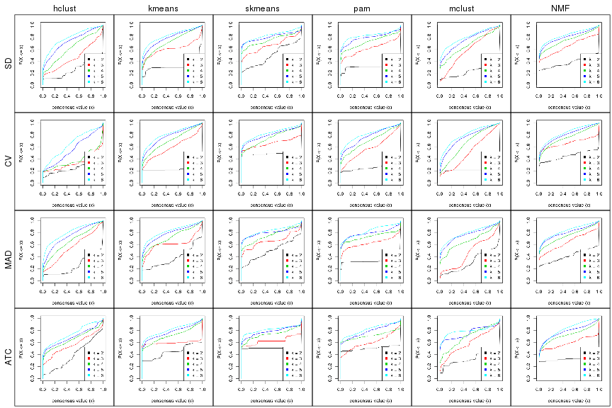
Consensus heatmaps for all methods. (What is a consensus heatmap?)
collect_plots(res_list, k = 2, fun = consensus_heatmap, mc.cores = 4)
collect_plots(res_list, k = 3, fun = consensus_heatmap, mc.cores = 4)
collect_plots(res_list, k = 4, fun = consensus_heatmap, mc.cores = 4)
collect_plots(res_list, k = 5, fun = consensus_heatmap, mc.cores = 4)
collect_plots(res_list, k = 6, fun = consensus_heatmap, mc.cores = 4)
Membership heatmaps for all methods. (What is a membership heatmap?)
collect_plots(res_list, k = 2, fun = membership_heatmap, mc.cores = 4)
collect_plots(res_list, k = 3, fun = membership_heatmap, mc.cores = 4)
collect_plots(res_list, k = 4, fun = membership_heatmap, mc.cores = 4)
collect_plots(res_list, k = 5, fun = membership_heatmap, mc.cores = 4)
collect_plots(res_list, k = 6, fun = membership_heatmap, mc.cores = 4)

Signature heatmaps for all methods. (What is a signature heatmap?)
Note in following heatmaps, rows are scaled.
collect_plots(res_list, k = 2, fun = get_signatures, mc.cores = 4)
collect_plots(res_list, k = 3, fun = get_signatures, mc.cores = 4)

collect_plots(res_list, k = 4, fun = get_signatures, mc.cores = 4)
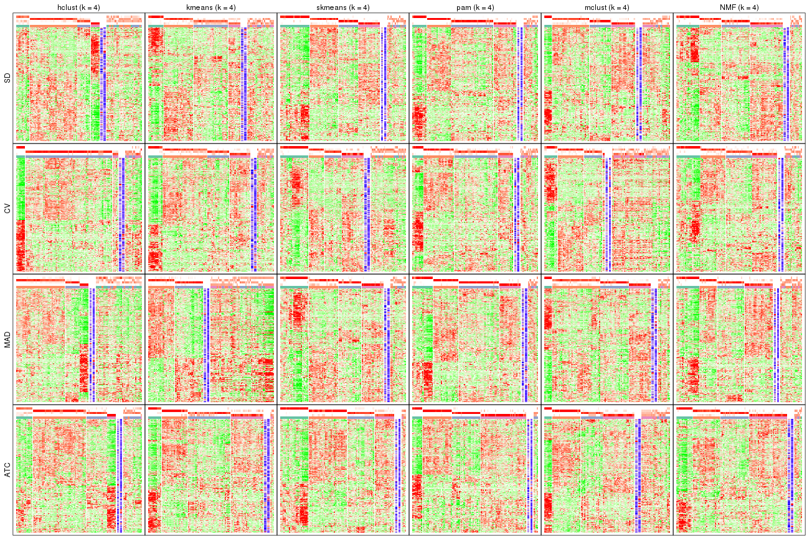
collect_plots(res_list, k = 5, fun = get_signatures, mc.cores = 4)
collect_plots(res_list, k = 6, fun = get_signatures, mc.cores = 4)
The statistics used for measuring the stability of consensus partitioning. (How are they defined?)
get_stats(res_list, k = 2)
#> k 1-PAC mean_silhouette concordance area_increased Rand Jaccard
#> SD:NMF 2 0.849 0.894 0.958 0.379 0.651 0.651
#> CV:NMF 2 0.903 0.917 0.965 0.450 0.540 0.540
#> MAD:NMF 2 0.812 0.878 0.951 0.413 0.595 0.595
#> ATC:NMF 2 1.000 0.980 0.992 0.318 0.673 0.673
#> SD:skmeans 2 0.622 0.735 0.900 0.493 0.500 0.500
#> CV:skmeans 2 1.000 0.985 0.994 0.482 0.516 0.516
#> MAD:skmeans 2 0.577 0.809 0.917 0.501 0.495 0.495
#> ATC:skmeans 2 1.000 0.998 0.999 0.504 0.496 0.496
#> SD:mclust 2 0.688 0.830 0.930 0.267 0.732 0.732
#> CV:mclust 2 1.000 0.993 0.996 0.214 0.786 0.786
#> MAD:mclust 2 0.634 0.742 0.905 0.316 0.720 0.720
#> ATC:mclust 2 0.831 0.882 0.951 0.332 0.684 0.684
#> SD:kmeans 2 0.989 0.962 0.976 0.308 0.707 0.707
#> CV:kmeans 2 1.000 0.991 0.997 0.220 0.786 0.786
#> MAD:kmeans 2 0.554 0.801 0.912 0.381 0.662 0.662
#> ATC:kmeans 2 0.782 0.889 0.952 0.445 0.545 0.545
#> SD:pam 2 1.000 0.982 0.990 0.304 0.695 0.695
#> CV:pam 2 0.980 0.948 0.980 0.256 0.759 0.759
#> MAD:pam 2 1.000 0.982 0.991 0.325 0.684 0.684
#> ATC:pam 2 1.000 0.965 0.986 0.501 0.500 0.500
#> SD:hclust 2 0.713 0.799 0.926 0.268 0.759 0.759
#> CV:hclust 2 0.877 0.897 0.958 0.250 0.772 0.772
#> MAD:hclust 2 0.687 0.770 0.915 0.255 0.786 0.786
#> ATC:hclust 2 0.346 0.628 0.848 0.393 0.551 0.551
get_stats(res_list, k = 3)
#> k 1-PAC mean_silhouette concordance area_increased Rand Jaccard
#> SD:NMF 3 0.680 0.755 0.902 0.705 0.635 0.467
#> CV:NMF 3 0.863 0.868 0.947 0.478 0.713 0.506
#> MAD:NMF 3 0.654 0.723 0.889 0.563 0.635 0.446
#> ATC:NMF 3 0.868 0.859 0.946 0.855 0.693 0.556
#> SD:skmeans 3 0.731 0.802 0.879 0.347 0.742 0.529
#> CV:skmeans 3 0.846 0.872 0.948 0.363 0.745 0.540
#> MAD:skmeans 3 0.731 0.857 0.916 0.322 0.772 0.571
#> ATC:skmeans 3 0.868 0.913 0.854 0.243 0.883 0.764
#> SD:mclust 3 0.254 0.595 0.765 1.196 0.586 0.462
#> CV:mclust 3 0.295 0.464 0.738 1.428 0.629 0.528
#> MAD:mclust 3 0.423 0.672 0.756 0.477 0.565 0.450
#> ATC:mclust 3 0.476 0.654 0.837 0.776 0.601 0.464
#> SD:kmeans 3 0.765 0.893 0.938 0.970 0.617 0.483
#> CV:kmeans 3 0.598 0.754 0.887 1.699 0.619 0.516
#> MAD:kmeans 3 0.653 0.897 0.919 0.609 0.621 0.471
#> ATC:kmeans 3 1.000 0.964 0.986 0.334 0.738 0.570
#> SD:pam 3 0.780 0.841 0.932 1.018 0.670 0.529
#> CV:pam 3 0.476 0.765 0.872 1.276 0.621 0.513
#> MAD:pam 3 0.833 0.889 0.951 0.935 0.688 0.544
#> ATC:pam 3 0.688 0.831 0.919 0.208 0.659 0.454
#> SD:hclust 3 0.434 0.717 0.851 0.723 0.795 0.735
#> CV:hclust 3 0.668 0.829 0.926 0.335 0.909 0.884
#> MAD:hclust 3 0.351 0.680 0.799 1.189 0.594 0.504
#> ATC:hclust 3 0.567 0.771 0.891 0.432 0.752 0.598
get_stats(res_list, k = 4)
#> k 1-PAC mean_silhouette concordance area_increased Rand Jaccard
#> SD:NMF 4 0.684 0.713 0.859 0.159 0.805 0.511
#> CV:NMF 4 0.625 0.696 0.835 0.135 0.755 0.405
#> MAD:NMF 4 0.672 0.663 0.847 0.160 0.821 0.543
#> ATC:NMF 4 0.701 0.800 0.895 0.229 0.768 0.483
#> SD:skmeans 4 0.785 0.759 0.891 0.130 0.828 0.545
#> CV:skmeans 4 0.679 0.623 0.826 0.137 0.808 0.508
#> MAD:skmeans 4 0.717 0.715 0.854 0.137 0.843 0.580
#> ATC:skmeans 4 0.805 0.859 0.915 0.174 0.871 0.662
#> SD:mclust 4 0.468 0.655 0.811 0.138 0.694 0.391
#> CV:mclust 4 0.336 0.485 0.720 0.279 0.721 0.420
#> MAD:mclust 4 0.514 0.753 0.853 0.433 0.651 0.365
#> ATC:mclust 4 0.548 0.641 0.824 0.175 0.729 0.447
#> SD:kmeans 4 0.524 0.591 0.743 0.192 0.850 0.632
#> CV:kmeans 4 0.533 0.646 0.799 0.192 0.804 0.563
#> MAD:kmeans 4 0.563 0.385 0.654 0.176 0.850 0.644
#> ATC:kmeans 4 0.657 0.789 0.865 0.207 0.854 0.650
#> SD:pam 4 0.763 0.784 0.901 0.178 0.784 0.511
#> CV:pam 4 0.551 0.663 0.820 0.201 0.851 0.659
#> MAD:pam 4 0.881 0.851 0.939 0.165 0.811 0.542
#> ATC:pam 4 0.890 0.888 0.953 0.177 0.722 0.432
#> SD:hclust 4 0.401 0.554 0.751 0.342 0.747 0.579
#> CV:hclust 4 0.634 0.776 0.910 0.145 0.948 0.926
#> MAD:hclust 4 0.402 0.570 0.770 0.179 0.862 0.700
#> ATC:hclust 4 0.632 0.705 0.842 0.164 0.852 0.678
get_stats(res_list, k = 5)
#> k 1-PAC mean_silhouette concordance area_increased Rand Jaccard
#> SD:NMF 5 0.738 0.733 0.858 0.0688 0.785 0.353
#> CV:NMF 5 0.655 0.620 0.772 0.0620 0.866 0.535
#> MAD:NMF 5 0.739 0.705 0.860 0.0685 0.792 0.363
#> ATC:NMF 5 0.697 0.732 0.858 0.0765 0.855 0.534
#> SD:skmeans 5 0.875 0.800 0.914 0.0653 0.892 0.611
#> CV:skmeans 5 0.777 0.708 0.867 0.0668 0.855 0.515
#> MAD:skmeans 5 0.867 0.863 0.933 0.0644 0.910 0.663
#> ATC:skmeans 5 0.824 0.791 0.899 0.0599 0.933 0.755
#> SD:mclust 5 0.536 0.424 0.686 0.1299 0.758 0.362
#> CV:mclust 5 0.525 0.605 0.749 0.1410 0.860 0.550
#> MAD:mclust 5 0.642 0.703 0.837 0.1473 0.819 0.496
#> ATC:mclust 5 0.795 0.558 0.748 0.0946 0.857 0.570
#> SD:kmeans 5 0.637 0.623 0.796 0.0881 0.854 0.531
#> CV:kmeans 5 0.598 0.586 0.752 0.1015 0.807 0.452
#> MAD:kmeans 5 0.672 0.679 0.822 0.0925 0.807 0.445
#> ATC:kmeans 5 0.729 0.494 0.698 0.0820 0.890 0.631
#> SD:pam 5 0.796 0.843 0.921 0.0940 0.826 0.480
#> CV:pam 5 0.639 0.562 0.799 0.1000 0.836 0.524
#> MAD:pam 5 0.823 0.842 0.921 0.0772 0.901 0.656
#> ATC:pam 5 0.752 0.697 0.816 0.1005 0.869 0.586
#> SD:hclust 5 0.478 0.604 0.742 0.1804 0.826 0.558
#> CV:hclust 5 0.383 0.530 0.792 0.4734 0.816 0.717
#> MAD:hclust 5 0.498 0.525 0.725 0.1331 0.833 0.544
#> ATC:hclust 5 0.625 0.672 0.828 0.0546 0.984 0.952
get_stats(res_list, k = 6)
#> k 1-PAC mean_silhouette concordance area_increased Rand Jaccard
#> SD:NMF 6 0.754 0.656 0.832 0.0386 0.916 0.629
#> CV:NMF 6 0.677 0.529 0.751 0.0387 0.832 0.368
#> MAD:NMF 6 0.730 0.601 0.804 0.0380 0.922 0.652
#> ATC:NMF 6 0.622 0.479 0.720 0.0481 0.898 0.609
#> SD:skmeans 6 0.805 0.728 0.850 0.0360 0.948 0.752
#> CV:skmeans 6 0.767 0.657 0.821 0.0395 0.886 0.528
#> MAD:skmeans 6 0.799 0.715 0.855 0.0359 0.933 0.693
#> ATC:skmeans 6 0.887 0.807 0.902 0.0431 0.924 0.684
#> SD:mclust 6 0.664 0.584 0.753 0.0554 0.913 0.647
#> CV:mclust 6 0.580 0.534 0.703 0.0572 0.872 0.504
#> MAD:mclust 6 0.676 0.510 0.756 0.0352 0.904 0.612
#> ATC:mclust 6 0.841 0.867 0.909 0.0466 0.840 0.455
#> SD:kmeans 6 0.702 0.615 0.788 0.0497 0.896 0.567
#> CV:kmeans 6 0.656 0.617 0.733 0.0447 0.928 0.684
#> MAD:kmeans 6 0.722 0.630 0.796 0.0459 0.922 0.656
#> ATC:kmeans 6 0.765 0.567 0.787 0.0488 0.865 0.502
#> SD:pam 6 0.866 0.860 0.912 0.0450 0.922 0.658
#> CV:pam 6 0.713 0.671 0.823 0.0548 0.940 0.744
#> MAD:pam 6 0.756 0.570 0.805 0.0449 0.905 0.598
#> ATC:pam 6 0.770 0.481 0.725 0.0456 0.846 0.443
#> SD:hclust 6 0.561 0.509 0.686 0.0816 0.952 0.807
#> CV:hclust 6 0.401 0.440 0.745 0.1636 0.923 0.837
#> MAD:hclust 6 0.638 0.544 0.736 0.0795 0.886 0.554
#> ATC:hclust 6 0.626 0.505 0.755 0.0820 0.906 0.725
Following heatmap plots the partition for each combination of methods and the lightness correspond to the silhouette scores for samples in each method. On top the consensus subgroup is inferred from all methods by taking the mean silhouette scores as weight.
collect_stats(res_list, k = 2)
collect_stats(res_list, k = 3)
collect_stats(res_list, k = 4)
collect_stats(res_list, k = 5)
collect_stats(res_list, k = 6)
Collect partitions from all methods:
collect_classes(res_list, k = 2)
collect_classes(res_list, k = 3)
collect_classes(res_list, k = 4)
collect_classes(res_list, k = 5)
collect_classes(res_list, k = 6)
Overlap of top rows from different top-row methods:
top_rows_overlap(res_list, top_n = 1000, method = "euler")
top_rows_overlap(res_list, top_n = 2000, method = "euler")

top_rows_overlap(res_list, top_n = 3000, method = "euler")
top_rows_overlap(res_list, top_n = 4000, method = "euler")

top_rows_overlap(res_list, top_n = 5000, method = "euler")
Also visualize the correspondance of rankings between different top-row methods:
top_rows_overlap(res_list, top_n = 1000, method = "correspondance")
top_rows_overlap(res_list, top_n = 2000, method = "correspondance")
top_rows_overlap(res_list, top_n = 3000, method = "correspondance")
top_rows_overlap(res_list, top_n = 4000, method = "correspondance")
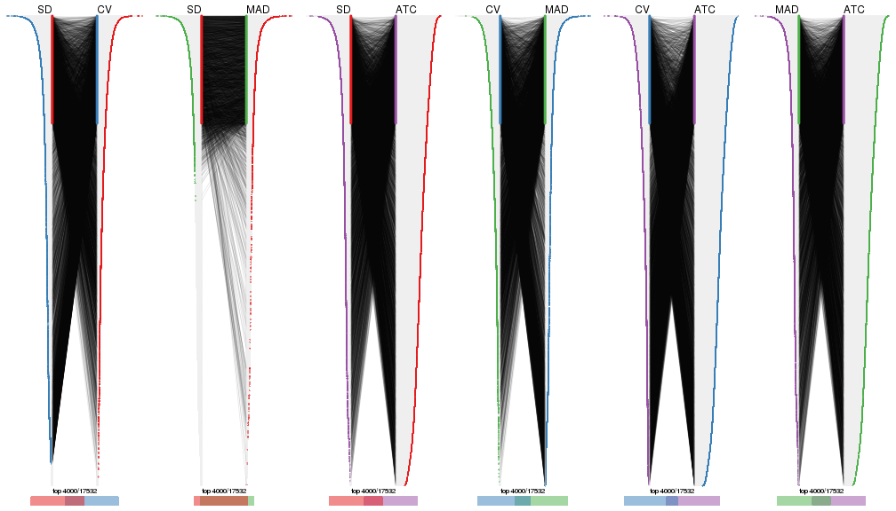
top_rows_overlap(res_list, top_n = 5000, method = "correspondance")
Heatmaps of the top rows:
top_rows_heatmap(res_list, top_n = 1000)

top_rows_heatmap(res_list, top_n = 2000)
top_rows_heatmap(res_list, top_n = 3000)
top_rows_heatmap(res_list, top_n = 4000)
top_rows_heatmap(res_list, top_n = 5000)
The object with results only for a single top-value method and a single partition method can be extracted as:
res = res_list["SD", "hclust"]
# you can also extract it by
# res = res_list["SD:hclust"]
A summary of res and all the functions that can be applied to it:
res
#> A 'ConsensusPartition' object with k = 2, 3, 4, 5, 6.
#> On a matrix with 17532 rows and 108 columns.
#> Top rows (1000, 2000, 3000, 4000, 5000) are extracted by 'SD' method.
#> Subgroups are detected by 'hclust' method.
#> Performed in total 1250 partitions by row resampling.
#> Best k for subgroups seems to be 3.
#>
#> Following methods can be applied to this 'ConsensusPartition' object:
#> [1] "cola_report" "collect_classes" "collect_plots"
#> [4] "collect_stats" "colnames" "compare_signatures"
#> [7] "consensus_heatmap" "dimension_reduction" "functional_enrichment"
#> [10] "get_anno_col" "get_anno" "get_classes"
#> [13] "get_consensus" "get_matrix" "get_membership"
#> [16] "get_param" "get_signatures" "get_stats"
#> [19] "is_best_k" "is_stable_k" "membership_heatmap"
#> [22] "ncol" "nrow" "plot_ecdf"
#> [25] "rownames" "select_partition_number" "show"
#> [28] "suggest_best_k" "test_to_known_factors"
collect_plots() function collects all the plots made from res for all k (number of partitions)
into one single page to provide an easy and fast comparison between different k.
collect_plots(res)
The plots are:
k and the heatmap of
predicted classes for each k.k.k.k.All the plots in panels can be made by individual functions and they are plotted later in this section.
select_partition_number() produces several plots showing different
statistics for choosing “optimized” k. There are following statistics:
k;k, the area increased is defined as \(A_k - A_{k-1}\).The detailed explanations of these statistics can be found in the cola vignette.
Generally speaking, lower PAC score, higher mean silhouette score or higher
concordance corresponds to better partition. Rand index and Jaccard index
measure how similar the current partition is compared to partition with k-1.
If they are too similar, we won't accept k is better than k-1.
select_partition_number(res)
The numeric values for all these statistics can be obtained by get_stats().
get_stats(res)
#> k 1-PAC mean_silhouette concordance area_increased Rand Jaccard
#> 2 2 0.713 0.799 0.926 0.2681 0.759 0.759
#> 3 3 0.434 0.717 0.851 0.7233 0.795 0.735
#> 4 4 0.401 0.554 0.751 0.3417 0.747 0.579
#> 5 5 0.478 0.604 0.742 0.1804 0.826 0.558
#> 6 6 0.561 0.509 0.686 0.0816 0.952 0.807
suggest_best_k() suggests the best \(k\) based on these statistics. The rules are as follows:
NA.suggest_best_k(res)
#> [1] 3
Following shows the table of the partitions (You need to click the show/hide
code output link to see it). The membership matrix (columns with name p*)
is inferred by
clue::cl_consensus()
function with the SE method. Basically the value in the membership matrix
represents the probability to belong to a certain group. The finall class
label for an item is determined with the group with highest probability it
belongs to.
In get_classes() function, the entropy is calculated from the membership
matrix and the silhouette score is calculated from the consensus matrix.
cbind(get_classes(res, k = 2), get_membership(res, k = 2))
#> class entropy silhouette p1 p2
#> SRR1389909 2 0.0672 0.9213 0.008 0.992
#> SRR1454460 2 0.0000 0.9266 0.000 1.000
#> SRR1404623 2 0.0000 0.9266 0.000 1.000
#> SRR1092038 2 0.0000 0.9266 0.000 1.000
#> SRR1319793 2 0.0000 0.9266 0.000 1.000
#> SRR1396208 2 0.0000 0.9266 0.000 1.000
#> SRR1435797 2 0.0000 0.9266 0.000 1.000
#> SRR1078042 2 0.0376 0.9239 0.004 0.996
#> SRR1339699 2 0.0000 0.9266 0.000 1.000
#> SRR1446499 2 0.0000 0.9266 0.000 1.000
#> SRR1359428 2 0.0000 0.9266 0.000 1.000
#> SRR1071475 1 0.9000 0.6453 0.684 0.316
#> SRR1436781 2 0.0000 0.9266 0.000 1.000
#> SRR1101453 2 0.0000 0.9266 0.000 1.000
#> SRR1350891 2 0.0000 0.9266 0.000 1.000
#> SRR814293 2 0.1184 0.9151 0.016 0.984
#> SRR1471456 2 0.0000 0.9266 0.000 1.000
#> SRR1446874 2 0.5946 0.7657 0.144 0.856
#> SRR1362731 2 0.0000 0.9266 0.000 1.000
#> SRR1413705 2 0.0000 0.9266 0.000 1.000
#> SRR1434586 2 0.0000 0.9266 0.000 1.000
#> SRR1091164 2 0.0000 0.9266 0.000 1.000
#> SRR1340598 2 0.0000 0.9266 0.000 1.000
#> SRR1466469 1 0.0000 0.7878 1.000 0.000
#> SRR1099310 2 0.1184 0.9147 0.016 0.984
#> SRR814892 2 0.0000 0.9266 0.000 1.000
#> SRR1090698 2 0.0000 0.9266 0.000 1.000
#> SRR1089134 1 0.0000 0.7878 1.000 0.000
#> SRR1120276 2 0.7950 0.6062 0.240 0.760
#> SRR1430507 2 0.9000 0.4340 0.316 0.684
#> SRR1356078 2 0.0000 0.9266 0.000 1.000
#> SRR1447037 2 0.0376 0.9239 0.004 0.996
#> SRR1443544 2 0.9944 -0.0733 0.456 0.544
#> SRR1081987 2 0.0000 0.9266 0.000 1.000
#> SRR1316513 2 0.0000 0.9266 0.000 1.000
#> SRR1478457 2 0.0000 0.9266 0.000 1.000
#> SRR1342849 2 0.0000 0.9266 0.000 1.000
#> SRR1073878 2 0.0000 0.9266 0.000 1.000
#> SRR1078735 2 0.9944 -0.0733 0.456 0.544
#> SRR1093601 2 0.0000 0.9266 0.000 1.000
#> SRR816629 2 0.0000 0.9266 0.000 1.000
#> SRR1477754 2 0.0000 0.9266 0.000 1.000
#> SRR1454589 2 0.8207 0.5763 0.256 0.744
#> SRR1102780 2 0.9129 0.4083 0.328 0.672
#> SRR1347518 2 0.0000 0.9266 0.000 1.000
#> SRR1093747 2 0.9286 0.3554 0.344 0.656
#> SRR809209 2 0.0000 0.9266 0.000 1.000
#> SRR1082471 2 0.0000 0.9266 0.000 1.000
#> SRR1390349 2 0.0000 0.9266 0.000 1.000
#> SRR1410493 2 0.0000 0.9266 0.000 1.000
#> SRR1086656 2 0.0000 0.9266 0.000 1.000
#> SRR1469997 2 0.0000 0.9266 0.000 1.000
#> SRR1355512 2 0.0000 0.9266 0.000 1.000
#> SRR809897 2 0.0000 0.9266 0.000 1.000
#> SRR1436146 2 0.0000 0.9266 0.000 1.000
#> SRR1097148 1 0.0000 0.7878 1.000 0.000
#> SRR1429979 2 0.0000 0.9266 0.000 1.000
#> SRR1454607 1 0.0000 0.7878 1.000 0.000
#> SRR1420687 2 0.9993 -0.1920 0.484 0.516
#> SRR1099669 1 0.9996 0.2396 0.512 0.488
#> SRR1360172 2 0.0000 0.9266 0.000 1.000
#> SRR1478131 2 0.0672 0.9207 0.008 0.992
#> SRR1453235 2 0.9977 -0.1449 0.472 0.528
#> SRR1369107 2 0.0000 0.9266 0.000 1.000
#> SRR1096458 2 0.0376 0.9239 0.004 0.996
#> SRR1088856 2 0.0000 0.9266 0.000 1.000
#> SRR1432934 2 0.0000 0.9266 0.000 1.000
#> SRR821072 2 0.0938 0.9182 0.012 0.988
#> SRR1480896 2 0.9977 -0.1449 0.472 0.528
#> SRR1403344 2 0.0000 0.9266 0.000 1.000
#> SRR1360850 1 0.9087 0.6381 0.676 0.324
#> SRR1451820 2 0.0000 0.9266 0.000 1.000
#> SRR1075360 2 0.0000 0.9266 0.000 1.000
#> SRR1413373 1 0.9491 0.5733 0.632 0.368
#> SRR1090928 2 0.0000 0.9266 0.000 1.000
#> SRR1097124 2 0.0000 0.9266 0.000 1.000
#> SRR1458745 1 0.9552 0.5574 0.624 0.376
#> SRR1078636 2 0.0000 0.9266 0.000 1.000
#> SRR1473754 2 0.2043 0.9003 0.032 0.968
#> SRR1085736 2 0.0000 0.9266 0.000 1.000
#> SRR1098807 1 0.0000 0.7878 1.000 0.000
#> SRR1341583 2 0.0000 0.9266 0.000 1.000
#> SRR1380869 2 0.0672 0.9213 0.008 0.992
#> SRR1430775 2 0.1184 0.9151 0.016 0.984
#> SRR1479573 2 0.0000 0.9266 0.000 1.000
#> SRR1082352 1 0.0000 0.7878 1.000 0.000
#> SRR1102005 2 0.0000 0.9266 0.000 1.000
#> SRR1408415 1 0.9491 0.5733 0.632 0.368
#> SRR1353537 1 0.0000 0.7878 1.000 0.000
#> SRR1458870 2 0.0000 0.9266 0.000 1.000
#> SRR1315495 2 0.0000 0.9266 0.000 1.000
#> SRR1481169 2 0.9129 0.4083 0.328 0.672
#> SRR1470273 1 0.0000 0.7878 1.000 0.000
#> SRR1312446 2 0.0000 0.9266 0.000 1.000
#> SRR1101859 2 0.0000 0.9266 0.000 1.000
#> SRR1384210 2 0.9944 -0.0733 0.456 0.544
#> SRR1336244 2 0.0000 0.9266 0.000 1.000
#> SRR1374432 2 0.0000 0.9266 0.000 1.000
#> SRR1430023 2 0.0376 0.9239 0.004 0.996
#> SRR1487527 1 0.9087 0.6381 0.676 0.324
#> SRR1073389 2 0.8499 0.5308 0.276 0.724
#> SRR1433171 2 0.0000 0.9266 0.000 1.000
#> SRR1085565 2 0.7674 0.6356 0.224 0.776
#> SRR1355017 2 0.0000 0.9266 0.000 1.000
#> SRR1351641 2 0.0000 0.9266 0.000 1.000
#> SRR1398230 2 0.0000 0.9266 0.000 1.000
#> SRR1086212 2 0.1633 0.9073 0.024 0.976
#> SRR1431514 2 0.0672 0.9211 0.008 0.992
cbind(get_classes(res, k = 3), get_membership(res, k = 3))
#> class entropy silhouette p1 p2 p3
#> SRR1389909 2 0.1289 0.84880 0.000 0.968 0.032
#> SRR1454460 2 0.5926 0.54239 0.000 0.644 0.356
#> SRR1404623 2 0.0747 0.85012 0.000 0.984 0.016
#> SRR1092038 2 0.6154 0.44771 0.000 0.592 0.408
#> SRR1319793 2 0.0237 0.84941 0.000 0.996 0.004
#> SRR1396208 2 0.3340 0.80903 0.000 0.880 0.120
#> SRR1435797 2 0.4931 0.71041 0.000 0.768 0.232
#> SRR1078042 2 0.6154 0.44975 0.000 0.592 0.408
#> SRR1339699 2 0.5650 0.61021 0.000 0.688 0.312
#> SRR1446499 2 0.0424 0.85002 0.000 0.992 0.008
#> SRR1359428 2 0.0237 0.84941 0.000 0.996 0.004
#> SRR1071475 3 0.6274 0.18160 0.456 0.000 0.544
#> SRR1436781 2 0.0237 0.84941 0.000 0.996 0.004
#> SRR1101453 2 0.6154 0.44771 0.000 0.592 0.408
#> SRR1350891 2 0.0237 0.84941 0.000 0.996 0.004
#> SRR814293 2 0.6307 0.53201 0.012 0.660 0.328
#> SRR1471456 2 0.6140 0.45640 0.000 0.596 0.404
#> SRR1446874 3 0.6869 0.17323 0.016 0.424 0.560
#> SRR1362731 2 0.0747 0.85012 0.000 0.984 0.016
#> SRR1413705 2 0.0424 0.85020 0.000 0.992 0.008
#> SRR1434586 2 0.3192 0.81321 0.000 0.888 0.112
#> SRR1091164 2 0.0747 0.85012 0.000 0.984 0.016
#> SRR1340598 2 0.5678 0.60365 0.000 0.684 0.316
#> SRR1466469 1 0.0000 0.99885 1.000 0.000 0.000
#> SRR1099310 2 0.1163 0.84483 0.000 0.972 0.028
#> SRR814892 2 0.0237 0.84941 0.000 0.996 0.004
#> SRR1090698 2 0.2711 0.82644 0.000 0.912 0.088
#> SRR1089134 1 0.0000 0.99885 1.000 0.000 0.000
#> SRR1120276 3 0.6143 0.48555 0.012 0.304 0.684
#> SRR1430507 2 0.8523 -0.22704 0.092 0.464 0.444
#> SRR1356078 2 0.4346 0.75827 0.000 0.816 0.184
#> SRR1447037 2 0.1643 0.84741 0.000 0.956 0.044
#> SRR1443544 3 0.2703 0.56543 0.056 0.016 0.928
#> SRR1081987 2 0.0424 0.84975 0.000 0.992 0.008
#> SRR1316513 2 0.0424 0.84975 0.000 0.992 0.008
#> SRR1478457 2 0.4887 0.71181 0.000 0.772 0.228
#> SRR1342849 2 0.4750 0.72646 0.000 0.784 0.216
#> SRR1073878 2 0.0237 0.84941 0.000 0.996 0.004
#> SRR1078735 3 0.2703 0.56543 0.056 0.016 0.928
#> SRR1093601 2 0.0237 0.84941 0.000 0.996 0.004
#> SRR816629 2 0.3267 0.81120 0.000 0.884 0.116
#> SRR1477754 2 0.1411 0.84717 0.000 0.964 0.036
#> SRR1454589 3 0.5325 0.60546 0.004 0.248 0.748
#> SRR1102780 3 0.7364 0.58660 0.056 0.304 0.640
#> SRR1347518 2 0.0592 0.84963 0.000 0.988 0.012
#> SRR1093747 3 0.8452 0.51449 0.104 0.340 0.556
#> SRR809209 2 0.3340 0.80903 0.000 0.880 0.120
#> SRR1082471 2 0.5138 0.69204 0.000 0.748 0.252
#> SRR1390349 2 0.3340 0.80903 0.000 0.880 0.120
#> SRR1410493 2 0.5138 0.69204 0.000 0.748 0.252
#> SRR1086656 2 0.0592 0.84963 0.000 0.988 0.012
#> SRR1469997 2 0.0237 0.84941 0.000 0.996 0.004
#> SRR1355512 2 0.1753 0.84169 0.000 0.952 0.048
#> SRR809897 2 0.3267 0.81189 0.000 0.884 0.116
#> SRR1436146 2 0.0592 0.85049 0.000 0.988 0.012
#> SRR1097148 1 0.0000 0.99885 1.000 0.000 0.000
#> SRR1429979 2 0.6154 0.44771 0.000 0.592 0.408
#> SRR1454607 1 0.0000 0.99885 1.000 0.000 0.000
#> SRR1420687 3 0.8016 0.62349 0.156 0.188 0.656
#> SRR1099669 3 0.7825 0.58801 0.156 0.172 0.672
#> SRR1360172 2 0.6154 0.44771 0.000 0.592 0.408
#> SRR1478131 2 0.1031 0.84728 0.000 0.976 0.024
#> SRR1453235 3 0.8427 0.59910 0.148 0.240 0.612
#> SRR1369107 2 0.6154 0.44771 0.000 0.592 0.408
#> SRR1096458 2 0.1289 0.84913 0.000 0.968 0.032
#> SRR1088856 2 0.6154 0.44771 0.000 0.592 0.408
#> SRR1432934 2 0.0237 0.84941 0.000 0.996 0.004
#> SRR821072 2 0.1129 0.84730 0.004 0.976 0.020
#> SRR1480896 3 0.8427 0.59910 0.148 0.240 0.612
#> SRR1403344 2 0.5178 0.69094 0.000 0.744 0.256
#> SRR1360850 3 0.5216 0.46799 0.260 0.000 0.740
#> SRR1451820 2 0.0237 0.84941 0.000 0.996 0.004
#> SRR1075360 2 0.3482 0.80623 0.000 0.872 0.128
#> SRR1413373 3 0.4887 0.51525 0.228 0.000 0.772
#> SRR1090928 2 0.0747 0.85012 0.000 0.984 0.016
#> SRR1097124 2 0.1163 0.84934 0.000 0.972 0.028
#> SRR1458745 3 0.4796 0.51893 0.220 0.000 0.780
#> SRR1078636 2 0.0237 0.84941 0.000 0.996 0.004
#> SRR1473754 2 0.2063 0.83518 0.008 0.948 0.044
#> SRR1085736 2 0.4178 0.76995 0.000 0.828 0.172
#> SRR1098807 1 0.0000 0.99885 1.000 0.000 0.000
#> SRR1341583 2 0.0237 0.84945 0.000 0.996 0.004
#> SRR1380869 2 0.0892 0.84819 0.000 0.980 0.020
#> SRR1430775 2 0.6307 0.53201 0.012 0.660 0.328
#> SRR1479573 2 0.3116 0.81497 0.000 0.892 0.108
#> SRR1082352 1 0.0424 0.99191 0.992 0.000 0.008
#> SRR1102005 2 0.3116 0.81497 0.000 0.892 0.108
#> SRR1408415 3 0.4887 0.51525 0.228 0.000 0.772
#> SRR1353537 1 0.0000 0.99885 1.000 0.000 0.000
#> SRR1458870 2 0.0424 0.85002 0.000 0.992 0.008
#> SRR1315495 2 0.0747 0.85012 0.000 0.984 0.016
#> SRR1481169 3 0.7417 0.57461 0.056 0.312 0.632
#> SRR1470273 1 0.0000 0.99885 1.000 0.000 0.000
#> SRR1312446 2 0.0592 0.85049 0.000 0.988 0.012
#> SRR1101859 2 0.0592 0.85065 0.000 0.988 0.012
#> SRR1384210 3 0.2703 0.56543 0.056 0.016 0.928
#> SRR1336244 2 0.0237 0.84941 0.000 0.996 0.004
#> SRR1374432 2 0.0237 0.84941 0.000 0.996 0.004
#> SRR1430023 2 0.5785 0.54731 0.000 0.668 0.332
#> SRR1487527 3 0.5216 0.46799 0.260 0.000 0.740
#> SRR1073389 2 0.8393 -0.00869 0.088 0.516 0.396
#> SRR1433171 2 0.5760 0.55550 0.000 0.672 0.328
#> SRR1085565 3 0.6255 0.44123 0.012 0.320 0.668
#> SRR1355017 2 0.0237 0.84945 0.000 0.996 0.004
#> SRR1351641 2 0.0237 0.84941 0.000 0.996 0.004
#> SRR1398230 2 0.0237 0.84941 0.000 0.996 0.004
#> SRR1086212 2 0.1525 0.84093 0.004 0.964 0.032
#> SRR1431514 2 0.0848 0.85050 0.008 0.984 0.008
cbind(get_classes(res, k = 4), get_membership(res, k = 4))
#> class entropy silhouette p1 p2 p3 p4
#> SRR1389909 2 0.2089 0.7541 0.020 0.932 0.048 0.000
#> SRR1454460 3 0.3764 0.6128 0.000 0.216 0.784 0.000
#> SRR1404623 2 0.4538 0.6245 0.024 0.760 0.216 0.000
#> SRR1092038 3 0.2868 0.5931 0.000 0.136 0.864 0.000
#> SRR1319793 2 0.0779 0.7598 0.004 0.980 0.016 0.000
#> SRR1396208 2 0.5478 0.0693 0.016 0.540 0.444 0.000
#> SRR1435797 3 0.5571 0.3938 0.024 0.396 0.580 0.000
#> SRR1078042 3 0.2868 0.5924 0.000 0.136 0.864 0.000
#> SRR1339699 3 0.4382 0.6052 0.000 0.296 0.704 0.000
#> SRR1446499 2 0.2124 0.7524 0.008 0.924 0.068 0.000
#> SRR1359428 2 0.1004 0.7607 0.004 0.972 0.024 0.000
#> SRR1071475 1 0.6702 0.2024 0.512 0.000 0.092 0.396
#> SRR1436781 2 0.0657 0.7580 0.004 0.984 0.012 0.000
#> SRR1101453 3 0.2868 0.5931 0.000 0.136 0.864 0.000
#> SRR1350891 2 0.1576 0.7543 0.004 0.948 0.048 0.000
#> SRR814293 3 0.7820 0.3123 0.256 0.360 0.384 0.000
#> SRR1471456 3 0.2921 0.5954 0.000 0.140 0.860 0.000
#> SRR1446874 3 0.6764 0.2150 0.260 0.144 0.596 0.000
#> SRR1362731 2 0.4538 0.6245 0.024 0.760 0.216 0.000
#> SRR1413705 2 0.2002 0.7527 0.020 0.936 0.044 0.000
#> SRR1434586 2 0.6875 0.1245 0.112 0.520 0.368 0.000
#> SRR1091164 2 0.4538 0.6245 0.024 0.760 0.216 0.000
#> SRR1340598 3 0.4134 0.6124 0.000 0.260 0.740 0.000
#> SRR1466469 4 0.0000 0.9988 0.000 0.000 0.000 1.000
#> SRR1099310 2 0.1510 0.7524 0.028 0.956 0.016 0.000
#> SRR814892 2 0.0779 0.7598 0.004 0.980 0.016 0.000
#> SRR1090698 2 0.6843 0.1547 0.112 0.532 0.356 0.000
#> SRR1089134 4 0.0000 0.9988 0.000 0.000 0.000 1.000
#> SRR1120276 3 0.6158 0.0359 0.292 0.080 0.628 0.000
#> SRR1430507 1 0.7235 0.1357 0.492 0.152 0.356 0.000
#> SRR1356078 2 0.7153 -0.0465 0.132 0.444 0.424 0.000
#> SRR1447037 2 0.2255 0.7499 0.012 0.920 0.068 0.000
#> SRR1443544 1 0.5313 0.5512 0.608 0.000 0.376 0.016
#> SRR1081987 2 0.1356 0.7598 0.008 0.960 0.032 0.000
#> SRR1316513 2 0.1356 0.7598 0.008 0.960 0.032 0.000
#> SRR1478457 3 0.5300 0.3872 0.012 0.408 0.580 0.000
#> SRR1342849 2 0.5193 0.3160 0.020 0.656 0.324 0.000
#> SRR1073878 2 0.1576 0.7543 0.004 0.948 0.048 0.000
#> SRR1078735 1 0.5313 0.5512 0.608 0.000 0.376 0.016
#> SRR1093601 2 0.0657 0.7580 0.004 0.984 0.012 0.000
#> SRR816629 2 0.6988 0.0584 0.120 0.500 0.380 0.000
#> SRR1477754 2 0.5168 0.5378 0.040 0.712 0.248 0.000
#> SRR1454589 1 0.6911 0.3743 0.504 0.112 0.384 0.000
#> SRR1102780 1 0.6903 0.3614 0.592 0.224 0.184 0.000
#> SRR1347518 2 0.2048 0.7510 0.008 0.928 0.064 0.000
#> SRR1093747 1 0.6214 0.3569 0.576 0.064 0.360 0.000
#> SRR809209 2 0.5478 0.0693 0.016 0.540 0.444 0.000
#> SRR1082471 3 0.7219 0.2236 0.148 0.364 0.488 0.000
#> SRR1390349 2 0.5478 0.0693 0.016 0.540 0.444 0.000
#> SRR1410493 3 0.7219 0.2236 0.148 0.364 0.488 0.000
#> SRR1086656 2 0.2048 0.7510 0.008 0.928 0.064 0.000
#> SRR1469997 2 0.1356 0.7561 0.008 0.960 0.032 0.000
#> SRR1355512 2 0.6273 0.4006 0.100 0.636 0.264 0.000
#> SRR809897 2 0.6867 0.0795 0.108 0.508 0.384 0.000
#> SRR1436146 2 0.1854 0.7546 0.012 0.940 0.048 0.000
#> SRR1097148 4 0.0000 0.9988 0.000 0.000 0.000 1.000
#> SRR1429979 3 0.2868 0.5931 0.000 0.136 0.864 0.000
#> SRR1454607 4 0.0000 0.9988 0.000 0.000 0.000 1.000
#> SRR1420687 1 0.5752 0.5093 0.632 0.036 0.328 0.004
#> SRR1099669 1 0.4462 0.5412 0.736 0.004 0.256 0.004
#> SRR1360172 3 0.2868 0.5931 0.000 0.136 0.864 0.000
#> SRR1478131 2 0.1733 0.7517 0.028 0.948 0.024 0.000
#> SRR1453235 1 0.5727 0.5063 0.688 0.060 0.248 0.004
#> SRR1369107 3 0.2868 0.5931 0.000 0.136 0.864 0.000
#> SRR1096458 2 0.2142 0.7542 0.016 0.928 0.056 0.000
#> SRR1088856 3 0.2868 0.5931 0.000 0.136 0.864 0.000
#> SRR1432934 2 0.1209 0.7535 0.004 0.964 0.032 0.000
#> SRR821072 2 0.1520 0.7535 0.024 0.956 0.020 0.000
#> SRR1480896 1 0.5727 0.5063 0.688 0.060 0.248 0.004
#> SRR1403344 3 0.5453 0.5638 0.032 0.320 0.648 0.000
#> SRR1360850 1 0.4364 0.5638 0.816 0.000 0.092 0.092
#> SRR1451820 2 0.0657 0.7580 0.004 0.984 0.012 0.000
#> SRR1075360 2 0.6882 0.0661 0.108 0.500 0.392 0.000
#> SRR1413373 1 0.5528 0.5568 0.732 0.000 0.124 0.144
#> SRR1090928 2 0.4538 0.6245 0.024 0.760 0.216 0.000
#> SRR1097124 2 0.5074 0.5591 0.040 0.724 0.236 0.000
#> SRR1458745 1 0.5630 0.5582 0.724 0.000 0.136 0.140
#> SRR1078636 2 0.1576 0.7543 0.004 0.948 0.048 0.000
#> SRR1473754 2 0.2399 0.7339 0.048 0.920 0.032 0.000
#> SRR1085736 2 0.7113 -0.0150 0.128 0.456 0.416 0.000
#> SRR1098807 4 0.0000 0.9988 0.000 0.000 0.000 1.000
#> SRR1341583 2 0.1109 0.7626 0.004 0.968 0.028 0.000
#> SRR1380869 2 0.1411 0.7547 0.020 0.960 0.020 0.000
#> SRR1430775 3 0.7820 0.3123 0.256 0.360 0.384 0.000
#> SRR1479573 2 0.6919 0.1124 0.116 0.516 0.368 0.000
#> SRR1082352 4 0.0336 0.9914 0.008 0.000 0.000 0.992
#> SRR1102005 2 0.6919 0.1124 0.116 0.516 0.368 0.000
#> SRR1408415 1 0.5528 0.5568 0.732 0.000 0.124 0.144
#> SRR1353537 4 0.0000 0.9988 0.000 0.000 0.000 1.000
#> SRR1458870 2 0.3626 0.6688 0.004 0.812 0.184 0.000
#> SRR1315495 2 0.4538 0.6245 0.024 0.760 0.216 0.000
#> SRR1481169 1 0.6910 0.3498 0.584 0.252 0.164 0.000
#> SRR1470273 4 0.0000 0.9988 0.000 0.000 0.000 1.000
#> SRR1312446 2 0.1854 0.7546 0.012 0.940 0.048 0.000
#> SRR1101859 2 0.2198 0.7533 0.008 0.920 0.072 0.000
#> SRR1384210 1 0.5313 0.5512 0.608 0.000 0.376 0.016
#> SRR1336244 2 0.1576 0.7543 0.004 0.948 0.048 0.000
#> SRR1374432 2 0.0779 0.7598 0.004 0.980 0.016 0.000
#> SRR1430023 3 0.7772 0.3072 0.240 0.368 0.392 0.000
#> SRR1487527 1 0.4364 0.5638 0.816 0.000 0.092 0.092
#> SRR1073389 1 0.7463 -0.0171 0.440 0.176 0.384 0.000
#> SRR1433171 3 0.7758 0.3047 0.236 0.368 0.396 0.000
#> SRR1085565 3 0.6074 0.0867 0.268 0.084 0.648 0.000
#> SRR1355017 2 0.1398 0.7601 0.004 0.956 0.040 0.000
#> SRR1351641 2 0.1305 0.7514 0.004 0.960 0.036 0.000
#> SRR1398230 2 0.1305 0.7514 0.004 0.960 0.036 0.000
#> SRR1086212 2 0.1706 0.7478 0.036 0.948 0.016 0.000
#> SRR1431514 2 0.2214 0.7501 0.028 0.928 0.044 0.000
cbind(get_classes(res, k = 5), get_membership(res, k = 5))
#> class entropy silhouette p1 p2 p3 p4 p5
#> SRR1389909 2 0.3748 0.7022 0.000 0.832 0.052 0.016 0.100
#> SRR1454460 3 0.2209 0.6942 0.000 0.056 0.912 0.000 0.032
#> SRR1404623 2 0.5888 0.2257 0.000 0.524 0.064 0.016 0.396
#> SRR1092038 3 0.0000 0.6986 0.000 0.000 1.000 0.000 0.000
#> SRR1319793 2 0.2069 0.7561 0.000 0.912 0.012 0.000 0.076
#> SRR1396208 3 0.6614 0.2653 0.000 0.340 0.476 0.008 0.176
#> SRR1435797 3 0.5968 0.4958 0.000 0.180 0.620 0.008 0.192
#> SRR1078042 3 0.0324 0.6984 0.000 0.004 0.992 0.000 0.004
#> SRR1339699 3 0.4548 0.6395 0.000 0.124 0.752 0.000 0.124
#> SRR1446499 2 0.4195 0.7018 0.000 0.768 0.036 0.008 0.188
#> SRR1359428 2 0.2522 0.7584 0.000 0.880 0.012 0.000 0.108
#> SRR1071475 4 0.4310 0.3116 0.392 0.000 0.000 0.604 0.004
#> SRR1436781 2 0.1608 0.7568 0.000 0.928 0.000 0.000 0.072
#> SRR1101453 3 0.0000 0.6986 0.000 0.000 1.000 0.000 0.000
#> SRR1350891 2 0.3611 0.7309 0.000 0.812 0.028 0.004 0.156
#> SRR814293 5 0.6821 0.4550 0.000 0.128 0.052 0.268 0.552
#> SRR1471456 3 0.0162 0.6992 0.000 0.004 0.996 0.000 0.000
#> SRR1446874 3 0.7097 0.0277 0.000 0.024 0.460 0.228 0.288
#> SRR1362731 2 0.5880 0.2359 0.000 0.528 0.064 0.016 0.392
#> SRR1413705 2 0.4173 0.6848 0.000 0.748 0.016 0.012 0.224
#> SRR1434586 5 0.4844 0.6828 0.000 0.172 0.108 0.000 0.720
#> SRR1091164 2 0.5880 0.2359 0.000 0.528 0.064 0.016 0.392
#> SRR1340598 3 0.3064 0.6787 0.000 0.108 0.856 0.000 0.036
#> SRR1466469 1 0.0000 0.9964 1.000 0.000 0.000 0.000 0.000
#> SRR1099310 2 0.2722 0.7202 0.000 0.872 0.000 0.020 0.108
#> SRR814892 2 0.2006 0.7565 0.000 0.916 0.012 0.000 0.072
#> SRR1090698 5 0.5496 0.6377 0.000 0.196 0.152 0.000 0.652
#> SRR1089134 1 0.0000 0.9964 1.000 0.000 0.000 0.000 0.000
#> SRR1120276 3 0.4227 0.3166 0.000 0.000 0.692 0.292 0.016
#> SRR1430507 5 0.5232 0.1226 0.000 0.060 0.000 0.340 0.600
#> SRR1356078 5 0.2969 0.6919 0.000 0.128 0.020 0.000 0.852
#> SRR1447037 2 0.3752 0.6990 0.000 0.828 0.072 0.008 0.092
#> SRR1443544 4 0.4385 0.5379 0.012 0.000 0.312 0.672 0.004
#> SRR1081987 2 0.2990 0.7258 0.000 0.876 0.032 0.012 0.080
#> SRR1316513 2 0.2990 0.7258 0.000 0.876 0.032 0.012 0.080
#> SRR1478457 3 0.5852 0.4946 0.000 0.180 0.624 0.004 0.192
#> SRR1342849 2 0.6239 0.0397 0.000 0.512 0.368 0.012 0.108
#> SRR1073878 2 0.3569 0.7327 0.000 0.816 0.028 0.004 0.152
#> SRR1078735 4 0.4385 0.5379 0.012 0.000 0.312 0.672 0.004
#> SRR1093601 2 0.1608 0.7568 0.000 0.928 0.000 0.000 0.072
#> SRR816629 5 0.5033 0.6945 0.000 0.156 0.124 0.004 0.716
#> SRR1477754 5 0.5484 0.2444 0.000 0.360 0.048 0.012 0.580
#> SRR1454589 4 0.6545 0.5127 0.000 0.028 0.232 0.576 0.164
#> SRR1102780 4 0.5436 0.4676 0.000 0.088 0.008 0.656 0.248
#> SRR1347518 2 0.3631 0.7088 0.000 0.840 0.068 0.012 0.080
#> SRR1093747 5 0.4227 -0.2202 0.000 0.000 0.000 0.420 0.580
#> SRR809209 3 0.6614 0.2653 0.000 0.340 0.476 0.008 0.176
#> SRR1082471 5 0.2456 0.6439 0.000 0.064 0.024 0.008 0.904
#> SRR1390349 3 0.6614 0.2653 0.000 0.340 0.476 0.008 0.176
#> SRR1410493 5 0.2456 0.6439 0.000 0.064 0.024 0.008 0.904
#> SRR1086656 2 0.3631 0.7088 0.000 0.840 0.068 0.012 0.080
#> SRR1469997 2 0.3497 0.7519 0.000 0.828 0.020 0.012 0.140
#> SRR1355512 5 0.5024 0.4460 0.000 0.312 0.044 0.004 0.640
#> SRR809897 5 0.5413 0.6605 0.000 0.168 0.168 0.000 0.664
#> SRR1436146 2 0.4202 0.6892 0.000 0.744 0.016 0.012 0.228
#> SRR1097148 1 0.0000 0.9964 1.000 0.000 0.000 0.000 0.000
#> SRR1429979 3 0.0000 0.6986 0.000 0.000 1.000 0.000 0.000
#> SRR1454607 1 0.0000 0.9964 1.000 0.000 0.000 0.000 0.000
#> SRR1420687 4 0.6009 0.5443 0.000 0.000 0.180 0.580 0.240
#> SRR1099669 4 0.4192 0.4873 0.000 0.000 0.000 0.596 0.404
#> SRR1360172 3 0.0000 0.6986 0.000 0.000 1.000 0.000 0.000
#> SRR1478131 2 0.3059 0.7258 0.000 0.856 0.008 0.016 0.120
#> SRR1453235 4 0.5363 0.4557 0.000 0.008 0.040 0.548 0.404
#> SRR1369107 3 0.0000 0.6986 0.000 0.000 1.000 0.000 0.000
#> SRR1096458 2 0.3617 0.7009 0.000 0.836 0.060 0.008 0.096
#> SRR1088856 3 0.0000 0.6986 0.000 0.000 1.000 0.000 0.000
#> SRR1432934 2 0.3297 0.7452 0.000 0.840 0.020 0.008 0.132
#> SRR821072 2 0.2899 0.7213 0.000 0.872 0.008 0.020 0.100
#> SRR1480896 4 0.5363 0.4557 0.000 0.008 0.040 0.548 0.404
#> SRR1403344 3 0.4887 0.5889 0.000 0.132 0.720 0.000 0.148
#> SRR1360850 4 0.2189 0.6555 0.084 0.000 0.000 0.904 0.012
#> SRR1451820 2 0.1608 0.7568 0.000 0.928 0.000 0.000 0.072
#> SRR1075360 5 0.4801 0.6961 0.000 0.148 0.124 0.000 0.728
#> SRR1413373 4 0.3124 0.6464 0.136 0.000 0.016 0.844 0.004
#> SRR1090928 2 0.5880 0.2359 0.000 0.528 0.064 0.016 0.392
#> SRR1097124 5 0.5990 0.1421 0.000 0.436 0.056 0.024 0.484
#> SRR1458745 4 0.3396 0.6463 0.136 0.000 0.028 0.832 0.004
#> SRR1078636 2 0.3569 0.7327 0.000 0.816 0.028 0.004 0.152
#> SRR1473754 2 0.3477 0.7071 0.000 0.840 0.012 0.032 0.116
#> SRR1085736 5 0.3366 0.6925 0.000 0.140 0.032 0.000 0.828
#> SRR1098807 1 0.0000 0.9964 1.000 0.000 0.000 0.000 0.000
#> SRR1341583 2 0.3250 0.7459 0.000 0.844 0.020 0.008 0.128
#> SRR1380869 2 0.2678 0.7239 0.000 0.880 0.004 0.016 0.100
#> SRR1430775 5 0.6821 0.4550 0.000 0.128 0.052 0.268 0.552
#> SRR1479573 5 0.4827 0.6897 0.000 0.160 0.116 0.000 0.724
#> SRR1082352 1 0.0912 0.9747 0.972 0.000 0.000 0.016 0.012
#> SRR1102005 5 0.4827 0.6897 0.000 0.160 0.116 0.000 0.724
#> SRR1408415 4 0.3124 0.6464 0.136 0.000 0.016 0.844 0.004
#> SRR1353537 1 0.0000 0.9964 1.000 0.000 0.000 0.000 0.000
#> SRR1458870 2 0.5124 0.4757 0.000 0.628 0.040 0.008 0.324
#> SRR1315495 2 0.5888 0.2257 0.000 0.524 0.064 0.016 0.396
#> SRR1481169 4 0.5623 0.4588 0.000 0.120 0.008 0.652 0.220
#> SRR1470273 1 0.0000 0.9964 1.000 0.000 0.000 0.000 0.000
#> SRR1312446 2 0.4202 0.6892 0.000 0.744 0.016 0.012 0.228
#> SRR1101859 2 0.4003 0.7134 0.000 0.780 0.036 0.004 0.180
#> SRR1384210 4 0.4385 0.5379 0.012 0.000 0.312 0.672 0.004
#> SRR1336244 2 0.3569 0.7327 0.000 0.816 0.028 0.004 0.152
#> SRR1374432 2 0.2069 0.7561 0.000 0.912 0.012 0.000 0.076
#> SRR1430023 5 0.6969 0.4755 0.000 0.136 0.060 0.260 0.544
#> SRR1487527 4 0.2189 0.6555 0.084 0.000 0.000 0.904 0.012
#> SRR1073389 5 0.5392 0.2656 0.000 0.068 0.008 0.288 0.636
#> SRR1433171 5 0.7018 0.4815 0.000 0.144 0.060 0.256 0.540
#> SRR1085565 3 0.3910 0.3518 0.000 0.000 0.720 0.272 0.008
#> SRR1355017 2 0.3902 0.7394 0.000 0.804 0.028 0.016 0.152
#> SRR1351641 2 0.3441 0.7373 0.000 0.828 0.028 0.004 0.140
#> SRR1398230 2 0.3441 0.7373 0.000 0.828 0.028 0.004 0.140
#> SRR1086212 2 0.2864 0.7160 0.000 0.864 0.000 0.024 0.112
#> SRR1431514 2 0.4450 0.6680 0.000 0.728 0.016 0.020 0.236
cbind(get_classes(res, k = 6), get_membership(res, k = 6))
#> class entropy silhouette p1 p2 p3 p4 p5 p6
#> SRR1389909 4 0.2288 0.59938 0.000 0.004 0.048 0.904 0.040 0.004
#> SRR1454460 3 0.2065 0.71401 0.000 0.004 0.912 0.052 0.032 0.000
#> SRR1404623 2 0.4757 0.62277 0.000 0.480 0.000 0.048 0.472 0.000
#> SRR1092038 3 0.0000 0.72142 0.000 0.000 1.000 0.000 0.000 0.000
#> SRR1319793 4 0.4161 0.56820 0.000 0.132 0.012 0.764 0.092 0.000
#> SRR1396208 3 0.6139 0.38722 0.000 0.024 0.464 0.360 0.152 0.000
#> SRR1435797 3 0.5824 0.55855 0.000 0.032 0.612 0.164 0.188 0.004
#> SRR1078042 3 0.0260 0.72052 0.000 0.000 0.992 0.008 0.000 0.000
#> SRR1339699 3 0.4546 0.65404 0.000 0.020 0.736 0.104 0.140 0.000
#> SRR1446499 2 0.5819 0.00146 0.000 0.420 0.000 0.396 0.184 0.000
#> SRR1359428 4 0.4929 0.48890 0.000 0.252 0.004 0.644 0.100 0.000
#> SRR1071475 6 0.4057 0.30829 0.388 0.012 0.000 0.000 0.000 0.600
#> SRR1436781 4 0.4663 0.49147 0.000 0.244 0.000 0.664 0.092 0.000
#> SRR1101453 3 0.0000 0.72142 0.000 0.000 1.000 0.000 0.000 0.000
#> SRR1350891 4 0.5611 0.04728 0.000 0.420 0.000 0.436 0.144 0.000
#> SRR814293 5 0.6458 0.42045 0.000 0.072 0.016 0.096 0.556 0.260
#> SRR1471456 3 0.0146 0.72143 0.000 0.000 0.996 0.004 0.000 0.000
#> SRR1446874 3 0.7197 -0.02254 0.000 0.052 0.424 0.020 0.268 0.236
#> SRR1362731 2 0.4808 0.62938 0.000 0.480 0.000 0.052 0.468 0.000
#> SRR1413705 4 0.5909 0.35057 0.000 0.312 0.008 0.516 0.160 0.004
#> SRR1434586 5 0.2619 0.59235 0.000 0.056 0.048 0.012 0.884 0.000
#> SRR1091164 2 0.4808 0.62938 0.000 0.480 0.000 0.052 0.468 0.000
#> SRR1340598 3 0.2726 0.69586 0.000 0.000 0.856 0.112 0.032 0.000
#> SRR1466469 1 0.0000 0.97919 1.000 0.000 0.000 0.000 0.000 0.000
#> SRR1099310 4 0.1080 0.61478 0.000 0.004 0.000 0.960 0.032 0.004
#> SRR814892 4 0.4024 0.57591 0.000 0.128 0.012 0.776 0.084 0.000
#> SRR1090698 5 0.4034 0.55778 0.000 0.048 0.092 0.064 0.796 0.000
#> SRR1089134 1 0.0000 0.97919 1.000 0.000 0.000 0.000 0.000 0.000
#> SRR1120276 3 0.4456 0.38123 0.000 0.036 0.692 0.004 0.012 0.256
#> SRR1430507 5 0.5063 0.19398 0.000 0.060 0.000 0.012 0.576 0.352
#> SRR1356078 5 0.1976 0.61643 0.000 0.060 0.000 0.016 0.916 0.008
#> SRR1447037 4 0.2451 0.59504 0.000 0.004 0.068 0.888 0.040 0.000
#> SRR1443544 6 0.4957 0.50352 0.004 0.072 0.296 0.004 0.000 0.624
#> SRR1081987 4 0.2239 0.61521 0.000 0.020 0.024 0.908 0.048 0.000
#> SRR1316513 4 0.2239 0.61521 0.000 0.020 0.024 0.908 0.048 0.000
#> SRR1478457 3 0.5603 0.55228 0.000 0.020 0.608 0.164 0.208 0.000
#> SRR1342849 4 0.5466 -0.01260 0.000 0.028 0.360 0.552 0.056 0.004
#> SRR1073878 4 0.5586 0.06119 0.000 0.420 0.000 0.440 0.140 0.000
#> SRR1078735 6 0.4957 0.50352 0.004 0.072 0.296 0.004 0.000 0.624
#> SRR1093601 4 0.4663 0.49147 0.000 0.244 0.000 0.664 0.092 0.000
#> SRR816629 5 0.2830 0.60945 0.000 0.044 0.072 0.008 0.872 0.004
#> SRR1477754 5 0.3555 0.14991 0.000 0.280 0.000 0.008 0.712 0.000
#> SRR1454589 6 0.6376 0.50095 0.000 0.024 0.224 0.032 0.152 0.568
#> SRR1102780 6 0.5634 0.45415 0.000 0.056 0.000 0.124 0.176 0.644
#> SRR1347518 4 0.2772 0.60154 0.000 0.016 0.060 0.876 0.048 0.000
#> SRR1093747 5 0.5832 -0.11483 0.000 0.144 0.000 0.008 0.436 0.412
#> SRR809209 3 0.6139 0.38722 0.000 0.024 0.464 0.360 0.152 0.000
#> SRR1082471 5 0.2794 0.60034 0.000 0.144 0.000 0.012 0.840 0.004
#> SRR1390349 3 0.6139 0.38722 0.000 0.024 0.464 0.360 0.152 0.000
#> SRR1410493 5 0.2794 0.60034 0.000 0.144 0.000 0.012 0.840 0.004
#> SRR1086656 4 0.2772 0.60154 0.000 0.016 0.060 0.876 0.048 0.000
#> SRR1469997 4 0.5271 0.29494 0.000 0.380 0.000 0.516 0.104 0.000
#> SRR1355512 5 0.3432 0.31018 0.000 0.216 0.000 0.020 0.764 0.000
#> SRR809897 5 0.3587 0.57968 0.000 0.044 0.116 0.024 0.816 0.000
#> SRR1436146 4 0.6090 0.25583 0.000 0.328 0.008 0.476 0.184 0.004
#> SRR1097148 1 0.0000 0.97919 1.000 0.000 0.000 0.000 0.000 0.000
#> SRR1429979 3 0.0000 0.72142 0.000 0.000 1.000 0.000 0.000 0.000
#> SRR1454607 1 0.0000 0.97919 1.000 0.000 0.000 0.000 0.000 0.000
#> SRR1420687 6 0.5775 0.47137 0.000 0.024 0.156 0.004 0.212 0.604
#> SRR1099669 6 0.5616 0.40965 0.000 0.156 0.000 0.012 0.252 0.580
#> SRR1360172 3 0.0000 0.72142 0.000 0.000 1.000 0.000 0.000 0.000
#> SRR1478131 4 0.1994 0.61592 0.000 0.016 0.008 0.920 0.052 0.004
#> SRR1453235 6 0.6492 0.39627 0.000 0.112 0.028 0.040 0.280 0.540
#> SRR1369107 3 0.0000 0.72142 0.000 0.000 1.000 0.000 0.000 0.000
#> SRR1096458 4 0.2272 0.59807 0.000 0.004 0.056 0.900 0.040 0.000
#> SRR1088856 3 0.0000 0.72142 0.000 0.000 1.000 0.000 0.000 0.000
#> SRR1432934 4 0.5325 0.25284 0.000 0.392 0.000 0.500 0.108 0.000
#> SRR821072 4 0.1453 0.61526 0.000 0.000 0.008 0.944 0.040 0.008
#> SRR1480896 6 0.6492 0.39627 0.000 0.112 0.028 0.040 0.280 0.540
#> SRR1403344 3 0.4639 0.61796 0.000 0.012 0.708 0.092 0.188 0.000
#> SRR1360850 6 0.2056 0.63128 0.080 0.012 0.000 0.000 0.004 0.904
#> SRR1451820 4 0.4663 0.49147 0.000 0.244 0.000 0.664 0.092 0.000
#> SRR1075360 5 0.2563 0.61501 0.000 0.028 0.084 0.008 0.880 0.000
#> SRR1413373 6 0.4003 0.61481 0.116 0.124 0.000 0.000 0.000 0.760
#> SRR1090928 2 0.4808 0.62938 0.000 0.480 0.000 0.052 0.468 0.000
#> SRR1097124 5 0.5465 0.17597 0.000 0.324 0.008 0.100 0.564 0.004
#> SRR1458745 6 0.4307 0.61393 0.116 0.120 0.012 0.000 0.000 0.752
#> SRR1078636 4 0.5586 0.06119 0.000 0.420 0.000 0.440 0.140 0.000
#> SRR1473754 4 0.2057 0.60908 0.000 0.016 0.012 0.924 0.032 0.016
#> SRR1085736 5 0.1923 0.61263 0.000 0.064 0.000 0.016 0.916 0.004
#> SRR1098807 1 0.0000 0.97919 1.000 0.000 0.000 0.000 0.000 0.000
#> SRR1341583 4 0.4977 0.54797 0.000 0.212 0.012 0.668 0.108 0.000
#> SRR1380869 4 0.1226 0.61603 0.000 0.000 0.004 0.952 0.040 0.004
#> SRR1430775 5 0.6458 0.42045 0.000 0.072 0.016 0.096 0.556 0.260
#> SRR1479573 5 0.2673 0.60535 0.000 0.044 0.064 0.012 0.880 0.000
#> SRR1082352 1 0.2988 0.84621 0.824 0.152 0.000 0.000 0.000 0.024
#> SRR1102005 5 0.2673 0.60535 0.000 0.044 0.064 0.012 0.880 0.000
#> SRR1408415 6 0.4003 0.61481 0.116 0.124 0.000 0.000 0.000 0.760
#> SRR1353537 1 0.0000 0.97919 1.000 0.000 0.000 0.000 0.000 0.000
#> SRR1458870 2 0.6061 0.42715 0.000 0.408 0.000 0.284 0.308 0.000
#> SRR1315495 2 0.4757 0.62277 0.000 0.480 0.000 0.048 0.472 0.000
#> SRR1481169 6 0.5691 0.46517 0.000 0.056 0.000 0.156 0.148 0.640
#> SRR1470273 1 0.0000 0.97919 1.000 0.000 0.000 0.000 0.000 0.000
#> SRR1312446 4 0.6090 0.25583 0.000 0.328 0.008 0.476 0.184 0.004
#> SRR1101859 2 0.5784 -0.05032 0.000 0.412 0.000 0.412 0.176 0.000
#> SRR1384210 6 0.4957 0.50352 0.004 0.072 0.296 0.004 0.000 0.624
#> SRR1336244 4 0.5586 0.06119 0.000 0.420 0.000 0.440 0.140 0.000
#> SRR1374432 4 0.4161 0.56820 0.000 0.132 0.012 0.764 0.092 0.000
#> SRR1430023 5 0.6585 0.42830 0.000 0.080 0.024 0.092 0.560 0.244
#> SRR1487527 6 0.2056 0.63128 0.080 0.012 0.000 0.000 0.004 0.904
#> SRR1073389 5 0.4885 0.32188 0.000 0.060 0.000 0.012 0.628 0.300
#> SRR1433171 5 0.6625 0.43601 0.000 0.080 0.024 0.096 0.556 0.244
#> SRR1085565 3 0.4046 0.40745 0.000 0.028 0.720 0.004 0.004 0.244
#> SRR1355017 4 0.5526 0.38460 0.000 0.356 0.008 0.524 0.112 0.000
#> SRR1351641 4 0.5462 0.16834 0.000 0.400 0.000 0.476 0.124 0.000
#> SRR1398230 4 0.5462 0.16834 0.000 0.400 0.000 0.476 0.124 0.000
#> SRR1086212 4 0.1307 0.61201 0.000 0.008 0.000 0.952 0.032 0.008
#> SRR1431514 4 0.5808 0.43464 0.000 0.216 0.008 0.588 0.176 0.012
Heatmaps for the consensus matrix. It visualizes the probability of two samples to be in a same group.
consensus_heatmap(res, k = 2)
consensus_heatmap(res, k = 3)
consensus_heatmap(res, k = 4)
consensus_heatmap(res, k = 5)
consensus_heatmap(res, k = 6)
Heatmaps for the membership of samples in all partitions to see how consistent they are:
membership_heatmap(res, k = 2)

membership_heatmap(res, k = 3)
membership_heatmap(res, k = 4)
membership_heatmap(res, k = 5)
membership_heatmap(res, k = 6)
As soon as we have had the classes for columns, we can look for signatures which are significantly different between classes which can be candidate marks for certain classes. Following are the heatmaps for signatures.
Signature heatmaps where rows are scaled:
get_signatures(res, k = 2)
get_signatures(res, k = 3)
get_signatures(res, k = 4)
get_signatures(res, k = 5)
get_signatures(res, k = 6)
Signature heatmaps where rows are not scaled:
get_signatures(res, k = 2, scale_rows = FALSE)
get_signatures(res, k = 3, scale_rows = FALSE)
get_signatures(res, k = 4, scale_rows = FALSE)
get_signatures(res, k = 5, scale_rows = FALSE)
get_signatures(res, k = 6, scale_rows = FALSE)
Compare the overlap of signatures from different k:
compare_signatures(res)
get_signature() returns a data frame invisibly. TO get the list of signatures, the function
call should be assigned to a variable explicitly. In following code, if plot argument is set
to FALSE, no heatmap is plotted while only the differential analysis is performed.
# code only for demonstration
tb = get_signature(res, k = ..., plot = FALSE)
An example of the output of tb is:
#> which_row fdr mean_1 mean_2 scaled_mean_1 scaled_mean_2 km
#> 1 38 0.042760348 8.373488 9.131774 -0.5533452 0.5164555 1
#> 2 40 0.018707592 7.106213 8.469186 -0.6173731 0.5762149 1
#> 3 55 0.019134737 10.221463 11.207825 -0.6159697 0.5749050 1
#> 4 59 0.006059896 5.921854 7.869574 -0.6899429 0.6439467 1
#> 5 60 0.018055526 8.928898 10.211722 -0.6204761 0.5791110 1
#> 6 98 0.009384629 15.714769 14.887706 0.6635654 -0.6193277 2
...
The columns in tb are:
which_row: row indices corresponding to the input matrix.fdr: FDR for the differential test. mean_x: The mean value in group x.scaled_mean_x: The mean value in group x after rows are scaled.km: Row groups if k-means clustering is applied to rows.UMAP plot which shows how samples are separated.
dimension_reduction(res, k = 2, method = "UMAP")
dimension_reduction(res, k = 3, method = "UMAP")
dimension_reduction(res, k = 4, method = "UMAP")
dimension_reduction(res, k = 5, method = "UMAP")
dimension_reduction(res, k = 6, method = "UMAP")
Following heatmap shows how subgroups are split when increasing k:
collect_classes(res)
If matrix rows can be associated to genes, consider to use GO_Enrichment(res,
...) to perform function enrichment for the signature genes.
The object with results only for a single top-value method and a single partition method can be extracted as:
res = res_list["SD", "kmeans"]
# you can also extract it by
# res = res_list["SD:kmeans"]
A summary of res and all the functions that can be applied to it:
res
#> A 'ConsensusPartition' object with k = 2, 3, 4, 5, 6.
#> On a matrix with 17532 rows and 108 columns.
#> Top rows (1000, 2000, 3000, 4000, 5000) are extracted by 'SD' method.
#> Subgroups are detected by 'kmeans' method.
#> Performed in total 1250 partitions by row resampling.
#> Best k for subgroups seems to be 2.
#>
#> Following methods can be applied to this 'ConsensusPartition' object:
#> [1] "cola_report" "collect_classes" "collect_plots"
#> [4] "collect_stats" "colnames" "compare_signatures"
#> [7] "consensus_heatmap" "dimension_reduction" "functional_enrichment"
#> [10] "get_anno_col" "get_anno" "get_classes"
#> [13] "get_consensus" "get_matrix" "get_membership"
#> [16] "get_param" "get_signatures" "get_stats"
#> [19] "is_best_k" "is_stable_k" "membership_heatmap"
#> [22] "ncol" "nrow" "plot_ecdf"
#> [25] "rownames" "select_partition_number" "show"
#> [28] "suggest_best_k" "test_to_known_factors"
collect_plots() function collects all the plots made from res for all k (number of partitions)
into one single page to provide an easy and fast comparison between different k.
collect_plots(res)
The plots are:
k and the heatmap of
predicted classes for each k.k.k.k.All the plots in panels can be made by individual functions and they are plotted later in this section.
select_partition_number() produces several plots showing different
statistics for choosing “optimized” k. There are following statistics:
k;k, the area increased is defined as \(A_k - A_{k-1}\).The detailed explanations of these statistics can be found in the cola vignette.
Generally speaking, lower PAC score, higher mean silhouette score or higher
concordance corresponds to better partition. Rand index and Jaccard index
measure how similar the current partition is compared to partition with k-1.
If they are too similar, we won't accept k is better than k-1.
select_partition_number(res)
The numeric values for all these statistics can be obtained by get_stats().
get_stats(res)
#> k 1-PAC mean_silhouette concordance area_increased Rand Jaccard
#> 2 2 0.989 0.962 0.976 0.3078 0.707 0.707
#> 3 3 0.765 0.893 0.938 0.9696 0.617 0.483
#> 4 4 0.524 0.591 0.743 0.1921 0.850 0.632
#> 5 5 0.637 0.623 0.796 0.0881 0.854 0.531
#> 6 6 0.702 0.615 0.788 0.0497 0.896 0.567
suggest_best_k() suggests the best \(k\) based on these statistics. The rules are as follows:
NA.suggest_best_k(res)
#> [1] 2
Following shows the table of the partitions (You need to click the show/hide
code output link to see it). The membership matrix (columns with name p*)
is inferred by
clue::cl_consensus()
function with the SE method. Basically the value in the membership matrix
represents the probability to belong to a certain group. The finall class
label for an item is determined with the group with highest probability it
belongs to.
In get_classes() function, the entropy is calculated from the membership
matrix and the silhouette score is calculated from the consensus matrix.
cbind(get_classes(res, k = 2), get_membership(res, k = 2))
#> class entropy silhouette p1 p2
#> SRR1389909 2 0.000 0.973 0.000 1.000
#> SRR1454460 2 0.000 0.973 0.000 1.000
#> SRR1404623 2 0.000 0.973 0.000 1.000
#> SRR1092038 2 0.000 0.973 0.000 1.000
#> SRR1319793 2 0.000 0.973 0.000 1.000
#> SRR1396208 2 0.000 0.973 0.000 1.000
#> SRR1435797 2 0.295 0.958 0.052 0.948
#> SRR1078042 2 0.295 0.958 0.052 0.948
#> SRR1339699 2 0.295 0.958 0.052 0.948
#> SRR1446499 2 0.000 0.973 0.000 1.000
#> SRR1359428 2 0.000 0.973 0.000 1.000
#> SRR1071475 1 0.000 0.983 1.000 0.000
#> SRR1436781 2 0.000 0.973 0.000 1.000
#> SRR1101453 2 0.295 0.958 0.052 0.948
#> SRR1350891 2 0.000 0.973 0.000 1.000
#> SRR814293 2 0.224 0.953 0.036 0.964
#> SRR1471456 2 0.000 0.973 0.000 1.000
#> SRR1446874 2 0.295 0.958 0.052 0.948
#> SRR1362731 2 0.000 0.973 0.000 1.000
#> SRR1413705 2 0.000 0.973 0.000 1.000
#> SRR1434586 2 0.000 0.973 0.000 1.000
#> SRR1091164 2 0.000 0.973 0.000 1.000
#> SRR1340598 2 0.000 0.973 0.000 1.000
#> SRR1466469 1 0.000 0.983 1.000 0.000
#> SRR1099310 2 0.000 0.973 0.000 1.000
#> SRR814892 2 0.000 0.973 0.000 1.000
#> SRR1090698 2 0.000 0.973 0.000 1.000
#> SRR1089134 1 0.000 0.983 1.000 0.000
#> SRR1120276 2 0.295 0.958 0.052 0.948
#> SRR1430507 2 0.373 0.944 0.072 0.928
#> SRR1356078 2 0.295 0.958 0.052 0.948
#> SRR1447037 2 0.295 0.958 0.052 0.948
#> SRR1443544 2 0.430 0.931 0.088 0.912
#> SRR1081987 2 0.000 0.973 0.000 1.000
#> SRR1316513 2 0.000 0.973 0.000 1.000
#> SRR1478457 2 0.295 0.958 0.052 0.948
#> SRR1342849 2 0.295 0.958 0.052 0.948
#> SRR1073878 2 0.000 0.973 0.000 1.000
#> SRR1078735 1 0.327 0.940 0.940 0.060
#> SRR1093601 2 0.000 0.973 0.000 1.000
#> SRR816629 2 0.295 0.958 0.052 0.948
#> SRR1477754 2 0.000 0.973 0.000 1.000
#> SRR1454589 2 0.430 0.931 0.088 0.912
#> SRR1102780 2 0.224 0.953 0.036 0.964
#> SRR1347518 2 0.000 0.973 0.000 1.000
#> SRR1093747 1 0.416 0.916 0.916 0.084
#> SRR809209 2 0.278 0.959 0.048 0.952
#> SRR1082471 2 0.295 0.958 0.052 0.948
#> SRR1390349 2 0.295 0.958 0.052 0.948
#> SRR1410493 2 0.295 0.958 0.052 0.948
#> SRR1086656 2 0.000 0.973 0.000 1.000
#> SRR1469997 2 0.000 0.973 0.000 1.000
#> SRR1355512 2 0.000 0.973 0.000 1.000
#> SRR809897 2 0.295 0.958 0.052 0.948
#> SRR1436146 2 0.000 0.973 0.000 1.000
#> SRR1097148 1 0.000 0.983 1.000 0.000
#> SRR1429979 2 0.295 0.958 0.052 0.948
#> SRR1454607 1 0.000 0.983 1.000 0.000
#> SRR1420687 1 0.327 0.940 0.940 0.060
#> SRR1099669 1 0.416 0.916 0.916 0.084
#> SRR1360172 2 0.295 0.958 0.052 0.948
#> SRR1478131 2 0.000 0.973 0.000 1.000
#> SRR1453235 2 0.358 0.947 0.068 0.932
#> SRR1369107 2 0.295 0.958 0.052 0.948
#> SRR1096458 2 0.000 0.973 0.000 1.000
#> SRR1088856 2 0.295 0.958 0.052 0.948
#> SRR1432934 2 0.000 0.973 0.000 1.000
#> SRR821072 2 0.000 0.973 0.000 1.000
#> SRR1480896 2 0.886 0.614 0.304 0.696
#> SRR1403344 2 0.000 0.973 0.000 1.000
#> SRR1360850 1 0.000 0.983 1.000 0.000
#> SRR1451820 2 0.000 0.973 0.000 1.000
#> SRR1075360 2 0.295 0.958 0.052 0.948
#> SRR1413373 1 0.000 0.983 1.000 0.000
#> SRR1090928 2 0.000 0.973 0.000 1.000
#> SRR1097124 2 0.000 0.973 0.000 1.000
#> SRR1458745 1 0.000 0.983 1.000 0.000
#> SRR1078636 2 0.000 0.973 0.000 1.000
#> SRR1473754 2 0.224 0.953 0.036 0.964
#> SRR1085736 2 0.000 0.973 0.000 1.000
#> SRR1098807 1 0.000 0.983 1.000 0.000
#> SRR1341583 2 0.000 0.973 0.000 1.000
#> SRR1380869 2 0.000 0.973 0.000 1.000
#> SRR1430775 2 0.327 0.948 0.060 0.940
#> SRR1479573 2 0.295 0.958 0.052 0.948
#> SRR1082352 1 0.000 0.983 1.000 0.000
#> SRR1102005 2 0.295 0.958 0.052 0.948
#> SRR1408415 1 0.000 0.983 1.000 0.000
#> SRR1353537 1 0.000 0.983 1.000 0.000
#> SRR1458870 2 0.000 0.973 0.000 1.000
#> SRR1315495 2 0.000 0.973 0.000 1.000
#> SRR1481169 2 0.634 0.812 0.160 0.840
#> SRR1470273 1 0.000 0.983 1.000 0.000
#> SRR1312446 2 0.000 0.973 0.000 1.000
#> SRR1101859 2 0.000 0.973 0.000 1.000
#> SRR1384210 1 0.000 0.983 1.000 0.000
#> SRR1336244 2 0.000 0.973 0.000 1.000
#> SRR1374432 2 0.000 0.973 0.000 1.000
#> SRR1430023 2 0.295 0.958 0.052 0.948
#> SRR1487527 1 0.000 0.983 1.000 0.000
#> SRR1073389 2 0.295 0.958 0.052 0.948
#> SRR1433171 2 0.000 0.973 0.000 1.000
#> SRR1085565 2 0.295 0.958 0.052 0.948
#> SRR1355017 2 0.000 0.973 0.000 1.000
#> SRR1351641 2 0.000 0.973 0.000 1.000
#> SRR1398230 2 0.000 0.973 0.000 1.000
#> SRR1086212 2 0.000 0.973 0.000 1.000
#> SRR1431514 2 0.000 0.973 0.000 1.000
cbind(get_classes(res, k = 3), get_membership(res, k = 3))
#> class entropy silhouette p1 p2 p3
#> SRR1389909 2 0.4750 0.779 0.000 0.784 0.216
#> SRR1454460 3 0.1163 0.946 0.000 0.028 0.972
#> SRR1404623 2 0.0592 0.900 0.000 0.988 0.012
#> SRR1092038 3 0.1289 0.946 0.000 0.032 0.968
#> SRR1319793 2 0.1289 0.892 0.000 0.968 0.032
#> SRR1396208 3 0.4605 0.765 0.000 0.204 0.796
#> SRR1435797 3 0.1529 0.944 0.000 0.040 0.960
#> SRR1078042 3 0.0892 0.947 0.000 0.020 0.980
#> SRR1339699 3 0.1163 0.946 0.000 0.028 0.972
#> SRR1446499 2 0.0592 0.900 0.000 0.988 0.012
#> SRR1359428 2 0.0237 0.900 0.000 0.996 0.004
#> SRR1071475 1 0.0000 0.996 1.000 0.000 0.000
#> SRR1436781 2 0.0237 0.900 0.000 0.996 0.004
#> SRR1101453 3 0.1163 0.946 0.000 0.028 0.972
#> SRR1350891 2 0.0747 0.900 0.000 0.984 0.016
#> SRR814293 2 0.5706 0.651 0.000 0.680 0.320
#> SRR1471456 3 0.1289 0.946 0.000 0.032 0.968
#> SRR1446874 3 0.0237 0.943 0.000 0.004 0.996
#> SRR1362731 2 0.0592 0.900 0.000 0.988 0.012
#> SRR1413705 2 0.0237 0.900 0.000 0.996 0.004
#> SRR1434586 3 0.4504 0.795 0.000 0.196 0.804
#> SRR1091164 2 0.0592 0.900 0.000 0.988 0.012
#> SRR1340598 3 0.1529 0.944 0.000 0.040 0.960
#> SRR1466469 1 0.0000 0.996 1.000 0.000 0.000
#> SRR1099310 2 0.4605 0.792 0.000 0.796 0.204
#> SRR814892 2 0.1289 0.892 0.000 0.968 0.032
#> SRR1090698 3 0.5178 0.713 0.000 0.256 0.744
#> SRR1089134 1 0.0000 0.996 1.000 0.000 0.000
#> SRR1120276 3 0.0237 0.942 0.000 0.004 0.996
#> SRR1430507 3 0.1289 0.935 0.000 0.032 0.968
#> SRR1356078 3 0.1529 0.936 0.000 0.040 0.960
#> SRR1447037 3 0.1411 0.945 0.000 0.036 0.964
#> SRR1443544 3 0.0592 0.942 0.000 0.012 0.988
#> SRR1081987 2 0.3267 0.854 0.000 0.884 0.116
#> SRR1316513 2 0.1643 0.889 0.000 0.956 0.044
#> SRR1478457 3 0.1411 0.945 0.000 0.036 0.964
#> SRR1342849 3 0.1529 0.944 0.000 0.040 0.960
#> SRR1073878 2 0.0592 0.900 0.000 0.988 0.012
#> SRR1078735 3 0.0592 0.940 0.012 0.000 0.988
#> SRR1093601 2 0.0237 0.900 0.000 0.996 0.004
#> SRR816629 3 0.0892 0.940 0.000 0.020 0.980
#> SRR1477754 2 0.0592 0.900 0.000 0.988 0.012
#> SRR1454589 3 0.0592 0.942 0.000 0.012 0.988
#> SRR1102780 2 0.6235 0.405 0.000 0.564 0.436
#> SRR1347518 2 0.4178 0.818 0.000 0.828 0.172
#> SRR1093747 3 0.1765 0.926 0.040 0.004 0.956
#> SRR809209 3 0.1289 0.945 0.000 0.032 0.968
#> SRR1082471 3 0.4062 0.827 0.000 0.164 0.836
#> SRR1390349 3 0.2165 0.928 0.000 0.064 0.936
#> SRR1410493 3 0.4062 0.827 0.000 0.164 0.836
#> SRR1086656 2 0.1529 0.894 0.000 0.960 0.040
#> SRR1469997 2 0.0237 0.900 0.000 0.996 0.004
#> SRR1355512 2 0.0592 0.900 0.000 0.988 0.012
#> SRR809897 3 0.4796 0.760 0.000 0.220 0.780
#> SRR1436146 2 0.0592 0.900 0.000 0.988 0.012
#> SRR1097148 1 0.0000 0.996 1.000 0.000 0.000
#> SRR1429979 3 0.0747 0.947 0.000 0.016 0.984
#> SRR1454607 1 0.0000 0.996 1.000 0.000 0.000
#> SRR1420687 3 0.1765 0.926 0.040 0.004 0.956
#> SRR1099669 3 0.1765 0.926 0.040 0.004 0.956
#> SRR1360172 3 0.1289 0.946 0.000 0.032 0.968
#> SRR1478131 2 0.3619 0.840 0.000 0.864 0.136
#> SRR1453235 3 0.0592 0.942 0.000 0.012 0.988
#> SRR1369107 3 0.0237 0.943 0.000 0.004 0.996
#> SRR1096458 2 0.5882 0.595 0.000 0.652 0.348
#> SRR1088856 3 0.1163 0.946 0.000 0.028 0.972
#> SRR1432934 2 0.0237 0.900 0.000 0.996 0.004
#> SRR821072 2 0.4605 0.792 0.000 0.796 0.204
#> SRR1480896 3 0.0592 0.942 0.000 0.012 0.988
#> SRR1403344 3 0.1289 0.946 0.000 0.032 0.968
#> SRR1360850 1 0.0000 0.996 1.000 0.000 0.000
#> SRR1451820 2 0.0237 0.900 0.000 0.996 0.004
#> SRR1075360 3 0.0592 0.942 0.000 0.012 0.988
#> SRR1413373 1 0.0000 0.996 1.000 0.000 0.000
#> SRR1090928 2 0.0592 0.900 0.000 0.988 0.012
#> SRR1097124 2 0.0592 0.900 0.000 0.988 0.012
#> SRR1458745 1 0.1031 0.981 0.976 0.000 0.024
#> SRR1078636 2 0.0424 0.901 0.000 0.992 0.008
#> SRR1473754 2 0.5905 0.609 0.000 0.648 0.352
#> SRR1085736 2 0.0592 0.900 0.000 0.988 0.012
#> SRR1098807 1 0.0000 0.996 1.000 0.000 0.000
#> SRR1341583 2 0.0592 0.900 0.000 0.988 0.012
#> SRR1380869 2 0.4605 0.792 0.000 0.796 0.204
#> SRR1430775 2 0.5926 0.602 0.000 0.644 0.356
#> SRR1479573 3 0.1529 0.936 0.000 0.040 0.960
#> SRR1082352 1 0.0000 0.996 1.000 0.000 0.000
#> SRR1102005 3 0.1753 0.937 0.000 0.048 0.952
#> SRR1408415 1 0.0424 0.992 0.992 0.000 0.008
#> SRR1353537 1 0.0000 0.996 1.000 0.000 0.000
#> SRR1458870 2 0.0592 0.900 0.000 0.988 0.012
#> SRR1315495 2 0.0592 0.900 0.000 0.988 0.012
#> SRR1481169 2 0.5882 0.613 0.000 0.652 0.348
#> SRR1470273 1 0.0000 0.996 1.000 0.000 0.000
#> SRR1312446 2 0.0592 0.900 0.000 0.988 0.012
#> SRR1101859 2 0.0237 0.900 0.000 0.996 0.004
#> SRR1384210 3 0.1411 0.929 0.036 0.000 0.964
#> SRR1336244 2 0.0424 0.901 0.000 0.992 0.008
#> SRR1374432 2 0.1289 0.892 0.000 0.968 0.032
#> SRR1430023 3 0.0424 0.943 0.000 0.008 0.992
#> SRR1487527 1 0.1031 0.981 0.976 0.000 0.024
#> SRR1073389 3 0.1289 0.935 0.000 0.032 0.968
#> SRR1433171 2 0.3686 0.845 0.000 0.860 0.140
#> SRR1085565 3 0.0237 0.943 0.000 0.004 0.996
#> SRR1355017 2 0.0592 0.900 0.000 0.988 0.012
#> SRR1351641 2 0.0237 0.900 0.000 0.996 0.004
#> SRR1398230 2 0.0237 0.900 0.000 0.996 0.004
#> SRR1086212 2 0.3941 0.828 0.000 0.844 0.156
#> SRR1431514 2 0.5016 0.747 0.000 0.760 0.240
cbind(get_classes(res, k = 4), get_membership(res, k = 4))
#> class entropy silhouette p1 p2 p3 p4
#> SRR1389909 4 0.4289 0.62270 0.000 0.172 0.032 0.796
#> SRR1454460 3 0.5026 0.64431 0.000 0.016 0.672 0.312
#> SRR1404623 2 0.2408 0.70467 0.000 0.896 0.104 0.000
#> SRR1092038 3 0.5047 0.64360 0.000 0.016 0.668 0.316
#> SRR1319793 2 0.5000 -0.00704 0.000 0.504 0.000 0.496
#> SRR1396208 4 0.4966 0.50785 0.000 0.076 0.156 0.768
#> SRR1435797 3 0.5161 0.54194 0.000 0.008 0.592 0.400
#> SRR1078042 3 0.4720 0.64329 0.000 0.004 0.672 0.324
#> SRR1339699 3 0.5003 0.64686 0.000 0.016 0.676 0.308
#> SRR1446499 2 0.2868 0.67860 0.000 0.864 0.136 0.000
#> SRR1359428 2 0.2408 0.73385 0.000 0.896 0.000 0.104
#> SRR1071475 1 0.0817 0.95428 0.976 0.000 0.000 0.024
#> SRR1436781 2 0.4877 0.27174 0.000 0.592 0.000 0.408
#> SRR1101453 3 0.5003 0.64686 0.000 0.016 0.676 0.308
#> SRR1350891 2 0.0921 0.75911 0.000 0.972 0.000 0.028
#> SRR814293 2 0.7841 0.08156 0.000 0.404 0.312 0.284
#> SRR1471456 3 0.5047 0.64360 0.000 0.016 0.668 0.316
#> SRR1446874 3 0.4277 0.66461 0.000 0.000 0.720 0.280
#> SRR1362731 2 0.0707 0.75140 0.000 0.980 0.020 0.000
#> SRR1413705 2 0.2760 0.71838 0.000 0.872 0.000 0.128
#> SRR1434586 3 0.4509 0.47587 0.000 0.288 0.708 0.004
#> SRR1091164 2 0.0592 0.75237 0.000 0.984 0.016 0.000
#> SRR1340598 4 0.5271 0.00653 0.000 0.020 0.340 0.640
#> SRR1466469 1 0.0000 0.95904 1.000 0.000 0.000 0.000
#> SRR1099310 4 0.4008 0.59830 0.000 0.244 0.000 0.756
#> SRR814892 4 0.4941 0.17440 0.000 0.436 0.000 0.564
#> SRR1090698 3 0.7221 0.46442 0.000 0.308 0.524 0.168
#> SRR1089134 1 0.0000 0.95904 1.000 0.000 0.000 0.000
#> SRR1120276 3 0.4072 0.66661 0.000 0.000 0.748 0.252
#> SRR1430507 3 0.6187 0.47925 0.000 0.144 0.672 0.184
#> SRR1356078 3 0.5894 0.50968 0.000 0.200 0.692 0.108
#> SRR1447037 4 0.3280 0.47188 0.000 0.016 0.124 0.860
#> SRR1443544 3 0.4164 0.66605 0.000 0.000 0.736 0.264
#> SRR1081987 4 0.4252 0.59105 0.000 0.252 0.004 0.744
#> SRR1316513 4 0.4193 0.56961 0.000 0.268 0.000 0.732
#> SRR1478457 3 0.5039 0.54941 0.000 0.004 0.592 0.404
#> SRR1342849 4 0.5402 -0.43892 0.000 0.012 0.472 0.516
#> SRR1073878 2 0.0895 0.75870 0.000 0.976 0.004 0.020
#> SRR1078735 3 0.4164 0.66605 0.000 0.000 0.736 0.264
#> SRR1093601 2 0.4955 0.17304 0.000 0.556 0.000 0.444
#> SRR816629 3 0.1724 0.64926 0.000 0.032 0.948 0.020
#> SRR1477754 2 0.4610 0.57275 0.000 0.744 0.236 0.020
#> SRR1454589 3 0.4500 0.61346 0.000 0.000 0.684 0.316
#> SRR1102780 4 0.5848 0.39620 0.000 0.048 0.336 0.616
#> SRR1347518 4 0.5463 0.56216 0.000 0.256 0.052 0.692
#> SRR1093747 3 0.3626 0.57177 0.000 0.004 0.812 0.184
#> SRR809209 4 0.5294 -0.42994 0.000 0.008 0.484 0.508
#> SRR1082471 3 0.6083 0.49039 0.000 0.216 0.672 0.112
#> SRR1390349 4 0.6070 -0.16991 0.000 0.048 0.404 0.548
#> SRR1410493 3 0.6152 0.49004 0.000 0.212 0.668 0.120
#> SRR1086656 2 0.5717 0.38745 0.000 0.632 0.044 0.324
#> SRR1469997 2 0.4134 0.57190 0.000 0.740 0.000 0.260
#> SRR1355512 2 0.4040 0.58038 0.000 0.752 0.248 0.000
#> SRR809897 3 0.5998 0.52478 0.000 0.248 0.664 0.088
#> SRR1436146 2 0.2081 0.71742 0.000 0.916 0.084 0.000
#> SRR1097148 1 0.0000 0.95904 1.000 0.000 0.000 0.000
#> SRR1429979 3 0.4914 0.64824 0.000 0.012 0.676 0.312
#> SRR1454607 1 0.0000 0.95904 1.000 0.000 0.000 0.000
#> SRR1420687 3 0.3024 0.59866 0.000 0.000 0.852 0.148
#> SRR1099669 3 0.4123 0.53977 0.000 0.008 0.772 0.220
#> SRR1360172 3 0.4936 0.64387 0.000 0.012 0.672 0.316
#> SRR1478131 4 0.4477 0.49174 0.000 0.312 0.000 0.688
#> SRR1453235 3 0.4677 0.41166 0.000 0.004 0.680 0.316
#> SRR1369107 3 0.4699 0.64580 0.000 0.004 0.676 0.320
#> SRR1096458 4 0.3969 0.62219 0.000 0.180 0.016 0.804
#> SRR1088856 3 0.5026 0.64625 0.000 0.016 0.672 0.312
#> SRR1432934 2 0.3074 0.69745 0.000 0.848 0.000 0.152
#> SRR821072 4 0.4008 0.59830 0.000 0.244 0.000 0.756
#> SRR1480896 3 0.4164 0.63632 0.000 0.000 0.736 0.264
#> SRR1403344 3 0.5657 0.63231 0.000 0.044 0.644 0.312
#> SRR1360850 1 0.0817 0.95428 0.976 0.000 0.000 0.024
#> SRR1451820 2 0.3123 0.69399 0.000 0.844 0.000 0.156
#> SRR1075360 3 0.2563 0.62907 0.000 0.020 0.908 0.072
#> SRR1413373 1 0.1118 0.94970 0.964 0.000 0.000 0.036
#> SRR1090928 2 0.0707 0.75140 0.000 0.980 0.020 0.000
#> SRR1097124 2 0.5102 0.59419 0.000 0.748 0.188 0.064
#> SRR1458745 1 0.4030 0.85909 0.836 0.000 0.092 0.072
#> SRR1078636 2 0.1118 0.75863 0.000 0.964 0.000 0.036
#> SRR1473754 4 0.5772 0.57310 0.000 0.176 0.116 0.708
#> SRR1085736 2 0.4706 0.55989 0.000 0.732 0.248 0.020
#> SRR1098807 1 0.0000 0.95904 1.000 0.000 0.000 0.000
#> SRR1341583 2 0.4004 0.69735 0.000 0.812 0.024 0.164
#> SRR1380869 4 0.4040 0.59578 0.000 0.248 0.000 0.752
#> SRR1430775 4 0.7090 0.20848 0.000 0.132 0.372 0.496
#> SRR1479573 3 0.3810 0.56642 0.000 0.188 0.804 0.008
#> SRR1082352 1 0.0188 0.95839 0.996 0.000 0.000 0.004
#> SRR1102005 3 0.5292 0.53196 0.000 0.208 0.728 0.064
#> SRR1408415 1 0.4245 0.84856 0.820 0.000 0.064 0.116
#> SRR1353537 1 0.0000 0.95904 1.000 0.000 0.000 0.000
#> SRR1458870 2 0.1022 0.75905 0.000 0.968 0.000 0.032
#> SRR1315495 2 0.0817 0.75009 0.000 0.976 0.024 0.000
#> SRR1481169 4 0.5845 0.48519 0.000 0.076 0.252 0.672
#> SRR1470273 1 0.0000 0.95904 1.000 0.000 0.000 0.000
#> SRR1312446 2 0.0657 0.75794 0.000 0.984 0.004 0.012
#> SRR1101859 2 0.5007 0.32949 0.000 0.636 0.008 0.356
#> SRR1384210 3 0.4164 0.66536 0.000 0.000 0.736 0.264
#> SRR1336244 2 0.1118 0.75863 0.000 0.964 0.000 0.036
#> SRR1374432 2 0.5000 -0.02006 0.000 0.500 0.000 0.500
#> SRR1430023 3 0.3208 0.62252 0.000 0.004 0.848 0.148
#> SRR1487527 1 0.3611 0.87646 0.860 0.000 0.080 0.060
#> SRR1073389 3 0.5517 0.52054 0.000 0.092 0.724 0.184
#> SRR1433171 2 0.3570 0.71418 0.000 0.860 0.092 0.048
#> SRR1085565 3 0.4134 0.66552 0.000 0.000 0.740 0.260
#> SRR1355017 2 0.2345 0.73659 0.000 0.900 0.000 0.100
#> SRR1351641 2 0.2011 0.74743 0.000 0.920 0.000 0.080
#> SRR1398230 2 0.2011 0.74743 0.000 0.920 0.000 0.080
#> SRR1086212 4 0.4040 0.59446 0.000 0.248 0.000 0.752
#> SRR1431514 4 0.7137 0.40004 0.000 0.188 0.256 0.556
cbind(get_classes(res, k = 5), get_membership(res, k = 5))
#> class entropy silhouette p1 p2 p3 p4 p5
#> SRR1389909 4 0.2032 0.7378 0.000 0.020 0.052 0.924 0.004
#> SRR1454460 3 0.0854 0.7897 0.000 0.008 0.976 0.012 0.004
#> SRR1404623 2 0.1502 0.7847 0.000 0.940 0.004 0.000 0.056
#> SRR1092038 3 0.0693 0.7895 0.000 0.008 0.980 0.012 0.000
#> SRR1319793 4 0.4047 0.5114 0.000 0.320 0.000 0.676 0.004
#> SRR1396208 4 0.3250 0.6412 0.000 0.004 0.168 0.820 0.008
#> SRR1435797 3 0.6127 0.3977 0.000 0.000 0.532 0.316 0.152
#> SRR1078042 3 0.0671 0.7887 0.000 0.004 0.980 0.016 0.000
#> SRR1339699 3 0.0854 0.7897 0.000 0.008 0.976 0.012 0.004
#> SRR1446499 2 0.3398 0.5845 0.000 0.780 0.004 0.000 0.216
#> SRR1359428 2 0.2642 0.8252 0.000 0.888 0.004 0.084 0.024
#> SRR1071475 1 0.1442 0.8904 0.952 0.000 0.004 0.012 0.032
#> SRR1436781 4 0.4430 0.1894 0.000 0.456 0.000 0.540 0.004
#> SRR1101453 3 0.0854 0.7897 0.000 0.008 0.976 0.012 0.004
#> SRR1350891 2 0.1478 0.8399 0.000 0.936 0.000 0.064 0.000
#> SRR814293 5 0.6616 0.3111 0.000 0.272 0.020 0.168 0.540
#> SRR1471456 3 0.0693 0.7895 0.000 0.008 0.980 0.012 0.000
#> SRR1446874 3 0.4441 0.5566 0.000 0.000 0.720 0.044 0.236
#> SRR1362731 2 0.0000 0.8289 0.000 1.000 0.000 0.000 0.000
#> SRR1413705 2 0.2389 0.8128 0.000 0.880 0.000 0.116 0.004
#> SRR1434586 5 0.6568 0.4466 0.000 0.252 0.276 0.000 0.472
#> SRR1091164 2 0.0510 0.8367 0.000 0.984 0.000 0.016 0.000
#> SRR1340598 3 0.4559 0.1597 0.000 0.000 0.512 0.480 0.008
#> SRR1466469 1 0.0000 0.8999 1.000 0.000 0.000 0.000 0.000
#> SRR1099310 4 0.2193 0.7484 0.000 0.044 0.028 0.920 0.008
#> SRR814892 4 0.3280 0.6762 0.000 0.184 0.004 0.808 0.004
#> SRR1090698 5 0.6934 0.3466 0.000 0.312 0.308 0.004 0.376
#> SRR1089134 1 0.0000 0.8999 1.000 0.000 0.000 0.000 0.000
#> SRR1120276 3 0.1597 0.7600 0.000 0.000 0.940 0.012 0.048
#> SRR1430507 5 0.2632 0.6332 0.000 0.072 0.040 0.000 0.888
#> SRR1356078 5 0.4832 0.6145 0.000 0.176 0.104 0.000 0.720
#> SRR1447037 4 0.2574 0.6824 0.000 0.000 0.112 0.876 0.012
#> SRR1443544 3 0.2563 0.7149 0.000 0.000 0.872 0.008 0.120
#> SRR1081987 4 0.2684 0.7430 0.000 0.044 0.024 0.900 0.032
#> SRR1316513 4 0.2765 0.7420 0.000 0.044 0.024 0.896 0.036
#> SRR1478457 3 0.6091 0.3905 0.000 0.000 0.524 0.336 0.140
#> SRR1342849 3 0.5036 0.3349 0.000 0.000 0.560 0.404 0.036
#> SRR1073878 2 0.1043 0.8413 0.000 0.960 0.000 0.040 0.000
#> SRR1078735 3 0.2771 0.7070 0.000 0.000 0.860 0.012 0.128
#> SRR1093601 4 0.4238 0.4217 0.000 0.368 0.000 0.628 0.004
#> SRR816629 3 0.5511 0.0785 0.000 0.080 0.576 0.000 0.344
#> SRR1477754 2 0.4047 0.3732 0.000 0.676 0.004 0.000 0.320
#> SRR1454589 5 0.6192 0.2595 0.000 0.000 0.300 0.168 0.532
#> SRR1102780 4 0.4748 -0.0408 0.000 0.000 0.016 0.492 0.492
#> SRR1347518 4 0.3396 0.7241 0.000 0.032 0.088 0.856 0.024
#> SRR1093747 5 0.2429 0.6116 0.004 0.000 0.076 0.020 0.900
#> SRR809209 4 0.5773 0.1268 0.000 0.000 0.356 0.544 0.100
#> SRR1082471 5 0.4836 0.6141 0.000 0.188 0.096 0.000 0.716
#> SRR1390349 4 0.5847 0.3089 0.000 0.000 0.264 0.592 0.144
#> SRR1410493 5 0.4803 0.6155 0.000 0.184 0.096 0.000 0.720
#> SRR1086656 2 0.7293 0.0840 0.000 0.440 0.180 0.336 0.044
#> SRR1469997 2 0.4790 0.4291 0.000 0.628 0.004 0.344 0.024
#> SRR1355512 2 0.4066 0.3597 0.000 0.672 0.004 0.000 0.324
#> SRR809897 5 0.6533 0.4265 0.000 0.224 0.304 0.000 0.472
#> SRR1436146 2 0.0162 0.8268 0.000 0.996 0.000 0.000 0.004
#> SRR1097148 1 0.0000 0.8999 1.000 0.000 0.000 0.000 0.000
#> SRR1429979 3 0.0854 0.7897 0.000 0.008 0.976 0.012 0.004
#> SRR1454607 1 0.0000 0.8999 1.000 0.000 0.000 0.000 0.000
#> SRR1420687 5 0.2582 0.6091 0.004 0.000 0.080 0.024 0.892
#> SRR1099669 5 0.2419 0.6119 0.004 0.000 0.064 0.028 0.904
#> SRR1360172 3 0.0693 0.7895 0.000 0.008 0.980 0.012 0.000
#> SRR1478131 4 0.1894 0.7422 0.000 0.072 0.000 0.920 0.008
#> SRR1453235 5 0.4337 0.5085 0.000 0.000 0.052 0.204 0.744
#> SRR1369107 3 0.0807 0.7882 0.000 0.000 0.976 0.012 0.012
#> SRR1096458 4 0.2201 0.7477 0.000 0.040 0.032 0.920 0.008
#> SRR1088856 3 0.0854 0.7897 0.000 0.008 0.976 0.012 0.004
#> SRR1432934 2 0.3525 0.7535 0.000 0.816 0.004 0.156 0.024
#> SRR821072 4 0.2193 0.7484 0.000 0.044 0.028 0.920 0.008
#> SRR1480896 5 0.4898 0.4377 0.000 0.000 0.248 0.068 0.684
#> SRR1403344 3 0.6263 0.3887 0.000 0.104 0.632 0.052 0.212
#> SRR1360850 1 0.1682 0.8861 0.940 0.000 0.004 0.012 0.044
#> SRR1451820 2 0.3210 0.7034 0.000 0.788 0.000 0.212 0.000
#> SRR1075360 5 0.3821 0.6091 0.000 0.052 0.148 0.000 0.800
#> SRR1413373 1 0.3047 0.8527 0.868 0.000 0.004 0.044 0.084
#> SRR1090928 2 0.0000 0.8289 0.000 1.000 0.000 0.000 0.000
#> SRR1097124 2 0.4578 0.5966 0.000 0.724 0.004 0.048 0.224
#> SRR1458745 1 0.5662 0.6342 0.640 0.000 0.032 0.056 0.272
#> SRR1078636 2 0.1544 0.8395 0.000 0.932 0.000 0.068 0.000
#> SRR1473754 4 0.4427 0.5932 0.000 0.040 0.020 0.768 0.172
#> SRR1085736 5 0.4415 0.2449 0.000 0.444 0.004 0.000 0.552
#> SRR1098807 1 0.0000 0.8999 1.000 0.000 0.000 0.000 0.000
#> SRR1341583 2 0.3826 0.7838 0.000 0.812 0.004 0.128 0.056
#> SRR1380869 4 0.2067 0.7485 0.000 0.044 0.028 0.924 0.004
#> SRR1430775 5 0.7289 0.0564 0.000 0.056 0.144 0.388 0.412
#> SRR1479573 5 0.6166 0.4910 0.000 0.180 0.272 0.000 0.548
#> SRR1082352 1 0.1087 0.8942 0.968 0.000 0.008 0.008 0.016
#> SRR1102005 5 0.6063 0.5107 0.000 0.176 0.256 0.000 0.568
#> SRR1408415 1 0.6281 0.5388 0.560 0.000 0.016 0.124 0.300
#> SRR1353537 1 0.0000 0.8999 1.000 0.000 0.000 0.000 0.000
#> SRR1458870 2 0.1478 0.8403 0.000 0.936 0.000 0.064 0.000
#> SRR1315495 2 0.0671 0.8163 0.000 0.980 0.004 0.000 0.016
#> SRR1481169 4 0.4767 0.1331 0.000 0.000 0.020 0.560 0.420
#> SRR1470273 1 0.0000 0.8999 1.000 0.000 0.000 0.000 0.000
#> SRR1312446 2 0.0880 0.8409 0.000 0.968 0.000 0.032 0.000
#> SRR1101859 4 0.4538 0.2140 0.000 0.452 0.000 0.540 0.008
#> SRR1384210 3 0.2824 0.6992 0.000 0.000 0.864 0.020 0.116
#> SRR1336244 2 0.1544 0.8395 0.000 0.932 0.000 0.068 0.000
#> SRR1374432 4 0.4236 0.4986 0.000 0.328 0.004 0.664 0.004
#> SRR1430023 5 0.5631 0.1255 0.000 0.004 0.392 0.068 0.536
#> SRR1487527 1 0.4671 0.7047 0.720 0.000 0.016 0.032 0.232
#> SRR1073389 5 0.2450 0.6311 0.000 0.052 0.048 0.000 0.900
#> SRR1433171 2 0.3089 0.8269 0.000 0.880 0.032 0.048 0.040
#> SRR1085565 3 0.0671 0.7827 0.000 0.000 0.980 0.004 0.016
#> SRR1355017 2 0.2569 0.8304 0.000 0.896 0.004 0.068 0.032
#> SRR1351641 2 0.2127 0.8197 0.000 0.892 0.000 0.108 0.000
#> SRR1398230 2 0.2074 0.8226 0.000 0.896 0.000 0.104 0.000
#> SRR1086212 4 0.2095 0.7465 0.000 0.060 0.012 0.920 0.008
#> SRR1431514 5 0.5645 0.0768 0.000 0.060 0.008 0.396 0.536
cbind(get_classes(res, k = 6), get_membership(res, k = 6))
#> class entropy silhouette p1 p2 p3 p4 p5 p6
#> SRR1389909 4 0.1086 0.6561 0.000 0.012 0.000 0.964 0.012 0.012
#> SRR1454460 3 0.1850 0.8633 0.000 0.000 0.924 0.008 0.016 0.052
#> SRR1404623 2 0.3189 0.6644 0.000 0.796 0.000 0.000 0.184 0.020
#> SRR1092038 3 0.0260 0.9084 0.000 0.000 0.992 0.008 0.000 0.000
#> SRR1319793 4 0.5057 0.4678 0.000 0.288 0.000 0.612 0.004 0.096
#> SRR1396208 4 0.4535 0.6183 0.000 0.000 0.060 0.744 0.044 0.152
#> SRR1435797 4 0.7421 0.2236 0.000 0.000 0.288 0.364 0.204 0.144
#> SRR1078042 3 0.0260 0.9084 0.000 0.000 0.992 0.008 0.000 0.000
#> SRR1339699 3 0.1938 0.8607 0.000 0.000 0.920 0.008 0.020 0.052
#> SRR1446499 5 0.4986 0.2163 0.000 0.444 0.000 0.000 0.488 0.068
#> SRR1359428 2 0.3048 0.8337 0.000 0.848 0.000 0.044 0.008 0.100
#> SRR1071475 1 0.1901 0.8893 0.912 0.000 0.004 0.008 0.000 0.076
#> SRR1436781 4 0.4709 0.1071 0.000 0.444 0.000 0.516 0.004 0.036
#> SRR1101453 3 0.0260 0.9084 0.000 0.000 0.992 0.008 0.000 0.000
#> SRR1350891 2 0.0806 0.8746 0.000 0.972 0.000 0.020 0.000 0.008
#> SRR814293 6 0.4671 0.5305 0.000 0.172 0.000 0.024 0.084 0.720
#> SRR1471456 3 0.0260 0.9084 0.000 0.000 0.992 0.008 0.000 0.000
#> SRR1446874 3 0.5490 0.1132 0.000 0.000 0.480 0.012 0.088 0.420
#> SRR1362731 2 0.0806 0.8681 0.000 0.972 0.000 0.000 0.020 0.008
#> SRR1413705 2 0.1682 0.8657 0.000 0.928 0.000 0.052 0.000 0.020
#> SRR1434586 5 0.5094 0.5885 0.000 0.132 0.096 0.000 0.708 0.064
#> SRR1091164 2 0.1176 0.8630 0.000 0.956 0.000 0.000 0.024 0.020
#> SRR1340598 4 0.6016 0.3787 0.000 0.000 0.320 0.520 0.032 0.128
#> SRR1466469 1 0.0000 0.9299 1.000 0.000 0.000 0.000 0.000 0.000
#> SRR1099310 4 0.1078 0.6553 0.000 0.012 0.000 0.964 0.008 0.016
#> SRR814892 4 0.2968 0.6502 0.000 0.052 0.000 0.852 0.004 0.092
#> SRR1090698 5 0.5706 0.5625 0.000 0.108 0.128 0.004 0.664 0.096
#> SRR1089134 1 0.0000 0.9299 1.000 0.000 0.000 0.000 0.000 0.000
#> SRR1120276 3 0.1285 0.8849 0.000 0.000 0.944 0.000 0.004 0.052
#> SRR1430507 5 0.1531 0.5685 0.000 0.004 0.000 0.000 0.928 0.068
#> SRR1356078 5 0.1861 0.6018 0.000 0.036 0.020 0.000 0.928 0.016
#> SRR1447037 4 0.1528 0.6535 0.000 0.000 0.016 0.944 0.012 0.028
#> SRR1443544 3 0.2704 0.8116 0.000 0.000 0.844 0.000 0.016 0.140
#> SRR1081987 4 0.3161 0.6364 0.000 0.008 0.000 0.828 0.028 0.136
#> SRR1316513 4 0.3425 0.6225 0.000 0.008 0.000 0.800 0.028 0.164
#> SRR1478457 4 0.7274 0.2486 0.000 0.000 0.296 0.392 0.180 0.132
#> SRR1342849 4 0.6708 0.2680 0.000 0.000 0.324 0.420 0.048 0.208
#> SRR1073878 2 0.0520 0.8738 0.000 0.984 0.000 0.008 0.008 0.000
#> SRR1078735 3 0.2859 0.7966 0.000 0.000 0.828 0.000 0.016 0.156
#> SRR1093601 4 0.4701 0.2276 0.000 0.396 0.000 0.560 0.004 0.040
#> SRR816629 5 0.4517 0.2693 0.000 0.012 0.412 0.000 0.560 0.016
#> SRR1477754 5 0.4401 0.1874 0.000 0.464 0.000 0.000 0.512 0.024
#> SRR1454589 6 0.6149 0.3654 0.000 0.000 0.176 0.056 0.192 0.576
#> SRR1102780 6 0.5223 0.5621 0.000 0.004 0.000 0.300 0.108 0.588
#> SRR1347518 4 0.5095 0.6043 0.000 0.008 0.060 0.692 0.040 0.200
#> SRR1093747 5 0.4107 -0.1360 0.000 0.000 0.004 0.004 0.540 0.452
#> SRR809209 4 0.6324 0.5079 0.000 0.000 0.172 0.580 0.104 0.144
#> SRR1082471 5 0.2151 0.6028 0.000 0.048 0.016 0.000 0.912 0.024
#> SRR1390349 4 0.5874 0.5447 0.000 0.000 0.100 0.636 0.128 0.136
#> SRR1410493 5 0.2084 0.6017 0.000 0.044 0.016 0.000 0.916 0.024
#> SRR1086656 4 0.7937 0.3364 0.000 0.188 0.104 0.392 0.052 0.264
#> SRR1469997 2 0.5247 0.5315 0.000 0.620 0.000 0.260 0.012 0.108
#> SRR1355512 5 0.4845 0.3287 0.000 0.400 0.000 0.000 0.540 0.060
#> SRR809897 5 0.5108 0.5696 0.000 0.068 0.128 0.004 0.716 0.084
#> SRR1436146 2 0.0717 0.8691 0.000 0.976 0.000 0.000 0.016 0.008
#> SRR1097148 1 0.0000 0.9299 1.000 0.000 0.000 0.000 0.000 0.000
#> SRR1429979 3 0.0260 0.9084 0.000 0.000 0.992 0.008 0.000 0.000
#> SRR1454607 1 0.0000 0.9299 1.000 0.000 0.000 0.000 0.000 0.000
#> SRR1420687 5 0.4211 -0.1563 0.000 0.000 0.008 0.004 0.532 0.456
#> SRR1099669 5 0.4251 -0.1940 0.000 0.004 0.004 0.004 0.520 0.468
#> SRR1360172 3 0.0260 0.9084 0.000 0.000 0.992 0.008 0.000 0.000
#> SRR1478131 4 0.1262 0.6528 0.000 0.016 0.000 0.956 0.008 0.020
#> SRR1453235 6 0.4752 0.2568 0.000 0.008 0.004 0.024 0.448 0.516
#> SRR1369107 3 0.0260 0.9084 0.000 0.000 0.992 0.008 0.000 0.000
#> SRR1096458 4 0.1078 0.6553 0.000 0.012 0.000 0.964 0.008 0.016
#> SRR1088856 3 0.0260 0.9084 0.000 0.000 0.992 0.008 0.000 0.000
#> SRR1432934 2 0.3401 0.8210 0.000 0.824 0.000 0.064 0.008 0.104
#> SRR821072 4 0.1078 0.6553 0.000 0.012 0.000 0.964 0.008 0.016
#> SRR1480896 5 0.5567 -0.2042 0.000 0.000 0.096 0.012 0.464 0.428
#> SRR1403344 5 0.7170 0.0850 0.000 0.048 0.384 0.048 0.396 0.124
#> SRR1360850 1 0.2497 0.8543 0.872 0.000 0.004 0.008 0.004 0.112
#> SRR1451820 2 0.3304 0.7776 0.000 0.816 0.000 0.140 0.004 0.040
#> SRR1075360 5 0.1829 0.5787 0.000 0.000 0.024 0.000 0.920 0.056
#> SRR1413373 1 0.3646 0.6208 0.700 0.000 0.004 0.004 0.000 0.292
#> SRR1090928 2 0.0909 0.8671 0.000 0.968 0.000 0.000 0.020 0.012
#> SRR1097124 2 0.5791 0.4428 0.000 0.540 0.000 0.012 0.160 0.288
#> SRR1458745 6 0.4931 0.3456 0.336 0.000 0.044 0.004 0.012 0.604
#> SRR1078636 2 0.1633 0.8692 0.000 0.932 0.000 0.024 0.000 0.044
#> SRR1473754 4 0.4702 0.0345 0.000 0.016 0.000 0.596 0.028 0.360
#> SRR1085736 5 0.3003 0.5752 0.000 0.172 0.000 0.000 0.812 0.016
#> SRR1098807 1 0.0000 0.9299 1.000 0.000 0.000 0.000 0.000 0.000
#> SRR1341583 2 0.4408 0.7012 0.000 0.704 0.000 0.028 0.028 0.240
#> SRR1380869 4 0.1078 0.6553 0.000 0.012 0.000 0.964 0.008 0.016
#> SRR1430775 6 0.3080 0.6051 0.000 0.040 0.008 0.056 0.028 0.868
#> SRR1479573 5 0.4104 0.5997 0.000 0.048 0.108 0.000 0.788 0.056
#> SRR1082352 1 0.2796 0.8384 0.860 0.004 0.008 0.008 0.004 0.116
#> SRR1102005 5 0.4110 0.5982 0.000 0.044 0.104 0.000 0.788 0.064
#> SRR1408415 6 0.4255 0.4765 0.264 0.004 0.004 0.020 0.008 0.700
#> SRR1353537 1 0.0000 0.9299 1.000 0.000 0.000 0.000 0.000 0.000
#> SRR1458870 2 0.1700 0.8700 0.000 0.928 0.000 0.024 0.000 0.048
#> SRR1315495 2 0.1176 0.8630 0.000 0.956 0.000 0.000 0.024 0.020
#> SRR1481169 6 0.4771 0.5541 0.000 0.008 0.000 0.308 0.056 0.628
#> SRR1470273 1 0.0000 0.9299 1.000 0.000 0.000 0.000 0.000 0.000
#> SRR1312446 2 0.0665 0.8728 0.000 0.980 0.000 0.004 0.008 0.008
#> SRR1101859 4 0.4552 0.4045 0.000 0.320 0.000 0.636 0.012 0.032
#> SRR1384210 3 0.3178 0.7720 0.000 0.000 0.804 0.004 0.016 0.176
#> SRR1336244 2 0.1564 0.8704 0.000 0.936 0.000 0.024 0.000 0.040
#> SRR1374432 4 0.5022 0.4778 0.000 0.280 0.000 0.620 0.004 0.096
#> SRR1430023 6 0.4628 0.5573 0.000 0.008 0.192 0.008 0.076 0.716
#> SRR1487527 6 0.4622 0.0579 0.480 0.000 0.004 0.008 0.016 0.492
#> SRR1073389 5 0.1700 0.5591 0.000 0.000 0.004 0.000 0.916 0.080
#> SRR1433171 2 0.4029 0.7738 0.000 0.768 0.020 0.016 0.016 0.180
#> SRR1085565 3 0.0767 0.9017 0.000 0.000 0.976 0.008 0.004 0.012
#> SRR1355017 2 0.2915 0.8282 0.000 0.848 0.000 0.024 0.008 0.120
#> SRR1351641 2 0.1794 0.8661 0.000 0.924 0.000 0.036 0.000 0.040
#> SRR1398230 2 0.1418 0.8719 0.000 0.944 0.000 0.032 0.000 0.024
#> SRR1086212 4 0.1078 0.6553 0.000 0.012 0.000 0.964 0.008 0.016
#> SRR1431514 6 0.6100 0.5596 0.000 0.040 0.000 0.192 0.204 0.564
Heatmaps for the consensus matrix. It visualizes the probability of two samples to be in a same group.
consensus_heatmap(res, k = 2)
consensus_heatmap(res, k = 3)
consensus_heatmap(res, k = 4)
consensus_heatmap(res, k = 5)
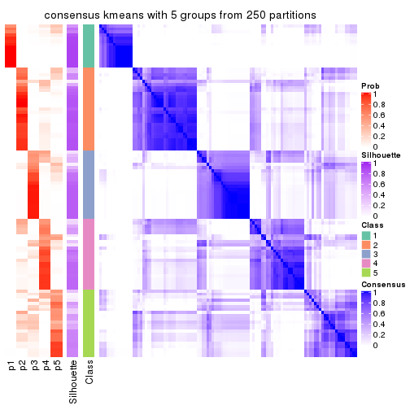
consensus_heatmap(res, k = 6)
Heatmaps for the membership of samples in all partitions to see how consistent they are:
membership_heatmap(res, k = 2)
membership_heatmap(res, k = 3)
membership_heatmap(res, k = 4)
membership_heatmap(res, k = 5)
membership_heatmap(res, k = 6)
As soon as we have had the classes for columns, we can look for signatures which are significantly different between classes which can be candidate marks for certain classes. Following are the heatmaps for signatures.
Signature heatmaps where rows are scaled:
get_signatures(res, k = 2)
get_signatures(res, k = 3)
get_signatures(res, k = 4)
get_signatures(res, k = 5)
get_signatures(res, k = 6)
Signature heatmaps where rows are not scaled:
get_signatures(res, k = 2, scale_rows = FALSE)
get_signatures(res, k = 3, scale_rows = FALSE)
get_signatures(res, k = 4, scale_rows = FALSE)
get_signatures(res, k = 5, scale_rows = FALSE)
get_signatures(res, k = 6, scale_rows = FALSE)
Compare the overlap of signatures from different k:
compare_signatures(res)

get_signature() returns a data frame invisibly. TO get the list of signatures, the function
call should be assigned to a variable explicitly. In following code, if plot argument is set
to FALSE, no heatmap is plotted while only the differential analysis is performed.
# code only for demonstration
tb = get_signature(res, k = ..., plot = FALSE)
An example of the output of tb is:
#> which_row fdr mean_1 mean_2 scaled_mean_1 scaled_mean_2 km
#> 1 38 0.042760348 8.373488 9.131774 -0.5533452 0.5164555 1
#> 2 40 0.018707592 7.106213 8.469186 -0.6173731 0.5762149 1
#> 3 55 0.019134737 10.221463 11.207825 -0.6159697 0.5749050 1
#> 4 59 0.006059896 5.921854 7.869574 -0.6899429 0.6439467 1
#> 5 60 0.018055526 8.928898 10.211722 -0.6204761 0.5791110 1
#> 6 98 0.009384629 15.714769 14.887706 0.6635654 -0.6193277 2
...
The columns in tb are:
which_row: row indices corresponding to the input matrix.fdr: FDR for the differential test. mean_x: The mean value in group x.scaled_mean_x: The mean value in group x after rows are scaled.km: Row groups if k-means clustering is applied to rows.UMAP plot which shows how samples are separated.
dimension_reduction(res, k = 2, method = "UMAP")
dimension_reduction(res, k = 3, method = "UMAP")
dimension_reduction(res, k = 4, method = "UMAP")
dimension_reduction(res, k = 5, method = "UMAP")
dimension_reduction(res, k = 6, method = "UMAP")
Following heatmap shows how subgroups are split when increasing k:
collect_classes(res)
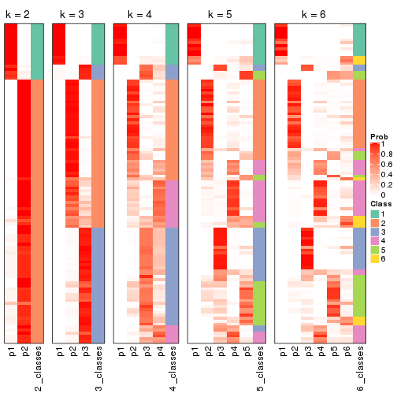
If matrix rows can be associated to genes, consider to use GO_Enrichment(res,
...) to perform function enrichment for the signature genes.
The object with results only for a single top-value method and a single partition method can be extracted as:
res = res_list["SD", "skmeans"]
# you can also extract it by
# res = res_list["SD:skmeans"]
A summary of res and all the functions that can be applied to it:
res
#> A 'ConsensusPartition' object with k = 2, 3, 4, 5, 6.
#> On a matrix with 17532 rows and 108 columns.
#> Top rows (1000, 2000, 3000, 4000, 5000) are extracted by 'SD' method.
#> Subgroups are detected by 'skmeans' method.
#> Performed in total 1250 partitions by row resampling.
#> Best k for subgroups seems to be 5.
#>
#> Following methods can be applied to this 'ConsensusPartition' object:
#> [1] "cola_report" "collect_classes" "collect_plots"
#> [4] "collect_stats" "colnames" "compare_signatures"
#> [7] "consensus_heatmap" "dimension_reduction" "functional_enrichment"
#> [10] "get_anno_col" "get_anno" "get_classes"
#> [13] "get_consensus" "get_matrix" "get_membership"
#> [16] "get_param" "get_signatures" "get_stats"
#> [19] "is_best_k" "is_stable_k" "membership_heatmap"
#> [22] "ncol" "nrow" "plot_ecdf"
#> [25] "rownames" "select_partition_number" "show"
#> [28] "suggest_best_k" "test_to_known_factors"
collect_plots() function collects all the plots made from res for all k (number of partitions)
into one single page to provide an easy and fast comparison between different k.
collect_plots(res)
The plots are:
k and the heatmap of
predicted classes for each k.k.k.k.All the plots in panels can be made by individual functions and they are plotted later in this section.
select_partition_number() produces several plots showing different
statistics for choosing “optimized” k. There are following statistics:
k;k, the area increased is defined as \(A_k - A_{k-1}\).The detailed explanations of these statistics can be found in the cola vignette.
Generally speaking, lower PAC score, higher mean silhouette score or higher
concordance corresponds to better partition. Rand index and Jaccard index
measure how similar the current partition is compared to partition with k-1.
If they are too similar, we won't accept k is better than k-1.
select_partition_number(res)
The numeric values for all these statistics can be obtained by get_stats().
get_stats(res)
#> k 1-PAC mean_silhouette concordance area_increased Rand Jaccard
#> 2 2 0.622 0.735 0.900 0.4933 0.500 0.500
#> 3 3 0.731 0.802 0.879 0.3474 0.742 0.529
#> 4 4 0.785 0.759 0.891 0.1305 0.828 0.545
#> 5 5 0.875 0.800 0.914 0.0653 0.892 0.611
#> 6 6 0.805 0.728 0.850 0.0360 0.948 0.752
suggest_best_k() suggests the best \(k\) based on these statistics. The rules are as follows:
NA.suggest_best_k(res)
#> [1] 5
Following shows the table of the partitions (You need to click the show/hide
code output link to see it). The membership matrix (columns with name p*)
is inferred by
clue::cl_consensus()
function with the SE method. Basically the value in the membership matrix
represents the probability to belong to a certain group. The finall class
label for an item is determined with the group with highest probability it
belongs to.
In get_classes() function, the entropy is calculated from the membership
matrix and the silhouette score is calculated from the consensus matrix.
cbind(get_classes(res, k = 2), get_membership(res, k = 2))
#> class entropy silhouette p1 p2
#> SRR1389909 2 0.3733 0.8368 0.072 0.928
#> SRR1454460 2 0.0000 0.9002 0.000 1.000
#> SRR1404623 2 0.0000 0.9002 0.000 1.000
#> SRR1092038 2 0.1633 0.8824 0.024 0.976
#> SRR1319793 2 0.0000 0.9002 0.000 1.000
#> SRR1396208 2 0.0000 0.9002 0.000 1.000
#> SRR1435797 1 0.9954 0.2035 0.540 0.460
#> SRR1078042 2 0.9710 0.2548 0.400 0.600
#> SRR1339699 2 0.9710 0.2548 0.400 0.600
#> SRR1446499 2 0.0000 0.9002 0.000 1.000
#> SRR1359428 2 0.0000 0.9002 0.000 1.000
#> SRR1071475 1 0.0000 0.8429 1.000 0.000
#> SRR1436781 2 0.0000 0.9002 0.000 1.000
#> SRR1101453 2 0.9710 0.2548 0.400 0.600
#> SRR1350891 2 0.0000 0.9002 0.000 1.000
#> SRR814293 1 0.9710 0.3026 0.600 0.400
#> SRR1471456 2 0.0376 0.8975 0.004 0.996
#> SRR1446874 1 0.0000 0.8429 1.000 0.000
#> SRR1362731 2 0.0000 0.9002 0.000 1.000
#> SRR1413705 2 0.0000 0.9002 0.000 1.000
#> SRR1434586 2 0.5519 0.7737 0.128 0.872
#> SRR1091164 2 0.0000 0.9002 0.000 1.000
#> SRR1340598 2 0.3274 0.8510 0.060 0.940
#> SRR1466469 1 0.0000 0.8429 1.000 0.000
#> SRR1099310 2 0.5629 0.7663 0.132 0.868
#> SRR814892 2 0.0000 0.9002 0.000 1.000
#> SRR1090698 2 0.0000 0.9002 0.000 1.000
#> SRR1089134 1 0.0000 0.8429 1.000 0.000
#> SRR1120276 1 0.0000 0.8429 1.000 0.000
#> SRR1430507 1 0.0000 0.8429 1.000 0.000
#> SRR1356078 1 0.9661 0.3712 0.608 0.392
#> SRR1447037 1 0.2423 0.8195 0.960 0.040
#> SRR1443544 1 0.0000 0.8429 1.000 0.000
#> SRR1081987 2 0.0000 0.9002 0.000 1.000
#> SRR1316513 2 0.0000 0.9002 0.000 1.000
#> SRR1478457 1 0.9993 0.1271 0.516 0.484
#> SRR1342849 1 0.5842 0.7409 0.860 0.140
#> SRR1073878 2 0.0000 0.9002 0.000 1.000
#> SRR1078735 1 0.0000 0.8429 1.000 0.000
#> SRR1093601 2 0.0000 0.9002 0.000 1.000
#> SRR816629 1 0.9552 0.4026 0.624 0.376
#> SRR1477754 2 0.0000 0.9002 0.000 1.000
#> SRR1454589 1 0.0000 0.8429 1.000 0.000
#> SRR1102780 1 0.7674 0.6272 0.776 0.224
#> SRR1347518 2 0.0000 0.9002 0.000 1.000
#> SRR1093747 1 0.0000 0.8429 1.000 0.000
#> SRR809209 1 0.8386 0.5794 0.732 0.268
#> SRR1082471 1 0.9795 0.3187 0.584 0.416
#> SRR1390349 2 0.9710 0.2548 0.400 0.600
#> SRR1410493 1 0.9686 0.3633 0.604 0.396
#> SRR1086656 2 0.0000 0.9002 0.000 1.000
#> SRR1469997 2 0.0000 0.9002 0.000 1.000
#> SRR1355512 2 0.0000 0.9002 0.000 1.000
#> SRR809897 2 0.9710 0.2548 0.400 0.600
#> SRR1436146 2 0.0000 0.9002 0.000 1.000
#> SRR1097148 1 0.0000 0.8429 1.000 0.000
#> SRR1429979 1 1.0000 0.0899 0.504 0.496
#> SRR1454607 1 0.0000 0.8429 1.000 0.000
#> SRR1420687 1 0.0000 0.8429 1.000 0.000
#> SRR1099669 1 0.0000 0.8429 1.000 0.000
#> SRR1360172 2 0.9710 0.2548 0.400 0.600
#> SRR1478131 2 0.3879 0.8327 0.076 0.924
#> SRR1453235 1 0.0000 0.8429 1.000 0.000
#> SRR1369107 1 0.0376 0.8408 0.996 0.004
#> SRR1096458 2 0.9491 0.3271 0.368 0.632
#> SRR1088856 2 0.9710 0.2548 0.400 0.600
#> SRR1432934 2 0.0000 0.9002 0.000 1.000
#> SRR821072 2 0.9427 0.3465 0.360 0.640
#> SRR1480896 1 0.0000 0.8429 1.000 0.000
#> SRR1403344 2 0.3114 0.8548 0.056 0.944
#> SRR1360850 1 0.0000 0.8429 1.000 0.000
#> SRR1451820 2 0.0000 0.9002 0.000 1.000
#> SRR1075360 1 0.4022 0.7897 0.920 0.080
#> SRR1413373 1 0.0000 0.8429 1.000 0.000
#> SRR1090928 2 0.0000 0.9002 0.000 1.000
#> SRR1097124 2 0.0000 0.9002 0.000 1.000
#> SRR1458745 1 0.0000 0.8429 1.000 0.000
#> SRR1078636 2 0.0000 0.9002 0.000 1.000
#> SRR1473754 1 0.9988 0.0944 0.520 0.480
#> SRR1085736 2 0.0000 0.9002 0.000 1.000
#> SRR1098807 1 0.0000 0.8429 1.000 0.000
#> SRR1341583 2 0.0000 0.9002 0.000 1.000
#> SRR1380869 2 0.3733 0.8368 0.072 0.928
#> SRR1430775 1 0.1843 0.8253 0.972 0.028
#> SRR1479573 1 0.9998 0.1041 0.508 0.492
#> SRR1082352 1 0.0000 0.8429 1.000 0.000
#> SRR1102005 1 0.9998 0.1041 0.508 0.492
#> SRR1408415 1 0.0000 0.8429 1.000 0.000
#> SRR1353537 1 0.0000 0.8429 1.000 0.000
#> SRR1458870 2 0.0000 0.9002 0.000 1.000
#> SRR1315495 2 0.0000 0.9002 0.000 1.000
#> SRR1481169 1 0.7674 0.6272 0.776 0.224
#> SRR1470273 1 0.0000 0.8429 1.000 0.000
#> SRR1312446 2 0.0000 0.9002 0.000 1.000
#> SRR1101859 2 0.0000 0.9002 0.000 1.000
#> SRR1384210 1 0.0000 0.8429 1.000 0.000
#> SRR1336244 2 0.0000 0.9002 0.000 1.000
#> SRR1374432 2 0.0000 0.9002 0.000 1.000
#> SRR1430023 1 0.0000 0.8429 1.000 0.000
#> SRR1487527 1 0.0000 0.8429 1.000 0.000
#> SRR1073389 1 0.0000 0.8429 1.000 0.000
#> SRR1433171 2 0.0000 0.9002 0.000 1.000
#> SRR1085565 1 0.0000 0.8429 1.000 0.000
#> SRR1355017 2 0.0000 0.9002 0.000 1.000
#> SRR1351641 2 0.0000 0.9002 0.000 1.000
#> SRR1398230 2 0.0000 0.9002 0.000 1.000
#> SRR1086212 2 0.9491 0.3271 0.368 0.632
#> SRR1431514 1 0.9866 0.2276 0.568 0.432
cbind(get_classes(res, k = 3), get_membership(res, k = 3))
#> class entropy silhouette p1 p2 p3
#> SRR1389909 2 0.5397 0.723315 0.000 0.720 0.280
#> SRR1454460 3 0.0237 0.819277 0.000 0.004 0.996
#> SRR1404623 2 0.2356 0.830369 0.000 0.928 0.072
#> SRR1092038 3 0.0000 0.818937 0.000 0.000 1.000
#> SRR1319793 2 0.5363 0.727258 0.000 0.724 0.276
#> SRR1396208 3 0.2625 0.777904 0.000 0.084 0.916
#> SRR1435797 3 0.1163 0.808889 0.000 0.028 0.972
#> SRR1078042 3 0.0000 0.818937 0.000 0.000 1.000
#> SRR1339699 3 0.0237 0.819277 0.000 0.004 0.996
#> SRR1446499 2 0.2356 0.830369 0.000 0.928 0.072
#> SRR1359428 2 0.0000 0.848360 0.000 1.000 0.000
#> SRR1071475 1 0.0000 0.948595 1.000 0.000 0.000
#> SRR1436781 2 0.0237 0.848014 0.000 0.996 0.004
#> SRR1101453 3 0.0237 0.819277 0.000 0.004 0.996
#> SRR1350891 2 0.1163 0.847649 0.000 0.972 0.028
#> SRR814293 1 0.2959 0.844990 0.900 0.100 0.000
#> SRR1471456 3 0.0000 0.818937 0.000 0.000 1.000
#> SRR1446874 3 0.5882 0.497683 0.348 0.000 0.652
#> SRR1362731 2 0.2165 0.834704 0.000 0.936 0.064
#> SRR1413705 2 0.0000 0.848360 0.000 1.000 0.000
#> SRR1434586 3 0.5363 0.691411 0.000 0.276 0.724
#> SRR1091164 2 0.2261 0.832728 0.000 0.932 0.068
#> SRR1340598 3 0.2261 0.788728 0.000 0.068 0.932
#> SRR1466469 1 0.0000 0.948595 1.000 0.000 0.000
#> SRR1099310 2 0.5363 0.727258 0.000 0.724 0.276
#> SRR814892 2 0.5363 0.727258 0.000 0.724 0.276
#> SRR1090698 3 0.5327 0.694765 0.000 0.272 0.728
#> SRR1089134 1 0.0000 0.948595 1.000 0.000 0.000
#> SRR1120276 3 0.5733 0.536828 0.324 0.000 0.676
#> SRR1430507 1 0.0000 0.948595 1.000 0.000 0.000
#> SRR1356078 3 0.5588 0.690295 0.004 0.276 0.720
#> SRR1447037 3 0.2680 0.786979 0.008 0.068 0.924
#> SRR1443544 3 0.6307 0.148000 0.488 0.000 0.512
#> SRR1081987 2 0.5363 0.727258 0.000 0.724 0.276
#> SRR1316513 2 0.5363 0.727258 0.000 0.724 0.276
#> SRR1478457 3 0.1163 0.808889 0.000 0.028 0.972
#> SRR1342849 3 0.2384 0.794719 0.008 0.056 0.936
#> SRR1073878 2 0.1163 0.847649 0.000 0.972 0.028
#> SRR1078735 1 0.2878 0.851720 0.904 0.000 0.096
#> SRR1093601 2 0.4399 0.778420 0.000 0.812 0.188
#> SRR816629 3 0.5553 0.693902 0.004 0.272 0.724
#> SRR1477754 2 0.2356 0.830369 0.000 0.928 0.072
#> SRR1454589 1 0.0000 0.948595 1.000 0.000 0.000
#> SRR1102780 1 0.0000 0.948595 1.000 0.000 0.000
#> SRR1347518 2 0.5706 0.676988 0.000 0.680 0.320
#> SRR1093747 1 0.0000 0.948595 1.000 0.000 0.000
#> SRR809209 3 0.2651 0.790752 0.012 0.060 0.928
#> SRR1082471 3 0.5656 0.682651 0.004 0.284 0.712
#> SRR1390349 3 0.2356 0.785712 0.000 0.072 0.928
#> SRR1410493 3 0.5690 0.678278 0.004 0.288 0.708
#> SRR1086656 2 0.6026 0.661386 0.000 0.624 0.376
#> SRR1469997 2 0.5098 0.746305 0.000 0.752 0.248
#> SRR1355512 2 0.2356 0.830369 0.000 0.928 0.072
#> SRR809897 3 0.5216 0.702980 0.000 0.260 0.740
#> SRR1436146 2 0.1289 0.846610 0.000 0.968 0.032
#> SRR1097148 1 0.0000 0.948595 1.000 0.000 0.000
#> SRR1429979 3 0.0237 0.819277 0.000 0.004 0.996
#> SRR1454607 1 0.0000 0.948595 1.000 0.000 0.000
#> SRR1420687 1 0.0000 0.948595 1.000 0.000 0.000
#> SRR1099669 1 0.0000 0.948595 1.000 0.000 0.000
#> SRR1360172 3 0.0000 0.818937 0.000 0.000 1.000
#> SRR1478131 2 0.5178 0.741049 0.000 0.744 0.256
#> SRR1453235 1 0.0000 0.948595 1.000 0.000 0.000
#> SRR1369107 3 0.0237 0.818417 0.004 0.000 0.996
#> SRR1096458 2 0.5363 0.727258 0.000 0.724 0.276
#> SRR1088856 3 0.0000 0.818937 0.000 0.000 1.000
#> SRR1432934 2 0.0237 0.848014 0.000 0.996 0.004
#> SRR821072 2 0.5363 0.727258 0.000 0.724 0.276
#> SRR1480896 1 0.2878 0.851720 0.904 0.000 0.096
#> SRR1403344 3 0.1964 0.806578 0.000 0.056 0.944
#> SRR1360850 1 0.0000 0.948595 1.000 0.000 0.000
#> SRR1451820 2 0.0237 0.848014 0.000 0.996 0.004
#> SRR1075360 3 0.7160 0.715868 0.132 0.148 0.720
#> SRR1413373 1 0.0000 0.948595 1.000 0.000 0.000
#> SRR1090928 2 0.2261 0.832728 0.000 0.932 0.068
#> SRR1097124 2 0.2066 0.836555 0.000 0.940 0.060
#> SRR1458745 1 0.0000 0.948595 1.000 0.000 0.000
#> SRR1078636 2 0.0237 0.848762 0.000 0.996 0.004
#> SRR1473754 1 0.6168 0.270405 0.588 0.412 0.000
#> SRR1085736 2 0.2356 0.830369 0.000 0.928 0.072
#> SRR1098807 1 0.0000 0.948595 1.000 0.000 0.000
#> SRR1341583 2 0.1163 0.847649 0.000 0.972 0.028
#> SRR1380869 2 0.5363 0.727258 0.000 0.724 0.276
#> SRR1430775 1 0.0000 0.948595 1.000 0.000 0.000
#> SRR1479573 3 0.5363 0.691411 0.000 0.276 0.724
#> SRR1082352 1 0.0000 0.948595 1.000 0.000 0.000
#> SRR1102005 3 0.5363 0.691411 0.000 0.276 0.724
#> SRR1408415 1 0.0000 0.948595 1.000 0.000 0.000
#> SRR1353537 1 0.0000 0.948595 1.000 0.000 0.000
#> SRR1458870 2 0.1163 0.847649 0.000 0.972 0.028
#> SRR1315495 2 0.2356 0.830369 0.000 0.928 0.072
#> SRR1481169 1 0.0000 0.948595 1.000 0.000 0.000
#> SRR1470273 1 0.0000 0.948595 1.000 0.000 0.000
#> SRR1312446 2 0.1163 0.847649 0.000 0.972 0.028
#> SRR1101859 2 0.0000 0.848360 0.000 1.000 0.000
#> SRR1384210 1 0.0000 0.948595 1.000 0.000 0.000
#> SRR1336244 2 0.0237 0.848762 0.000 0.996 0.004
#> SRR1374432 2 0.4887 0.757834 0.000 0.772 0.228
#> SRR1430023 1 0.2356 0.878576 0.928 0.000 0.072
#> SRR1487527 1 0.0000 0.948595 1.000 0.000 0.000
#> SRR1073389 1 0.0000 0.948595 1.000 0.000 0.000
#> SRR1433171 2 0.2537 0.825548 0.000 0.920 0.080
#> SRR1085565 3 0.5431 0.598258 0.284 0.000 0.716
#> SRR1355017 2 0.1163 0.847649 0.000 0.972 0.028
#> SRR1351641 2 0.0000 0.848360 0.000 1.000 0.000
#> SRR1398230 2 0.0237 0.848762 0.000 0.996 0.004
#> SRR1086212 2 0.5363 0.727258 0.000 0.724 0.276
#> SRR1431514 1 0.6308 0.000704 0.508 0.492 0.000
cbind(get_classes(res, k = 4), get_membership(res, k = 4))
#> class entropy silhouette p1 p2 p3 p4
#> SRR1389909 4 0.0188 0.903 0.000 0.000 0.004 0.996
#> SRR1454460 3 0.0000 0.817 0.000 0.000 1.000 0.000
#> SRR1404623 2 0.0000 0.826 0.000 1.000 0.000 0.000
#> SRR1092038 3 0.0000 0.817 0.000 0.000 1.000 0.000
#> SRR1319793 4 0.0000 0.905 0.000 0.000 0.000 1.000
#> SRR1396208 4 0.1867 0.863 0.000 0.000 0.072 0.928
#> SRR1435797 3 0.4730 0.413 0.000 0.000 0.636 0.364
#> SRR1078042 3 0.0000 0.817 0.000 0.000 1.000 0.000
#> SRR1339699 3 0.0000 0.817 0.000 0.000 1.000 0.000
#> SRR1446499 2 0.0000 0.826 0.000 1.000 0.000 0.000
#> SRR1359428 2 0.2530 0.837 0.000 0.888 0.000 0.112
#> SRR1071475 1 0.0000 0.944 1.000 0.000 0.000 0.000
#> SRR1436781 4 0.3726 0.641 0.000 0.212 0.000 0.788
#> SRR1101453 3 0.0000 0.817 0.000 0.000 1.000 0.000
#> SRR1350891 2 0.2281 0.843 0.000 0.904 0.000 0.096
#> SRR814293 1 0.5050 0.257 0.588 0.408 0.000 0.004
#> SRR1471456 3 0.0000 0.817 0.000 0.000 1.000 0.000
#> SRR1446874 3 0.0000 0.817 0.000 0.000 1.000 0.000
#> SRR1362731 2 0.0469 0.832 0.000 0.988 0.000 0.012
#> SRR1413705 2 0.2589 0.834 0.000 0.884 0.000 0.116
#> SRR1434586 3 0.4998 0.310 0.000 0.488 0.512 0.000
#> SRR1091164 2 0.0921 0.836 0.000 0.972 0.000 0.028
#> SRR1340598 4 0.2868 0.805 0.000 0.000 0.136 0.864
#> SRR1466469 1 0.0000 0.944 1.000 0.000 0.000 0.000
#> SRR1099310 4 0.0000 0.905 0.000 0.000 0.000 1.000
#> SRR814892 4 0.0000 0.905 0.000 0.000 0.000 1.000
#> SRR1090698 3 0.4996 0.316 0.000 0.484 0.516 0.000
#> SRR1089134 1 0.0000 0.944 1.000 0.000 0.000 0.000
#> SRR1120276 3 0.0000 0.817 0.000 0.000 1.000 0.000
#> SRR1430507 1 0.2469 0.861 0.892 0.108 0.000 0.000
#> SRR1356078 3 0.4994 0.329 0.000 0.480 0.520 0.000
#> SRR1447037 4 0.2081 0.853 0.000 0.000 0.084 0.916
#> SRR1443544 1 0.4790 0.464 0.620 0.000 0.380 0.000
#> SRR1081987 4 0.0000 0.905 0.000 0.000 0.000 1.000
#> SRR1316513 4 0.0000 0.905 0.000 0.000 0.000 1.000
#> SRR1478457 3 0.4730 0.413 0.000 0.000 0.636 0.364
#> SRR1342849 3 0.4981 0.150 0.000 0.000 0.536 0.464
#> SRR1073878 2 0.2149 0.843 0.000 0.912 0.000 0.088
#> SRR1078735 1 0.4134 0.675 0.740 0.000 0.260 0.000
#> SRR1093601 4 0.0817 0.890 0.000 0.024 0.000 0.976
#> SRR816629 3 0.2469 0.773 0.000 0.108 0.892 0.000
#> SRR1477754 2 0.0000 0.826 0.000 1.000 0.000 0.000
#> SRR1454589 1 0.0000 0.944 1.000 0.000 0.000 0.000
#> SRR1102780 1 0.1716 0.892 0.936 0.000 0.000 0.064
#> SRR1347518 4 0.1389 0.881 0.000 0.000 0.048 0.952
#> SRR1093747 1 0.0000 0.944 1.000 0.000 0.000 0.000
#> SRR809209 4 0.2921 0.805 0.000 0.000 0.140 0.860
#> SRR1082471 2 0.5678 -0.226 0.024 0.524 0.452 0.000
#> SRR1390349 4 0.2081 0.853 0.000 0.000 0.084 0.916
#> SRR1410493 2 0.5678 -0.226 0.024 0.524 0.452 0.000
#> SRR1086656 2 0.6836 0.456 0.000 0.580 0.140 0.280
#> SRR1469997 2 0.4998 0.184 0.000 0.512 0.000 0.488
#> SRR1355512 2 0.0000 0.826 0.000 1.000 0.000 0.000
#> SRR809897 3 0.4989 0.347 0.000 0.472 0.528 0.000
#> SRR1436146 2 0.0469 0.832 0.000 0.988 0.000 0.012
#> SRR1097148 1 0.0000 0.944 1.000 0.000 0.000 0.000
#> SRR1429979 3 0.0000 0.817 0.000 0.000 1.000 0.000
#> SRR1454607 1 0.0000 0.944 1.000 0.000 0.000 0.000
#> SRR1420687 1 0.0000 0.944 1.000 0.000 0.000 0.000
#> SRR1099669 1 0.0000 0.944 1.000 0.000 0.000 0.000
#> SRR1360172 3 0.0000 0.817 0.000 0.000 1.000 0.000
#> SRR1478131 4 0.0000 0.905 0.000 0.000 0.000 1.000
#> SRR1453235 1 0.0000 0.944 1.000 0.000 0.000 0.000
#> SRR1369107 3 0.0000 0.817 0.000 0.000 1.000 0.000
#> SRR1096458 4 0.0000 0.905 0.000 0.000 0.000 1.000
#> SRR1088856 3 0.0000 0.817 0.000 0.000 1.000 0.000
#> SRR1432934 2 0.3649 0.751 0.000 0.796 0.000 0.204
#> SRR821072 4 0.0000 0.905 0.000 0.000 0.000 1.000
#> SRR1480896 1 0.0188 0.942 0.996 0.000 0.004 0.000
#> SRR1403344 3 0.0707 0.812 0.000 0.020 0.980 0.000
#> SRR1360850 1 0.0000 0.944 1.000 0.000 0.000 0.000
#> SRR1451820 2 0.4564 0.568 0.000 0.672 0.000 0.328
#> SRR1075360 3 0.3074 0.750 0.000 0.152 0.848 0.000
#> SRR1413373 1 0.0000 0.944 1.000 0.000 0.000 0.000
#> SRR1090928 2 0.0469 0.832 0.000 0.988 0.000 0.012
#> SRR1097124 2 0.0000 0.826 0.000 1.000 0.000 0.000
#> SRR1458745 1 0.0000 0.944 1.000 0.000 0.000 0.000
#> SRR1078636 2 0.2281 0.843 0.000 0.904 0.000 0.096
#> SRR1473754 4 0.4855 0.289 0.400 0.000 0.000 0.600
#> SRR1085736 2 0.0000 0.826 0.000 1.000 0.000 0.000
#> SRR1098807 1 0.0000 0.944 1.000 0.000 0.000 0.000
#> SRR1341583 2 0.2281 0.843 0.000 0.904 0.000 0.096
#> SRR1380869 4 0.0000 0.905 0.000 0.000 0.000 1.000
#> SRR1430775 1 0.0000 0.944 1.000 0.000 0.000 0.000
#> SRR1479573 3 0.3837 0.693 0.000 0.224 0.776 0.000
#> SRR1082352 1 0.0000 0.944 1.000 0.000 0.000 0.000
#> SRR1102005 3 0.4989 0.347 0.000 0.472 0.528 0.000
#> SRR1408415 1 0.0000 0.944 1.000 0.000 0.000 0.000
#> SRR1353537 1 0.0000 0.944 1.000 0.000 0.000 0.000
#> SRR1458870 2 0.2281 0.843 0.000 0.904 0.000 0.096
#> SRR1315495 2 0.0336 0.830 0.000 0.992 0.000 0.008
#> SRR1481169 1 0.0707 0.930 0.980 0.000 0.000 0.020
#> SRR1470273 1 0.0000 0.944 1.000 0.000 0.000 0.000
#> SRR1312446 2 0.2011 0.843 0.000 0.920 0.000 0.080
#> SRR1101859 4 0.4907 0.122 0.000 0.420 0.000 0.580
#> SRR1384210 1 0.3024 0.816 0.852 0.000 0.148 0.000
#> SRR1336244 2 0.2281 0.843 0.000 0.904 0.000 0.096
#> SRR1374432 4 0.0469 0.898 0.000 0.012 0.000 0.988
#> SRR1430023 3 0.2530 0.760 0.100 0.004 0.896 0.000
#> SRR1487527 1 0.0000 0.944 1.000 0.000 0.000 0.000
#> SRR1073389 1 0.2281 0.870 0.904 0.096 0.000 0.000
#> SRR1433171 2 0.5343 0.613 0.000 0.708 0.240 0.052
#> SRR1085565 3 0.0000 0.817 0.000 0.000 1.000 0.000
#> SRR1355017 2 0.2281 0.843 0.000 0.904 0.000 0.096
#> SRR1351641 2 0.2530 0.837 0.000 0.888 0.000 0.112
#> SRR1398230 2 0.2469 0.838 0.000 0.892 0.000 0.108
#> SRR1086212 4 0.0000 0.905 0.000 0.000 0.000 1.000
#> SRR1431514 2 0.6477 0.206 0.420 0.508 0.000 0.072
cbind(get_classes(res, k = 5), get_membership(res, k = 5))
#> class entropy silhouette p1 p2 p3 p4 p5
#> SRR1389909 4 0.0000 0.7749 0.000 0.000 0.000 1.000 0.000
#> SRR1454460 3 0.0000 0.9467 0.000 0.000 1.000 0.000 0.000
#> SRR1404623 2 0.3661 0.5907 0.000 0.724 0.000 0.000 0.276
#> SRR1092038 3 0.0000 0.9467 0.000 0.000 1.000 0.000 0.000
#> SRR1319793 4 0.4101 0.4388 0.000 0.372 0.000 0.628 0.000
#> SRR1396208 4 0.1124 0.7609 0.000 0.000 0.036 0.960 0.004
#> SRR1435797 4 0.6744 0.1099 0.000 0.000 0.324 0.404 0.272
#> SRR1078042 3 0.0000 0.9467 0.000 0.000 1.000 0.000 0.000
#> SRR1339699 3 0.0000 0.9467 0.000 0.000 1.000 0.000 0.000
#> SRR1446499 5 0.1544 0.9095 0.000 0.068 0.000 0.000 0.932
#> SRR1359428 2 0.0162 0.9128 0.000 0.996 0.000 0.004 0.000
#> SRR1071475 1 0.0000 0.9459 1.000 0.000 0.000 0.000 0.000
#> SRR1436781 4 0.4450 0.1720 0.000 0.488 0.000 0.508 0.004
#> SRR1101453 3 0.0000 0.9467 0.000 0.000 1.000 0.000 0.000
#> SRR1350891 2 0.0162 0.9128 0.000 0.996 0.000 0.004 0.000
#> SRR814293 2 0.4307 0.0297 0.500 0.500 0.000 0.000 0.000
#> SRR1471456 3 0.0000 0.9467 0.000 0.000 1.000 0.000 0.000
#> SRR1446874 3 0.0162 0.9434 0.004 0.000 0.996 0.000 0.000
#> SRR1362731 2 0.0162 0.9120 0.000 0.996 0.000 0.000 0.004
#> SRR1413705 2 0.0162 0.9128 0.000 0.996 0.000 0.004 0.000
#> SRR1434586 5 0.0609 0.9557 0.000 0.000 0.020 0.000 0.980
#> SRR1091164 2 0.0162 0.9120 0.000 0.996 0.000 0.000 0.004
#> SRR1340598 4 0.3913 0.4556 0.000 0.000 0.324 0.676 0.000
#> SRR1466469 1 0.0000 0.9459 1.000 0.000 0.000 0.000 0.000
#> SRR1099310 4 0.0162 0.7751 0.000 0.000 0.000 0.996 0.004
#> SRR814892 4 0.0290 0.7738 0.000 0.008 0.000 0.992 0.000
#> SRR1090698 5 0.0609 0.9557 0.000 0.000 0.020 0.000 0.980
#> SRR1089134 1 0.0000 0.9459 1.000 0.000 0.000 0.000 0.000
#> SRR1120276 3 0.0000 0.9467 0.000 0.000 1.000 0.000 0.000
#> SRR1430507 5 0.0162 0.9577 0.004 0.000 0.000 0.000 0.996
#> SRR1356078 5 0.0162 0.9583 0.000 0.000 0.004 0.000 0.996
#> SRR1447037 4 0.0162 0.7736 0.000 0.000 0.004 0.996 0.000
#> SRR1443544 3 0.3480 0.6437 0.248 0.000 0.752 0.000 0.000
#> SRR1081987 4 0.0000 0.7749 0.000 0.000 0.000 1.000 0.000
#> SRR1316513 4 0.0000 0.7749 0.000 0.000 0.000 1.000 0.000
#> SRR1478457 4 0.6438 0.2692 0.000 0.000 0.292 0.496 0.212
#> SRR1342849 4 0.4300 0.0963 0.000 0.000 0.476 0.524 0.000
#> SRR1073878 2 0.0162 0.9128 0.000 0.996 0.000 0.004 0.000
#> SRR1078735 1 0.4278 0.1629 0.548 0.000 0.452 0.000 0.000
#> SRR1093601 4 0.4437 0.2380 0.000 0.464 0.000 0.532 0.004
#> SRR816629 5 0.3816 0.5743 0.000 0.000 0.304 0.000 0.696
#> SRR1477754 5 0.1851 0.8882 0.000 0.088 0.000 0.000 0.912
#> SRR1454589 1 0.0162 0.9439 0.996 0.000 0.004 0.000 0.000
#> SRR1102780 1 0.2921 0.7909 0.844 0.004 0.000 0.148 0.004
#> SRR1347518 4 0.1732 0.7397 0.000 0.000 0.080 0.920 0.000
#> SRR1093747 1 0.0609 0.9377 0.980 0.000 0.000 0.000 0.020
#> SRR809209 4 0.3438 0.6693 0.000 0.000 0.172 0.808 0.020
#> SRR1082471 5 0.0162 0.9577 0.004 0.000 0.000 0.000 0.996
#> SRR1390349 4 0.2376 0.7388 0.000 0.000 0.052 0.904 0.044
#> SRR1410493 5 0.0162 0.9577 0.004 0.000 0.000 0.000 0.996
#> SRR1086656 2 0.5032 0.5978 0.000 0.704 0.168 0.128 0.000
#> SRR1469997 2 0.1965 0.8264 0.000 0.904 0.000 0.096 0.000
#> SRR1355512 5 0.0703 0.9483 0.000 0.024 0.000 0.000 0.976
#> SRR809897 5 0.0609 0.9557 0.000 0.000 0.020 0.000 0.980
#> SRR1436146 2 0.0000 0.9121 0.000 1.000 0.000 0.000 0.000
#> SRR1097148 1 0.0000 0.9459 1.000 0.000 0.000 0.000 0.000
#> SRR1429979 3 0.0000 0.9467 0.000 0.000 1.000 0.000 0.000
#> SRR1454607 1 0.0000 0.9459 1.000 0.000 0.000 0.000 0.000
#> SRR1420687 1 0.0404 0.9412 0.988 0.000 0.000 0.000 0.012
#> SRR1099669 1 0.0609 0.9377 0.980 0.000 0.000 0.000 0.020
#> SRR1360172 3 0.0000 0.9467 0.000 0.000 1.000 0.000 0.000
#> SRR1478131 4 0.0162 0.7751 0.000 0.000 0.000 0.996 0.004
#> SRR1453235 1 0.0609 0.9377 0.980 0.000 0.000 0.000 0.020
#> SRR1369107 3 0.0000 0.9467 0.000 0.000 1.000 0.000 0.000
#> SRR1096458 4 0.0162 0.7751 0.000 0.000 0.000 0.996 0.004
#> SRR1088856 3 0.0000 0.9467 0.000 0.000 1.000 0.000 0.000
#> SRR1432934 2 0.0162 0.9128 0.000 0.996 0.000 0.004 0.000
#> SRR821072 4 0.0162 0.7751 0.000 0.000 0.000 0.996 0.004
#> SRR1480896 1 0.0609 0.9377 0.980 0.000 0.000 0.000 0.020
#> SRR1403344 3 0.3983 0.4536 0.000 0.000 0.660 0.000 0.340
#> SRR1360850 1 0.0000 0.9459 1.000 0.000 0.000 0.000 0.000
#> SRR1451820 2 0.0290 0.9102 0.000 0.992 0.000 0.008 0.000
#> SRR1075360 5 0.0162 0.9583 0.000 0.000 0.004 0.000 0.996
#> SRR1413373 1 0.0000 0.9459 1.000 0.000 0.000 0.000 0.000
#> SRR1090928 2 0.0162 0.9120 0.000 0.996 0.000 0.000 0.004
#> SRR1097124 2 0.2471 0.7930 0.000 0.864 0.000 0.000 0.136
#> SRR1458745 1 0.0000 0.9459 1.000 0.000 0.000 0.000 0.000
#> SRR1078636 2 0.0162 0.9128 0.000 0.996 0.000 0.004 0.000
#> SRR1473754 4 0.4383 0.1896 0.424 0.000 0.000 0.572 0.004
#> SRR1085736 5 0.0290 0.9568 0.000 0.008 0.000 0.000 0.992
#> SRR1098807 1 0.0000 0.9459 1.000 0.000 0.000 0.000 0.000
#> SRR1341583 2 0.0000 0.9121 0.000 1.000 0.000 0.000 0.000
#> SRR1380869 4 0.0162 0.7751 0.000 0.000 0.000 0.996 0.004
#> SRR1430775 1 0.0162 0.9441 0.996 0.004 0.000 0.000 0.000
#> SRR1479573 5 0.0510 0.9571 0.000 0.000 0.016 0.000 0.984
#> SRR1082352 1 0.0000 0.9459 1.000 0.000 0.000 0.000 0.000
#> SRR1102005 5 0.0510 0.9571 0.000 0.000 0.016 0.000 0.984
#> SRR1408415 1 0.0000 0.9459 1.000 0.000 0.000 0.000 0.000
#> SRR1353537 1 0.0000 0.9459 1.000 0.000 0.000 0.000 0.000
#> SRR1458870 2 0.0162 0.9128 0.000 0.996 0.000 0.004 0.000
#> SRR1315495 2 0.0162 0.9120 0.000 0.996 0.000 0.000 0.004
#> SRR1481169 1 0.1991 0.8756 0.916 0.004 0.000 0.076 0.004
#> SRR1470273 1 0.0000 0.9459 1.000 0.000 0.000 0.000 0.000
#> SRR1312446 2 0.0000 0.9121 0.000 1.000 0.000 0.000 0.000
#> SRR1101859 4 0.5271 0.2767 0.000 0.432 0.000 0.520 0.048
#> SRR1384210 1 0.4262 0.2028 0.560 0.000 0.440 0.000 0.000
#> SRR1336244 2 0.0162 0.9128 0.000 0.996 0.000 0.004 0.000
#> SRR1374432 4 0.4074 0.4495 0.000 0.364 0.000 0.636 0.000
#> SRR1430023 3 0.1952 0.8644 0.084 0.004 0.912 0.000 0.000
#> SRR1487527 1 0.0000 0.9459 1.000 0.000 0.000 0.000 0.000
#> SRR1073389 5 0.0162 0.9577 0.004 0.000 0.000 0.000 0.996
#> SRR1433171 2 0.0963 0.8874 0.000 0.964 0.036 0.000 0.000
#> SRR1085565 3 0.0000 0.9467 0.000 0.000 1.000 0.000 0.000
#> SRR1355017 2 0.0000 0.9121 0.000 1.000 0.000 0.000 0.000
#> SRR1351641 2 0.0162 0.9128 0.000 0.996 0.000 0.004 0.000
#> SRR1398230 2 0.0162 0.9128 0.000 0.996 0.000 0.004 0.000
#> SRR1086212 4 0.0162 0.7751 0.000 0.000 0.000 0.996 0.004
#> SRR1431514 2 0.5631 0.2449 0.400 0.540 0.000 0.040 0.020
cbind(get_classes(res, k = 6), get_membership(res, k = 6))
#> class entropy silhouette p1 p2 p3 p4 p5 p6
#> SRR1389909 4 0.3747 0.37226 0.000 0.000 0.000 0.604 0.000 0.396
#> SRR1454460 3 0.0291 0.89615 0.000 0.000 0.992 0.000 0.004 0.004
#> SRR1404623 2 0.2814 0.74579 0.000 0.820 0.000 0.008 0.172 0.000
#> SRR1092038 3 0.0000 0.89926 0.000 0.000 1.000 0.000 0.000 0.000
#> SRR1319793 6 0.5716 0.26741 0.000 0.304 0.000 0.192 0.000 0.504
#> SRR1396208 6 0.1434 0.69435 0.000 0.000 0.012 0.048 0.000 0.940
#> SRR1435797 6 0.3138 0.64164 0.000 0.000 0.060 0.004 0.096 0.840
#> SRR1078042 3 0.0000 0.89926 0.000 0.000 1.000 0.000 0.000 0.000
#> SRR1339699 3 0.1757 0.84784 0.000 0.000 0.916 0.000 0.008 0.076
#> SRR1446499 5 0.3048 0.79260 0.000 0.152 0.000 0.004 0.824 0.020
#> SRR1359428 2 0.0806 0.89343 0.000 0.972 0.000 0.020 0.000 0.008
#> SRR1071475 1 0.0000 0.90914 1.000 0.000 0.000 0.000 0.000 0.000
#> SRR1436781 4 0.4986 0.23646 0.000 0.444 0.000 0.488 0.000 0.068
#> SRR1101453 3 0.0000 0.89926 0.000 0.000 1.000 0.000 0.000 0.000
#> SRR1350891 2 0.0291 0.89971 0.000 0.992 0.000 0.004 0.000 0.004
#> SRR814293 2 0.6605 0.14637 0.300 0.396 0.000 0.276 0.000 0.028
#> SRR1471456 3 0.0000 0.89926 0.000 0.000 1.000 0.000 0.000 0.000
#> SRR1446874 3 0.3079 0.80843 0.004 0.000 0.844 0.056 0.000 0.096
#> SRR1362731 2 0.0405 0.89900 0.000 0.988 0.000 0.008 0.004 0.000
#> SRR1413705 2 0.0146 0.89944 0.000 0.996 0.000 0.004 0.000 0.000
#> SRR1434586 5 0.1909 0.89089 0.000 0.004 0.024 0.000 0.920 0.052
#> SRR1091164 2 0.0436 0.89992 0.000 0.988 0.000 0.004 0.004 0.004
#> SRR1340598 6 0.2858 0.68460 0.000 0.000 0.124 0.032 0.000 0.844
#> SRR1466469 1 0.0000 0.90914 1.000 0.000 0.000 0.000 0.000 0.000
#> SRR1099310 4 0.3531 0.48163 0.000 0.000 0.000 0.672 0.000 0.328
#> SRR814892 6 0.3606 0.48945 0.000 0.016 0.000 0.256 0.000 0.728
#> SRR1090698 5 0.2100 0.86685 0.000 0.004 0.000 0.000 0.884 0.112
#> SRR1089134 1 0.0000 0.90914 1.000 0.000 0.000 0.000 0.000 0.000
#> SRR1120276 3 0.0363 0.89462 0.000 0.000 0.988 0.012 0.000 0.000
#> SRR1430507 5 0.0713 0.89669 0.000 0.000 0.000 0.028 0.972 0.000
#> SRR1356078 5 0.0458 0.90109 0.000 0.000 0.000 0.016 0.984 0.000
#> SRR1447037 4 0.3854 0.23054 0.000 0.000 0.000 0.536 0.000 0.464
#> SRR1443544 3 0.4654 0.34027 0.368 0.000 0.592 0.016 0.000 0.024
#> SRR1081987 6 0.2793 0.58845 0.000 0.000 0.000 0.200 0.000 0.800
#> SRR1316513 6 0.2854 0.58633 0.000 0.000 0.000 0.208 0.000 0.792
#> SRR1478457 6 0.2798 0.68187 0.000 0.000 0.056 0.020 0.048 0.876
#> SRR1342849 6 0.2250 0.68019 0.000 0.000 0.092 0.020 0.000 0.888
#> SRR1073878 2 0.0146 0.89906 0.000 0.996 0.000 0.000 0.000 0.004
#> SRR1078735 1 0.4276 0.50370 0.664 0.000 0.304 0.016 0.000 0.016
#> SRR1093601 4 0.4846 0.34235 0.000 0.356 0.000 0.576 0.000 0.068
#> SRR816629 5 0.4057 0.23353 0.000 0.000 0.436 0.000 0.556 0.008
#> SRR1477754 5 0.1910 0.84978 0.000 0.108 0.000 0.000 0.892 0.000
#> SRR1454589 1 0.2905 0.83894 0.852 0.000 0.000 0.084 0.000 0.064
#> SRR1102780 4 0.4191 0.06089 0.388 0.000 0.000 0.596 0.004 0.012
#> SRR1347518 6 0.2361 0.68685 0.000 0.000 0.028 0.088 0.000 0.884
#> SRR1093747 1 0.2609 0.83930 0.868 0.000 0.000 0.036 0.096 0.000
#> SRR809209 6 0.3420 0.65946 0.004 0.000 0.108 0.060 0.004 0.824
#> SRR1082471 5 0.0458 0.90109 0.000 0.000 0.000 0.016 0.984 0.000
#> SRR1390349 6 0.1861 0.69579 0.000 0.000 0.016 0.036 0.020 0.928
#> SRR1410493 5 0.0458 0.90109 0.000 0.000 0.000 0.016 0.984 0.000
#> SRR1086656 6 0.6070 0.42708 0.000 0.220 0.100 0.088 0.000 0.592
#> SRR1469997 2 0.2826 0.80480 0.000 0.856 0.000 0.052 0.000 0.092
#> SRR1355512 5 0.2094 0.86581 0.000 0.080 0.000 0.000 0.900 0.020
#> SRR809897 5 0.2020 0.87576 0.000 0.000 0.008 0.000 0.896 0.096
#> SRR1436146 2 0.0146 0.89982 0.000 0.996 0.000 0.004 0.000 0.000
#> SRR1097148 1 0.0000 0.90914 1.000 0.000 0.000 0.000 0.000 0.000
#> SRR1429979 3 0.0000 0.89926 0.000 0.000 1.000 0.000 0.000 0.000
#> SRR1454607 1 0.0000 0.90914 1.000 0.000 0.000 0.000 0.000 0.000
#> SRR1420687 1 0.1151 0.89439 0.956 0.000 0.000 0.032 0.012 0.000
#> SRR1099669 1 0.3611 0.79384 0.796 0.000 0.000 0.108 0.096 0.000
#> SRR1360172 3 0.0000 0.89926 0.000 0.000 1.000 0.000 0.000 0.000
#> SRR1478131 4 0.3778 0.48637 0.000 0.016 0.000 0.696 0.000 0.288
#> SRR1453235 1 0.4682 0.74308 0.728 0.000 0.000 0.148 0.096 0.028
#> SRR1369107 3 0.0000 0.89926 0.000 0.000 1.000 0.000 0.000 0.000
#> SRR1096458 4 0.3531 0.48163 0.000 0.000 0.000 0.672 0.000 0.328
#> SRR1088856 3 0.0000 0.89926 0.000 0.000 1.000 0.000 0.000 0.000
#> SRR1432934 2 0.0622 0.89601 0.000 0.980 0.000 0.012 0.000 0.008
#> SRR821072 4 0.3531 0.48163 0.000 0.000 0.000 0.672 0.000 0.328
#> SRR1480896 1 0.3034 0.84625 0.864 0.000 0.000 0.036 0.060 0.040
#> SRR1403344 3 0.5515 0.37975 0.000 0.000 0.556 0.000 0.260 0.184
#> SRR1360850 1 0.0000 0.90914 1.000 0.000 0.000 0.000 0.000 0.000
#> SRR1451820 2 0.2230 0.81782 0.000 0.892 0.000 0.084 0.000 0.024
#> SRR1075360 5 0.0458 0.90109 0.000 0.000 0.000 0.016 0.984 0.000
#> SRR1413373 1 0.0260 0.90649 0.992 0.000 0.000 0.008 0.000 0.000
#> SRR1090928 2 0.0551 0.89946 0.000 0.984 0.000 0.008 0.004 0.004
#> SRR1097124 2 0.5072 0.62444 0.000 0.652 0.000 0.256 0.056 0.036
#> SRR1458745 1 0.0146 0.90792 0.996 0.000 0.000 0.004 0.000 0.000
#> SRR1078636 2 0.0547 0.89491 0.000 0.980 0.000 0.000 0.000 0.020
#> SRR1473754 4 0.4371 0.43400 0.168 0.004 0.000 0.728 0.000 0.100
#> SRR1085736 5 0.0622 0.90075 0.000 0.008 0.000 0.012 0.980 0.000
#> SRR1098807 1 0.0000 0.90914 1.000 0.000 0.000 0.000 0.000 0.000
#> SRR1341583 2 0.3933 0.68830 0.000 0.716 0.000 0.248 0.000 0.036
#> SRR1380869 4 0.3592 0.46568 0.000 0.000 0.000 0.656 0.000 0.344
#> SRR1430775 1 0.4362 0.64143 0.688 0.012 0.000 0.264 0.000 0.036
#> SRR1479573 5 0.1807 0.88968 0.000 0.000 0.020 0.000 0.920 0.060
#> SRR1082352 1 0.0000 0.90914 1.000 0.000 0.000 0.000 0.000 0.000
#> SRR1102005 5 0.1745 0.88886 0.000 0.000 0.012 0.000 0.920 0.068
#> SRR1408415 1 0.1610 0.86665 0.916 0.000 0.000 0.084 0.000 0.000
#> SRR1353537 1 0.0000 0.90914 1.000 0.000 0.000 0.000 0.000 0.000
#> SRR1458870 2 0.0547 0.89491 0.000 0.980 0.000 0.000 0.000 0.020
#> SRR1315495 2 0.0665 0.89865 0.000 0.980 0.000 0.008 0.008 0.004
#> SRR1481169 4 0.3789 -0.00453 0.416 0.000 0.000 0.584 0.000 0.000
#> SRR1470273 1 0.0000 0.90914 1.000 0.000 0.000 0.000 0.000 0.000
#> SRR1312446 2 0.0146 0.89982 0.000 0.996 0.000 0.004 0.000 0.000
#> SRR1101859 4 0.5491 0.32478 0.000 0.368 0.000 0.532 0.020 0.080
#> SRR1384210 1 0.3509 0.63747 0.744 0.000 0.240 0.016 0.000 0.000
#> SRR1336244 2 0.0547 0.89491 0.000 0.980 0.000 0.000 0.000 0.020
#> SRR1374432 6 0.5735 0.26743 0.000 0.296 0.000 0.200 0.000 0.504
#> SRR1430023 3 0.4562 0.62283 0.012 0.004 0.676 0.276 0.004 0.028
#> SRR1487527 1 0.0000 0.90914 1.000 0.000 0.000 0.000 0.000 0.000
#> SRR1073389 5 0.0865 0.89245 0.000 0.000 0.000 0.036 0.964 0.000
#> SRR1433171 2 0.3765 0.77754 0.000 0.800 0.040 0.132 0.000 0.028
#> SRR1085565 3 0.0260 0.89635 0.000 0.000 0.992 0.008 0.000 0.000
#> SRR1355017 2 0.2019 0.85617 0.000 0.900 0.000 0.088 0.000 0.012
#> SRR1351641 2 0.0547 0.89491 0.000 0.980 0.000 0.000 0.000 0.020
#> SRR1398230 2 0.0363 0.89747 0.000 0.988 0.000 0.000 0.000 0.012
#> SRR1086212 4 0.3515 0.48297 0.000 0.000 0.000 0.676 0.000 0.324
#> SRR1431514 4 0.7032 0.12321 0.244 0.224 0.000 0.440 0.092 0.000
Heatmaps for the consensus matrix. It visualizes the probability of two samples to be in a same group.
consensus_heatmap(res, k = 2)

consensus_heatmap(res, k = 3)
consensus_heatmap(res, k = 4)
consensus_heatmap(res, k = 5)

consensus_heatmap(res, k = 6)

Heatmaps for the membership of samples in all partitions to see how consistent they are:
membership_heatmap(res, k = 2)
membership_heatmap(res, k = 3)
membership_heatmap(res, k = 4)
membership_heatmap(res, k = 5)
membership_heatmap(res, k = 6)
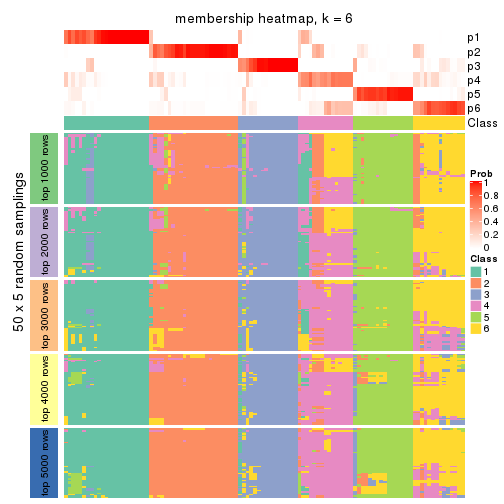
As soon as we have had the classes for columns, we can look for signatures which are significantly different between classes which can be candidate marks for certain classes. Following are the heatmaps for signatures.
Signature heatmaps where rows are scaled:
get_signatures(res, k = 2)
get_signatures(res, k = 3)
get_signatures(res, k = 4)
get_signatures(res, k = 5)
get_signatures(res, k = 6)
Signature heatmaps where rows are not scaled:
get_signatures(res, k = 2, scale_rows = FALSE)
get_signatures(res, k = 3, scale_rows = FALSE)
get_signatures(res, k = 4, scale_rows = FALSE)
get_signatures(res, k = 5, scale_rows = FALSE)
get_signatures(res, k = 6, scale_rows = FALSE)

Compare the overlap of signatures from different k:
compare_signatures(res)
get_signature() returns a data frame invisibly. TO get the list of signatures, the function
call should be assigned to a variable explicitly. In following code, if plot argument is set
to FALSE, no heatmap is plotted while only the differential analysis is performed.
# code only for demonstration
tb = get_signature(res, k = ..., plot = FALSE)
An example of the output of tb is:
#> which_row fdr mean_1 mean_2 scaled_mean_1 scaled_mean_2 km
#> 1 38 0.042760348 8.373488 9.131774 -0.5533452 0.5164555 1
#> 2 40 0.018707592 7.106213 8.469186 -0.6173731 0.5762149 1
#> 3 55 0.019134737 10.221463 11.207825 -0.6159697 0.5749050 1
#> 4 59 0.006059896 5.921854 7.869574 -0.6899429 0.6439467 1
#> 5 60 0.018055526 8.928898 10.211722 -0.6204761 0.5791110 1
#> 6 98 0.009384629 15.714769 14.887706 0.6635654 -0.6193277 2
...
The columns in tb are:
which_row: row indices corresponding to the input matrix.fdr: FDR for the differential test. mean_x: The mean value in group x.scaled_mean_x: The mean value in group x after rows are scaled.km: Row groups if k-means clustering is applied to rows.UMAP plot which shows how samples are separated.
dimension_reduction(res, k = 2, method = "UMAP")
dimension_reduction(res, k = 3, method = "UMAP")
dimension_reduction(res, k = 4, method = "UMAP")
dimension_reduction(res, k = 5, method = "UMAP")
dimension_reduction(res, k = 6, method = "UMAP")

Following heatmap shows how subgroups are split when increasing k:
collect_classes(res)
If matrix rows can be associated to genes, consider to use GO_Enrichment(res,
...) to perform function enrichment for the signature genes.
The object with results only for a single top-value method and a single partition method can be extracted as:
res = res_list["SD", "pam"]
# you can also extract it by
# res = res_list["SD:pam"]
A summary of res and all the functions that can be applied to it:
res
#> A 'ConsensusPartition' object with k = 2, 3, 4, 5, 6.
#> On a matrix with 17532 rows and 108 columns.
#> Top rows (1000, 2000, 3000, 4000, 5000) are extracted by 'SD' method.
#> Subgroups are detected by 'pam' method.
#> Performed in total 1250 partitions by row resampling.
#> Best k for subgroups seems to be 2.
#>
#> Following methods can be applied to this 'ConsensusPartition' object:
#> [1] "cola_report" "collect_classes" "collect_plots"
#> [4] "collect_stats" "colnames" "compare_signatures"
#> [7] "consensus_heatmap" "dimension_reduction" "functional_enrichment"
#> [10] "get_anno_col" "get_anno" "get_classes"
#> [13] "get_consensus" "get_matrix" "get_membership"
#> [16] "get_param" "get_signatures" "get_stats"
#> [19] "is_best_k" "is_stable_k" "membership_heatmap"
#> [22] "ncol" "nrow" "plot_ecdf"
#> [25] "rownames" "select_partition_number" "show"
#> [28] "suggest_best_k" "test_to_known_factors"
collect_plots() function collects all the plots made from res for all k (number of partitions)
into one single page to provide an easy and fast comparison between different k.
collect_plots(res)
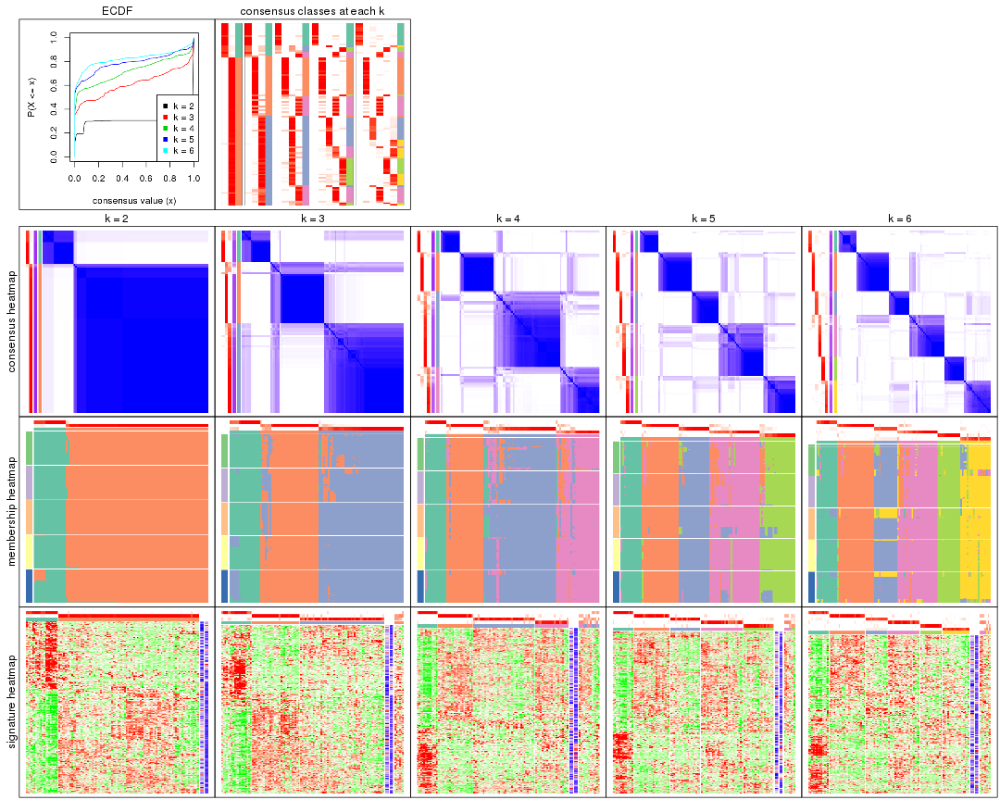
The plots are:
k and the heatmap of
predicted classes for each k.k.k.k.All the plots in panels can be made by individual functions and they are plotted later in this section.
select_partition_number() produces several plots showing different
statistics for choosing “optimized” k. There are following statistics:
k;k, the area increased is defined as \(A_k - A_{k-1}\).The detailed explanations of these statistics can be found in the cola vignette.
Generally speaking, lower PAC score, higher mean silhouette score or higher
concordance corresponds to better partition. Rand index and Jaccard index
measure how similar the current partition is compared to partition with k-1.
If they are too similar, we won't accept k is better than k-1.
select_partition_number(res)
The numeric values for all these statistics can be obtained by get_stats().
get_stats(res)
#> k 1-PAC mean_silhouette concordance area_increased Rand Jaccard
#> 2 2 1.000 0.982 0.990 0.304 0.695 0.695
#> 3 3 0.780 0.841 0.932 1.018 0.670 0.529
#> 4 4 0.763 0.784 0.901 0.178 0.784 0.511
#> 5 5 0.796 0.843 0.921 0.094 0.826 0.480
#> 6 6 0.866 0.860 0.912 0.045 0.922 0.658
suggest_best_k() suggests the best \(k\) based on these statistics. The rules are as follows:
NA.suggest_best_k(res)
#> [1] 2
Following shows the table of the partitions (You need to click the show/hide
code output link to see it). The membership matrix (columns with name p*)
is inferred by
clue::cl_consensus()
function with the SE method. Basically the value in the membership matrix
represents the probability to belong to a certain group. The finall class
label for an item is determined with the group with highest probability it
belongs to.
In get_classes() function, the entropy is calculated from the membership
matrix and the silhouette score is calculated from the consensus matrix.
cbind(get_classes(res, k = 2), get_membership(res, k = 2))
#> class entropy silhouette p1 p2
#> SRR1389909 2 0.0000 0.993 0.000 1.000
#> SRR1454460 2 0.0000 0.993 0.000 1.000
#> SRR1404623 2 0.0000 0.993 0.000 1.000
#> SRR1092038 2 0.0376 0.992 0.004 0.996
#> SRR1319793 2 0.0000 0.993 0.000 1.000
#> SRR1396208 2 0.0000 0.993 0.000 1.000
#> SRR1435797 2 0.0000 0.993 0.000 1.000
#> SRR1078042 2 0.0376 0.992 0.004 0.996
#> SRR1339699 2 0.0376 0.992 0.004 0.996
#> SRR1446499 2 0.0000 0.993 0.000 1.000
#> SRR1359428 2 0.0000 0.993 0.000 1.000
#> SRR1071475 1 0.0000 0.971 1.000 0.000
#> SRR1436781 2 0.0000 0.993 0.000 1.000
#> SRR1101453 2 0.0376 0.992 0.004 0.996
#> SRR1350891 2 0.0000 0.993 0.000 1.000
#> SRR814293 1 0.4022 0.940 0.920 0.080
#> SRR1471456 2 0.0376 0.992 0.004 0.996
#> SRR1446874 2 0.0376 0.992 0.004 0.996
#> SRR1362731 2 0.0000 0.993 0.000 1.000
#> SRR1413705 2 0.0000 0.993 0.000 1.000
#> SRR1434586 2 0.0000 0.993 0.000 1.000
#> SRR1091164 2 0.0000 0.993 0.000 1.000
#> SRR1340598 2 0.0000 0.993 0.000 1.000
#> SRR1466469 1 0.0000 0.971 1.000 0.000
#> SRR1099310 2 0.0000 0.993 0.000 1.000
#> SRR814892 2 0.0000 0.993 0.000 1.000
#> SRR1090698 2 0.0000 0.993 0.000 1.000
#> SRR1089134 1 0.0000 0.971 1.000 0.000
#> SRR1120276 2 0.0376 0.992 0.004 0.996
#> SRR1430507 2 0.0938 0.986 0.012 0.988
#> SRR1356078 2 0.0376 0.992 0.004 0.996
#> SRR1447037 2 0.0376 0.992 0.004 0.996
#> SRR1443544 2 0.1184 0.982 0.016 0.984
#> SRR1081987 2 0.0000 0.993 0.000 1.000
#> SRR1316513 2 0.0000 0.993 0.000 1.000
#> SRR1478457 2 0.0376 0.992 0.004 0.996
#> SRR1342849 2 0.0376 0.992 0.004 0.996
#> SRR1073878 2 0.0000 0.993 0.000 1.000
#> SRR1078735 2 0.6343 0.809 0.160 0.840
#> SRR1093601 2 0.0000 0.993 0.000 1.000
#> SRR816629 2 0.0376 0.992 0.004 0.996
#> SRR1477754 2 0.0000 0.993 0.000 1.000
#> SRR1454589 2 0.1184 0.982 0.016 0.984
#> SRR1102780 2 0.7745 0.695 0.228 0.772
#> SRR1347518 2 0.0000 0.993 0.000 1.000
#> SRR1093747 1 0.3879 0.942 0.924 0.076
#> SRR809209 2 0.0376 0.992 0.004 0.996
#> SRR1082471 2 0.0000 0.993 0.000 1.000
#> SRR1390349 2 0.0376 0.992 0.004 0.996
#> SRR1410493 2 0.0000 0.993 0.000 1.000
#> SRR1086656 2 0.0000 0.993 0.000 1.000
#> SRR1469997 2 0.0000 0.993 0.000 1.000
#> SRR1355512 2 0.0000 0.993 0.000 1.000
#> SRR809897 2 0.0000 0.993 0.000 1.000
#> SRR1436146 2 0.0000 0.993 0.000 1.000
#> SRR1097148 1 0.0000 0.971 1.000 0.000
#> SRR1429979 2 0.0376 0.992 0.004 0.996
#> SRR1454607 1 0.0000 0.971 1.000 0.000
#> SRR1420687 1 0.4161 0.934 0.916 0.084
#> SRR1099669 1 0.3879 0.942 0.924 0.076
#> SRR1360172 2 0.0376 0.992 0.004 0.996
#> SRR1478131 2 0.0000 0.993 0.000 1.000
#> SRR1453235 2 0.0376 0.992 0.004 0.996
#> SRR1369107 2 0.0376 0.992 0.004 0.996
#> SRR1096458 2 0.0376 0.992 0.004 0.996
#> SRR1088856 2 0.0376 0.992 0.004 0.996
#> SRR1432934 2 0.0000 0.993 0.000 1.000
#> SRR821072 2 0.0000 0.993 0.000 1.000
#> SRR1480896 2 0.1184 0.982 0.016 0.984
#> SRR1403344 2 0.0000 0.993 0.000 1.000
#> SRR1360850 1 0.0000 0.971 1.000 0.000
#> SRR1451820 2 0.0000 0.993 0.000 1.000
#> SRR1075360 2 0.0376 0.992 0.004 0.996
#> SRR1413373 1 0.0000 0.971 1.000 0.000
#> SRR1090928 2 0.0000 0.993 0.000 1.000
#> SRR1097124 2 0.0000 0.993 0.000 1.000
#> SRR1458745 1 0.3733 0.944 0.928 0.072
#> SRR1078636 2 0.0000 0.993 0.000 1.000
#> SRR1473754 2 0.0376 0.992 0.004 0.996
#> SRR1085736 2 0.0000 0.993 0.000 1.000
#> SRR1098807 1 0.0000 0.971 1.000 0.000
#> SRR1341583 2 0.0000 0.993 0.000 1.000
#> SRR1380869 2 0.0000 0.993 0.000 1.000
#> SRR1430775 2 0.0000 0.993 0.000 1.000
#> SRR1479573 2 0.0376 0.992 0.004 0.996
#> SRR1082352 1 0.0000 0.971 1.000 0.000
#> SRR1102005 2 0.0000 0.993 0.000 1.000
#> SRR1408415 1 0.0376 0.970 0.996 0.004
#> SRR1353537 1 0.0000 0.971 1.000 0.000
#> SRR1458870 2 0.0000 0.993 0.000 1.000
#> SRR1315495 2 0.0000 0.993 0.000 1.000
#> SRR1481169 1 0.4022 0.940 0.920 0.080
#> SRR1470273 1 0.0000 0.971 1.000 0.000
#> SRR1312446 2 0.0000 0.993 0.000 1.000
#> SRR1101859 2 0.0000 0.993 0.000 1.000
#> SRR1384210 1 0.3733 0.944 0.928 0.072
#> SRR1336244 2 0.0000 0.993 0.000 1.000
#> SRR1374432 2 0.0000 0.993 0.000 1.000
#> SRR1430023 2 0.0376 0.992 0.004 0.996
#> SRR1487527 1 0.0000 0.971 1.000 0.000
#> SRR1073389 2 0.1184 0.982 0.016 0.984
#> SRR1433171 2 0.0000 0.993 0.000 1.000
#> SRR1085565 2 0.0938 0.986 0.012 0.988
#> SRR1355017 2 0.0000 0.993 0.000 1.000
#> SRR1351641 2 0.0000 0.993 0.000 1.000
#> SRR1398230 2 0.0000 0.993 0.000 1.000
#> SRR1086212 2 0.0000 0.993 0.000 1.000
#> SRR1431514 2 0.0000 0.993 0.000 1.000
cbind(get_classes(res, k = 3), get_membership(res, k = 3))
#> class entropy silhouette p1 p2 p3
#> SRR1389909 3 0.2066 0.9047 0.000 0.060 0.940
#> SRR1454460 3 0.0747 0.9302 0.000 0.016 0.984
#> SRR1404623 2 0.0000 0.8964 0.000 1.000 0.000
#> SRR1092038 3 0.1411 0.9195 0.000 0.036 0.964
#> SRR1319793 2 0.0000 0.8964 0.000 1.000 0.000
#> SRR1396208 3 0.0000 0.9351 0.000 0.000 1.000
#> SRR1435797 3 0.4235 0.7840 0.000 0.176 0.824
#> SRR1078042 3 0.0000 0.9351 0.000 0.000 1.000
#> SRR1339699 3 0.0000 0.9351 0.000 0.000 1.000
#> SRR1446499 2 0.0000 0.8964 0.000 1.000 0.000
#> SRR1359428 2 0.0000 0.8964 0.000 1.000 0.000
#> SRR1071475 1 0.0000 0.8926 1.000 0.000 0.000
#> SRR1436781 2 0.0000 0.8964 0.000 1.000 0.000
#> SRR1101453 3 0.1643 0.9144 0.000 0.044 0.956
#> SRR1350891 2 0.0000 0.8964 0.000 1.000 0.000
#> SRR814293 2 0.6468 0.1462 0.444 0.552 0.004
#> SRR1471456 3 0.1411 0.9195 0.000 0.036 0.964
#> SRR1446874 3 0.0000 0.9351 0.000 0.000 1.000
#> SRR1362731 2 0.0000 0.8964 0.000 1.000 0.000
#> SRR1413705 2 0.0000 0.8964 0.000 1.000 0.000
#> SRR1434586 3 0.1289 0.9229 0.000 0.032 0.968
#> SRR1091164 2 0.0000 0.8964 0.000 1.000 0.000
#> SRR1340598 3 0.0000 0.9351 0.000 0.000 1.000
#> SRR1466469 1 0.0000 0.8926 1.000 0.000 0.000
#> SRR1099310 2 0.6308 0.0899 0.000 0.508 0.492
#> SRR814892 2 0.0000 0.8964 0.000 1.000 0.000
#> SRR1090698 3 0.0592 0.9324 0.000 0.012 0.988
#> SRR1089134 1 0.0000 0.8926 1.000 0.000 0.000
#> SRR1120276 3 0.0000 0.9351 0.000 0.000 1.000
#> SRR1430507 3 0.0000 0.9351 0.000 0.000 1.000
#> SRR1356078 3 0.0000 0.9351 0.000 0.000 1.000
#> SRR1447037 3 0.0000 0.9351 0.000 0.000 1.000
#> SRR1443544 3 0.0000 0.9351 0.000 0.000 1.000
#> SRR1081987 3 0.5859 0.5178 0.000 0.344 0.656
#> SRR1316513 3 0.5810 0.5373 0.000 0.336 0.664
#> SRR1478457 3 0.0000 0.9351 0.000 0.000 1.000
#> SRR1342849 3 0.0000 0.9351 0.000 0.000 1.000
#> SRR1073878 2 0.0000 0.8964 0.000 1.000 0.000
#> SRR1078735 3 0.2711 0.8682 0.088 0.000 0.912
#> SRR1093601 2 0.0000 0.8964 0.000 1.000 0.000
#> SRR816629 3 0.0747 0.9309 0.000 0.016 0.984
#> SRR1477754 2 0.1163 0.8714 0.000 0.972 0.028
#> SRR1454589 3 0.0000 0.9351 0.000 0.000 1.000
#> SRR1102780 3 0.4452 0.7346 0.192 0.000 0.808
#> SRR1347518 3 0.0000 0.9351 0.000 0.000 1.000
#> SRR1093747 1 0.5138 0.7351 0.748 0.000 0.252
#> SRR809209 3 0.0000 0.9351 0.000 0.000 1.000
#> SRR1082471 3 0.2537 0.8883 0.000 0.080 0.920
#> SRR1390349 3 0.0747 0.9308 0.000 0.016 0.984
#> SRR1410493 3 0.2066 0.9047 0.000 0.060 0.940
#> SRR1086656 3 0.5835 0.5322 0.000 0.340 0.660
#> SRR1469997 2 0.0000 0.8964 0.000 1.000 0.000
#> SRR1355512 2 0.5254 0.6269 0.000 0.736 0.264
#> SRR809897 3 0.0424 0.9332 0.000 0.008 0.992
#> SRR1436146 2 0.0000 0.8964 0.000 1.000 0.000
#> SRR1097148 1 0.0000 0.8926 1.000 0.000 0.000
#> SRR1429979 3 0.0000 0.9351 0.000 0.000 1.000
#> SRR1454607 1 0.0000 0.8926 1.000 0.000 0.000
#> SRR1420687 1 0.5138 0.7351 0.748 0.000 0.252
#> SRR1099669 1 0.5497 0.6794 0.708 0.000 0.292
#> SRR1360172 3 0.0000 0.9351 0.000 0.000 1.000
#> SRR1478131 3 0.4504 0.7703 0.000 0.196 0.804
#> SRR1453235 3 0.0000 0.9351 0.000 0.000 1.000
#> SRR1369107 3 0.0000 0.9351 0.000 0.000 1.000
#> SRR1096458 3 0.1529 0.9184 0.000 0.040 0.960
#> SRR1088856 3 0.1411 0.9195 0.000 0.036 0.964
#> SRR1432934 2 0.0000 0.8964 0.000 1.000 0.000
#> SRR821072 2 0.6302 0.0689 0.000 0.520 0.480
#> SRR1480896 3 0.0000 0.9351 0.000 0.000 1.000
#> SRR1403344 3 0.0000 0.9351 0.000 0.000 1.000
#> SRR1360850 1 0.0000 0.8926 1.000 0.000 0.000
#> SRR1451820 2 0.0000 0.8964 0.000 1.000 0.000
#> SRR1075360 3 0.0000 0.9351 0.000 0.000 1.000
#> SRR1413373 1 0.0000 0.8926 1.000 0.000 0.000
#> SRR1090928 2 0.0000 0.8964 0.000 1.000 0.000
#> SRR1097124 2 0.0000 0.8964 0.000 1.000 0.000
#> SRR1458745 1 0.4702 0.7739 0.788 0.000 0.212
#> SRR1078636 2 0.0000 0.8964 0.000 1.000 0.000
#> SRR1473754 2 0.5968 0.4681 0.000 0.636 0.364
#> SRR1085736 3 0.1031 0.9293 0.000 0.024 0.976
#> SRR1098807 1 0.0000 0.8926 1.000 0.000 0.000
#> SRR1341583 2 0.0000 0.8964 0.000 1.000 0.000
#> SRR1380869 3 0.2796 0.8753 0.000 0.092 0.908
#> SRR1430775 3 0.2537 0.8883 0.000 0.080 0.920
#> SRR1479573 3 0.0000 0.9351 0.000 0.000 1.000
#> SRR1082352 1 0.0000 0.8926 1.000 0.000 0.000
#> SRR1102005 3 0.1643 0.9133 0.000 0.044 0.956
#> SRR1408415 1 0.1289 0.8794 0.968 0.000 0.032
#> SRR1353537 1 0.0000 0.8926 1.000 0.000 0.000
#> SRR1458870 2 0.0000 0.8964 0.000 1.000 0.000
#> SRR1315495 2 0.0000 0.8964 0.000 1.000 0.000
#> SRR1481169 1 0.5431 0.6922 0.716 0.000 0.284
#> SRR1470273 1 0.0000 0.8926 1.000 0.000 0.000
#> SRR1312446 2 0.0000 0.8964 0.000 1.000 0.000
#> SRR1101859 2 0.0000 0.8964 0.000 1.000 0.000
#> SRR1384210 1 0.5058 0.7453 0.756 0.000 0.244
#> SRR1336244 2 0.0000 0.8964 0.000 1.000 0.000
#> SRR1374432 3 0.5016 0.7187 0.000 0.240 0.760
#> SRR1430023 3 0.0000 0.9351 0.000 0.000 1.000
#> SRR1487527 1 0.0000 0.8926 1.000 0.000 0.000
#> SRR1073389 3 0.0000 0.9351 0.000 0.000 1.000
#> SRR1433171 3 0.4750 0.7282 0.000 0.216 0.784
#> SRR1085565 3 0.0000 0.9351 0.000 0.000 1.000
#> SRR1355017 2 0.0000 0.8964 0.000 1.000 0.000
#> SRR1351641 2 0.0000 0.8964 0.000 1.000 0.000
#> SRR1398230 2 0.0000 0.8964 0.000 1.000 0.000
#> SRR1086212 2 0.5968 0.4341 0.000 0.636 0.364
#> SRR1431514 2 0.6309 0.0397 0.000 0.500 0.500
cbind(get_classes(res, k = 4), get_membership(res, k = 4))
#> class entropy silhouette p1 p2 p3 p4
#> SRR1389909 4 0.0524 0.8176 0.000 0.004 0.008 0.988
#> SRR1454460 3 0.0188 0.8701 0.000 0.004 0.996 0.000
#> SRR1404623 2 0.0000 0.9599 0.000 1.000 0.000 0.000
#> SRR1092038 3 0.0188 0.8701 0.000 0.004 0.996 0.000
#> SRR1319793 2 0.0000 0.9599 0.000 1.000 0.000 0.000
#> SRR1396208 3 0.1004 0.8671 0.000 0.004 0.972 0.024
#> SRR1435797 3 0.1256 0.8645 0.000 0.028 0.964 0.008
#> SRR1078042 3 0.0000 0.8701 0.000 0.000 1.000 0.000
#> SRR1339699 3 0.0336 0.8696 0.000 0.000 0.992 0.008
#> SRR1446499 2 0.0000 0.9599 0.000 1.000 0.000 0.000
#> SRR1359428 2 0.0000 0.9599 0.000 1.000 0.000 0.000
#> SRR1071475 1 0.0000 0.9741 1.000 0.000 0.000 0.000
#> SRR1436781 4 0.4855 0.4349 0.000 0.400 0.000 0.600
#> SRR1101453 3 0.0188 0.8701 0.000 0.004 0.996 0.000
#> SRR1350891 2 0.0000 0.9599 0.000 1.000 0.000 0.000
#> SRR814293 4 0.0376 0.8139 0.004 0.000 0.004 0.992
#> SRR1471456 3 0.0188 0.8701 0.000 0.004 0.996 0.000
#> SRR1446874 3 0.0707 0.8678 0.000 0.000 0.980 0.020
#> SRR1362731 2 0.0000 0.9599 0.000 1.000 0.000 0.000
#> SRR1413705 4 0.3726 0.6690 0.000 0.212 0.000 0.788
#> SRR1434586 3 0.0000 0.8701 0.000 0.000 1.000 0.000
#> SRR1091164 2 0.0000 0.9599 0.000 1.000 0.000 0.000
#> SRR1340598 3 0.0921 0.8658 0.000 0.000 0.972 0.028
#> SRR1466469 1 0.0000 0.9741 1.000 0.000 0.000 0.000
#> SRR1099310 4 0.0469 0.8158 0.000 0.000 0.012 0.988
#> SRR814892 4 0.4830 0.4525 0.000 0.392 0.000 0.608
#> SRR1090698 3 0.2048 0.8456 0.000 0.064 0.928 0.008
#> SRR1089134 1 0.0000 0.9741 1.000 0.000 0.000 0.000
#> SRR1120276 3 0.0000 0.8701 0.000 0.000 1.000 0.000
#> SRR1430507 4 0.4661 0.3695 0.000 0.000 0.348 0.652
#> SRR1356078 3 0.1297 0.8657 0.000 0.016 0.964 0.020
#> SRR1447037 3 0.4164 0.6525 0.000 0.000 0.736 0.264
#> SRR1443544 3 0.0000 0.8701 0.000 0.000 1.000 0.000
#> SRR1081987 4 0.2704 0.7716 0.000 0.124 0.000 0.876
#> SRR1316513 4 0.0707 0.8161 0.000 0.020 0.000 0.980
#> SRR1478457 3 0.0817 0.8666 0.000 0.000 0.976 0.024
#> SRR1342849 3 0.3266 0.7613 0.000 0.000 0.832 0.168
#> SRR1073878 2 0.0000 0.9599 0.000 1.000 0.000 0.000
#> SRR1078735 3 0.0921 0.8622 0.028 0.000 0.972 0.000
#> SRR1093601 4 0.0707 0.8161 0.000 0.020 0.000 0.980
#> SRR816629 3 0.0000 0.8701 0.000 0.000 1.000 0.000
#> SRR1477754 2 0.0188 0.9555 0.000 0.996 0.004 0.000
#> SRR1454589 4 0.4222 0.5929 0.000 0.000 0.272 0.728
#> SRR1102780 4 0.0000 0.8150 0.000 0.000 0.000 1.000
#> SRR1347518 3 0.4888 0.2183 0.000 0.000 0.588 0.412
#> SRR1093747 3 0.6336 0.1189 0.460 0.000 0.480 0.060
#> SRR809209 3 0.0921 0.8658 0.000 0.000 0.972 0.028
#> SRR1082471 3 0.4737 0.6599 0.000 0.252 0.728 0.020
#> SRR1390349 3 0.2271 0.8368 0.000 0.076 0.916 0.008
#> SRR1410493 3 0.3806 0.7658 0.000 0.156 0.824 0.020
#> SRR1086656 3 0.7760 -0.1204 0.000 0.240 0.408 0.352
#> SRR1469997 4 0.4855 0.4136 0.000 0.400 0.000 0.600
#> SRR1355512 2 0.4920 0.3706 0.000 0.628 0.368 0.004
#> SRR809897 3 0.0895 0.8672 0.000 0.020 0.976 0.004
#> SRR1436146 2 0.0000 0.9599 0.000 1.000 0.000 0.000
#> SRR1097148 1 0.0000 0.9741 1.000 0.000 0.000 0.000
#> SRR1429979 3 0.0000 0.8701 0.000 0.000 1.000 0.000
#> SRR1454607 1 0.0000 0.9741 1.000 0.000 0.000 0.000
#> SRR1420687 3 0.5497 0.2037 0.460 0.000 0.524 0.016
#> SRR1099669 3 0.7824 0.1502 0.268 0.000 0.404 0.328
#> SRR1360172 3 0.0188 0.8701 0.000 0.004 0.996 0.000
#> SRR1478131 4 0.0469 0.8182 0.000 0.012 0.000 0.988
#> SRR1453235 3 0.4679 0.5290 0.000 0.000 0.648 0.352
#> SRR1369107 3 0.0000 0.8701 0.000 0.000 1.000 0.000
#> SRR1096458 4 0.0657 0.8169 0.000 0.004 0.012 0.984
#> SRR1088856 3 0.0188 0.8701 0.000 0.004 0.996 0.000
#> SRR1432934 2 0.2868 0.8018 0.000 0.864 0.000 0.136
#> SRR821072 4 0.0469 0.8182 0.000 0.012 0.000 0.988
#> SRR1480896 3 0.1118 0.8644 0.000 0.000 0.964 0.036
#> SRR1403344 3 0.0000 0.8701 0.000 0.000 1.000 0.000
#> SRR1360850 1 0.0000 0.9741 1.000 0.000 0.000 0.000
#> SRR1451820 4 0.3219 0.7492 0.000 0.164 0.000 0.836
#> SRR1075360 3 0.0707 0.8683 0.000 0.000 0.980 0.020
#> SRR1413373 1 0.0000 0.9741 1.000 0.000 0.000 0.000
#> SRR1090928 2 0.0000 0.9599 0.000 1.000 0.000 0.000
#> SRR1097124 2 0.0000 0.9599 0.000 1.000 0.000 0.000
#> SRR1458745 1 0.3764 0.6904 0.784 0.000 0.000 0.216
#> SRR1078636 2 0.0000 0.9599 0.000 1.000 0.000 0.000
#> SRR1473754 4 0.0336 0.8164 0.000 0.000 0.008 0.992
#> SRR1085736 3 0.3894 0.7921 0.000 0.068 0.844 0.088
#> SRR1098807 1 0.0000 0.9741 1.000 0.000 0.000 0.000
#> SRR1341583 2 0.0000 0.9599 0.000 1.000 0.000 0.000
#> SRR1380869 4 0.0469 0.8158 0.000 0.000 0.012 0.988
#> SRR1430775 4 0.0336 0.8179 0.000 0.008 0.000 0.992
#> SRR1479573 3 0.0336 0.8696 0.000 0.000 0.992 0.008
#> SRR1082352 1 0.1302 0.9363 0.956 0.000 0.000 0.044
#> SRR1102005 3 0.1059 0.8673 0.000 0.016 0.972 0.012
#> SRR1408415 4 0.4989 0.0845 0.472 0.000 0.000 0.528
#> SRR1353537 1 0.0000 0.9741 1.000 0.000 0.000 0.000
#> SRR1458870 2 0.0000 0.9599 0.000 1.000 0.000 0.000
#> SRR1315495 2 0.0000 0.9599 0.000 1.000 0.000 0.000
#> SRR1481169 4 0.0000 0.8150 0.000 0.000 0.000 1.000
#> SRR1470273 1 0.0000 0.9741 1.000 0.000 0.000 0.000
#> SRR1312446 2 0.0000 0.9599 0.000 1.000 0.000 0.000
#> SRR1101859 4 0.4406 0.6052 0.000 0.300 0.000 0.700
#> SRR1384210 3 0.5088 0.3012 0.424 0.000 0.572 0.004
#> SRR1336244 2 0.0000 0.9599 0.000 1.000 0.000 0.000
#> SRR1374432 3 0.4585 0.5467 0.000 0.332 0.668 0.000
#> SRR1430023 4 0.4624 0.5147 0.000 0.000 0.340 0.660
#> SRR1487527 1 0.0657 0.9628 0.984 0.000 0.004 0.012
#> SRR1073389 3 0.4406 0.6087 0.000 0.000 0.700 0.300
#> SRR1433171 4 0.7581 0.2954 0.000 0.200 0.360 0.440
#> SRR1085565 3 0.0000 0.8701 0.000 0.000 1.000 0.000
#> SRR1355017 2 0.3444 0.7304 0.000 0.816 0.000 0.184
#> SRR1351641 2 0.0000 0.9599 0.000 1.000 0.000 0.000
#> SRR1398230 2 0.0000 0.9599 0.000 1.000 0.000 0.000
#> SRR1086212 4 0.0469 0.8182 0.000 0.012 0.000 0.988
#> SRR1431514 4 0.0336 0.8164 0.000 0.008 0.000 0.992
cbind(get_classes(res, k = 5), get_membership(res, k = 5))
#> class entropy silhouette p1 p2 p3 p4 p5
#> SRR1389909 4 0.0000 0.851 0.000 0.000 0.000 1.000 0.000
#> SRR1454460 3 0.0000 0.950 0.000 0.000 1.000 0.000 0.000
#> SRR1404623 2 0.0000 0.958 0.000 1.000 0.000 0.000 0.000
#> SRR1092038 3 0.0000 0.950 0.000 0.000 1.000 0.000 0.000
#> SRR1319793 2 0.0000 0.958 0.000 1.000 0.000 0.000 0.000
#> SRR1396208 4 0.4622 0.726 0.000 0.084 0.164 0.748 0.004
#> SRR1435797 5 0.7801 0.460 0.000 0.200 0.168 0.148 0.484
#> SRR1078042 3 0.0000 0.950 0.000 0.000 1.000 0.000 0.000
#> SRR1339699 3 0.0510 0.943 0.000 0.000 0.984 0.000 0.016
#> SRR1446499 2 0.3684 0.576 0.000 0.720 0.000 0.000 0.280
#> SRR1359428 2 0.0000 0.958 0.000 1.000 0.000 0.000 0.000
#> SRR1071475 1 0.0000 0.952 1.000 0.000 0.000 0.000 0.000
#> SRR1436781 4 0.4182 0.431 0.000 0.400 0.000 0.600 0.000
#> SRR1101453 3 0.0000 0.950 0.000 0.000 1.000 0.000 0.000
#> SRR1350891 2 0.0000 0.958 0.000 1.000 0.000 0.000 0.000
#> SRR814293 4 0.2329 0.781 0.000 0.000 0.000 0.876 0.124
#> SRR1471456 3 0.0000 0.950 0.000 0.000 1.000 0.000 0.000
#> SRR1446874 5 0.3203 0.783 0.000 0.000 0.168 0.012 0.820
#> SRR1362731 2 0.0000 0.958 0.000 1.000 0.000 0.000 0.000
#> SRR1413705 4 0.3039 0.731 0.000 0.192 0.000 0.808 0.000
#> SRR1434586 5 0.1270 0.866 0.000 0.000 0.052 0.000 0.948
#> SRR1091164 2 0.0000 0.958 0.000 1.000 0.000 0.000 0.000
#> SRR1340598 4 0.4205 0.742 0.000 0.056 0.164 0.776 0.004
#> SRR1466469 1 0.0000 0.952 1.000 0.000 0.000 0.000 0.000
#> SRR1099310 4 0.0000 0.851 0.000 0.000 0.000 1.000 0.000
#> SRR814892 4 0.4138 0.465 0.000 0.384 0.000 0.616 0.000
#> SRR1090698 5 0.5708 0.478 0.000 0.300 0.112 0.000 0.588
#> SRR1089134 1 0.0000 0.952 1.000 0.000 0.000 0.000 0.000
#> SRR1120276 3 0.1043 0.925 0.000 0.000 0.960 0.000 0.040
#> SRR1430507 5 0.0162 0.879 0.000 0.000 0.000 0.004 0.996
#> SRR1356078 5 0.0000 0.881 0.000 0.000 0.000 0.000 1.000
#> SRR1447037 4 0.1282 0.834 0.000 0.000 0.044 0.952 0.004
#> SRR1443544 3 0.0162 0.949 0.000 0.000 0.996 0.000 0.004
#> SRR1081987 4 0.2930 0.771 0.000 0.164 0.000 0.832 0.004
#> SRR1316513 4 0.0000 0.851 0.000 0.000 0.000 1.000 0.000
#> SRR1478457 5 0.3053 0.789 0.000 0.000 0.164 0.008 0.828
#> SRR1342849 4 0.3048 0.750 0.000 0.000 0.176 0.820 0.004
#> SRR1073878 2 0.0000 0.958 0.000 1.000 0.000 0.000 0.000
#> SRR1078735 3 0.0162 0.949 0.000 0.000 0.996 0.000 0.004
#> SRR1093601 4 0.0000 0.851 0.000 0.000 0.000 1.000 0.000
#> SRR816629 3 0.2966 0.779 0.000 0.000 0.816 0.000 0.184
#> SRR1477754 2 0.0963 0.929 0.000 0.964 0.000 0.000 0.036
#> SRR1454589 5 0.2879 0.826 0.000 0.000 0.100 0.032 0.868
#> SRR1102780 4 0.0000 0.851 0.000 0.000 0.000 1.000 0.000
#> SRR1347518 4 0.2424 0.788 0.000 0.000 0.132 0.868 0.000
#> SRR1093747 5 0.0162 0.879 0.004 0.000 0.000 0.000 0.996
#> SRR809209 4 0.3922 0.748 0.000 0.028 0.164 0.796 0.012
#> SRR1082471 5 0.0000 0.881 0.000 0.000 0.000 0.000 1.000
#> SRR1390349 5 0.8079 0.323 0.000 0.224 0.140 0.208 0.428
#> SRR1410493 5 0.0000 0.881 0.000 0.000 0.000 0.000 1.000
#> SRR1086656 3 0.4994 0.629 0.000 0.208 0.696 0.096 0.000
#> SRR1469997 4 0.4126 0.457 0.000 0.380 0.000 0.620 0.000
#> SRR1355512 5 0.0703 0.869 0.000 0.024 0.000 0.000 0.976
#> SRR809897 5 0.2773 0.792 0.000 0.000 0.164 0.000 0.836
#> SRR1436146 2 0.0000 0.958 0.000 1.000 0.000 0.000 0.000
#> SRR1097148 1 0.0000 0.952 1.000 0.000 0.000 0.000 0.000
#> SRR1429979 3 0.0000 0.950 0.000 0.000 1.000 0.000 0.000
#> SRR1454607 1 0.0000 0.952 1.000 0.000 0.000 0.000 0.000
#> SRR1420687 5 0.0162 0.879 0.004 0.000 0.000 0.000 0.996
#> SRR1099669 5 0.0000 0.881 0.000 0.000 0.000 0.000 1.000
#> SRR1360172 3 0.0000 0.950 0.000 0.000 1.000 0.000 0.000
#> SRR1478131 4 0.0000 0.851 0.000 0.000 0.000 1.000 0.000
#> SRR1453235 4 0.5123 0.265 0.000 0.000 0.044 0.572 0.384
#> SRR1369107 3 0.0000 0.950 0.000 0.000 1.000 0.000 0.000
#> SRR1096458 4 0.0162 0.850 0.000 0.000 0.004 0.996 0.000
#> SRR1088856 3 0.0000 0.950 0.000 0.000 1.000 0.000 0.000
#> SRR1432934 2 0.2891 0.756 0.000 0.824 0.000 0.176 0.000
#> SRR821072 4 0.0000 0.851 0.000 0.000 0.000 1.000 0.000
#> SRR1480896 5 0.1121 0.867 0.000 0.000 0.044 0.000 0.956
#> SRR1403344 3 0.2228 0.895 0.000 0.040 0.912 0.000 0.048
#> SRR1360850 1 0.0000 0.952 1.000 0.000 0.000 0.000 0.000
#> SRR1451820 4 0.2648 0.781 0.000 0.152 0.000 0.848 0.000
#> SRR1075360 5 0.0000 0.881 0.000 0.000 0.000 0.000 1.000
#> SRR1413373 1 0.0000 0.952 1.000 0.000 0.000 0.000 0.000
#> SRR1090928 2 0.0000 0.958 0.000 1.000 0.000 0.000 0.000
#> SRR1097124 2 0.0404 0.949 0.000 0.988 0.000 0.012 0.000
#> SRR1458745 1 0.3835 0.655 0.744 0.000 0.012 0.244 0.000
#> SRR1078636 2 0.0000 0.958 0.000 1.000 0.000 0.000 0.000
#> SRR1473754 4 0.0000 0.851 0.000 0.000 0.000 1.000 0.000
#> SRR1085736 5 0.0000 0.881 0.000 0.000 0.000 0.000 1.000
#> SRR1098807 1 0.0000 0.952 1.000 0.000 0.000 0.000 0.000
#> SRR1341583 2 0.0162 0.956 0.000 0.996 0.000 0.004 0.000
#> SRR1380869 4 0.0000 0.851 0.000 0.000 0.000 1.000 0.000
#> SRR1430775 4 0.0000 0.851 0.000 0.000 0.000 1.000 0.000
#> SRR1479573 5 0.2074 0.833 0.000 0.000 0.104 0.000 0.896
#> SRR1082352 1 0.2179 0.857 0.888 0.000 0.000 0.112 0.000
#> SRR1102005 5 0.0000 0.881 0.000 0.000 0.000 0.000 1.000
#> SRR1408415 4 0.0609 0.844 0.020 0.000 0.000 0.980 0.000
#> SRR1353537 1 0.0000 0.952 1.000 0.000 0.000 0.000 0.000
#> SRR1458870 2 0.0000 0.958 0.000 1.000 0.000 0.000 0.000
#> SRR1315495 2 0.0000 0.958 0.000 1.000 0.000 0.000 0.000
#> SRR1481169 4 0.0000 0.851 0.000 0.000 0.000 1.000 0.000
#> SRR1470273 1 0.0000 0.952 1.000 0.000 0.000 0.000 0.000
#> SRR1312446 2 0.0000 0.958 0.000 1.000 0.000 0.000 0.000
#> SRR1101859 4 0.3796 0.619 0.000 0.300 0.000 0.700 0.000
#> SRR1384210 3 0.0162 0.948 0.004 0.000 0.996 0.000 0.000
#> SRR1336244 2 0.0000 0.958 0.000 1.000 0.000 0.000 0.000
#> SRR1374432 2 0.1121 0.916 0.000 0.956 0.044 0.000 0.000
#> SRR1430023 3 0.3196 0.766 0.000 0.000 0.804 0.004 0.192
#> SRR1487527 1 0.2648 0.793 0.848 0.000 0.000 0.000 0.152
#> SRR1073389 5 0.0000 0.881 0.000 0.000 0.000 0.000 1.000
#> SRR1433171 4 0.6400 0.610 0.000 0.208 0.060 0.624 0.108
#> SRR1085565 3 0.0000 0.950 0.000 0.000 1.000 0.000 0.000
#> SRR1355017 2 0.3274 0.686 0.000 0.780 0.000 0.220 0.000
#> SRR1351641 2 0.0000 0.958 0.000 1.000 0.000 0.000 0.000
#> SRR1398230 2 0.0000 0.958 0.000 1.000 0.000 0.000 0.000
#> SRR1086212 4 0.0000 0.851 0.000 0.000 0.000 1.000 0.000
#> SRR1431514 4 0.0000 0.851 0.000 0.000 0.000 1.000 0.000
cbind(get_classes(res, k = 6), get_membership(res, k = 6))
#> class entropy silhouette p1 p2 p3 p4 p5 p6
#> SRR1389909 4 0.0000 0.852 0.000 0.000 0.000 1.000 0.000 0.000
#> SRR1454460 3 0.1863 0.951 0.000 0.000 0.896 0.000 0.000 0.104
#> SRR1404623 2 0.0000 0.965 0.000 1.000 0.000 0.000 0.000 0.000
#> SRR1092038 3 0.1863 0.951 0.000 0.000 0.896 0.000 0.000 0.104
#> SRR1319793 2 0.0547 0.953 0.000 0.980 0.000 0.020 0.000 0.000
#> SRR1396208 6 0.1349 0.858 0.000 0.004 0.000 0.056 0.000 0.940
#> SRR1435797 6 0.1562 0.860 0.000 0.032 0.000 0.004 0.024 0.940
#> SRR1078042 3 0.1863 0.951 0.000 0.000 0.896 0.000 0.000 0.104
#> SRR1339699 6 0.1267 0.849 0.000 0.000 0.060 0.000 0.000 0.940
#> SRR1446499 2 0.3309 0.614 0.000 0.720 0.000 0.000 0.280 0.000
#> SRR1359428 2 0.0000 0.965 0.000 1.000 0.000 0.000 0.000 0.000
#> SRR1071475 1 0.0146 0.923 0.996 0.000 0.004 0.000 0.000 0.000
#> SRR1436781 4 0.3789 0.419 0.000 0.416 0.000 0.584 0.000 0.000
#> SRR1101453 3 0.1863 0.951 0.000 0.000 0.896 0.000 0.000 0.104
#> SRR1350891 2 0.0000 0.965 0.000 1.000 0.000 0.000 0.000 0.000
#> SRR814293 4 0.2182 0.813 0.000 0.000 0.008 0.904 0.068 0.020
#> SRR1471456 3 0.1863 0.951 0.000 0.000 0.896 0.000 0.000 0.104
#> SRR1446874 6 0.0547 0.862 0.000 0.000 0.000 0.000 0.020 0.980
#> SRR1362731 2 0.0000 0.965 0.000 1.000 0.000 0.000 0.000 0.000
#> SRR1413705 4 0.2730 0.728 0.000 0.192 0.000 0.808 0.000 0.000
#> SRR1434586 5 0.1398 0.918 0.000 0.000 0.008 0.000 0.940 0.052
#> SRR1091164 2 0.0000 0.965 0.000 1.000 0.000 0.000 0.000 0.000
#> SRR1340598 6 0.1267 0.856 0.000 0.000 0.000 0.060 0.000 0.940
#> SRR1466469 1 0.0790 0.926 0.968 0.000 0.032 0.000 0.000 0.000
#> SRR1099310 4 0.0000 0.852 0.000 0.000 0.000 1.000 0.000 0.000
#> SRR814892 4 0.3830 0.485 0.000 0.376 0.000 0.620 0.000 0.004
#> SRR1090698 6 0.2302 0.849 0.000 0.032 0.008 0.000 0.060 0.900
#> SRR1089134 1 0.1714 0.924 0.908 0.000 0.092 0.000 0.000 0.000
#> SRR1120276 3 0.3202 0.904 0.000 0.000 0.816 0.000 0.040 0.144
#> SRR1430507 5 0.0000 0.980 0.000 0.000 0.000 0.000 1.000 0.000
#> SRR1356078 5 0.0000 0.980 0.000 0.000 0.000 0.000 1.000 0.000
#> SRR1447037 6 0.1444 0.838 0.000 0.000 0.000 0.072 0.000 0.928
#> SRR1443544 6 0.2260 0.783 0.000 0.000 0.140 0.000 0.000 0.860
#> SRR1081987 4 0.4348 0.251 0.000 0.024 0.000 0.560 0.000 0.416
#> SRR1316513 4 0.0000 0.852 0.000 0.000 0.000 1.000 0.000 0.000
#> SRR1478457 6 0.1434 0.862 0.000 0.000 0.000 0.012 0.048 0.940
#> SRR1342849 6 0.1082 0.857 0.000 0.000 0.004 0.040 0.000 0.956
#> SRR1073878 2 0.0000 0.965 0.000 1.000 0.000 0.000 0.000 0.000
#> SRR1078735 6 0.2597 0.748 0.000 0.000 0.176 0.000 0.000 0.824
#> SRR1093601 4 0.0000 0.852 0.000 0.000 0.000 1.000 0.000 0.000
#> SRR816629 3 0.3235 0.848 0.000 0.000 0.820 0.000 0.128 0.052
#> SRR1477754 2 0.0937 0.937 0.000 0.960 0.000 0.000 0.040 0.000
#> SRR1454589 6 0.1556 0.839 0.000 0.000 0.000 0.000 0.080 0.920
#> SRR1102780 4 0.0547 0.845 0.000 0.000 0.000 0.980 0.020 0.000
#> SRR1347518 4 0.1714 0.792 0.000 0.000 0.000 0.908 0.000 0.092
#> SRR1093747 5 0.0000 0.980 0.000 0.000 0.000 0.000 1.000 0.000
#> SRR809209 6 0.0547 0.860 0.000 0.000 0.000 0.020 0.000 0.980
#> SRR1082471 5 0.0000 0.980 0.000 0.000 0.000 0.000 1.000 0.000
#> SRR1390349 6 0.1871 0.859 0.000 0.032 0.000 0.024 0.016 0.928
#> SRR1410493 5 0.0000 0.980 0.000 0.000 0.000 0.000 1.000 0.000
#> SRR1086656 3 0.4489 0.764 0.000 0.128 0.756 0.052 0.000 0.064
#> SRR1469997 4 0.3737 0.458 0.000 0.392 0.000 0.608 0.000 0.000
#> SRR1355512 5 0.0260 0.974 0.000 0.008 0.000 0.000 0.992 0.000
#> SRR809897 6 0.3727 0.446 0.000 0.000 0.000 0.000 0.388 0.612
#> SRR1436146 2 0.0000 0.965 0.000 1.000 0.000 0.000 0.000 0.000
#> SRR1097148 1 0.1714 0.924 0.908 0.000 0.092 0.000 0.000 0.000
#> SRR1429979 3 0.1863 0.951 0.000 0.000 0.896 0.000 0.000 0.104
#> SRR1454607 1 0.1714 0.924 0.908 0.000 0.092 0.000 0.000 0.000
#> SRR1420687 5 0.0547 0.968 0.000 0.000 0.000 0.000 0.980 0.020
#> SRR1099669 5 0.0146 0.979 0.000 0.000 0.000 0.000 0.996 0.004
#> SRR1360172 3 0.1863 0.951 0.000 0.000 0.896 0.000 0.000 0.104
#> SRR1478131 4 0.0000 0.852 0.000 0.000 0.000 1.000 0.000 0.000
#> SRR1453235 6 0.4993 0.378 0.000 0.000 0.000 0.080 0.360 0.560
#> SRR1369107 3 0.1863 0.951 0.000 0.000 0.896 0.000 0.000 0.104
#> SRR1096458 4 0.1204 0.834 0.000 0.000 0.000 0.944 0.000 0.056
#> SRR1088856 3 0.1863 0.951 0.000 0.000 0.896 0.000 0.000 0.104
#> SRR1432934 2 0.1714 0.880 0.000 0.908 0.000 0.092 0.000 0.000
#> SRR821072 4 0.0000 0.852 0.000 0.000 0.000 1.000 0.000 0.000
#> SRR1480896 6 0.1957 0.834 0.000 0.000 0.000 0.000 0.112 0.888
#> SRR1403344 6 0.3418 0.735 0.000 0.000 0.184 0.000 0.032 0.784
#> SRR1360850 1 0.0146 0.923 0.996 0.000 0.004 0.000 0.000 0.000
#> SRR1451820 4 0.2340 0.785 0.000 0.148 0.000 0.852 0.000 0.000
#> SRR1075360 5 0.0000 0.980 0.000 0.000 0.000 0.000 1.000 0.000
#> SRR1413373 1 0.0909 0.915 0.968 0.000 0.012 0.000 0.000 0.020
#> SRR1090928 2 0.0000 0.965 0.000 1.000 0.000 0.000 0.000 0.000
#> SRR1097124 2 0.1262 0.941 0.000 0.956 0.008 0.016 0.000 0.020
#> SRR1458745 1 0.4262 0.700 0.744 0.000 0.016 0.180 0.000 0.060
#> SRR1078636 2 0.0000 0.965 0.000 1.000 0.000 0.000 0.000 0.000
#> SRR1473754 4 0.0000 0.852 0.000 0.000 0.000 1.000 0.000 0.000
#> SRR1085736 5 0.0000 0.980 0.000 0.000 0.000 0.000 1.000 0.000
#> SRR1098807 1 0.1714 0.924 0.908 0.000 0.092 0.000 0.000 0.000
#> SRR1341583 2 0.0260 0.960 0.000 0.992 0.000 0.008 0.000 0.000
#> SRR1380869 4 0.0000 0.852 0.000 0.000 0.000 1.000 0.000 0.000
#> SRR1430775 4 0.0806 0.845 0.000 0.000 0.008 0.972 0.000 0.020
#> SRR1479573 5 0.1075 0.932 0.000 0.000 0.000 0.000 0.952 0.048
#> SRR1082352 1 0.2942 0.833 0.836 0.000 0.032 0.132 0.000 0.000
#> SRR1102005 5 0.1267 0.924 0.000 0.000 0.000 0.000 0.940 0.060
#> SRR1408415 4 0.2704 0.783 0.100 0.000 0.012 0.868 0.000 0.020
#> SRR1353537 1 0.0146 0.923 0.996 0.000 0.004 0.000 0.000 0.000
#> SRR1458870 2 0.0363 0.958 0.000 0.988 0.000 0.012 0.000 0.000
#> SRR1315495 2 0.0000 0.965 0.000 1.000 0.000 0.000 0.000 0.000
#> SRR1481169 4 0.0547 0.847 0.000 0.000 0.000 0.980 0.000 0.020
#> SRR1470273 1 0.1714 0.924 0.908 0.000 0.092 0.000 0.000 0.000
#> SRR1312446 2 0.0000 0.965 0.000 1.000 0.000 0.000 0.000 0.000
#> SRR1101859 4 0.3490 0.672 0.000 0.268 0.000 0.724 0.008 0.000
#> SRR1384210 6 0.4050 0.649 0.048 0.000 0.236 0.000 0.000 0.716
#> SRR1336244 2 0.0000 0.965 0.000 1.000 0.000 0.000 0.000 0.000
#> SRR1374432 2 0.1682 0.904 0.000 0.928 0.000 0.020 0.000 0.052
#> SRR1430023 3 0.3525 0.837 0.000 0.000 0.808 0.004 0.120 0.068
#> SRR1487527 1 0.2842 0.852 0.868 0.000 0.012 0.000 0.076 0.044
#> SRR1073389 5 0.0000 0.980 0.000 0.000 0.000 0.000 1.000 0.000
#> SRR1433171 4 0.6357 0.462 0.000 0.320 0.032 0.532 0.048 0.068
#> SRR1085565 3 0.1863 0.951 0.000 0.000 0.896 0.000 0.000 0.104
#> SRR1355017 2 0.2135 0.833 0.000 0.872 0.000 0.128 0.000 0.000
#> SRR1351641 2 0.0000 0.965 0.000 1.000 0.000 0.000 0.000 0.000
#> SRR1398230 2 0.0000 0.965 0.000 1.000 0.000 0.000 0.000 0.000
#> SRR1086212 4 0.0000 0.852 0.000 0.000 0.000 1.000 0.000 0.000
#> SRR1431514 4 0.0547 0.847 0.000 0.020 0.000 0.980 0.000 0.000
Heatmaps for the consensus matrix. It visualizes the probability of two samples to be in a same group.
consensus_heatmap(res, k = 2)
consensus_heatmap(res, k = 3)
consensus_heatmap(res, k = 4)
consensus_heatmap(res, k = 5)

consensus_heatmap(res, k = 6)
Heatmaps for the membership of samples in all partitions to see how consistent they are:
membership_heatmap(res, k = 2)
membership_heatmap(res, k = 3)
membership_heatmap(res, k = 4)
membership_heatmap(res, k = 5)

membership_heatmap(res, k = 6)
As soon as we have had the classes for columns, we can look for signatures which are significantly different between classes which can be candidate marks for certain classes. Following are the heatmaps for signatures.
Signature heatmaps where rows are scaled:
get_signatures(res, k = 2)
get_signatures(res, k = 3)
get_signatures(res, k = 4)

get_signatures(res, k = 5)
get_signatures(res, k = 6)
Signature heatmaps where rows are not scaled:
get_signatures(res, k = 2, scale_rows = FALSE)
get_signatures(res, k = 3, scale_rows = FALSE)

get_signatures(res, k = 4, scale_rows = FALSE)
get_signatures(res, k = 5, scale_rows = FALSE)
get_signatures(res, k = 6, scale_rows = FALSE)

Compare the overlap of signatures from different k:
compare_signatures(res)
get_signature() returns a data frame invisibly. TO get the list of signatures, the function
call should be assigned to a variable explicitly. In following code, if plot argument is set
to FALSE, no heatmap is plotted while only the differential analysis is performed.
# code only for demonstration
tb = get_signature(res, k = ..., plot = FALSE)
An example of the output of tb is:
#> which_row fdr mean_1 mean_2 scaled_mean_1 scaled_mean_2 km
#> 1 38 0.042760348 8.373488 9.131774 -0.5533452 0.5164555 1
#> 2 40 0.018707592 7.106213 8.469186 -0.6173731 0.5762149 1
#> 3 55 0.019134737 10.221463 11.207825 -0.6159697 0.5749050 1
#> 4 59 0.006059896 5.921854 7.869574 -0.6899429 0.6439467 1
#> 5 60 0.018055526 8.928898 10.211722 -0.6204761 0.5791110 1
#> 6 98 0.009384629 15.714769 14.887706 0.6635654 -0.6193277 2
...
The columns in tb are:
which_row: row indices corresponding to the input matrix.fdr: FDR for the differential test. mean_x: The mean value in group x.scaled_mean_x: The mean value in group x after rows are scaled.km: Row groups if k-means clustering is applied to rows.UMAP plot which shows how samples are separated.
dimension_reduction(res, k = 2, method = "UMAP")
dimension_reduction(res, k = 3, method = "UMAP")
dimension_reduction(res, k = 4, method = "UMAP")
dimension_reduction(res, k = 5, method = "UMAP")
dimension_reduction(res, k = 6, method = "UMAP")
Following heatmap shows how subgroups are split when increasing k:
collect_classes(res)
If matrix rows can be associated to genes, consider to use GO_Enrichment(res,
...) to perform function enrichment for the signature genes.
The object with results only for a single top-value method and a single partition method can be extracted as:
res = res_list["SD", "mclust"]
# you can also extract it by
# res = res_list["SD:mclust"]
A summary of res and all the functions that can be applied to it:
res
#> A 'ConsensusPartition' object with k = 2, 3, 4, 5, 6.
#> On a matrix with 17532 rows and 108 columns.
#> Top rows (1000, 2000, 3000, 4000, 5000) are extracted by 'SD' method.
#> Subgroups are detected by 'mclust' method.
#> Performed in total 1250 partitions by row resampling.
#> Best k for subgroups seems to be 4.
#>
#> Following methods can be applied to this 'ConsensusPartition' object:
#> [1] "cola_report" "collect_classes" "collect_plots"
#> [4] "collect_stats" "colnames" "compare_signatures"
#> [7] "consensus_heatmap" "dimension_reduction" "functional_enrichment"
#> [10] "get_anno_col" "get_anno" "get_classes"
#> [13] "get_consensus" "get_matrix" "get_membership"
#> [16] "get_param" "get_signatures" "get_stats"
#> [19] "is_best_k" "is_stable_k" "membership_heatmap"
#> [22] "ncol" "nrow" "plot_ecdf"
#> [25] "rownames" "select_partition_number" "show"
#> [28] "suggest_best_k" "test_to_known_factors"
collect_plots() function collects all the plots made from res for all k (number of partitions)
into one single page to provide an easy and fast comparison between different k.
collect_plots(res)

The plots are:
k and the heatmap of
predicted classes for each k.k.k.k.All the plots in panels can be made by individual functions and they are plotted later in this section.
select_partition_number() produces several plots showing different
statistics for choosing “optimized” k. There are following statistics:
k;k, the area increased is defined as \(A_k - A_{k-1}\).The detailed explanations of these statistics can be found in the cola vignette.
Generally speaking, lower PAC score, higher mean silhouette score or higher
concordance corresponds to better partition. Rand index and Jaccard index
measure how similar the current partition is compared to partition with k-1.
If they are too similar, we won't accept k is better than k-1.
select_partition_number(res)
The numeric values for all these statistics can be obtained by get_stats().
get_stats(res)
#> k 1-PAC mean_silhouette concordance area_increased Rand Jaccard
#> 2 2 0.688 0.830 0.930 0.2673 0.732 0.732
#> 3 3 0.254 0.595 0.765 1.1965 0.586 0.462
#> 4 4 0.468 0.655 0.811 0.1382 0.694 0.391
#> 5 5 0.536 0.424 0.686 0.1299 0.758 0.362
#> 6 6 0.664 0.584 0.753 0.0554 0.913 0.647
suggest_best_k() suggests the best \(k\) based on these statistics. The rules are as follows:
NA.suggest_best_k(res)
#> [1] 4
Following shows the table of the partitions (You need to click the show/hide
code output link to see it). The membership matrix (columns with name p*)
is inferred by
clue::cl_consensus()
function with the SE method. Basically the value in the membership matrix
represents the probability to belong to a certain group. The finall class
label for an item is determined with the group with highest probability it
belongs to.
In get_classes() function, the entropy is calculated from the membership
matrix and the silhouette score is calculated from the consensus matrix.
cbind(get_classes(res, k = 2), get_membership(res, k = 2))
#> class entropy silhouette p1 p2
#> SRR1389909 2 0.0000 0.937 0.000 1.000
#> SRR1454460 2 0.0000 0.937 0.000 1.000
#> SRR1404623 2 0.8608 0.526 0.284 0.716
#> SRR1092038 2 0.0000 0.937 0.000 1.000
#> SRR1319793 2 0.0000 0.937 0.000 1.000
#> SRR1396208 2 0.0000 0.937 0.000 1.000
#> SRR1435797 2 0.0000 0.937 0.000 1.000
#> SRR1078042 2 0.0000 0.937 0.000 1.000
#> SRR1339699 2 0.0000 0.937 0.000 1.000
#> SRR1446499 2 0.0000 0.937 0.000 1.000
#> SRR1359428 2 0.0000 0.937 0.000 1.000
#> SRR1071475 1 0.1633 0.766 0.976 0.024
#> SRR1436781 2 0.0000 0.937 0.000 1.000
#> SRR1101453 2 0.0000 0.937 0.000 1.000
#> SRR1350891 2 0.0000 0.937 0.000 1.000
#> SRR814293 2 0.8713 0.508 0.292 0.708
#> SRR1471456 2 0.0000 0.937 0.000 1.000
#> SRR1446874 2 0.0000 0.937 0.000 1.000
#> SRR1362731 2 0.8608 0.526 0.284 0.716
#> SRR1413705 2 0.0000 0.937 0.000 1.000
#> SRR1434586 2 0.0000 0.937 0.000 1.000
#> SRR1091164 2 0.0000 0.937 0.000 1.000
#> SRR1340598 2 0.0000 0.937 0.000 1.000
#> SRR1466469 1 0.0000 0.767 1.000 0.000
#> SRR1099310 2 0.0000 0.937 0.000 1.000
#> SRR814892 2 0.0000 0.937 0.000 1.000
#> SRR1090698 2 0.0000 0.937 0.000 1.000
#> SRR1089134 1 0.0000 0.767 1.000 0.000
#> SRR1120276 2 0.0000 0.937 0.000 1.000
#> SRR1430507 2 0.8713 0.508 0.292 0.708
#> SRR1356078 2 0.0000 0.937 0.000 1.000
#> SRR1447037 2 0.0000 0.937 0.000 1.000
#> SRR1443544 2 0.0000 0.937 0.000 1.000
#> SRR1081987 2 0.0000 0.937 0.000 1.000
#> SRR1316513 2 0.0000 0.937 0.000 1.000
#> SRR1478457 2 0.0000 0.937 0.000 1.000
#> SRR1342849 2 0.0000 0.937 0.000 1.000
#> SRR1073878 2 0.0000 0.937 0.000 1.000
#> SRR1078735 2 0.0000 0.937 0.000 1.000
#> SRR1093601 2 0.0000 0.937 0.000 1.000
#> SRR816629 2 0.0000 0.937 0.000 1.000
#> SRR1477754 2 0.8861 0.477 0.304 0.696
#> SRR1454589 2 0.0000 0.937 0.000 1.000
#> SRR1102780 2 0.6343 0.748 0.160 0.840
#> SRR1347518 2 0.0000 0.937 0.000 1.000
#> SRR1093747 1 0.9909 0.426 0.556 0.444
#> SRR809209 2 0.0000 0.937 0.000 1.000
#> SRR1082471 2 0.0672 0.930 0.008 0.992
#> SRR1390349 2 0.0000 0.937 0.000 1.000
#> SRR1410493 2 0.8955 0.438 0.312 0.688
#> SRR1086656 2 0.0000 0.937 0.000 1.000
#> SRR1469997 2 0.0000 0.937 0.000 1.000
#> SRR1355512 2 0.0000 0.937 0.000 1.000
#> SRR809897 2 0.0000 0.937 0.000 1.000
#> SRR1436146 2 0.8608 0.526 0.284 0.716
#> SRR1097148 1 0.0000 0.767 1.000 0.000
#> SRR1429979 2 0.0000 0.937 0.000 1.000
#> SRR1454607 1 0.0000 0.767 1.000 0.000
#> SRR1420687 1 0.9993 0.304 0.516 0.484
#> SRR1099669 1 0.9909 0.426 0.556 0.444
#> SRR1360172 2 0.0000 0.937 0.000 1.000
#> SRR1478131 2 0.0000 0.937 0.000 1.000
#> SRR1453235 2 0.5946 0.772 0.144 0.856
#> SRR1369107 2 0.0000 0.937 0.000 1.000
#> SRR1096458 2 0.0000 0.937 0.000 1.000
#> SRR1088856 2 0.0000 0.937 0.000 1.000
#> SRR1432934 2 0.0000 0.937 0.000 1.000
#> SRR821072 2 0.0000 0.937 0.000 1.000
#> SRR1480896 2 0.0000 0.937 0.000 1.000
#> SRR1403344 2 0.0000 0.937 0.000 1.000
#> SRR1360850 1 0.1633 0.766 0.976 0.024
#> SRR1451820 2 0.0000 0.937 0.000 1.000
#> SRR1075360 2 0.0000 0.937 0.000 1.000
#> SRR1413373 1 0.6148 0.716 0.848 0.152
#> SRR1090928 2 0.0000 0.937 0.000 1.000
#> SRR1097124 2 0.8713 0.508 0.292 0.708
#> SRR1458745 1 0.9881 0.443 0.564 0.436
#> SRR1078636 2 0.0000 0.937 0.000 1.000
#> SRR1473754 2 0.0000 0.937 0.000 1.000
#> SRR1085736 2 0.8608 0.526 0.284 0.716
#> SRR1098807 1 0.0000 0.767 1.000 0.000
#> SRR1341583 2 0.0000 0.937 0.000 1.000
#> SRR1380869 2 0.0000 0.937 0.000 1.000
#> SRR1430775 2 0.0376 0.933 0.004 0.996
#> SRR1479573 2 0.0000 0.937 0.000 1.000
#> SRR1082352 1 0.9710 0.504 0.600 0.400
#> SRR1102005 2 0.0000 0.937 0.000 1.000
#> SRR1408415 2 0.9427 0.315 0.360 0.640
#> SRR1353537 1 0.0000 0.767 1.000 0.000
#> SRR1458870 2 0.0000 0.937 0.000 1.000
#> SRR1315495 2 0.0000 0.937 0.000 1.000
#> SRR1481169 2 0.8713 0.508 0.292 0.708
#> SRR1470273 1 0.0000 0.767 1.000 0.000
#> SRR1312446 2 0.8499 0.543 0.276 0.724
#> SRR1101859 2 0.0000 0.937 0.000 1.000
#> SRR1384210 2 0.0000 0.937 0.000 1.000
#> SRR1336244 2 0.0000 0.937 0.000 1.000
#> SRR1374432 2 0.0000 0.937 0.000 1.000
#> SRR1430023 2 0.0000 0.937 0.000 1.000
#> SRR1487527 1 0.9754 0.493 0.592 0.408
#> SRR1073389 1 0.9933 0.405 0.548 0.452
#> SRR1433171 2 0.0000 0.937 0.000 1.000
#> SRR1085565 2 0.0000 0.937 0.000 1.000
#> SRR1355017 2 0.4939 0.819 0.108 0.892
#> SRR1351641 2 0.0000 0.937 0.000 1.000
#> SRR1398230 2 0.0000 0.937 0.000 1.000
#> SRR1086212 2 0.0000 0.937 0.000 1.000
#> SRR1431514 2 0.8713 0.508 0.292 0.708
cbind(get_classes(res, k = 3), get_membership(res, k = 3))
#> class entropy silhouette p1 p2 p3
#> SRR1389909 2 0.5706 0.5765 0.000 0.680 0.320
#> SRR1454460 3 0.1411 0.7435 0.000 0.036 0.964
#> SRR1404623 2 0.8432 0.2542 0.112 0.576 0.312
#> SRR1092038 3 0.0424 0.7297 0.000 0.008 0.992
#> SRR1319793 2 0.4654 0.6820 0.000 0.792 0.208
#> SRR1396208 2 0.6309 0.0732 0.000 0.504 0.496
#> SRR1435797 3 0.5706 0.5096 0.000 0.320 0.680
#> SRR1078042 3 0.0424 0.7297 0.000 0.008 0.992
#> SRR1339699 3 0.1411 0.7431 0.000 0.036 0.964
#> SRR1446499 2 0.6886 0.5102 0.088 0.728 0.184
#> SRR1359428 2 0.3573 0.6977 0.120 0.876 0.004
#> SRR1071475 1 0.6462 0.7087 0.764 0.120 0.116
#> SRR1436781 2 0.4033 0.6906 0.136 0.856 0.008
#> SRR1101453 3 0.0424 0.7297 0.000 0.008 0.992
#> SRR1350891 2 0.3851 0.6911 0.136 0.860 0.004
#> SRR814293 2 0.8544 0.3009 0.248 0.600 0.152
#> SRR1471456 3 0.0424 0.7297 0.000 0.008 0.992
#> SRR1446874 3 0.1643 0.7443 0.000 0.044 0.956
#> SRR1362731 2 0.4712 0.6101 0.108 0.848 0.044
#> SRR1413705 2 0.2681 0.7128 0.028 0.932 0.040
#> SRR1434586 3 0.4842 0.6824 0.000 0.224 0.776
#> SRR1091164 2 0.2434 0.7033 0.024 0.940 0.036
#> SRR1340598 3 0.5835 0.4264 0.000 0.340 0.660
#> SRR1466469 1 0.0000 0.7749 1.000 0.000 0.000
#> SRR1099310 2 0.4974 0.6789 0.000 0.764 0.236
#> SRR814892 2 0.4750 0.6799 0.000 0.784 0.216
#> SRR1090698 3 0.5621 0.5689 0.000 0.308 0.692
#> SRR1089134 1 0.0000 0.7749 1.000 0.000 0.000
#> SRR1120276 3 0.2165 0.7446 0.000 0.064 0.936
#> SRR1430507 3 0.5948 0.5501 0.000 0.360 0.640
#> SRR1356078 3 0.6897 0.6445 0.068 0.220 0.712
#> SRR1447037 3 0.6307 -0.0409 0.000 0.488 0.512
#> SRR1443544 3 0.1411 0.7435 0.000 0.036 0.964
#> SRR1081987 2 0.4974 0.6726 0.000 0.764 0.236
#> SRR1316513 2 0.4842 0.6804 0.000 0.776 0.224
#> SRR1478457 3 0.5591 0.5171 0.000 0.304 0.696
#> SRR1342849 3 0.5706 0.4695 0.000 0.320 0.680
#> SRR1073878 2 0.1399 0.6911 0.028 0.968 0.004
#> SRR1078735 3 0.1411 0.7435 0.000 0.036 0.964
#> SRR1093601 2 0.4982 0.7086 0.096 0.840 0.064
#> SRR816629 3 0.4842 0.6824 0.000 0.224 0.776
#> SRR1477754 2 0.9488 0.1314 0.248 0.496 0.256
#> SRR1454589 3 0.6294 0.5894 0.020 0.288 0.692
#> SRR1102780 2 0.8714 0.3021 0.264 0.580 0.156
#> SRR1347518 2 0.5216 0.6565 0.000 0.740 0.260
#> SRR1093747 3 0.9613 0.3535 0.244 0.284 0.472
#> SRR809209 3 0.6079 0.3125 0.000 0.388 0.612
#> SRR1082471 3 0.9119 0.4580 0.228 0.224 0.548
#> SRR1390349 3 0.5905 0.4010 0.000 0.352 0.648
#> SRR1410493 3 0.7831 0.5788 0.088 0.280 0.632
#> SRR1086656 2 0.5327 0.6426 0.000 0.728 0.272
#> SRR1469997 2 0.5407 0.7117 0.104 0.820 0.076
#> SRR1355512 2 0.9111 0.2040 0.240 0.548 0.212
#> SRR809897 3 0.5178 0.6624 0.000 0.256 0.744
#> SRR1436146 2 0.7340 0.3871 0.248 0.676 0.076
#> SRR1097148 1 0.0000 0.7749 1.000 0.000 0.000
#> SRR1429979 3 0.0424 0.7297 0.000 0.008 0.992
#> SRR1454607 1 0.0000 0.7749 1.000 0.000 0.000
#> SRR1420687 3 0.7757 0.6111 0.112 0.224 0.664
#> SRR1099669 3 0.9636 0.3462 0.248 0.284 0.468
#> SRR1360172 3 0.0424 0.7297 0.000 0.008 0.992
#> SRR1478131 2 0.5831 0.7099 0.128 0.796 0.076
#> SRR1453235 2 0.9908 0.0753 0.276 0.392 0.332
#> SRR1369107 3 0.0424 0.7297 0.000 0.008 0.992
#> SRR1096458 2 0.5706 0.5765 0.000 0.680 0.320
#> SRR1088856 3 0.0424 0.7297 0.000 0.008 0.992
#> SRR1432934 2 0.4349 0.6934 0.128 0.852 0.020
#> SRR821072 2 0.4842 0.6875 0.000 0.776 0.224
#> SRR1480896 3 0.2902 0.7418 0.016 0.064 0.920
#> SRR1403344 3 0.5465 0.5645 0.000 0.288 0.712
#> SRR1360850 1 0.6325 0.7114 0.772 0.112 0.116
#> SRR1451820 2 0.4349 0.6934 0.128 0.852 0.020
#> SRR1075360 3 0.4842 0.6824 0.000 0.224 0.776
#> SRR1413373 1 0.6254 0.7122 0.776 0.108 0.116
#> SRR1090928 2 0.2165 0.6895 0.000 0.936 0.064
#> SRR1097124 2 0.7303 0.4239 0.244 0.680 0.076
#> SRR1458745 3 0.9359 0.2679 0.284 0.208 0.508
#> SRR1078636 2 0.3619 0.6891 0.136 0.864 0.000
#> SRR1473754 2 0.6693 0.6998 0.104 0.748 0.148
#> SRR1085736 2 0.8907 0.2339 0.248 0.568 0.184
#> SRR1098807 1 0.0000 0.7749 1.000 0.000 0.000
#> SRR1341583 2 0.1585 0.7039 0.028 0.964 0.008
#> SRR1380869 2 0.5138 0.6634 0.000 0.748 0.252
#> SRR1430775 2 0.7960 0.6087 0.136 0.656 0.208
#> SRR1479573 3 0.4842 0.6824 0.000 0.224 0.776
#> SRR1082352 1 0.7333 0.6212 0.708 0.136 0.156
#> SRR1102005 3 0.6673 0.6560 0.056 0.224 0.720
#> SRR1408415 1 0.8848 0.3346 0.560 0.284 0.156
#> SRR1353537 1 0.0000 0.7749 1.000 0.000 0.000
#> SRR1458870 2 0.3851 0.6911 0.136 0.860 0.004
#> SRR1315495 2 0.5397 0.4413 0.000 0.720 0.280
#> SRR1481169 1 0.9224 -0.0712 0.440 0.408 0.152
#> SRR1470273 1 0.0000 0.7749 1.000 0.000 0.000
#> SRR1312446 2 0.4483 0.5963 0.128 0.848 0.024
#> SRR1101859 2 0.3715 0.6943 0.128 0.868 0.004
#> SRR1384210 3 0.1411 0.7435 0.000 0.036 0.964
#> SRR1336244 2 0.3619 0.6891 0.136 0.864 0.000
#> SRR1374432 2 0.4504 0.6837 0.000 0.804 0.196
#> SRR1430023 3 0.4842 0.6824 0.000 0.224 0.776
#> SRR1487527 1 0.8984 0.4568 0.564 0.212 0.224
#> SRR1073389 3 0.8938 0.4853 0.164 0.284 0.552
#> SRR1433171 2 0.4209 0.7046 0.016 0.856 0.128
#> SRR1085565 3 0.1411 0.7435 0.000 0.036 0.964
#> SRR1355017 2 0.1267 0.7026 0.024 0.972 0.004
#> SRR1351641 2 0.3619 0.6891 0.136 0.864 0.000
#> SRR1398230 2 0.3619 0.6891 0.136 0.864 0.000
#> SRR1086212 2 0.4750 0.6924 0.000 0.784 0.216
#> SRR1431514 2 0.7495 0.4093 0.248 0.668 0.084
cbind(get_classes(res, k = 4), get_membership(res, k = 4))
#> class entropy silhouette p1 p2 p3 p4
#> SRR1389909 4 0.0000 0.73169 0.000 0.000 0.000 1.000
#> SRR1454460 3 0.0000 0.79967 0.000 0.000 1.000 0.000
#> SRR1404623 2 0.2408 0.79130 0.000 0.896 0.000 0.104
#> SRR1092038 3 0.0000 0.79967 0.000 0.000 1.000 0.000
#> SRR1319793 4 0.0000 0.73169 0.000 0.000 0.000 1.000
#> SRR1396208 4 0.4999 -0.08381 0.000 0.000 0.492 0.508
#> SRR1435797 3 0.6754 0.56538 0.000 0.184 0.612 0.204
#> SRR1078042 3 0.0000 0.79967 0.000 0.000 1.000 0.000
#> SRR1339699 3 0.3266 0.72077 0.000 0.168 0.832 0.000
#> SRR1446499 2 0.2408 0.79130 0.000 0.896 0.000 0.104
#> SRR1359428 4 0.4746 0.47191 0.000 0.368 0.000 0.632
#> SRR1071475 2 0.4837 0.43944 0.348 0.648 0.004 0.000
#> SRR1436781 4 0.2081 0.75540 0.000 0.084 0.000 0.916
#> SRR1101453 3 0.0000 0.79967 0.000 0.000 1.000 0.000
#> SRR1350891 4 0.4996 0.13327 0.000 0.484 0.000 0.516
#> SRR814293 2 0.2593 0.79171 0.000 0.892 0.004 0.104
#> SRR1471456 3 0.0000 0.79967 0.000 0.000 1.000 0.000
#> SRR1446874 3 0.3610 0.69997 0.000 0.200 0.800 0.000
#> SRR1362731 2 0.2408 0.79130 0.000 0.896 0.000 0.104
#> SRR1413705 4 0.4855 0.40230 0.000 0.400 0.000 0.600
#> SRR1434586 2 0.2469 0.76938 0.000 0.892 0.108 0.000
#> SRR1091164 2 0.2814 0.77539 0.000 0.868 0.000 0.132
#> SRR1340598 3 0.4008 0.65202 0.000 0.000 0.756 0.244
#> SRR1466469 1 0.0000 1.00000 1.000 0.000 0.000 0.000
#> SRR1099310 4 0.0000 0.73169 0.000 0.000 0.000 1.000
#> SRR814892 4 0.0000 0.73169 0.000 0.000 0.000 1.000
#> SRR1090698 2 0.5353 0.17528 0.000 0.556 0.432 0.012
#> SRR1089134 1 0.0000 1.00000 1.000 0.000 0.000 0.000
#> SRR1120276 3 0.4898 0.16046 0.000 0.416 0.584 0.000
#> SRR1430507 2 0.2593 0.79171 0.000 0.892 0.004 0.104
#> SRR1356078 2 0.2675 0.77290 0.000 0.892 0.100 0.008
#> SRR1447037 4 0.3074 0.61676 0.000 0.000 0.152 0.848
#> SRR1443544 3 0.0000 0.79967 0.000 0.000 1.000 0.000
#> SRR1081987 4 0.0000 0.73169 0.000 0.000 0.000 1.000
#> SRR1316513 4 0.0000 0.73169 0.000 0.000 0.000 1.000
#> SRR1478457 3 0.6181 0.64241 0.000 0.204 0.668 0.128
#> SRR1342849 3 0.4679 0.49310 0.000 0.000 0.648 0.352
#> SRR1073878 2 0.3726 0.69560 0.000 0.788 0.000 0.212
#> SRR1078735 3 0.0000 0.79967 0.000 0.000 1.000 0.000
#> SRR1093601 4 0.1867 0.75448 0.000 0.072 0.000 0.928
#> SRR816629 2 0.2469 0.76938 0.000 0.892 0.108 0.000
#> SRR1477754 2 0.2408 0.79130 0.000 0.896 0.000 0.104
#> SRR1454589 2 0.6285 0.50681 0.000 0.624 0.284 0.092
#> SRR1102780 2 0.3539 0.74044 0.000 0.820 0.004 0.176
#> SRR1347518 4 0.4072 0.48344 0.000 0.000 0.252 0.748
#> SRR1093747 2 0.0188 0.76561 0.000 0.996 0.004 0.000
#> SRR809209 3 0.5937 0.47493 0.000 0.052 0.608 0.340
#> SRR1082471 2 0.2675 0.77290 0.000 0.892 0.100 0.008
#> SRR1390349 3 0.4830 0.41435 0.000 0.000 0.608 0.392
#> SRR1410493 2 0.2593 0.79171 0.000 0.892 0.004 0.104
#> SRR1086656 4 0.5691 -0.00841 0.000 0.024 0.468 0.508
#> SRR1469997 4 0.2760 0.73556 0.000 0.128 0.000 0.872
#> SRR1355512 2 0.2408 0.79130 0.000 0.896 0.000 0.104
#> SRR809897 2 0.4994 -0.01631 0.000 0.520 0.480 0.000
#> SRR1436146 2 0.2408 0.79130 0.000 0.896 0.000 0.104
#> SRR1097148 1 0.0000 1.00000 1.000 0.000 0.000 0.000
#> SRR1429979 3 0.0000 0.79967 0.000 0.000 1.000 0.000
#> SRR1454607 1 0.0000 1.00000 1.000 0.000 0.000 0.000
#> SRR1420687 2 0.2469 0.76938 0.000 0.892 0.108 0.000
#> SRR1099669 2 0.0188 0.76561 0.000 0.996 0.004 0.000
#> SRR1360172 3 0.0000 0.79967 0.000 0.000 1.000 0.000
#> SRR1478131 4 0.2081 0.75496 0.000 0.084 0.000 0.916
#> SRR1453235 2 0.3982 0.68372 0.000 0.776 0.004 0.220
#> SRR1369107 3 0.0000 0.79967 0.000 0.000 1.000 0.000
#> SRR1096458 4 0.0000 0.73169 0.000 0.000 0.000 1.000
#> SRR1088856 3 0.0000 0.79967 0.000 0.000 1.000 0.000
#> SRR1432934 4 0.4134 0.62578 0.000 0.260 0.000 0.740
#> SRR821072 4 0.0000 0.73169 0.000 0.000 0.000 1.000
#> SRR1480896 3 0.4304 0.60846 0.000 0.284 0.716 0.000
#> SRR1403344 3 0.4360 0.65466 0.000 0.248 0.744 0.008
#> SRR1360850 2 0.4837 0.43944 0.348 0.648 0.004 0.000
#> SRR1451820 4 0.2149 0.75428 0.000 0.088 0.000 0.912
#> SRR1075360 2 0.2469 0.76938 0.000 0.892 0.108 0.000
#> SRR1413373 2 0.6896 0.28903 0.348 0.544 0.004 0.104
#> SRR1090928 2 0.2408 0.79130 0.000 0.896 0.000 0.104
#> SRR1097124 2 0.2647 0.78279 0.000 0.880 0.000 0.120
#> SRR1458745 2 0.4204 0.62962 0.192 0.788 0.020 0.000
#> SRR1078636 4 0.4193 0.61576 0.000 0.268 0.000 0.732
#> SRR1473754 4 0.2125 0.75605 0.000 0.076 0.004 0.920
#> SRR1085736 2 0.2408 0.79130 0.000 0.896 0.000 0.104
#> SRR1098807 1 0.0000 1.00000 1.000 0.000 0.000 0.000
#> SRR1341583 4 0.4992 0.21083 0.000 0.476 0.000 0.524
#> SRR1380869 4 0.0000 0.73169 0.000 0.000 0.000 1.000
#> SRR1430775 4 0.4872 0.48491 0.000 0.356 0.004 0.640
#> SRR1479573 2 0.2469 0.76938 0.000 0.892 0.108 0.000
#> SRR1082352 2 0.6071 0.37943 0.348 0.600 0.004 0.048
#> SRR1102005 2 0.2530 0.76767 0.000 0.888 0.112 0.000
#> SRR1408415 2 0.7732 0.12452 0.320 0.464 0.004 0.212
#> SRR1353537 1 0.0000 1.00000 1.000 0.000 0.000 0.000
#> SRR1458870 2 0.4996 -0.00222 0.000 0.516 0.000 0.484
#> SRR1315495 2 0.2408 0.79130 0.000 0.896 0.000 0.104
#> SRR1481169 4 0.5070 0.34738 0.000 0.416 0.004 0.580
#> SRR1470273 1 0.0000 1.00000 1.000 0.000 0.000 0.000
#> SRR1312446 2 0.3123 0.75710 0.000 0.844 0.000 0.156
#> SRR1101859 4 0.4989 0.17871 0.000 0.472 0.000 0.528
#> SRR1384210 3 0.0000 0.79967 0.000 0.000 1.000 0.000
#> SRR1336244 4 0.3528 0.69016 0.000 0.192 0.000 0.808
#> SRR1374432 4 0.0000 0.73169 0.000 0.000 0.000 1.000
#> SRR1430023 2 0.2469 0.76938 0.000 0.892 0.108 0.000
#> SRR1487527 2 0.4741 0.47036 0.328 0.668 0.004 0.000
#> SRR1073389 2 0.2593 0.79171 0.000 0.892 0.004 0.104
#> SRR1433171 2 0.3123 0.75556 0.000 0.844 0.000 0.156
#> SRR1085565 3 0.0000 0.79967 0.000 0.000 1.000 0.000
#> SRR1355017 4 0.4955 0.31010 0.000 0.444 0.000 0.556
#> SRR1351641 4 0.2149 0.75428 0.000 0.088 0.000 0.912
#> SRR1398230 4 0.4746 0.47192 0.000 0.368 0.000 0.632
#> SRR1086212 4 0.0921 0.74268 0.000 0.028 0.000 0.972
#> SRR1431514 2 0.4428 0.59487 0.000 0.720 0.004 0.276
cbind(get_classes(res, k = 5), get_membership(res, k = 5))
#> class entropy silhouette p1 p2 p3 p4 p5
#> SRR1389909 4 0.0404 0.8541 0.000 0.012 0.000 0.988 0.000
#> SRR1454460 3 0.0000 0.7593 0.000 0.000 1.000 0.000 0.000
#> SRR1404623 5 0.6638 0.1170 0.276 0.272 0.000 0.000 0.452
#> SRR1092038 3 0.0000 0.7593 0.000 0.000 1.000 0.000 0.000
#> SRR1319793 4 0.0703 0.8515 0.000 0.024 0.000 0.976 0.000
#> SRR1396208 3 0.4182 0.4060 0.000 0.000 0.600 0.400 0.000
#> SRR1435797 3 0.6695 0.5833 0.172 0.148 0.608 0.072 0.000
#> SRR1078042 3 0.0000 0.7593 0.000 0.000 1.000 0.000 0.000
#> SRR1339699 3 0.2730 0.7436 0.056 0.044 0.892 0.000 0.008
#> SRR1446499 5 0.6638 0.1170 0.276 0.272 0.000 0.000 0.452
#> SRR1359428 2 0.2974 0.5965 0.052 0.868 0.000 0.080 0.000
#> SRR1071475 1 0.0510 0.5589 0.984 0.016 0.000 0.000 0.000
#> SRR1436781 2 0.4030 0.1381 0.000 0.648 0.000 0.352 0.000
#> SRR1101453 3 0.0000 0.7593 0.000 0.000 1.000 0.000 0.000
#> SRR1350891 2 0.2304 0.5958 0.048 0.908 0.000 0.044 0.000
#> SRR814293 2 0.6254 0.2549 0.340 0.500 0.000 0.000 0.160
#> SRR1471456 3 0.0000 0.7593 0.000 0.000 1.000 0.000 0.000
#> SRR1446874 3 0.2957 0.7294 0.120 0.012 0.860 0.000 0.008
#> SRR1362731 2 0.6552 0.1452 0.276 0.476 0.000 0.000 0.248
#> SRR1413705 2 0.4069 0.6068 0.136 0.788 0.000 0.076 0.000
#> SRR1434586 5 0.7593 0.0661 0.280 0.096 0.152 0.000 0.472
#> SRR1091164 2 0.4194 0.5294 0.276 0.708 0.000 0.012 0.004
#> SRR1340598 3 0.3636 0.5910 0.000 0.000 0.728 0.272 0.000
#> SRR1466469 5 0.4300 0.0166 0.476 0.000 0.000 0.000 0.524
#> SRR1099310 4 0.0000 0.8539 0.000 0.000 0.000 1.000 0.000
#> SRR814892 4 0.0609 0.8525 0.000 0.020 0.000 0.980 0.000
#> SRR1090698 3 0.6343 0.4740 0.176 0.240 0.572 0.000 0.012
#> SRR1089134 5 0.4300 0.0166 0.476 0.000 0.000 0.000 0.524
#> SRR1120276 3 0.3940 0.6329 0.208 0.016 0.768 0.000 0.008
#> SRR1430507 5 0.5819 -0.1713 0.452 0.092 0.000 0.000 0.456
#> SRR1356078 5 0.7402 0.0397 0.324 0.104 0.104 0.000 0.468
#> SRR1447037 4 0.1671 0.8030 0.000 0.000 0.076 0.924 0.000
#> SRR1443544 3 0.1197 0.7544 0.048 0.000 0.952 0.000 0.000
#> SRR1081987 4 0.0000 0.8539 0.000 0.000 0.000 1.000 0.000
#> SRR1316513 4 0.0000 0.8539 0.000 0.000 0.000 1.000 0.000
#> SRR1478457 3 0.5992 0.6615 0.116 0.124 0.684 0.076 0.000
#> SRR1342849 3 0.4182 0.4890 0.004 0.000 0.644 0.352 0.000
#> SRR1073878 2 0.3934 0.5172 0.276 0.716 0.000 0.000 0.008
#> SRR1078735 3 0.2852 0.6723 0.172 0.000 0.828 0.000 0.000
#> SRR1093601 4 0.4138 0.4819 0.000 0.384 0.000 0.616 0.000
#> SRR816629 5 0.7406 0.0319 0.308 0.076 0.144 0.000 0.472
#> SRR1477754 5 0.6626 0.1197 0.272 0.272 0.000 0.000 0.456
#> SRR1454589 3 0.6882 0.1824 0.364 0.172 0.448 0.008 0.008
#> SRR1102780 2 0.4434 0.3080 0.460 0.536 0.000 0.000 0.004
#> SRR1347518 4 0.4491 0.3507 0.000 0.020 0.328 0.652 0.000
#> SRR1093747 1 0.5313 0.1794 0.504 0.040 0.004 0.000 0.452
#> SRR809209 3 0.6151 0.5896 0.028 0.120 0.620 0.232 0.000
#> SRR1082471 5 0.6840 -0.0403 0.380 0.108 0.044 0.000 0.468
#> SRR1390349 3 0.5618 0.5406 0.000 0.112 0.608 0.280 0.000
#> SRR1410493 5 0.6625 -0.0673 0.396 0.128 0.020 0.000 0.456
#> SRR1086656 3 0.5954 0.2635 0.004 0.096 0.508 0.392 0.000
#> SRR1469997 4 0.4278 0.3399 0.000 0.452 0.000 0.548 0.000
#> SRR1355512 5 0.6626 0.1197 0.272 0.272 0.000 0.000 0.456
#> SRR809897 3 0.6915 0.3921 0.200 0.216 0.544 0.000 0.040
#> SRR1436146 2 0.6673 0.0568 0.276 0.440 0.000 0.000 0.284
#> SRR1097148 5 0.4300 0.0166 0.476 0.000 0.000 0.000 0.524
#> SRR1429979 3 0.0000 0.7593 0.000 0.000 1.000 0.000 0.000
#> SRR1454607 5 0.4300 0.0166 0.476 0.000 0.000 0.000 0.524
#> SRR1420687 1 0.5496 0.1725 0.492 0.028 0.020 0.000 0.460
#> SRR1099669 1 0.5103 0.1900 0.512 0.036 0.000 0.000 0.452
#> SRR1360172 3 0.0000 0.7593 0.000 0.000 1.000 0.000 0.000
#> SRR1478131 4 0.5316 0.4330 0.064 0.348 0.000 0.588 0.000
#> SRR1453235 2 0.4909 0.2890 0.472 0.508 0.012 0.008 0.000
#> SRR1369107 3 0.0000 0.7593 0.000 0.000 1.000 0.000 0.000
#> SRR1096458 4 0.0000 0.8539 0.000 0.000 0.000 1.000 0.000
#> SRR1088856 3 0.0000 0.7593 0.000 0.000 1.000 0.000 0.000
#> SRR1432934 2 0.4101 0.0531 0.000 0.628 0.000 0.372 0.000
#> SRR821072 4 0.0000 0.8539 0.000 0.000 0.000 1.000 0.000
#> SRR1480896 3 0.6338 0.4271 0.332 0.140 0.520 0.000 0.008
#> SRR1403344 3 0.6336 0.6046 0.140 0.172 0.644 0.036 0.008
#> SRR1360850 1 0.0510 0.5589 0.984 0.016 0.000 0.000 0.000
#> SRR1451820 2 0.4249 -0.1290 0.000 0.568 0.000 0.432 0.000
#> SRR1075360 5 0.6878 -0.0616 0.380 0.068 0.080 0.000 0.472
#> SRR1413373 1 0.1117 0.5372 0.964 0.020 0.000 0.000 0.016
#> SRR1090928 2 0.6402 0.2117 0.276 0.508 0.000 0.000 0.216
#> SRR1097124 2 0.6608 0.1944 0.276 0.492 0.000 0.004 0.228
#> SRR1458745 1 0.3583 0.5196 0.808 0.016 0.008 0.000 0.168
#> SRR1078636 2 0.1851 0.5369 0.000 0.912 0.000 0.088 0.000
#> SRR1473754 4 0.4876 0.6082 0.080 0.220 0.000 0.700 0.000
#> SRR1085736 5 0.6626 0.1197 0.272 0.272 0.000 0.000 0.456
#> SRR1098807 5 0.4300 0.0166 0.476 0.000 0.000 0.000 0.524
#> SRR1341583 2 0.3875 0.5976 0.160 0.792 0.000 0.048 0.000
#> SRR1380869 4 0.0000 0.8539 0.000 0.000 0.000 1.000 0.000
#> SRR1430775 2 0.6633 0.3049 0.388 0.436 0.008 0.168 0.000
#> SRR1479573 5 0.7537 0.0559 0.288 0.088 0.152 0.000 0.472
#> SRR1082352 1 0.0671 0.5592 0.980 0.016 0.000 0.004 0.000
#> SRR1102005 5 0.7685 0.0702 0.276 0.104 0.156 0.000 0.464
#> SRR1408415 1 0.3550 0.4105 0.796 0.020 0.000 0.184 0.000
#> SRR1353537 5 0.4300 0.0166 0.476 0.000 0.000 0.000 0.524
#> SRR1458870 2 0.2260 0.5817 0.028 0.908 0.000 0.064 0.000
#> SRR1315495 5 0.6773 0.0474 0.276 0.344 0.000 0.000 0.380
#> SRR1481169 2 0.5238 0.2844 0.476 0.480 0.000 0.044 0.000
#> SRR1470273 5 0.4300 0.0166 0.476 0.000 0.000 0.000 0.524
#> SRR1312446 2 0.4397 0.4999 0.276 0.696 0.000 0.000 0.028
#> SRR1101859 2 0.3442 0.6090 0.104 0.836 0.000 0.060 0.000
#> SRR1384210 3 0.2891 0.6685 0.176 0.000 0.824 0.000 0.000
#> SRR1336244 2 0.2127 0.5184 0.000 0.892 0.000 0.108 0.000
#> SRR1374432 4 0.0703 0.8515 0.000 0.024 0.000 0.976 0.000
#> SRR1430023 1 0.7529 0.0436 0.396 0.140 0.080 0.000 0.384
#> SRR1487527 1 0.2873 0.5475 0.856 0.016 0.000 0.000 0.128
#> SRR1073389 5 0.5988 -0.1762 0.452 0.084 0.008 0.000 0.456
#> SRR1433171 2 0.4668 0.5421 0.276 0.688 0.000 0.028 0.008
#> SRR1085565 3 0.0880 0.7577 0.032 0.000 0.968 0.000 0.000
#> SRR1355017 2 0.3669 0.6046 0.128 0.816 0.000 0.056 0.000
#> SRR1351641 2 0.3999 0.1662 0.000 0.656 0.000 0.344 0.000
#> SRR1398230 2 0.1792 0.5420 0.000 0.916 0.000 0.084 0.000
#> SRR1086212 4 0.1043 0.8471 0.000 0.040 0.000 0.960 0.000
#> SRR1431514 2 0.4066 0.5091 0.324 0.672 0.000 0.004 0.000
cbind(get_classes(res, k = 6), get_membership(res, k = 6))
#> class entropy silhouette p1 p2 p3 p4 p5 p6
#> SRR1389909 4 0.0865 0.8300 0.000 0.036 0.000 0.964 0.000 0.000
#> SRR1454460 3 0.0000 0.7980 0.000 0.000 1.000 0.000 0.000 0.000
#> SRR1404623 5 0.3744 0.6523 0.000 0.200 0.000 0.000 0.756 0.044
#> SRR1092038 3 0.0000 0.7980 0.000 0.000 1.000 0.000 0.000 0.000
#> SRR1319793 4 0.1141 0.8241 0.000 0.052 0.000 0.948 0.000 0.000
#> SRR1396208 3 0.3965 0.4464 0.000 0.000 0.604 0.388 0.000 0.008
#> SRR1435797 3 0.5093 0.7014 0.000 0.136 0.704 0.052 0.000 0.108
#> SRR1078042 3 0.0000 0.7980 0.000 0.000 1.000 0.000 0.000 0.000
#> SRR1339699 3 0.2697 0.7617 0.000 0.000 0.812 0.000 0.000 0.188
#> SRR1446499 5 0.4707 0.6370 0.000 0.244 0.000 0.000 0.660 0.096
#> SRR1359428 2 0.0806 0.6671 0.000 0.972 0.000 0.020 0.008 0.000
#> SRR1071475 6 0.3405 0.5037 0.272 0.000 0.000 0.000 0.004 0.724
#> SRR1436781 2 0.2302 0.5967 0.000 0.872 0.000 0.120 0.000 0.008
#> SRR1101453 3 0.0000 0.7980 0.000 0.000 1.000 0.000 0.000 0.000
#> SRR1350891 2 0.1007 0.6570 0.000 0.956 0.000 0.000 0.000 0.044
#> SRR814293 5 0.4863 0.5843 0.000 0.200 0.000 0.000 0.660 0.140
#> SRR1471456 3 0.0000 0.7980 0.000 0.000 1.000 0.000 0.000 0.000
#> SRR1446874 3 0.2823 0.7554 0.000 0.000 0.796 0.000 0.000 0.204
#> SRR1362731 5 0.4167 0.6217 0.000 0.236 0.000 0.000 0.708 0.056
#> SRR1413705 2 0.3309 0.5685 0.000 0.800 0.000 0.024 0.172 0.004
#> SRR1434586 5 0.3620 0.6297 0.000 0.000 0.044 0.000 0.772 0.184
#> SRR1091164 2 0.4812 0.1538 0.000 0.588 0.000 0.000 0.344 0.068
#> SRR1340598 3 0.3133 0.6918 0.000 0.000 0.780 0.212 0.000 0.008
#> SRR1466469 1 0.0000 0.9986 1.000 0.000 0.000 0.000 0.000 0.000
#> SRR1099310 4 0.0000 0.8250 0.000 0.000 0.000 1.000 0.000 0.000
#> SRR814892 4 0.0937 0.8295 0.000 0.040 0.000 0.960 0.000 0.000
#> SRR1090698 3 0.5489 0.6390 0.000 0.032 0.636 0.000 0.124 0.208
#> SRR1089134 1 0.0146 0.9918 0.996 0.000 0.000 0.000 0.000 0.004
#> SRR1120276 3 0.3758 0.6881 0.000 0.000 0.700 0.000 0.016 0.284
#> SRR1430507 5 0.2361 0.6425 0.000 0.028 0.000 0.000 0.884 0.088
#> SRR1356078 5 0.2402 0.6277 0.000 0.000 0.012 0.000 0.868 0.120
#> SRR1447037 4 0.2664 0.6701 0.000 0.000 0.184 0.816 0.000 0.000
#> SRR1443544 3 0.0146 0.7978 0.000 0.000 0.996 0.000 0.000 0.004
#> SRR1081987 4 0.0000 0.8250 0.000 0.000 0.000 1.000 0.000 0.000
#> SRR1316513 4 0.0000 0.8250 0.000 0.000 0.000 1.000 0.000 0.000
#> SRR1478457 3 0.4624 0.7392 0.000 0.044 0.724 0.048 0.000 0.184
#> SRR1342849 3 0.3634 0.6012 0.000 0.000 0.696 0.296 0.000 0.008
#> SRR1073878 2 0.4838 0.0306 0.000 0.544 0.000 0.000 0.396 0.060
#> SRR1078735 3 0.1714 0.7491 0.000 0.000 0.908 0.000 0.000 0.092
#> SRR1093601 4 0.4096 0.2298 0.000 0.484 0.000 0.508 0.000 0.008
#> SRR816629 5 0.3582 0.6244 0.000 0.000 0.036 0.000 0.768 0.196
#> SRR1477754 5 0.2562 0.6589 0.000 0.172 0.000 0.000 0.828 0.000
#> SRR1454589 3 0.5065 0.4023 0.000 0.012 0.492 0.000 0.048 0.448
#> SRR1102780 2 0.6327 -0.0924 0.000 0.348 0.000 0.008 0.348 0.296
#> SRR1347518 4 0.4476 0.5030 0.000 0.048 0.268 0.676 0.000 0.008
#> SRR1093747 5 0.3868 0.1407 0.000 0.000 0.000 0.000 0.508 0.492
#> SRR809209 3 0.4916 0.7221 0.000 0.016 0.684 0.104 0.000 0.196
#> SRR1082471 5 0.2346 0.6275 0.000 0.000 0.008 0.000 0.868 0.124
#> SRR1390349 3 0.5298 0.5842 0.000 0.088 0.624 0.264 0.000 0.024
#> SRR1410493 5 0.2092 0.6291 0.000 0.000 0.000 0.000 0.876 0.124
#> SRR1086656 3 0.5481 0.3414 0.000 0.088 0.536 0.360 0.000 0.016
#> SRR1469997 2 0.4098 -0.2787 0.000 0.496 0.000 0.496 0.000 0.008
#> SRR1355512 5 0.2697 0.6510 0.000 0.188 0.000 0.000 0.812 0.000
#> SRR809897 3 0.5565 0.4701 0.000 0.036 0.584 0.000 0.300 0.080
#> SRR1436146 5 0.2912 0.6332 0.000 0.216 0.000 0.000 0.784 0.000
#> SRR1097148 1 0.0000 0.9986 1.000 0.000 0.000 0.000 0.000 0.000
#> SRR1429979 3 0.0000 0.7980 0.000 0.000 1.000 0.000 0.000 0.000
#> SRR1454607 1 0.0000 0.9986 1.000 0.000 0.000 0.000 0.000 0.000
#> SRR1420687 6 0.3868 -0.2288 0.000 0.000 0.000 0.000 0.492 0.508
#> SRR1099669 6 0.3854 -0.1825 0.000 0.000 0.000 0.000 0.464 0.536
#> SRR1360172 3 0.0000 0.7980 0.000 0.000 1.000 0.000 0.000 0.000
#> SRR1478131 4 0.4469 0.2450 0.000 0.468 0.000 0.504 0.000 0.028
#> SRR1453235 5 0.6128 0.0449 0.000 0.316 0.000 0.000 0.344 0.340
#> SRR1369107 3 0.0000 0.7980 0.000 0.000 1.000 0.000 0.000 0.000
#> SRR1096458 4 0.0000 0.8250 0.000 0.000 0.000 1.000 0.000 0.000
#> SRR1088856 3 0.0000 0.7980 0.000 0.000 1.000 0.000 0.000 0.000
#> SRR1432934 2 0.3349 0.4014 0.000 0.748 0.000 0.244 0.000 0.008
#> SRR821072 4 0.0458 0.8288 0.000 0.016 0.000 0.984 0.000 0.000
#> SRR1480896 3 0.3862 0.4697 0.000 0.000 0.524 0.000 0.000 0.476
#> SRR1403344 3 0.3888 0.7428 0.000 0.020 0.752 0.012 0.004 0.212
#> SRR1360850 6 0.3330 0.4955 0.284 0.000 0.000 0.000 0.000 0.716
#> SRR1451820 2 0.3200 0.4949 0.000 0.788 0.000 0.196 0.000 0.016
#> SRR1075360 5 0.3520 0.6270 0.000 0.000 0.036 0.000 0.776 0.188
#> SRR1413373 6 0.3371 0.4878 0.292 0.000 0.000 0.000 0.000 0.708
#> SRR1090928 5 0.4444 0.6001 0.000 0.256 0.000 0.000 0.676 0.068
#> SRR1097124 5 0.4621 0.4552 0.000 0.332 0.000 0.000 0.612 0.056
#> SRR1458745 6 0.1480 0.5582 0.020 0.000 0.000 0.000 0.040 0.940
#> SRR1078636 2 0.0935 0.6624 0.000 0.964 0.000 0.032 0.000 0.004
#> SRR1473754 4 0.5459 0.3409 0.000 0.312 0.000 0.568 0.108 0.012
#> SRR1085736 5 0.2562 0.6589 0.000 0.172 0.000 0.000 0.828 0.000
#> SRR1098807 1 0.0000 0.9986 1.000 0.000 0.000 0.000 0.000 0.000
#> SRR1341583 2 0.3189 0.4729 0.000 0.760 0.000 0.000 0.236 0.004
#> SRR1380869 4 0.0000 0.8250 0.000 0.000 0.000 1.000 0.000 0.000
#> SRR1430775 6 0.7713 -0.1332 0.000 0.264 0.000 0.220 0.236 0.280
#> SRR1479573 5 0.3652 0.6261 0.000 0.000 0.044 0.000 0.768 0.188
#> SRR1082352 6 0.3351 0.4925 0.288 0.000 0.000 0.000 0.000 0.712
#> SRR1102005 5 0.3772 0.6214 0.000 0.000 0.068 0.000 0.772 0.160
#> SRR1408415 6 0.4898 0.3923 0.144 0.000 0.000 0.200 0.000 0.656
#> SRR1353537 1 0.0000 0.9986 1.000 0.000 0.000 0.000 0.000 0.000
#> SRR1458870 2 0.1168 0.6657 0.000 0.956 0.000 0.028 0.000 0.016
#> SRR1315495 5 0.5202 0.5719 0.000 0.224 0.000 0.000 0.612 0.164
#> SRR1481169 2 0.7006 0.0778 0.000 0.368 0.000 0.084 0.184 0.364
#> SRR1470273 1 0.0000 0.9986 1.000 0.000 0.000 0.000 0.000 0.000
#> SRR1312446 5 0.4707 0.4153 0.000 0.360 0.000 0.000 0.584 0.056
#> SRR1101859 2 0.1720 0.6684 0.000 0.928 0.000 0.032 0.040 0.000
#> SRR1384210 3 0.1814 0.7429 0.000 0.000 0.900 0.000 0.000 0.100
#> SRR1336244 2 0.0858 0.6634 0.000 0.968 0.000 0.028 0.000 0.004
#> SRR1374432 4 0.1007 0.8283 0.000 0.044 0.000 0.956 0.000 0.000
#> SRR1430023 5 0.4026 0.4951 0.000 0.000 0.016 0.000 0.636 0.348
#> SRR1487527 6 0.1367 0.5576 0.012 0.000 0.000 0.000 0.044 0.944
#> SRR1073389 5 0.3290 0.6159 0.000 0.016 0.000 0.000 0.776 0.208
#> SRR1433171 2 0.6462 -0.2029 0.000 0.388 0.012 0.008 0.376 0.216
#> SRR1085565 3 0.0000 0.7980 0.000 0.000 1.000 0.000 0.000 0.000
#> SRR1355017 2 0.3198 0.4592 0.000 0.740 0.000 0.000 0.260 0.000
#> SRR1351641 2 0.2122 0.6450 0.000 0.900 0.000 0.076 0.000 0.024
#> SRR1398230 2 0.0260 0.6625 0.000 0.992 0.000 0.008 0.000 0.000
#> SRR1086212 4 0.1757 0.8113 0.000 0.076 0.000 0.916 0.000 0.008
#> SRR1431514 2 0.5982 0.0189 0.000 0.472 0.000 0.028 0.384 0.116
Heatmaps for the consensus matrix. It visualizes the probability of two samples to be in a same group.
consensus_heatmap(res, k = 2)
consensus_heatmap(res, k = 3)
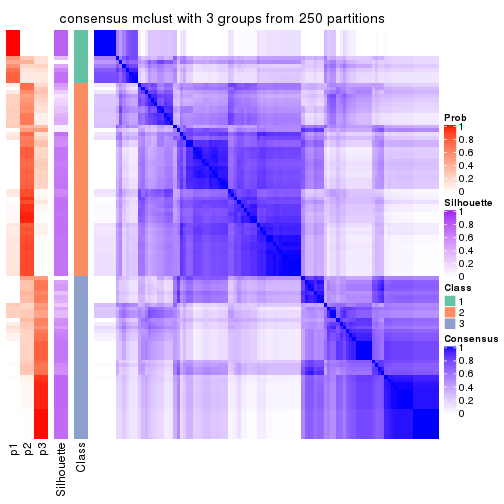
consensus_heatmap(res, k = 4)
consensus_heatmap(res, k = 5)
consensus_heatmap(res, k = 6)
Heatmaps for the membership of samples in all partitions to see how consistent they are:
membership_heatmap(res, k = 2)
membership_heatmap(res, k = 3)
membership_heatmap(res, k = 4)
membership_heatmap(res, k = 5)
membership_heatmap(res, k = 6)
As soon as we have had the classes for columns, we can look for signatures which are significantly different between classes which can be candidate marks for certain classes. Following are the heatmaps for signatures.
Signature heatmaps where rows are scaled:
get_signatures(res, k = 2)
get_signatures(res, k = 3)
get_signatures(res, k = 4)
get_signatures(res, k = 5)
get_signatures(res, k = 6)
Signature heatmaps where rows are not scaled:
get_signatures(res, k = 2, scale_rows = FALSE)
get_signatures(res, k = 3, scale_rows = FALSE)
get_signatures(res, k = 4, scale_rows = FALSE)

get_signatures(res, k = 5, scale_rows = FALSE)
get_signatures(res, k = 6, scale_rows = FALSE)
Compare the overlap of signatures from different k:
compare_signatures(res)
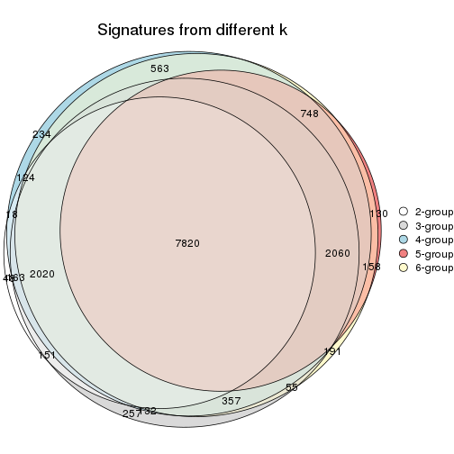
get_signature() returns a data frame invisibly. TO get the list of signatures, the function
call should be assigned to a variable explicitly. In following code, if plot argument is set
to FALSE, no heatmap is plotted while only the differential analysis is performed.
# code only for demonstration
tb = get_signature(res, k = ..., plot = FALSE)
An example of the output of tb is:
#> which_row fdr mean_1 mean_2 scaled_mean_1 scaled_mean_2 km
#> 1 38 0.042760348 8.373488 9.131774 -0.5533452 0.5164555 1
#> 2 40 0.018707592 7.106213 8.469186 -0.6173731 0.5762149 1
#> 3 55 0.019134737 10.221463 11.207825 -0.6159697 0.5749050 1
#> 4 59 0.006059896 5.921854 7.869574 -0.6899429 0.6439467 1
#> 5 60 0.018055526 8.928898 10.211722 -0.6204761 0.5791110 1
#> 6 98 0.009384629 15.714769 14.887706 0.6635654 -0.6193277 2
...
The columns in tb are:
which_row: row indices corresponding to the input matrix.fdr: FDR for the differential test. mean_x: The mean value in group x.scaled_mean_x: The mean value in group x after rows are scaled.km: Row groups if k-means clustering is applied to rows.UMAP plot which shows how samples are separated.
dimension_reduction(res, k = 2, method = "UMAP")
dimension_reduction(res, k = 3, method = "UMAP")
dimension_reduction(res, k = 4, method = "UMAP")
dimension_reduction(res, k = 5, method = "UMAP")
dimension_reduction(res, k = 6, method = "UMAP")
Following heatmap shows how subgroups are split when increasing k:
collect_classes(res)
If matrix rows can be associated to genes, consider to use GO_Enrichment(res,
...) to perform function enrichment for the signature genes.
The object with results only for a single top-value method and a single partition method can be extracted as:
res = res_list["SD", "NMF"]
# you can also extract it by
# res = res_list["SD:NMF"]
A summary of res and all the functions that can be applied to it:
res
#> A 'ConsensusPartition' object with k = 2, 3, 4, 5, 6.
#> On a matrix with 17532 rows and 108 columns.
#> Top rows (1000, 2000, 3000, 4000, 5000) are extracted by 'SD' method.
#> Subgroups are detected by 'NMF' method.
#> Performed in total 1250 partitions by row resampling.
#> Best k for subgroups seems to be 3.
#>
#> Following methods can be applied to this 'ConsensusPartition' object:
#> [1] "cola_report" "collect_classes" "collect_plots"
#> [4] "collect_stats" "colnames" "compare_signatures"
#> [7] "consensus_heatmap" "dimension_reduction" "functional_enrichment"
#> [10] "get_anno_col" "get_anno" "get_classes"
#> [13] "get_consensus" "get_matrix" "get_membership"
#> [16] "get_param" "get_signatures" "get_stats"
#> [19] "is_best_k" "is_stable_k" "membership_heatmap"
#> [22] "ncol" "nrow" "plot_ecdf"
#> [25] "rownames" "select_partition_number" "show"
#> [28] "suggest_best_k" "test_to_known_factors"
collect_plots() function collects all the plots made from res for all k (number of partitions)
into one single page to provide an easy and fast comparison between different k.
collect_plots(res)
The plots are:
k and the heatmap of
predicted classes for each k.k.k.k.All the plots in panels can be made by individual functions and they are plotted later in this section.
select_partition_number() produces several plots showing different
statistics for choosing “optimized” k. There are following statistics:
k;k, the area increased is defined as \(A_k - A_{k-1}\).The detailed explanations of these statistics can be found in the cola vignette.
Generally speaking, lower PAC score, higher mean silhouette score or higher
concordance corresponds to better partition. Rand index and Jaccard index
measure how similar the current partition is compared to partition with k-1.
If they are too similar, we won't accept k is better than k-1.
select_partition_number(res)
The numeric values for all these statistics can be obtained by get_stats().
get_stats(res)
#> k 1-PAC mean_silhouette concordance area_increased Rand Jaccard
#> 2 2 0.849 0.894 0.958 0.3792 0.651 0.651
#> 3 3 0.680 0.755 0.902 0.7050 0.635 0.467
#> 4 4 0.684 0.713 0.859 0.1586 0.805 0.511
#> 5 5 0.738 0.733 0.858 0.0688 0.785 0.353
#> 6 6 0.754 0.656 0.832 0.0386 0.916 0.629
suggest_best_k() suggests the best \(k\) based on these statistics. The rules are as follows:
NA.suggest_best_k(res)
#> [1] 3
Following shows the table of the partitions (You need to click the show/hide
code output link to see it). The membership matrix (columns with name p*)
is inferred by
clue::cl_consensus()
function with the SE method. Basically the value in the membership matrix
represents the probability to belong to a certain group. The finall class
label for an item is determined with the group with highest probability it
belongs to.
In get_classes() function, the entropy is calculated from the membership
matrix and the silhouette score is calculated from the consensus matrix.
cbind(get_classes(res, k = 2), get_membership(res, k = 2))
#> class entropy silhouette p1 p2
#> SRR1389909 2 0.0000 0.9505 0.000 1.000
#> SRR1454460 2 0.0000 0.9505 0.000 1.000
#> SRR1404623 2 0.0000 0.9505 0.000 1.000
#> SRR1092038 2 0.0000 0.9505 0.000 1.000
#> SRR1319793 2 0.0000 0.9505 0.000 1.000
#> SRR1396208 2 0.0000 0.9505 0.000 1.000
#> SRR1435797 2 0.0000 0.9505 0.000 1.000
#> SRR1078042 2 0.0000 0.9505 0.000 1.000
#> SRR1339699 2 0.0000 0.9505 0.000 1.000
#> SRR1446499 2 0.0000 0.9505 0.000 1.000
#> SRR1359428 2 0.0000 0.9505 0.000 1.000
#> SRR1071475 1 0.0000 0.9703 1.000 0.000
#> SRR1436781 2 0.0000 0.9505 0.000 1.000
#> SRR1101453 2 0.0000 0.9505 0.000 1.000
#> SRR1350891 2 0.0000 0.9505 0.000 1.000
#> SRR814293 2 0.9754 0.3270 0.408 0.592
#> SRR1471456 2 0.0000 0.9505 0.000 1.000
#> SRR1446874 2 0.8386 0.6391 0.268 0.732
#> SRR1362731 2 0.0000 0.9505 0.000 1.000
#> SRR1413705 2 0.0000 0.9505 0.000 1.000
#> SRR1434586 2 0.0000 0.9505 0.000 1.000
#> SRR1091164 2 0.0000 0.9505 0.000 1.000
#> SRR1340598 2 0.0000 0.9505 0.000 1.000
#> SRR1466469 1 0.0000 0.9703 1.000 0.000
#> SRR1099310 2 0.0000 0.9505 0.000 1.000
#> SRR814892 2 0.0000 0.9505 0.000 1.000
#> SRR1090698 2 0.0000 0.9505 0.000 1.000
#> SRR1089134 1 0.0000 0.9703 1.000 0.000
#> SRR1120276 2 0.0000 0.9505 0.000 1.000
#> SRR1430507 2 0.9977 0.1324 0.472 0.528
#> SRR1356078 2 0.0000 0.9505 0.000 1.000
#> SRR1447037 2 0.0000 0.9505 0.000 1.000
#> SRR1443544 1 0.5059 0.8651 0.888 0.112
#> SRR1081987 2 0.0000 0.9505 0.000 1.000
#> SRR1316513 2 0.0000 0.9505 0.000 1.000
#> SRR1478457 2 0.0000 0.9505 0.000 1.000
#> SRR1342849 2 0.3733 0.8861 0.072 0.928
#> SRR1073878 2 0.0000 0.9505 0.000 1.000
#> SRR1078735 1 0.0000 0.9703 1.000 0.000
#> SRR1093601 2 0.0000 0.9505 0.000 1.000
#> SRR816629 2 0.0000 0.9505 0.000 1.000
#> SRR1477754 2 0.0000 0.9505 0.000 1.000
#> SRR1454589 1 0.7299 0.7374 0.796 0.204
#> SRR1102780 2 0.9993 0.0891 0.484 0.516
#> SRR1347518 2 0.0000 0.9505 0.000 1.000
#> SRR1093747 1 0.0000 0.9703 1.000 0.000
#> SRR809209 2 0.0000 0.9505 0.000 1.000
#> SRR1082471 2 0.0000 0.9505 0.000 1.000
#> SRR1390349 2 0.0000 0.9505 0.000 1.000
#> SRR1410493 2 0.0000 0.9505 0.000 1.000
#> SRR1086656 2 0.0000 0.9505 0.000 1.000
#> SRR1469997 2 0.0000 0.9505 0.000 1.000
#> SRR1355512 2 0.0000 0.9505 0.000 1.000
#> SRR809897 2 0.0000 0.9505 0.000 1.000
#> SRR1436146 2 0.0000 0.9505 0.000 1.000
#> SRR1097148 1 0.0000 0.9703 1.000 0.000
#> SRR1429979 2 0.0000 0.9505 0.000 1.000
#> SRR1454607 1 0.0000 0.9703 1.000 0.000
#> SRR1420687 1 0.0000 0.9703 1.000 0.000
#> SRR1099669 1 0.0000 0.9703 1.000 0.000
#> SRR1360172 2 0.0000 0.9505 0.000 1.000
#> SRR1478131 2 0.1184 0.9377 0.016 0.984
#> SRR1453235 1 0.8144 0.6536 0.748 0.252
#> SRR1369107 2 0.9522 0.4075 0.372 0.628
#> SRR1096458 2 0.0000 0.9505 0.000 1.000
#> SRR1088856 2 0.0000 0.9505 0.000 1.000
#> SRR1432934 2 0.0000 0.9505 0.000 1.000
#> SRR821072 2 0.0672 0.9443 0.008 0.992
#> SRR1480896 1 0.0000 0.9703 1.000 0.000
#> SRR1403344 2 0.0000 0.9505 0.000 1.000
#> SRR1360850 1 0.0000 0.9703 1.000 0.000
#> SRR1451820 2 0.0000 0.9505 0.000 1.000
#> SRR1075360 2 0.0000 0.9505 0.000 1.000
#> SRR1413373 1 0.0000 0.9703 1.000 0.000
#> SRR1090928 2 0.0000 0.9505 0.000 1.000
#> SRR1097124 2 0.0000 0.9505 0.000 1.000
#> SRR1458745 1 0.0000 0.9703 1.000 0.000
#> SRR1078636 2 0.0000 0.9505 0.000 1.000
#> SRR1473754 2 0.8386 0.6298 0.268 0.732
#> SRR1085736 2 0.0000 0.9505 0.000 1.000
#> SRR1098807 1 0.0000 0.9703 1.000 0.000
#> SRR1341583 2 0.0000 0.9505 0.000 1.000
#> SRR1380869 2 0.0000 0.9505 0.000 1.000
#> SRR1430775 2 0.9998 0.0599 0.492 0.508
#> SRR1479573 2 0.0000 0.9505 0.000 1.000
#> SRR1082352 1 0.0000 0.9703 1.000 0.000
#> SRR1102005 2 0.0000 0.9505 0.000 1.000
#> SRR1408415 1 0.0000 0.9703 1.000 0.000
#> SRR1353537 1 0.0000 0.9703 1.000 0.000
#> SRR1458870 2 0.0000 0.9505 0.000 1.000
#> SRR1315495 2 0.0000 0.9505 0.000 1.000
#> SRR1481169 1 0.3274 0.9188 0.940 0.060
#> SRR1470273 1 0.0000 0.9703 1.000 0.000
#> SRR1312446 2 0.0000 0.9505 0.000 1.000
#> SRR1101859 2 0.0000 0.9505 0.000 1.000
#> SRR1384210 1 0.0000 0.9703 1.000 0.000
#> SRR1336244 2 0.0000 0.9505 0.000 1.000
#> SRR1374432 2 0.0000 0.9505 0.000 1.000
#> SRR1430023 2 0.1184 0.9379 0.016 0.984
#> SRR1487527 1 0.0000 0.9703 1.000 0.000
#> SRR1073389 2 0.9922 0.2123 0.448 0.552
#> SRR1433171 2 0.0000 0.9505 0.000 1.000
#> SRR1085565 2 0.8327 0.6340 0.264 0.736
#> SRR1355017 2 0.0000 0.9505 0.000 1.000
#> SRR1351641 2 0.0000 0.9505 0.000 1.000
#> SRR1398230 2 0.0000 0.9505 0.000 1.000
#> SRR1086212 2 0.4815 0.8533 0.104 0.896
#> SRR1431514 2 0.7056 0.7462 0.192 0.808
cbind(get_classes(res, k = 3), get_membership(res, k = 3))
#> class entropy silhouette p1 p2 p3
#> SRR1389909 2 0.0424 0.90015 0.000 0.992 0.008
#> SRR1454460 3 0.0000 0.83944 0.000 0.000 1.000
#> SRR1404623 3 0.6095 0.36930 0.000 0.392 0.608
#> SRR1092038 3 0.0000 0.83944 0.000 0.000 1.000
#> SRR1319793 2 0.0000 0.90537 0.000 1.000 0.000
#> SRR1396208 2 0.5905 0.38572 0.000 0.648 0.352
#> SRR1435797 3 0.2860 0.77529 0.084 0.004 0.912
#> SRR1078042 3 0.0000 0.83944 0.000 0.000 1.000
#> SRR1339699 3 0.0000 0.83944 0.000 0.000 1.000
#> SRR1446499 3 0.5733 0.50699 0.000 0.324 0.676
#> SRR1359428 2 0.0000 0.90537 0.000 1.000 0.000
#> SRR1071475 1 0.0000 0.90056 1.000 0.000 0.000
#> SRR1436781 2 0.0000 0.90537 0.000 1.000 0.000
#> SRR1101453 3 0.0000 0.83944 0.000 0.000 1.000
#> SRR1350891 2 0.0000 0.90537 0.000 1.000 0.000
#> SRR814293 2 0.6305 0.02785 0.484 0.516 0.000
#> SRR1471456 3 0.0237 0.83772 0.000 0.004 0.996
#> SRR1446874 3 0.0000 0.83944 0.000 0.000 1.000
#> SRR1362731 2 0.4750 0.67825 0.000 0.784 0.216
#> SRR1413705 2 0.0000 0.90537 0.000 1.000 0.000
#> SRR1434586 3 0.0000 0.83944 0.000 0.000 1.000
#> SRR1091164 2 0.0237 0.90298 0.000 0.996 0.004
#> SRR1340598 2 0.6302 0.00652 0.000 0.520 0.480
#> SRR1466469 1 0.0000 0.90056 1.000 0.000 0.000
#> SRR1099310 2 0.0000 0.90537 0.000 1.000 0.000
#> SRR814892 2 0.0000 0.90537 0.000 1.000 0.000
#> SRR1090698 3 0.0000 0.83944 0.000 0.000 1.000
#> SRR1089134 1 0.0000 0.90056 1.000 0.000 0.000
#> SRR1120276 3 0.0000 0.83944 0.000 0.000 1.000
#> SRR1430507 3 0.8981 0.42410 0.180 0.264 0.556
#> SRR1356078 3 0.0237 0.83785 0.000 0.004 0.996
#> SRR1447037 2 0.8521 0.44671 0.164 0.608 0.228
#> SRR1443544 3 0.3551 0.72735 0.132 0.000 0.868
#> SRR1081987 2 0.0237 0.90285 0.000 0.996 0.004
#> SRR1316513 2 0.0000 0.90537 0.000 1.000 0.000
#> SRR1478457 3 0.0829 0.83203 0.004 0.012 0.984
#> SRR1342849 3 0.9257 0.30899 0.196 0.284 0.520
#> SRR1073878 2 0.0000 0.90537 0.000 1.000 0.000
#> SRR1078735 3 0.5058 0.57381 0.244 0.000 0.756
#> SRR1093601 2 0.0000 0.90537 0.000 1.000 0.000
#> SRR816629 3 0.0000 0.83944 0.000 0.000 1.000
#> SRR1477754 3 0.6045 0.39682 0.000 0.380 0.620
#> SRR1454589 1 0.6235 0.23918 0.564 0.000 0.436
#> SRR1102780 1 0.6045 0.35189 0.620 0.380 0.000
#> SRR1347518 2 0.2711 0.83055 0.000 0.912 0.088
#> SRR1093747 1 0.4178 0.72219 0.828 0.000 0.172
#> SRR809209 3 0.7660 0.25602 0.048 0.404 0.548
#> SRR1082471 3 0.0424 0.83611 0.000 0.008 0.992
#> SRR1390349 3 0.6235 0.23178 0.000 0.436 0.564
#> SRR1410493 3 0.0747 0.83178 0.000 0.016 0.984
#> SRR1086656 2 0.4452 0.71140 0.000 0.808 0.192
#> SRR1469997 2 0.0000 0.90537 0.000 1.000 0.000
#> SRR1355512 3 0.5760 0.50029 0.000 0.328 0.672
#> SRR809897 3 0.0000 0.83944 0.000 0.000 1.000
#> SRR1436146 2 0.4002 0.75600 0.000 0.840 0.160
#> SRR1097148 1 0.0000 0.90056 1.000 0.000 0.000
#> SRR1429979 3 0.0000 0.83944 0.000 0.000 1.000
#> SRR1454607 1 0.0000 0.90056 1.000 0.000 0.000
#> SRR1420687 3 0.2796 0.77806 0.092 0.000 0.908
#> SRR1099669 1 0.0000 0.90056 1.000 0.000 0.000
#> SRR1360172 3 0.0000 0.83944 0.000 0.000 1.000
#> SRR1478131 2 0.0000 0.90537 0.000 1.000 0.000
#> SRR1453235 1 0.0237 0.89793 0.996 0.004 0.000
#> SRR1369107 3 0.0000 0.83944 0.000 0.000 1.000
#> SRR1096458 2 0.0000 0.90537 0.000 1.000 0.000
#> SRR1088856 3 0.0000 0.83944 0.000 0.000 1.000
#> SRR1432934 2 0.0000 0.90537 0.000 1.000 0.000
#> SRR821072 2 0.0000 0.90537 0.000 1.000 0.000
#> SRR1480896 3 0.6062 0.27549 0.384 0.000 0.616
#> SRR1403344 3 0.0000 0.83944 0.000 0.000 1.000
#> SRR1360850 1 0.0000 0.90056 1.000 0.000 0.000
#> SRR1451820 2 0.0000 0.90537 0.000 1.000 0.000
#> SRR1075360 3 0.0000 0.83944 0.000 0.000 1.000
#> SRR1413373 1 0.0000 0.90056 1.000 0.000 0.000
#> SRR1090928 2 0.4346 0.72531 0.000 0.816 0.184
#> SRR1097124 2 0.1529 0.87848 0.000 0.960 0.040
#> SRR1458745 1 0.0000 0.90056 1.000 0.000 0.000
#> SRR1078636 2 0.0000 0.90537 0.000 1.000 0.000
#> SRR1473754 2 0.5216 0.60803 0.260 0.740 0.000
#> SRR1085736 3 0.6192 0.29969 0.000 0.420 0.580
#> SRR1098807 1 0.0000 0.90056 1.000 0.000 0.000
#> SRR1341583 2 0.0000 0.90537 0.000 1.000 0.000
#> SRR1380869 2 0.0000 0.90537 0.000 1.000 0.000
#> SRR1430775 1 0.5968 0.39250 0.636 0.364 0.000
#> SRR1479573 3 0.0000 0.83944 0.000 0.000 1.000
#> SRR1082352 1 0.0000 0.90056 1.000 0.000 0.000
#> SRR1102005 3 0.0000 0.83944 0.000 0.000 1.000
#> SRR1408415 1 0.0000 0.90056 1.000 0.000 0.000
#> SRR1353537 1 0.0000 0.90056 1.000 0.000 0.000
#> SRR1458870 2 0.0000 0.90537 0.000 1.000 0.000
#> SRR1315495 3 0.6168 0.32035 0.000 0.412 0.588
#> SRR1481169 1 0.1860 0.86164 0.948 0.052 0.000
#> SRR1470273 1 0.0000 0.90056 1.000 0.000 0.000
#> SRR1312446 2 0.0000 0.90537 0.000 1.000 0.000
#> SRR1101859 2 0.0000 0.90537 0.000 1.000 0.000
#> SRR1384210 1 0.6192 0.28540 0.580 0.000 0.420
#> SRR1336244 2 0.0000 0.90537 0.000 1.000 0.000
#> SRR1374432 2 0.0000 0.90537 0.000 1.000 0.000
#> SRR1430023 3 0.0000 0.83944 0.000 0.000 1.000
#> SRR1487527 1 0.0000 0.90056 1.000 0.000 0.000
#> SRR1073389 3 0.6793 0.64584 0.128 0.128 0.744
#> SRR1433171 2 0.6095 0.29416 0.000 0.608 0.392
#> SRR1085565 3 0.0000 0.83944 0.000 0.000 1.000
#> SRR1355017 2 0.0000 0.90537 0.000 1.000 0.000
#> SRR1351641 2 0.0000 0.90537 0.000 1.000 0.000
#> SRR1398230 2 0.0000 0.90537 0.000 1.000 0.000
#> SRR1086212 2 0.0000 0.90537 0.000 1.000 0.000
#> SRR1431514 2 0.4702 0.68375 0.212 0.788 0.000
cbind(get_classes(res, k = 4), get_membership(res, k = 4))
#> class entropy silhouette p1 p2 p3 p4
#> SRR1389909 4 0.2149 0.7583 0.000 0.000 0.088 0.912
#> SRR1454460 3 0.0188 0.8251 0.000 0.004 0.996 0.000
#> SRR1404623 2 0.0000 0.7771 0.000 1.000 0.000 0.000
#> SRR1092038 3 0.0000 0.8253 0.000 0.000 1.000 0.000
#> SRR1319793 4 0.0707 0.8110 0.000 0.000 0.020 0.980
#> SRR1396208 4 0.4713 0.2157 0.000 0.000 0.360 0.640
#> SRR1435797 3 0.2131 0.8152 0.032 0.000 0.932 0.036
#> SRR1078042 3 0.1557 0.8159 0.000 0.000 0.944 0.056
#> SRR1339699 3 0.0469 0.8233 0.000 0.012 0.988 0.000
#> SRR1446499 2 0.0376 0.7774 0.000 0.992 0.004 0.004
#> SRR1359428 4 0.3649 0.7743 0.000 0.204 0.000 0.796
#> SRR1071475 1 0.0000 0.9148 1.000 0.000 0.000 0.000
#> SRR1436781 4 0.1867 0.8236 0.000 0.072 0.000 0.928
#> SRR1101453 3 0.0707 0.8199 0.000 0.020 0.980 0.000
#> SRR1350891 4 0.4543 0.6538 0.000 0.324 0.000 0.676
#> SRR814293 2 0.5723 0.1964 0.388 0.580 0.000 0.032
#> SRR1471456 3 0.1637 0.8147 0.000 0.000 0.940 0.060
#> SRR1446874 3 0.0469 0.8233 0.000 0.012 0.988 0.000
#> SRR1362731 2 0.1022 0.7598 0.000 0.968 0.000 0.032
#> SRR1413705 4 0.4356 0.6932 0.000 0.292 0.000 0.708
#> SRR1434586 2 0.4406 0.5984 0.000 0.700 0.300 0.000
#> SRR1091164 4 0.4746 0.5850 0.000 0.368 0.000 0.632
#> SRR1340598 3 0.4250 0.6620 0.000 0.000 0.724 0.276
#> SRR1466469 1 0.0000 0.9148 1.000 0.000 0.000 0.000
#> SRR1099310 4 0.0469 0.8137 0.000 0.000 0.012 0.988
#> SRR814892 4 0.0592 0.8125 0.000 0.000 0.016 0.984
#> SRR1090698 3 0.3356 0.6579 0.000 0.176 0.824 0.000
#> SRR1089134 1 0.0000 0.9148 1.000 0.000 0.000 0.000
#> SRR1120276 3 0.2149 0.7672 0.000 0.088 0.912 0.000
#> SRR1430507 2 0.0592 0.7767 0.016 0.984 0.000 0.000
#> SRR1356078 2 0.3486 0.7032 0.000 0.812 0.188 0.000
#> SRR1447037 4 0.4981 -0.1467 0.000 0.000 0.464 0.536
#> SRR1443544 3 0.0592 0.8219 0.000 0.016 0.984 0.000
#> SRR1081987 4 0.1867 0.7766 0.000 0.000 0.072 0.928
#> SRR1316513 4 0.0817 0.8097 0.000 0.000 0.024 0.976
#> SRR1478457 3 0.1940 0.8085 0.000 0.000 0.924 0.076
#> SRR1342849 3 0.3873 0.7109 0.000 0.000 0.772 0.228
#> SRR1073878 4 0.4830 0.5425 0.000 0.392 0.000 0.608
#> SRR1078735 3 0.0524 0.8238 0.008 0.004 0.988 0.000
#> SRR1093601 4 0.1118 0.8219 0.000 0.036 0.000 0.964
#> SRR816629 2 0.4697 0.5123 0.000 0.644 0.356 0.000
#> SRR1477754 2 0.0000 0.7771 0.000 1.000 0.000 0.000
#> SRR1454589 1 0.4820 0.5622 0.692 0.012 0.296 0.000
#> SRR1102780 1 0.4307 0.7375 0.808 0.144 0.000 0.048
#> SRR1347518 3 0.4855 0.4704 0.000 0.000 0.600 0.400
#> SRR1093747 1 0.4576 0.6186 0.728 0.260 0.012 0.000
#> SRR809209 3 0.5762 0.5296 0.040 0.000 0.608 0.352
#> SRR1082471 2 0.3311 0.7145 0.000 0.828 0.172 0.000
#> SRR1390349 3 0.4746 0.5334 0.000 0.000 0.632 0.368
#> SRR1410493 2 0.2589 0.7470 0.000 0.884 0.116 0.000
#> SRR1086656 3 0.4730 0.5362 0.000 0.000 0.636 0.364
#> SRR1469997 4 0.2760 0.8152 0.000 0.128 0.000 0.872
#> SRR1355512 2 0.0188 0.7779 0.000 0.996 0.004 0.000
#> SRR809897 3 0.3942 0.5748 0.000 0.236 0.764 0.000
#> SRR1436146 2 0.0921 0.7624 0.000 0.972 0.000 0.028
#> SRR1097148 1 0.0000 0.9148 1.000 0.000 0.000 0.000
#> SRR1429979 3 0.0592 0.8219 0.000 0.016 0.984 0.000
#> SRR1454607 1 0.0000 0.9148 1.000 0.000 0.000 0.000
#> SRR1420687 1 0.7169 0.1830 0.508 0.344 0.148 0.000
#> SRR1099669 1 0.2345 0.8381 0.900 0.100 0.000 0.000
#> SRR1360172 3 0.1302 0.8192 0.000 0.000 0.956 0.044
#> SRR1478131 4 0.1474 0.8232 0.000 0.052 0.000 0.948
#> SRR1453235 1 0.0000 0.9148 1.000 0.000 0.000 0.000
#> SRR1369107 3 0.0000 0.8253 0.000 0.000 1.000 0.000
#> SRR1096458 4 0.0707 0.8110 0.000 0.000 0.020 0.980
#> SRR1088856 3 0.0188 0.8251 0.000 0.004 0.996 0.000
#> SRR1432934 4 0.2973 0.8093 0.000 0.144 0.000 0.856
#> SRR821072 4 0.0336 0.8147 0.000 0.000 0.008 0.992
#> SRR1480896 3 0.5186 0.3767 0.344 0.016 0.640 0.000
#> SRR1403344 3 0.1389 0.8035 0.000 0.048 0.952 0.000
#> SRR1360850 1 0.0000 0.9148 1.000 0.000 0.000 0.000
#> SRR1451820 4 0.2345 0.8213 0.000 0.100 0.000 0.900
#> SRR1075360 2 0.4543 0.5638 0.000 0.676 0.324 0.000
#> SRR1413373 1 0.0000 0.9148 1.000 0.000 0.000 0.000
#> SRR1090928 2 0.2345 0.6956 0.000 0.900 0.000 0.100
#> SRR1097124 2 0.2867 0.6911 0.012 0.884 0.000 0.104
#> SRR1458745 1 0.0000 0.9148 1.000 0.000 0.000 0.000
#> SRR1078636 4 0.2469 0.8208 0.000 0.108 0.000 0.892
#> SRR1473754 4 0.5990 0.4475 0.336 0.056 0.000 0.608
#> SRR1085736 2 0.0336 0.7738 0.000 0.992 0.000 0.008
#> SRR1098807 1 0.0000 0.9148 1.000 0.000 0.000 0.000
#> SRR1341583 4 0.4250 0.7096 0.000 0.276 0.000 0.724
#> SRR1380869 4 0.0592 0.8125 0.000 0.000 0.016 0.984
#> SRR1430775 1 0.4290 0.6772 0.772 0.016 0.000 0.212
#> SRR1479573 2 0.4331 0.6107 0.000 0.712 0.288 0.000
#> SRR1082352 1 0.0000 0.9148 1.000 0.000 0.000 0.000
#> SRR1102005 2 0.4454 0.5858 0.000 0.692 0.308 0.000
#> SRR1408415 1 0.0000 0.9148 1.000 0.000 0.000 0.000
#> SRR1353537 1 0.0000 0.9148 1.000 0.000 0.000 0.000
#> SRR1458870 4 0.2530 0.8200 0.000 0.112 0.000 0.888
#> SRR1315495 2 0.0336 0.7740 0.000 0.992 0.000 0.008
#> SRR1481169 1 0.1022 0.8912 0.968 0.000 0.000 0.032
#> SRR1470273 1 0.0000 0.9148 1.000 0.000 0.000 0.000
#> SRR1312446 2 0.4776 0.0945 0.000 0.624 0.000 0.376
#> SRR1101859 4 0.3610 0.7787 0.000 0.200 0.000 0.800
#> SRR1384210 3 0.2345 0.7818 0.100 0.000 0.900 0.000
#> SRR1336244 4 0.3266 0.7988 0.000 0.168 0.000 0.832
#> SRR1374432 4 0.0707 0.8110 0.000 0.000 0.020 0.980
#> SRR1430023 2 0.4981 0.2514 0.000 0.536 0.464 0.000
#> SRR1487527 1 0.0000 0.9148 1.000 0.000 0.000 0.000
#> SRR1073389 2 0.2466 0.7642 0.028 0.916 0.056 0.000
#> SRR1433171 3 0.7851 -0.1183 0.000 0.280 0.396 0.324
#> SRR1085565 3 0.0592 0.8219 0.000 0.016 0.984 0.000
#> SRR1355017 4 0.4500 0.6624 0.000 0.316 0.000 0.684
#> SRR1351641 4 0.2921 0.8112 0.000 0.140 0.000 0.860
#> SRR1398230 4 0.3726 0.7694 0.000 0.212 0.000 0.788
#> SRR1086212 4 0.0000 0.8162 0.000 0.000 0.000 1.000
#> SRR1431514 2 0.7714 0.0152 0.376 0.400 0.000 0.224
cbind(get_classes(res, k = 5), get_membership(res, k = 5))
#> class entropy silhouette p1 p2 p3 p4 p5
#> SRR1389909 4 0.0000 0.8439 0.000 0.000 0.000 1.000 0.000
#> SRR1454460 3 0.0162 0.9186 0.000 0.000 0.996 0.004 0.000
#> SRR1404623 2 0.4150 0.3471 0.000 0.612 0.000 0.000 0.388
#> SRR1092038 3 0.0162 0.9186 0.000 0.000 0.996 0.004 0.000
#> SRR1319793 4 0.3274 0.6195 0.000 0.220 0.000 0.780 0.000
#> SRR1396208 4 0.0290 0.8439 0.000 0.008 0.000 0.992 0.000
#> SRR1435797 4 0.5726 0.5288 0.004 0.000 0.168 0.640 0.188
#> SRR1078042 3 0.2230 0.8573 0.000 0.000 0.884 0.116 0.000
#> SRR1339699 3 0.3197 0.8239 0.000 0.000 0.836 0.140 0.024
#> SRR1446499 5 0.1851 0.7967 0.000 0.088 0.000 0.000 0.912
#> SRR1359428 2 0.2074 0.7585 0.000 0.896 0.000 0.104 0.000
#> SRR1071475 1 0.0000 0.9149 1.000 0.000 0.000 0.000 0.000
#> SRR1436781 2 0.4473 0.4661 0.000 0.580 0.000 0.412 0.008
#> SRR1101453 3 0.0162 0.9182 0.000 0.000 0.996 0.000 0.004
#> SRR1350891 2 0.2359 0.7727 0.000 0.904 0.000 0.060 0.036
#> SRR814293 2 0.4314 0.3598 0.312 0.676 0.004 0.004 0.004
#> SRR1471456 3 0.1121 0.9077 0.000 0.000 0.956 0.044 0.000
#> SRR1446874 3 0.0992 0.9145 0.000 0.000 0.968 0.024 0.008
#> SRR1362731 2 0.1851 0.7602 0.000 0.912 0.000 0.000 0.088
#> SRR1413705 2 0.2344 0.7723 0.000 0.904 0.000 0.064 0.032
#> SRR1434586 5 0.2046 0.8162 0.000 0.016 0.068 0.000 0.916
#> SRR1091164 2 0.1893 0.7728 0.000 0.928 0.000 0.024 0.048
#> SRR1340598 4 0.2068 0.8148 0.000 0.004 0.092 0.904 0.000
#> SRR1466469 1 0.0000 0.9149 1.000 0.000 0.000 0.000 0.000
#> SRR1099310 4 0.1270 0.8261 0.000 0.052 0.000 0.948 0.000
#> SRR814892 4 0.1043 0.8350 0.000 0.040 0.000 0.960 0.000
#> SRR1090698 5 0.1638 0.8151 0.000 0.000 0.064 0.004 0.932
#> SRR1089134 1 0.0000 0.9149 1.000 0.000 0.000 0.000 0.000
#> SRR1120276 3 0.0162 0.9182 0.000 0.000 0.996 0.000 0.004
#> SRR1430507 5 0.1124 0.8244 0.004 0.036 0.000 0.000 0.960
#> SRR1356078 5 0.0451 0.8294 0.000 0.004 0.008 0.000 0.988
#> SRR1447037 4 0.0162 0.8441 0.000 0.000 0.000 0.996 0.004
#> SRR1443544 3 0.4780 0.7328 0.060 0.000 0.740 0.184 0.016
#> SRR1081987 4 0.1662 0.8275 0.000 0.056 0.004 0.936 0.004
#> SRR1316513 4 0.1704 0.8261 0.000 0.068 0.004 0.928 0.000
#> SRR1478457 4 0.4953 0.5882 0.000 0.000 0.088 0.696 0.216
#> SRR1342849 4 0.3966 0.6903 0.000 0.036 0.176 0.784 0.004
#> SRR1073878 2 0.2426 0.7725 0.000 0.900 0.000 0.036 0.064
#> SRR1078735 3 0.3957 0.6210 0.280 0.000 0.712 0.008 0.000
#> SRR1093601 2 0.4350 0.4790 0.000 0.588 0.000 0.408 0.004
#> SRR816629 3 0.2230 0.8433 0.000 0.000 0.884 0.000 0.116
#> SRR1477754 5 0.3109 0.6878 0.000 0.200 0.000 0.000 0.800
#> SRR1454589 1 0.5685 0.0795 0.536 0.008 0.032 0.016 0.408
#> SRR1102780 1 0.3205 0.7487 0.816 0.176 0.000 0.004 0.004
#> SRR1347518 4 0.1484 0.8357 0.000 0.008 0.048 0.944 0.000
#> SRR1093747 5 0.2929 0.7267 0.180 0.000 0.000 0.000 0.820
#> SRR809209 4 0.1095 0.8438 0.008 0.000 0.012 0.968 0.012
#> SRR1082471 5 0.0451 0.8291 0.000 0.008 0.004 0.000 0.988
#> SRR1390349 4 0.2727 0.7772 0.000 0.000 0.016 0.868 0.116
#> SRR1410493 5 0.0290 0.8282 0.000 0.008 0.000 0.000 0.992
#> SRR1086656 4 0.5635 0.0580 0.000 0.076 0.428 0.496 0.000
#> SRR1469997 2 0.2124 0.7554 0.000 0.900 0.000 0.096 0.004
#> SRR1355512 5 0.2605 0.7471 0.000 0.148 0.000 0.000 0.852
#> SRR809897 5 0.2068 0.7948 0.000 0.000 0.092 0.004 0.904
#> SRR1436146 2 0.2424 0.7392 0.000 0.868 0.000 0.000 0.132
#> SRR1097148 1 0.0000 0.9149 1.000 0.000 0.000 0.000 0.000
#> SRR1429979 3 0.0162 0.9182 0.000 0.000 0.996 0.000 0.004
#> SRR1454607 1 0.0000 0.9149 1.000 0.000 0.000 0.000 0.000
#> SRR1420687 5 0.4151 0.5069 0.344 0.000 0.004 0.000 0.652
#> SRR1099669 5 0.4594 0.4403 0.364 0.000 0.004 0.012 0.620
#> SRR1360172 3 0.0162 0.9186 0.000 0.000 0.996 0.004 0.000
#> SRR1478131 2 0.4074 0.5515 0.000 0.636 0.000 0.364 0.000
#> SRR1453235 5 0.5846 0.2921 0.388 0.032 0.004 0.032 0.544
#> SRR1369107 3 0.1732 0.8874 0.000 0.000 0.920 0.080 0.000
#> SRR1096458 4 0.0794 0.8392 0.000 0.028 0.000 0.972 0.000
#> SRR1088856 3 0.0162 0.9186 0.000 0.000 0.996 0.004 0.000
#> SRR1432934 2 0.1638 0.7648 0.000 0.932 0.000 0.064 0.004
#> SRR821072 4 0.0794 0.8392 0.000 0.028 0.000 0.972 0.000
#> SRR1480896 5 0.3794 0.7607 0.112 0.000 0.024 0.036 0.828
#> SRR1403344 5 0.6561 0.0180 0.000 0.000 0.204 0.372 0.424
#> SRR1360850 1 0.0162 0.9128 0.996 0.000 0.000 0.000 0.004
#> SRR1451820 2 0.4009 0.6216 0.000 0.684 0.000 0.312 0.004
#> SRR1075360 5 0.1197 0.8213 0.000 0.000 0.048 0.000 0.952
#> SRR1413373 1 0.1430 0.8885 0.944 0.052 0.000 0.000 0.004
#> SRR1090928 2 0.2020 0.7571 0.000 0.900 0.000 0.000 0.100
#> SRR1097124 2 0.1277 0.7584 0.004 0.960 0.004 0.004 0.028
#> SRR1458745 1 0.0794 0.9039 0.972 0.028 0.000 0.000 0.000
#> SRR1078636 2 0.4746 0.5206 0.000 0.600 0.000 0.376 0.024
#> SRR1473754 2 0.6334 0.2814 0.388 0.452 0.000 0.160 0.000
#> SRR1085736 5 0.1341 0.8168 0.000 0.056 0.000 0.000 0.944
#> SRR1098807 1 0.0000 0.9149 1.000 0.000 0.000 0.000 0.000
#> SRR1341583 2 0.1285 0.7590 0.000 0.956 0.004 0.036 0.004
#> SRR1380869 4 0.0290 0.8439 0.000 0.008 0.000 0.992 0.000
#> SRR1430775 1 0.4672 0.3341 0.568 0.420 0.004 0.004 0.004
#> SRR1479573 5 0.1408 0.8263 0.000 0.008 0.044 0.000 0.948
#> SRR1082352 1 0.0000 0.9149 1.000 0.000 0.000 0.000 0.000
#> SRR1102005 5 0.0865 0.8296 0.000 0.004 0.024 0.000 0.972
#> SRR1408415 1 0.2024 0.8748 0.920 0.068 0.004 0.004 0.004
#> SRR1353537 1 0.0000 0.9149 1.000 0.000 0.000 0.000 0.000
#> SRR1458870 2 0.4585 0.5623 0.000 0.628 0.000 0.352 0.020
#> SRR1315495 2 0.4498 0.6683 0.000 0.756 0.132 0.000 0.112
#> SRR1481169 1 0.1991 0.8722 0.916 0.076 0.004 0.004 0.000
#> SRR1470273 1 0.0000 0.9149 1.000 0.000 0.000 0.000 0.000
#> SRR1312446 2 0.1671 0.7666 0.000 0.924 0.000 0.000 0.076
#> SRR1101859 5 0.6465 0.1954 0.000 0.220 0.000 0.288 0.492
#> SRR1384210 3 0.1965 0.8686 0.096 0.000 0.904 0.000 0.000
#> SRR1336244 2 0.4114 0.6821 0.000 0.732 0.000 0.244 0.024
#> SRR1374432 4 0.3177 0.6402 0.000 0.208 0.000 0.792 0.000
#> SRR1430023 3 0.2674 0.8174 0.000 0.140 0.856 0.000 0.004
#> SRR1487527 1 0.0000 0.9149 1.000 0.000 0.000 0.000 0.000
#> SRR1073389 5 0.0451 0.8287 0.008 0.004 0.000 0.000 0.988
#> SRR1433171 2 0.4552 0.0439 0.000 0.524 0.468 0.000 0.008
#> SRR1085565 3 0.0162 0.9182 0.000 0.000 0.996 0.000 0.004
#> SRR1355017 2 0.0324 0.7632 0.000 0.992 0.004 0.000 0.004
#> SRR1351641 2 0.4227 0.6417 0.000 0.692 0.000 0.292 0.016
#> SRR1398230 2 0.3194 0.7458 0.000 0.832 0.000 0.148 0.020
#> SRR1086212 4 0.3242 0.6239 0.000 0.216 0.000 0.784 0.000
#> SRR1431514 2 0.4368 0.6666 0.144 0.772 0.000 0.004 0.080
cbind(get_classes(res, k = 6), get_membership(res, k = 6))
#> class entropy silhouette p1 p2 p3 p4 p5 p6
#> SRR1389909 4 0.0458 0.73438 0.000 0.000 0.000 0.984 0.000 0.016
#> SRR1454460 3 0.0000 0.88564 0.000 0.000 1.000 0.000 0.000 0.000
#> SRR1404623 2 0.2793 0.57605 0.000 0.800 0.000 0.000 0.200 0.000
#> SRR1092038 3 0.0000 0.88564 0.000 0.000 1.000 0.000 0.000 0.000
#> SRR1319793 4 0.1806 0.71498 0.000 0.088 0.000 0.908 0.000 0.004
#> SRR1396208 4 0.0458 0.73143 0.000 0.000 0.000 0.984 0.000 0.016
#> SRR1435797 4 0.5660 0.07261 0.000 0.004 0.020 0.468 0.432 0.076
#> SRR1078042 3 0.1556 0.84232 0.000 0.000 0.920 0.080 0.000 0.000
#> SRR1339699 3 0.2763 0.81353 0.000 0.000 0.868 0.088 0.036 0.008
#> SRR1446499 5 0.2809 0.74712 0.000 0.168 0.000 0.004 0.824 0.004
#> SRR1359428 6 0.4184 0.09307 0.000 0.488 0.000 0.012 0.000 0.500
#> SRR1071475 1 0.0000 0.92089 1.000 0.000 0.000 0.000 0.000 0.000
#> SRR1436781 4 0.4535 -0.12196 0.000 0.480 0.000 0.488 0.000 0.032
#> SRR1101453 3 0.0000 0.88564 0.000 0.000 1.000 0.000 0.000 0.000
#> SRR1350891 2 0.0547 0.71888 0.000 0.980 0.000 0.020 0.000 0.000
#> SRR814293 2 0.5196 -0.19424 0.092 0.504 0.000 0.000 0.000 0.404
#> SRR1471456 3 0.0790 0.87562 0.000 0.000 0.968 0.032 0.000 0.000
#> SRR1446874 3 0.0717 0.87880 0.000 0.000 0.976 0.000 0.016 0.008
#> SRR1362731 2 0.0547 0.71448 0.000 0.980 0.000 0.000 0.020 0.000
#> SRR1413705 2 0.0458 0.71825 0.000 0.984 0.000 0.016 0.000 0.000
#> SRR1434586 5 0.0964 0.85255 0.000 0.016 0.012 0.000 0.968 0.004
#> SRR1091164 2 0.0260 0.71709 0.000 0.992 0.000 0.008 0.000 0.000
#> SRR1340598 4 0.0405 0.73388 0.000 0.000 0.008 0.988 0.000 0.004
#> SRR1466469 1 0.0000 0.92089 1.000 0.000 0.000 0.000 0.000 0.000
#> SRR1099310 4 0.2748 0.70016 0.000 0.024 0.000 0.848 0.000 0.128
#> SRR814892 4 0.0777 0.73479 0.000 0.024 0.000 0.972 0.000 0.004
#> SRR1090698 5 0.1067 0.85199 0.000 0.004 0.004 0.024 0.964 0.004
#> SRR1089134 1 0.0146 0.91776 0.996 0.000 0.000 0.000 0.000 0.004
#> SRR1120276 3 0.0146 0.88462 0.000 0.000 0.996 0.000 0.004 0.000
#> SRR1430507 5 0.1010 0.85044 0.000 0.036 0.000 0.000 0.960 0.004
#> SRR1356078 5 0.0603 0.85218 0.000 0.004 0.000 0.000 0.980 0.016
#> SRR1447037 4 0.1958 0.68999 0.000 0.004 0.000 0.896 0.000 0.100
#> SRR1443544 3 0.4629 0.24593 0.436 0.000 0.524 0.040 0.000 0.000
#> SRR1081987 6 0.3076 0.59046 0.000 0.000 0.000 0.240 0.000 0.760
#> SRR1316513 6 0.2980 0.62647 0.000 0.008 0.000 0.192 0.000 0.800
#> SRR1478457 4 0.4929 0.29279 0.000 0.008 0.000 0.564 0.376 0.052
#> SRR1342849 6 0.4455 0.52931 0.000 0.000 0.048 0.264 0.008 0.680
#> SRR1073878 2 0.0622 0.71827 0.000 0.980 0.000 0.008 0.012 0.000
#> SRR1078735 3 0.4136 0.32027 0.428 0.000 0.560 0.000 0.000 0.012
#> SRR1093601 4 0.4850 -0.04999 0.000 0.448 0.000 0.496 0.000 0.056
#> SRR816629 3 0.2110 0.82356 0.000 0.004 0.900 0.000 0.084 0.012
#> SRR1477754 5 0.3684 0.54150 0.000 0.332 0.000 0.000 0.664 0.004
#> SRR1454589 5 0.6053 0.52243 0.216 0.008 0.012 0.012 0.588 0.164
#> SRR1102780 1 0.5902 0.50077 0.616 0.068 0.000 0.020 0.052 0.244
#> SRR1347518 4 0.1625 0.70843 0.000 0.000 0.012 0.928 0.000 0.060
#> SRR1093747 5 0.3961 0.73766 0.148 0.004 0.000 0.000 0.768 0.080
#> SRR809209 4 0.0146 0.73427 0.000 0.000 0.000 0.996 0.000 0.004
#> SRR1082471 5 0.1806 0.83307 0.000 0.004 0.000 0.000 0.908 0.088
#> SRR1390349 4 0.5032 0.43996 0.000 0.008 0.000 0.644 0.244 0.104
#> SRR1410493 5 0.1588 0.83932 0.000 0.004 0.000 0.000 0.924 0.072
#> SRR1086656 6 0.5759 0.60080 0.000 0.060 0.176 0.132 0.000 0.632
#> SRR1469997 2 0.3665 0.50850 0.000 0.728 0.000 0.020 0.000 0.252
#> SRR1355512 5 0.3770 0.69873 0.000 0.212 0.000 0.004 0.752 0.032
#> SRR809897 5 0.0632 0.85196 0.000 0.000 0.000 0.000 0.976 0.024
#> SRR1436146 2 0.1196 0.70965 0.000 0.952 0.000 0.000 0.040 0.008
#> SRR1097148 1 0.0000 0.92089 1.000 0.000 0.000 0.000 0.000 0.000
#> SRR1429979 3 0.0000 0.88564 0.000 0.000 1.000 0.000 0.000 0.000
#> SRR1454607 1 0.0000 0.92089 1.000 0.000 0.000 0.000 0.000 0.000
#> SRR1420687 5 0.3954 0.47407 0.372 0.004 0.000 0.000 0.620 0.004
#> SRR1099669 5 0.4634 0.66509 0.076 0.008 0.000 0.004 0.704 0.208
#> SRR1360172 3 0.0000 0.88564 0.000 0.000 1.000 0.000 0.000 0.000
#> SRR1478131 2 0.5350 0.12688 0.000 0.476 0.000 0.416 0.000 0.108
#> SRR1453235 6 0.4399 0.42706 0.056 0.000 0.000 0.004 0.252 0.688
#> SRR1369107 3 0.0972 0.87472 0.000 0.000 0.964 0.028 0.000 0.008
#> SRR1096458 4 0.1594 0.73064 0.000 0.016 0.000 0.932 0.000 0.052
#> SRR1088856 3 0.0000 0.88564 0.000 0.000 1.000 0.000 0.000 0.000
#> SRR1432934 2 0.2474 0.68316 0.000 0.880 0.000 0.040 0.000 0.080
#> SRR821072 4 0.2266 0.71144 0.000 0.012 0.000 0.880 0.000 0.108
#> SRR1480896 5 0.3136 0.80432 0.020 0.008 0.000 0.020 0.852 0.100
#> SRR1403344 4 0.5763 0.30639 0.000 0.000 0.156 0.520 0.316 0.008
#> SRR1360850 1 0.0146 0.91812 0.996 0.004 0.000 0.000 0.000 0.000
#> SRR1451820 2 0.3650 0.56735 0.000 0.708 0.000 0.280 0.000 0.012
#> SRR1075360 5 0.0858 0.85090 0.000 0.004 0.000 0.000 0.968 0.028
#> SRR1413373 1 0.2178 0.78820 0.868 0.000 0.000 0.000 0.000 0.132
#> SRR1090928 2 0.0865 0.71173 0.000 0.964 0.000 0.000 0.036 0.000
#> SRR1097124 6 0.3851 0.27866 0.000 0.460 0.000 0.000 0.000 0.540
#> SRR1458745 1 0.0000 0.92089 1.000 0.000 0.000 0.000 0.000 0.000
#> SRR1078636 2 0.3899 0.42472 0.000 0.628 0.000 0.364 0.008 0.000
#> SRR1473754 1 0.6406 0.25926 0.520 0.288 0.000 0.104 0.000 0.088
#> SRR1085736 5 0.1398 0.84520 0.000 0.052 0.000 0.000 0.940 0.008
#> SRR1098807 1 0.0000 0.92089 1.000 0.000 0.000 0.000 0.000 0.000
#> SRR1341583 6 0.3011 0.62248 0.000 0.192 0.000 0.004 0.004 0.800
#> SRR1380869 4 0.0777 0.73596 0.000 0.004 0.000 0.972 0.000 0.024
#> SRR1430775 6 0.4300 0.61692 0.080 0.208 0.000 0.000 0.000 0.712
#> SRR1479573 5 0.1929 0.83529 0.000 0.008 0.048 0.004 0.924 0.016
#> SRR1082352 1 0.0000 0.92089 1.000 0.000 0.000 0.000 0.000 0.000
#> SRR1102005 5 0.1067 0.85041 0.000 0.004 0.004 0.004 0.964 0.024
#> SRR1408415 6 0.3023 0.57111 0.232 0.000 0.000 0.000 0.000 0.768
#> SRR1353537 1 0.0000 0.92089 1.000 0.000 0.000 0.000 0.000 0.000
#> SRR1458870 2 0.3789 0.49862 0.000 0.668 0.000 0.324 0.004 0.004
#> SRR1315495 2 0.2928 0.65779 0.000 0.856 0.056 0.000 0.084 0.004
#> SRR1481169 6 0.4476 0.41797 0.308 0.052 0.000 0.000 0.000 0.640
#> SRR1470273 1 0.0000 0.92089 1.000 0.000 0.000 0.000 0.000 0.000
#> SRR1312446 2 0.0363 0.71609 0.000 0.988 0.000 0.000 0.012 0.000
#> SRR1101859 4 0.6913 0.07938 0.000 0.332 0.000 0.416 0.168 0.084
#> SRR1384210 3 0.2454 0.77457 0.160 0.000 0.840 0.000 0.000 0.000
#> SRR1336244 2 0.3490 0.58752 0.000 0.724 0.000 0.268 0.008 0.000
#> SRR1374432 4 0.1806 0.71431 0.000 0.088 0.000 0.908 0.000 0.004
#> SRR1430023 3 0.3368 0.64079 0.000 0.012 0.756 0.000 0.000 0.232
#> SRR1487527 1 0.0000 0.92089 1.000 0.000 0.000 0.000 0.000 0.000
#> SRR1073389 5 0.0405 0.85304 0.000 0.008 0.000 0.000 0.988 0.004
#> SRR1433171 2 0.4264 -0.00386 0.000 0.492 0.492 0.000 0.000 0.016
#> SRR1085565 3 0.0000 0.88564 0.000 0.000 1.000 0.000 0.000 0.000
#> SRR1355017 2 0.2854 0.53020 0.000 0.792 0.000 0.000 0.000 0.208
#> SRR1351641 2 0.3464 0.53725 0.000 0.688 0.000 0.312 0.000 0.000
#> SRR1398230 2 0.2092 0.69262 0.000 0.876 0.000 0.124 0.000 0.000
#> SRR1086212 4 0.3847 0.65863 0.004 0.080 0.000 0.780 0.000 0.136
#> SRR1431514 2 0.4928 0.32681 0.040 0.640 0.000 0.000 0.032 0.288
Heatmaps for the consensus matrix. It visualizes the probability of two samples to be in a same group.
consensus_heatmap(res, k = 2)
consensus_heatmap(res, k = 3)
consensus_heatmap(res, k = 4)
consensus_heatmap(res, k = 5)
consensus_heatmap(res, k = 6)
Heatmaps for the membership of samples in all partitions to see how consistent they are:
membership_heatmap(res, k = 2)
membership_heatmap(res, k = 3)

membership_heatmap(res, k = 4)
membership_heatmap(res, k = 5)
membership_heatmap(res, k = 6)
As soon as we have had the classes for columns, we can look for signatures which are significantly different between classes which can be candidate marks for certain classes. Following are the heatmaps for signatures.
Signature heatmaps where rows are scaled:
get_signatures(res, k = 2)
get_signatures(res, k = 3)

get_signatures(res, k = 4)
get_signatures(res, k = 5)
get_signatures(res, k = 6)
Signature heatmaps where rows are not scaled:
get_signatures(res, k = 2, scale_rows = FALSE)
get_signatures(res, k = 3, scale_rows = FALSE)
get_signatures(res, k = 4, scale_rows = FALSE)
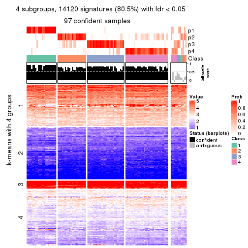
get_signatures(res, k = 5, scale_rows = FALSE)

get_signatures(res, k = 6, scale_rows = FALSE)
Compare the overlap of signatures from different k:
compare_signatures(res)
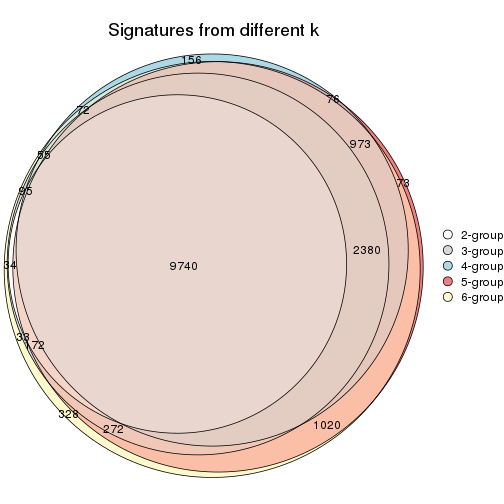
get_signature() returns a data frame invisibly. TO get the list of signatures, the function
call should be assigned to a variable explicitly. In following code, if plot argument is set
to FALSE, no heatmap is plotted while only the differential analysis is performed.
# code only for demonstration
tb = get_signature(res, k = ..., plot = FALSE)
An example of the output of tb is:
#> which_row fdr mean_1 mean_2 scaled_mean_1 scaled_mean_2 km
#> 1 38 0.042760348 8.373488 9.131774 -0.5533452 0.5164555 1
#> 2 40 0.018707592 7.106213 8.469186 -0.6173731 0.5762149 1
#> 3 55 0.019134737 10.221463 11.207825 -0.6159697 0.5749050 1
#> 4 59 0.006059896 5.921854 7.869574 -0.6899429 0.6439467 1
#> 5 60 0.018055526 8.928898 10.211722 -0.6204761 0.5791110 1
#> 6 98 0.009384629 15.714769 14.887706 0.6635654 -0.6193277 2
...
The columns in tb are:
which_row: row indices corresponding to the input matrix.fdr: FDR for the differential test. mean_x: The mean value in group x.scaled_mean_x: The mean value in group x after rows are scaled.km: Row groups if k-means clustering is applied to rows.UMAP plot which shows how samples are separated.
dimension_reduction(res, k = 2, method = "UMAP")
dimension_reduction(res, k = 3, method = "UMAP")
dimension_reduction(res, k = 4, method = "UMAP")
dimension_reduction(res, k = 5, method = "UMAP")
dimension_reduction(res, k = 6, method = "UMAP")
Following heatmap shows how subgroups are split when increasing k:
collect_classes(res)
If matrix rows can be associated to genes, consider to use GO_Enrichment(res,
...) to perform function enrichment for the signature genes.
The object with results only for a single top-value method and a single partition method can be extracted as:
res = res_list["CV", "hclust"]
# you can also extract it by
# res = res_list["CV:hclust"]
A summary of res and all the functions that can be applied to it:
res
#> A 'ConsensusPartition' object with k = 2, 3, 4, 5, 6.
#> On a matrix with 17532 rows and 108 columns.
#> Top rows (1000, 2000, 3000, 4000, 5000) are extracted by 'CV' method.
#> Subgroups are detected by 'hclust' method.
#> Performed in total 1250 partitions by row resampling.
#> Best k for subgroups seems to be 3.
#>
#> Following methods can be applied to this 'ConsensusPartition' object:
#> [1] "cola_report" "collect_classes" "collect_plots"
#> [4] "collect_stats" "colnames" "compare_signatures"
#> [7] "consensus_heatmap" "dimension_reduction" "functional_enrichment"
#> [10] "get_anno_col" "get_anno" "get_classes"
#> [13] "get_consensus" "get_matrix" "get_membership"
#> [16] "get_param" "get_signatures" "get_stats"
#> [19] "is_best_k" "is_stable_k" "membership_heatmap"
#> [22] "ncol" "nrow" "plot_ecdf"
#> [25] "rownames" "select_partition_number" "show"
#> [28] "suggest_best_k" "test_to_known_factors"
collect_plots() function collects all the plots made from res for all k (number of partitions)
into one single page to provide an easy and fast comparison between different k.
collect_plots(res)
The plots are:
k and the heatmap of
predicted classes for each k.k.k.k.All the plots in panels can be made by individual functions and they are plotted later in this section.
select_partition_number() produces several plots showing different
statistics for choosing “optimized” k. There are following statistics:
k;k, the area increased is defined as \(A_k - A_{k-1}\).The detailed explanations of these statistics can be found in the cola vignette.
Generally speaking, lower PAC score, higher mean silhouette score or higher
concordance corresponds to better partition. Rand index and Jaccard index
measure how similar the current partition is compared to partition with k-1.
If they are too similar, we won't accept k is better than k-1.
select_partition_number(res)
The numeric values for all these statistics can be obtained by get_stats().
get_stats(res)
#> k 1-PAC mean_silhouette concordance area_increased Rand Jaccard
#> 2 2 0.877 0.897 0.958 0.250 0.772 0.772
#> 3 3 0.668 0.829 0.926 0.335 0.909 0.884
#> 4 4 0.634 0.776 0.910 0.145 0.948 0.926
#> 5 5 0.383 0.530 0.792 0.473 0.816 0.717
#> 6 6 0.401 0.440 0.745 0.164 0.923 0.837
suggest_best_k() suggests the best \(k\) based on these statistics. The rules are as follows:
NA.suggest_best_k(res)
#> [1] 3
Following shows the table of the partitions (You need to click the show/hide
code output link to see it). The membership matrix (columns with name p*)
is inferred by
clue::cl_consensus()
function with the SE method. Basically the value in the membership matrix
represents the probability to belong to a certain group. The finall class
label for an item is determined with the group with highest probability it
belongs to.
In get_classes() function, the entropy is calculated from the membership
matrix and the silhouette score is calculated from the consensus matrix.
cbind(get_classes(res, k = 2), get_membership(res, k = 2))
#> class entropy silhouette p1 p2
#> SRR1389909 2 0.1414 0.9463 0.020 0.980
#> SRR1454460 2 0.0000 0.9612 0.000 1.000
#> SRR1404623 2 0.0000 0.9612 0.000 1.000
#> SRR1092038 2 0.0000 0.9612 0.000 1.000
#> SRR1319793 2 0.0000 0.9612 0.000 1.000
#> SRR1396208 2 0.0000 0.9612 0.000 1.000
#> SRR1435797 2 0.0000 0.9612 0.000 1.000
#> SRR1078042 2 0.0000 0.9612 0.000 1.000
#> SRR1339699 2 0.0000 0.9612 0.000 1.000
#> SRR1446499 2 0.0000 0.9612 0.000 1.000
#> SRR1359428 2 0.0000 0.9612 0.000 1.000
#> SRR1071475 1 0.2778 0.8876 0.952 0.048
#> SRR1436781 2 0.0000 0.9612 0.000 1.000
#> SRR1101453 2 0.0000 0.9612 0.000 1.000
#> SRR1350891 2 0.0000 0.9612 0.000 1.000
#> SRR814293 2 0.0376 0.9588 0.004 0.996
#> SRR1471456 2 0.0000 0.9612 0.000 1.000
#> SRR1446874 2 0.0376 0.9588 0.004 0.996
#> SRR1362731 2 0.0000 0.9612 0.000 1.000
#> SRR1413705 2 0.0000 0.9612 0.000 1.000
#> SRR1434586 2 0.0000 0.9612 0.000 1.000
#> SRR1091164 2 0.0000 0.9612 0.000 1.000
#> SRR1340598 2 0.0000 0.9612 0.000 1.000
#> SRR1466469 1 0.0000 0.8940 1.000 0.000
#> SRR1099310 2 0.2603 0.9258 0.044 0.956
#> SRR814892 2 0.0000 0.9612 0.000 1.000
#> SRR1090698 2 0.0000 0.9612 0.000 1.000
#> SRR1089134 1 0.0000 0.8940 1.000 0.000
#> SRR1120276 2 0.0376 0.9588 0.004 0.996
#> SRR1430507 2 0.9522 0.3635 0.372 0.628
#> SRR1356078 2 0.0000 0.9612 0.000 1.000
#> SRR1447037 2 0.0000 0.9612 0.000 1.000
#> SRR1443544 2 0.3274 0.9097 0.060 0.940
#> SRR1081987 2 0.0000 0.9612 0.000 1.000
#> SRR1316513 2 0.0000 0.9612 0.000 1.000
#> SRR1478457 2 0.0000 0.9612 0.000 1.000
#> SRR1342849 2 0.0000 0.9612 0.000 1.000
#> SRR1073878 2 0.0000 0.9612 0.000 1.000
#> SRR1078735 2 0.3274 0.9097 0.060 0.940
#> SRR1093601 2 0.0000 0.9612 0.000 1.000
#> SRR816629 2 0.0000 0.9612 0.000 1.000
#> SRR1477754 2 0.0000 0.9612 0.000 1.000
#> SRR1454589 2 0.0376 0.9588 0.004 0.996
#> SRR1102780 2 0.0376 0.9588 0.004 0.996
#> SRR1347518 2 0.0000 0.9612 0.000 1.000
#> SRR1093747 2 0.0376 0.9588 0.004 0.996
#> SRR809209 2 0.0000 0.9612 0.000 1.000
#> SRR1082471 2 0.0000 0.9612 0.000 1.000
#> SRR1390349 2 0.0000 0.9612 0.000 1.000
#> SRR1410493 2 0.0000 0.9612 0.000 1.000
#> SRR1086656 2 0.0000 0.9612 0.000 1.000
#> SRR1469997 2 0.0000 0.9612 0.000 1.000
#> SRR1355512 2 0.0000 0.9612 0.000 1.000
#> SRR809897 2 0.0000 0.9612 0.000 1.000
#> SRR1436146 2 0.0000 0.9612 0.000 1.000
#> SRR1097148 1 0.0000 0.8940 1.000 0.000
#> SRR1429979 2 0.0000 0.9612 0.000 1.000
#> SRR1454607 1 0.0000 0.8940 1.000 0.000
#> SRR1420687 2 0.9608 0.3286 0.384 0.616
#> SRR1099669 2 0.7745 0.6841 0.228 0.772
#> SRR1360172 2 0.0000 0.9612 0.000 1.000
#> SRR1478131 2 0.9933 0.0871 0.452 0.548
#> SRR1453235 2 0.7056 0.7428 0.192 0.808
#> SRR1369107 2 0.0000 0.9612 0.000 1.000
#> SRR1096458 2 0.0672 0.9557 0.008 0.992
#> SRR1088856 2 0.0000 0.9612 0.000 1.000
#> SRR1432934 2 0.0000 0.9612 0.000 1.000
#> SRR821072 2 0.2603 0.9258 0.044 0.956
#> SRR1480896 2 0.7056 0.7428 0.192 0.808
#> SRR1403344 2 0.0000 0.9612 0.000 1.000
#> SRR1360850 1 0.8081 0.7143 0.752 0.248
#> SRR1451820 2 0.0000 0.9612 0.000 1.000
#> SRR1075360 2 0.0000 0.9612 0.000 1.000
#> SRR1413373 1 0.4562 0.8708 0.904 0.096
#> SRR1090928 2 0.0000 0.9612 0.000 1.000
#> SRR1097124 2 0.0000 0.9612 0.000 1.000
#> SRR1458745 1 0.4562 0.8708 0.904 0.096
#> SRR1078636 2 0.0000 0.9612 0.000 1.000
#> SRR1473754 2 0.9933 0.0871 0.452 0.548
#> SRR1085736 2 0.0000 0.9612 0.000 1.000
#> SRR1098807 1 0.0000 0.8940 1.000 0.000
#> SRR1341583 2 0.0000 0.9612 0.000 1.000
#> SRR1380869 2 0.2603 0.9258 0.044 0.956
#> SRR1430775 2 0.0376 0.9588 0.004 0.996
#> SRR1479573 2 0.0000 0.9612 0.000 1.000
#> SRR1082352 1 0.4815 0.8622 0.896 0.104
#> SRR1102005 2 0.0000 0.9612 0.000 1.000
#> SRR1408415 1 0.9881 0.2818 0.564 0.436
#> SRR1353537 1 0.0000 0.8940 1.000 0.000
#> SRR1458870 2 0.0000 0.9612 0.000 1.000
#> SRR1315495 2 0.0000 0.9612 0.000 1.000
#> SRR1481169 2 0.9933 0.0871 0.452 0.548
#> SRR1470273 1 0.0000 0.8940 1.000 0.000
#> SRR1312446 2 0.0000 0.9612 0.000 1.000
#> SRR1101859 2 0.0000 0.9612 0.000 1.000
#> SRR1384210 2 0.3431 0.9054 0.064 0.936
#> SRR1336244 2 0.0000 0.9612 0.000 1.000
#> SRR1374432 2 0.0000 0.9612 0.000 1.000
#> SRR1430023 2 0.0000 0.9612 0.000 1.000
#> SRR1487527 1 0.8081 0.7143 0.752 0.248
#> SRR1073389 2 0.0376 0.9588 0.004 0.996
#> SRR1433171 2 0.0000 0.9612 0.000 1.000
#> SRR1085565 2 0.3274 0.9097 0.060 0.940
#> SRR1355017 2 0.0000 0.9612 0.000 1.000
#> SRR1351641 2 0.0000 0.9612 0.000 1.000
#> SRR1398230 2 0.0000 0.9612 0.000 1.000
#> SRR1086212 2 0.2603 0.9258 0.044 0.956
#> SRR1431514 2 0.1414 0.9463 0.020 0.980
cbind(get_classes(res, k = 3), get_membership(res, k = 3))
#> class entropy silhouette p1 p2 p3
#> SRR1389909 2 0.1289 0.9178 0.000 0.968 0.032
#> SRR1454460 2 0.0000 0.9384 0.000 1.000 0.000
#> SRR1404623 2 0.0000 0.9384 0.000 1.000 0.000
#> SRR1092038 2 0.0000 0.9384 0.000 1.000 0.000
#> SRR1319793 2 0.0000 0.9384 0.000 1.000 0.000
#> SRR1396208 2 0.0000 0.9384 0.000 1.000 0.000
#> SRR1435797 2 0.0892 0.9269 0.000 0.980 0.020
#> SRR1078042 2 0.0237 0.9370 0.000 0.996 0.004
#> SRR1339699 2 0.0000 0.9384 0.000 1.000 0.000
#> SRR1446499 2 0.0000 0.9384 0.000 1.000 0.000
#> SRR1359428 2 0.0000 0.9384 0.000 1.000 0.000
#> SRR1071475 1 0.3192 0.8611 0.888 0.000 0.112
#> SRR1436781 2 0.0237 0.9370 0.000 0.996 0.004
#> SRR1101453 2 0.0000 0.9384 0.000 1.000 0.000
#> SRR1350891 2 0.0000 0.9384 0.000 1.000 0.000
#> SRR814293 2 0.4702 0.7135 0.000 0.788 0.212
#> SRR1471456 2 0.0237 0.9370 0.000 0.996 0.004
#> SRR1446874 2 0.4235 0.7690 0.000 0.824 0.176
#> SRR1362731 2 0.0000 0.9384 0.000 1.000 0.000
#> SRR1413705 2 0.0000 0.9384 0.000 1.000 0.000
#> SRR1434586 2 0.0000 0.9384 0.000 1.000 0.000
#> SRR1091164 2 0.0000 0.9384 0.000 1.000 0.000
#> SRR1340598 2 0.0237 0.9370 0.000 0.996 0.004
#> SRR1466469 1 0.0000 0.9820 1.000 0.000 0.000
#> SRR1099310 2 0.2165 0.8900 0.000 0.936 0.064
#> SRR814892 2 0.0237 0.9370 0.000 0.996 0.004
#> SRR1090698 2 0.0000 0.9384 0.000 1.000 0.000
#> SRR1089134 1 0.0000 0.9820 1.000 0.000 0.000
#> SRR1120276 2 0.4750 0.7100 0.000 0.784 0.216
#> SRR1430507 3 0.6008 0.5198 0.000 0.372 0.628
#> SRR1356078 2 0.0237 0.9368 0.000 0.996 0.004
#> SRR1447037 2 0.0237 0.9370 0.000 0.996 0.004
#> SRR1443544 2 0.4291 0.7647 0.000 0.820 0.180
#> SRR1081987 2 0.0237 0.9370 0.000 0.996 0.004
#> SRR1316513 2 0.0237 0.9370 0.000 0.996 0.004
#> SRR1478457 2 0.0747 0.9295 0.000 0.984 0.016
#> SRR1342849 2 0.0000 0.9384 0.000 1.000 0.000
#> SRR1073878 2 0.0000 0.9384 0.000 1.000 0.000
#> SRR1078735 2 0.4291 0.7647 0.000 0.820 0.180
#> SRR1093601 2 0.0237 0.9370 0.000 0.996 0.004
#> SRR816629 2 0.0000 0.9384 0.000 1.000 0.000
#> SRR1477754 2 0.0000 0.9384 0.000 1.000 0.000
#> SRR1454589 2 0.4235 0.7690 0.000 0.824 0.176
#> SRR1102780 2 0.4750 0.7100 0.000 0.784 0.216
#> SRR1347518 2 0.0000 0.9384 0.000 1.000 0.000
#> SRR1093747 2 0.4750 0.7100 0.000 0.784 0.216
#> SRR809209 2 0.0424 0.9354 0.000 0.992 0.008
#> SRR1082471 2 0.0000 0.9384 0.000 1.000 0.000
#> SRR1390349 2 0.0237 0.9370 0.000 0.996 0.004
#> SRR1410493 2 0.0000 0.9384 0.000 1.000 0.000
#> SRR1086656 2 0.0000 0.9384 0.000 1.000 0.000
#> SRR1469997 2 0.0237 0.9370 0.000 0.996 0.004
#> SRR1355512 2 0.0000 0.9384 0.000 1.000 0.000
#> SRR809897 2 0.0000 0.9384 0.000 1.000 0.000
#> SRR1436146 2 0.0424 0.9347 0.000 0.992 0.008
#> SRR1097148 1 0.0000 0.9820 1.000 0.000 0.000
#> SRR1429979 2 0.0000 0.9384 0.000 1.000 0.000
#> SRR1454607 1 0.0000 0.9820 1.000 0.000 0.000
#> SRR1420687 3 0.5948 0.5430 0.000 0.360 0.640
#> SRR1099669 2 0.6260 0.0731 0.000 0.552 0.448
#> SRR1360172 2 0.0000 0.9384 0.000 1.000 0.000
#> SRR1478131 3 0.5650 0.5893 0.000 0.312 0.688
#> SRR1453235 2 0.6168 0.2193 0.000 0.588 0.412
#> SRR1369107 2 0.0000 0.9384 0.000 1.000 0.000
#> SRR1096458 2 0.0892 0.9273 0.000 0.980 0.020
#> SRR1088856 2 0.0000 0.9384 0.000 1.000 0.000
#> SRR1432934 2 0.0000 0.9384 0.000 1.000 0.000
#> SRR821072 2 0.2165 0.8900 0.000 0.936 0.064
#> SRR1480896 2 0.6168 0.2193 0.000 0.588 0.412
#> SRR1403344 2 0.0000 0.9384 0.000 1.000 0.000
#> SRR1360850 3 0.4452 0.3038 0.192 0.000 0.808
#> SRR1451820 2 0.0000 0.9384 0.000 1.000 0.000
#> SRR1075360 2 0.0892 0.9267 0.000 0.980 0.020
#> SRR1413373 3 0.6192 -0.1137 0.420 0.000 0.580
#> SRR1090928 2 0.0000 0.9384 0.000 1.000 0.000
#> SRR1097124 2 0.0237 0.9369 0.000 0.996 0.004
#> SRR1458745 3 0.6244 -0.1440 0.440 0.000 0.560
#> SRR1078636 2 0.0000 0.9384 0.000 1.000 0.000
#> SRR1473754 3 0.5591 0.5933 0.000 0.304 0.696
#> SRR1085736 2 0.0000 0.9384 0.000 1.000 0.000
#> SRR1098807 1 0.0000 0.9820 1.000 0.000 0.000
#> SRR1341583 2 0.0000 0.9384 0.000 1.000 0.000
#> SRR1380869 2 0.2165 0.8900 0.000 0.936 0.064
#> SRR1430775 2 0.4796 0.7016 0.000 0.780 0.220
#> SRR1479573 2 0.0000 0.9384 0.000 1.000 0.000
#> SRR1082352 3 0.5560 -0.0813 0.300 0.000 0.700
#> SRR1102005 2 0.0000 0.9384 0.000 1.000 0.000
#> SRR1408415 3 0.5905 0.5469 0.044 0.184 0.772
#> SRR1353537 1 0.0000 0.9820 1.000 0.000 0.000
#> SRR1458870 2 0.0000 0.9384 0.000 1.000 0.000
#> SRR1315495 2 0.0000 0.9384 0.000 1.000 0.000
#> SRR1481169 3 0.5529 0.5944 0.000 0.296 0.704
#> SRR1470273 1 0.0000 0.9820 1.000 0.000 0.000
#> SRR1312446 2 0.0424 0.9347 0.000 0.992 0.008
#> SRR1101859 2 0.0000 0.9384 0.000 1.000 0.000
#> SRR1384210 2 0.4178 0.7759 0.000 0.828 0.172
#> SRR1336244 2 0.0000 0.9384 0.000 1.000 0.000
#> SRR1374432 2 0.0000 0.9384 0.000 1.000 0.000
#> SRR1430023 2 0.3816 0.8037 0.000 0.852 0.148
#> SRR1487527 3 0.4452 0.3038 0.192 0.000 0.808
#> SRR1073389 2 0.4750 0.7100 0.000 0.784 0.216
#> SRR1433171 2 0.3340 0.8337 0.000 0.880 0.120
#> SRR1085565 2 0.3686 0.8154 0.000 0.860 0.140
#> SRR1355017 2 0.0000 0.9384 0.000 1.000 0.000
#> SRR1351641 2 0.0000 0.9384 0.000 1.000 0.000
#> SRR1398230 2 0.0000 0.9384 0.000 1.000 0.000
#> SRR1086212 2 0.2165 0.8900 0.000 0.936 0.064
#> SRR1431514 2 0.4121 0.7760 0.000 0.832 0.168
cbind(get_classes(res, k = 4), get_membership(res, k = 4))
#> class entropy silhouette p1 p2 p3 p4
#> SRR1389909 3 0.1902 0.888 0.000 0.004 0.932 0.064
#> SRR1454460 3 0.1004 0.912 0.000 0.004 0.972 0.024
#> SRR1404623 3 0.0000 0.916 0.000 0.000 1.000 0.000
#> SRR1092038 3 0.1109 0.910 0.000 0.004 0.968 0.028
#> SRR1319793 3 0.0000 0.916 0.000 0.000 1.000 0.000
#> SRR1396208 3 0.0657 0.915 0.000 0.004 0.984 0.012
#> SRR1435797 3 0.1118 0.907 0.000 0.000 0.964 0.036
#> SRR1078042 3 0.1305 0.906 0.000 0.004 0.960 0.036
#> SRR1339699 3 0.0592 0.915 0.000 0.000 0.984 0.016
#> SRR1446499 3 0.0000 0.916 0.000 0.000 1.000 0.000
#> SRR1359428 3 0.0000 0.916 0.000 0.000 1.000 0.000
#> SRR1071475 1 0.2530 0.830 0.888 0.000 0.000 0.112
#> SRR1436781 3 0.0592 0.915 0.000 0.000 0.984 0.016
#> SRR1101453 3 0.1004 0.912 0.000 0.004 0.972 0.024
#> SRR1350891 3 0.0188 0.916 0.000 0.004 0.996 0.000
#> SRR814293 3 0.4661 0.443 0.000 0.000 0.652 0.348
#> SRR1471456 3 0.0895 0.913 0.000 0.004 0.976 0.020
#> SRR1446874 3 0.4522 0.511 0.000 0.000 0.680 0.320
#> SRR1362731 3 0.0000 0.916 0.000 0.000 1.000 0.000
#> SRR1413705 3 0.0188 0.916 0.000 0.004 0.996 0.000
#> SRR1434586 3 0.0000 0.916 0.000 0.000 1.000 0.000
#> SRR1091164 3 0.0000 0.916 0.000 0.000 1.000 0.000
#> SRR1340598 3 0.0895 0.913 0.000 0.004 0.976 0.020
#> SRR1466469 1 0.0000 0.977 1.000 0.000 0.000 0.000
#> SRR1099310 3 0.2401 0.859 0.000 0.004 0.904 0.092
#> SRR814892 3 0.0657 0.916 0.000 0.004 0.984 0.012
#> SRR1090698 3 0.0000 0.916 0.000 0.000 1.000 0.000
#> SRR1089134 1 0.0000 0.977 1.000 0.000 0.000 0.000
#> SRR1120276 3 0.4746 0.396 0.000 0.000 0.632 0.368
#> SRR1430507 4 0.3982 0.517 0.000 0.004 0.220 0.776
#> SRR1356078 3 0.0188 0.916 0.000 0.000 0.996 0.004
#> SRR1447037 3 0.1305 0.906 0.000 0.004 0.960 0.036
#> SRR1443544 3 0.4343 0.626 0.000 0.004 0.732 0.264
#> SRR1081987 3 0.0779 0.914 0.000 0.004 0.980 0.016
#> SRR1316513 3 0.0779 0.914 0.000 0.004 0.980 0.016
#> SRR1478457 3 0.1022 0.910 0.000 0.000 0.968 0.032
#> SRR1342849 3 0.0657 0.915 0.000 0.004 0.984 0.012
#> SRR1073878 3 0.0000 0.916 0.000 0.000 1.000 0.000
#> SRR1078735 3 0.4343 0.626 0.000 0.004 0.732 0.264
#> SRR1093601 3 0.0895 0.913 0.000 0.004 0.976 0.020
#> SRR816629 3 0.0000 0.916 0.000 0.000 1.000 0.000
#> SRR1477754 3 0.0000 0.916 0.000 0.000 1.000 0.000
#> SRR1454589 3 0.4522 0.511 0.000 0.000 0.680 0.320
#> SRR1102780 3 0.4746 0.396 0.000 0.000 0.632 0.368
#> SRR1347518 3 0.0469 0.915 0.000 0.000 0.988 0.012
#> SRR1093747 3 0.4746 0.396 0.000 0.000 0.632 0.368
#> SRR809209 3 0.1209 0.909 0.000 0.004 0.964 0.032
#> SRR1082471 3 0.0000 0.916 0.000 0.000 1.000 0.000
#> SRR1390349 3 0.0779 0.914 0.000 0.004 0.980 0.016
#> SRR1410493 3 0.0000 0.916 0.000 0.000 1.000 0.000
#> SRR1086656 3 0.0000 0.916 0.000 0.000 1.000 0.000
#> SRR1469997 3 0.0927 0.914 0.000 0.008 0.976 0.016
#> SRR1355512 3 0.0000 0.916 0.000 0.000 1.000 0.000
#> SRR809897 3 0.0000 0.916 0.000 0.000 1.000 0.000
#> SRR1436146 3 0.1557 0.890 0.000 0.000 0.944 0.056
#> SRR1097148 1 0.0000 0.977 1.000 0.000 0.000 0.000
#> SRR1429979 3 0.1004 0.912 0.000 0.004 0.972 0.024
#> SRR1454607 1 0.0000 0.977 1.000 0.000 0.000 0.000
#> SRR1420687 4 0.3870 0.517 0.000 0.004 0.208 0.788
#> SRR1099669 4 0.4866 0.380 0.000 0.000 0.404 0.596
#> SRR1360172 3 0.1004 0.912 0.000 0.004 0.972 0.024
#> SRR1478131 4 0.3172 0.512 0.000 0.000 0.160 0.840
#> SRR1453235 4 0.5126 0.268 0.000 0.004 0.444 0.552
#> SRR1369107 3 0.1109 0.910 0.000 0.004 0.968 0.028
#> SRR1096458 3 0.1576 0.899 0.000 0.004 0.948 0.048
#> SRR1088856 3 0.1004 0.912 0.000 0.004 0.972 0.024
#> SRR1432934 3 0.0188 0.916 0.000 0.004 0.996 0.000
#> SRR821072 3 0.2401 0.859 0.000 0.004 0.904 0.092
#> SRR1480896 4 0.5126 0.268 0.000 0.004 0.444 0.552
#> SRR1403344 3 0.0592 0.915 0.000 0.000 0.984 0.016
#> SRR1360850 4 0.3852 0.148 0.192 0.008 0.000 0.800
#> SRR1451820 3 0.0000 0.916 0.000 0.000 1.000 0.000
#> SRR1075360 3 0.0707 0.910 0.000 0.000 0.980 0.020
#> SRR1413373 4 0.5691 -0.227 0.408 0.028 0.000 0.564
#> SRR1090928 3 0.0000 0.916 0.000 0.000 1.000 0.000
#> SRR1097124 3 0.0592 0.914 0.000 0.000 0.984 0.016
#> SRR1458745 4 0.5550 -0.252 0.428 0.020 0.000 0.552
#> SRR1078636 3 0.0000 0.916 0.000 0.000 1.000 0.000
#> SRR1473754 4 0.3074 0.511 0.000 0.000 0.152 0.848
#> SRR1085736 3 0.0000 0.916 0.000 0.000 1.000 0.000
#> SRR1098807 1 0.0000 0.977 1.000 0.000 0.000 0.000
#> SRR1341583 3 0.0000 0.916 0.000 0.000 1.000 0.000
#> SRR1380869 3 0.2401 0.859 0.000 0.004 0.904 0.092
#> SRR1430775 3 0.4697 0.424 0.000 0.000 0.644 0.356
#> SRR1479573 3 0.0000 0.916 0.000 0.000 1.000 0.000
#> SRR1082352 2 0.0469 0.000 0.000 0.988 0.000 0.012
#> SRR1102005 3 0.0000 0.916 0.000 0.000 1.000 0.000
#> SRR1408415 4 0.2936 0.319 0.032 0.024 0.036 0.908
#> SRR1353537 1 0.0000 0.977 1.000 0.000 0.000 0.000
#> SRR1458870 3 0.0000 0.916 0.000 0.000 1.000 0.000
#> SRR1315495 3 0.0000 0.916 0.000 0.000 1.000 0.000
#> SRR1481169 4 0.2921 0.505 0.000 0.000 0.140 0.860
#> SRR1470273 1 0.0000 0.977 1.000 0.000 0.000 0.000
#> SRR1312446 3 0.1557 0.890 0.000 0.000 0.944 0.056
#> SRR1101859 3 0.0000 0.916 0.000 0.000 1.000 0.000
#> SRR1384210 3 0.4283 0.641 0.000 0.004 0.740 0.256
#> SRR1336244 3 0.0000 0.916 0.000 0.000 1.000 0.000
#> SRR1374432 3 0.0000 0.916 0.000 0.000 1.000 0.000
#> SRR1430023 3 0.4277 0.595 0.000 0.000 0.720 0.280
#> SRR1487527 4 0.3852 0.148 0.192 0.008 0.000 0.800
#> SRR1073389 3 0.4746 0.396 0.000 0.000 0.632 0.368
#> SRR1433171 3 0.3873 0.681 0.000 0.000 0.772 0.228
#> SRR1085565 3 0.4018 0.694 0.000 0.004 0.772 0.224
#> SRR1355017 3 0.0188 0.916 0.000 0.004 0.996 0.000
#> SRR1351641 3 0.0000 0.916 0.000 0.000 1.000 0.000
#> SRR1398230 3 0.0188 0.916 0.000 0.004 0.996 0.000
#> SRR1086212 3 0.2401 0.859 0.000 0.004 0.904 0.092
#> SRR1431514 3 0.4406 0.546 0.000 0.000 0.700 0.300
cbind(get_classes(res, k = 5), get_membership(res, k = 5))
#> class entropy silhouette p1 p2 p3 p4 p5
#> SRR1389909 4 0.4687 0.6815 0.000 0.288 0.000 0.672 0.040
#> SRR1454460 2 0.3456 0.5838 0.000 0.800 0.000 0.184 0.016
#> SRR1404623 2 0.0290 0.7298 0.000 0.992 0.000 0.008 0.000
#> SRR1092038 2 0.3789 0.5404 0.000 0.768 0.000 0.212 0.020
#> SRR1319793 2 0.2471 0.6378 0.000 0.864 0.000 0.136 0.000
#> SRR1396208 2 0.3966 0.2304 0.000 0.664 0.000 0.336 0.000
#> SRR1435797 2 0.2344 0.6944 0.000 0.904 0.000 0.064 0.032
#> SRR1078042 4 0.4371 0.6595 0.000 0.344 0.000 0.644 0.012
#> SRR1339699 2 0.2416 0.6755 0.000 0.888 0.000 0.100 0.012
#> SRR1446499 2 0.0290 0.7298 0.000 0.992 0.000 0.008 0.000
#> SRR1359428 2 0.0609 0.7272 0.000 0.980 0.000 0.020 0.000
#> SRR1071475 1 0.2179 0.8296 0.888 0.000 0.000 0.000 0.112
#> SRR1436781 2 0.4256 -0.2978 0.000 0.564 0.000 0.436 0.000
#> SRR1101453 2 0.3492 0.5793 0.000 0.796 0.000 0.188 0.016
#> SRR1350891 2 0.0703 0.7254 0.000 0.976 0.000 0.024 0.000
#> SRR814293 2 0.5523 0.1963 0.000 0.572 0.000 0.080 0.348
#> SRR1471456 4 0.4452 0.4422 0.000 0.496 0.000 0.500 0.004
#> SRR1446874 2 0.5538 0.2101 0.000 0.588 0.000 0.088 0.324
#> SRR1362731 2 0.0404 0.7293 0.000 0.988 0.000 0.012 0.000
#> SRR1413705 2 0.3210 0.5828 0.000 0.788 0.000 0.212 0.000
#> SRR1434586 2 0.0000 0.7307 0.000 1.000 0.000 0.000 0.000
#> SRR1091164 2 0.0703 0.7258 0.000 0.976 0.000 0.024 0.000
#> SRR1340598 2 0.4430 -0.3437 0.000 0.540 0.000 0.456 0.004
#> SRR1466469 1 0.0000 0.9769 1.000 0.000 0.000 0.000 0.000
#> SRR1099310 4 0.4795 0.6285 0.000 0.224 0.000 0.704 0.072
#> SRR814892 2 0.4192 0.0132 0.000 0.596 0.000 0.404 0.000
#> SRR1090698 2 0.0000 0.7307 0.000 1.000 0.000 0.000 0.000
#> SRR1089134 1 0.0000 0.9769 1.000 0.000 0.000 0.000 0.000
#> SRR1120276 2 0.5760 0.1203 0.000 0.536 0.000 0.096 0.368
#> SRR1430507 5 0.4351 0.5689 0.000 0.132 0.000 0.100 0.768
#> SRR1356078 2 0.0162 0.7308 0.000 0.996 0.000 0.000 0.004
#> SRR1447037 4 0.4356 0.6635 0.000 0.340 0.000 0.648 0.012
#> SRR1443544 4 0.6734 0.4567 0.000 0.356 0.000 0.388 0.256
#> SRR1081987 2 0.4268 -0.1816 0.000 0.556 0.000 0.444 0.000
#> SRR1316513 2 0.4283 -0.2172 0.000 0.544 0.000 0.456 0.000
#> SRR1478457 2 0.2409 0.6916 0.000 0.900 0.000 0.068 0.032
#> SRR1342849 2 0.3132 0.6155 0.000 0.820 0.000 0.172 0.008
#> SRR1073878 2 0.0404 0.7293 0.000 0.988 0.000 0.012 0.000
#> SRR1078735 4 0.6734 0.4567 0.000 0.356 0.000 0.388 0.256
#> SRR1093601 4 0.4452 0.4422 0.000 0.496 0.000 0.500 0.004
#> SRR816629 2 0.0000 0.7307 0.000 1.000 0.000 0.000 0.000
#> SRR1477754 2 0.0290 0.7298 0.000 0.992 0.000 0.008 0.000
#> SRR1454589 2 0.5538 0.2101 0.000 0.588 0.000 0.088 0.324
#> SRR1102780 2 0.5760 0.1203 0.000 0.536 0.000 0.096 0.368
#> SRR1347518 2 0.2753 0.6595 0.000 0.856 0.000 0.136 0.008
#> SRR1093747 2 0.5760 0.1203 0.000 0.536 0.000 0.096 0.368
#> SRR809209 2 0.4723 -0.3561 0.000 0.536 0.000 0.448 0.016
#> SRR1082471 2 0.0000 0.7307 0.000 1.000 0.000 0.000 0.000
#> SRR1390349 2 0.4262 -0.1605 0.000 0.560 0.000 0.440 0.000
#> SRR1410493 2 0.0000 0.7307 0.000 1.000 0.000 0.000 0.000
#> SRR1086656 2 0.1121 0.7223 0.000 0.956 0.000 0.044 0.000
#> SRR1469997 4 0.4323 0.5288 0.000 0.332 0.000 0.656 0.012
#> SRR1355512 2 0.0000 0.7307 0.000 1.000 0.000 0.000 0.000
#> SRR809897 2 0.0000 0.7307 0.000 1.000 0.000 0.000 0.000
#> SRR1436146 2 0.2370 0.6955 0.000 0.904 0.000 0.040 0.056
#> SRR1097148 1 0.0000 0.9769 1.000 0.000 0.000 0.000 0.000
#> SRR1429979 2 0.3630 0.5551 0.000 0.780 0.000 0.204 0.016
#> SRR1454607 1 0.0000 0.9769 1.000 0.000 0.000 0.000 0.000
#> SRR1420687 5 0.4312 0.5704 0.000 0.124 0.000 0.104 0.772
#> SRR1099669 5 0.5673 0.2165 0.000 0.292 0.000 0.112 0.596
#> SRR1360172 2 0.3630 0.5555 0.000 0.780 0.000 0.204 0.016
#> SRR1478131 5 0.3336 0.5756 0.000 0.060 0.000 0.096 0.844
#> SRR1453235 5 0.6229 0.2575 0.000 0.192 0.000 0.268 0.540
#> SRR1369107 2 0.3789 0.5404 0.000 0.768 0.000 0.212 0.020
#> SRR1096458 4 0.4671 0.6718 0.000 0.332 0.000 0.640 0.028
#> SRR1088856 2 0.3663 0.5489 0.000 0.776 0.000 0.208 0.016
#> SRR1432934 2 0.3177 0.5847 0.000 0.792 0.000 0.208 0.000
#> SRR821072 4 0.4795 0.6285 0.000 0.224 0.000 0.704 0.072
#> SRR1480896 5 0.6229 0.2575 0.000 0.192 0.000 0.268 0.540
#> SRR1403344 2 0.2674 0.6570 0.000 0.868 0.000 0.120 0.012
#> SRR1360850 5 0.3586 0.3675 0.188 0.000 0.000 0.020 0.792
#> SRR1451820 2 0.1965 0.6855 0.000 0.904 0.000 0.096 0.000
#> SRR1075360 2 0.0609 0.7277 0.000 0.980 0.000 0.000 0.020
#> SRR1413373 5 0.6039 -0.0394 0.372 0.000 0.012 0.088 0.528
#> SRR1090928 2 0.0404 0.7293 0.000 0.988 0.000 0.012 0.000
#> SRR1097124 2 0.1117 0.7236 0.000 0.964 0.000 0.016 0.020
#> SRR1458745 5 0.6033 -0.0725 0.392 0.000 0.012 0.084 0.512
#> SRR1078636 2 0.0609 0.7273 0.000 0.980 0.000 0.020 0.000
#> SRR1473754 5 0.3201 0.5753 0.000 0.052 0.000 0.096 0.852
#> SRR1085736 2 0.0000 0.7307 0.000 1.000 0.000 0.000 0.000
#> SRR1098807 1 0.0000 0.9769 1.000 0.000 0.000 0.000 0.000
#> SRR1341583 2 0.0771 0.7288 0.000 0.976 0.000 0.020 0.004
#> SRR1380869 4 0.4795 0.6285 0.000 0.224 0.000 0.704 0.072
#> SRR1430775 2 0.5547 0.1787 0.000 0.564 0.000 0.080 0.356
#> SRR1479573 2 0.0000 0.7307 0.000 1.000 0.000 0.000 0.000
#> SRR1082352 3 0.0000 0.0000 0.000 0.000 1.000 0.000 0.000
#> SRR1102005 2 0.0000 0.7307 0.000 1.000 0.000 0.000 0.000
#> SRR1408415 5 0.2470 0.4702 0.000 0.000 0.012 0.104 0.884
#> SRR1353537 1 0.0000 0.9769 1.000 0.000 0.000 0.000 0.000
#> SRR1458870 2 0.0000 0.7307 0.000 1.000 0.000 0.000 0.000
#> SRR1315495 2 0.0290 0.7298 0.000 0.992 0.000 0.008 0.000
#> SRR1481169 5 0.3012 0.5690 0.000 0.036 0.000 0.104 0.860
#> SRR1470273 1 0.0000 0.9769 1.000 0.000 0.000 0.000 0.000
#> SRR1312446 2 0.2370 0.6955 0.000 0.904 0.000 0.040 0.056
#> SRR1101859 2 0.0290 0.7314 0.000 0.992 0.000 0.008 0.000
#> SRR1384210 4 0.6702 0.4589 0.000 0.344 0.000 0.408 0.248
#> SRR1336244 2 0.0510 0.7279 0.000 0.984 0.000 0.016 0.000
#> SRR1374432 2 0.2471 0.6378 0.000 0.864 0.000 0.136 0.000
#> SRR1430023 2 0.5192 0.3205 0.000 0.644 0.000 0.076 0.280
#> SRR1487527 5 0.3586 0.3675 0.188 0.000 0.000 0.020 0.792
#> SRR1073389 2 0.5760 0.1203 0.000 0.536 0.000 0.096 0.368
#> SRR1433171 2 0.4734 0.4127 0.000 0.704 0.000 0.064 0.232
#> SRR1085565 4 0.6615 0.4999 0.000 0.376 0.000 0.408 0.216
#> SRR1355017 2 0.3177 0.5847 0.000 0.792 0.000 0.208 0.000
#> SRR1351641 2 0.2471 0.6378 0.000 0.864 0.000 0.136 0.000
#> SRR1398230 2 0.1965 0.6867 0.000 0.904 0.000 0.096 0.000
#> SRR1086212 4 0.4823 0.6328 0.000 0.228 0.000 0.700 0.072
#> SRR1431514 2 0.5440 0.2679 0.000 0.612 0.000 0.088 0.300
cbind(get_classes(res, k = 6), get_membership(res, k = 6))
#> class entropy silhouette p1 p2 p3 p4 p5 p6
#> SRR1389909 4 0.5363 0.4834 0.000 0.112 0.196 0.656 0 0.036
#> SRR1454460 2 0.4364 0.2598 0.000 0.556 0.012 0.424 0 0.008
#> SRR1404623 2 0.0146 0.6422 0.000 0.996 0.004 0.000 0 0.000
#> SRR1092038 2 0.4499 0.1782 0.000 0.500 0.012 0.476 0 0.012
#> SRR1319793 2 0.3259 0.3861 0.000 0.772 0.216 0.012 0 0.000
#> SRR1396208 2 0.5724 -0.4647 0.000 0.492 0.324 0.184 0 0.000
#> SRR1435797 2 0.3719 0.5144 0.000 0.764 0.008 0.200 0 0.028
#> SRR1078042 4 0.4758 0.4735 0.000 0.124 0.172 0.696 0 0.008
#> SRR1339699 2 0.4009 0.4130 0.000 0.676 0.012 0.304 0 0.008
#> SRR1446499 2 0.0146 0.6422 0.000 0.996 0.004 0.000 0 0.000
#> SRR1359428 2 0.0891 0.6350 0.000 0.968 0.008 0.024 0 0.000
#> SRR1071475 1 0.2149 0.8483 0.888 0.000 0.004 0.004 0 0.104
#> SRR1436781 2 0.6130 -0.5108 0.000 0.412 0.208 0.372 0 0.008
#> SRR1101453 2 0.4380 0.2419 0.000 0.544 0.012 0.436 0 0.008
#> SRR1350891 2 0.0858 0.6317 0.000 0.968 0.028 0.004 0 0.000
#> SRR814293 2 0.5977 0.1786 0.000 0.476 0.004 0.224 0 0.296
#> SRR1471456 4 0.6096 0.1030 0.000 0.312 0.220 0.460 0 0.008
#> SRR1446874 2 0.5922 0.1854 0.000 0.496 0.004 0.228 0 0.272
#> SRR1362731 2 0.0260 0.6409 0.000 0.992 0.008 0.000 0 0.000
#> SRR1413705 2 0.4060 0.2910 0.000 0.684 0.284 0.032 0 0.000
#> SRR1434586 2 0.0146 0.6441 0.000 0.996 0.000 0.004 0 0.000
#> SRR1091164 2 0.1802 0.5921 0.000 0.916 0.072 0.012 0 0.000
#> SRR1340598 4 0.6266 -0.1033 0.000 0.340 0.260 0.392 0 0.008
#> SRR1466469 1 0.0000 0.9795 1.000 0.000 0.000 0.000 0 0.000
#> SRR1099310 4 0.6531 0.3645 0.000 0.128 0.344 0.460 0 0.068
#> SRR814892 3 0.5105 0.5517 0.000 0.432 0.488 0.080 0 0.000
#> SRR1090698 2 0.0146 0.6441 0.000 0.996 0.000 0.004 0 0.000
#> SRR1089134 1 0.0000 0.9795 1.000 0.000 0.000 0.000 0 0.000
#> SRR1120276 2 0.6061 0.1334 0.000 0.440 0.004 0.228 0 0.328
#> SRR1430507 6 0.4105 0.5367 0.000 0.036 0.008 0.236 0 0.720
#> SRR1356078 2 0.0508 0.6453 0.000 0.984 0.000 0.012 0 0.004
#> SRR1447037 4 0.4719 0.4747 0.000 0.120 0.172 0.700 0 0.008
#> SRR1443544 4 0.4156 0.2578 0.000 0.080 0.000 0.732 0 0.188
#> SRR1081987 3 0.5637 0.6676 0.000 0.364 0.480 0.156 0 0.000
#> SRR1316513 3 0.5659 0.6543 0.000 0.348 0.488 0.164 0 0.000
#> SRR1478457 2 0.3840 0.4911 0.000 0.740 0.008 0.228 0 0.024
#> SRR1342849 2 0.4996 0.2808 0.000 0.652 0.128 0.216 0 0.004
#> SRR1073878 2 0.0603 0.6366 0.000 0.980 0.016 0.004 0 0.000
#> SRR1078735 4 0.4156 0.2578 0.000 0.080 0.000 0.732 0 0.188
#> SRR1093601 4 0.6105 0.0959 0.000 0.316 0.220 0.456 0 0.008
#> SRR816629 2 0.0363 0.6453 0.000 0.988 0.000 0.012 0 0.000
#> SRR1477754 2 0.0146 0.6422 0.000 0.996 0.004 0.000 0 0.000
#> SRR1454589 2 0.5922 0.1854 0.000 0.496 0.004 0.228 0 0.272
#> SRR1102780 2 0.6061 0.1334 0.000 0.440 0.004 0.228 0 0.328
#> SRR1347518 2 0.4632 0.3757 0.000 0.668 0.072 0.256 0 0.004
#> SRR1093747 2 0.6061 0.1334 0.000 0.440 0.004 0.228 0 0.328
#> SRR809209 4 0.6488 -0.0963 0.000 0.336 0.260 0.384 0 0.020
#> SRR1082471 2 0.0458 0.6452 0.000 0.984 0.000 0.016 0 0.000
#> SRR1390349 3 0.5741 0.6468 0.000 0.372 0.456 0.172 0 0.000
#> SRR1410493 2 0.0458 0.6452 0.000 0.984 0.000 0.016 0 0.000
#> SRR1086656 2 0.1765 0.6104 0.000 0.924 0.052 0.024 0 0.000
#> SRR1469997 3 0.3707 0.1778 0.000 0.100 0.796 0.100 0 0.004
#> SRR1355512 2 0.0146 0.6441 0.000 0.996 0.000 0.004 0 0.000
#> SRR809897 2 0.0146 0.6441 0.000 0.996 0.000 0.004 0 0.000
#> SRR1436146 2 0.2182 0.6072 0.000 0.904 0.008 0.020 0 0.068
#> SRR1097148 1 0.0000 0.9795 1.000 0.000 0.000 0.000 0 0.000
#> SRR1429979 2 0.4400 0.2122 0.000 0.524 0.012 0.456 0 0.008
#> SRR1454607 1 0.0000 0.9795 1.000 0.000 0.000 0.000 0 0.000
#> SRR1420687 6 0.3986 0.5383 0.000 0.032 0.008 0.228 0 0.732
#> SRR1099669 6 0.5671 0.2893 0.000 0.200 0.004 0.244 0 0.552
#> SRR1360172 2 0.4397 0.2196 0.000 0.528 0.012 0.452 0 0.008
#> SRR1478131 6 0.3040 0.5568 0.000 0.044 0.016 0.084 0 0.856
#> SRR1453235 6 0.4883 0.3128 0.000 0.048 0.004 0.456 0 0.492
#> SRR1369107 2 0.4498 0.1853 0.000 0.504 0.012 0.472 0 0.012
#> SRR1096458 4 0.5999 0.3868 0.000 0.168 0.268 0.540 0 0.024
#> SRR1088856 2 0.4406 0.2000 0.000 0.516 0.012 0.464 0 0.008
#> SRR1432934 2 0.3859 0.2992 0.000 0.692 0.288 0.020 0 0.000
#> SRR821072 4 0.6559 0.3631 0.000 0.132 0.344 0.456 0 0.068
#> SRR1480896 6 0.4883 0.3128 0.000 0.048 0.004 0.456 0 0.492
#> SRR1403344 2 0.4224 0.3604 0.000 0.640 0.016 0.336 0 0.008
#> SRR1360850 6 0.3568 0.3808 0.188 0.000 0.020 0.012 0 0.780
#> SRR1451820 2 0.2771 0.5406 0.000 0.852 0.116 0.032 0 0.000
#> SRR1075360 2 0.0993 0.6410 0.000 0.964 0.000 0.012 0 0.024
#> SRR1413373 6 0.6497 0.0134 0.308 0.000 0.180 0.044 0 0.468
#> SRR1090928 2 0.0260 0.6409 0.000 0.992 0.008 0.000 0 0.000
#> SRR1097124 2 0.1405 0.6337 0.000 0.948 0.004 0.024 0 0.024
#> SRR1458745 6 0.6474 -0.0109 0.328 0.000 0.168 0.044 0 0.460
#> SRR1078636 2 0.0858 0.6318 0.000 0.968 0.028 0.004 0 0.000
#> SRR1473754 6 0.2831 0.5600 0.000 0.032 0.016 0.084 0 0.868
#> SRR1085736 2 0.0363 0.6446 0.000 0.988 0.000 0.012 0 0.000
#> SRR1098807 1 0.0000 0.9795 1.000 0.000 0.000 0.000 0 0.000
#> SRR1341583 2 0.0881 0.6419 0.000 0.972 0.012 0.008 0 0.008
#> SRR1380869 4 0.6531 0.3645 0.000 0.128 0.344 0.460 0 0.068
#> SRR1430775 2 0.5997 0.1677 0.000 0.468 0.004 0.224 0 0.304
#> SRR1479573 2 0.0363 0.6453 0.000 0.988 0.000 0.012 0 0.000
#> SRR1082352 5 0.0000 0.0000 0.000 0.000 0.000 0.000 1 0.000
#> SRR1102005 2 0.0363 0.6453 0.000 0.988 0.000 0.012 0 0.000
#> SRR1408415 6 0.3130 0.4574 0.000 0.000 0.124 0.048 0 0.828
#> SRR1353537 1 0.0000 0.9795 1.000 0.000 0.000 0.000 0 0.000
#> SRR1458870 2 0.0146 0.6441 0.000 0.996 0.000 0.004 0 0.000
#> SRR1315495 2 0.0146 0.6422 0.000 0.996 0.004 0.000 0 0.000
#> SRR1481169 6 0.2508 0.5562 0.000 0.016 0.016 0.084 0 0.884
#> SRR1470273 1 0.0000 0.9795 1.000 0.000 0.000 0.000 0 0.000
#> SRR1312446 2 0.2182 0.6072 0.000 0.904 0.008 0.020 0 0.068
#> SRR1101859 2 0.0603 0.6451 0.000 0.980 0.004 0.016 0 0.000
#> SRR1384210 4 0.3786 0.2579 0.000 0.064 0.000 0.768 0 0.168
#> SRR1336244 2 0.0692 0.6346 0.000 0.976 0.020 0.004 0 0.000
#> SRR1374432 2 0.3259 0.3861 0.000 0.772 0.216 0.012 0 0.000
#> SRR1430023 2 0.5683 0.2519 0.000 0.552 0.004 0.216 0 0.228
#> SRR1487527 6 0.3568 0.3808 0.188 0.000 0.020 0.012 0 0.780
#> SRR1073389 2 0.6061 0.1334 0.000 0.440 0.004 0.228 0 0.328
#> SRR1433171 2 0.5277 0.3165 0.000 0.620 0.004 0.204 0 0.172
#> SRR1085565 4 0.3806 0.3134 0.000 0.088 0.000 0.776 0 0.136
#> SRR1355017 2 0.3879 0.2902 0.000 0.688 0.292 0.020 0 0.000
#> SRR1351641 2 0.3259 0.3861 0.000 0.772 0.216 0.012 0 0.000
#> SRR1398230 2 0.2513 0.5424 0.000 0.852 0.140 0.008 0 0.000
#> SRR1086212 4 0.6580 0.3619 0.000 0.136 0.340 0.456 0 0.068
#> SRR1431514 2 0.5654 0.2369 0.000 0.540 0.008 0.144 0 0.308
Heatmaps for the consensus matrix. It visualizes the probability of two samples to be in a same group.
consensus_heatmap(res, k = 2)
consensus_heatmap(res, k = 3)
consensus_heatmap(res, k = 4)
consensus_heatmap(res, k = 5)
consensus_heatmap(res, k = 6)
Heatmaps for the membership of samples in all partitions to see how consistent they are:
membership_heatmap(res, k = 2)
membership_heatmap(res, k = 3)
membership_heatmap(res, k = 4)
membership_heatmap(res, k = 5)
membership_heatmap(res, k = 6)
As soon as we have had the classes for columns, we can look for signatures which are significantly different between classes which can be candidate marks for certain classes. Following are the heatmaps for signatures.
Signature heatmaps where rows are scaled:
get_signatures(res, k = 2)
get_signatures(res, k = 3)
get_signatures(res, k = 4)
get_signatures(res, k = 5)
get_signatures(res, k = 6)
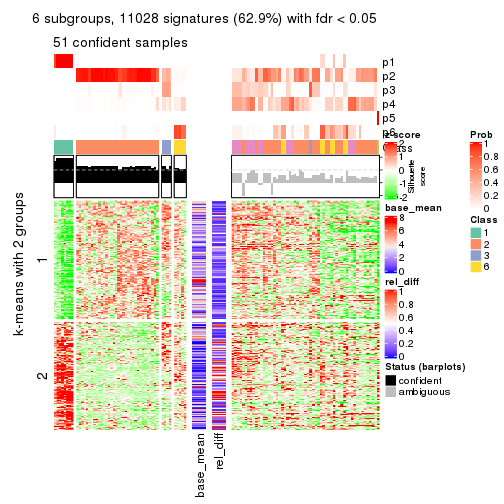
Signature heatmaps where rows are not scaled:
get_signatures(res, k = 2, scale_rows = FALSE)
get_signatures(res, k = 3, scale_rows = FALSE)

get_signatures(res, k = 4, scale_rows = FALSE)
get_signatures(res, k = 5, scale_rows = FALSE)
get_signatures(res, k = 6, scale_rows = FALSE)
Compare the overlap of signatures from different k:
compare_signatures(res)
get_signature() returns a data frame invisibly. TO get the list of signatures, the function
call should be assigned to a variable explicitly. In following code, if plot argument is set
to FALSE, no heatmap is plotted while only the differential analysis is performed.
# code only for demonstration
tb = get_signature(res, k = ..., plot = FALSE)
An example of the output of tb is:
#> which_row fdr mean_1 mean_2 scaled_mean_1 scaled_mean_2 km
#> 1 38 0.042760348 8.373488 9.131774 -0.5533452 0.5164555 1
#> 2 40 0.018707592 7.106213 8.469186 -0.6173731 0.5762149 1
#> 3 55 0.019134737 10.221463 11.207825 -0.6159697 0.5749050 1
#> 4 59 0.006059896 5.921854 7.869574 -0.6899429 0.6439467 1
#> 5 60 0.018055526 8.928898 10.211722 -0.6204761 0.5791110 1
#> 6 98 0.009384629 15.714769 14.887706 0.6635654 -0.6193277 2
...
The columns in tb are:
which_row: row indices corresponding to the input matrix.fdr: FDR for the differential test. mean_x: The mean value in group x.scaled_mean_x: The mean value in group x after rows are scaled.km: Row groups if k-means clustering is applied to rows.UMAP plot which shows how samples are separated.
dimension_reduction(res, k = 2, method = "UMAP")
dimension_reduction(res, k = 3, method = "UMAP")
dimension_reduction(res, k = 4, method = "UMAP")
dimension_reduction(res, k = 5, method = "UMAP")
dimension_reduction(res, k = 6, method = "UMAP")
Following heatmap shows how subgroups are split when increasing k:
collect_classes(res)
If matrix rows can be associated to genes, consider to use GO_Enrichment(res,
...) to perform function enrichment for the signature genes.
The object with results only for a single top-value method and a single partition method can be extracted as:
res = res_list["CV", "kmeans"]
# you can also extract it by
# res = res_list["CV:kmeans"]
A summary of res and all the functions that can be applied to it:
res
#> A 'ConsensusPartition' object with k = 2, 3, 4, 5, 6.
#> On a matrix with 17532 rows and 108 columns.
#> Top rows (1000, 2000, 3000, 4000, 5000) are extracted by 'CV' method.
#> Subgroups are detected by 'kmeans' method.
#> Performed in total 1250 partitions by row resampling.
#> Best k for subgroups seems to be 2.
#>
#> Following methods can be applied to this 'ConsensusPartition' object:
#> [1] "cola_report" "collect_classes" "collect_plots"
#> [4] "collect_stats" "colnames" "compare_signatures"
#> [7] "consensus_heatmap" "dimension_reduction" "functional_enrichment"
#> [10] "get_anno_col" "get_anno" "get_classes"
#> [13] "get_consensus" "get_matrix" "get_membership"
#> [16] "get_param" "get_signatures" "get_stats"
#> [19] "is_best_k" "is_stable_k" "membership_heatmap"
#> [22] "ncol" "nrow" "plot_ecdf"
#> [25] "rownames" "select_partition_number" "show"
#> [28] "suggest_best_k" "test_to_known_factors"
collect_plots() function collects all the plots made from res for all k (number of partitions)
into one single page to provide an easy and fast comparison between different k.
collect_plots(res)
The plots are:
k and the heatmap of
predicted classes for each k.k.k.k.All the plots in panels can be made by individual functions and they are plotted later in this section.
select_partition_number() produces several plots showing different
statistics for choosing “optimized” k. There are following statistics:
k;k, the area increased is defined as \(A_k - A_{k-1}\).The detailed explanations of these statistics can be found in the cola vignette.
Generally speaking, lower PAC score, higher mean silhouette score or higher
concordance corresponds to better partition. Rand index and Jaccard index
measure how similar the current partition is compared to partition with k-1.
If they are too similar, we won't accept k is better than k-1.
select_partition_number(res)
The numeric values for all these statistics can be obtained by get_stats().
get_stats(res)
#> k 1-PAC mean_silhouette concordance area_increased Rand Jaccard
#> 2 2 1.000 0.991 0.997 0.2198 0.786 0.786
#> 3 3 0.598 0.754 0.887 1.6991 0.619 0.516
#> 4 4 0.533 0.646 0.799 0.1917 0.804 0.563
#> 5 5 0.598 0.586 0.752 0.1015 0.807 0.452
#> 6 6 0.656 0.617 0.733 0.0447 0.928 0.684
suggest_best_k() suggests the best \(k\) based on these statistics. The rules are as follows:
NA.suggest_best_k(res)
#> [1] 2
Following shows the table of the partitions (You need to click the show/hide
code output link to see it). The membership matrix (columns with name p*)
is inferred by
clue::cl_consensus()
function with the SE method. Basically the value in the membership matrix
represents the probability to belong to a certain group. The finall class
label for an item is determined with the group with highest probability it
belongs to.
In get_classes() function, the entropy is calculated from the membership
matrix and the silhouette score is calculated from the consensus matrix.
cbind(get_classes(res, k = 2), get_membership(res, k = 2))
#> class entropy silhouette p1 p2
#> SRR1389909 2 0.000 0.996 0.000 1.000
#> SRR1454460 2 0.000 0.996 0.000 1.000
#> SRR1404623 2 0.000 0.996 0.000 1.000
#> SRR1092038 2 0.000 0.996 0.000 1.000
#> SRR1319793 2 0.000 0.996 0.000 1.000
#> SRR1396208 2 0.000 0.996 0.000 1.000
#> SRR1435797 2 0.000 0.996 0.000 1.000
#> SRR1078042 2 0.000 0.996 0.000 1.000
#> SRR1339699 2 0.000 0.996 0.000 1.000
#> SRR1446499 2 0.000 0.996 0.000 1.000
#> SRR1359428 2 0.000 0.996 0.000 1.000
#> SRR1071475 1 0.000 1.000 1.000 0.000
#> SRR1436781 2 0.000 0.996 0.000 1.000
#> SRR1101453 2 0.000 0.996 0.000 1.000
#> SRR1350891 2 0.000 0.996 0.000 1.000
#> SRR814293 2 0.000 0.996 0.000 1.000
#> SRR1471456 2 0.000 0.996 0.000 1.000
#> SRR1446874 2 0.000 0.996 0.000 1.000
#> SRR1362731 2 0.000 0.996 0.000 1.000
#> SRR1413705 2 0.000 0.996 0.000 1.000
#> SRR1434586 2 0.000 0.996 0.000 1.000
#> SRR1091164 2 0.000 0.996 0.000 1.000
#> SRR1340598 2 0.000 0.996 0.000 1.000
#> SRR1466469 1 0.000 1.000 1.000 0.000
#> SRR1099310 2 0.000 0.996 0.000 1.000
#> SRR814892 2 0.000 0.996 0.000 1.000
#> SRR1090698 2 0.000 0.996 0.000 1.000
#> SRR1089134 1 0.000 1.000 1.000 0.000
#> SRR1120276 2 0.000 0.996 0.000 1.000
#> SRR1430507 2 0.000 0.996 0.000 1.000
#> SRR1356078 2 0.000 0.996 0.000 1.000
#> SRR1447037 2 0.000 0.996 0.000 1.000
#> SRR1443544 2 0.000 0.996 0.000 1.000
#> SRR1081987 2 0.000 0.996 0.000 1.000
#> SRR1316513 2 0.000 0.996 0.000 1.000
#> SRR1478457 2 0.000 0.996 0.000 1.000
#> SRR1342849 2 0.000 0.996 0.000 1.000
#> SRR1073878 2 0.000 0.996 0.000 1.000
#> SRR1078735 2 0.000 0.996 0.000 1.000
#> SRR1093601 2 0.000 0.996 0.000 1.000
#> SRR816629 2 0.000 0.996 0.000 1.000
#> SRR1477754 2 0.000 0.996 0.000 1.000
#> SRR1454589 2 0.000 0.996 0.000 1.000
#> SRR1102780 2 0.000 0.996 0.000 1.000
#> SRR1347518 2 0.000 0.996 0.000 1.000
#> SRR1093747 2 0.000 0.996 0.000 1.000
#> SRR809209 2 0.000 0.996 0.000 1.000
#> SRR1082471 2 0.000 0.996 0.000 1.000
#> SRR1390349 2 0.000 0.996 0.000 1.000
#> SRR1410493 2 0.000 0.996 0.000 1.000
#> SRR1086656 2 0.000 0.996 0.000 1.000
#> SRR1469997 2 0.000 0.996 0.000 1.000
#> SRR1355512 2 0.000 0.996 0.000 1.000
#> SRR809897 2 0.000 0.996 0.000 1.000
#> SRR1436146 2 0.000 0.996 0.000 1.000
#> SRR1097148 1 0.000 1.000 1.000 0.000
#> SRR1429979 2 0.000 0.996 0.000 1.000
#> SRR1454607 1 0.000 1.000 1.000 0.000
#> SRR1420687 2 0.000 0.996 0.000 1.000
#> SRR1099669 2 0.000 0.996 0.000 1.000
#> SRR1360172 2 0.000 0.996 0.000 1.000
#> SRR1478131 2 0.000 0.996 0.000 1.000
#> SRR1453235 2 0.000 0.996 0.000 1.000
#> SRR1369107 2 0.000 0.996 0.000 1.000
#> SRR1096458 2 0.000 0.996 0.000 1.000
#> SRR1088856 2 0.000 0.996 0.000 1.000
#> SRR1432934 2 0.000 0.996 0.000 1.000
#> SRR821072 2 0.000 0.996 0.000 1.000
#> SRR1480896 2 0.000 0.996 0.000 1.000
#> SRR1403344 2 0.000 0.996 0.000 1.000
#> SRR1360850 1 0.000 1.000 1.000 0.000
#> SRR1451820 2 0.000 0.996 0.000 1.000
#> SRR1075360 2 0.000 0.996 0.000 1.000
#> SRR1413373 1 0.000 1.000 1.000 0.000
#> SRR1090928 2 0.000 0.996 0.000 1.000
#> SRR1097124 2 0.000 0.996 0.000 1.000
#> SRR1458745 1 0.000 1.000 1.000 0.000
#> SRR1078636 2 0.000 0.996 0.000 1.000
#> SRR1473754 2 0.000 0.996 0.000 1.000
#> SRR1085736 2 0.000 0.996 0.000 1.000
#> SRR1098807 1 0.000 1.000 1.000 0.000
#> SRR1341583 2 0.000 0.996 0.000 1.000
#> SRR1380869 2 0.000 0.996 0.000 1.000
#> SRR1430775 2 0.000 0.996 0.000 1.000
#> SRR1479573 2 0.000 0.996 0.000 1.000
#> SRR1082352 1 0.000 1.000 1.000 0.000
#> SRR1102005 2 0.000 0.996 0.000 1.000
#> SRR1408415 2 0.955 0.397 0.376 0.624
#> SRR1353537 1 0.000 1.000 1.000 0.000
#> SRR1458870 2 0.000 0.996 0.000 1.000
#> SRR1315495 2 0.000 0.996 0.000 1.000
#> SRR1481169 2 0.000 0.996 0.000 1.000
#> SRR1470273 1 0.000 1.000 1.000 0.000
#> SRR1312446 2 0.000 0.996 0.000 1.000
#> SRR1101859 2 0.000 0.996 0.000 1.000
#> SRR1384210 2 0.000 0.996 0.000 1.000
#> SRR1336244 2 0.000 0.996 0.000 1.000
#> SRR1374432 2 0.000 0.996 0.000 1.000
#> SRR1430023 2 0.000 0.996 0.000 1.000
#> SRR1487527 1 0.000 1.000 1.000 0.000
#> SRR1073389 2 0.000 0.996 0.000 1.000
#> SRR1433171 2 0.000 0.996 0.000 1.000
#> SRR1085565 2 0.000 0.996 0.000 1.000
#> SRR1355017 2 0.000 0.996 0.000 1.000
#> SRR1351641 2 0.000 0.996 0.000 1.000
#> SRR1398230 2 0.000 0.996 0.000 1.000
#> SRR1086212 2 0.000 0.996 0.000 1.000
#> SRR1431514 2 0.000 0.996 0.000 1.000
cbind(get_classes(res, k = 3), get_membership(res, k = 3))
#> class entropy silhouette p1 p2 p3
#> SRR1389909 3 0.0237 0.825 0.000 0.004 0.996
#> SRR1454460 2 0.4555 0.742 0.000 0.800 0.200
#> SRR1404623 2 0.2261 0.844 0.000 0.932 0.068
#> SRR1092038 3 0.5291 0.645 0.000 0.268 0.732
#> SRR1319793 3 0.6026 0.351 0.000 0.376 0.624
#> SRR1396208 3 0.3619 0.760 0.000 0.136 0.864
#> SRR1435797 2 0.0000 0.847 0.000 1.000 0.000
#> SRR1078042 3 0.0237 0.825 0.000 0.004 0.996
#> SRR1339699 2 0.3619 0.776 0.000 0.864 0.136
#> SRR1446499 2 0.2165 0.845 0.000 0.936 0.064
#> SRR1359428 2 0.2537 0.840 0.000 0.920 0.080
#> SRR1071475 1 0.0000 0.995 1.000 0.000 0.000
#> SRR1436781 3 0.2796 0.801 0.000 0.092 0.908
#> SRR1101453 2 0.2165 0.837 0.000 0.936 0.064
#> SRR1350891 2 0.2537 0.840 0.000 0.920 0.080
#> SRR814293 2 0.5882 0.412 0.000 0.652 0.348
#> SRR1471456 3 0.1411 0.826 0.000 0.036 0.964
#> SRR1446874 2 0.6045 0.348 0.000 0.620 0.380
#> SRR1362731 2 0.2448 0.842 0.000 0.924 0.076
#> SRR1413705 3 0.1031 0.829 0.000 0.024 0.976
#> SRR1434586 2 0.0592 0.848 0.000 0.988 0.012
#> SRR1091164 2 0.2448 0.842 0.000 0.924 0.076
#> SRR1340598 3 0.1411 0.826 0.000 0.036 0.964
#> SRR1466469 1 0.0000 0.995 1.000 0.000 0.000
#> SRR1099310 3 0.0592 0.824 0.000 0.012 0.988
#> SRR814892 3 0.2537 0.809 0.000 0.080 0.920
#> SRR1090698 2 0.1411 0.848 0.000 0.964 0.036
#> SRR1089134 1 0.0000 0.995 1.000 0.000 0.000
#> SRR1120276 2 0.2878 0.787 0.000 0.904 0.096
#> SRR1430507 2 0.5988 0.364 0.000 0.632 0.368
#> SRR1356078 2 0.0000 0.847 0.000 1.000 0.000
#> SRR1447037 3 0.0237 0.825 0.000 0.004 0.996
#> SRR1443544 3 0.2796 0.798 0.000 0.092 0.908
#> SRR1081987 3 0.2711 0.804 0.000 0.088 0.912
#> SRR1316513 3 0.1964 0.821 0.000 0.056 0.944
#> SRR1478457 2 0.5678 0.480 0.000 0.684 0.316
#> SRR1342849 3 0.6204 0.348 0.000 0.424 0.576
#> SRR1073878 2 0.2448 0.842 0.000 0.924 0.076
#> SRR1078735 3 0.3551 0.781 0.000 0.132 0.868
#> SRR1093601 3 0.0424 0.826 0.000 0.008 0.992
#> SRR816629 2 0.0000 0.847 0.000 1.000 0.000
#> SRR1477754 2 0.0424 0.848 0.000 0.992 0.008
#> SRR1454589 3 0.6180 0.304 0.000 0.416 0.584
#> SRR1102780 2 0.6045 0.335 0.000 0.620 0.380
#> SRR1347518 2 0.6008 0.417 0.000 0.628 0.372
#> SRR1093747 2 0.5882 0.412 0.000 0.652 0.348
#> SRR809209 3 0.1289 0.827 0.000 0.032 0.968
#> SRR1082471 2 0.0000 0.847 0.000 1.000 0.000
#> SRR1390349 3 0.2066 0.819 0.000 0.060 0.940
#> SRR1410493 2 0.0000 0.847 0.000 1.000 0.000
#> SRR1086656 2 0.2448 0.842 0.000 0.924 0.076
#> SRR1469997 3 0.1289 0.827 0.000 0.032 0.968
#> SRR1355512 2 0.0000 0.847 0.000 1.000 0.000
#> SRR809897 2 0.0592 0.848 0.000 0.988 0.012
#> SRR1436146 2 0.1031 0.848 0.000 0.976 0.024
#> SRR1097148 1 0.0000 0.995 1.000 0.000 0.000
#> SRR1429979 2 0.3482 0.784 0.000 0.872 0.128
#> SRR1454607 1 0.0000 0.995 1.000 0.000 0.000
#> SRR1420687 3 0.6302 0.101 0.000 0.480 0.520
#> SRR1099669 2 0.5882 0.412 0.000 0.652 0.348
#> SRR1360172 2 0.4291 0.739 0.000 0.820 0.180
#> SRR1478131 3 0.0892 0.819 0.000 0.020 0.980
#> SRR1453235 3 0.2448 0.800 0.000 0.076 0.924
#> SRR1369107 3 0.5058 0.682 0.000 0.244 0.756
#> SRR1096458 3 0.0237 0.825 0.000 0.004 0.996
#> SRR1088856 2 0.4121 0.754 0.000 0.832 0.168
#> SRR1432934 3 0.6244 0.179 0.000 0.440 0.560
#> SRR821072 3 0.0237 0.825 0.000 0.004 0.996
#> SRR1480896 3 0.2448 0.800 0.000 0.076 0.924
#> SRR1403344 2 0.3686 0.784 0.000 0.860 0.140
#> SRR1360850 1 0.0592 0.988 0.988 0.000 0.012
#> SRR1451820 2 0.5733 0.517 0.000 0.676 0.324
#> SRR1075360 2 0.0237 0.845 0.000 0.996 0.004
#> SRR1413373 1 0.0000 0.995 1.000 0.000 0.000
#> SRR1090928 2 0.2448 0.842 0.000 0.924 0.076
#> SRR1097124 2 0.0000 0.847 0.000 1.000 0.000
#> SRR1458745 1 0.0000 0.995 1.000 0.000 0.000
#> SRR1078636 2 0.2537 0.840 0.000 0.920 0.080
#> SRR1473754 3 0.0892 0.819 0.000 0.020 0.980
#> SRR1085736 2 0.0000 0.847 0.000 1.000 0.000
#> SRR1098807 1 0.0000 0.995 1.000 0.000 0.000
#> SRR1341583 2 0.0237 0.847 0.000 0.996 0.004
#> SRR1380869 3 0.0237 0.825 0.000 0.004 0.996
#> SRR1430775 3 0.6045 0.407 0.000 0.380 0.620
#> SRR1479573 2 0.0000 0.847 0.000 1.000 0.000
#> SRR1082352 1 0.1411 0.966 0.964 0.000 0.036
#> SRR1102005 2 0.0000 0.847 0.000 1.000 0.000
#> SRR1408415 3 0.6595 0.650 0.180 0.076 0.744
#> SRR1353537 1 0.0000 0.995 1.000 0.000 0.000
#> SRR1458870 2 0.2448 0.842 0.000 0.924 0.076
#> SRR1315495 2 0.2448 0.842 0.000 0.924 0.076
#> SRR1481169 3 0.2448 0.800 0.000 0.076 0.924
#> SRR1470273 1 0.0000 0.995 1.000 0.000 0.000
#> SRR1312446 2 0.1964 0.845 0.000 0.944 0.056
#> SRR1101859 2 0.2356 0.843 0.000 0.928 0.072
#> SRR1384210 3 0.2860 0.798 0.004 0.084 0.912
#> SRR1336244 2 0.2537 0.840 0.000 0.920 0.080
#> SRR1374432 3 0.6062 0.333 0.000 0.384 0.616
#> SRR1430023 2 0.0237 0.845 0.000 0.996 0.004
#> SRR1487527 1 0.0983 0.982 0.980 0.004 0.016
#> SRR1073389 2 0.5882 0.412 0.000 0.652 0.348
#> SRR1433171 2 0.0000 0.847 0.000 1.000 0.000
#> SRR1085565 3 0.2625 0.807 0.000 0.084 0.916
#> SRR1355017 3 0.6260 0.152 0.000 0.448 0.552
#> SRR1351641 2 0.5363 0.608 0.000 0.724 0.276
#> SRR1398230 2 0.2537 0.840 0.000 0.920 0.080
#> SRR1086212 3 0.0237 0.825 0.000 0.004 0.996
#> SRR1431514 2 0.6140 0.304 0.000 0.596 0.404
cbind(get_classes(res, k = 4), get_membership(res, k = 4))
#> class entropy silhouette p1 p2 p3 p4
#> SRR1389909 4 0.1452 0.732604 0.000 0.008 0.036 0.956
#> SRR1454460 2 0.3463 0.665096 0.000 0.864 0.040 0.096
#> SRR1404623 2 0.2654 0.729791 0.000 0.888 0.108 0.004
#> SRR1092038 4 0.7711 0.206639 0.000 0.308 0.248 0.444
#> SRR1319793 4 0.5483 0.327521 0.000 0.448 0.016 0.536
#> SRR1396208 4 0.6723 0.536367 0.000 0.260 0.140 0.600
#> SRR1435797 2 0.4967 0.486205 0.000 0.548 0.452 0.000
#> SRR1078042 4 0.1042 0.737691 0.000 0.008 0.020 0.972
#> SRR1339699 2 0.6262 0.549796 0.000 0.628 0.280 0.092
#> SRR1446499 2 0.2647 0.728009 0.000 0.880 0.120 0.000
#> SRR1359428 2 0.1022 0.722750 0.000 0.968 0.000 0.032
#> SRR1071475 1 0.0188 0.956808 0.996 0.000 0.004 0.000
#> SRR1436781 4 0.2704 0.722903 0.000 0.124 0.000 0.876
#> SRR1101453 2 0.5464 0.624473 0.000 0.708 0.228 0.064
#> SRR1350891 2 0.0921 0.723751 0.000 0.972 0.000 0.028
#> SRR814293 3 0.1936 0.776114 0.000 0.032 0.940 0.028
#> SRR1471456 4 0.1722 0.742860 0.000 0.048 0.008 0.944
#> SRR1446874 3 0.1837 0.771755 0.000 0.028 0.944 0.028
#> SRR1362731 2 0.1489 0.736125 0.000 0.952 0.044 0.004
#> SRR1413705 4 0.7534 0.190747 0.000 0.188 0.380 0.432
#> SRR1434586 2 0.4164 0.691609 0.000 0.736 0.264 0.000
#> SRR1091164 2 0.1109 0.722468 0.000 0.968 0.004 0.028
#> SRR1340598 4 0.1722 0.742860 0.000 0.048 0.008 0.944
#> SRR1466469 1 0.0804 0.955836 0.980 0.000 0.012 0.008
#> SRR1099310 4 0.1970 0.725072 0.000 0.008 0.060 0.932
#> SRR814892 4 0.3969 0.697002 0.000 0.180 0.016 0.804
#> SRR1090698 2 0.2345 0.741514 0.000 0.900 0.100 0.000
#> SRR1089134 1 0.0804 0.955836 0.980 0.000 0.012 0.008
#> SRR1120276 3 0.4019 0.555600 0.000 0.196 0.792 0.012
#> SRR1430507 3 0.1837 0.777299 0.000 0.028 0.944 0.028
#> SRR1356078 2 0.4998 0.409303 0.000 0.512 0.488 0.000
#> SRR1447037 4 0.1452 0.732604 0.000 0.008 0.036 0.956
#> SRR1443544 3 0.4008 0.619094 0.000 0.000 0.756 0.244
#> SRR1081987 4 0.3969 0.696881 0.000 0.180 0.016 0.804
#> SRR1316513 4 0.3743 0.708037 0.000 0.160 0.016 0.824
#> SRR1478457 3 0.6726 -0.216058 0.000 0.364 0.536 0.100
#> SRR1342849 3 0.7871 0.000406 0.000 0.332 0.384 0.284
#> SRR1073878 2 0.1489 0.736125 0.000 0.952 0.044 0.004
#> SRR1078735 3 0.3975 0.623471 0.000 0.000 0.760 0.240
#> SRR1093601 4 0.1118 0.742465 0.000 0.036 0.000 0.964
#> SRR816629 2 0.4804 0.589998 0.000 0.616 0.384 0.000
#> SRR1477754 2 0.3123 0.717496 0.000 0.844 0.156 0.000
#> SRR1454589 3 0.1722 0.771993 0.000 0.008 0.944 0.048
#> SRR1102780 3 0.1837 0.777299 0.000 0.028 0.944 0.028
#> SRR1347518 2 0.7269 0.331978 0.000 0.536 0.200 0.264
#> SRR1093747 3 0.1936 0.776114 0.000 0.032 0.940 0.028
#> SRR809209 4 0.4964 0.640138 0.000 0.068 0.168 0.764
#> SRR1082471 2 0.4697 0.618803 0.000 0.644 0.356 0.000
#> SRR1390349 4 0.5932 0.628421 0.000 0.172 0.132 0.696
#> SRR1410493 2 0.4761 0.603429 0.000 0.628 0.372 0.000
#> SRR1086656 2 0.0817 0.725104 0.000 0.976 0.000 0.024
#> SRR1469997 4 0.2805 0.732665 0.000 0.100 0.012 0.888
#> SRR1355512 2 0.4134 0.683179 0.000 0.740 0.260 0.000
#> SRR809897 2 0.4304 0.679832 0.000 0.716 0.284 0.000
#> SRR1436146 2 0.3751 0.701937 0.000 0.800 0.196 0.004
#> SRR1097148 1 0.0000 0.956951 1.000 0.000 0.000 0.000
#> SRR1429979 2 0.6027 0.579563 0.000 0.660 0.252 0.088
#> SRR1454607 1 0.0000 0.956951 1.000 0.000 0.000 0.000
#> SRR1420687 3 0.1807 0.767812 0.000 0.008 0.940 0.052
#> SRR1099669 3 0.1837 0.776945 0.000 0.028 0.944 0.028
#> SRR1360172 2 0.6064 0.581739 0.000 0.672 0.220 0.108
#> SRR1478131 4 0.5345 0.170125 0.000 0.012 0.428 0.560
#> SRR1453235 3 0.4769 0.507334 0.000 0.008 0.684 0.308
#> SRR1369107 4 0.7463 0.175145 0.000 0.180 0.364 0.456
#> SRR1096458 4 0.1722 0.727490 0.000 0.008 0.048 0.944
#> SRR1088856 2 0.5923 0.594505 0.000 0.684 0.216 0.100
#> SRR1432934 2 0.4831 0.409411 0.000 0.704 0.016 0.280
#> SRR821072 4 0.1722 0.727490 0.000 0.008 0.048 0.944
#> SRR1480896 3 0.4746 0.509975 0.000 0.008 0.688 0.304
#> SRR1403344 2 0.5655 0.614151 0.000 0.704 0.212 0.084
#> SRR1360850 1 0.2799 0.899772 0.884 0.000 0.108 0.008
#> SRR1451820 2 0.3942 0.505472 0.000 0.764 0.000 0.236
#> SRR1075360 2 0.4998 0.409303 0.000 0.512 0.488 0.000
#> SRR1413373 1 0.0469 0.955574 0.988 0.000 0.012 0.000
#> SRR1090928 2 0.1489 0.736125 0.000 0.952 0.044 0.004
#> SRR1097124 2 0.4477 0.654342 0.000 0.688 0.312 0.000
#> SRR1458745 1 0.0469 0.955574 0.988 0.000 0.012 0.000
#> SRR1078636 2 0.1109 0.722468 0.000 0.968 0.004 0.028
#> SRR1473754 4 0.5016 0.227381 0.000 0.004 0.396 0.600
#> SRR1085736 2 0.4585 0.640159 0.000 0.668 0.332 0.000
#> SRR1098807 1 0.0000 0.956951 1.000 0.000 0.000 0.000
#> SRR1341583 2 0.3610 0.705963 0.000 0.800 0.200 0.000
#> SRR1380869 4 0.1890 0.727556 0.000 0.008 0.056 0.936
#> SRR1430775 3 0.1890 0.769314 0.000 0.008 0.936 0.056
#> SRR1479573 2 0.4746 0.608148 0.000 0.632 0.368 0.000
#> SRR1082352 1 0.4199 0.815856 0.804 0.000 0.164 0.032
#> SRR1102005 2 0.4746 0.608148 0.000 0.632 0.368 0.000
#> SRR1408415 3 0.4630 0.636353 0.036 0.000 0.768 0.196
#> SRR1353537 1 0.0804 0.955836 0.980 0.000 0.012 0.008
#> SRR1458870 2 0.1389 0.737067 0.000 0.952 0.048 0.000
#> SRR1315495 2 0.1661 0.736389 0.000 0.944 0.052 0.004
#> SRR1481169 3 0.4040 0.620569 0.000 0.000 0.752 0.248
#> SRR1470273 1 0.0804 0.955836 0.980 0.000 0.012 0.008
#> SRR1312446 2 0.3355 0.714219 0.000 0.836 0.160 0.004
#> SRR1101859 2 0.3801 0.703899 0.000 0.780 0.220 0.000
#> SRR1384210 3 0.4304 0.568496 0.000 0.000 0.716 0.284
#> SRR1336244 2 0.0921 0.723751 0.000 0.972 0.000 0.028
#> SRR1374432 2 0.5511 -0.229596 0.000 0.500 0.016 0.484
#> SRR1430023 3 0.3486 0.566915 0.000 0.188 0.812 0.000
#> SRR1487527 1 0.3591 0.840947 0.824 0.000 0.168 0.008
#> SRR1073389 3 0.1936 0.776114 0.000 0.032 0.940 0.028
#> SRR1433171 2 0.4817 0.587860 0.000 0.612 0.388 0.000
#> SRR1085565 4 0.4991 0.223889 0.000 0.004 0.388 0.608
#> SRR1355017 2 0.4446 0.542866 0.000 0.776 0.028 0.196
#> SRR1351641 2 0.3105 0.632296 0.000 0.856 0.004 0.140
#> SRR1398230 2 0.1109 0.722468 0.000 0.968 0.004 0.028
#> SRR1086212 4 0.1807 0.725094 0.000 0.008 0.052 0.940
#> SRR1431514 3 0.2224 0.773994 0.000 0.040 0.928 0.032
cbind(get_classes(res, k = 5), get_membership(res, k = 5))
#> class entropy silhouette p1 p2 p3 p4 p5
#> SRR1389909 4 0.0992 0.85744 0.000 0.000 0.008 0.968 0.024
#> SRR1454460 3 0.6257 0.56443 0.000 0.224 0.612 0.028 0.136
#> SRR1404623 2 0.4030 0.56753 0.000 0.648 0.352 0.000 0.000
#> SRR1092038 3 0.7556 0.51939 0.000 0.220 0.500 0.096 0.184
#> SRR1319793 3 0.2864 0.46436 0.000 0.024 0.864 0.112 0.000
#> SRR1396208 3 0.7028 0.49343 0.000 0.140 0.584 0.112 0.164
#> SRR1435797 2 0.3702 0.55280 0.000 0.820 0.084 0.000 0.096
#> SRR1078042 4 0.2376 0.83010 0.000 0.000 0.052 0.904 0.044
#> SRR1339699 3 0.6884 0.53326 0.000 0.280 0.512 0.028 0.180
#> SRR1446499 2 0.3949 0.58675 0.000 0.668 0.332 0.000 0.000
#> SRR1359428 3 0.4341 0.05857 0.000 0.364 0.628 0.000 0.008
#> SRR1071475 1 0.0162 0.92419 0.996 0.000 0.004 0.000 0.000
#> SRR1436781 4 0.3013 0.77092 0.000 0.008 0.160 0.832 0.000
#> SRR1101453 3 0.6681 0.54516 0.000 0.272 0.544 0.028 0.156
#> SRR1350891 3 0.4150 -0.00205 0.000 0.388 0.612 0.000 0.000
#> SRR814293 5 0.3398 0.76881 0.000 0.216 0.004 0.000 0.780
#> SRR1471456 4 0.2708 0.81595 0.000 0.000 0.072 0.884 0.044
#> SRR1446874 5 0.4283 0.69428 0.000 0.292 0.012 0.004 0.692
#> SRR1362731 2 0.4126 0.53406 0.000 0.620 0.380 0.000 0.000
#> SRR1413705 5 0.6906 0.11089 0.000 0.012 0.384 0.204 0.400
#> SRR1434586 2 0.1522 0.69303 0.000 0.944 0.044 0.000 0.012
#> SRR1091164 3 0.4074 0.07231 0.000 0.364 0.636 0.000 0.000
#> SRR1340598 4 0.2830 0.80924 0.000 0.000 0.080 0.876 0.044
#> SRR1466469 1 0.0324 0.92434 0.992 0.000 0.004 0.000 0.004
#> SRR1099310 4 0.2669 0.81677 0.000 0.000 0.020 0.876 0.104
#> SRR814892 3 0.5151 0.05170 0.000 0.000 0.560 0.396 0.044
#> SRR1090698 2 0.3109 0.60825 0.000 0.800 0.200 0.000 0.000
#> SRR1089134 1 0.0324 0.92434 0.992 0.000 0.004 0.000 0.004
#> SRR1120276 2 0.4542 -0.24181 0.000 0.536 0.008 0.000 0.456
#> SRR1430507 5 0.3395 0.76505 0.000 0.236 0.000 0.000 0.764
#> SRR1356078 2 0.2583 0.61823 0.000 0.864 0.004 0.000 0.132
#> SRR1447037 4 0.0992 0.85744 0.000 0.000 0.008 0.968 0.024
#> SRR1443544 5 0.4040 0.63837 0.000 0.024 0.076 0.080 0.820
#> SRR1081987 3 0.5476 0.08673 0.000 0.000 0.544 0.388 0.068
#> SRR1316513 3 0.5492 0.05717 0.000 0.000 0.536 0.396 0.068
#> SRR1478457 3 0.7127 0.41513 0.000 0.368 0.416 0.028 0.188
#> SRR1342849 3 0.7317 0.51896 0.000 0.188 0.524 0.076 0.212
#> SRR1073878 2 0.4126 0.53406 0.000 0.620 0.380 0.000 0.000
#> SRR1078735 5 0.4007 0.64207 0.000 0.032 0.088 0.056 0.824
#> SRR1093601 4 0.1732 0.84050 0.000 0.000 0.080 0.920 0.000
#> SRR816629 2 0.1571 0.67744 0.000 0.936 0.004 0.000 0.060
#> SRR1477754 2 0.3876 0.60113 0.000 0.684 0.316 0.000 0.000
#> SRR1454589 5 0.3398 0.77134 0.000 0.216 0.004 0.000 0.780
#> SRR1102780 5 0.3366 0.76593 0.000 0.232 0.000 0.000 0.768
#> SRR1347518 3 0.6545 0.55113 0.000 0.180 0.608 0.048 0.164
#> SRR1093747 5 0.3521 0.76655 0.000 0.232 0.004 0.000 0.764
#> SRR809209 3 0.7958 0.37610 0.000 0.140 0.452 0.224 0.184
#> SRR1082471 2 0.1041 0.69425 0.000 0.964 0.004 0.000 0.032
#> SRR1390349 3 0.7220 0.47974 0.000 0.136 0.560 0.120 0.184
#> SRR1410493 2 0.1270 0.68618 0.000 0.948 0.000 0.000 0.052
#> SRR1086656 3 0.4451 -0.10455 0.000 0.492 0.504 0.000 0.004
#> SRR1469997 4 0.5644 0.19579 0.000 0.000 0.440 0.484 0.076
#> SRR1355512 2 0.1493 0.70220 0.000 0.948 0.028 0.000 0.024
#> SRR809897 2 0.1701 0.69207 0.000 0.936 0.048 0.000 0.016
#> SRR1436146 2 0.4451 0.64319 0.000 0.712 0.248 0.000 0.040
#> SRR1097148 1 0.0000 0.92452 1.000 0.000 0.000 0.000 0.000
#> SRR1429979 3 0.6728 0.53902 0.000 0.276 0.536 0.028 0.160
#> SRR1454607 1 0.0000 0.92452 1.000 0.000 0.000 0.000 0.000
#> SRR1420687 5 0.3611 0.77488 0.000 0.208 0.004 0.008 0.780
#> SRR1099669 5 0.3491 0.76776 0.000 0.228 0.004 0.000 0.768
#> SRR1360172 3 0.6692 0.55731 0.000 0.252 0.556 0.032 0.160
#> SRR1478131 5 0.4961 0.32417 0.000 0.004 0.028 0.372 0.596
#> SRR1453235 5 0.3814 0.62513 0.000 0.000 0.068 0.124 0.808
#> SRR1369107 3 0.7632 0.50227 0.000 0.208 0.488 0.096 0.208
#> SRR1096458 4 0.1124 0.85284 0.000 0.000 0.004 0.960 0.036
#> SRR1088856 3 0.6608 0.55503 0.000 0.256 0.560 0.028 0.156
#> SRR1432934 3 0.3275 0.47215 0.000 0.064 0.860 0.068 0.008
#> SRR821072 4 0.1205 0.85127 0.000 0.000 0.004 0.956 0.040
#> SRR1480896 5 0.3517 0.62781 0.000 0.000 0.068 0.100 0.832
#> SRR1403344 3 0.6556 0.55905 0.000 0.252 0.568 0.028 0.152
#> SRR1360850 1 0.3544 0.75596 0.788 0.000 0.008 0.004 0.200
#> SRR1451820 3 0.4707 0.29147 0.000 0.228 0.708 0.064 0.000
#> SRR1075360 2 0.2719 0.60450 0.000 0.852 0.004 0.000 0.144
#> SRR1413373 1 0.0613 0.92163 0.984 0.000 0.008 0.004 0.004
#> SRR1090928 2 0.4114 0.53895 0.000 0.624 0.376 0.000 0.000
#> SRR1097124 2 0.2782 0.69920 0.000 0.880 0.072 0.000 0.048
#> SRR1458745 1 0.0613 0.92163 0.984 0.000 0.008 0.004 0.004
#> SRR1078636 3 0.4114 0.03940 0.000 0.376 0.624 0.000 0.000
#> SRR1473754 5 0.4789 0.29321 0.000 0.000 0.024 0.392 0.584
#> SRR1085736 2 0.1043 0.69071 0.000 0.960 0.000 0.000 0.040
#> SRR1098807 1 0.0000 0.92452 1.000 0.000 0.000 0.000 0.000
#> SRR1341583 2 0.3513 0.66923 0.000 0.800 0.180 0.000 0.020
#> SRR1380869 4 0.2983 0.81732 0.000 0.000 0.040 0.864 0.096
#> SRR1430775 5 0.2921 0.76939 0.000 0.148 0.004 0.004 0.844
#> SRR1479573 2 0.1270 0.68618 0.000 0.948 0.000 0.000 0.052
#> SRR1082352 1 0.5566 0.60311 0.652 0.000 0.036 0.048 0.264
#> SRR1102005 2 0.1270 0.68618 0.000 0.948 0.000 0.000 0.052
#> SRR1408415 5 0.3841 0.71698 0.032 0.052 0.012 0.056 0.848
#> SRR1353537 1 0.0324 0.92434 0.992 0.000 0.004 0.000 0.004
#> SRR1458870 2 0.3999 0.56636 0.000 0.656 0.344 0.000 0.000
#> SRR1315495 2 0.4060 0.55758 0.000 0.640 0.360 0.000 0.000
#> SRR1481169 5 0.3970 0.71180 0.000 0.076 0.008 0.104 0.812
#> SRR1470273 1 0.0324 0.92434 0.992 0.000 0.004 0.000 0.004
#> SRR1312446 2 0.3990 0.60423 0.000 0.688 0.308 0.000 0.004
#> SRR1101859 2 0.2674 0.68590 0.000 0.868 0.120 0.000 0.012
#> SRR1384210 5 0.3792 0.64073 0.000 0.012 0.064 0.096 0.828
#> SRR1336244 3 0.4182 -0.04428 0.000 0.400 0.600 0.000 0.000
#> SRR1374432 3 0.2879 0.47402 0.000 0.032 0.868 0.100 0.000
#> SRR1430023 5 0.4430 0.39638 0.000 0.456 0.004 0.000 0.540
#> SRR1487527 1 0.3826 0.70740 0.752 0.000 0.008 0.004 0.236
#> SRR1073389 5 0.3550 0.76455 0.000 0.236 0.004 0.000 0.760
#> SRR1433171 2 0.4723 0.50051 0.000 0.736 0.136 0.000 0.128
#> SRR1085565 4 0.5335 0.56292 0.000 0.008 0.084 0.668 0.240
#> SRR1355017 3 0.3532 0.46472 0.000 0.092 0.848 0.036 0.024
#> SRR1351641 3 0.3745 0.36271 0.000 0.196 0.780 0.024 0.000
#> SRR1398230 3 0.4015 0.10894 0.000 0.348 0.652 0.000 0.000
#> SRR1086212 4 0.1197 0.84757 0.000 0.000 0.000 0.952 0.048
#> SRR1431514 5 0.3509 0.76939 0.000 0.196 0.008 0.004 0.792
cbind(get_classes(res, k = 6), get_membership(res, k = 6))
#> class entropy silhouette p1 p2 p3 p4 p5 p6
#> SRR1389909 4 0.0777 0.8825 0.000 0.000 0.024 0.972 0.000 0.004
#> SRR1454460 3 0.3663 0.7922 0.000 0.068 0.784 0.000 0.148 0.000
#> SRR1404623 5 0.3823 0.3115 0.000 0.436 0.000 0.000 0.564 0.000
#> SRR1092038 3 0.3564 0.7942 0.000 0.004 0.796 0.036 0.160 0.004
#> SRR1319793 2 0.5101 0.2590 0.000 0.540 0.396 0.052 0.004 0.008
#> SRR1396208 3 0.4338 0.7093 0.000 0.116 0.768 0.040 0.076 0.000
#> SRR1435797 5 0.3287 0.4447 0.000 0.000 0.220 0.000 0.768 0.012
#> SRR1078042 4 0.1555 0.8755 0.000 0.004 0.060 0.932 0.000 0.004
#> SRR1339699 3 0.3187 0.7941 0.000 0.012 0.796 0.000 0.188 0.004
#> SRR1446499 5 0.3578 0.4687 0.000 0.340 0.000 0.000 0.660 0.000
#> SRR1359428 2 0.5418 0.5353 0.000 0.608 0.164 0.000 0.220 0.008
#> SRR1071475 1 0.1622 0.8644 0.940 0.016 0.016 0.000 0.000 0.028
#> SRR1436781 4 0.2863 0.8267 0.000 0.096 0.036 0.860 0.000 0.008
#> SRR1101453 3 0.3752 0.7909 0.000 0.052 0.776 0.000 0.168 0.004
#> SRR1350891 2 0.4141 0.6041 0.000 0.740 0.092 0.000 0.168 0.000
#> SRR814293 6 0.3296 0.7642 0.000 0.008 0.012 0.000 0.188 0.792
#> SRR1471456 4 0.1858 0.8693 0.000 0.012 0.076 0.912 0.000 0.000
#> SRR1446874 6 0.5235 0.6644 0.000 0.004 0.116 0.000 0.284 0.596
#> SRR1362731 2 0.4253 -0.0667 0.000 0.524 0.016 0.000 0.460 0.000
#> SRR1413705 2 0.6104 0.1392 0.000 0.536 0.088 0.068 0.000 0.308
#> SRR1434586 5 0.1910 0.6809 0.000 0.108 0.000 0.000 0.892 0.000
#> SRR1091164 2 0.4148 0.6190 0.000 0.744 0.108 0.000 0.148 0.000
#> SRR1340598 4 0.1858 0.8677 0.000 0.012 0.076 0.912 0.000 0.000
#> SRR1466469 1 0.0870 0.8724 0.972 0.012 0.012 0.004 0.000 0.000
#> SRR1099310 4 0.5534 0.7150 0.000 0.100 0.104 0.672 0.000 0.124
#> SRR814892 3 0.6307 0.1817 0.000 0.292 0.492 0.184 0.000 0.032
#> SRR1090698 5 0.3453 0.5972 0.000 0.164 0.044 0.000 0.792 0.000
#> SRR1089134 1 0.0870 0.8724 0.972 0.012 0.012 0.004 0.000 0.000
#> SRR1120276 5 0.4918 -0.3101 0.000 0.004 0.052 0.000 0.512 0.432
#> SRR1430507 6 0.3215 0.7607 0.000 0.000 0.004 0.000 0.240 0.756
#> SRR1356078 5 0.1524 0.6508 0.000 0.000 0.008 0.000 0.932 0.060
#> SRR1447037 4 0.0858 0.8825 0.000 0.000 0.028 0.968 0.000 0.004
#> SRR1443544 6 0.4915 0.6369 0.000 0.008 0.228 0.032 0.044 0.688
#> SRR1081987 3 0.5976 0.3761 0.000 0.208 0.588 0.168 0.004 0.032
#> SRR1316513 3 0.6216 0.3019 0.000 0.212 0.536 0.216 0.000 0.036
#> SRR1478457 3 0.4238 0.6216 0.000 0.008 0.636 0.000 0.340 0.016
#> SRR1342849 3 0.3451 0.8006 0.000 0.028 0.820 0.016 0.132 0.004
#> SRR1073878 2 0.4242 -0.0263 0.000 0.536 0.016 0.000 0.448 0.000
#> SRR1078735 6 0.4915 0.6378 0.000 0.016 0.232 0.024 0.040 0.688
#> SRR1093601 4 0.1829 0.8716 0.000 0.028 0.036 0.928 0.000 0.008
#> SRR816629 5 0.0520 0.6846 0.000 0.000 0.008 0.000 0.984 0.008
#> SRR1477754 5 0.3717 0.4082 0.000 0.384 0.000 0.000 0.616 0.000
#> SRR1454589 6 0.3633 0.7552 0.000 0.004 0.012 0.000 0.252 0.732
#> SRR1102780 6 0.3675 0.7549 0.000 0.004 0.008 0.004 0.252 0.732
#> SRR1347518 3 0.3252 0.7900 0.000 0.048 0.832 0.008 0.112 0.000
#> SRR1093747 6 0.3560 0.7532 0.000 0.004 0.008 0.000 0.256 0.732
#> SRR809209 3 0.5066 0.7037 0.000 0.016 0.716 0.148 0.092 0.028
#> SRR1082471 5 0.0790 0.6955 0.000 0.032 0.000 0.000 0.968 0.000
#> SRR1390349 3 0.3574 0.7332 0.000 0.056 0.836 0.048 0.056 0.004
#> SRR1410493 5 0.0520 0.6846 0.000 0.000 0.008 0.000 0.984 0.008
#> SRR1086656 2 0.6043 0.2943 0.000 0.412 0.268 0.000 0.320 0.000
#> SRR1469997 2 0.7320 -0.1774 0.000 0.328 0.296 0.276 0.000 0.100
#> SRR1355512 5 0.1501 0.6944 0.000 0.076 0.000 0.000 0.924 0.000
#> SRR809897 5 0.1610 0.6890 0.000 0.084 0.000 0.000 0.916 0.000
#> SRR1436146 5 0.4356 0.4274 0.000 0.360 0.000 0.000 0.608 0.032
#> SRR1097148 1 0.0000 0.8720 1.000 0.000 0.000 0.000 0.000 0.000
#> SRR1429979 3 0.3245 0.7956 0.000 0.016 0.796 0.000 0.184 0.004
#> SRR1454607 1 0.0000 0.8720 1.000 0.000 0.000 0.000 0.000 0.000
#> SRR1420687 6 0.3056 0.7576 0.000 0.012 0.016 0.000 0.140 0.832
#> SRR1099669 6 0.3560 0.7532 0.000 0.004 0.008 0.000 0.256 0.732
#> SRR1360172 3 0.3585 0.7997 0.000 0.048 0.792 0.000 0.156 0.004
#> SRR1478131 6 0.5660 0.3987 0.000 0.092 0.052 0.240 0.000 0.616
#> SRR1453235 6 0.4899 0.6241 0.000 0.108 0.116 0.052 0.000 0.724
#> SRR1369107 3 0.3351 0.7951 0.000 0.000 0.808 0.036 0.152 0.004
#> SRR1096458 4 0.0862 0.8805 0.000 0.004 0.016 0.972 0.000 0.008
#> SRR1088856 3 0.3647 0.7980 0.000 0.052 0.788 0.000 0.156 0.004
#> SRR1432934 2 0.4571 0.4698 0.000 0.656 0.300 0.024 0.012 0.008
#> SRR821072 4 0.2303 0.8616 0.000 0.052 0.020 0.904 0.000 0.024
#> SRR1480896 6 0.5252 0.6165 0.000 0.100 0.180 0.044 0.000 0.676
#> SRR1403344 3 0.3911 0.7901 0.000 0.068 0.768 0.000 0.160 0.004
#> SRR1360850 1 0.5425 0.6429 0.628 0.060 0.044 0.004 0.000 0.264
#> SRR1451820 2 0.4890 0.6329 0.000 0.716 0.156 0.020 0.100 0.008
#> SRR1075360 5 0.1858 0.6361 0.000 0.000 0.012 0.000 0.912 0.076
#> SRR1413373 1 0.3088 0.8425 0.860 0.064 0.032 0.000 0.000 0.044
#> SRR1090928 2 0.4253 -0.0667 0.000 0.524 0.016 0.000 0.460 0.000
#> SRR1097124 5 0.2699 0.6778 0.000 0.108 0.008 0.000 0.864 0.020
#> SRR1458745 1 0.2906 0.8466 0.872 0.052 0.032 0.000 0.000 0.044
#> SRR1078636 2 0.4165 0.6118 0.000 0.740 0.100 0.000 0.160 0.000
#> SRR1473754 6 0.5561 0.4086 0.000 0.088 0.048 0.240 0.000 0.624
#> SRR1085736 5 0.0547 0.6946 0.000 0.020 0.000 0.000 0.980 0.000
#> SRR1098807 1 0.0000 0.8720 1.000 0.000 0.000 0.000 0.000 0.000
#> SRR1341583 5 0.4224 0.4714 0.000 0.336 0.008 0.000 0.640 0.016
#> SRR1380869 4 0.5405 0.7285 0.000 0.088 0.120 0.684 0.000 0.108
#> SRR1430775 6 0.2949 0.7613 0.000 0.008 0.028 0.000 0.116 0.848
#> SRR1479573 5 0.0260 0.6879 0.000 0.000 0.008 0.000 0.992 0.000
#> SRR1082352 1 0.7289 0.4113 0.424 0.172 0.064 0.028 0.000 0.312
#> SRR1102005 5 0.0260 0.6879 0.000 0.000 0.008 0.000 0.992 0.000
#> SRR1408415 6 0.3121 0.6832 0.004 0.060 0.052 0.016 0.004 0.864
#> SRR1353537 1 0.0870 0.8724 0.972 0.012 0.012 0.004 0.000 0.000
#> SRR1458870 5 0.4238 0.2459 0.000 0.444 0.016 0.000 0.540 0.000
#> SRR1315495 5 0.4152 0.2704 0.000 0.440 0.012 0.000 0.548 0.000
#> SRR1481169 6 0.2407 0.6912 0.000 0.048 0.016 0.024 0.008 0.904
#> SRR1470273 1 0.0870 0.8724 0.972 0.012 0.012 0.004 0.000 0.000
#> SRR1312446 5 0.3991 0.2242 0.000 0.472 0.000 0.000 0.524 0.004
#> SRR1101859 5 0.2362 0.6736 0.000 0.136 0.000 0.000 0.860 0.004
#> SRR1384210 6 0.4662 0.6590 0.000 0.052 0.164 0.044 0.004 0.736
#> SRR1336244 2 0.4127 0.5999 0.000 0.740 0.088 0.000 0.172 0.000
#> SRR1374432 2 0.5149 0.2662 0.000 0.540 0.396 0.048 0.008 0.008
#> SRR1430023 6 0.4465 0.3882 0.000 0.000 0.028 0.000 0.460 0.512
#> SRR1487527 1 0.5660 0.5706 0.580 0.064 0.044 0.004 0.000 0.308
#> SRR1073389 6 0.3583 0.7511 0.000 0.004 0.008 0.000 0.260 0.728
#> SRR1433171 5 0.5814 0.4413 0.000 0.148 0.140 0.000 0.636 0.076
#> SRR1085565 4 0.4473 0.6405 0.000 0.008 0.212 0.708 0.000 0.072
#> SRR1355017 2 0.4427 0.4712 0.000 0.688 0.268 0.020 0.008 0.016
#> SRR1351641 2 0.4663 0.6258 0.000 0.720 0.184 0.012 0.076 0.008
#> SRR1398230 2 0.4375 0.6224 0.000 0.732 0.120 0.000 0.144 0.004
#> SRR1086212 4 0.3098 0.8436 0.000 0.052 0.032 0.860 0.000 0.056
#> SRR1431514 6 0.3470 0.7632 0.000 0.020 0.012 0.008 0.148 0.812
Heatmaps for the consensus matrix. It visualizes the probability of two samples to be in a same group.
consensus_heatmap(res, k = 2)
consensus_heatmap(res, k = 3)

consensus_heatmap(res, k = 4)
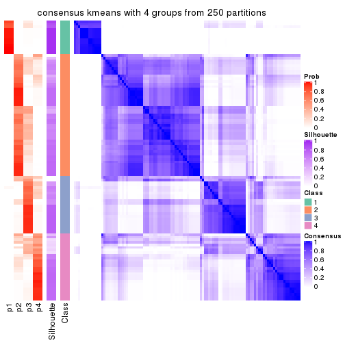
consensus_heatmap(res, k = 5)

consensus_heatmap(res, k = 6)
Heatmaps for the membership of samples in all partitions to see how consistent they are:
membership_heatmap(res, k = 2)
membership_heatmap(res, k = 3)
membership_heatmap(res, k = 4)
membership_heatmap(res, k = 5)
membership_heatmap(res, k = 6)
As soon as we have had the classes for columns, we can look for signatures which are significantly different between classes which can be candidate marks for certain classes. Following are the heatmaps for signatures.
Signature heatmaps where rows are scaled:
get_signatures(res, k = 2)
get_signatures(res, k = 3)
get_signatures(res, k = 4)
get_signatures(res, k = 5)
get_signatures(res, k = 6)
Signature heatmaps where rows are not scaled:
get_signatures(res, k = 2, scale_rows = FALSE)
get_signatures(res, k = 3, scale_rows = FALSE)
get_signatures(res, k = 4, scale_rows = FALSE)
get_signatures(res, k = 5, scale_rows = FALSE)
get_signatures(res, k = 6, scale_rows = FALSE)
Compare the overlap of signatures from different k:
compare_signatures(res)
get_signature() returns a data frame invisibly. TO get the list of signatures, the function
call should be assigned to a variable explicitly. In following code, if plot argument is set
to FALSE, no heatmap is plotted while only the differential analysis is performed.
# code only for demonstration
tb = get_signature(res, k = ..., plot = FALSE)
An example of the output of tb is:
#> which_row fdr mean_1 mean_2 scaled_mean_1 scaled_mean_2 km
#> 1 38 0.042760348 8.373488 9.131774 -0.5533452 0.5164555 1
#> 2 40 0.018707592 7.106213 8.469186 -0.6173731 0.5762149 1
#> 3 55 0.019134737 10.221463 11.207825 -0.6159697 0.5749050 1
#> 4 59 0.006059896 5.921854 7.869574 -0.6899429 0.6439467 1
#> 5 60 0.018055526 8.928898 10.211722 -0.6204761 0.5791110 1
#> 6 98 0.009384629 15.714769 14.887706 0.6635654 -0.6193277 2
...
The columns in tb are:
which_row: row indices corresponding to the input matrix.fdr: FDR for the differential test. mean_x: The mean value in group x.scaled_mean_x: The mean value in group x after rows are scaled.km: Row groups if k-means clustering is applied to rows.UMAP plot which shows how samples are separated.
dimension_reduction(res, k = 2, method = "UMAP")
dimension_reduction(res, k = 3, method = "UMAP")
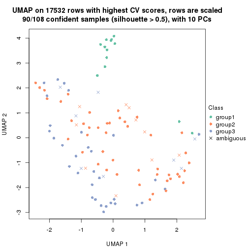
dimension_reduction(res, k = 4, method = "UMAP")
dimension_reduction(res, k = 5, method = "UMAP")
dimension_reduction(res, k = 6, method = "UMAP")
Following heatmap shows how subgroups are split when increasing k:
collect_classes(res)
If matrix rows can be associated to genes, consider to use GO_Enrichment(res,
...) to perform function enrichment for the signature genes.
The object with results only for a single top-value method and a single partition method can be extracted as:
res = res_list["CV", "skmeans"]
# you can also extract it by
# res = res_list["CV:skmeans"]
A summary of res and all the functions that can be applied to it:
res
#> A 'ConsensusPartition' object with k = 2, 3, 4, 5, 6.
#> On a matrix with 17532 rows and 108 columns.
#> Top rows (1000, 2000, 3000, 4000, 5000) are extracted by 'CV' method.
#> Subgroups are detected by 'skmeans' method.
#> Performed in total 1250 partitions by row resampling.
#> Best k for subgroups seems to be 2.
#>
#> Following methods can be applied to this 'ConsensusPartition' object:
#> [1] "cola_report" "collect_classes" "collect_plots"
#> [4] "collect_stats" "colnames" "compare_signatures"
#> [7] "consensus_heatmap" "dimension_reduction" "functional_enrichment"
#> [10] "get_anno_col" "get_anno" "get_classes"
#> [13] "get_consensus" "get_matrix" "get_membership"
#> [16] "get_param" "get_signatures" "get_stats"
#> [19] "is_best_k" "is_stable_k" "membership_heatmap"
#> [22] "ncol" "nrow" "plot_ecdf"
#> [25] "rownames" "select_partition_number" "show"
#> [28] "suggest_best_k" "test_to_known_factors"
collect_plots() function collects all the plots made from res for all k (number of partitions)
into one single page to provide an easy and fast comparison between different k.
collect_plots(res)
The plots are:
k and the heatmap of
predicted classes for each k.k.k.k.All the plots in panels can be made by individual functions and they are plotted later in this section.
select_partition_number() produces several plots showing different
statistics for choosing “optimized” k. There are following statistics:
k;k, the area increased is defined as \(A_k - A_{k-1}\).The detailed explanations of these statistics can be found in the cola vignette.
Generally speaking, lower PAC score, higher mean silhouette score or higher
concordance corresponds to better partition. Rand index and Jaccard index
measure how similar the current partition is compared to partition with k-1.
If they are too similar, we won't accept k is better than k-1.
select_partition_number(res)
The numeric values for all these statistics can be obtained by get_stats().
get_stats(res)
#> k 1-PAC mean_silhouette concordance area_increased Rand Jaccard
#> 2 2 1.000 0.985 0.994 0.4816 0.516 0.516
#> 3 3 0.846 0.872 0.948 0.3629 0.745 0.540
#> 4 4 0.679 0.623 0.826 0.1373 0.808 0.508
#> 5 5 0.777 0.708 0.867 0.0668 0.855 0.515
#> 6 6 0.767 0.657 0.821 0.0395 0.886 0.528
suggest_best_k() suggests the best \(k\) based on these statistics. The rules are as follows:
NA.suggest_best_k(res)
#> [1] 2
Following shows the table of the partitions (You need to click the show/hide
code output link to see it). The membership matrix (columns with name p*)
is inferred by
clue::cl_consensus()
function with the SE method. Basically the value in the membership matrix
represents the probability to belong to a certain group. The finall class
label for an item is determined with the group with highest probability it
belongs to.
In get_classes() function, the entropy is calculated from the membership
matrix and the silhouette score is calculated from the consensus matrix.
cbind(get_classes(res, k = 2), get_membership(res, k = 2))
#> class entropy silhouette p1 p2
#> SRR1389909 1 0.0376 0.981 0.996 0.004
#> SRR1454460 2 0.0000 1.000 0.000 1.000
#> SRR1404623 2 0.0000 1.000 0.000 1.000
#> SRR1092038 2 0.0000 1.000 0.000 1.000
#> SRR1319793 2 0.0000 1.000 0.000 1.000
#> SRR1396208 2 0.0000 1.000 0.000 1.000
#> SRR1435797 2 0.0000 1.000 0.000 1.000
#> SRR1078042 1 0.9815 0.289 0.580 0.420
#> SRR1339699 2 0.0000 1.000 0.000 1.000
#> SRR1446499 2 0.0000 1.000 0.000 1.000
#> SRR1359428 2 0.0000 1.000 0.000 1.000
#> SRR1071475 1 0.0000 0.985 1.000 0.000
#> SRR1436781 2 0.0000 1.000 0.000 1.000
#> SRR1101453 2 0.0000 1.000 0.000 1.000
#> SRR1350891 2 0.0000 1.000 0.000 1.000
#> SRR814293 1 0.0000 0.985 1.000 0.000
#> SRR1471456 2 0.0000 1.000 0.000 1.000
#> SRR1446874 2 0.0000 1.000 0.000 1.000
#> SRR1362731 2 0.0000 1.000 0.000 1.000
#> SRR1413705 1 0.1414 0.966 0.980 0.020
#> SRR1434586 2 0.0000 1.000 0.000 1.000
#> SRR1091164 2 0.0000 1.000 0.000 1.000
#> SRR1340598 2 0.0000 1.000 0.000 1.000
#> SRR1466469 1 0.0000 0.985 1.000 0.000
#> SRR1099310 1 0.0000 0.985 1.000 0.000
#> SRR814892 2 0.0000 1.000 0.000 1.000
#> SRR1090698 2 0.0000 1.000 0.000 1.000
#> SRR1089134 1 0.0000 0.985 1.000 0.000
#> SRR1120276 2 0.0000 1.000 0.000 1.000
#> SRR1430507 1 0.0000 0.985 1.000 0.000
#> SRR1356078 2 0.0000 1.000 0.000 1.000
#> SRR1447037 1 0.0376 0.981 0.996 0.004
#> SRR1443544 1 0.0000 0.985 1.000 0.000
#> SRR1081987 2 0.0000 1.000 0.000 1.000
#> SRR1316513 2 0.0000 1.000 0.000 1.000
#> SRR1478457 2 0.0000 1.000 0.000 1.000
#> SRR1342849 2 0.0000 1.000 0.000 1.000
#> SRR1073878 2 0.0000 1.000 0.000 1.000
#> SRR1078735 1 0.0000 0.985 1.000 0.000
#> SRR1093601 2 0.0000 1.000 0.000 1.000
#> SRR816629 2 0.0000 1.000 0.000 1.000
#> SRR1477754 2 0.0000 1.000 0.000 1.000
#> SRR1454589 1 0.0000 0.985 1.000 0.000
#> SRR1102780 1 0.0000 0.985 1.000 0.000
#> SRR1347518 2 0.0000 1.000 0.000 1.000
#> SRR1093747 1 0.0000 0.985 1.000 0.000
#> SRR809209 2 0.0000 1.000 0.000 1.000
#> SRR1082471 2 0.0000 1.000 0.000 1.000
#> SRR1390349 2 0.0000 1.000 0.000 1.000
#> SRR1410493 2 0.0000 1.000 0.000 1.000
#> SRR1086656 2 0.0000 1.000 0.000 1.000
#> SRR1469997 1 0.7219 0.750 0.800 0.200
#> SRR1355512 2 0.0000 1.000 0.000 1.000
#> SRR809897 2 0.0000 1.000 0.000 1.000
#> SRR1436146 2 0.0000 1.000 0.000 1.000
#> SRR1097148 1 0.0000 0.985 1.000 0.000
#> SRR1429979 2 0.0000 1.000 0.000 1.000
#> SRR1454607 1 0.0000 0.985 1.000 0.000
#> SRR1420687 1 0.0000 0.985 1.000 0.000
#> SRR1099669 1 0.0000 0.985 1.000 0.000
#> SRR1360172 2 0.0000 1.000 0.000 1.000
#> SRR1478131 1 0.0000 0.985 1.000 0.000
#> SRR1453235 1 0.0000 0.985 1.000 0.000
#> SRR1369107 2 0.0000 1.000 0.000 1.000
#> SRR1096458 1 0.0000 0.985 1.000 0.000
#> SRR1088856 2 0.0000 1.000 0.000 1.000
#> SRR1432934 2 0.0000 1.000 0.000 1.000
#> SRR821072 1 0.0000 0.985 1.000 0.000
#> SRR1480896 1 0.0000 0.985 1.000 0.000
#> SRR1403344 2 0.0000 1.000 0.000 1.000
#> SRR1360850 1 0.0000 0.985 1.000 0.000
#> SRR1451820 2 0.0000 1.000 0.000 1.000
#> SRR1075360 2 0.0000 1.000 0.000 1.000
#> SRR1413373 1 0.0000 0.985 1.000 0.000
#> SRR1090928 2 0.0000 1.000 0.000 1.000
#> SRR1097124 2 0.0000 1.000 0.000 1.000
#> SRR1458745 1 0.0000 0.985 1.000 0.000
#> SRR1078636 2 0.0000 1.000 0.000 1.000
#> SRR1473754 1 0.0000 0.985 1.000 0.000
#> SRR1085736 2 0.0000 1.000 0.000 1.000
#> SRR1098807 1 0.0000 0.985 1.000 0.000
#> SRR1341583 2 0.0000 1.000 0.000 1.000
#> SRR1380869 1 0.0000 0.985 1.000 0.000
#> SRR1430775 1 0.0000 0.985 1.000 0.000
#> SRR1479573 2 0.0000 1.000 0.000 1.000
#> SRR1082352 1 0.0000 0.985 1.000 0.000
#> SRR1102005 2 0.0000 1.000 0.000 1.000
#> SRR1408415 1 0.0000 0.985 1.000 0.000
#> SRR1353537 1 0.0000 0.985 1.000 0.000
#> SRR1458870 2 0.0000 1.000 0.000 1.000
#> SRR1315495 2 0.0000 1.000 0.000 1.000
#> SRR1481169 1 0.0000 0.985 1.000 0.000
#> SRR1470273 1 0.0000 0.985 1.000 0.000
#> SRR1312446 2 0.0000 1.000 0.000 1.000
#> SRR1101859 2 0.0000 1.000 0.000 1.000
#> SRR1384210 1 0.0000 0.985 1.000 0.000
#> SRR1336244 2 0.0000 1.000 0.000 1.000
#> SRR1374432 2 0.0000 1.000 0.000 1.000
#> SRR1430023 2 0.0000 1.000 0.000 1.000
#> SRR1487527 1 0.0000 0.985 1.000 0.000
#> SRR1073389 1 0.0000 0.985 1.000 0.000
#> SRR1433171 2 0.0000 1.000 0.000 1.000
#> SRR1085565 1 0.0000 0.985 1.000 0.000
#> SRR1355017 2 0.0000 1.000 0.000 1.000
#> SRR1351641 2 0.0000 1.000 0.000 1.000
#> SRR1398230 2 0.0000 1.000 0.000 1.000
#> SRR1086212 1 0.0000 0.985 1.000 0.000
#> SRR1431514 1 0.0000 0.985 1.000 0.000
cbind(get_classes(res, k = 3), get_membership(res, k = 3))
#> class entropy silhouette p1 p2 p3
#> SRR1389909 2 0.0000 0.8611 0.000 1.000 0.000
#> SRR1454460 3 0.3816 0.8282 0.000 0.148 0.852
#> SRR1404623 3 0.0000 0.9706 0.000 0.000 1.000
#> SRR1092038 2 0.6140 0.3291 0.000 0.596 0.404
#> SRR1319793 2 0.0000 0.8611 0.000 1.000 0.000
#> SRR1396208 2 0.0000 0.8611 0.000 1.000 0.000
#> SRR1435797 3 0.0000 0.9706 0.000 0.000 1.000
#> SRR1078042 2 0.0000 0.8611 0.000 1.000 0.000
#> SRR1339699 3 0.3752 0.8333 0.000 0.144 0.856
#> SRR1446499 3 0.0000 0.9706 0.000 0.000 1.000
#> SRR1359428 3 0.0424 0.9669 0.000 0.008 0.992
#> SRR1071475 1 0.0000 0.9690 1.000 0.000 0.000
#> SRR1436781 2 0.0000 0.8611 0.000 1.000 0.000
#> SRR1101453 3 0.2625 0.9006 0.000 0.084 0.916
#> SRR1350891 3 0.0424 0.9669 0.000 0.008 0.992
#> SRR814293 1 0.0000 0.9690 1.000 0.000 0.000
#> SRR1471456 2 0.0000 0.8611 0.000 1.000 0.000
#> SRR1446874 3 0.0000 0.9706 0.000 0.000 1.000
#> SRR1362731 3 0.0000 0.9706 0.000 0.000 1.000
#> SRR1413705 2 0.6307 -0.0165 0.488 0.512 0.000
#> SRR1434586 3 0.0000 0.9706 0.000 0.000 1.000
#> SRR1091164 3 0.0424 0.9669 0.000 0.008 0.992
#> SRR1340598 2 0.0000 0.8611 0.000 1.000 0.000
#> SRR1466469 1 0.0000 0.9690 1.000 0.000 0.000
#> SRR1099310 2 0.0747 0.8519 0.016 0.984 0.000
#> SRR814892 2 0.0000 0.8611 0.000 1.000 0.000
#> SRR1090698 3 0.0000 0.9706 0.000 0.000 1.000
#> SRR1089134 1 0.0000 0.9690 1.000 0.000 0.000
#> SRR1120276 3 0.0000 0.9706 0.000 0.000 1.000
#> SRR1430507 1 0.0000 0.9690 1.000 0.000 0.000
#> SRR1356078 3 0.0000 0.9706 0.000 0.000 1.000
#> SRR1447037 2 0.0000 0.8611 0.000 1.000 0.000
#> SRR1443544 1 0.0000 0.9690 1.000 0.000 0.000
#> SRR1081987 2 0.0000 0.8611 0.000 1.000 0.000
#> SRR1316513 2 0.0000 0.8611 0.000 1.000 0.000
#> SRR1478457 3 0.2066 0.9238 0.000 0.060 0.940
#> SRR1342849 2 0.6204 0.2751 0.000 0.576 0.424
#> SRR1073878 3 0.0000 0.9706 0.000 0.000 1.000
#> SRR1078735 1 0.0000 0.9690 1.000 0.000 0.000
#> SRR1093601 2 0.0000 0.8611 0.000 1.000 0.000
#> SRR816629 3 0.0000 0.9706 0.000 0.000 1.000
#> SRR1477754 3 0.0000 0.9706 0.000 0.000 1.000
#> SRR1454589 1 0.0237 0.9658 0.996 0.000 0.004
#> SRR1102780 1 0.2448 0.8926 0.924 0.000 0.076
#> SRR1347518 2 0.3619 0.7713 0.000 0.864 0.136
#> SRR1093747 1 0.0237 0.9658 0.996 0.000 0.004
#> SRR809209 2 0.0000 0.8611 0.000 1.000 0.000
#> SRR1082471 3 0.0000 0.9706 0.000 0.000 1.000
#> SRR1390349 2 0.0000 0.8611 0.000 1.000 0.000
#> SRR1410493 3 0.0000 0.9706 0.000 0.000 1.000
#> SRR1086656 3 0.0424 0.9669 0.000 0.008 0.992
#> SRR1469997 2 0.0000 0.8611 0.000 1.000 0.000
#> SRR1355512 3 0.0000 0.9706 0.000 0.000 1.000
#> SRR809897 3 0.0000 0.9706 0.000 0.000 1.000
#> SRR1436146 3 0.0000 0.9706 0.000 0.000 1.000
#> SRR1097148 1 0.0000 0.9690 1.000 0.000 0.000
#> SRR1429979 3 0.3619 0.8431 0.000 0.136 0.864
#> SRR1454607 1 0.0000 0.9690 1.000 0.000 0.000
#> SRR1420687 1 0.0000 0.9690 1.000 0.000 0.000
#> SRR1099669 1 0.0592 0.9588 0.988 0.000 0.012
#> SRR1360172 3 0.4974 0.6922 0.000 0.236 0.764
#> SRR1478131 1 0.6305 0.0567 0.516 0.484 0.000
#> SRR1453235 1 0.0000 0.9690 1.000 0.000 0.000
#> SRR1369107 2 0.6140 0.3291 0.000 0.596 0.404
#> SRR1096458 2 0.0424 0.8569 0.008 0.992 0.000
#> SRR1088856 3 0.4291 0.7830 0.000 0.180 0.820
#> SRR1432934 2 0.4121 0.7403 0.000 0.832 0.168
#> SRR821072 2 0.0424 0.8569 0.008 0.992 0.000
#> SRR1480896 1 0.0000 0.9690 1.000 0.000 0.000
#> SRR1403344 3 0.3038 0.8793 0.000 0.104 0.896
#> SRR1360850 1 0.0000 0.9690 1.000 0.000 0.000
#> SRR1451820 2 0.5810 0.5166 0.000 0.664 0.336
#> SRR1075360 3 0.0000 0.9706 0.000 0.000 1.000
#> SRR1413373 1 0.0000 0.9690 1.000 0.000 0.000
#> SRR1090928 3 0.0000 0.9706 0.000 0.000 1.000
#> SRR1097124 3 0.0000 0.9706 0.000 0.000 1.000
#> SRR1458745 1 0.0000 0.9690 1.000 0.000 0.000
#> SRR1078636 3 0.0424 0.9669 0.000 0.008 0.992
#> SRR1473754 1 0.4654 0.7153 0.792 0.208 0.000
#> SRR1085736 3 0.0000 0.9706 0.000 0.000 1.000
#> SRR1098807 1 0.0000 0.9690 1.000 0.000 0.000
#> SRR1341583 3 0.0000 0.9706 0.000 0.000 1.000
#> SRR1380869 2 0.0424 0.8569 0.008 0.992 0.000
#> SRR1430775 1 0.0000 0.9690 1.000 0.000 0.000
#> SRR1479573 3 0.0000 0.9706 0.000 0.000 1.000
#> SRR1082352 1 0.0000 0.9690 1.000 0.000 0.000
#> SRR1102005 3 0.0000 0.9706 0.000 0.000 1.000
#> SRR1408415 1 0.0000 0.9690 1.000 0.000 0.000
#> SRR1353537 1 0.0000 0.9690 1.000 0.000 0.000
#> SRR1458870 3 0.0000 0.9706 0.000 0.000 1.000
#> SRR1315495 3 0.0000 0.9706 0.000 0.000 1.000
#> SRR1481169 1 0.0000 0.9690 1.000 0.000 0.000
#> SRR1470273 1 0.0000 0.9690 1.000 0.000 0.000
#> SRR1312446 3 0.0000 0.9706 0.000 0.000 1.000
#> SRR1101859 3 0.0000 0.9706 0.000 0.000 1.000
#> SRR1384210 1 0.0000 0.9690 1.000 0.000 0.000
#> SRR1336244 3 0.0424 0.9669 0.000 0.008 0.992
#> SRR1374432 2 0.0000 0.8611 0.000 1.000 0.000
#> SRR1430023 3 0.0000 0.9706 0.000 0.000 1.000
#> SRR1487527 1 0.0000 0.9690 1.000 0.000 0.000
#> SRR1073389 1 0.2711 0.8792 0.912 0.000 0.088
#> SRR1433171 3 0.0000 0.9706 0.000 0.000 1.000
#> SRR1085565 2 0.6267 0.1535 0.452 0.548 0.000
#> SRR1355017 2 0.5650 0.5434 0.000 0.688 0.312
#> SRR1351641 2 0.6267 0.2253 0.000 0.548 0.452
#> SRR1398230 3 0.0424 0.9669 0.000 0.008 0.992
#> SRR1086212 2 0.0592 0.8544 0.012 0.988 0.000
#> SRR1431514 1 0.0000 0.9690 1.000 0.000 0.000
cbind(get_classes(res, k = 4), get_membership(res, k = 4))
#> class entropy silhouette p1 p2 p3 p4
#> SRR1389909 4 0.0000 0.85130 0.000 0.000 0.000 1.000
#> SRR1454460 2 0.3257 0.56068 0.000 0.844 0.152 0.004
#> SRR1404623 2 0.4500 0.46781 0.000 0.684 0.316 0.000
#> SRR1092038 3 0.7857 -0.13822 0.000 0.272 0.380 0.348
#> SRR1319793 2 0.3743 0.54464 0.000 0.824 0.016 0.160
#> SRR1396208 4 0.6426 0.52081 0.000 0.352 0.080 0.568
#> SRR1435797 3 0.0592 0.65606 0.000 0.016 0.984 0.000
#> SRR1078042 4 0.0000 0.85130 0.000 0.000 0.000 1.000
#> SRR1339699 3 0.5268 -0.00995 0.000 0.452 0.540 0.008
#> SRR1446499 2 0.4624 0.43038 0.000 0.660 0.340 0.000
#> SRR1359428 2 0.1637 0.63397 0.000 0.940 0.060 0.000
#> SRR1071475 1 0.0000 0.91242 1.000 0.000 0.000 0.000
#> SRR1436781 4 0.1867 0.80496 0.000 0.072 0.000 0.928
#> SRR1101453 2 0.5039 0.26913 0.000 0.592 0.404 0.004
#> SRR1350891 2 0.1211 0.63729 0.000 0.960 0.040 0.000
#> SRR814293 1 0.1474 0.88064 0.948 0.000 0.052 0.000
#> SRR1471456 4 0.0000 0.85130 0.000 0.000 0.000 1.000
#> SRR1446874 3 0.0469 0.64435 0.000 0.012 0.988 0.000
#> SRR1362731 2 0.4406 0.48794 0.000 0.700 0.300 0.000
#> SRR1413705 2 0.7244 0.22681 0.212 0.544 0.000 0.244
#> SRR1434586 3 0.4250 0.51034 0.000 0.276 0.724 0.000
#> SRR1091164 2 0.1022 0.63720 0.000 0.968 0.032 0.000
#> SRR1340598 4 0.0000 0.85130 0.000 0.000 0.000 1.000
#> SRR1466469 1 0.0000 0.91242 1.000 0.000 0.000 0.000
#> SRR1099310 4 0.0336 0.84868 0.008 0.000 0.000 0.992
#> SRR814892 4 0.4454 0.65151 0.000 0.308 0.000 0.692
#> SRR1090698 3 0.4830 0.23128 0.000 0.392 0.608 0.000
#> SRR1089134 1 0.0000 0.91242 1.000 0.000 0.000 0.000
#> SRR1120276 3 0.1867 0.69295 0.000 0.072 0.928 0.000
#> SRR1430507 1 0.2647 0.82411 0.880 0.000 0.120 0.000
#> SRR1356078 3 0.2469 0.70136 0.000 0.108 0.892 0.000
#> SRR1447037 4 0.0000 0.85130 0.000 0.000 0.000 1.000
#> SRR1443544 1 0.0336 0.90694 0.992 0.000 0.008 0.000
#> SRR1081987 4 0.5003 0.63879 0.000 0.308 0.016 0.676
#> SRR1316513 4 0.4406 0.65970 0.000 0.300 0.000 0.700
#> SRR1478457 3 0.2473 0.58416 0.000 0.080 0.908 0.012
#> SRR1342849 3 0.7460 0.04792 0.000 0.348 0.468 0.184
#> SRR1073878 2 0.4406 0.48794 0.000 0.700 0.300 0.000
#> SRR1078735 1 0.0000 0.91242 1.000 0.000 0.000 0.000
#> SRR1093601 4 0.0000 0.85130 0.000 0.000 0.000 1.000
#> SRR816629 3 0.2530 0.70161 0.000 0.112 0.888 0.000
#> SRR1477754 2 0.4605 0.43790 0.000 0.664 0.336 0.000
#> SRR1454589 1 0.5229 0.35650 0.564 0.000 0.428 0.008
#> SRR1102780 1 0.5161 0.22120 0.520 0.004 0.476 0.000
#> SRR1347518 2 0.6421 0.24717 0.000 0.556 0.368 0.076
#> SRR1093747 1 0.4941 0.34593 0.564 0.000 0.436 0.000
#> SRR809209 4 0.2565 0.81895 0.000 0.032 0.056 0.912
#> SRR1082471 3 0.2647 0.69935 0.000 0.120 0.880 0.000
#> SRR1390349 4 0.6202 0.59175 0.000 0.312 0.076 0.612
#> SRR1410493 3 0.2530 0.70054 0.000 0.112 0.888 0.000
#> SRR1086656 2 0.1716 0.63423 0.000 0.936 0.064 0.000
#> SRR1469997 4 0.3751 0.74839 0.004 0.196 0.000 0.800
#> SRR1355512 3 0.2814 0.69134 0.000 0.132 0.868 0.000
#> SRR809897 3 0.4008 0.56029 0.000 0.244 0.756 0.000
#> SRR1436146 2 0.4992 0.11355 0.000 0.524 0.476 0.000
#> SRR1097148 1 0.0000 0.91242 1.000 0.000 0.000 0.000
#> SRR1429979 2 0.5137 0.17208 0.000 0.544 0.452 0.004
#> SRR1454607 1 0.0000 0.91242 1.000 0.000 0.000 0.000
#> SRR1420687 1 0.0000 0.91242 1.000 0.000 0.000 0.000
#> SRR1099669 1 0.4933 0.35000 0.568 0.000 0.432 0.000
#> SRR1360172 2 0.5313 0.30432 0.000 0.608 0.376 0.016
#> SRR1478131 4 0.5151 0.13814 0.464 0.004 0.000 0.532
#> SRR1453235 1 0.0000 0.91242 1.000 0.000 0.000 0.000
#> SRR1369107 3 0.7844 -0.08681 0.000 0.288 0.404 0.308
#> SRR1096458 4 0.0188 0.85062 0.004 0.000 0.000 0.996
#> SRR1088856 2 0.4950 0.31420 0.000 0.620 0.376 0.004
#> SRR1432934 2 0.2281 0.60353 0.000 0.904 0.000 0.096
#> SRR821072 4 0.0188 0.85062 0.004 0.000 0.000 0.996
#> SRR1480896 1 0.0000 0.91242 1.000 0.000 0.000 0.000
#> SRR1403344 2 0.4761 0.37831 0.000 0.664 0.332 0.004
#> SRR1360850 1 0.0000 0.91242 1.000 0.000 0.000 0.000
#> SRR1451820 2 0.2949 0.61570 0.000 0.888 0.024 0.088
#> SRR1075360 3 0.2469 0.70136 0.000 0.108 0.892 0.000
#> SRR1413373 1 0.0000 0.91242 1.000 0.000 0.000 0.000
#> SRR1090928 2 0.4382 0.49169 0.000 0.704 0.296 0.000
#> SRR1097124 3 0.4250 0.49889 0.000 0.276 0.724 0.000
#> SRR1458745 1 0.0000 0.91242 1.000 0.000 0.000 0.000
#> SRR1078636 2 0.1118 0.63735 0.000 0.964 0.036 0.000
#> SRR1473754 1 0.4134 0.58173 0.740 0.000 0.000 0.260
#> SRR1085736 3 0.2647 0.69861 0.000 0.120 0.880 0.000
#> SRR1098807 1 0.0000 0.91242 1.000 0.000 0.000 0.000
#> SRR1341583 2 0.4605 0.43794 0.000 0.664 0.336 0.000
#> SRR1380869 4 0.0188 0.85062 0.004 0.000 0.000 0.996
#> SRR1430775 1 0.0188 0.91037 0.996 0.000 0.004 0.000
#> SRR1479573 3 0.2647 0.69935 0.000 0.120 0.880 0.000
#> SRR1082352 1 0.0000 0.91242 1.000 0.000 0.000 0.000
#> SRR1102005 3 0.2530 0.70161 0.000 0.112 0.888 0.000
#> SRR1408415 1 0.0000 0.91242 1.000 0.000 0.000 0.000
#> SRR1353537 1 0.0000 0.91242 1.000 0.000 0.000 0.000
#> SRR1458870 2 0.4431 0.48332 0.000 0.696 0.304 0.000
#> SRR1315495 2 0.4431 0.48332 0.000 0.696 0.304 0.000
#> SRR1481169 1 0.0000 0.91242 1.000 0.000 0.000 0.000
#> SRR1470273 1 0.0000 0.91242 1.000 0.000 0.000 0.000
#> SRR1312446 2 0.4543 0.45759 0.000 0.676 0.324 0.000
#> SRR1101859 3 0.4866 0.22044 0.000 0.404 0.596 0.000
#> SRR1384210 1 0.0000 0.91242 1.000 0.000 0.000 0.000
#> SRR1336244 2 0.1474 0.63594 0.000 0.948 0.052 0.000
#> SRR1374432 2 0.3547 0.56346 0.000 0.840 0.016 0.144
#> SRR1430023 3 0.2081 0.69714 0.000 0.084 0.916 0.000
#> SRR1487527 1 0.0000 0.91242 1.000 0.000 0.000 0.000
#> SRR1073389 3 0.5105 0.01097 0.432 0.004 0.564 0.000
#> SRR1433171 2 0.4624 0.46086 0.000 0.660 0.340 0.000
#> SRR1085565 4 0.3687 0.76235 0.080 0.000 0.064 0.856
#> SRR1355017 2 0.2149 0.60810 0.000 0.912 0.000 0.088
#> SRR1351641 2 0.2271 0.61517 0.000 0.916 0.008 0.076
#> SRR1398230 2 0.0921 0.63684 0.000 0.972 0.028 0.000
#> SRR1086212 4 0.0188 0.85062 0.004 0.000 0.000 0.996
#> SRR1431514 1 0.3081 0.84218 0.888 0.048 0.064 0.000
cbind(get_classes(res, k = 5), get_membership(res, k = 5))
#> class entropy silhouette p1 p2 p3 p4 p5
#> SRR1389909 4 0.0000 0.8516 0.000 0.000 0.000 1.000 0.000
#> SRR1454460 3 0.0609 0.8332 0.000 0.020 0.980 0.000 0.000
#> SRR1404623 2 0.1043 0.7811 0.000 0.960 0.000 0.000 0.040
#> SRR1092038 3 0.1357 0.8050 0.000 0.000 0.948 0.048 0.004
#> SRR1319793 3 0.5766 0.2754 0.000 0.392 0.516 0.092 0.000
#> SRR1396208 3 0.2270 0.7793 0.000 0.020 0.904 0.076 0.000
#> SRR1435797 5 0.6201 0.5622 0.000 0.216 0.232 0.000 0.552
#> SRR1078042 4 0.0000 0.8516 0.000 0.000 0.000 1.000 0.000
#> SRR1339699 3 0.0693 0.8348 0.000 0.012 0.980 0.000 0.008
#> SRR1446499 2 0.1270 0.7762 0.000 0.948 0.000 0.000 0.052
#> SRR1359428 2 0.1121 0.7815 0.000 0.956 0.044 0.000 0.000
#> SRR1071475 1 0.0000 0.9439 1.000 0.000 0.000 0.000 0.000
#> SRR1436781 4 0.0992 0.8360 0.000 0.024 0.008 0.968 0.000
#> SRR1101453 3 0.0671 0.8348 0.000 0.016 0.980 0.000 0.004
#> SRR1350891 2 0.1410 0.7759 0.000 0.940 0.060 0.000 0.000
#> SRR814293 1 0.4138 0.4831 0.616 0.000 0.000 0.000 0.384
#> SRR1471456 4 0.0609 0.8443 0.000 0.000 0.020 0.980 0.000
#> SRR1446874 5 0.1908 0.7280 0.000 0.000 0.092 0.000 0.908
#> SRR1362731 2 0.0794 0.7834 0.000 0.972 0.000 0.000 0.028
#> SRR1413705 2 0.7914 0.1447 0.184 0.444 0.120 0.252 0.000
#> SRR1434586 2 0.4637 -0.0568 0.000 0.536 0.012 0.000 0.452
#> SRR1091164 2 0.1792 0.7655 0.000 0.916 0.084 0.000 0.000
#> SRR1340598 4 0.0794 0.8399 0.000 0.000 0.028 0.972 0.000
#> SRR1466469 1 0.0000 0.9439 1.000 0.000 0.000 0.000 0.000
#> SRR1099310 4 0.0290 0.8474 0.008 0.000 0.000 0.992 0.000
#> SRR814892 4 0.5165 0.1307 0.000 0.040 0.448 0.512 0.000
#> SRR1090698 2 0.5452 0.4631 0.000 0.656 0.144 0.000 0.200
#> SRR1089134 1 0.0000 0.9439 1.000 0.000 0.000 0.000 0.000
#> SRR1120276 5 0.0566 0.7773 0.000 0.004 0.012 0.000 0.984
#> SRR1430507 5 0.3932 0.3472 0.328 0.000 0.000 0.000 0.672
#> SRR1356078 5 0.1952 0.7717 0.000 0.084 0.004 0.000 0.912
#> SRR1447037 4 0.0000 0.8516 0.000 0.000 0.000 1.000 0.000
#> SRR1443544 1 0.0771 0.9288 0.976 0.000 0.020 0.000 0.004
#> SRR1081987 3 0.5059 0.1160 0.000 0.036 0.548 0.416 0.000
#> SRR1316513 4 0.5044 0.2485 0.000 0.036 0.408 0.556 0.000
#> SRR1478457 3 0.5591 0.0112 0.000 0.076 0.528 0.000 0.396
#> SRR1342849 3 0.0162 0.8332 0.000 0.000 0.996 0.004 0.000
#> SRR1073878 2 0.0609 0.7836 0.000 0.980 0.000 0.000 0.020
#> SRR1078735 1 0.0162 0.9413 0.996 0.000 0.004 0.000 0.000
#> SRR1093601 4 0.0000 0.8516 0.000 0.000 0.000 1.000 0.000
#> SRR816629 5 0.3809 0.6907 0.000 0.256 0.008 0.000 0.736
#> SRR1477754 2 0.1270 0.7762 0.000 0.948 0.000 0.000 0.052
#> SRR1454589 5 0.1168 0.7693 0.032 0.000 0.008 0.000 0.960
#> SRR1102780 5 0.1124 0.7692 0.036 0.000 0.000 0.004 0.960
#> SRR1347518 3 0.0290 0.8345 0.000 0.008 0.992 0.000 0.000
#> SRR1093747 5 0.1043 0.7679 0.040 0.000 0.000 0.000 0.960
#> SRR809209 4 0.4410 0.1907 0.000 0.004 0.440 0.556 0.000
#> SRR1082471 5 0.4252 0.5768 0.000 0.340 0.008 0.000 0.652
#> SRR1390349 3 0.2351 0.7736 0.000 0.016 0.896 0.088 0.000
#> SRR1410493 5 0.3783 0.6930 0.000 0.252 0.008 0.000 0.740
#> SRR1086656 2 0.3266 0.6813 0.000 0.796 0.200 0.000 0.004
#> SRR1469997 4 0.4141 0.6002 0.000 0.028 0.236 0.736 0.000
#> SRR1355512 5 0.4298 0.5551 0.000 0.352 0.008 0.000 0.640
#> SRR809897 2 0.5752 -0.0726 0.000 0.500 0.088 0.000 0.412
#> SRR1436146 2 0.3177 0.6746 0.000 0.792 0.000 0.000 0.208
#> SRR1097148 1 0.0000 0.9439 1.000 0.000 0.000 0.000 0.000
#> SRR1429979 3 0.0671 0.8348 0.000 0.016 0.980 0.000 0.004
#> SRR1454607 1 0.0000 0.9439 1.000 0.000 0.000 0.000 0.000
#> SRR1420687 1 0.0162 0.9419 0.996 0.000 0.000 0.000 0.004
#> SRR1099669 5 0.1671 0.7455 0.076 0.000 0.000 0.000 0.924
#> SRR1360172 3 0.0404 0.8359 0.000 0.012 0.988 0.000 0.000
#> SRR1478131 4 0.4938 0.4563 0.312 0.000 0.000 0.640 0.048
#> SRR1453235 1 0.0162 0.9415 0.996 0.000 0.000 0.004 0.000
#> SRR1369107 3 0.0671 0.8303 0.000 0.000 0.980 0.016 0.004
#> SRR1096458 4 0.0000 0.8516 0.000 0.000 0.000 1.000 0.000
#> SRR1088856 3 0.0566 0.8357 0.000 0.012 0.984 0.000 0.004
#> SRR1432934 2 0.4770 0.3744 0.000 0.644 0.320 0.036 0.000
#> SRR821072 4 0.0000 0.8516 0.000 0.000 0.000 1.000 0.000
#> SRR1480896 1 0.0000 0.9439 1.000 0.000 0.000 0.000 0.000
#> SRR1403344 3 0.0609 0.8351 0.000 0.020 0.980 0.000 0.000
#> SRR1360850 1 0.0000 0.9439 1.000 0.000 0.000 0.000 0.000
#> SRR1451820 2 0.2824 0.7380 0.000 0.872 0.096 0.032 0.000
#> SRR1075360 5 0.1638 0.7754 0.000 0.064 0.004 0.000 0.932
#> SRR1413373 1 0.0000 0.9439 1.000 0.000 0.000 0.000 0.000
#> SRR1090928 2 0.0880 0.7830 0.000 0.968 0.000 0.000 0.032
#> SRR1097124 2 0.4307 -0.1928 0.000 0.500 0.000 0.000 0.500
#> SRR1458745 1 0.0000 0.9439 1.000 0.000 0.000 0.000 0.000
#> SRR1078636 2 0.1410 0.7761 0.000 0.940 0.060 0.000 0.000
#> SRR1473754 1 0.3774 0.5472 0.704 0.000 0.000 0.296 0.000
#> SRR1085736 5 0.4108 0.6295 0.000 0.308 0.008 0.000 0.684
#> SRR1098807 1 0.0000 0.9439 1.000 0.000 0.000 0.000 0.000
#> SRR1341583 2 0.1270 0.7773 0.000 0.948 0.000 0.000 0.052
#> SRR1380869 4 0.0000 0.8516 0.000 0.000 0.000 1.000 0.000
#> SRR1430775 1 0.2891 0.7948 0.824 0.000 0.000 0.000 0.176
#> SRR1479573 5 0.4109 0.6550 0.000 0.288 0.012 0.000 0.700
#> SRR1082352 1 0.0000 0.9439 1.000 0.000 0.000 0.000 0.000
#> SRR1102005 5 0.3992 0.6780 0.000 0.268 0.012 0.000 0.720
#> SRR1408415 1 0.0000 0.9439 1.000 0.000 0.000 0.000 0.000
#> SRR1353537 1 0.0000 0.9439 1.000 0.000 0.000 0.000 0.000
#> SRR1458870 2 0.0963 0.7822 0.000 0.964 0.000 0.000 0.036
#> SRR1315495 2 0.0963 0.7822 0.000 0.964 0.000 0.000 0.036
#> SRR1481169 1 0.1544 0.8976 0.932 0.000 0.000 0.000 0.068
#> SRR1470273 1 0.0000 0.9439 1.000 0.000 0.000 0.000 0.000
#> SRR1312446 2 0.0963 0.7822 0.000 0.964 0.000 0.000 0.036
#> SRR1101859 2 0.4114 0.2619 0.000 0.624 0.000 0.000 0.376
#> SRR1384210 1 0.0000 0.9439 1.000 0.000 0.000 0.000 0.000
#> SRR1336244 2 0.1043 0.7806 0.000 0.960 0.040 0.000 0.000
#> SRR1374432 3 0.5715 0.2897 0.000 0.388 0.524 0.088 0.000
#> SRR1430023 5 0.0451 0.7776 0.000 0.004 0.008 0.000 0.988
#> SRR1487527 1 0.0000 0.9439 1.000 0.000 0.000 0.000 0.000
#> SRR1073389 5 0.0404 0.7767 0.012 0.000 0.000 0.000 0.988
#> SRR1433171 2 0.2964 0.7408 0.000 0.856 0.024 0.000 0.120
#> SRR1085565 4 0.2850 0.7676 0.036 0.000 0.092 0.872 0.000
#> SRR1355017 2 0.4437 0.4120 0.000 0.664 0.316 0.020 0.000
#> SRR1351641 2 0.2648 0.6995 0.000 0.848 0.152 0.000 0.000
#> SRR1398230 2 0.1544 0.7732 0.000 0.932 0.068 0.000 0.000
#> SRR1086212 4 0.0000 0.8516 0.000 0.000 0.000 1.000 0.000
#> SRR1431514 1 0.5666 0.5083 0.604 0.096 0.000 0.004 0.296
cbind(get_classes(res, k = 6), get_membership(res, k = 6))
#> class entropy silhouette p1 p2 p3 p4 p5 p6
#> SRR1389909 4 0.0146 0.8644 0.000 0.004 0.000 0.996 0.000 0.000
#> SRR1454460 3 0.1340 0.8623 0.000 0.040 0.948 0.000 0.008 0.004
#> SRR1404623 5 0.3782 0.1650 0.000 0.412 0.000 0.000 0.588 0.000
#> SRR1092038 3 0.0653 0.8752 0.000 0.004 0.980 0.012 0.004 0.000
#> SRR1319793 2 0.4133 0.4861 0.000 0.788 0.100 0.052 0.000 0.060
#> SRR1396208 3 0.5626 0.5746 0.000 0.280 0.596 0.052 0.000 0.072
#> SRR1435797 5 0.3885 0.5575 0.000 0.000 0.180 0.000 0.756 0.064
#> SRR1078042 4 0.0405 0.8634 0.000 0.004 0.008 0.988 0.000 0.000
#> SRR1339699 3 0.0363 0.8771 0.000 0.000 0.988 0.000 0.012 0.000
#> SRR1446499 5 0.2597 0.5977 0.000 0.176 0.000 0.000 0.824 0.000
#> SRR1359428 2 0.3534 0.5449 0.000 0.740 0.000 0.000 0.244 0.016
#> SRR1071475 1 0.0000 0.9491 1.000 0.000 0.000 0.000 0.000 0.000
#> SRR1436781 4 0.2664 0.7375 0.000 0.184 0.000 0.816 0.000 0.000
#> SRR1101453 3 0.0363 0.8776 0.000 0.000 0.988 0.000 0.012 0.000
#> SRR1350891 2 0.2871 0.5889 0.000 0.804 0.004 0.000 0.192 0.000
#> SRR814293 6 0.3321 0.7187 0.180 0.008 0.000 0.000 0.016 0.796
#> SRR1471456 4 0.1053 0.8589 0.000 0.012 0.020 0.964 0.000 0.004
#> SRR1446874 6 0.3645 0.7956 0.000 0.000 0.064 0.000 0.152 0.784
#> SRR1362731 2 0.3833 0.2122 0.000 0.556 0.000 0.000 0.444 0.000
#> SRR1413705 2 0.3759 0.5303 0.012 0.820 0.016 0.080 0.000 0.072
#> SRR1434586 5 0.1333 0.7024 0.000 0.048 0.008 0.000 0.944 0.000
#> SRR1091164 2 0.2595 0.6047 0.000 0.836 0.004 0.000 0.160 0.000
#> SRR1340598 4 0.1086 0.8593 0.000 0.012 0.012 0.964 0.000 0.012
#> SRR1466469 1 0.0000 0.9491 1.000 0.000 0.000 0.000 0.000 0.000
#> SRR1099310 4 0.2221 0.8480 0.004 0.040 0.004 0.908 0.000 0.044
#> SRR814892 2 0.6748 -0.0419 0.000 0.464 0.148 0.304 0.000 0.084
#> SRR1090698 5 0.2526 0.6633 0.000 0.096 0.024 0.000 0.876 0.004
#> SRR1089134 1 0.0000 0.9491 1.000 0.000 0.000 0.000 0.000 0.000
#> SRR1120276 6 0.2996 0.7642 0.000 0.000 0.000 0.000 0.228 0.772
#> SRR1430507 6 0.4707 0.7221 0.204 0.000 0.000 0.000 0.120 0.676
#> SRR1356078 5 0.3515 0.2775 0.000 0.000 0.000 0.000 0.676 0.324
#> SRR1447037 4 0.0146 0.8644 0.000 0.004 0.000 0.996 0.000 0.000
#> SRR1443544 1 0.0951 0.9272 0.968 0.000 0.020 0.004 0.000 0.008
#> SRR1081987 2 0.7230 -0.1529 0.000 0.372 0.288 0.244 0.000 0.096
#> SRR1316513 2 0.7128 -0.1971 0.000 0.360 0.184 0.356 0.000 0.100
#> SRR1478457 3 0.4507 0.5894 0.000 0.012 0.696 0.000 0.236 0.056
#> SRR1342849 3 0.2442 0.8447 0.000 0.068 0.884 0.000 0.000 0.048
#> SRR1073878 2 0.3823 0.2320 0.000 0.564 0.000 0.000 0.436 0.000
#> SRR1078735 1 0.0146 0.9472 0.996 0.000 0.000 0.000 0.000 0.004
#> SRR1093601 4 0.0547 0.8628 0.000 0.020 0.000 0.980 0.000 0.000
#> SRR816629 5 0.1556 0.6977 0.000 0.000 0.000 0.000 0.920 0.080
#> SRR1477754 5 0.3221 0.4825 0.000 0.264 0.000 0.000 0.736 0.000
#> SRR1454589 6 0.2734 0.8217 0.008 0.000 0.004 0.000 0.148 0.840
#> SRR1102780 6 0.2553 0.8212 0.008 0.000 0.000 0.000 0.144 0.848
#> SRR1347518 3 0.3691 0.7800 0.000 0.148 0.788 0.004 0.000 0.060
#> SRR1093747 6 0.2805 0.8202 0.012 0.000 0.000 0.000 0.160 0.828
#> SRR809209 4 0.5002 0.4571 0.000 0.024 0.284 0.636 0.000 0.056
#> SRR1082471 5 0.0777 0.7179 0.000 0.004 0.000 0.000 0.972 0.024
#> SRR1390349 3 0.5603 0.6350 0.000 0.224 0.632 0.072 0.000 0.072
#> SRR1410493 5 0.1714 0.6859 0.000 0.000 0.000 0.000 0.908 0.092
#> SRR1086656 2 0.5789 0.3756 0.000 0.520 0.144 0.000 0.324 0.012
#> SRR1469997 4 0.5790 0.3378 0.000 0.396 0.048 0.492 0.000 0.064
#> SRR1355512 5 0.1462 0.7175 0.000 0.008 0.000 0.000 0.936 0.056
#> SRR809897 5 0.1382 0.7095 0.000 0.036 0.008 0.000 0.948 0.008
#> SRR1436146 2 0.6016 0.0735 0.000 0.412 0.000 0.000 0.340 0.248
#> SRR1097148 1 0.0000 0.9491 1.000 0.000 0.000 0.000 0.000 0.000
#> SRR1429979 3 0.0260 0.8784 0.000 0.000 0.992 0.000 0.008 0.000
#> SRR1454607 1 0.0000 0.9491 1.000 0.000 0.000 0.000 0.000 0.000
#> SRR1420687 1 0.0713 0.9287 0.972 0.000 0.000 0.000 0.000 0.028
#> SRR1099669 6 0.2945 0.8219 0.020 0.000 0.000 0.000 0.156 0.824
#> SRR1360172 3 0.0405 0.8786 0.000 0.008 0.988 0.000 0.004 0.000
#> SRR1478131 4 0.6727 0.4520 0.236 0.132 0.000 0.512 0.000 0.120
#> SRR1453235 1 0.2152 0.8800 0.912 0.036 0.000 0.012 0.000 0.040
#> SRR1369107 3 0.0146 0.8789 0.000 0.000 0.996 0.000 0.004 0.000
#> SRR1096458 4 0.0458 0.8624 0.000 0.000 0.000 0.984 0.000 0.016
#> SRR1088856 3 0.0146 0.8789 0.000 0.000 0.996 0.000 0.004 0.000
#> SRR1432934 2 0.1829 0.6045 0.000 0.920 0.064 0.000 0.004 0.012
#> SRR821072 4 0.0993 0.8604 0.000 0.012 0.000 0.964 0.000 0.024
#> SRR1480896 1 0.0291 0.9453 0.992 0.004 0.000 0.000 0.000 0.004
#> SRR1403344 3 0.2009 0.8463 0.000 0.084 0.904 0.000 0.004 0.008
#> SRR1360850 1 0.0000 0.9491 1.000 0.000 0.000 0.000 0.000 0.000
#> SRR1451820 2 0.1863 0.6172 0.000 0.924 0.004 0.008 0.056 0.008
#> SRR1075360 5 0.3727 0.0858 0.000 0.000 0.000 0.000 0.612 0.388
#> SRR1413373 1 0.0000 0.9491 1.000 0.000 0.000 0.000 0.000 0.000
#> SRR1090928 2 0.3838 0.2033 0.000 0.552 0.000 0.000 0.448 0.000
#> SRR1097124 5 0.2560 0.6815 0.000 0.092 0.000 0.000 0.872 0.036
#> SRR1458745 1 0.0000 0.9491 1.000 0.000 0.000 0.000 0.000 0.000
#> SRR1078636 2 0.2738 0.5971 0.000 0.820 0.004 0.000 0.176 0.000
#> SRR1473754 1 0.5015 0.4471 0.628 0.020 0.000 0.292 0.000 0.060
#> SRR1085736 5 0.1267 0.7126 0.000 0.000 0.000 0.000 0.940 0.060
#> SRR1098807 1 0.0000 0.9491 1.000 0.000 0.000 0.000 0.000 0.000
#> SRR1341583 5 0.4445 0.1406 0.000 0.396 0.000 0.000 0.572 0.032
#> SRR1380869 4 0.2078 0.8491 0.000 0.040 0.004 0.912 0.000 0.044
#> SRR1430775 6 0.4129 0.2551 0.424 0.012 0.000 0.000 0.000 0.564
#> SRR1479573 5 0.1387 0.7076 0.000 0.000 0.000 0.000 0.932 0.068
#> SRR1082352 1 0.0000 0.9491 1.000 0.000 0.000 0.000 0.000 0.000
#> SRR1102005 5 0.1501 0.7014 0.000 0.000 0.000 0.000 0.924 0.076
#> SRR1408415 1 0.0632 0.9335 0.976 0.000 0.000 0.000 0.000 0.024
#> SRR1353537 1 0.0000 0.9491 1.000 0.000 0.000 0.000 0.000 0.000
#> SRR1458870 5 0.3864 -0.0652 0.000 0.480 0.000 0.000 0.520 0.000
#> SRR1315495 5 0.3797 0.1414 0.000 0.420 0.000 0.000 0.580 0.000
#> SRR1481169 1 0.4800 0.2667 0.580 0.032 0.000 0.016 0.000 0.372
#> SRR1470273 1 0.0000 0.9491 1.000 0.000 0.000 0.000 0.000 0.000
#> SRR1312446 2 0.4322 0.1623 0.000 0.528 0.000 0.000 0.452 0.020
#> SRR1101859 5 0.2573 0.6771 0.000 0.112 0.000 0.000 0.864 0.024
#> SRR1384210 1 0.0146 0.9471 0.996 0.000 0.000 0.000 0.000 0.004
#> SRR1336244 2 0.2823 0.5813 0.000 0.796 0.000 0.000 0.204 0.000
#> SRR1374432 2 0.4049 0.4755 0.000 0.784 0.128 0.032 0.000 0.056
#> SRR1430023 6 0.3484 0.7775 0.000 0.012 0.016 0.000 0.188 0.784
#> SRR1487527 1 0.0000 0.9491 1.000 0.000 0.000 0.000 0.000 0.000
#> SRR1073389 6 0.2562 0.8121 0.000 0.000 0.000 0.000 0.172 0.828
#> SRR1433171 2 0.6586 0.1184 0.000 0.400 0.040 0.000 0.368 0.192
#> SRR1085565 4 0.3318 0.7551 0.024 0.000 0.132 0.824 0.000 0.020
#> SRR1355017 2 0.1624 0.6070 0.000 0.936 0.044 0.000 0.008 0.012
#> SRR1351641 2 0.1964 0.6170 0.000 0.920 0.008 0.004 0.056 0.012
#> SRR1398230 2 0.2750 0.6099 0.000 0.844 0.020 0.000 0.136 0.000
#> SRR1086212 4 0.1564 0.8552 0.000 0.024 0.000 0.936 0.000 0.040
#> SRR1431514 6 0.5174 0.5392 0.260 0.088 0.000 0.004 0.012 0.636
Heatmaps for the consensus matrix. It visualizes the probability of two samples to be in a same group.
consensus_heatmap(res, k = 2)

consensus_heatmap(res, k = 3)
consensus_heatmap(res, k = 4)

consensus_heatmap(res, k = 5)
consensus_heatmap(res, k = 6)
Heatmaps for the membership of samples in all partitions to see how consistent they are:
membership_heatmap(res, k = 2)
membership_heatmap(res, k = 3)
membership_heatmap(res, k = 4)
membership_heatmap(res, k = 5)
membership_heatmap(res, k = 6)
As soon as we have had the classes for columns, we can look for signatures which are significantly different between classes which can be candidate marks for certain classes. Following are the heatmaps for signatures.
Signature heatmaps where rows are scaled:
get_signatures(res, k = 2)
get_signatures(res, k = 3)
get_signatures(res, k = 4)
get_signatures(res, k = 5)
get_signatures(res, k = 6)
Signature heatmaps where rows are not scaled:
get_signatures(res, k = 2, scale_rows = FALSE)
get_signatures(res, k = 3, scale_rows = FALSE)
get_signatures(res, k = 4, scale_rows = FALSE)
get_signatures(res, k = 5, scale_rows = FALSE)
get_signatures(res, k = 6, scale_rows = FALSE)
Compare the overlap of signatures from different k:
compare_signatures(res)
get_signature() returns a data frame invisibly. TO get the list of signatures, the function
call should be assigned to a variable explicitly. In following code, if plot argument is set
to FALSE, no heatmap is plotted while only the differential analysis is performed.
# code only for demonstration
tb = get_signature(res, k = ..., plot = FALSE)
An example of the output of tb is:
#> which_row fdr mean_1 mean_2 scaled_mean_1 scaled_mean_2 km
#> 1 38 0.042760348 8.373488 9.131774 -0.5533452 0.5164555 1
#> 2 40 0.018707592 7.106213 8.469186 -0.6173731 0.5762149 1
#> 3 55 0.019134737 10.221463 11.207825 -0.6159697 0.5749050 1
#> 4 59 0.006059896 5.921854 7.869574 -0.6899429 0.6439467 1
#> 5 60 0.018055526 8.928898 10.211722 -0.6204761 0.5791110 1
#> 6 98 0.009384629 15.714769 14.887706 0.6635654 -0.6193277 2
...
The columns in tb are:
which_row: row indices corresponding to the input matrix.fdr: FDR for the differential test. mean_x: The mean value in group x.scaled_mean_x: The mean value in group x after rows are scaled.km: Row groups if k-means clustering is applied to rows.UMAP plot which shows how samples are separated.
dimension_reduction(res, k = 2, method = "UMAP")
dimension_reduction(res, k = 3, method = "UMAP")
dimension_reduction(res, k = 4, method = "UMAP")
dimension_reduction(res, k = 5, method = "UMAP")
dimension_reduction(res, k = 6, method = "UMAP")
Following heatmap shows how subgroups are split when increasing k:
collect_classes(res)
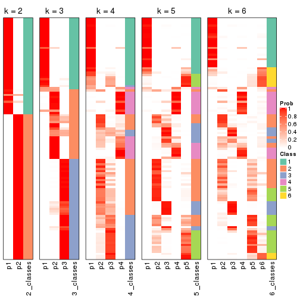
If matrix rows can be associated to genes, consider to use GO_Enrichment(res,
...) to perform function enrichment for the signature genes.
The object with results only for a single top-value method and a single partition method can be extracted as:
res = res_list["CV", "pam"]
# you can also extract it by
# res = res_list["CV:pam"]
A summary of res and all the functions that can be applied to it:
res
#> A 'ConsensusPartition' object with k = 2, 3, 4, 5, 6.
#> On a matrix with 17532 rows and 108 columns.
#> Top rows (1000, 2000, 3000, 4000, 5000) are extracted by 'CV' method.
#> Subgroups are detected by 'pam' method.
#> Performed in total 1250 partitions by row resampling.
#> Best k for subgroups seems to be 2.
#>
#> Following methods can be applied to this 'ConsensusPartition' object:
#> [1] "cola_report" "collect_classes" "collect_plots"
#> [4] "collect_stats" "colnames" "compare_signatures"
#> [7] "consensus_heatmap" "dimension_reduction" "functional_enrichment"
#> [10] "get_anno_col" "get_anno" "get_classes"
#> [13] "get_consensus" "get_matrix" "get_membership"
#> [16] "get_param" "get_signatures" "get_stats"
#> [19] "is_best_k" "is_stable_k" "membership_heatmap"
#> [22] "ncol" "nrow" "plot_ecdf"
#> [25] "rownames" "select_partition_number" "show"
#> [28] "suggest_best_k" "test_to_known_factors"
collect_plots() function collects all the plots made from res for all k (number of partitions)
into one single page to provide an easy and fast comparison between different k.
collect_plots(res)
The plots are:
k and the heatmap of
predicted classes for each k.k.k.k.All the plots in panels can be made by individual functions and they are plotted later in this section.
select_partition_number() produces several plots showing different
statistics for choosing “optimized” k. There are following statistics:
k;k, the area increased is defined as \(A_k - A_{k-1}\).The detailed explanations of these statistics can be found in the cola vignette.
Generally speaking, lower PAC score, higher mean silhouette score or higher
concordance corresponds to better partition. Rand index and Jaccard index
measure how similar the current partition is compared to partition with k-1.
If they are too similar, we won't accept k is better than k-1.
select_partition_number(res)
The numeric values for all these statistics can be obtained by get_stats().
get_stats(res)
#> k 1-PAC mean_silhouette concordance area_increased Rand Jaccard
#> 2 2 0.980 0.948 0.980 0.2559 0.759 0.759
#> 3 3 0.476 0.765 0.872 1.2756 0.621 0.513
#> 4 4 0.551 0.663 0.820 0.2010 0.851 0.659
#> 5 5 0.639 0.562 0.799 0.1000 0.836 0.524
#> 6 6 0.713 0.671 0.823 0.0548 0.940 0.744
suggest_best_k() suggests the best \(k\) based on these statistics. The rules are as follows:
NA.suggest_best_k(res)
#> [1] 2
Following shows the table of the partitions (You need to click the show/hide
code output link to see it). The membership matrix (columns with name p*)
is inferred by
clue::cl_consensus()
function with the SE method. Basically the value in the membership matrix
represents the probability to belong to a certain group. The finall class
label for an item is determined with the group with highest probability it
belongs to.
In get_classes() function, the entropy is calculated from the membership
matrix and the silhouette score is calculated from the consensus matrix.
cbind(get_classes(res, k = 2), get_membership(res, k = 2))
#> class entropy silhouette p1 p2
#> SRR1389909 2 0.0000 0.981 0.000 1.000
#> SRR1454460 2 0.0000 0.981 0.000 1.000
#> SRR1404623 2 0.0000 0.981 0.000 1.000
#> SRR1092038 2 0.0000 0.981 0.000 1.000
#> SRR1319793 2 0.0000 0.981 0.000 1.000
#> SRR1396208 2 0.0000 0.981 0.000 1.000
#> SRR1435797 2 0.0000 0.981 0.000 1.000
#> SRR1078042 2 0.0000 0.981 0.000 1.000
#> SRR1339699 2 0.0000 0.981 0.000 1.000
#> SRR1446499 2 0.0000 0.981 0.000 1.000
#> SRR1359428 2 0.0000 0.981 0.000 1.000
#> SRR1071475 1 0.0000 0.959 1.000 0.000
#> SRR1436781 2 0.0000 0.981 0.000 1.000
#> SRR1101453 2 0.0000 0.981 0.000 1.000
#> SRR1350891 2 0.0000 0.981 0.000 1.000
#> SRR814293 2 0.6438 0.787 0.164 0.836
#> SRR1471456 2 0.0000 0.981 0.000 1.000
#> SRR1446874 2 0.0000 0.981 0.000 1.000
#> SRR1362731 2 0.0000 0.981 0.000 1.000
#> SRR1413705 2 0.0000 0.981 0.000 1.000
#> SRR1434586 2 0.0000 0.981 0.000 1.000
#> SRR1091164 2 0.0000 0.981 0.000 1.000
#> SRR1340598 2 0.0000 0.981 0.000 1.000
#> SRR1466469 1 0.0000 0.959 1.000 0.000
#> SRR1099310 2 0.0000 0.981 0.000 1.000
#> SRR814892 2 0.0000 0.981 0.000 1.000
#> SRR1090698 2 0.0000 0.981 0.000 1.000
#> SRR1089134 1 0.0000 0.959 1.000 0.000
#> SRR1120276 2 0.0000 0.981 0.000 1.000
#> SRR1430507 2 0.0000 0.981 0.000 1.000
#> SRR1356078 2 0.0000 0.981 0.000 1.000
#> SRR1447037 2 0.0000 0.981 0.000 1.000
#> SRR1443544 2 0.0000 0.981 0.000 1.000
#> SRR1081987 2 0.0000 0.981 0.000 1.000
#> SRR1316513 2 0.0000 0.981 0.000 1.000
#> SRR1478457 2 0.0000 0.981 0.000 1.000
#> SRR1342849 2 0.0000 0.981 0.000 1.000
#> SRR1073878 2 0.0000 0.981 0.000 1.000
#> SRR1078735 2 0.9954 0.107 0.460 0.540
#> SRR1093601 2 0.0000 0.981 0.000 1.000
#> SRR816629 2 0.0000 0.981 0.000 1.000
#> SRR1477754 2 0.0000 0.981 0.000 1.000
#> SRR1454589 2 0.0000 0.981 0.000 1.000
#> SRR1102780 2 0.0000 0.981 0.000 1.000
#> SRR1347518 2 0.0000 0.981 0.000 1.000
#> SRR1093747 2 0.0376 0.977 0.004 0.996
#> SRR809209 2 0.0000 0.981 0.000 1.000
#> SRR1082471 2 0.0000 0.981 0.000 1.000
#> SRR1390349 2 0.0000 0.981 0.000 1.000
#> SRR1410493 2 0.0000 0.981 0.000 1.000
#> SRR1086656 2 0.0000 0.981 0.000 1.000
#> SRR1469997 2 0.0000 0.981 0.000 1.000
#> SRR1355512 2 0.0000 0.981 0.000 1.000
#> SRR809897 2 0.0000 0.981 0.000 1.000
#> SRR1436146 2 0.0000 0.981 0.000 1.000
#> SRR1097148 1 0.0000 0.959 1.000 0.000
#> SRR1429979 2 0.0000 0.981 0.000 1.000
#> SRR1454607 1 0.0000 0.959 1.000 0.000
#> SRR1420687 1 0.8763 0.589 0.704 0.296
#> SRR1099669 2 0.0000 0.981 0.000 1.000
#> SRR1360172 2 0.0000 0.981 0.000 1.000
#> SRR1478131 2 0.0000 0.981 0.000 1.000
#> SRR1453235 2 0.0000 0.981 0.000 1.000
#> SRR1369107 2 0.0000 0.981 0.000 1.000
#> SRR1096458 2 0.0000 0.981 0.000 1.000
#> SRR1088856 2 0.0000 0.981 0.000 1.000
#> SRR1432934 2 0.0000 0.981 0.000 1.000
#> SRR821072 2 0.0000 0.981 0.000 1.000
#> SRR1480896 2 0.0000 0.981 0.000 1.000
#> SRR1403344 2 0.0000 0.981 0.000 1.000
#> SRR1360850 1 0.0000 0.959 1.000 0.000
#> SRR1451820 2 0.0000 0.981 0.000 1.000
#> SRR1075360 2 0.0000 0.981 0.000 1.000
#> SRR1413373 1 0.0000 0.959 1.000 0.000
#> SRR1090928 2 0.0000 0.981 0.000 1.000
#> SRR1097124 2 0.0000 0.981 0.000 1.000
#> SRR1458745 1 0.0376 0.958 0.996 0.004
#> SRR1078636 2 0.0000 0.981 0.000 1.000
#> SRR1473754 2 0.8661 0.579 0.288 0.712
#> SRR1085736 2 0.0000 0.981 0.000 1.000
#> SRR1098807 1 0.0000 0.959 1.000 0.000
#> SRR1341583 2 0.0000 0.981 0.000 1.000
#> SRR1380869 2 0.0000 0.981 0.000 1.000
#> SRR1430775 2 0.0000 0.981 0.000 1.000
#> SRR1479573 2 0.0000 0.981 0.000 1.000
#> SRR1082352 1 0.0672 0.955 0.992 0.008
#> SRR1102005 2 0.0000 0.981 0.000 1.000
#> SRR1408415 1 0.7219 0.754 0.800 0.200
#> SRR1353537 1 0.0000 0.959 1.000 0.000
#> SRR1458870 2 0.0000 0.981 0.000 1.000
#> SRR1315495 2 0.0000 0.981 0.000 1.000
#> SRR1481169 2 0.9661 0.334 0.392 0.608
#> SRR1470273 1 0.0000 0.959 1.000 0.000
#> SRR1312446 2 0.0000 0.981 0.000 1.000
#> SRR1101859 2 0.0000 0.981 0.000 1.000
#> SRR1384210 2 0.9000 0.520 0.316 0.684
#> SRR1336244 2 0.0000 0.981 0.000 1.000
#> SRR1374432 2 0.0000 0.981 0.000 1.000
#> SRR1430023 2 0.0000 0.981 0.000 1.000
#> SRR1487527 1 0.2423 0.931 0.960 0.040
#> SRR1073389 2 0.0000 0.981 0.000 1.000
#> SRR1433171 2 0.0000 0.981 0.000 1.000
#> SRR1085565 2 0.0000 0.981 0.000 1.000
#> SRR1355017 2 0.0000 0.981 0.000 1.000
#> SRR1351641 2 0.0000 0.981 0.000 1.000
#> SRR1398230 2 0.0000 0.981 0.000 1.000
#> SRR1086212 2 0.1414 0.962 0.020 0.980
#> SRR1431514 2 0.0000 0.981 0.000 1.000
cbind(get_classes(res, k = 3), get_membership(res, k = 3))
#> class entropy silhouette p1 p2 p3
#> SRR1389909 3 0.5988 0.5970 0.000 0.368 0.632
#> SRR1454460 2 0.6305 -0.3204 0.000 0.516 0.484
#> SRR1404623 2 0.2066 0.8336 0.000 0.940 0.060
#> SRR1092038 3 0.2261 0.8328 0.000 0.068 0.932
#> SRR1319793 2 0.0237 0.8605 0.000 0.996 0.004
#> SRR1396208 3 0.5098 0.7596 0.000 0.248 0.752
#> SRR1435797 3 0.4842 0.7514 0.000 0.224 0.776
#> SRR1078042 3 0.3192 0.8222 0.000 0.112 0.888
#> SRR1339699 3 0.3816 0.8224 0.000 0.148 0.852
#> SRR1446499 2 0.3619 0.7857 0.000 0.864 0.136
#> SRR1359428 2 0.0000 0.8617 0.000 1.000 0.000
#> SRR1071475 1 0.0000 0.9344 1.000 0.000 0.000
#> SRR1436781 2 0.2448 0.8066 0.000 0.924 0.076
#> SRR1101453 2 0.5363 0.4653 0.000 0.724 0.276
#> SRR1350891 2 0.0000 0.8617 0.000 1.000 0.000
#> SRR814293 3 0.3293 0.7748 0.012 0.088 0.900
#> SRR1471456 2 0.5650 0.5746 0.000 0.688 0.312
#> SRR1446874 3 0.1411 0.8278 0.000 0.036 0.964
#> SRR1362731 2 0.0892 0.8549 0.000 0.980 0.020
#> SRR1413705 2 0.1643 0.8439 0.000 0.956 0.044
#> SRR1434586 3 0.5733 0.6212 0.000 0.324 0.676
#> SRR1091164 2 0.0237 0.8611 0.000 0.996 0.004
#> SRR1340598 3 0.6008 0.5955 0.000 0.372 0.628
#> SRR1466469 1 0.0000 0.9344 1.000 0.000 0.000
#> SRR1099310 3 0.5591 0.6775 0.000 0.304 0.696
#> SRR814892 2 0.0747 0.8560 0.000 0.984 0.016
#> SRR1090698 3 0.5988 0.6202 0.000 0.368 0.632
#> SRR1089134 1 0.0000 0.9344 1.000 0.000 0.000
#> SRR1120276 3 0.0592 0.8215 0.000 0.012 0.988
#> SRR1430507 3 0.0000 0.8184 0.000 0.000 1.000
#> SRR1356078 3 0.2878 0.8202 0.000 0.096 0.904
#> SRR1447037 3 0.2356 0.8240 0.000 0.072 0.928
#> SRR1443544 3 0.1753 0.8257 0.000 0.048 0.952
#> SRR1081987 3 0.6204 0.5377 0.000 0.424 0.576
#> SRR1316513 2 0.5016 0.5687 0.000 0.760 0.240
#> SRR1478457 3 0.1411 0.8266 0.000 0.036 0.964
#> SRR1342849 3 0.5650 0.6766 0.000 0.312 0.688
#> SRR1073878 2 0.0892 0.8549 0.000 0.980 0.020
#> SRR1078735 3 0.0000 0.8184 0.000 0.000 1.000
#> SRR1093601 2 0.1031 0.8496 0.000 0.976 0.024
#> SRR816629 3 0.3116 0.8167 0.000 0.108 0.892
#> SRR1477754 2 0.4504 0.7278 0.000 0.804 0.196
#> SRR1454589 3 0.0237 0.8197 0.000 0.004 0.996
#> SRR1102780 3 0.0237 0.8197 0.000 0.004 0.996
#> SRR1347518 3 0.6126 0.5831 0.000 0.400 0.600
#> SRR1093747 3 0.0592 0.8215 0.000 0.012 0.988
#> SRR809209 3 0.1964 0.8295 0.000 0.056 0.944
#> SRR1082471 3 0.3038 0.8171 0.000 0.104 0.896
#> SRR1390349 3 0.4291 0.7881 0.000 0.180 0.820
#> SRR1410493 3 0.2878 0.8202 0.000 0.096 0.904
#> SRR1086656 2 0.0592 0.8586 0.000 0.988 0.012
#> SRR1469997 2 0.0892 0.8548 0.000 0.980 0.020
#> SRR1355512 3 0.4931 0.7452 0.000 0.232 0.768
#> SRR809897 3 0.4842 0.7526 0.000 0.224 0.776
#> SRR1436146 2 0.5733 0.5587 0.000 0.676 0.324
#> SRR1097148 1 0.0000 0.9344 1.000 0.000 0.000
#> SRR1429979 3 0.5291 0.7363 0.000 0.268 0.732
#> SRR1454607 1 0.0000 0.9344 1.000 0.000 0.000
#> SRR1420687 3 0.3412 0.7227 0.124 0.000 0.876
#> SRR1099669 3 0.0892 0.8234 0.000 0.020 0.980
#> SRR1360172 3 0.6111 0.5878 0.000 0.396 0.604
#> SRR1478131 3 0.4750 0.7512 0.000 0.216 0.784
#> SRR1453235 3 0.3686 0.7893 0.000 0.140 0.860
#> SRR1369107 3 0.2448 0.8312 0.000 0.076 0.924
#> SRR1096458 3 0.4235 0.7892 0.000 0.176 0.824
#> SRR1088856 2 0.5497 0.4818 0.000 0.708 0.292
#> SRR1432934 2 0.0237 0.8605 0.000 0.996 0.004
#> SRR821072 3 0.5760 0.6173 0.000 0.328 0.672
#> SRR1480896 3 0.1643 0.8245 0.000 0.044 0.956
#> SRR1403344 3 0.6045 0.6121 0.000 0.380 0.620
#> SRR1360850 1 0.4291 0.8147 0.820 0.000 0.180
#> SRR1451820 2 0.0000 0.8617 0.000 1.000 0.000
#> SRR1075360 3 0.2878 0.8202 0.000 0.096 0.904
#> SRR1413373 1 0.0000 0.9344 1.000 0.000 0.000
#> SRR1090928 2 0.0000 0.8617 0.000 1.000 0.000
#> SRR1097124 2 0.5529 0.6061 0.000 0.704 0.296
#> SRR1458745 1 0.0000 0.9344 1.000 0.000 0.000
#> SRR1078636 2 0.0000 0.8617 0.000 1.000 0.000
#> SRR1473754 3 0.1860 0.8236 0.000 0.052 0.948
#> SRR1085736 3 0.3116 0.8169 0.000 0.108 0.892
#> SRR1098807 1 0.0000 0.9344 1.000 0.000 0.000
#> SRR1341583 2 0.4346 0.7405 0.000 0.816 0.184
#> SRR1380869 3 0.6168 0.5409 0.000 0.412 0.588
#> SRR1430775 3 0.1031 0.8202 0.000 0.024 0.976
#> SRR1479573 3 0.2711 0.8224 0.000 0.088 0.912
#> SRR1082352 1 0.4702 0.7855 0.788 0.000 0.212
#> SRR1102005 3 0.2878 0.8202 0.000 0.096 0.904
#> SRR1408415 3 0.6235 -0.0255 0.436 0.000 0.564
#> SRR1353537 1 0.0000 0.9344 1.000 0.000 0.000
#> SRR1458870 2 0.0000 0.8617 0.000 1.000 0.000
#> SRR1315495 2 0.0000 0.8617 0.000 1.000 0.000
#> SRR1481169 3 0.0747 0.8229 0.000 0.016 0.984
#> SRR1470273 1 0.0000 0.9344 1.000 0.000 0.000
#> SRR1312446 2 0.5327 0.6391 0.000 0.728 0.272
#> SRR1101859 3 0.3686 0.8066 0.000 0.140 0.860
#> SRR1384210 3 0.1643 0.8245 0.000 0.044 0.956
#> SRR1336244 2 0.0000 0.8617 0.000 1.000 0.000
#> SRR1374432 2 0.0000 0.8617 0.000 1.000 0.000
#> SRR1430023 3 0.2448 0.8250 0.000 0.076 0.924
#> SRR1487527 1 0.5948 0.5667 0.640 0.000 0.360
#> SRR1073389 3 0.0592 0.8215 0.000 0.012 0.988
#> SRR1433171 3 0.3412 0.8125 0.000 0.124 0.876
#> SRR1085565 3 0.1163 0.8259 0.000 0.028 0.972
#> SRR1355017 2 0.0592 0.8562 0.000 0.988 0.012
#> SRR1351641 2 0.0000 0.8617 0.000 1.000 0.000
#> SRR1398230 2 0.0000 0.8617 0.000 1.000 0.000
#> SRR1086212 3 0.5529 0.6641 0.000 0.296 0.704
#> SRR1431514 2 0.6045 0.5023 0.000 0.620 0.380
cbind(get_classes(res, k = 4), get_membership(res, k = 4))
#> class entropy silhouette p1 p2 p3 p4
#> SRR1389909 3 0.5112 0.0582 0.000 0.004 0.560 0.436
#> SRR1454460 2 0.4999 -0.1808 0.000 0.508 0.492 0.000
#> SRR1404623 2 0.0188 0.8402 0.000 0.996 0.004 0.000
#> SRR1092038 3 0.1474 0.7453 0.000 0.052 0.948 0.000
#> SRR1319793 2 0.2011 0.7821 0.000 0.920 0.000 0.080
#> SRR1396208 3 0.2831 0.7271 0.000 0.120 0.876 0.004
#> SRR1435797 3 0.4008 0.6499 0.000 0.244 0.756 0.000
#> SRR1078042 3 0.1902 0.7312 0.000 0.064 0.932 0.004
#> SRR1339699 3 0.3667 0.7158 0.000 0.088 0.856 0.056
#> SRR1446499 2 0.1022 0.8296 0.000 0.968 0.032 0.000
#> SRR1359428 2 0.0188 0.8401 0.000 0.996 0.004 0.000
#> SRR1071475 1 0.0000 0.9534 1.000 0.000 0.000 0.000
#> SRR1436781 2 0.1545 0.8069 0.000 0.952 0.040 0.008
#> SRR1101453 2 0.4483 0.4584 0.000 0.712 0.284 0.004
#> SRR1350891 2 0.0000 0.8414 0.000 1.000 0.000 0.000
#> SRR814293 4 0.4830 0.1903 0.000 0.000 0.392 0.608
#> SRR1471456 2 0.4193 0.6056 0.000 0.732 0.268 0.000
#> SRR1446874 3 0.0336 0.7325 0.000 0.000 0.992 0.008
#> SRR1362731 2 0.0000 0.8414 0.000 1.000 0.000 0.000
#> SRR1413705 4 0.3311 0.5974 0.000 0.172 0.000 0.828
#> SRR1434586 3 0.7079 0.5924 0.000 0.276 0.556 0.168
#> SRR1091164 2 0.0000 0.8414 0.000 1.000 0.000 0.000
#> SRR1340598 3 0.4843 0.4033 0.000 0.396 0.604 0.000
#> SRR1466469 1 0.0000 0.9534 1.000 0.000 0.000 0.000
#> SRR1099310 4 0.3448 0.7162 0.000 0.004 0.168 0.828
#> SRR814892 2 0.3219 0.6822 0.000 0.836 0.000 0.164
#> SRR1090698 3 0.4331 0.5993 0.000 0.288 0.712 0.000
#> SRR1089134 1 0.0000 0.9534 1.000 0.000 0.000 0.000
#> SRR1120276 3 0.3356 0.7190 0.000 0.000 0.824 0.176
#> SRR1430507 4 0.4830 0.1903 0.000 0.000 0.392 0.608
#> SRR1356078 3 0.4507 0.7359 0.000 0.044 0.788 0.168
#> SRR1447037 3 0.2329 0.6889 0.000 0.012 0.916 0.072
#> SRR1443544 3 0.0707 0.7265 0.000 0.000 0.980 0.020
#> SRR1081987 3 0.4888 0.3896 0.000 0.412 0.588 0.000
#> SRR1316513 4 0.7239 0.3446 0.000 0.344 0.156 0.500
#> SRR1478457 3 0.1474 0.7457 0.000 0.052 0.948 0.000
#> SRR1342849 3 0.4222 0.6209 0.000 0.272 0.728 0.000
#> SRR1073878 2 0.0000 0.8414 0.000 1.000 0.000 0.000
#> SRR1078735 3 0.0817 0.7279 0.000 0.000 0.976 0.024
#> SRR1093601 2 0.1610 0.8082 0.000 0.952 0.032 0.016
#> SRR816629 3 0.4589 0.7366 0.000 0.048 0.784 0.168
#> SRR1477754 2 0.6119 0.5325 0.000 0.680 0.152 0.168
#> SRR1454589 3 0.0921 0.7241 0.000 0.000 0.972 0.028
#> SRR1102780 3 0.4477 0.5756 0.000 0.000 0.688 0.312
#> SRR1347518 3 0.6466 0.5017 0.000 0.288 0.608 0.104
#> SRR1093747 3 0.3356 0.7190 0.000 0.000 0.824 0.176
#> SRR809209 3 0.0524 0.7356 0.000 0.008 0.988 0.004
#> SRR1082471 3 0.4589 0.7369 0.000 0.048 0.784 0.168
#> SRR1390349 3 0.2053 0.7415 0.000 0.072 0.924 0.004
#> SRR1410493 3 0.4507 0.7359 0.000 0.044 0.788 0.168
#> SRR1086656 2 0.0592 0.8354 0.000 0.984 0.016 0.000
#> SRR1469997 4 0.3356 0.5963 0.000 0.176 0.000 0.824
#> SRR1355512 3 0.6993 0.6150 0.000 0.260 0.572 0.168
#> SRR809897 3 0.6818 0.6475 0.000 0.232 0.600 0.168
#> SRR1436146 2 0.7354 0.1439 0.000 0.480 0.352 0.168
#> SRR1097148 1 0.0000 0.9534 1.000 0.000 0.000 0.000
#> SRR1429979 3 0.4072 0.6410 0.000 0.252 0.748 0.000
#> SRR1454607 1 0.0000 0.9534 1.000 0.000 0.000 0.000
#> SRR1420687 3 0.3486 0.7133 0.000 0.000 0.812 0.188
#> SRR1099669 3 0.3494 0.7212 0.000 0.004 0.824 0.172
#> SRR1360172 3 0.4730 0.4789 0.000 0.364 0.636 0.000
#> SRR1478131 4 0.3266 0.7168 0.000 0.000 0.168 0.832
#> SRR1453235 4 0.4222 0.6388 0.000 0.000 0.272 0.728
#> SRR1369107 3 0.1302 0.7452 0.000 0.044 0.956 0.000
#> SRR1096458 4 0.3311 0.7161 0.000 0.000 0.172 0.828
#> SRR1088856 2 0.4103 0.5345 0.000 0.744 0.256 0.000
#> SRR1432934 2 0.0000 0.8414 0.000 1.000 0.000 0.000
#> SRR821072 4 0.3311 0.7161 0.000 0.000 0.172 0.828
#> SRR1480896 3 0.4746 0.2222 0.000 0.000 0.632 0.368
#> SRR1403344 3 0.4543 0.5476 0.000 0.324 0.676 0.000
#> SRR1360850 4 0.4948 0.1608 0.440 0.000 0.000 0.560
#> SRR1451820 2 0.0000 0.8414 0.000 1.000 0.000 0.000
#> SRR1075360 3 0.4507 0.7359 0.000 0.044 0.788 0.168
#> SRR1413373 1 0.1940 0.8802 0.924 0.000 0.000 0.076
#> SRR1090928 2 0.0000 0.8414 0.000 1.000 0.000 0.000
#> SRR1097124 2 0.7221 0.2498 0.000 0.524 0.308 0.168
#> SRR1458745 1 0.4222 0.5711 0.728 0.000 0.000 0.272
#> SRR1078636 2 0.0000 0.8414 0.000 1.000 0.000 0.000
#> SRR1473754 4 0.3266 0.7168 0.000 0.000 0.168 0.832
#> SRR1085736 3 0.4746 0.7376 0.000 0.056 0.776 0.168
#> SRR1098807 1 0.0000 0.9534 1.000 0.000 0.000 0.000
#> SRR1341583 2 0.5950 0.5565 0.000 0.696 0.148 0.156
#> SRR1380869 4 0.3494 0.7147 0.000 0.004 0.172 0.824
#> SRR1430775 4 0.2760 0.5626 0.000 0.000 0.128 0.872
#> SRR1479573 3 0.4507 0.7359 0.000 0.044 0.788 0.168
#> SRR1082352 4 0.3649 0.5513 0.204 0.000 0.000 0.796
#> SRR1102005 3 0.3004 0.7546 0.000 0.048 0.892 0.060
#> SRR1408415 4 0.4452 0.5931 0.156 0.000 0.048 0.796
#> SRR1353537 1 0.0000 0.9534 1.000 0.000 0.000 0.000
#> SRR1458870 2 0.0592 0.8354 0.000 0.984 0.016 0.000
#> SRR1315495 2 0.0000 0.8414 0.000 1.000 0.000 0.000
#> SRR1481169 4 0.3266 0.7168 0.000 0.000 0.168 0.832
#> SRR1470273 1 0.0000 0.9534 1.000 0.000 0.000 0.000
#> SRR1312446 2 0.3907 0.6496 0.000 0.768 0.232 0.000
#> SRR1101859 3 0.4849 0.7380 0.000 0.064 0.772 0.164
#> SRR1384210 3 0.4761 0.2130 0.000 0.000 0.628 0.372
#> SRR1336244 2 0.0000 0.8414 0.000 1.000 0.000 0.000
#> SRR1374432 2 0.0000 0.8414 0.000 1.000 0.000 0.000
#> SRR1430023 3 0.4095 0.7300 0.000 0.024 0.804 0.172
#> SRR1487527 4 0.5643 0.1646 0.428 0.000 0.024 0.548
#> SRR1073389 3 0.3356 0.7190 0.000 0.000 0.824 0.176
#> SRR1433171 3 0.4798 0.7329 0.000 0.052 0.768 0.180
#> SRR1085565 3 0.0592 0.7270 0.000 0.000 0.984 0.016
#> SRR1355017 2 0.4040 0.5502 0.000 0.752 0.000 0.248
#> SRR1351641 2 0.0000 0.8414 0.000 1.000 0.000 0.000
#> SRR1398230 2 0.0000 0.8414 0.000 1.000 0.000 0.000
#> SRR1086212 4 0.3266 0.7168 0.000 0.000 0.168 0.832
#> SRR1431514 4 0.4855 0.2372 0.000 0.004 0.352 0.644
cbind(get_classes(res, k = 5), get_membership(res, k = 5))
#> class entropy silhouette p1 p2 p3 p4 p5
#> SRR1389909 3 0.6455 0.1590 0.000 0.000 0.500 0.236 0.264
#> SRR1454460 3 0.4626 0.3921 0.000 0.364 0.616 0.000 0.020
#> SRR1404623 2 0.0404 0.7951 0.000 0.988 0.000 0.000 0.012
#> SRR1092038 3 0.4716 0.2359 0.000 0.036 0.656 0.000 0.308
#> SRR1319793 2 0.2172 0.7399 0.000 0.908 0.016 0.076 0.000
#> SRR1396208 5 0.5924 0.1102 0.000 0.096 0.376 0.004 0.524
#> SRR1435797 5 0.6076 0.2125 0.000 0.232 0.196 0.000 0.572
#> SRR1078042 3 0.0162 0.4666 0.000 0.000 0.996 0.000 0.004
#> SRR1339699 5 0.6673 0.0581 0.000 0.076 0.376 0.056 0.492
#> SRR1446499 2 0.1168 0.7788 0.000 0.960 0.008 0.000 0.032
#> SRR1359428 2 0.0798 0.7893 0.000 0.976 0.008 0.000 0.016
#> SRR1071475 1 0.0000 0.9528 1.000 0.000 0.000 0.000 0.000
#> SRR1436781 2 0.1831 0.7581 0.000 0.920 0.076 0.004 0.000
#> SRR1101453 3 0.5594 0.2010 0.000 0.436 0.492 0.000 0.072
#> SRR1350891 2 0.0000 0.7975 0.000 1.000 0.000 0.000 0.000
#> SRR814293 5 0.4152 0.4230 0.000 0.000 0.012 0.296 0.692
#> SRR1471456 3 0.2891 0.3600 0.000 0.176 0.824 0.000 0.000
#> SRR1446874 5 0.3266 0.5817 0.000 0.000 0.200 0.004 0.796
#> SRR1362731 2 0.0162 0.7979 0.000 0.996 0.000 0.000 0.004
#> SRR1413705 4 0.0162 0.8214 0.000 0.004 0.000 0.996 0.000
#> SRR1434586 3 0.6651 0.3112 0.000 0.256 0.444 0.000 0.300
#> SRR1091164 2 0.3305 0.5292 0.000 0.776 0.224 0.000 0.000
#> SRR1340598 3 0.5606 0.2313 0.000 0.104 0.600 0.000 0.296
#> SRR1466469 1 0.0000 0.9528 1.000 0.000 0.000 0.000 0.000
#> SRR1099310 4 0.0162 0.8214 0.000 0.000 0.000 0.996 0.004
#> SRR814892 2 0.3723 0.6437 0.000 0.804 0.044 0.152 0.000
#> SRR1090698 3 0.6790 0.3292 0.000 0.300 0.384 0.000 0.316
#> SRR1089134 1 0.0000 0.9528 1.000 0.000 0.000 0.000 0.000
#> SRR1120276 5 0.4367 0.2242 0.000 0.000 0.416 0.004 0.580
#> SRR1430507 5 0.4152 0.4230 0.000 0.000 0.012 0.296 0.692
#> SRR1356078 5 0.0566 0.6837 0.000 0.012 0.004 0.000 0.984
#> SRR1447037 3 0.5087 0.2173 0.000 0.000 0.644 0.064 0.292
#> SRR1443544 5 0.4264 0.3109 0.000 0.000 0.376 0.004 0.620
#> SRR1081987 2 0.6529 -0.2488 0.000 0.476 0.228 0.000 0.296
#> SRR1316513 4 0.5091 0.3642 0.000 0.304 0.032 0.648 0.016
#> SRR1478457 5 0.3954 0.5687 0.000 0.036 0.192 0.000 0.772
#> SRR1342849 3 0.6762 0.2685 0.000 0.268 0.376 0.000 0.356
#> SRR1073878 2 0.0000 0.7975 0.000 1.000 0.000 0.000 0.000
#> SRR1078735 5 0.3160 0.5929 0.000 0.000 0.188 0.004 0.808
#> SRR1093601 2 0.4687 0.4292 0.000 0.636 0.336 0.028 0.000
#> SRR816629 5 0.4309 0.3808 0.000 0.016 0.308 0.000 0.676
#> SRR1477754 2 0.4436 0.2339 0.000 0.596 0.008 0.000 0.396
#> SRR1454589 5 0.3462 0.5814 0.000 0.000 0.196 0.012 0.792
#> SRR1102780 5 0.2761 0.6292 0.000 0.000 0.024 0.104 0.872
#> SRR1347518 3 0.7399 0.3251 0.000 0.292 0.368 0.028 0.312
#> SRR1093747 5 0.0566 0.6777 0.000 0.000 0.012 0.004 0.984
#> SRR809209 5 0.4228 0.5588 0.000 0.032 0.216 0.004 0.748
#> SRR1082471 5 0.1251 0.6786 0.000 0.036 0.008 0.000 0.956
#> SRR1390349 5 0.5697 0.1684 0.000 0.076 0.376 0.004 0.544
#> SRR1410493 5 0.0693 0.6838 0.000 0.012 0.008 0.000 0.980
#> SRR1086656 2 0.4738 -0.1023 0.000 0.520 0.464 0.000 0.016
#> SRR1469997 4 0.0162 0.8214 0.000 0.004 0.000 0.996 0.000
#> SRR1355512 5 0.3809 0.3845 0.000 0.256 0.008 0.000 0.736
#> SRR809897 5 0.3759 0.4498 0.000 0.220 0.016 0.000 0.764
#> SRR1436146 5 0.3966 0.3434 0.000 0.336 0.000 0.000 0.664
#> SRR1097148 1 0.0000 0.9528 1.000 0.000 0.000 0.000 0.000
#> SRR1429979 3 0.5167 0.5168 0.000 0.240 0.668 0.000 0.092
#> SRR1454607 1 0.0000 0.9528 1.000 0.000 0.000 0.000 0.000
#> SRR1420687 5 0.0566 0.6777 0.000 0.000 0.012 0.004 0.984
#> SRR1099669 5 0.0404 0.6789 0.000 0.000 0.012 0.000 0.988
#> SRR1360172 3 0.4546 0.4708 0.000 0.304 0.668 0.000 0.028
#> SRR1478131 4 0.0000 0.8220 0.000 0.000 0.000 1.000 0.000
#> SRR1453235 4 0.3546 0.6947 0.000 0.004 0.116 0.832 0.048
#> SRR1369107 3 0.4484 0.2378 0.000 0.024 0.668 0.000 0.308
#> SRR1096458 4 0.3895 0.5693 0.000 0.000 0.320 0.680 0.000
#> SRR1088856 3 0.5044 0.1605 0.000 0.464 0.504 0.000 0.032
#> SRR1432934 2 0.1121 0.7765 0.000 0.956 0.044 0.000 0.000
#> SRR821072 4 0.0162 0.8214 0.000 0.000 0.004 0.996 0.000
#> SRR1480896 4 0.6450 0.0553 0.000 0.000 0.212 0.492 0.296
#> SRR1403344 3 0.4708 0.4833 0.000 0.292 0.668 0.000 0.040
#> SRR1360850 4 0.4181 0.5376 0.268 0.000 0.000 0.712 0.020
#> SRR1451820 2 0.0566 0.7950 0.000 0.984 0.012 0.000 0.004
#> SRR1075360 5 0.0693 0.6838 0.000 0.012 0.008 0.000 0.980
#> SRR1413373 1 0.1965 0.8639 0.904 0.000 0.000 0.096 0.000
#> SRR1090928 2 0.0162 0.7979 0.000 0.996 0.000 0.000 0.004
#> SRR1097124 5 0.5237 0.3154 0.000 0.072 0.300 0.000 0.628
#> SRR1458745 1 0.3636 0.5882 0.728 0.000 0.000 0.272 0.000
#> SRR1078636 2 0.0000 0.7975 0.000 1.000 0.000 0.000 0.000
#> SRR1473754 4 0.0000 0.8220 0.000 0.000 0.000 1.000 0.000
#> SRR1085736 5 0.1331 0.6773 0.000 0.040 0.008 0.000 0.952
#> SRR1098807 1 0.0000 0.9528 1.000 0.000 0.000 0.000 0.000
#> SRR1341583 2 0.6792 -0.2380 0.000 0.380 0.324 0.000 0.296
#> SRR1380869 4 0.0162 0.8214 0.000 0.000 0.000 0.996 0.004
#> SRR1430775 4 0.2361 0.7523 0.000 0.000 0.012 0.892 0.096
#> SRR1479573 5 0.0693 0.6838 0.000 0.012 0.008 0.000 0.980
#> SRR1082352 4 0.0880 0.8074 0.032 0.000 0.000 0.968 0.000
#> SRR1102005 5 0.3531 0.6109 0.000 0.036 0.148 0.000 0.816
#> SRR1408415 4 0.0566 0.8169 0.000 0.000 0.012 0.984 0.004
#> SRR1353537 1 0.0000 0.9528 1.000 0.000 0.000 0.000 0.000
#> SRR1458870 2 0.0912 0.7865 0.000 0.972 0.012 0.000 0.016
#> SRR1315495 2 0.0162 0.7979 0.000 0.996 0.000 0.000 0.004
#> SRR1481169 4 0.0000 0.8220 0.000 0.000 0.000 1.000 0.000
#> SRR1470273 1 0.0000 0.9528 1.000 0.000 0.000 0.000 0.000
#> SRR1312446 2 0.3424 0.5094 0.000 0.760 0.000 0.000 0.240
#> SRR1101859 5 0.1750 0.6783 0.000 0.036 0.028 0.000 0.936
#> SRR1384210 3 0.6807 0.1542 0.000 0.000 0.368 0.328 0.304
#> SRR1336244 2 0.0162 0.7979 0.000 0.996 0.000 0.000 0.004
#> SRR1374432 2 0.1121 0.7765 0.000 0.956 0.044 0.000 0.000
#> SRR1430023 5 0.4066 0.3628 0.000 0.004 0.324 0.000 0.672
#> SRR1487527 4 0.4645 0.5250 0.268 0.000 0.000 0.688 0.044
#> SRR1073389 5 0.0566 0.6777 0.000 0.000 0.012 0.004 0.984
#> SRR1433171 5 0.2144 0.6625 0.000 0.020 0.068 0.000 0.912
#> SRR1085565 3 0.0609 0.4593 0.000 0.000 0.980 0.000 0.020
#> SRR1355017 2 0.4477 0.5121 0.000 0.708 0.040 0.252 0.000
#> SRR1351641 2 0.0162 0.7972 0.000 0.996 0.004 0.000 0.000
#> SRR1398230 2 0.0000 0.7975 0.000 1.000 0.000 0.000 0.000
#> SRR1086212 4 0.0000 0.8220 0.000 0.000 0.000 1.000 0.000
#> SRR1431514 4 0.4310 0.2633 0.000 0.000 0.004 0.604 0.392
cbind(get_classes(res, k = 6), get_membership(res, k = 6))
#> class entropy silhouette p1 p2 p3 p4 p5 p6
#> SRR1389909 6 0.0713 0.8082 0.000 0.000 0.000 0.028 0.000 0.972
#> SRR1454460 3 0.1075 0.6505 0.000 0.048 0.952 0.000 0.000 0.000
#> SRR1404623 2 0.1141 0.8011 0.000 0.948 0.052 0.000 0.000 0.000
#> SRR1092038 3 0.0713 0.6651 0.000 0.000 0.972 0.000 0.028 0.000
#> SRR1319793 2 0.2277 0.7622 0.000 0.892 0.032 0.076 0.000 0.000
#> SRR1396208 3 0.5991 0.4754 0.000 0.032 0.580 0.004 0.232 0.152
#> SRR1435797 5 0.7375 0.1547 0.000 0.196 0.256 0.000 0.396 0.152
#> SRR1078042 6 0.2378 0.7967 0.000 0.000 0.152 0.000 0.000 0.848
#> SRR1339699 3 0.3645 0.6308 0.000 0.000 0.784 0.000 0.064 0.152
#> SRR1446499 2 0.1700 0.7812 0.000 0.916 0.080 0.000 0.004 0.000
#> SRR1359428 2 0.1556 0.7845 0.000 0.920 0.080 0.000 0.000 0.000
#> SRR1071475 1 0.0000 0.9466 1.000 0.000 0.000 0.000 0.000 0.000
#> SRR1436781 2 0.4423 0.2140 0.000 0.552 0.028 0.000 0.000 0.420
#> SRR1101453 3 0.3063 0.5728 0.000 0.092 0.840 0.000 0.068 0.000
#> SRR1350891 2 0.0146 0.8129 0.000 0.996 0.004 0.000 0.000 0.000
#> SRR814293 5 0.1387 0.7311 0.000 0.000 0.000 0.068 0.932 0.000
#> SRR1471456 6 0.3076 0.7435 0.000 0.000 0.240 0.000 0.000 0.760
#> SRR1446874 5 0.4765 0.5449 0.000 0.000 0.172 0.000 0.676 0.152
#> SRR1362731 2 0.0713 0.8104 0.000 0.972 0.028 0.000 0.000 0.000
#> SRR1413705 4 0.0146 0.8306 0.000 0.004 0.000 0.996 0.000 0.000
#> SRR1434586 3 0.5571 0.3756 0.000 0.224 0.552 0.000 0.224 0.000
#> SRR1091164 2 0.3101 0.5935 0.000 0.756 0.244 0.000 0.000 0.000
#> SRR1340598 6 0.0458 0.7839 0.000 0.000 0.000 0.000 0.016 0.984
#> SRR1466469 1 0.0146 0.9466 0.996 0.000 0.000 0.004 0.000 0.000
#> SRR1099310 4 0.0146 0.8308 0.000 0.000 0.000 0.996 0.000 0.004
#> SRR814892 2 0.4054 0.6337 0.000 0.740 0.188 0.072 0.000 0.000
#> SRR1090698 3 0.6376 0.5429 0.000 0.228 0.548 0.000 0.072 0.152
#> SRR1089134 1 0.0146 0.9466 0.996 0.000 0.000 0.004 0.000 0.000
#> SRR1120276 5 0.3782 0.2469 0.000 0.000 0.412 0.000 0.588 0.000
#> SRR1430507 5 0.1327 0.7324 0.000 0.000 0.000 0.064 0.936 0.000
#> SRR1356078 5 0.1267 0.7679 0.000 0.000 0.060 0.000 0.940 0.000
#> SRR1447037 6 0.0000 0.7970 0.000 0.000 0.000 0.000 0.000 1.000
#> SRR1443544 3 0.5611 0.3007 0.000 0.000 0.484 0.000 0.364 0.152
#> SRR1081987 2 0.6784 -0.0511 0.000 0.476 0.300 0.008 0.064 0.152
#> SRR1316513 4 0.4377 0.5132 0.000 0.244 0.068 0.688 0.000 0.000
#> SRR1478457 5 0.5373 0.5073 0.000 0.004 0.248 0.000 0.596 0.152
#> SRR1342849 3 0.5038 0.6325 0.000 0.076 0.708 0.000 0.064 0.152
#> SRR1073878 2 0.0146 0.8129 0.000 0.996 0.004 0.000 0.000 0.000
#> SRR1078735 5 0.4703 0.5503 0.000 0.000 0.164 0.000 0.684 0.152
#> SRR1093601 6 0.2378 0.7302 0.000 0.152 0.000 0.000 0.000 0.848
#> SRR816629 5 0.2838 0.7065 0.000 0.004 0.188 0.000 0.808 0.000
#> SRR1477754 2 0.4972 0.1476 0.000 0.536 0.072 0.000 0.392 0.000
#> SRR1454589 5 0.4946 0.5439 0.000 0.000 0.164 0.008 0.676 0.152
#> SRR1102780 5 0.1708 0.7507 0.000 0.000 0.024 0.040 0.932 0.004
#> SRR1347518 3 0.6358 0.5568 0.000 0.208 0.568 0.004 0.068 0.152
#> SRR1093747 5 0.0000 0.7602 0.000 0.000 0.000 0.000 1.000 0.000
#> SRR809209 5 0.5447 0.4715 0.000 0.000 0.264 0.004 0.580 0.152
#> SRR1082471 5 0.1610 0.7631 0.000 0.000 0.084 0.000 0.916 0.000
#> SRR1390349 3 0.5717 0.5026 0.000 0.020 0.604 0.004 0.220 0.152
#> SRR1410493 5 0.1327 0.7672 0.000 0.000 0.064 0.000 0.936 0.000
#> SRR1086656 3 0.3774 0.2106 0.000 0.408 0.592 0.000 0.000 0.000
#> SRR1469997 4 0.1010 0.8210 0.000 0.004 0.036 0.960 0.000 0.000
#> SRR1355512 5 0.4349 0.5437 0.000 0.208 0.084 0.000 0.708 0.000
#> SRR809897 5 0.6243 0.4781 0.000 0.184 0.088 0.000 0.584 0.144
#> SRR1436146 5 0.3595 0.5529 0.000 0.288 0.008 0.000 0.704 0.000
#> SRR1097148 1 0.0000 0.9466 1.000 0.000 0.000 0.000 0.000 0.000
#> SRR1429979 3 0.0000 0.6701 0.000 0.000 1.000 0.000 0.000 0.000
#> SRR1454607 1 0.0000 0.9466 1.000 0.000 0.000 0.000 0.000 0.000
#> SRR1420687 5 0.0000 0.7602 0.000 0.000 0.000 0.000 1.000 0.000
#> SRR1099669 5 0.0000 0.7602 0.000 0.000 0.000 0.000 1.000 0.000
#> SRR1360172 3 0.0000 0.6701 0.000 0.000 1.000 0.000 0.000 0.000
#> SRR1478131 4 0.0146 0.8313 0.000 0.000 0.000 0.996 0.004 0.000
#> SRR1453235 4 0.2563 0.7497 0.000 0.004 0.108 0.872 0.008 0.008
#> SRR1369107 3 0.0260 0.6681 0.000 0.000 0.992 0.000 0.008 0.000
#> SRR1096458 6 0.2416 0.7332 0.000 0.000 0.000 0.156 0.000 0.844
#> SRR1088856 3 0.2416 0.5577 0.000 0.156 0.844 0.000 0.000 0.000
#> SRR1432934 2 0.2260 0.7436 0.000 0.860 0.140 0.000 0.000 0.000
#> SRR821072 4 0.1663 0.7932 0.000 0.000 0.000 0.912 0.000 0.088
#> SRR1480896 4 0.6559 0.2093 0.000 0.000 0.260 0.512 0.076 0.152
#> SRR1403344 3 0.0000 0.6701 0.000 0.000 1.000 0.000 0.000 0.000
#> SRR1360850 4 0.4402 0.5383 0.268 0.000 0.000 0.672 0.060 0.000
#> SRR1451820 2 0.0458 0.8111 0.000 0.984 0.016 0.000 0.000 0.000
#> SRR1075360 5 0.1327 0.7672 0.000 0.000 0.064 0.000 0.936 0.000
#> SRR1413373 1 0.1765 0.8563 0.904 0.000 0.000 0.096 0.000 0.000
#> SRR1090928 2 0.0632 0.8113 0.000 0.976 0.024 0.000 0.000 0.000
#> SRR1097124 5 0.3354 0.7094 0.000 0.060 0.128 0.000 0.812 0.000
#> SRR1458745 1 0.3266 0.5979 0.728 0.000 0.000 0.272 0.000 0.000
#> SRR1078636 2 0.0146 0.8129 0.000 0.996 0.004 0.000 0.000 0.000
#> SRR1473754 4 0.0146 0.8313 0.000 0.000 0.000 0.996 0.004 0.000
#> SRR1085736 5 0.1701 0.7655 0.000 0.008 0.072 0.000 0.920 0.000
#> SRR1098807 1 0.0000 0.9466 1.000 0.000 0.000 0.000 0.000 0.000
#> SRR1341583 2 0.5932 -0.1102 0.000 0.396 0.392 0.000 0.212 0.000
#> SRR1380869 4 0.0146 0.8308 0.000 0.000 0.000 0.996 0.000 0.004
#> SRR1430775 4 0.1714 0.7785 0.000 0.000 0.000 0.908 0.092 0.000
#> SRR1479573 5 0.1556 0.7677 0.000 0.000 0.080 0.000 0.920 0.000
#> SRR1082352 4 0.0935 0.8249 0.032 0.000 0.000 0.964 0.004 0.000
#> SRR1102005 5 0.3271 0.6711 0.000 0.000 0.232 0.000 0.760 0.008
#> SRR1408415 4 0.0790 0.8252 0.000 0.000 0.000 0.968 0.032 0.000
#> SRR1353537 1 0.0146 0.9466 0.996 0.000 0.000 0.004 0.000 0.000
#> SRR1458870 2 0.1501 0.7878 0.000 0.924 0.076 0.000 0.000 0.000
#> SRR1315495 2 0.0146 0.8129 0.000 0.996 0.004 0.000 0.000 0.000
#> SRR1481169 4 0.0146 0.8313 0.000 0.000 0.000 0.996 0.004 0.000
#> SRR1470273 1 0.0146 0.9466 0.996 0.000 0.000 0.004 0.000 0.000
#> SRR1312446 2 0.2562 0.6658 0.000 0.828 0.000 0.000 0.172 0.000
#> SRR1101859 5 0.2748 0.7512 0.000 0.016 0.120 0.000 0.856 0.008
#> SRR1384210 3 0.6131 0.5226 0.000 0.000 0.608 0.120 0.124 0.148
#> SRR1336244 2 0.0146 0.8129 0.000 0.996 0.004 0.000 0.000 0.000
#> SRR1374432 2 0.1957 0.7616 0.000 0.888 0.112 0.000 0.000 0.000
#> SRR1430023 5 0.3175 0.5846 0.000 0.000 0.256 0.000 0.744 0.000
#> SRR1487527 4 0.4700 0.5210 0.268 0.000 0.000 0.648 0.084 0.000
#> SRR1073389 5 0.0000 0.7602 0.000 0.000 0.000 0.000 1.000 0.000
#> SRR1433171 5 0.3976 0.7120 0.000 0.008 0.088 0.000 0.776 0.128
#> SRR1085565 6 0.3290 0.7299 0.000 0.000 0.252 0.000 0.004 0.744
#> SRR1355017 2 0.3508 0.5500 0.000 0.704 0.292 0.004 0.000 0.000
#> SRR1351641 2 0.0146 0.8116 0.000 0.996 0.004 0.000 0.000 0.000
#> SRR1398230 2 0.0146 0.8129 0.000 0.996 0.004 0.000 0.000 0.000
#> SRR1086212 4 0.1556 0.7986 0.000 0.000 0.000 0.920 0.000 0.080
#> SRR1431514 4 0.3807 0.3380 0.000 0.000 0.004 0.628 0.368 0.000
Heatmaps for the consensus matrix. It visualizes the probability of two samples to be in a same group.
consensus_heatmap(res, k = 2)
consensus_heatmap(res, k = 3)
consensus_heatmap(res, k = 4)
consensus_heatmap(res, k = 5)
consensus_heatmap(res, k = 6)
Heatmaps for the membership of samples in all partitions to see how consistent they are:
membership_heatmap(res, k = 2)
membership_heatmap(res, k = 3)
membership_heatmap(res, k = 4)

membership_heatmap(res, k = 5)
membership_heatmap(res, k = 6)
As soon as we have had the classes for columns, we can look for signatures which are significantly different between classes which can be candidate marks for certain classes. Following are the heatmaps for signatures.
Signature heatmaps where rows are scaled:
get_signatures(res, k = 2)
get_signatures(res, k = 3)
get_signatures(res, k = 4)
get_signatures(res, k = 5)
get_signatures(res, k = 6)
Signature heatmaps where rows are not scaled:
get_signatures(res, k = 2, scale_rows = FALSE)
get_signatures(res, k = 3, scale_rows = FALSE)
get_signatures(res, k = 4, scale_rows = FALSE)
get_signatures(res, k = 5, scale_rows = FALSE)
get_signatures(res, k = 6, scale_rows = FALSE)
Compare the overlap of signatures from different k:
compare_signatures(res)
get_signature() returns a data frame invisibly. TO get the list of signatures, the function
call should be assigned to a variable explicitly. In following code, if plot argument is set
to FALSE, no heatmap is plotted while only the differential analysis is performed.
# code only for demonstration
tb = get_signature(res, k = ..., plot = FALSE)
An example of the output of tb is:
#> which_row fdr mean_1 mean_2 scaled_mean_1 scaled_mean_2 km
#> 1 38 0.042760348 8.373488 9.131774 -0.5533452 0.5164555 1
#> 2 40 0.018707592 7.106213 8.469186 -0.6173731 0.5762149 1
#> 3 55 0.019134737 10.221463 11.207825 -0.6159697 0.5749050 1
#> 4 59 0.006059896 5.921854 7.869574 -0.6899429 0.6439467 1
#> 5 60 0.018055526 8.928898 10.211722 -0.6204761 0.5791110 1
#> 6 98 0.009384629 15.714769 14.887706 0.6635654 -0.6193277 2
...
The columns in tb are:
which_row: row indices corresponding to the input matrix.fdr: FDR for the differential test. mean_x: The mean value in group x.scaled_mean_x: The mean value in group x after rows are scaled.km: Row groups if k-means clustering is applied to rows.UMAP plot which shows how samples are separated.
dimension_reduction(res, k = 2, method = "UMAP")
dimension_reduction(res, k = 3, method = "UMAP")
dimension_reduction(res, k = 4, method = "UMAP")

dimension_reduction(res, k = 5, method = "UMAP")
dimension_reduction(res, k = 6, method = "UMAP")
Following heatmap shows how subgroups are split when increasing k:
collect_classes(res)
If matrix rows can be associated to genes, consider to use GO_Enrichment(res,
...) to perform function enrichment for the signature genes.
The object with results only for a single top-value method and a single partition method can be extracted as:
res = res_list["CV", "mclust"]
# you can also extract it by
# res = res_list["CV:mclust"]
A summary of res and all the functions that can be applied to it:
res
#> A 'ConsensusPartition' object with k = 2, 3, 4, 5, 6.
#> On a matrix with 17532 rows and 108 columns.
#> Top rows (1000, 2000, 3000, 4000, 5000) are extracted by 'CV' method.
#> Subgroups are detected by 'mclust' method.
#> Performed in total 1250 partitions by row resampling.
#> Best k for subgroups seems to be 2.
#>
#> Following methods can be applied to this 'ConsensusPartition' object:
#> [1] "cola_report" "collect_classes" "collect_plots"
#> [4] "collect_stats" "colnames" "compare_signatures"
#> [7] "consensus_heatmap" "dimension_reduction" "functional_enrichment"
#> [10] "get_anno_col" "get_anno" "get_classes"
#> [13] "get_consensus" "get_matrix" "get_membership"
#> [16] "get_param" "get_signatures" "get_stats"
#> [19] "is_best_k" "is_stable_k" "membership_heatmap"
#> [22] "ncol" "nrow" "plot_ecdf"
#> [25] "rownames" "select_partition_number" "show"
#> [28] "suggest_best_k" "test_to_known_factors"
collect_plots() function collects all the plots made from res for all k (number of partitions)
into one single page to provide an easy and fast comparison between different k.
collect_plots(res)
The plots are:
k and the heatmap of
predicted classes for each k.k.k.k.All the plots in panels can be made by individual functions and they are plotted later in this section.
select_partition_number() produces several plots showing different
statistics for choosing “optimized” k. There are following statistics:
k;k, the area increased is defined as \(A_k - A_{k-1}\).The detailed explanations of these statistics can be found in the cola vignette.
Generally speaking, lower PAC score, higher mean silhouette score or higher
concordance corresponds to better partition. Rand index and Jaccard index
measure how similar the current partition is compared to partition with k-1.
If they are too similar, we won't accept k is better than k-1.
select_partition_number(res)

The numeric values for all these statistics can be obtained by get_stats().
get_stats(res)
#> k 1-PAC mean_silhouette concordance area_increased Rand Jaccard
#> 2 2 1.000 0.993 0.996 0.2142 0.786 0.786
#> 3 3 0.295 0.464 0.738 1.4279 0.629 0.528
#> 4 4 0.336 0.485 0.720 0.2785 0.721 0.420
#> 5 5 0.525 0.605 0.749 0.1410 0.860 0.550
#> 6 6 0.580 0.534 0.703 0.0572 0.872 0.504
suggest_best_k() suggests the best \(k\) based on these statistics. The rules are as follows:
NA.suggest_best_k(res)
#> [1] 2
Following shows the table of the partitions (You need to click the show/hide
code output link to see it). The membership matrix (columns with name p*)
is inferred by
clue::cl_consensus()
function with the SE method. Basically the value in the membership matrix
represents the probability to belong to a certain group. The finall class
label for an item is determined with the group with highest probability it
belongs to.
In get_classes() function, the entropy is calculated from the membership
matrix and the silhouette score is calculated from the consensus matrix.
cbind(get_classes(res, k = 2), get_membership(res, k = 2))
#> class entropy silhouette p1 p2
#> SRR1389909 2 0.0000 0.998 0.000 1.000
#> SRR1454460 2 0.0000 0.998 0.000 1.000
#> SRR1404623 2 0.0000 0.998 0.000 1.000
#> SRR1092038 2 0.0000 0.998 0.000 1.000
#> SRR1319793 2 0.0000 0.998 0.000 1.000
#> SRR1396208 2 0.0000 0.998 0.000 1.000
#> SRR1435797 2 0.0000 0.998 0.000 1.000
#> SRR1078042 2 0.0000 0.998 0.000 1.000
#> SRR1339699 2 0.0000 0.998 0.000 1.000
#> SRR1446499 2 0.0000 0.998 0.000 1.000
#> SRR1359428 2 0.0000 0.998 0.000 1.000
#> SRR1071475 1 0.0000 0.983 1.000 0.000
#> SRR1436781 2 0.0000 0.998 0.000 1.000
#> SRR1101453 2 0.0000 0.998 0.000 1.000
#> SRR1350891 2 0.0000 0.998 0.000 1.000
#> SRR814293 2 0.0000 0.998 0.000 1.000
#> SRR1471456 2 0.0000 0.998 0.000 1.000
#> SRR1446874 2 0.0000 0.998 0.000 1.000
#> SRR1362731 2 0.0000 0.998 0.000 1.000
#> SRR1413705 2 0.0000 0.998 0.000 1.000
#> SRR1434586 2 0.0000 0.998 0.000 1.000
#> SRR1091164 2 0.0000 0.998 0.000 1.000
#> SRR1340598 2 0.0000 0.998 0.000 1.000
#> SRR1466469 1 0.0000 0.983 1.000 0.000
#> SRR1099310 2 0.0000 0.998 0.000 1.000
#> SRR814892 2 0.0000 0.998 0.000 1.000
#> SRR1090698 2 0.0000 0.998 0.000 1.000
#> SRR1089134 1 0.0000 0.983 1.000 0.000
#> SRR1120276 2 0.0000 0.998 0.000 1.000
#> SRR1430507 2 0.0000 0.998 0.000 1.000
#> SRR1356078 2 0.0000 0.998 0.000 1.000
#> SRR1447037 2 0.0000 0.998 0.000 1.000
#> SRR1443544 2 0.0000 0.998 0.000 1.000
#> SRR1081987 2 0.0000 0.998 0.000 1.000
#> SRR1316513 2 0.0000 0.998 0.000 1.000
#> SRR1478457 2 0.0000 0.998 0.000 1.000
#> SRR1342849 2 0.0000 0.998 0.000 1.000
#> SRR1073878 2 0.0000 0.998 0.000 1.000
#> SRR1078735 2 0.0672 0.990 0.008 0.992
#> SRR1093601 2 0.0000 0.998 0.000 1.000
#> SRR816629 2 0.0000 0.998 0.000 1.000
#> SRR1477754 2 0.0000 0.998 0.000 1.000
#> SRR1454589 2 0.0000 0.998 0.000 1.000
#> SRR1102780 2 0.0000 0.998 0.000 1.000
#> SRR1347518 2 0.0000 0.998 0.000 1.000
#> SRR1093747 2 0.0000 0.998 0.000 1.000
#> SRR809209 2 0.0000 0.998 0.000 1.000
#> SRR1082471 2 0.0000 0.998 0.000 1.000
#> SRR1390349 2 0.0000 0.998 0.000 1.000
#> SRR1410493 2 0.0000 0.998 0.000 1.000
#> SRR1086656 2 0.0000 0.998 0.000 1.000
#> SRR1469997 2 0.0000 0.998 0.000 1.000
#> SRR1355512 2 0.0000 0.998 0.000 1.000
#> SRR809897 2 0.0000 0.998 0.000 1.000
#> SRR1436146 2 0.0000 0.998 0.000 1.000
#> SRR1097148 1 0.0000 0.983 1.000 0.000
#> SRR1429979 2 0.0000 0.998 0.000 1.000
#> SRR1454607 1 0.0000 0.983 1.000 0.000
#> SRR1420687 2 0.0938 0.986 0.012 0.988
#> SRR1099669 2 0.0000 0.998 0.000 1.000
#> SRR1360172 2 0.0000 0.998 0.000 1.000
#> SRR1478131 2 0.0000 0.998 0.000 1.000
#> SRR1453235 2 0.0000 0.998 0.000 1.000
#> SRR1369107 2 0.0000 0.998 0.000 1.000
#> SRR1096458 2 0.0000 0.998 0.000 1.000
#> SRR1088856 2 0.0000 0.998 0.000 1.000
#> SRR1432934 2 0.0000 0.998 0.000 1.000
#> SRR821072 2 0.0000 0.998 0.000 1.000
#> SRR1480896 2 0.0000 0.998 0.000 1.000
#> SRR1403344 2 0.0000 0.998 0.000 1.000
#> SRR1360850 1 0.0000 0.983 1.000 0.000
#> SRR1451820 2 0.0000 0.998 0.000 1.000
#> SRR1075360 2 0.0000 0.998 0.000 1.000
#> SRR1413373 1 0.4298 0.910 0.912 0.088
#> SRR1090928 2 0.0000 0.998 0.000 1.000
#> SRR1097124 2 0.0000 0.998 0.000 1.000
#> SRR1458745 1 0.4815 0.892 0.896 0.104
#> SRR1078636 2 0.0000 0.998 0.000 1.000
#> SRR1473754 2 0.0000 0.998 0.000 1.000
#> SRR1085736 2 0.0000 0.998 0.000 1.000
#> SRR1098807 1 0.0000 0.983 1.000 0.000
#> SRR1341583 2 0.0000 0.998 0.000 1.000
#> SRR1380869 2 0.0000 0.998 0.000 1.000
#> SRR1430775 2 0.0000 0.998 0.000 1.000
#> SRR1479573 2 0.0000 0.998 0.000 1.000
#> SRR1082352 1 0.0672 0.978 0.992 0.008
#> SRR1102005 2 0.0000 0.998 0.000 1.000
#> SRR1408415 2 0.6438 0.800 0.164 0.836
#> SRR1353537 1 0.0000 0.983 1.000 0.000
#> SRR1458870 2 0.0000 0.998 0.000 1.000
#> SRR1315495 2 0.0000 0.998 0.000 1.000
#> SRR1481169 2 0.0376 0.994 0.004 0.996
#> SRR1470273 1 0.0000 0.983 1.000 0.000
#> SRR1312446 2 0.0000 0.998 0.000 1.000
#> SRR1101859 2 0.0000 0.998 0.000 1.000
#> SRR1384210 2 0.0000 0.998 0.000 1.000
#> SRR1336244 2 0.0000 0.998 0.000 1.000
#> SRR1374432 2 0.0000 0.998 0.000 1.000
#> SRR1430023 2 0.0000 0.998 0.000 1.000
#> SRR1487527 1 0.0000 0.983 1.000 0.000
#> SRR1073389 2 0.0000 0.998 0.000 1.000
#> SRR1433171 2 0.0000 0.998 0.000 1.000
#> SRR1085565 2 0.0000 0.998 0.000 1.000
#> SRR1355017 2 0.0000 0.998 0.000 1.000
#> SRR1351641 2 0.0000 0.998 0.000 1.000
#> SRR1398230 2 0.0000 0.998 0.000 1.000
#> SRR1086212 2 0.0000 0.998 0.000 1.000
#> SRR1431514 2 0.0000 0.998 0.000 1.000
cbind(get_classes(res, k = 3), get_membership(res, k = 3))
#> class entropy silhouette p1 p2 p3
#> SRR1389909 3 0.5948 0.3824 0.000 0.360 0.640
#> SRR1454460 2 0.6274 -0.4382 0.000 0.544 0.456
#> SRR1404623 2 0.0237 0.6228 0.000 0.996 0.004
#> SRR1092038 3 0.5835 0.6515 0.000 0.340 0.660
#> SRR1319793 2 0.3412 0.6125 0.000 0.876 0.124
#> SRR1396208 3 0.6192 0.6325 0.000 0.420 0.580
#> SRR1435797 3 0.6309 0.5853 0.000 0.496 0.504
#> SRR1078042 3 0.5254 0.5989 0.000 0.264 0.736
#> SRR1339699 3 0.6244 0.6241 0.000 0.440 0.560
#> SRR1446499 2 0.0892 0.6141 0.000 0.980 0.020
#> SRR1359428 2 0.0000 0.6240 0.000 1.000 0.000
#> SRR1071475 1 0.0829 0.8901 0.984 0.004 0.012
#> SRR1436781 2 0.4002 0.5970 0.000 0.840 0.160
#> SRR1101453 2 0.6274 -0.4989 0.000 0.544 0.456
#> SRR1350891 2 0.1163 0.6280 0.000 0.972 0.028
#> SRR814293 2 0.3193 0.6134 0.004 0.896 0.100
#> SRR1471456 3 0.5254 0.5989 0.000 0.264 0.736
#> SRR1446874 3 0.6302 0.6031 0.000 0.480 0.520
#> SRR1362731 2 0.0000 0.6240 0.000 1.000 0.000
#> SRR1413705 2 0.4390 0.5971 0.012 0.840 0.148
#> SRR1434586 2 0.6260 -0.4942 0.000 0.552 0.448
#> SRR1091164 2 0.1860 0.6264 0.000 0.948 0.052
#> SRR1340598 3 0.5254 0.5989 0.000 0.264 0.736
#> SRR1466469 1 0.0000 0.8946 1.000 0.000 0.000
#> SRR1099310 2 0.6305 0.1780 0.000 0.516 0.484
#> SRR814892 2 0.4931 0.5320 0.000 0.768 0.232
#> SRR1090698 2 0.6305 -0.5767 0.000 0.516 0.484
#> SRR1089134 1 0.0000 0.8946 1.000 0.000 0.000
#> SRR1120276 3 0.6302 0.6031 0.000 0.480 0.520
#> SRR1430507 2 0.6225 -0.1742 0.000 0.568 0.432
#> SRR1356078 3 0.5016 0.5031 0.000 0.240 0.760
#> SRR1447037 3 0.5254 0.5989 0.000 0.264 0.736
#> SRR1443544 3 0.6102 0.6485 0.008 0.320 0.672
#> SRR1081987 2 0.6154 0.3036 0.000 0.592 0.408
#> SRR1316513 2 0.6260 0.2673 0.000 0.552 0.448
#> SRR1478457 3 0.6302 0.6031 0.000 0.480 0.520
#> SRR1342849 3 0.6204 0.6318 0.000 0.424 0.576
#> SRR1073878 2 0.0000 0.6240 0.000 1.000 0.000
#> SRR1078735 3 0.6621 0.6424 0.032 0.284 0.684
#> SRR1093601 2 0.5178 0.5193 0.000 0.744 0.256
#> SRR816629 3 0.5327 0.5199 0.000 0.272 0.728
#> SRR1477754 2 0.1411 0.6033 0.000 0.964 0.036
#> SRR1454589 3 0.6291 0.6115 0.000 0.468 0.532
#> SRR1102780 2 0.5859 -0.0970 0.000 0.656 0.344
#> SRR1347518 3 0.6244 0.6248 0.000 0.440 0.560
#> SRR1093747 3 0.6079 0.6059 0.000 0.388 0.612
#> SRR809209 3 0.5882 0.6524 0.000 0.348 0.652
#> SRR1082471 3 0.5560 0.4968 0.000 0.300 0.700
#> SRR1390349 3 0.5431 0.6204 0.000 0.284 0.716
#> SRR1410493 3 0.5058 0.5013 0.000 0.244 0.756
#> SRR1086656 2 0.5327 0.0870 0.000 0.728 0.272
#> SRR1469997 2 0.5493 0.5276 0.012 0.756 0.232
#> SRR1355512 2 0.6309 -0.4960 0.000 0.504 0.496
#> SRR809897 2 0.6291 -0.5364 0.000 0.532 0.468
#> SRR1436146 2 0.1643 0.5973 0.000 0.956 0.044
#> SRR1097148 1 0.0000 0.8946 1.000 0.000 0.000
#> SRR1429979 3 0.6280 0.6020 0.000 0.460 0.540
#> SRR1454607 1 0.0000 0.8946 1.000 0.000 0.000
#> SRR1420687 3 0.6228 0.6428 0.012 0.316 0.672
#> SRR1099669 3 0.6111 0.6092 0.000 0.396 0.604
#> SRR1360172 3 0.6252 0.6219 0.000 0.444 0.556
#> SRR1478131 2 0.5831 0.4977 0.008 0.708 0.284
#> SRR1453235 2 0.6625 0.1600 0.008 0.552 0.440
#> SRR1369107 3 0.5621 0.6400 0.000 0.308 0.692
#> SRR1096458 3 0.6299 -0.0694 0.000 0.476 0.524
#> SRR1088856 2 0.6307 -0.4945 0.000 0.512 0.488
#> SRR1432934 2 0.3116 0.6192 0.000 0.892 0.108
#> SRR821072 2 0.6302 0.1902 0.000 0.520 0.480
#> SRR1480896 3 0.5988 0.6433 0.008 0.304 0.688
#> SRR1403344 2 0.6280 -0.4625 0.000 0.540 0.460
#> SRR1360850 1 0.4469 0.8376 0.852 0.028 0.120
#> SRR1451820 2 0.2959 0.6214 0.000 0.900 0.100
#> SRR1075360 3 0.5016 0.5031 0.000 0.240 0.760
#> SRR1413373 1 0.5698 0.6889 0.736 0.252 0.012
#> SRR1090928 2 0.0000 0.6240 0.000 1.000 0.000
#> SRR1097124 2 0.1529 0.6001 0.000 0.960 0.040
#> SRR1458745 1 0.6381 0.5119 0.648 0.340 0.012
#> SRR1078636 2 0.1163 0.6279 0.000 0.972 0.028
#> SRR1473754 2 0.6205 0.4499 0.008 0.656 0.336
#> SRR1085736 2 0.6309 -0.5335 0.000 0.504 0.496
#> SRR1098807 1 0.0000 0.8946 1.000 0.000 0.000
#> SRR1341583 2 0.0592 0.6181 0.000 0.988 0.012
#> SRR1380869 2 0.6302 0.1902 0.000 0.520 0.480
#> SRR1430775 2 0.3295 0.6202 0.008 0.896 0.096
#> SRR1479573 3 0.5497 0.5051 0.000 0.292 0.708
#> SRR1082352 1 0.7124 0.6218 0.672 0.272 0.056
#> SRR1102005 3 0.5016 0.5031 0.000 0.240 0.760
#> SRR1408415 2 0.9171 0.2980 0.312 0.516 0.172
#> SRR1353537 1 0.0000 0.8946 1.000 0.000 0.000
#> SRR1458870 2 0.0424 0.6206 0.000 0.992 0.008
#> SRR1315495 2 0.0424 0.6206 0.000 0.992 0.008
#> SRR1481169 2 0.7911 0.4113 0.096 0.632 0.272
#> SRR1470273 1 0.0000 0.8946 1.000 0.000 0.000
#> SRR1312446 2 0.0237 0.6228 0.000 0.996 0.004
#> SRR1101859 2 0.5363 0.1095 0.000 0.724 0.276
#> SRR1384210 3 0.6539 0.6437 0.028 0.288 0.684
#> SRR1336244 2 0.0424 0.6254 0.000 0.992 0.008
#> SRR1374432 2 0.3340 0.6144 0.000 0.880 0.120
#> SRR1430023 2 0.6180 -0.3987 0.000 0.584 0.416
#> SRR1487527 1 0.4469 0.8376 0.852 0.028 0.120
#> SRR1073389 3 0.6079 0.6059 0.000 0.388 0.612
#> SRR1433171 2 0.0424 0.6206 0.000 0.992 0.008
#> SRR1085565 3 0.5591 0.6370 0.000 0.304 0.696
#> SRR1355017 2 0.3459 0.6210 0.012 0.892 0.096
#> SRR1351641 2 0.2959 0.6214 0.000 0.900 0.100
#> SRR1398230 2 0.2165 0.6245 0.000 0.936 0.064
#> SRR1086212 2 0.6302 0.1902 0.000 0.520 0.480
#> SRR1431514 2 0.3043 0.6232 0.008 0.908 0.084
cbind(get_classes(res, k = 4), get_membership(res, k = 4))
#> class entropy silhouette p1 p2 p3 p4
#> SRR1389909 4 0.0707 0.500295 0.000 0.020 0.000 0.980
#> SRR1454460 2 0.7016 -0.032282 0.000 0.540 0.320 0.140
#> SRR1404623 2 0.2081 0.701465 0.000 0.916 0.084 0.000
#> SRR1092038 4 0.6249 0.290946 0.000 0.072 0.336 0.592
#> SRR1319793 2 0.4605 0.488102 0.000 0.664 0.000 0.336
#> SRR1396208 4 0.7415 0.142783 0.000 0.196 0.304 0.500
#> SRR1435797 3 0.6327 0.567025 0.000 0.124 0.648 0.228
#> SRR1078042 4 0.0000 0.493463 0.000 0.000 0.000 1.000
#> SRR1339699 3 0.7523 0.091134 0.000 0.184 0.412 0.404
#> SRR1446499 2 0.2408 0.692778 0.000 0.896 0.104 0.000
#> SRR1359428 2 0.2125 0.709043 0.000 0.920 0.004 0.076
#> SRR1071475 1 0.1635 0.848194 0.948 0.000 0.044 0.008
#> SRR1436781 2 0.4907 0.361522 0.000 0.580 0.000 0.420
#> SRR1101453 3 0.7052 0.484737 0.000 0.372 0.500 0.128
#> SRR1350891 2 0.0000 0.710630 0.000 1.000 0.000 0.000
#> SRR814293 2 0.8999 0.192818 0.100 0.416 0.332 0.152
#> SRR1471456 4 0.0000 0.493463 0.000 0.000 0.000 1.000
#> SRR1446874 3 0.5657 0.472209 0.000 0.044 0.644 0.312
#> SRR1362731 2 0.2011 0.703252 0.000 0.920 0.080 0.000
#> SRR1413705 2 0.6005 0.434958 0.060 0.616 0.000 0.324
#> SRR1434586 3 0.6079 0.580702 0.000 0.300 0.628 0.072
#> SRR1091164 2 0.0000 0.710630 0.000 1.000 0.000 0.000
#> SRR1340598 4 0.0000 0.493463 0.000 0.000 0.000 1.000
#> SRR1466469 1 0.0000 0.862980 1.000 0.000 0.000 0.000
#> SRR1099310 4 0.3975 0.410765 0.000 0.240 0.000 0.760
#> SRR814892 2 0.4948 0.300239 0.000 0.560 0.000 0.440
#> SRR1090698 3 0.7278 0.503294 0.000 0.324 0.508 0.168
#> SRR1089134 1 0.0000 0.862980 1.000 0.000 0.000 0.000
#> SRR1120276 3 0.5712 0.479503 0.000 0.048 0.644 0.308
#> SRR1430507 3 0.5700 0.514353 0.000 0.164 0.716 0.120
#> SRR1356078 3 0.1302 0.611956 0.000 0.044 0.956 0.000
#> SRR1447037 4 0.0000 0.493463 0.000 0.000 0.000 1.000
#> SRR1443544 4 0.6656 0.255716 0.012 0.068 0.348 0.572
#> SRR1081987 4 0.4967 -0.000176 0.000 0.452 0.000 0.548
#> SRR1316513 4 0.4746 0.225490 0.000 0.368 0.000 0.632
#> SRR1478457 4 0.6985 -0.041349 0.000 0.116 0.404 0.480
#> SRR1342849 4 0.7282 0.108656 0.000 0.160 0.348 0.492
#> SRR1073878 2 0.1716 0.708183 0.000 0.936 0.064 0.000
#> SRR1078735 4 0.6527 0.281293 0.020 0.044 0.368 0.568
#> SRR1093601 4 0.4730 0.084337 0.000 0.364 0.000 0.636
#> SRR816629 3 0.2081 0.629824 0.000 0.084 0.916 0.000
#> SRR1477754 2 0.2281 0.695489 0.000 0.904 0.096 0.000
#> SRR1454589 3 0.5911 0.444459 0.004 0.044 0.624 0.328
#> SRR1102780 3 0.7407 0.339432 0.004 0.172 0.520 0.304
#> SRR1347518 4 0.7711 -0.043012 0.000 0.232 0.340 0.428
#> SRR1093747 3 0.3907 0.629858 0.000 0.044 0.836 0.120
#> SRR809209 4 0.6316 0.298036 0.000 0.080 0.324 0.596
#> SRR1082471 3 0.2216 0.630625 0.000 0.092 0.908 0.000
#> SRR1390349 4 0.6058 0.352853 0.000 0.072 0.296 0.632
#> SRR1410493 3 0.1302 0.611956 0.000 0.044 0.956 0.000
#> SRR1086656 2 0.4710 0.620937 0.000 0.792 0.120 0.088
#> SRR1469997 2 0.5847 0.324783 0.036 0.560 0.000 0.404
#> SRR1355512 3 0.5600 0.358531 0.000 0.376 0.596 0.028
#> SRR809897 3 0.6464 0.567902 0.000 0.308 0.596 0.096
#> SRR1436146 2 0.4775 0.680028 0.000 0.784 0.140 0.076
#> SRR1097148 1 0.0000 0.862980 1.000 0.000 0.000 0.000
#> SRR1429979 3 0.7644 0.372602 0.000 0.260 0.468 0.272
#> SRR1454607 1 0.0000 0.862980 1.000 0.000 0.000 0.000
#> SRR1420687 3 0.3914 0.607846 0.004 0.036 0.840 0.120
#> SRR1099669 3 0.4679 0.604599 0.000 0.044 0.772 0.184
#> SRR1360172 4 0.7803 -0.123549 0.000 0.252 0.352 0.396
#> SRR1478131 4 0.6366 0.009241 0.064 0.424 0.000 0.512
#> SRR1453235 4 0.8433 0.275219 0.028 0.324 0.232 0.416
#> SRR1369107 4 0.6071 0.322367 0.000 0.064 0.324 0.612
#> SRR1096458 4 0.2281 0.512002 0.000 0.096 0.000 0.904
#> SRR1088856 3 0.7808 0.315347 0.000 0.360 0.388 0.252
#> SRR1432934 2 0.2530 0.689900 0.000 0.888 0.000 0.112
#> SRR821072 4 0.3942 0.375893 0.000 0.236 0.000 0.764
#> SRR1480896 4 0.6329 0.327858 0.012 0.052 0.332 0.604
#> SRR1403344 3 0.7264 0.431585 0.000 0.392 0.460 0.148
#> SRR1360850 1 0.3768 0.775303 0.808 0.000 0.184 0.008
#> SRR1451820 2 0.2011 0.706978 0.000 0.920 0.000 0.080
#> SRR1075360 3 0.1302 0.611956 0.000 0.044 0.956 0.000
#> SRR1413373 1 0.5680 0.563520 0.684 0.264 0.044 0.008
#> SRR1090928 2 0.1867 0.705948 0.000 0.928 0.072 0.000
#> SRR1097124 2 0.4875 0.666678 0.000 0.772 0.160 0.068
#> SRR1458745 1 0.6117 0.536825 0.668 0.264 0.044 0.024
#> SRR1078636 2 0.0000 0.710630 0.000 1.000 0.000 0.000
#> SRR1473754 4 0.6941 0.178578 0.096 0.320 0.012 0.572
#> SRR1085736 3 0.5532 0.614876 0.000 0.228 0.704 0.068
#> SRR1098807 1 0.0000 0.862980 1.000 0.000 0.000 0.000
#> SRR1341583 2 0.2216 0.697834 0.000 0.908 0.092 0.000
#> SRR1380869 4 0.4331 0.357945 0.000 0.288 0.000 0.712
#> SRR1430775 2 0.9109 0.153659 0.104 0.448 0.200 0.248
#> SRR1479573 3 0.2081 0.629690 0.000 0.084 0.916 0.000
#> SRR1082352 1 0.7450 0.368517 0.588 0.268 0.044 0.100
#> SRR1102005 3 0.1489 0.613527 0.000 0.044 0.952 0.004
#> SRR1408415 2 0.9840 -0.028916 0.296 0.304 0.220 0.180
#> SRR1353537 1 0.0000 0.862980 1.000 0.000 0.000 0.000
#> SRR1458870 2 0.1389 0.710292 0.000 0.952 0.048 0.000
#> SRR1315495 2 0.1716 0.708183 0.000 0.936 0.064 0.000
#> SRR1481169 2 0.9483 0.029966 0.120 0.376 0.276 0.228
#> SRR1470273 1 0.0000 0.862980 1.000 0.000 0.000 0.000
#> SRR1312446 2 0.4030 0.704683 0.000 0.836 0.092 0.072
#> SRR1101859 2 0.6010 0.446133 0.000 0.676 0.220 0.104
#> SRR1384210 4 0.6249 0.322382 0.012 0.044 0.348 0.596
#> SRR1336244 2 0.0000 0.710630 0.000 1.000 0.000 0.000
#> SRR1374432 2 0.4564 0.499678 0.000 0.672 0.000 0.328
#> SRR1430023 3 0.6830 0.349006 0.000 0.368 0.524 0.108
#> SRR1487527 1 0.4074 0.764744 0.792 0.004 0.196 0.008
#> SRR1073389 3 0.4153 0.630057 0.000 0.048 0.820 0.132
#> SRR1433171 2 0.5384 0.579823 0.000 0.728 0.196 0.076
#> SRR1085565 4 0.4891 0.339578 0.000 0.012 0.308 0.680
#> SRR1355017 2 0.2973 0.670735 0.000 0.856 0.000 0.144
#> SRR1351641 2 0.2011 0.706978 0.000 0.920 0.000 0.080
#> SRR1398230 2 0.0921 0.716152 0.000 0.972 0.000 0.028
#> SRR1086212 4 0.3837 0.393627 0.000 0.224 0.000 0.776
#> SRR1431514 2 0.9035 0.301353 0.100 0.456 0.252 0.192
cbind(get_classes(res, k = 5), get_membership(res, k = 5))
#> class entropy silhouette p1 p2 p3 p4 p5
#> SRR1389909 4 0.3264 0.7441 0.000 0.024 0.132 0.840 0.004
#> SRR1454460 3 0.6534 0.6323 0.000 0.304 0.540 0.024 0.132
#> SRR1404623 2 0.3123 0.7054 0.000 0.828 0.000 0.012 0.160
#> SRR1092038 3 0.6223 0.6218 0.000 0.096 0.612 0.252 0.040
#> SRR1319793 2 0.5190 -0.2696 0.000 0.496 0.032 0.468 0.004
#> SRR1396208 3 0.6605 0.6423 0.000 0.212 0.592 0.152 0.044
#> SRR1435797 5 0.4672 0.4558 0.000 0.032 0.284 0.004 0.680
#> SRR1078042 4 0.3310 0.7363 0.000 0.024 0.136 0.836 0.004
#> SRR1339699 3 0.6045 0.6319 0.000 0.128 0.600 0.012 0.260
#> SRR1446499 2 0.4703 0.6336 0.000 0.684 0.036 0.004 0.276
#> SRR1359428 2 0.2775 0.7264 0.000 0.888 0.036 0.008 0.068
#> SRR1071475 1 0.2517 0.8012 0.884 0.000 0.104 0.008 0.004
#> SRR1436781 4 0.5361 0.2864 0.000 0.436 0.044 0.516 0.004
#> SRR1101453 3 0.6123 0.6422 0.000 0.188 0.584 0.004 0.224
#> SRR1350891 2 0.1547 0.7071 0.000 0.948 0.032 0.004 0.016
#> SRR814293 2 0.6959 0.5761 0.020 0.588 0.076 0.072 0.244
#> SRR1471456 4 0.3310 0.7418 0.000 0.024 0.136 0.836 0.004
#> SRR1446874 5 0.5229 0.1382 0.000 0.012 0.392 0.028 0.568
#> SRR1362731 2 0.3117 0.7326 0.000 0.860 0.036 0.004 0.100
#> SRR1413705 2 0.2806 0.6787 0.008 0.888 0.052 0.052 0.000
#> SRR1434586 5 0.2772 0.7568 0.000 0.044 0.052 0.012 0.892
#> SRR1091164 2 0.1285 0.6973 0.000 0.956 0.036 0.004 0.004
#> SRR1340598 4 0.3387 0.7430 0.000 0.024 0.132 0.836 0.008
#> SRR1466469 1 0.0404 0.8258 0.988 0.000 0.012 0.000 0.000
#> SRR1099310 4 0.1455 0.7684 0.000 0.032 0.008 0.952 0.008
#> SRR814892 4 0.4524 0.6770 0.000 0.236 0.040 0.720 0.004
#> SRR1090698 3 0.5591 0.3724 0.000 0.076 0.528 0.000 0.396
#> SRR1089134 1 0.0404 0.8258 0.988 0.000 0.012 0.000 0.000
#> SRR1120276 5 0.4853 0.4232 0.000 0.008 0.296 0.032 0.664
#> SRR1430507 5 0.6322 0.4467 0.012 0.220 0.124 0.020 0.624
#> SRR1356078 5 0.0162 0.8012 0.000 0.000 0.004 0.000 0.996
#> SRR1447037 4 0.3310 0.7418 0.000 0.024 0.136 0.836 0.004
#> SRR1443544 3 0.5031 0.6403 0.000 0.036 0.752 0.104 0.108
#> SRR1081987 4 0.4316 0.6907 0.000 0.208 0.040 0.748 0.004
#> SRR1316513 4 0.3693 0.7316 0.000 0.156 0.032 0.808 0.004
#> SRR1478457 3 0.5913 0.5458 0.000 0.052 0.600 0.040 0.308
#> SRR1342849 3 0.6732 0.6895 0.000 0.152 0.612 0.148 0.088
#> SRR1073878 2 0.2713 0.7286 0.000 0.888 0.036 0.004 0.072
#> SRR1078735 3 0.4832 0.6341 0.000 0.036 0.768 0.100 0.096
#> SRR1093601 4 0.1828 0.7768 0.000 0.032 0.028 0.936 0.004
#> SRR816629 5 0.0451 0.8008 0.000 0.004 0.008 0.000 0.988
#> SRR1477754 2 0.5309 0.4274 0.012 0.564 0.004 0.024 0.396
#> SRR1454589 3 0.5320 0.1411 0.000 0.004 0.488 0.040 0.468
#> SRR1102780 5 0.6962 -0.0790 0.000 0.396 0.136 0.036 0.432
#> SRR1347518 3 0.6885 0.6977 0.000 0.200 0.588 0.092 0.120
#> SRR1093747 5 0.1787 0.7854 0.004 0.000 0.044 0.016 0.936
#> SRR809209 3 0.6500 0.6386 0.000 0.092 0.600 0.244 0.064
#> SRR1082471 5 0.0451 0.8006 0.000 0.004 0.008 0.000 0.988
#> SRR1390349 3 0.6496 0.6247 0.000 0.124 0.596 0.236 0.044
#> SRR1410493 5 0.0162 0.8012 0.000 0.000 0.004 0.000 0.996
#> SRR1086656 2 0.6967 -0.1789 0.000 0.420 0.340 0.012 0.228
#> SRR1469997 4 0.4883 0.6090 0.000 0.300 0.048 0.652 0.000
#> SRR1355512 5 0.1365 0.7902 0.000 0.040 0.004 0.004 0.952
#> SRR809897 5 0.4644 0.4514 0.000 0.040 0.280 0.000 0.680
#> SRR1436146 2 0.4948 0.6089 0.012 0.676 0.004 0.028 0.280
#> SRR1097148 1 0.0000 0.8256 1.000 0.000 0.000 0.000 0.000
#> SRR1429979 3 0.6252 0.6560 0.000 0.176 0.588 0.012 0.224
#> SRR1454607 1 0.0000 0.8256 1.000 0.000 0.000 0.000 0.000
#> SRR1420687 5 0.4669 0.5234 0.012 0.000 0.272 0.024 0.692
#> SRR1099669 5 0.1725 0.7829 0.000 0.000 0.044 0.020 0.936
#> SRR1360172 3 0.6430 0.6962 0.000 0.196 0.608 0.036 0.160
#> SRR1478131 2 0.6643 0.4675 0.008 0.572 0.068 0.292 0.060
#> SRR1453235 2 0.6960 0.3306 0.008 0.504 0.184 0.288 0.016
#> SRR1369107 3 0.6315 0.6064 0.000 0.084 0.596 0.272 0.048
#> SRR1096458 4 0.0579 0.7654 0.000 0.000 0.008 0.984 0.008
#> SRR1088856 3 0.6054 0.6656 0.000 0.284 0.596 0.020 0.100
#> SRR1432934 2 0.1117 0.6989 0.000 0.964 0.020 0.016 0.000
#> SRR821072 4 0.0290 0.7645 0.000 0.000 0.000 0.992 0.008
#> SRR1480896 3 0.4830 0.6324 0.000 0.036 0.768 0.104 0.092
#> SRR1403344 3 0.6220 0.6593 0.000 0.212 0.584 0.008 0.196
#> SRR1360850 1 0.4140 0.7555 0.764 0.000 0.200 0.008 0.028
#> SRR1451820 2 0.1822 0.6926 0.000 0.936 0.036 0.024 0.004
#> SRR1075360 5 0.0510 0.7998 0.000 0.000 0.016 0.000 0.984
#> SRR1413373 1 0.6938 0.3265 0.492 0.324 0.148 0.036 0.000
#> SRR1090928 2 0.2835 0.7303 0.000 0.880 0.036 0.004 0.080
#> SRR1097124 2 0.5467 0.3846 0.012 0.536 0.008 0.024 0.420
#> SRR1458745 1 0.6970 0.3114 0.496 0.324 0.136 0.044 0.000
#> SRR1078636 2 0.1442 0.7044 0.000 0.952 0.032 0.004 0.012
#> SRR1473754 4 0.6683 -0.0287 0.008 0.368 0.180 0.444 0.000
#> SRR1085736 5 0.1251 0.7940 0.000 0.036 0.008 0.000 0.956
#> SRR1098807 1 0.0000 0.8256 1.000 0.000 0.000 0.000 0.000
#> SRR1341583 2 0.4656 0.6424 0.000 0.692 0.036 0.004 0.268
#> SRR1380869 4 0.2026 0.7648 0.000 0.056 0.012 0.924 0.008
#> SRR1430775 2 0.6700 0.6124 0.008 0.632 0.120 0.080 0.160
#> SRR1479573 5 0.0579 0.8012 0.000 0.008 0.008 0.000 0.984
#> SRR1082352 1 0.7476 0.4759 0.456 0.192 0.292 0.060 0.000
#> SRR1102005 5 0.0162 0.8012 0.000 0.000 0.004 0.000 0.996
#> SRR1408415 3 0.7984 -0.3931 0.244 0.328 0.344 0.084 0.000
#> SRR1353537 1 0.0404 0.8258 0.988 0.000 0.012 0.000 0.000
#> SRR1458870 2 0.3890 0.7083 0.000 0.792 0.036 0.004 0.168
#> SRR1315495 2 0.3602 0.7200 0.000 0.820 0.036 0.004 0.140
#> SRR1481169 2 0.6594 0.5073 0.008 0.572 0.284 0.104 0.032
#> SRR1470273 1 0.0404 0.8258 0.988 0.000 0.012 0.000 0.000
#> SRR1312446 2 0.4184 0.6542 0.000 0.740 0.004 0.024 0.232
#> SRR1101859 2 0.6727 0.3240 0.000 0.492 0.196 0.012 0.300
#> SRR1384210 3 0.4832 0.6341 0.000 0.036 0.768 0.100 0.096
#> SRR1336244 2 0.1914 0.7150 0.000 0.932 0.032 0.004 0.032
#> SRR1374432 2 0.5218 -0.1330 0.000 0.536 0.036 0.424 0.004
#> SRR1430023 5 0.3649 0.7249 0.012 0.104 0.016 0.024 0.844
#> SRR1487527 1 0.4205 0.7510 0.756 0.000 0.208 0.008 0.028
#> SRR1073389 5 0.1731 0.7912 0.000 0.008 0.040 0.012 0.940
#> SRR1433171 2 0.4786 0.6311 0.000 0.696 0.020 0.024 0.260
#> SRR1085565 3 0.5829 0.5532 0.000 0.008 0.572 0.332 0.088
#> SRR1355017 2 0.2077 0.6920 0.000 0.920 0.040 0.040 0.000
#> SRR1351641 2 0.4066 0.4925 0.000 0.768 0.032 0.196 0.004
#> SRR1398230 2 0.0324 0.7022 0.000 0.992 0.004 0.004 0.000
#> SRR1086212 4 0.0451 0.7646 0.000 0.000 0.004 0.988 0.008
#> SRR1431514 2 0.6562 0.5879 0.008 0.604 0.068 0.068 0.252
cbind(get_classes(res, k = 6), get_membership(res, k = 6))
#> class entropy silhouette p1 p2 p3 p4 p5 p6
#> SRR1389909 4 0.3319 0.704940 0.000 0.000 0.164 0.800 0.000 0.036
#> SRR1454460 3 0.4824 0.715685 0.000 0.136 0.680 0.004 0.180 0.000
#> SRR1404623 2 0.2135 0.740473 0.000 0.872 0.000 0.000 0.128 0.000
#> SRR1092038 3 0.3362 0.625054 0.000 0.012 0.792 0.184 0.012 0.000
#> SRR1319793 4 0.6827 0.458614 0.000 0.252 0.096 0.484 0.000 0.168
#> SRR1396208 3 0.4217 0.667520 0.000 0.124 0.764 0.096 0.016 0.000
#> SRR1435797 5 0.4230 0.232547 0.000 0.024 0.364 0.000 0.612 0.000
#> SRR1078042 4 0.3319 0.704940 0.000 0.000 0.164 0.800 0.000 0.036
#> SRR1339699 3 0.4633 0.735647 0.000 0.100 0.704 0.008 0.188 0.000
#> SRR1446499 2 0.2805 0.723231 0.000 0.828 0.012 0.000 0.160 0.000
#> SRR1359428 2 0.4827 0.676908 0.000 0.724 0.152 0.000 0.060 0.064
#> SRR1071475 1 0.5635 -0.119526 0.476 0.008 0.100 0.000 0.004 0.412
#> SRR1436781 4 0.5281 0.637858 0.000 0.116 0.052 0.684 0.000 0.148
#> SRR1101453 3 0.4650 0.697492 0.000 0.104 0.676 0.000 0.220 0.000
#> SRR1350891 2 0.3874 0.696960 0.000 0.776 0.060 0.000 0.008 0.156
#> SRR814293 6 0.5084 0.450862 0.000 0.248 0.004 0.004 0.104 0.640
#> SRR1471456 4 0.3283 0.705232 0.000 0.000 0.160 0.804 0.000 0.036
#> SRR1446874 3 0.4825 0.147989 0.000 0.008 0.500 0.004 0.460 0.028
#> SRR1362731 2 0.2361 0.745588 0.004 0.880 0.012 0.000 0.104 0.000
#> SRR1413705 6 0.6885 -0.132234 0.000 0.200 0.092 0.232 0.000 0.476
#> SRR1434586 5 0.3742 0.356037 0.000 0.348 0.004 0.000 0.648 0.000
#> SRR1091164 2 0.3637 0.689060 0.000 0.780 0.056 0.000 0.000 0.164
#> SRR1340598 4 0.3283 0.705232 0.000 0.000 0.160 0.804 0.000 0.036
#> SRR1466469 1 0.0000 0.905885 1.000 0.000 0.000 0.000 0.000 0.000
#> SRR1099310 4 0.0632 0.743151 0.000 0.000 0.024 0.976 0.000 0.000
#> SRR814892 4 0.5766 0.620033 0.000 0.108 0.092 0.644 0.000 0.156
#> SRR1090698 3 0.4998 0.601469 0.000 0.092 0.620 0.004 0.284 0.000
#> SRR1089134 1 0.0000 0.905885 1.000 0.000 0.000 0.000 0.000 0.000
#> SRR1120276 5 0.4722 0.188014 0.000 0.008 0.384 0.004 0.576 0.028
#> SRR1430507 6 0.4944 0.049970 0.000 0.036 0.008 0.004 0.452 0.500
#> SRR1356078 5 0.0146 0.657501 0.000 0.004 0.000 0.000 0.996 0.000
#> SRR1447037 4 0.3319 0.704940 0.000 0.000 0.164 0.800 0.000 0.036
#> SRR1443544 6 0.5233 0.394673 0.000 0.000 0.388 0.028 0.044 0.540
#> SRR1081987 4 0.3456 0.713739 0.000 0.104 0.076 0.816 0.000 0.004
#> SRR1316513 4 0.2672 0.732887 0.000 0.080 0.052 0.868 0.000 0.000
#> SRR1478457 3 0.4054 0.663263 0.000 0.020 0.736 0.024 0.220 0.000
#> SRR1342849 3 0.4299 0.720663 0.000 0.100 0.776 0.072 0.052 0.000
#> SRR1073878 2 0.2218 0.745842 0.000 0.884 0.012 0.000 0.104 0.000
#> SRR1078735 6 0.4780 0.402481 0.000 0.000 0.392 0.028 0.016 0.564
#> SRR1093601 4 0.1391 0.742447 0.000 0.000 0.016 0.944 0.000 0.040
#> SRR816629 5 0.0363 0.658475 0.000 0.012 0.000 0.000 0.988 0.000
#> SRR1477754 2 0.2527 0.716213 0.000 0.832 0.000 0.000 0.168 0.000
#> SRR1454589 6 0.6379 0.174153 0.000 0.008 0.284 0.004 0.292 0.412
#> SRR1102780 6 0.5726 0.034403 0.012 0.048 0.024 0.004 0.440 0.472
#> SRR1347518 3 0.4507 0.747934 0.000 0.132 0.732 0.012 0.124 0.000
#> SRR1093747 5 0.4226 -0.032514 0.000 0.000 0.008 0.004 0.504 0.484
#> SRR809209 3 0.4253 0.635676 0.000 0.020 0.732 0.208 0.040 0.000
#> SRR1082471 5 0.0632 0.655006 0.000 0.024 0.000 0.000 0.976 0.000
#> SRR1390349 4 0.5113 0.163624 0.000 0.056 0.460 0.476 0.004 0.004
#> SRR1410493 5 0.0146 0.657501 0.000 0.004 0.000 0.000 0.996 0.000
#> SRR1086656 2 0.5751 0.317983 0.000 0.512 0.232 0.000 0.256 0.000
#> SRR1469997 4 0.6520 0.553363 0.000 0.124 0.088 0.516 0.000 0.272
#> SRR1355512 5 0.3672 0.297584 0.000 0.368 0.000 0.000 0.632 0.000
#> SRR809897 5 0.4887 0.227587 0.000 0.080 0.324 0.000 0.596 0.000
#> SRR1436146 2 0.3103 0.674160 0.000 0.784 0.000 0.000 0.208 0.008
#> SRR1097148 1 0.0146 0.905261 0.996 0.000 0.000 0.000 0.000 0.004
#> SRR1429979 3 0.4778 0.720646 0.000 0.116 0.680 0.004 0.200 0.000
#> SRR1454607 1 0.0146 0.905261 0.996 0.000 0.000 0.000 0.000 0.004
#> SRR1420687 6 0.4056 0.130599 0.004 0.000 0.000 0.004 0.416 0.576
#> SRR1099669 5 0.4225 -0.019382 0.000 0.000 0.008 0.004 0.508 0.480
#> SRR1360172 3 0.4306 0.747990 0.000 0.120 0.760 0.020 0.100 0.000
#> SRR1478131 4 0.6765 0.291538 0.000 0.076 0.108 0.496 0.016 0.304
#> SRR1453235 6 0.6417 0.497694 0.008 0.056 0.152 0.228 0.000 0.556
#> SRR1369107 3 0.4080 0.533164 0.000 0.008 0.724 0.232 0.000 0.036
#> SRR1096458 4 0.1663 0.735512 0.000 0.000 0.088 0.912 0.000 0.000
#> SRR1088856 3 0.4695 0.731005 0.000 0.144 0.712 0.012 0.132 0.000
#> SRR1432934 2 0.6636 0.331368 0.000 0.536 0.108 0.180 0.000 0.176
#> SRR821072 4 0.0146 0.738563 0.000 0.000 0.004 0.996 0.000 0.000
#> SRR1480896 6 0.4713 0.402901 0.000 0.000 0.400 0.028 0.012 0.560
#> SRR1403344 3 0.4919 0.703078 0.000 0.128 0.664 0.004 0.204 0.000
#> SRR1360850 6 0.5964 0.095937 0.404 0.008 0.100 0.000 0.020 0.468
#> SRR1451820 2 0.6064 0.468145 0.000 0.608 0.084 0.148 0.000 0.160
#> SRR1075360 5 0.0146 0.657501 0.000 0.004 0.000 0.000 0.996 0.000
#> SRR1413373 6 0.5334 0.333545 0.240 0.012 0.100 0.004 0.004 0.640
#> SRR1090928 2 0.2218 0.745842 0.000 0.884 0.012 0.000 0.104 0.000
#> SRR1097124 2 0.2883 0.673578 0.000 0.788 0.000 0.000 0.212 0.000
#> SRR1458745 6 0.5690 0.374048 0.204 0.044 0.100 0.004 0.004 0.644
#> SRR1078636 2 0.4006 0.697015 0.000 0.768 0.060 0.000 0.012 0.160
#> SRR1473754 6 0.5064 0.036281 0.000 0.008 0.060 0.392 0.000 0.540
#> SRR1085736 5 0.3531 0.383030 0.000 0.328 0.000 0.000 0.672 0.000
#> SRR1098807 1 0.0146 0.905261 0.996 0.000 0.000 0.000 0.000 0.004
#> SRR1341583 2 0.2669 0.724731 0.000 0.836 0.008 0.000 0.156 0.000
#> SRR1380869 4 0.1297 0.745495 0.000 0.012 0.040 0.948 0.000 0.000
#> SRR1430775 6 0.5741 0.464141 0.004 0.276 0.036 0.012 0.064 0.608
#> SRR1479573 5 0.0363 0.658475 0.000 0.012 0.000 0.000 0.988 0.000
#> SRR1082352 6 0.5513 0.388749 0.184 0.020 0.108 0.016 0.004 0.668
#> SRR1102005 5 0.0146 0.657501 0.000 0.004 0.000 0.000 0.996 0.000
#> SRR1408415 6 0.4335 0.506006 0.104 0.060 0.040 0.012 0.000 0.784
#> SRR1353537 1 0.0000 0.905885 1.000 0.000 0.000 0.000 0.000 0.000
#> SRR1458870 2 0.2544 0.744430 0.000 0.864 0.012 0.000 0.120 0.004
#> SRR1315495 2 0.2357 0.744091 0.000 0.872 0.012 0.000 0.116 0.000
#> SRR1481169 6 0.4115 0.554926 0.028 0.052 0.092 0.012 0.008 0.808
#> SRR1470273 1 0.0000 0.905885 1.000 0.000 0.000 0.000 0.000 0.000
#> SRR1312446 2 0.2593 0.729759 0.000 0.844 0.000 0.000 0.148 0.008
#> SRR1101859 2 0.5980 0.190315 0.000 0.444 0.264 0.000 0.292 0.000
#> SRR1384210 6 0.4705 0.405113 0.000 0.000 0.396 0.028 0.012 0.564
#> SRR1336244 2 0.3602 0.691402 0.000 0.784 0.056 0.000 0.000 0.160
#> SRR1374432 4 0.6766 0.495616 0.000 0.220 0.104 0.508 0.000 0.168
#> SRR1430023 5 0.4822 0.338213 0.000 0.072 0.000 0.004 0.628 0.296
#> SRR1487527 6 0.5964 0.095937 0.404 0.008 0.100 0.000 0.020 0.468
#> SRR1073389 5 0.4222 0.000209 0.000 0.000 0.008 0.004 0.516 0.472
#> SRR1433171 2 0.2841 0.722356 0.004 0.832 0.000 0.004 0.156 0.004
#> SRR1085565 3 0.5915 0.011307 0.000 0.000 0.468 0.264 0.000 0.268
#> SRR1355017 2 0.5188 0.599672 0.000 0.672 0.104 0.032 0.000 0.192
#> SRR1351641 2 0.6357 0.386220 0.000 0.564 0.080 0.188 0.000 0.168
#> SRR1398230 2 0.3841 0.676504 0.000 0.764 0.068 0.000 0.000 0.168
#> SRR1086212 4 0.0260 0.738817 0.000 0.000 0.008 0.992 0.000 0.000
#> SRR1431514 6 0.5642 0.375356 0.004 0.368 0.004 0.004 0.104 0.516
Heatmaps for the consensus matrix. It visualizes the probability of two samples to be in a same group.
consensus_heatmap(res, k = 2)
consensus_heatmap(res, k = 3)
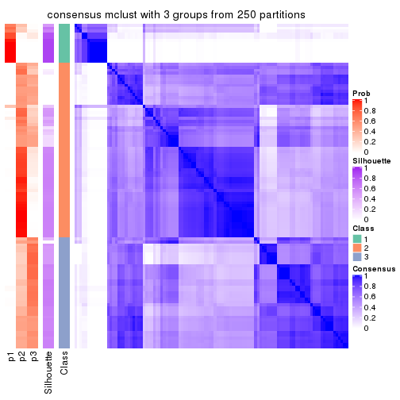
consensus_heatmap(res, k = 4)
consensus_heatmap(res, k = 5)
consensus_heatmap(res, k = 6)
Heatmaps for the membership of samples in all partitions to see how consistent they are:
membership_heatmap(res, k = 2)
membership_heatmap(res, k = 3)
membership_heatmap(res, k = 4)
membership_heatmap(res, k = 5)

membership_heatmap(res, k = 6)
As soon as we have had the classes for columns, we can look for signatures which are significantly different between classes which can be candidate marks for certain classes. Following are the heatmaps for signatures.
Signature heatmaps where rows are scaled:
get_signatures(res, k = 2)

get_signatures(res, k = 3)
get_signatures(res, k = 4)
get_signatures(res, k = 5)
get_signatures(res, k = 6)

Signature heatmaps where rows are not scaled:
get_signatures(res, k = 2, scale_rows = FALSE)
get_signatures(res, k = 3, scale_rows = FALSE)
get_signatures(res, k = 4, scale_rows = FALSE)
get_signatures(res, k = 5, scale_rows = FALSE)
get_signatures(res, k = 6, scale_rows = FALSE)
Compare the overlap of signatures from different k:
compare_signatures(res)
get_signature() returns a data frame invisibly. TO get the list of signatures, the function
call should be assigned to a variable explicitly. In following code, if plot argument is set
to FALSE, no heatmap is plotted while only the differential analysis is performed.
# code only for demonstration
tb = get_signature(res, k = ..., plot = FALSE)
An example of the output of tb is:
#> which_row fdr mean_1 mean_2 scaled_mean_1 scaled_mean_2 km
#> 1 38 0.042760348 8.373488 9.131774 -0.5533452 0.5164555 1
#> 2 40 0.018707592 7.106213 8.469186 -0.6173731 0.5762149 1
#> 3 55 0.019134737 10.221463 11.207825 -0.6159697 0.5749050 1
#> 4 59 0.006059896 5.921854 7.869574 -0.6899429 0.6439467 1
#> 5 60 0.018055526 8.928898 10.211722 -0.6204761 0.5791110 1
#> 6 98 0.009384629 15.714769 14.887706 0.6635654 -0.6193277 2
...
The columns in tb are:
which_row: row indices corresponding to the input matrix.fdr: FDR for the differential test. mean_x: The mean value in group x.scaled_mean_x: The mean value in group x after rows are scaled.km: Row groups if k-means clustering is applied to rows.UMAP plot which shows how samples are separated.
dimension_reduction(res, k = 2, method = "UMAP")
dimension_reduction(res, k = 3, method = "UMAP")
dimension_reduction(res, k = 4, method = "UMAP")
dimension_reduction(res, k = 5, method = "UMAP")
dimension_reduction(res, k = 6, method = "UMAP")
Following heatmap shows how subgroups are split when increasing k:
collect_classes(res)
If matrix rows can be associated to genes, consider to use GO_Enrichment(res,
...) to perform function enrichment for the signature genes.
The object with results only for a single top-value method and a single partition method can be extracted as:
res = res_list["CV", "NMF"]
# you can also extract it by
# res = res_list["CV:NMF"]
A summary of res and all the functions that can be applied to it:
res
#> A 'ConsensusPartition' object with k = 2, 3, 4, 5, 6.
#> On a matrix with 17532 rows and 108 columns.
#> Top rows (1000, 2000, 3000, 4000, 5000) are extracted by 'CV' method.
#> Subgroups are detected by 'NMF' method.
#> Performed in total 1250 partitions by row resampling.
#> Best k for subgroups seems to be 2.
#>
#> Following methods can be applied to this 'ConsensusPartition' object:
#> [1] "cola_report" "collect_classes" "collect_plots"
#> [4] "collect_stats" "colnames" "compare_signatures"
#> [7] "consensus_heatmap" "dimension_reduction" "functional_enrichment"
#> [10] "get_anno_col" "get_anno" "get_classes"
#> [13] "get_consensus" "get_matrix" "get_membership"
#> [16] "get_param" "get_signatures" "get_stats"
#> [19] "is_best_k" "is_stable_k" "membership_heatmap"
#> [22] "ncol" "nrow" "plot_ecdf"
#> [25] "rownames" "select_partition_number" "show"
#> [28] "suggest_best_k" "test_to_known_factors"
collect_plots() function collects all the plots made from res for all k (number of partitions)
into one single page to provide an easy and fast comparison between different k.
collect_plots(res)

The plots are:
k and the heatmap of
predicted classes for each k.k.k.k.All the plots in panels can be made by individual functions and they are plotted later in this section.
select_partition_number() produces several plots showing different
statistics for choosing “optimized” k. There are following statistics:
k;k, the area increased is defined as \(A_k - A_{k-1}\).The detailed explanations of these statistics can be found in the cola vignette.
Generally speaking, lower PAC score, higher mean silhouette score or higher
concordance corresponds to better partition. Rand index and Jaccard index
measure how similar the current partition is compared to partition with k-1.
If they are too similar, we won't accept k is better than k-1.
select_partition_number(res)
The numeric values for all these statistics can be obtained by get_stats().
get_stats(res)
#> k 1-PAC mean_silhouette concordance area_increased Rand Jaccard
#> 2 2 0.903 0.917 0.965 0.4498 0.540 0.540
#> 3 3 0.863 0.868 0.947 0.4781 0.713 0.506
#> 4 4 0.625 0.696 0.835 0.1349 0.755 0.405
#> 5 5 0.655 0.620 0.772 0.0620 0.866 0.535
#> 6 6 0.677 0.529 0.751 0.0387 0.832 0.368
suggest_best_k() suggests the best \(k\) based on these statistics. The rules are as follows:
NA.suggest_best_k(res)
#> [1] 2
Following shows the table of the partitions (You need to click the show/hide
code output link to see it). The membership matrix (columns with name p*)
is inferred by
clue::cl_consensus()
function with the SE method. Basically the value in the membership matrix
represents the probability to belong to a certain group. The finall class
label for an item is determined with the group with highest probability it
belongs to.
In get_classes() function, the entropy is calculated from the membership
matrix and the silhouette score is calculated from the consensus matrix.
cbind(get_classes(res, k = 2), get_membership(res, k = 2))
#> class entropy silhouette p1 p2
#> SRR1389909 2 0.0000 0.983 0.000 1.000
#> SRR1454460 2 0.0000 0.983 0.000 1.000
#> SRR1404623 2 0.0000 0.983 0.000 1.000
#> SRR1092038 2 0.0000 0.983 0.000 1.000
#> SRR1319793 2 0.0000 0.983 0.000 1.000
#> SRR1396208 2 0.0000 0.983 0.000 1.000
#> SRR1435797 2 0.1843 0.957 0.028 0.972
#> SRR1078042 2 0.0000 0.983 0.000 1.000
#> SRR1339699 2 0.0000 0.983 0.000 1.000
#> SRR1446499 2 0.0000 0.983 0.000 1.000
#> SRR1359428 2 0.0000 0.983 0.000 1.000
#> SRR1071475 1 0.0000 0.924 1.000 0.000
#> SRR1436781 2 0.0000 0.983 0.000 1.000
#> SRR1101453 2 0.0000 0.983 0.000 1.000
#> SRR1350891 2 0.0000 0.983 0.000 1.000
#> SRR814293 1 0.0000 0.924 1.000 0.000
#> SRR1471456 2 0.0000 0.983 0.000 1.000
#> SRR1446874 1 0.8608 0.641 0.716 0.284
#> SRR1362731 2 0.0000 0.983 0.000 1.000
#> SRR1413705 2 0.0000 0.983 0.000 1.000
#> SRR1434586 2 0.0000 0.983 0.000 1.000
#> SRR1091164 2 0.0000 0.983 0.000 1.000
#> SRR1340598 2 0.0000 0.983 0.000 1.000
#> SRR1466469 1 0.0000 0.924 1.000 0.000
#> SRR1099310 1 0.7056 0.758 0.808 0.192
#> SRR814892 2 0.0000 0.983 0.000 1.000
#> SRR1090698 2 0.0000 0.983 0.000 1.000
#> SRR1089134 1 0.0000 0.924 1.000 0.000
#> SRR1120276 1 0.9988 0.151 0.520 0.480
#> SRR1430507 1 0.0000 0.924 1.000 0.000
#> SRR1356078 2 0.9393 0.395 0.356 0.644
#> SRR1447037 2 0.0000 0.983 0.000 1.000
#> SRR1443544 1 0.0000 0.924 1.000 0.000
#> SRR1081987 2 0.0000 0.983 0.000 1.000
#> SRR1316513 2 0.0000 0.983 0.000 1.000
#> SRR1478457 2 0.0376 0.980 0.004 0.996
#> SRR1342849 2 0.0000 0.983 0.000 1.000
#> SRR1073878 2 0.0000 0.983 0.000 1.000
#> SRR1078735 1 0.0000 0.924 1.000 0.000
#> SRR1093601 2 0.0000 0.983 0.000 1.000
#> SRR816629 2 0.0938 0.973 0.012 0.988
#> SRR1477754 2 0.0000 0.983 0.000 1.000
#> SRR1454589 1 0.0376 0.922 0.996 0.004
#> SRR1102780 1 0.0000 0.924 1.000 0.000
#> SRR1347518 2 0.0000 0.983 0.000 1.000
#> SRR1093747 1 0.0000 0.924 1.000 0.000
#> SRR809209 2 0.0000 0.983 0.000 1.000
#> SRR1082471 2 0.0000 0.983 0.000 1.000
#> SRR1390349 2 0.0000 0.983 0.000 1.000
#> SRR1410493 2 0.0938 0.973 0.012 0.988
#> SRR1086656 2 0.0000 0.983 0.000 1.000
#> SRR1469997 2 0.0000 0.983 0.000 1.000
#> SRR1355512 2 0.0000 0.983 0.000 1.000
#> SRR809897 2 0.0000 0.983 0.000 1.000
#> SRR1436146 2 0.7219 0.726 0.200 0.800
#> SRR1097148 1 0.0000 0.924 1.000 0.000
#> SRR1429979 2 0.0000 0.983 0.000 1.000
#> SRR1454607 1 0.0000 0.924 1.000 0.000
#> SRR1420687 1 0.0000 0.924 1.000 0.000
#> SRR1099669 1 0.0000 0.924 1.000 0.000
#> SRR1360172 2 0.0000 0.983 0.000 1.000
#> SRR1478131 1 0.9044 0.576 0.680 0.320
#> SRR1453235 1 0.6148 0.803 0.848 0.152
#> SRR1369107 2 0.1184 0.969 0.016 0.984
#> SRR1096458 2 0.0376 0.980 0.004 0.996
#> SRR1088856 2 0.0000 0.983 0.000 1.000
#> SRR1432934 2 0.0000 0.983 0.000 1.000
#> SRR821072 2 0.0938 0.973 0.012 0.988
#> SRR1480896 1 0.0000 0.924 1.000 0.000
#> SRR1403344 2 0.0000 0.983 0.000 1.000
#> SRR1360850 1 0.0000 0.924 1.000 0.000
#> SRR1451820 2 0.0000 0.983 0.000 1.000
#> SRR1075360 1 0.9661 0.415 0.608 0.392
#> SRR1413373 1 0.0000 0.924 1.000 0.000
#> SRR1090928 2 0.0000 0.983 0.000 1.000
#> SRR1097124 2 0.1414 0.965 0.020 0.980
#> SRR1458745 1 0.0000 0.924 1.000 0.000
#> SRR1078636 2 0.0000 0.983 0.000 1.000
#> SRR1473754 1 0.0672 0.920 0.992 0.008
#> SRR1085736 2 0.0000 0.983 0.000 1.000
#> SRR1098807 1 0.0000 0.924 1.000 0.000
#> SRR1341583 2 0.0000 0.983 0.000 1.000
#> SRR1380869 2 0.0376 0.980 0.004 0.996
#> SRR1430775 1 0.0000 0.924 1.000 0.000
#> SRR1479573 2 0.0000 0.983 0.000 1.000
#> SRR1082352 1 0.0000 0.924 1.000 0.000
#> SRR1102005 2 0.1184 0.969 0.016 0.984
#> SRR1408415 1 0.0000 0.924 1.000 0.000
#> SRR1353537 1 0.0000 0.924 1.000 0.000
#> SRR1458870 2 0.0000 0.983 0.000 1.000
#> SRR1315495 2 0.0000 0.983 0.000 1.000
#> SRR1481169 1 0.0000 0.924 1.000 0.000
#> SRR1470273 1 0.0000 0.924 1.000 0.000
#> SRR1312446 2 0.0000 0.983 0.000 1.000
#> SRR1101859 2 0.0000 0.983 0.000 1.000
#> SRR1384210 1 0.0000 0.924 1.000 0.000
#> SRR1336244 2 0.0000 0.983 0.000 1.000
#> SRR1374432 2 0.0000 0.983 0.000 1.000
#> SRR1430023 1 0.4431 0.860 0.908 0.092
#> SRR1487527 1 0.0000 0.924 1.000 0.000
#> SRR1073389 1 0.0000 0.924 1.000 0.000
#> SRR1433171 2 0.0000 0.983 0.000 1.000
#> SRR1085565 1 0.9661 0.429 0.608 0.392
#> SRR1355017 2 0.0000 0.983 0.000 1.000
#> SRR1351641 2 0.0000 0.983 0.000 1.000
#> SRR1398230 2 0.0000 0.983 0.000 1.000
#> SRR1086212 2 0.9608 0.289 0.384 0.616
#> SRR1431514 1 0.9661 0.415 0.608 0.392
cbind(get_classes(res, k = 3), get_membership(res, k = 3))
#> class entropy silhouette p1 p2 p3
#> SRR1389909 3 0.0000 0.9449 0.000 0.000 1.000
#> SRR1454460 3 0.0000 0.9449 0.000 0.000 1.000
#> SRR1404623 2 0.0000 0.9528 0.000 1.000 0.000
#> SRR1092038 3 0.0000 0.9449 0.000 0.000 1.000
#> SRR1319793 3 0.1643 0.9130 0.000 0.044 0.956
#> SRR1396208 3 0.0000 0.9449 0.000 0.000 1.000
#> SRR1435797 1 0.6925 0.2070 0.532 0.452 0.016
#> SRR1078042 3 0.0000 0.9449 0.000 0.000 1.000
#> SRR1339699 3 0.4842 0.7160 0.000 0.224 0.776
#> SRR1446499 2 0.0000 0.9528 0.000 1.000 0.000
#> SRR1359428 3 0.0000 0.9449 0.000 0.000 1.000
#> SRR1071475 1 0.0000 0.9263 1.000 0.000 0.000
#> SRR1436781 3 0.0000 0.9449 0.000 0.000 1.000
#> SRR1101453 3 0.4002 0.7913 0.000 0.160 0.840
#> SRR1350891 2 0.1031 0.9356 0.000 0.976 0.024
#> SRR814293 1 0.3192 0.8386 0.888 0.112 0.000
#> SRR1471456 3 0.0000 0.9449 0.000 0.000 1.000
#> SRR1446874 1 0.2448 0.8718 0.924 0.076 0.000
#> SRR1362731 2 0.0000 0.9528 0.000 1.000 0.000
#> SRR1413705 2 0.5929 0.5001 0.004 0.676 0.320
#> SRR1434586 2 0.0000 0.9528 0.000 1.000 0.000
#> SRR1091164 3 0.1163 0.9258 0.000 0.028 0.972
#> SRR1340598 3 0.0000 0.9449 0.000 0.000 1.000
#> SRR1466469 1 0.0000 0.9263 1.000 0.000 0.000
#> SRR1099310 3 0.0000 0.9449 0.000 0.000 1.000
#> SRR814892 3 0.0000 0.9449 0.000 0.000 1.000
#> SRR1090698 2 0.6260 0.1663 0.000 0.552 0.448
#> SRR1089134 1 0.0000 0.9263 1.000 0.000 0.000
#> SRR1120276 1 0.6307 0.1029 0.512 0.488 0.000
#> SRR1430507 1 0.3619 0.8144 0.864 0.136 0.000
#> SRR1356078 2 0.0000 0.9528 0.000 1.000 0.000
#> SRR1447037 3 0.0000 0.9449 0.000 0.000 1.000
#> SRR1443544 1 0.0000 0.9263 1.000 0.000 0.000
#> SRR1081987 3 0.0000 0.9449 0.000 0.000 1.000
#> SRR1316513 3 0.0000 0.9449 0.000 0.000 1.000
#> SRR1478457 3 0.0000 0.9449 0.000 0.000 1.000
#> SRR1342849 3 0.0000 0.9449 0.000 0.000 1.000
#> SRR1073878 2 0.0000 0.9528 0.000 1.000 0.000
#> SRR1078735 1 0.0000 0.9263 1.000 0.000 0.000
#> SRR1093601 3 0.0000 0.9449 0.000 0.000 1.000
#> SRR816629 2 0.0000 0.9528 0.000 1.000 0.000
#> SRR1477754 2 0.0000 0.9528 0.000 1.000 0.000
#> SRR1454589 1 0.0000 0.9263 1.000 0.000 0.000
#> SRR1102780 1 0.0000 0.9263 1.000 0.000 0.000
#> SRR1347518 3 0.0000 0.9449 0.000 0.000 1.000
#> SRR1093747 1 0.0000 0.9263 1.000 0.000 0.000
#> SRR809209 3 0.0000 0.9449 0.000 0.000 1.000
#> SRR1082471 2 0.0000 0.9528 0.000 1.000 0.000
#> SRR1390349 3 0.0000 0.9449 0.000 0.000 1.000
#> SRR1410493 2 0.0000 0.9528 0.000 1.000 0.000
#> SRR1086656 3 0.0000 0.9449 0.000 0.000 1.000
#> SRR1469997 3 0.0000 0.9449 0.000 0.000 1.000
#> SRR1355512 2 0.0000 0.9528 0.000 1.000 0.000
#> SRR809897 2 0.0000 0.9528 0.000 1.000 0.000
#> SRR1436146 2 0.0000 0.9528 0.000 1.000 0.000
#> SRR1097148 1 0.0000 0.9263 1.000 0.000 0.000
#> SRR1429979 3 0.4291 0.7624 0.000 0.180 0.820
#> SRR1454607 1 0.0000 0.9263 1.000 0.000 0.000
#> SRR1420687 1 0.0000 0.9263 1.000 0.000 0.000
#> SRR1099669 1 0.0000 0.9263 1.000 0.000 0.000
#> SRR1360172 3 0.0000 0.9449 0.000 0.000 1.000
#> SRR1478131 3 0.6309 -0.0292 0.496 0.000 0.504
#> SRR1453235 1 0.6111 0.3341 0.604 0.000 0.396
#> SRR1369107 3 0.0237 0.9422 0.004 0.000 0.996
#> SRR1096458 3 0.0000 0.9449 0.000 0.000 1.000
#> SRR1088856 3 0.0000 0.9449 0.000 0.000 1.000
#> SRR1432934 3 0.0000 0.9449 0.000 0.000 1.000
#> SRR821072 3 0.0000 0.9449 0.000 0.000 1.000
#> SRR1480896 1 0.0000 0.9263 1.000 0.000 0.000
#> SRR1403344 3 0.4399 0.7583 0.000 0.188 0.812
#> SRR1360850 1 0.0000 0.9263 1.000 0.000 0.000
#> SRR1451820 3 0.0000 0.9449 0.000 0.000 1.000
#> SRR1075360 2 0.1860 0.9064 0.052 0.948 0.000
#> SRR1413373 1 0.0000 0.9263 1.000 0.000 0.000
#> SRR1090928 2 0.0000 0.9528 0.000 1.000 0.000
#> SRR1097124 2 0.0000 0.9528 0.000 1.000 0.000
#> SRR1458745 1 0.0000 0.9263 1.000 0.000 0.000
#> SRR1078636 3 0.0747 0.9348 0.000 0.016 0.984
#> SRR1473754 1 0.5678 0.5344 0.684 0.000 0.316
#> SRR1085736 2 0.0000 0.9528 0.000 1.000 0.000
#> SRR1098807 1 0.0000 0.9263 1.000 0.000 0.000
#> SRR1341583 2 0.0000 0.9528 0.000 1.000 0.000
#> SRR1380869 3 0.0000 0.9449 0.000 0.000 1.000
#> SRR1430775 1 0.0000 0.9263 1.000 0.000 0.000
#> SRR1479573 2 0.0000 0.9528 0.000 1.000 0.000
#> SRR1082352 1 0.0000 0.9263 1.000 0.000 0.000
#> SRR1102005 2 0.0000 0.9528 0.000 1.000 0.000
#> SRR1408415 1 0.0000 0.9263 1.000 0.000 0.000
#> SRR1353537 1 0.0000 0.9263 1.000 0.000 0.000
#> SRR1458870 2 0.2448 0.8851 0.000 0.924 0.076
#> SRR1315495 2 0.0000 0.9528 0.000 1.000 0.000
#> SRR1481169 1 0.0000 0.9263 1.000 0.000 0.000
#> SRR1470273 1 0.0000 0.9263 1.000 0.000 0.000
#> SRR1312446 2 0.0000 0.9528 0.000 1.000 0.000
#> SRR1101859 2 0.2066 0.9024 0.000 0.940 0.060
#> SRR1384210 1 0.0000 0.9263 1.000 0.000 0.000
#> SRR1336244 2 0.1031 0.9351 0.000 0.976 0.024
#> SRR1374432 3 0.0000 0.9449 0.000 0.000 1.000
#> SRR1430023 2 0.0000 0.9528 0.000 1.000 0.000
#> SRR1487527 1 0.0000 0.9263 1.000 0.000 0.000
#> SRR1073389 1 0.5138 0.6637 0.748 0.252 0.000
#> SRR1433171 2 0.0000 0.9528 0.000 1.000 0.000
#> SRR1085565 3 0.1643 0.9108 0.044 0.000 0.956
#> SRR1355017 3 0.0424 0.9402 0.000 0.008 0.992
#> SRR1351641 3 0.6180 0.2986 0.000 0.416 0.584
#> SRR1398230 3 0.6225 0.2400 0.000 0.432 0.568
#> SRR1086212 3 0.0000 0.9449 0.000 0.000 1.000
#> SRR1431514 2 0.4796 0.6798 0.220 0.780 0.000
cbind(get_classes(res, k = 4), get_membership(res, k = 4))
#> class entropy silhouette p1 p2 p3 p4
#> SRR1389909 4 0.0469 0.8227 0.000 0.000 0.012 0.988
#> SRR1454460 4 0.6466 0.5518 0.000 0.104 0.288 0.608
#> SRR1404623 2 0.3837 0.6834 0.000 0.776 0.224 0.000
#> SRR1092038 3 0.4866 0.4002 0.000 0.000 0.596 0.404
#> SRR1319793 4 0.5756 0.4030 0.000 0.400 0.032 0.568
#> SRR1396208 4 0.3820 0.8048 0.000 0.064 0.088 0.848
#> SRR1435797 3 0.1377 0.7686 0.008 0.008 0.964 0.020
#> SRR1078042 4 0.1637 0.8034 0.000 0.000 0.060 0.940
#> SRR1339699 3 0.2413 0.7655 0.000 0.020 0.916 0.064
#> SRR1446499 2 0.4454 0.5789 0.000 0.692 0.308 0.000
#> SRR1359428 4 0.5143 0.4845 0.000 0.360 0.012 0.628
#> SRR1071475 1 0.0000 0.9093 1.000 0.000 0.000 0.000
#> SRR1436781 4 0.4252 0.6233 0.000 0.252 0.004 0.744
#> SRR1101453 3 0.3168 0.7558 0.000 0.056 0.884 0.060
#> SRR1350891 2 0.1004 0.7679 0.000 0.972 0.004 0.024
#> SRR814293 1 0.1209 0.8894 0.964 0.032 0.004 0.000
#> SRR1471456 4 0.1118 0.8157 0.000 0.000 0.036 0.964
#> SRR1446874 3 0.2751 0.7707 0.056 0.000 0.904 0.040
#> SRR1362731 2 0.1474 0.7754 0.000 0.948 0.052 0.000
#> SRR1413705 2 0.2853 0.7334 0.008 0.900 0.016 0.076
#> SRR1434586 3 0.4193 0.5301 0.000 0.268 0.732 0.000
#> SRR1091164 2 0.4370 0.6390 0.000 0.800 0.044 0.156
#> SRR1340598 4 0.0817 0.8219 0.000 0.000 0.024 0.976
#> SRR1466469 1 0.0000 0.9093 1.000 0.000 0.000 0.000
#> SRR1099310 4 0.0804 0.8244 0.000 0.012 0.008 0.980
#> SRR814892 4 0.4553 0.7264 0.000 0.180 0.040 0.780
#> SRR1090698 3 0.3142 0.7528 0.000 0.008 0.860 0.132
#> SRR1089134 1 0.0000 0.9093 1.000 0.000 0.000 0.000
#> SRR1120276 3 0.3756 0.7636 0.044 0.032 0.872 0.052
#> SRR1430507 1 0.4567 0.5856 0.716 0.008 0.276 0.000
#> SRR1356078 3 0.2345 0.7326 0.000 0.100 0.900 0.000
#> SRR1447037 4 0.1389 0.8106 0.000 0.000 0.048 0.952
#> SRR1443544 3 0.4875 0.7285 0.068 0.000 0.772 0.160
#> SRR1081987 4 0.2589 0.8180 0.000 0.044 0.044 0.912
#> SRR1316513 4 0.2282 0.8200 0.000 0.052 0.024 0.924
#> SRR1478457 3 0.4072 0.6575 0.000 0.000 0.748 0.252
#> SRR1342849 4 0.4095 0.7096 0.000 0.016 0.192 0.792
#> SRR1073878 2 0.0895 0.7787 0.000 0.976 0.020 0.004
#> SRR1078735 3 0.6269 0.5843 0.272 0.000 0.632 0.096
#> SRR1093601 4 0.1716 0.8062 0.000 0.064 0.000 0.936
#> SRR816629 3 0.3219 0.6797 0.000 0.164 0.836 0.000
#> SRR1477754 2 0.4040 0.6580 0.000 0.752 0.248 0.000
#> SRR1454589 3 0.4581 0.7550 0.080 0.000 0.800 0.120
#> SRR1102780 1 0.2300 0.8628 0.920 0.000 0.016 0.064
#> SRR1347518 4 0.4284 0.6660 0.000 0.012 0.224 0.764
#> SRR1093747 1 0.3610 0.6949 0.800 0.000 0.200 0.000
#> SRR809209 4 0.1867 0.8087 0.000 0.000 0.072 0.928
#> SRR1082471 3 0.2704 0.7161 0.000 0.124 0.876 0.000
#> SRR1390349 4 0.3674 0.7900 0.000 0.036 0.116 0.848
#> SRR1410493 3 0.2469 0.7274 0.000 0.108 0.892 0.000
#> SRR1086656 4 0.4332 0.7932 0.000 0.112 0.072 0.816
#> SRR1469997 4 0.5762 0.4987 0.000 0.352 0.040 0.608
#> SRR1355512 2 0.4961 0.2923 0.000 0.552 0.448 0.000
#> SRR809897 3 0.1211 0.7579 0.000 0.040 0.960 0.000
#> SRR1436146 2 0.3498 0.7271 0.008 0.832 0.160 0.000
#> SRR1097148 1 0.0000 0.9093 1.000 0.000 0.000 0.000
#> SRR1429979 3 0.3697 0.7431 0.000 0.048 0.852 0.100
#> SRR1454607 1 0.0000 0.9093 1.000 0.000 0.000 0.000
#> SRR1420687 1 0.4941 0.1507 0.564 0.000 0.436 0.000
#> SRR1099669 1 0.1389 0.8764 0.952 0.000 0.048 0.000
#> SRR1360172 4 0.5511 -0.0503 0.000 0.016 0.484 0.500
#> SRR1478131 1 0.6413 0.4842 0.628 0.276 0.004 0.092
#> SRR1453235 1 0.7605 0.4667 0.612 0.128 0.060 0.200
#> SRR1369107 3 0.4744 0.5889 0.000 0.012 0.704 0.284
#> SRR1096458 4 0.0336 0.8235 0.000 0.000 0.008 0.992
#> SRR1088856 3 0.4988 0.6387 0.000 0.036 0.728 0.236
#> SRR1432934 2 0.5901 -0.0439 0.000 0.532 0.036 0.432
#> SRR821072 4 0.0657 0.8252 0.000 0.012 0.004 0.984
#> SRR1480896 3 0.6188 0.6544 0.180 0.004 0.684 0.132
#> SRR1403344 3 0.4907 0.6682 0.000 0.176 0.764 0.060
#> SRR1360850 1 0.0000 0.9093 1.000 0.000 0.000 0.000
#> SRR1451820 2 0.5161 -0.0364 0.000 0.520 0.004 0.476
#> SRR1075360 3 0.2546 0.7361 0.008 0.092 0.900 0.000
#> SRR1413373 1 0.0000 0.9093 1.000 0.000 0.000 0.000
#> SRR1090928 2 0.1474 0.7754 0.000 0.948 0.052 0.000
#> SRR1097124 2 0.3726 0.6946 0.000 0.788 0.212 0.000
#> SRR1458745 1 0.0000 0.9093 1.000 0.000 0.000 0.000
#> SRR1078636 2 0.4105 0.6489 0.000 0.812 0.032 0.156
#> SRR1473754 1 0.3232 0.8240 0.872 0.016 0.004 0.108
#> SRR1085736 3 0.4477 0.4365 0.000 0.312 0.688 0.000
#> SRR1098807 1 0.0000 0.9093 1.000 0.000 0.000 0.000
#> SRR1341583 2 0.0817 0.7700 0.000 0.976 0.000 0.024
#> SRR1380869 4 0.0779 0.8249 0.000 0.016 0.004 0.980
#> SRR1430775 1 0.0188 0.9075 0.996 0.000 0.004 0.000
#> SRR1479573 3 0.3356 0.6671 0.000 0.176 0.824 0.000
#> SRR1082352 1 0.0000 0.9093 1.000 0.000 0.000 0.000
#> SRR1102005 3 0.2345 0.7328 0.000 0.100 0.900 0.000
#> SRR1408415 1 0.0000 0.9093 1.000 0.000 0.000 0.000
#> SRR1353537 1 0.0000 0.9093 1.000 0.000 0.000 0.000
#> SRR1458870 2 0.1510 0.7733 0.000 0.956 0.016 0.028
#> SRR1315495 2 0.3649 0.7011 0.000 0.796 0.204 0.000
#> SRR1481169 1 0.0895 0.8972 0.976 0.000 0.004 0.020
#> SRR1470273 1 0.0000 0.9093 1.000 0.000 0.000 0.000
#> SRR1312446 2 0.2011 0.7671 0.000 0.920 0.080 0.000
#> SRR1101859 2 0.6683 0.5640 0.000 0.620 0.176 0.204
#> SRR1384210 3 0.6920 0.4812 0.316 0.000 0.552 0.132
#> SRR1336244 2 0.1174 0.7777 0.000 0.968 0.020 0.012
#> SRR1374432 4 0.5339 0.6249 0.000 0.272 0.040 0.688
#> SRR1430023 2 0.5716 0.3262 0.028 0.552 0.420 0.000
#> SRR1487527 1 0.0000 0.9093 1.000 0.000 0.000 0.000
#> SRR1073389 3 0.5558 0.2090 0.432 0.020 0.548 0.000
#> SRR1433171 2 0.1022 0.7793 0.000 0.968 0.032 0.000
#> SRR1085565 3 0.4776 0.4991 0.000 0.000 0.624 0.376
#> SRR1355017 2 0.4017 0.6700 0.000 0.828 0.044 0.128
#> SRR1351641 2 0.3219 0.7063 0.000 0.868 0.020 0.112
#> SRR1398230 2 0.2861 0.7217 0.000 0.888 0.016 0.096
#> SRR1086212 4 0.1388 0.8209 0.000 0.028 0.012 0.960
#> SRR1431514 2 0.4222 0.5669 0.272 0.728 0.000 0.000
cbind(get_classes(res, k = 5), get_membership(res, k = 5))
#> class entropy silhouette p1 p2 p3 p4 p5
#> SRR1389909 4 0.2648 0.8201 0.000 0.000 0.152 0.848 0.000
#> SRR1454460 3 0.3510 0.6234 0.000 0.032 0.832 0.008 0.128
#> SRR1404623 2 0.3143 0.7112 0.000 0.796 0.000 0.000 0.204
#> SRR1092038 3 0.4738 -0.1208 0.000 0.000 0.520 0.016 0.464
#> SRR1319793 3 0.4978 0.0798 0.000 0.476 0.496 0.028 0.000
#> SRR1396208 3 0.1992 0.6493 0.000 0.044 0.924 0.032 0.000
#> SRR1435797 5 0.3039 0.6112 0.000 0.000 0.192 0.000 0.808
#> SRR1078042 4 0.2891 0.8127 0.000 0.000 0.176 0.824 0.000
#> SRR1339699 5 0.3895 0.5446 0.000 0.004 0.264 0.004 0.728
#> SRR1446499 2 0.3983 0.5400 0.000 0.660 0.000 0.000 0.340
#> SRR1359428 2 0.5904 0.1438 0.000 0.528 0.360 0.112 0.000
#> SRR1071475 1 0.0000 0.9042 1.000 0.000 0.000 0.000 0.000
#> SRR1436781 4 0.3354 0.7879 0.000 0.088 0.068 0.844 0.000
#> SRR1101453 5 0.4449 0.3583 0.000 0.004 0.388 0.004 0.604
#> SRR1350891 2 0.0794 0.7594 0.000 0.972 0.028 0.000 0.000
#> SRR814293 1 0.3458 0.8183 0.840 0.016 0.000 0.120 0.024
#> SRR1471456 4 0.3876 0.6832 0.000 0.000 0.316 0.684 0.000
#> SRR1446874 5 0.3575 0.6516 0.000 0.000 0.120 0.056 0.824
#> SRR1362731 2 0.1608 0.7677 0.000 0.928 0.000 0.000 0.072
#> SRR1413705 2 0.2006 0.7359 0.000 0.916 0.072 0.012 0.000
#> SRR1434586 5 0.3074 0.5961 0.000 0.196 0.000 0.000 0.804
#> SRR1091164 2 0.4157 0.5173 0.000 0.716 0.264 0.020 0.000
#> SRR1340598 4 0.4166 0.6315 0.000 0.004 0.348 0.648 0.000
#> SRR1466469 1 0.0000 0.9042 1.000 0.000 0.000 0.000 0.000
#> SRR1099310 4 0.2011 0.8133 0.000 0.000 0.088 0.908 0.004
#> SRR814892 3 0.4272 0.5800 0.000 0.196 0.752 0.052 0.000
#> SRR1090698 5 0.3779 0.6470 0.000 0.004 0.124 0.056 0.816
#> SRR1089134 1 0.0000 0.9042 1.000 0.000 0.000 0.000 0.000
#> SRR1120276 5 0.2930 0.6478 0.004 0.000 0.000 0.164 0.832
#> SRR1430507 5 0.6036 0.4209 0.252 0.004 0.000 0.156 0.588
#> SRR1356078 5 0.1469 0.6813 0.000 0.016 0.000 0.036 0.948
#> SRR1447037 4 0.2852 0.8138 0.000 0.000 0.172 0.828 0.000
#> SRR1443544 5 0.3690 0.5853 0.000 0.000 0.224 0.012 0.764
#> SRR1081987 3 0.2905 0.6259 0.000 0.096 0.868 0.036 0.000
#> SRR1316513 3 0.3934 0.5870 0.000 0.124 0.800 0.076 0.000
#> SRR1478457 5 0.3980 0.5352 0.000 0.000 0.284 0.008 0.708
#> SRR1342849 3 0.1571 0.6475 0.000 0.000 0.936 0.004 0.060
#> SRR1073878 2 0.0703 0.7704 0.000 0.976 0.000 0.000 0.024
#> SRR1078735 5 0.6376 0.4468 0.264 0.000 0.220 0.000 0.516
#> SRR1093601 4 0.3098 0.8176 0.000 0.016 0.148 0.836 0.000
#> SRR816629 5 0.1965 0.6603 0.000 0.096 0.000 0.000 0.904
#> SRR1477754 2 0.3480 0.6687 0.000 0.752 0.000 0.000 0.248
#> SRR1454589 5 0.4586 0.5214 0.004 0.000 0.016 0.336 0.644
#> SRR1102780 4 0.1741 0.7449 0.024 0.000 0.000 0.936 0.040
#> SRR1347518 3 0.2612 0.6206 0.000 0.008 0.868 0.000 0.124
#> SRR1093747 5 0.6504 0.1954 0.356 0.000 0.000 0.196 0.448
#> SRR809209 3 0.4547 0.3406 0.000 0.000 0.704 0.252 0.044
#> SRR1082471 5 0.1121 0.6768 0.000 0.044 0.000 0.000 0.956
#> SRR1390349 3 0.0898 0.6531 0.000 0.000 0.972 0.008 0.020
#> SRR1410493 5 0.1043 0.6778 0.000 0.040 0.000 0.000 0.960
#> SRR1086656 3 0.3900 0.6156 0.000 0.180 0.788 0.020 0.012
#> SRR1469997 3 0.4872 0.1805 0.000 0.436 0.540 0.024 0.000
#> SRR1355512 2 0.4906 0.1815 0.000 0.496 0.000 0.024 0.480
#> SRR809897 5 0.2473 0.6690 0.000 0.032 0.072 0.000 0.896
#> SRR1436146 2 0.4698 0.6808 0.000 0.732 0.000 0.096 0.172
#> SRR1097148 1 0.0000 0.9042 1.000 0.000 0.000 0.000 0.000
#> SRR1429979 5 0.4499 0.3188 0.000 0.004 0.408 0.004 0.584
#> SRR1454607 1 0.0000 0.9042 1.000 0.000 0.000 0.000 0.000
#> SRR1420687 5 0.5594 0.1482 0.436 0.000 0.000 0.072 0.492
#> SRR1099669 1 0.5136 0.6228 0.692 0.000 0.000 0.128 0.180
#> SRR1360172 3 0.3163 0.5845 0.000 0.000 0.824 0.012 0.164
#> SRR1478131 4 0.5417 0.5130 0.192 0.060 0.016 0.712 0.020
#> SRR1453235 1 0.7062 0.2106 0.460 0.012 0.388 0.100 0.040
#> SRR1369107 3 0.4656 -0.1267 0.000 0.000 0.508 0.012 0.480
#> SRR1096458 4 0.2516 0.8220 0.000 0.000 0.140 0.860 0.000
#> SRR1088856 3 0.3671 0.5082 0.000 0.000 0.756 0.008 0.236
#> SRR1432934 2 0.4491 0.3929 0.000 0.652 0.328 0.020 0.000
#> SRR821072 4 0.2389 0.8226 0.000 0.004 0.116 0.880 0.000
#> SRR1480896 5 0.5950 0.4295 0.088 0.000 0.312 0.016 0.584
#> SRR1403344 3 0.5902 0.2745 0.000 0.124 0.556 0.000 0.320
#> SRR1360850 1 0.2012 0.8687 0.920 0.000 0.000 0.060 0.020
#> SRR1451820 4 0.4823 0.5150 0.000 0.316 0.040 0.644 0.000
#> SRR1075360 5 0.0579 0.6821 0.000 0.008 0.000 0.008 0.984
#> SRR1413373 1 0.0290 0.9013 0.992 0.000 0.008 0.000 0.000
#> SRR1090928 2 0.1341 0.7698 0.000 0.944 0.000 0.000 0.056
#> SRR1097124 2 0.4547 0.6779 0.000 0.736 0.000 0.072 0.192
#> SRR1458745 1 0.0000 0.9042 1.000 0.000 0.000 0.000 0.000
#> SRR1078636 2 0.3476 0.6414 0.000 0.804 0.176 0.020 0.000
#> SRR1473754 4 0.2067 0.7379 0.044 0.004 0.000 0.924 0.028
#> SRR1085736 5 0.3388 0.5809 0.000 0.200 0.000 0.008 0.792
#> SRR1098807 1 0.0000 0.9042 1.000 0.000 0.000 0.000 0.000
#> SRR1341583 2 0.2158 0.7638 0.000 0.920 0.020 0.052 0.008
#> SRR1380869 4 0.3906 0.7670 0.000 0.016 0.240 0.744 0.000
#> SRR1430775 1 0.3253 0.8427 0.864 0.016 0.012 0.096 0.012
#> SRR1479573 5 0.2020 0.6594 0.000 0.100 0.000 0.000 0.900
#> SRR1082352 1 0.0000 0.9042 1.000 0.000 0.000 0.000 0.000
#> SRR1102005 5 0.0703 0.6796 0.000 0.024 0.000 0.000 0.976
#> SRR1408415 1 0.0693 0.8975 0.980 0.000 0.012 0.008 0.000
#> SRR1353537 1 0.0000 0.9042 1.000 0.000 0.000 0.000 0.000
#> SRR1458870 2 0.0579 0.7677 0.000 0.984 0.008 0.000 0.008
#> SRR1315495 2 0.3003 0.7206 0.000 0.812 0.000 0.000 0.188
#> SRR1481169 1 0.5278 0.3828 0.536 0.000 0.004 0.420 0.040
#> SRR1470273 1 0.0000 0.9042 1.000 0.000 0.000 0.000 0.000
#> SRR1312446 2 0.1792 0.7650 0.000 0.916 0.000 0.000 0.084
#> SRR1101859 4 0.1701 0.7921 0.000 0.012 0.028 0.944 0.016
#> SRR1384210 5 0.7257 0.3047 0.292 0.000 0.248 0.028 0.432
#> SRR1336244 2 0.0290 0.7689 0.000 0.992 0.000 0.000 0.008
#> SRR1374432 3 0.4957 0.4078 0.000 0.332 0.624 0.044 0.000
#> SRR1430023 5 0.7748 0.0935 0.120 0.312 0.000 0.132 0.436
#> SRR1487527 1 0.1774 0.8739 0.932 0.000 0.000 0.052 0.016
#> SRR1073389 5 0.6204 0.4419 0.156 0.004 0.000 0.288 0.552
#> SRR1433171 2 0.2875 0.7598 0.000 0.888 0.020 0.060 0.032
#> SRR1085565 4 0.6128 0.4345 0.000 0.000 0.204 0.564 0.232
#> SRR1355017 2 0.3663 0.6090 0.000 0.776 0.208 0.016 0.000
#> SRR1351641 2 0.2825 0.6955 0.000 0.860 0.124 0.016 0.000
#> SRR1398230 2 0.2293 0.7265 0.000 0.900 0.084 0.016 0.000
#> SRR1086212 4 0.1894 0.8130 0.000 0.000 0.072 0.920 0.008
#> SRR1431514 2 0.5746 0.6222 0.156 0.696 0.000 0.088 0.060
cbind(get_classes(res, k = 6), get_membership(res, k = 6))
#> class entropy silhouette p1 p2 p3 p4 p5 p6
#> SRR1389909 4 0.0260 0.8866 0.000 0.008 0.000 0.992 0.000 0.000
#> SRR1454460 2 0.3843 0.2922 0.000 0.548 0.452 0.000 0.000 0.000
#> SRR1404623 5 0.0146 0.7018 0.000 0.004 0.000 0.000 0.996 0.000
#> SRR1092038 3 0.1779 0.6201 0.000 0.064 0.920 0.016 0.000 0.000
#> SRR1319793 2 0.2457 0.6502 0.000 0.880 0.000 0.036 0.084 0.000
#> SRR1396208 2 0.3975 0.5665 0.000 0.744 0.204 0.048 0.000 0.004
#> SRR1435797 3 0.3296 0.5878 0.000 0.008 0.792 0.000 0.012 0.188
#> SRR1078042 4 0.0717 0.8863 0.000 0.016 0.008 0.976 0.000 0.000
#> SRR1339699 3 0.0858 0.6407 0.000 0.028 0.968 0.000 0.000 0.004
#> SRR1446499 5 0.0820 0.6903 0.000 0.000 0.016 0.000 0.972 0.012
#> SRR1359428 2 0.4331 0.6016 0.000 0.764 0.000 0.028 0.096 0.112
#> SRR1071475 1 0.0000 0.8195 1.000 0.000 0.000 0.000 0.000 0.000
#> SRR1436781 4 0.0858 0.8873 0.000 0.028 0.000 0.968 0.000 0.004
#> SRR1101453 3 0.2101 0.5965 0.000 0.100 0.892 0.004 0.004 0.000
#> SRR1350891 5 0.3515 0.4448 0.000 0.324 0.000 0.000 0.676 0.000
#> SRR814293 6 0.4450 0.4895 0.236 0.012 0.000 0.000 0.052 0.700
#> SRR1471456 4 0.2122 0.8585 0.000 0.076 0.024 0.900 0.000 0.000
#> SRR1446874 3 0.3512 0.4822 0.000 0.000 0.720 0.000 0.008 0.272
#> SRR1362731 5 0.2003 0.6825 0.000 0.116 0.000 0.000 0.884 0.000
#> SRR1413705 2 0.5654 -0.0425 0.000 0.444 0.000 0.000 0.404 0.152
#> SRR1434586 5 0.3541 0.3916 0.000 0.000 0.260 0.000 0.728 0.012
#> SRR1091164 2 0.2838 0.5827 0.000 0.808 0.004 0.000 0.188 0.000
#> SRR1340598 4 0.1806 0.8607 0.000 0.088 0.004 0.908 0.000 0.000
#> SRR1466469 1 0.0000 0.8195 1.000 0.000 0.000 0.000 0.000 0.000
#> SRR1099310 6 0.4394 -0.1721 0.000 0.016 0.004 0.484 0.000 0.496
#> SRR814892 2 0.1781 0.6551 0.000 0.924 0.008 0.060 0.000 0.008
#> SRR1090698 3 0.4825 0.5543 0.000 0.004 0.676 0.052 0.248 0.020
#> SRR1089134 1 0.0363 0.8131 0.988 0.000 0.000 0.000 0.000 0.012
#> SRR1120276 3 0.7150 0.1790 0.004 0.000 0.448 0.240 0.100 0.208
#> SRR1430507 6 0.6840 0.4843 0.128 0.000 0.132 0.032 0.132 0.576
#> SRR1356078 3 0.6190 0.3840 0.000 0.000 0.512 0.024 0.216 0.248
#> SRR1447037 4 0.0891 0.8855 0.000 0.024 0.008 0.968 0.000 0.000
#> SRR1443544 3 0.0717 0.6486 0.000 0.000 0.976 0.016 0.008 0.000
#> SRR1081987 2 0.3389 0.6418 0.000 0.832 0.100 0.020 0.000 0.048
#> SRR1316513 2 0.4123 0.6128 0.000 0.780 0.032 0.064 0.000 0.124
#> SRR1478457 3 0.1728 0.6456 0.000 0.008 0.924 0.004 0.000 0.064
#> SRR1342849 2 0.4555 0.3123 0.000 0.540 0.424 0.000 0.000 0.036
#> SRR1073878 5 0.2631 0.6382 0.000 0.180 0.000 0.000 0.820 0.000
#> SRR1078735 1 0.3989 0.1087 0.528 0.004 0.468 0.000 0.000 0.000
#> SRR1093601 4 0.0858 0.8873 0.000 0.028 0.000 0.968 0.000 0.004
#> SRR816629 5 0.4651 -0.2470 0.000 0.000 0.476 0.000 0.484 0.040
#> SRR1477754 5 0.0291 0.6991 0.000 0.000 0.004 0.000 0.992 0.004
#> SRR1454589 6 0.5462 0.4710 0.000 0.000 0.228 0.164 0.008 0.600
#> SRR1102780 6 0.3899 0.4039 0.000 0.000 0.004 0.404 0.000 0.592
#> SRR1347518 2 0.3887 0.4232 0.000 0.632 0.360 0.008 0.000 0.000
#> SRR1093747 6 0.5811 0.5617 0.144 0.000 0.128 0.076 0.004 0.648
#> SRR809209 4 0.4465 0.6838 0.000 0.156 0.108 0.728 0.000 0.008
#> SRR1082471 3 0.4984 0.2682 0.000 0.000 0.492 0.000 0.440 0.068
#> SRR1390349 2 0.4471 0.4658 0.000 0.648 0.312 0.020 0.000 0.020
#> SRR1410493 3 0.5274 0.3134 0.000 0.000 0.492 0.000 0.408 0.100
#> SRR1086656 2 0.4117 0.5757 0.000 0.716 0.244 0.004 0.032 0.004
#> SRR1469997 2 0.2923 0.6358 0.000 0.848 0.000 0.000 0.052 0.100
#> SRR1355512 5 0.1921 0.6595 0.000 0.000 0.052 0.000 0.916 0.032
#> SRR809897 3 0.4270 0.5446 0.000 0.000 0.684 0.000 0.264 0.052
#> SRR1436146 5 0.2513 0.6407 0.000 0.008 0.000 0.000 0.852 0.140
#> SRR1097148 1 0.0000 0.8195 1.000 0.000 0.000 0.000 0.000 0.000
#> SRR1429979 3 0.1387 0.6227 0.000 0.068 0.932 0.000 0.000 0.000
#> SRR1454607 1 0.0000 0.8195 1.000 0.000 0.000 0.000 0.000 0.000
#> SRR1420687 1 0.6141 -0.0333 0.444 0.000 0.196 0.000 0.012 0.348
#> SRR1099669 6 0.4379 0.4541 0.028 0.000 0.248 0.008 0.012 0.704
#> SRR1360172 3 0.4018 0.2061 0.000 0.324 0.656 0.020 0.000 0.000
#> SRR1478131 6 0.3189 0.6204 0.004 0.064 0.000 0.084 0.004 0.844
#> SRR1453235 6 0.3984 0.5155 0.016 0.192 0.028 0.004 0.000 0.760
#> SRR1369107 3 0.1700 0.6110 0.000 0.080 0.916 0.004 0.000 0.000
#> SRR1096458 4 0.0520 0.8838 0.000 0.008 0.000 0.984 0.000 0.008
#> SRR1088856 3 0.3965 0.0695 0.000 0.376 0.616 0.004 0.004 0.000
#> SRR1432934 2 0.2510 0.6412 0.000 0.872 0.000 0.000 0.100 0.028
#> SRR821072 4 0.1320 0.8740 0.000 0.016 0.000 0.948 0.000 0.036
#> SRR1480896 3 0.5408 0.4717 0.020 0.104 0.608 0.000 0.000 0.268
#> SRR1403344 2 0.4199 0.2254 0.000 0.544 0.444 0.004 0.000 0.008
#> SRR1360850 1 0.4063 0.2058 0.572 0.004 0.000 0.004 0.000 0.420
#> SRR1451820 4 0.3313 0.7469 0.000 0.148 0.000 0.812 0.036 0.004
#> SRR1075360 3 0.5601 0.4385 0.000 0.000 0.544 0.000 0.248 0.208
#> SRR1413373 1 0.0000 0.8195 1.000 0.000 0.000 0.000 0.000 0.000
#> SRR1090928 5 0.1957 0.6836 0.000 0.112 0.000 0.000 0.888 0.000
#> SRR1097124 5 0.2667 0.6523 0.000 0.020 0.000 0.000 0.852 0.128
#> SRR1458745 1 0.0000 0.8195 1.000 0.000 0.000 0.000 0.000 0.000
#> SRR1078636 2 0.3695 0.2711 0.000 0.624 0.000 0.000 0.376 0.000
#> SRR1473754 6 0.3807 0.4474 0.004 0.000 0.000 0.368 0.000 0.628
#> SRR1085736 5 0.4771 0.2924 0.000 0.000 0.248 0.000 0.652 0.100
#> SRR1098807 1 0.0000 0.8195 1.000 0.000 0.000 0.000 0.000 0.000
#> SRR1341583 6 0.5987 0.1065 0.000 0.300 0.000 0.000 0.260 0.440
#> SRR1380869 4 0.5791 0.4025 0.000 0.176 0.008 0.532 0.000 0.284
#> SRR1430775 6 0.4844 0.4943 0.204 0.120 0.000 0.004 0.000 0.672
#> SRR1479573 5 0.4516 -0.0303 0.000 0.000 0.400 0.000 0.564 0.036
#> SRR1082352 1 0.0458 0.8101 0.984 0.000 0.000 0.000 0.000 0.016
#> SRR1102005 3 0.5071 0.3823 0.000 0.000 0.540 0.000 0.376 0.084
#> SRR1408415 1 0.3934 0.4770 0.676 0.020 0.000 0.000 0.000 0.304
#> SRR1353537 1 0.0000 0.8195 1.000 0.000 0.000 0.000 0.000 0.000
#> SRR1458870 5 0.3175 0.5538 0.000 0.256 0.000 0.000 0.744 0.000
#> SRR1315495 5 0.0547 0.7021 0.000 0.020 0.000 0.000 0.980 0.000
#> SRR1481169 6 0.2533 0.6116 0.056 0.004 0.000 0.056 0.000 0.884
#> SRR1470273 1 0.0000 0.8195 1.000 0.000 0.000 0.000 0.000 0.000
#> SRR1312446 5 0.2623 0.6704 0.000 0.132 0.000 0.000 0.852 0.016
#> SRR1101859 4 0.1010 0.8670 0.000 0.000 0.000 0.960 0.004 0.036
#> SRR1384210 3 0.3264 0.6126 0.072 0.024 0.856 0.012 0.000 0.036
#> SRR1336244 5 0.2969 0.5978 0.000 0.224 0.000 0.000 0.776 0.000
#> SRR1374432 2 0.2152 0.6572 0.000 0.904 0.004 0.068 0.024 0.000
#> SRR1430023 6 0.3351 0.6273 0.036 0.000 0.060 0.000 0.060 0.844
#> SRR1487527 1 0.3930 0.1815 0.576 0.000 0.000 0.004 0.000 0.420
#> SRR1073389 6 0.7046 0.5281 0.096 0.000 0.124 0.124 0.080 0.576
#> SRR1433171 6 0.5584 0.2487 0.000 0.164 0.000 0.000 0.316 0.520
#> SRR1085565 3 0.3838 0.0403 0.000 0.000 0.552 0.448 0.000 0.000
#> SRR1355017 2 0.3284 0.5630 0.000 0.784 0.000 0.000 0.196 0.020
#> SRR1351641 2 0.4076 0.0728 0.000 0.540 0.000 0.008 0.452 0.000
#> SRR1398230 5 0.3828 0.1772 0.000 0.440 0.000 0.000 0.560 0.000
#> SRR1086212 4 0.1152 0.8594 0.000 0.004 0.000 0.952 0.000 0.044
#> SRR1431514 5 0.5014 -0.0407 0.012 0.044 0.000 0.000 0.492 0.452
Heatmaps for the consensus matrix. It visualizes the probability of two samples to be in a same group.
consensus_heatmap(res, k = 2)
consensus_heatmap(res, k = 3)
consensus_heatmap(res, k = 4)
consensus_heatmap(res, k = 5)
consensus_heatmap(res, k = 6)
Heatmaps for the membership of samples in all partitions to see how consistent they are:
membership_heatmap(res, k = 2)
membership_heatmap(res, k = 3)
membership_heatmap(res, k = 4)
membership_heatmap(res, k = 5)
membership_heatmap(res, k = 6)
As soon as we have had the classes for columns, we can look for signatures which are significantly different between classes which can be candidate marks for certain classes. Following are the heatmaps for signatures.
Signature heatmaps where rows are scaled:
get_signatures(res, k = 2)
get_signatures(res, k = 3)
get_signatures(res, k = 4)
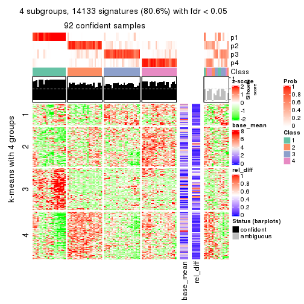
get_signatures(res, k = 5)
get_signatures(res, k = 6)

Signature heatmaps where rows are not scaled:
get_signatures(res, k = 2, scale_rows = FALSE)
get_signatures(res, k = 3, scale_rows = FALSE)
get_signatures(res, k = 4, scale_rows = FALSE)
get_signatures(res, k = 5, scale_rows = FALSE)
get_signatures(res, k = 6, scale_rows = FALSE)
Compare the overlap of signatures from different k:
compare_signatures(res)
get_signature() returns a data frame invisibly. TO get the list of signatures, the function
call should be assigned to a variable explicitly. In following code, if plot argument is set
to FALSE, no heatmap is plotted while only the differential analysis is performed.
# code only for demonstration
tb = get_signature(res, k = ..., plot = FALSE)
An example of the output of tb is:
#> which_row fdr mean_1 mean_2 scaled_mean_1 scaled_mean_2 km
#> 1 38 0.042760348 8.373488 9.131774 -0.5533452 0.5164555 1
#> 2 40 0.018707592 7.106213 8.469186 -0.6173731 0.5762149 1
#> 3 55 0.019134737 10.221463 11.207825 -0.6159697 0.5749050 1
#> 4 59 0.006059896 5.921854 7.869574 -0.6899429 0.6439467 1
#> 5 60 0.018055526 8.928898 10.211722 -0.6204761 0.5791110 1
#> 6 98 0.009384629 15.714769 14.887706 0.6635654 -0.6193277 2
...
The columns in tb are:
which_row: row indices corresponding to the input matrix.fdr: FDR for the differential test. mean_x: The mean value in group x.scaled_mean_x: The mean value in group x after rows are scaled.km: Row groups if k-means clustering is applied to rows.UMAP plot which shows how samples are separated.
dimension_reduction(res, k = 2, method = "UMAP")
dimension_reduction(res, k = 3, method = "UMAP")
dimension_reduction(res, k = 4, method = "UMAP")
dimension_reduction(res, k = 5, method = "UMAP")
dimension_reduction(res, k = 6, method = "UMAP")
Following heatmap shows how subgroups are split when increasing k:
collect_classes(res)
If matrix rows can be associated to genes, consider to use GO_Enrichment(res,
...) to perform function enrichment for the signature genes.
The object with results only for a single top-value method and a single partition method can be extracted as:
res = res_list["MAD", "hclust"]
# you can also extract it by
# res = res_list["MAD:hclust"]
A summary of res and all the functions that can be applied to it:
res
#> A 'ConsensusPartition' object with k = 2, 3, 4, 5, 6.
#> On a matrix with 17532 rows and 108 columns.
#> Top rows (1000, 2000, 3000, 4000, 5000) are extracted by 'MAD' method.
#> Subgroups are detected by 'hclust' method.
#> Performed in total 1250 partitions by row resampling.
#> Best k for subgroups seems to be 3.
#>
#> Following methods can be applied to this 'ConsensusPartition' object:
#> [1] "cola_report" "collect_classes" "collect_plots"
#> [4] "collect_stats" "colnames" "compare_signatures"
#> [7] "consensus_heatmap" "dimension_reduction" "functional_enrichment"
#> [10] "get_anno_col" "get_anno" "get_classes"
#> [13] "get_consensus" "get_matrix" "get_membership"
#> [16] "get_param" "get_signatures" "get_stats"
#> [19] "is_best_k" "is_stable_k" "membership_heatmap"
#> [22] "ncol" "nrow" "plot_ecdf"
#> [25] "rownames" "select_partition_number" "show"
#> [28] "suggest_best_k" "test_to_known_factors"
collect_plots() function collects all the plots made from res for all k (number of partitions)
into one single page to provide an easy and fast comparison between different k.
collect_plots(res)
The plots are:
k and the heatmap of
predicted classes for each k.k.k.k.All the plots in panels can be made by individual functions and they are plotted later in this section.
select_partition_number() produces several plots showing different
statistics for choosing “optimized” k. There are following statistics:
k;k, the area increased is defined as \(A_k - A_{k-1}\).The detailed explanations of these statistics can be found in the cola vignette.
Generally speaking, lower PAC score, higher mean silhouette score or higher
concordance corresponds to better partition. Rand index and Jaccard index
measure how similar the current partition is compared to partition with k-1.
If they are too similar, we won't accept k is better than k-1.
select_partition_number(res)
The numeric values for all these statistics can be obtained by get_stats().
get_stats(res)
#> k 1-PAC mean_silhouette concordance area_increased Rand Jaccard
#> 2 2 0.687 0.770 0.915 0.2553 0.786 0.786
#> 3 3 0.351 0.680 0.799 1.1892 0.594 0.504
#> 4 4 0.402 0.570 0.770 0.1791 0.862 0.700
#> 5 5 0.498 0.525 0.725 0.1331 0.833 0.544
#> 6 6 0.638 0.544 0.736 0.0795 0.886 0.554
suggest_best_k() suggests the best \(k\) based on these statistics. The rules are as follows:
NA.suggest_best_k(res)
#> [1] 3
Following shows the table of the partitions (You need to click the show/hide
code output link to see it). The membership matrix (columns with name p*)
is inferred by
clue::cl_consensus()
function with the SE method. Basically the value in the membership matrix
represents the probability to belong to a certain group. The finall class
label for an item is determined with the group with highest probability it
belongs to.
In get_classes() function, the entropy is calculated from the membership
matrix and the silhouette score is calculated from the consensus matrix.
cbind(get_classes(res, k = 2), get_membership(res, k = 2))
#> class entropy silhouette p1 p2
#> SRR1389909 2 0.0376 0.9049 0.004 0.996
#> SRR1454460 2 0.0938 0.9019 0.012 0.988
#> SRR1404623 2 0.0000 0.9066 0.000 1.000
#> SRR1092038 2 0.1184 0.8998 0.016 0.984
#> SRR1319793 2 0.0000 0.9066 0.000 1.000
#> SRR1396208 2 0.0000 0.9066 0.000 1.000
#> SRR1435797 2 0.0938 0.9019 0.012 0.988
#> SRR1078042 2 0.1184 0.8998 0.016 0.984
#> SRR1339699 2 0.0938 0.9019 0.012 0.988
#> SRR1446499 2 0.0000 0.9066 0.000 1.000
#> SRR1359428 2 0.0000 0.9066 0.000 1.000
#> SRR1071475 1 0.9983 0.2222 0.524 0.476
#> SRR1436781 2 0.0000 0.9066 0.000 1.000
#> SRR1101453 2 0.1184 0.8998 0.016 0.984
#> SRR1350891 2 0.0000 0.9066 0.000 1.000
#> SRR814293 2 0.4161 0.8378 0.084 0.916
#> SRR1471456 2 0.1184 0.8998 0.016 0.984
#> SRR1446874 2 0.9323 0.3823 0.348 0.652
#> SRR1362731 2 0.0000 0.9066 0.000 1.000
#> SRR1413705 2 0.0000 0.9066 0.000 1.000
#> SRR1434586 2 0.0000 0.9066 0.000 1.000
#> SRR1091164 2 0.0000 0.9066 0.000 1.000
#> SRR1340598 2 0.0938 0.9019 0.012 0.988
#> SRR1466469 1 0.0000 0.7648 1.000 0.000
#> SRR1099310 2 0.0672 0.9032 0.008 0.992
#> SRR814892 2 0.0000 0.9066 0.000 1.000
#> SRR1090698 2 0.0000 0.9066 0.000 1.000
#> SRR1089134 1 0.0000 0.7648 1.000 0.000
#> SRR1120276 2 0.8861 0.4902 0.304 0.696
#> SRR1430507 2 0.9393 0.3494 0.356 0.644
#> SRR1356078 2 0.0376 0.9052 0.004 0.996
#> SRR1447037 2 0.0000 0.9066 0.000 1.000
#> SRR1443544 2 0.9580 0.2926 0.380 0.620
#> SRR1081987 2 0.0000 0.9066 0.000 1.000
#> SRR1316513 2 0.0000 0.9066 0.000 1.000
#> SRR1478457 2 0.0938 0.9019 0.012 0.988
#> SRR1342849 2 0.0938 0.9019 0.012 0.988
#> SRR1073878 2 0.0000 0.9066 0.000 1.000
#> SRR1078735 2 0.9580 0.2926 0.380 0.620
#> SRR1093601 2 0.0000 0.9066 0.000 1.000
#> SRR816629 2 0.0938 0.9019 0.012 0.988
#> SRR1477754 2 0.0000 0.9066 0.000 1.000
#> SRR1454589 2 0.9552 0.3048 0.376 0.624
#> SRR1102780 2 0.8861 0.4974 0.304 0.696
#> SRR1347518 2 0.0000 0.9066 0.000 1.000
#> SRR1093747 2 0.9522 0.3178 0.372 0.628
#> SRR809209 2 0.0000 0.9066 0.000 1.000
#> SRR1082471 2 0.0000 0.9066 0.000 1.000
#> SRR1390349 2 0.0000 0.9066 0.000 1.000
#> SRR1410493 2 0.0000 0.9066 0.000 1.000
#> SRR1086656 2 0.0000 0.9066 0.000 1.000
#> SRR1469997 2 0.0000 0.9066 0.000 1.000
#> SRR1355512 2 0.0000 0.9066 0.000 1.000
#> SRR809897 2 0.0000 0.9066 0.000 1.000
#> SRR1436146 2 0.0000 0.9066 0.000 1.000
#> SRR1097148 1 0.0000 0.7648 1.000 0.000
#> SRR1429979 2 0.1184 0.8998 0.016 0.984
#> SRR1454607 1 0.0000 0.7648 1.000 0.000
#> SRR1420687 2 0.9732 0.2119 0.404 0.596
#> SRR1099669 2 0.9896 0.0658 0.440 0.560
#> SRR1360172 2 0.1184 0.8998 0.016 0.984
#> SRR1478131 2 0.1184 0.8982 0.016 0.984
#> SRR1453235 2 0.9754 0.1944 0.408 0.592
#> SRR1369107 2 0.1184 0.8998 0.016 0.984
#> SRR1096458 2 0.0000 0.9066 0.000 1.000
#> SRR1088856 2 0.1184 0.8998 0.016 0.984
#> SRR1432934 2 0.0000 0.9066 0.000 1.000
#> SRR821072 2 0.0672 0.9031 0.008 0.992
#> SRR1480896 2 0.9754 0.1944 0.408 0.592
#> SRR1403344 2 0.0938 0.9019 0.012 0.988
#> SRR1360850 1 0.9983 0.2222 0.524 0.476
#> SRR1451820 2 0.0000 0.9066 0.000 1.000
#> SRR1075360 2 0.0376 0.9052 0.004 0.996
#> SRR1413373 1 0.9970 0.2423 0.532 0.468
#> SRR1090928 2 0.0000 0.9066 0.000 1.000
#> SRR1097124 2 0.0000 0.9066 0.000 1.000
#> SRR1458745 2 0.9710 0.2261 0.400 0.600
#> SRR1078636 2 0.0000 0.9066 0.000 1.000
#> SRR1473754 2 0.1184 0.8982 0.016 0.984
#> SRR1085736 2 0.0000 0.9066 0.000 1.000
#> SRR1098807 1 0.0000 0.7648 1.000 0.000
#> SRR1341583 2 0.0000 0.9066 0.000 1.000
#> SRR1380869 2 0.0376 0.9049 0.004 0.996
#> SRR1430775 2 0.4161 0.8378 0.084 0.916
#> SRR1479573 2 0.0000 0.9066 0.000 1.000
#> SRR1082352 1 0.0000 0.7648 1.000 0.000
#> SRR1102005 2 0.0000 0.9066 0.000 1.000
#> SRR1408415 1 0.9970 0.2423 0.532 0.468
#> SRR1353537 1 0.0000 0.7648 1.000 0.000
#> SRR1458870 2 0.0000 0.9066 0.000 1.000
#> SRR1315495 2 0.0000 0.9066 0.000 1.000
#> SRR1481169 2 0.8661 0.5304 0.288 0.712
#> SRR1470273 1 0.0000 0.7648 1.000 0.000
#> SRR1312446 2 0.0000 0.9066 0.000 1.000
#> SRR1101859 2 0.0000 0.9066 0.000 1.000
#> SRR1384210 2 0.9580 0.2926 0.380 0.620
#> SRR1336244 2 0.0000 0.9066 0.000 1.000
#> SRR1374432 2 0.0000 0.9066 0.000 1.000
#> SRR1430023 2 0.4022 0.8417 0.080 0.920
#> SRR1487527 1 0.9983 0.2222 0.524 0.476
#> SRR1073389 2 0.9209 0.4032 0.336 0.664
#> SRR1433171 2 0.3879 0.8457 0.076 0.924
#> SRR1085565 2 0.8763 0.5080 0.296 0.704
#> SRR1355017 2 0.0000 0.9066 0.000 1.000
#> SRR1351641 2 0.0000 0.9066 0.000 1.000
#> SRR1398230 2 0.0000 0.9066 0.000 1.000
#> SRR1086212 2 0.1184 0.8982 0.016 0.984
#> SRR1431514 2 0.0672 0.9035 0.008 0.992
cbind(get_classes(res, k = 3), get_membership(res, k = 3))
#> class entropy silhouette p1 p2 p3
#> SRR1389909 2 0.2860 0.814 0.004 0.912 0.084
#> SRR1454460 3 0.4702 0.609 0.000 0.212 0.788
#> SRR1404623 2 0.3038 0.833 0.000 0.896 0.104
#> SRR1092038 3 0.3879 0.645 0.000 0.152 0.848
#> SRR1319793 2 0.0237 0.839 0.000 0.996 0.004
#> SRR1396208 2 0.6291 0.241 0.000 0.532 0.468
#> SRR1435797 3 0.5178 0.565 0.000 0.256 0.744
#> SRR1078042 3 0.4605 0.616 0.000 0.204 0.796
#> SRR1339699 3 0.5138 0.569 0.000 0.252 0.748
#> SRR1446499 2 0.2796 0.834 0.000 0.908 0.092
#> SRR1359428 2 0.1411 0.844 0.000 0.964 0.036
#> SRR1071475 3 0.6140 0.414 0.404 0.000 0.596
#> SRR1436781 2 0.0237 0.839 0.000 0.996 0.004
#> SRR1101453 3 0.3879 0.645 0.000 0.152 0.848
#> SRR1350891 2 0.2448 0.832 0.000 0.924 0.076
#> SRR814293 3 0.6057 0.514 0.004 0.340 0.656
#> SRR1471456 3 0.4605 0.616 0.000 0.204 0.796
#> SRR1446874 3 0.7782 0.608 0.256 0.096 0.648
#> SRR1362731 2 0.2796 0.833 0.000 0.908 0.092
#> SRR1413705 2 0.2711 0.824 0.000 0.912 0.088
#> SRR1434586 2 0.4702 0.708 0.000 0.788 0.212
#> SRR1091164 2 0.2796 0.833 0.000 0.908 0.092
#> SRR1340598 3 0.5363 0.541 0.000 0.276 0.724
#> SRR1466469 1 0.0000 1.000 1.000 0.000 0.000
#> SRR1099310 2 0.0661 0.837 0.004 0.988 0.008
#> SRR814892 2 0.0424 0.838 0.000 0.992 0.008
#> SRR1090698 2 0.4931 0.695 0.000 0.768 0.232
#> SRR1089134 1 0.0000 1.000 1.000 0.000 0.000
#> SRR1120276 3 0.6232 0.590 0.220 0.040 0.740
#> SRR1430507 3 0.9840 0.402 0.256 0.336 0.408
#> SRR1356078 2 0.5882 0.444 0.000 0.652 0.348
#> SRR1447037 2 0.2796 0.813 0.000 0.908 0.092
#> SRR1443544 3 0.5216 0.532 0.260 0.000 0.740
#> SRR1081987 2 0.0592 0.840 0.000 0.988 0.012
#> SRR1316513 2 0.0592 0.840 0.000 0.988 0.012
#> SRR1478457 3 0.5178 0.567 0.000 0.256 0.744
#> SRR1342849 3 0.6168 0.392 0.000 0.412 0.588
#> SRR1073878 2 0.2448 0.832 0.000 0.924 0.076
#> SRR1078735 3 0.5216 0.532 0.260 0.000 0.740
#> SRR1093601 2 0.0237 0.839 0.000 0.996 0.004
#> SRR816629 2 0.6180 0.213 0.000 0.584 0.416
#> SRR1477754 2 0.3752 0.782 0.000 0.856 0.144
#> SRR1454589 3 0.7479 0.578 0.264 0.076 0.660
#> SRR1102780 3 0.8309 0.601 0.188 0.180 0.632
#> SRR1347518 2 0.2537 0.832 0.000 0.920 0.080
#> SRR1093747 3 0.8556 0.571 0.256 0.148 0.596
#> SRR809209 2 0.6291 0.241 0.000 0.532 0.468
#> SRR1082471 2 0.6154 0.254 0.000 0.592 0.408
#> SRR1390349 2 0.6291 0.241 0.000 0.532 0.468
#> SRR1410493 2 0.6154 0.254 0.000 0.592 0.408
#> SRR1086656 2 0.2537 0.832 0.000 0.920 0.080
#> SRR1469997 2 0.1529 0.841 0.000 0.960 0.040
#> SRR1355512 2 0.3116 0.807 0.000 0.892 0.108
#> SRR809897 2 0.5560 0.571 0.000 0.700 0.300
#> SRR1436146 2 0.2711 0.824 0.000 0.912 0.088
#> SRR1097148 1 0.0000 1.000 1.000 0.000 0.000
#> SRR1429979 3 0.3879 0.645 0.000 0.152 0.848
#> SRR1454607 1 0.0000 1.000 1.000 0.000 0.000
#> SRR1420687 3 0.7394 0.564 0.284 0.064 0.652
#> SRR1099669 3 0.8354 0.519 0.320 0.104 0.576
#> SRR1360172 3 0.3879 0.645 0.000 0.152 0.848
#> SRR1478131 2 0.0983 0.834 0.004 0.980 0.016
#> SRR1453235 3 0.8847 0.553 0.300 0.148 0.552
#> SRR1369107 3 0.3879 0.645 0.000 0.152 0.848
#> SRR1096458 2 0.2796 0.813 0.000 0.908 0.092
#> SRR1088856 3 0.3879 0.645 0.000 0.152 0.848
#> SRR1432934 2 0.1643 0.840 0.000 0.956 0.044
#> SRR821072 2 0.0829 0.838 0.004 0.984 0.012
#> SRR1480896 3 0.8847 0.553 0.300 0.148 0.552
#> SRR1403344 3 0.5785 0.451 0.000 0.332 0.668
#> SRR1360850 3 0.6140 0.414 0.404 0.000 0.596
#> SRR1451820 2 0.0237 0.839 0.000 0.996 0.004
#> SRR1075360 2 0.6045 0.356 0.000 0.620 0.380
#> SRR1413373 3 0.6180 0.372 0.416 0.000 0.584
#> SRR1090928 2 0.2796 0.833 0.000 0.908 0.092
#> SRR1097124 2 0.4002 0.773 0.000 0.840 0.160
#> SRR1458745 3 0.5797 0.529 0.280 0.008 0.712
#> SRR1078636 2 0.2448 0.832 0.000 0.924 0.076
#> SRR1473754 2 0.1129 0.836 0.004 0.976 0.020
#> SRR1085736 2 0.5591 0.534 0.000 0.696 0.304
#> SRR1098807 1 0.0000 1.000 1.000 0.000 0.000
#> SRR1341583 2 0.1753 0.843 0.000 0.952 0.048
#> SRR1380869 2 0.0661 0.839 0.004 0.988 0.008
#> SRR1430775 3 0.6033 0.521 0.004 0.336 0.660
#> SRR1479573 2 0.5291 0.607 0.000 0.732 0.268
#> SRR1082352 1 0.0000 1.000 1.000 0.000 0.000
#> SRR1102005 2 0.5291 0.607 0.000 0.732 0.268
#> SRR1408415 3 0.6180 0.372 0.416 0.000 0.584
#> SRR1353537 1 0.0000 1.000 1.000 0.000 0.000
#> SRR1458870 2 0.3267 0.828 0.000 0.884 0.116
#> SRR1315495 2 0.2959 0.832 0.000 0.900 0.100
#> SRR1481169 3 0.8578 0.591 0.172 0.224 0.604
#> SRR1470273 1 0.0000 1.000 1.000 0.000 0.000
#> SRR1312446 2 0.2711 0.824 0.000 0.912 0.088
#> SRR1101859 2 0.2625 0.833 0.000 0.916 0.084
#> SRR1384210 3 0.5216 0.532 0.260 0.000 0.740
#> SRR1336244 2 0.2448 0.832 0.000 0.924 0.076
#> SRR1374432 2 0.0237 0.839 0.000 0.996 0.004
#> SRR1430023 3 0.5835 0.514 0.000 0.340 0.660
#> SRR1487527 3 0.6140 0.414 0.404 0.000 0.596
#> SRR1073389 3 0.9765 0.416 0.240 0.336 0.424
#> SRR1433171 3 0.5859 0.508 0.000 0.344 0.656
#> SRR1085565 3 0.6142 0.593 0.212 0.040 0.748
#> SRR1355017 2 0.2165 0.843 0.000 0.936 0.064
#> SRR1351641 2 0.2448 0.832 0.000 0.924 0.076
#> SRR1398230 2 0.2448 0.832 0.000 0.924 0.076
#> SRR1086212 2 0.0983 0.834 0.004 0.980 0.016
#> SRR1431514 2 0.3043 0.820 0.008 0.908 0.084
cbind(get_classes(res, k = 4), get_membership(res, k = 4))
#> class entropy silhouette p1 p2 p3 p4
#> SRR1389909 2 0.2731 0.7716 0.008 0.896 0.092 0.004
#> SRR1454460 3 0.2255 0.5973 0.012 0.068 0.920 0.000
#> SRR1404623 2 0.5477 0.7664 0.092 0.756 0.140 0.012
#> SRR1092038 3 0.0336 0.5999 0.000 0.008 0.992 0.000
#> SRR1319793 2 0.0844 0.8038 0.004 0.980 0.004 0.012
#> SRR1396208 3 0.5508 0.1551 0.020 0.408 0.572 0.000
#> SRR1435797 3 0.4114 0.5555 0.060 0.112 0.828 0.000
#> SRR1078042 3 0.1792 0.6014 0.000 0.068 0.932 0.000
#> SRR1339699 3 0.4114 0.5493 0.060 0.112 0.828 0.000
#> SRR1446499 2 0.4807 0.7843 0.064 0.800 0.124 0.012
#> SRR1359428 2 0.2207 0.8114 0.012 0.928 0.056 0.004
#> SRR1071475 1 0.7050 0.3473 0.552 0.000 0.292 0.156
#> SRR1436781 2 0.0844 0.8044 0.004 0.980 0.004 0.012
#> SRR1101453 3 0.0336 0.5999 0.000 0.008 0.992 0.000
#> SRR1350891 2 0.3386 0.7946 0.012 0.868 0.108 0.012
#> SRR814293 1 0.7793 0.2809 0.396 0.248 0.356 0.000
#> SRR1471456 3 0.1792 0.6014 0.000 0.068 0.932 0.000
#> SRR1446874 3 0.6984 -0.1561 0.452 0.028 0.468 0.052
#> SRR1362731 2 0.5253 0.7726 0.084 0.772 0.132 0.012
#> SRR1413705 2 0.4114 0.7687 0.112 0.828 0.060 0.000
#> SRR1434586 2 0.6985 0.4967 0.292 0.572 0.132 0.004
#> SRR1091164 2 0.5253 0.7714 0.084 0.772 0.132 0.012
#> SRR1340598 3 0.3529 0.5520 0.012 0.152 0.836 0.000
#> SRR1466469 4 0.0592 1.0000 0.016 0.000 0.000 0.984
#> SRR1099310 2 0.0992 0.7995 0.012 0.976 0.008 0.004
#> SRR814892 2 0.0859 0.8029 0.004 0.980 0.008 0.008
#> SRR1090698 2 0.7215 0.4881 0.276 0.556 0.164 0.004
#> SRR1089134 4 0.0592 1.0000 0.016 0.000 0.000 0.984
#> SRR1120276 3 0.5698 0.2504 0.288 0.004 0.664 0.044
#> SRR1430507 1 0.5241 0.4147 0.756 0.184 0.044 0.016
#> SRR1356078 2 0.6801 0.1996 0.448 0.456 0.096 0.000
#> SRR1447037 2 0.2715 0.7706 0.004 0.892 0.100 0.004
#> SRR1443544 3 0.5957 0.1175 0.364 0.000 0.588 0.048
#> SRR1081987 2 0.1082 0.8022 0.004 0.972 0.020 0.004
#> SRR1316513 2 0.1082 0.8022 0.004 0.972 0.020 0.004
#> SRR1478457 3 0.4171 0.5481 0.060 0.116 0.824 0.000
#> SRR1342849 3 0.6207 0.2945 0.064 0.316 0.616 0.004
#> SRR1073878 2 0.3196 0.7944 0.008 0.876 0.104 0.012
#> SRR1078735 3 0.5957 0.1175 0.364 0.000 0.588 0.048
#> SRR1093601 2 0.0844 0.8044 0.004 0.980 0.004 0.012
#> SRR816629 2 0.7881 -0.1181 0.296 0.384 0.320 0.000
#> SRR1477754 2 0.5923 0.6463 0.216 0.684 0.100 0.000
#> SRR1454589 1 0.7189 0.3269 0.548 0.048 0.352 0.052
#> SRR1102780 1 0.8046 0.3887 0.512 0.148 0.300 0.040
#> SRR1347518 2 0.3231 0.7796 0.012 0.868 0.116 0.004
#> SRR1093747 1 0.2328 0.4618 0.924 0.004 0.056 0.016
#> SRR809209 3 0.5508 0.1551 0.020 0.408 0.572 0.000
#> SRR1082471 1 0.6882 -0.0818 0.500 0.392 0.108 0.000
#> SRR1390349 3 0.5508 0.1551 0.020 0.408 0.572 0.000
#> SRR1410493 1 0.6882 -0.0818 0.500 0.392 0.108 0.000
#> SRR1086656 2 0.3231 0.7796 0.012 0.868 0.116 0.004
#> SRR1469997 2 0.2474 0.8044 0.016 0.920 0.056 0.008
#> SRR1355512 2 0.5820 0.6310 0.232 0.684 0.084 0.000
#> SRR809897 2 0.7658 0.3354 0.284 0.492 0.220 0.004
#> SRR1436146 2 0.4114 0.7687 0.112 0.828 0.060 0.000
#> SRR1097148 4 0.0592 1.0000 0.016 0.000 0.000 0.984
#> SRR1429979 3 0.0336 0.5999 0.000 0.008 0.992 0.000
#> SRR1454607 4 0.0592 1.0000 0.016 0.000 0.000 0.984
#> SRR1420687 1 0.5911 0.3528 0.624 0.004 0.328 0.044
#> SRR1099669 1 0.2892 0.4597 0.896 0.000 0.036 0.068
#> SRR1360172 3 0.0336 0.5999 0.000 0.008 0.992 0.000
#> SRR1478131 2 0.1082 0.7977 0.020 0.972 0.004 0.004
#> SRR1453235 1 0.3987 0.4692 0.860 0.028 0.056 0.056
#> SRR1369107 3 0.0336 0.5999 0.000 0.008 0.992 0.000
#> SRR1096458 2 0.2715 0.7706 0.004 0.892 0.100 0.004
#> SRR1088856 3 0.0336 0.5999 0.000 0.008 0.992 0.000
#> SRR1432934 2 0.2474 0.8034 0.016 0.920 0.056 0.008
#> SRR821072 2 0.0992 0.8004 0.012 0.976 0.008 0.004
#> SRR1480896 1 0.3987 0.4692 0.860 0.028 0.056 0.056
#> SRR1403344 3 0.5470 0.4458 0.100 0.168 0.732 0.000
#> SRR1360850 1 0.7013 0.3480 0.556 0.000 0.292 0.152
#> SRR1451820 2 0.0844 0.8044 0.004 0.980 0.004 0.012
#> SRR1075360 2 0.7424 0.0926 0.408 0.424 0.168 0.000
#> SRR1413373 1 0.7535 0.2539 0.464 0.000 0.336 0.200
#> SRR1090928 2 0.5253 0.7726 0.084 0.772 0.132 0.012
#> SRR1097124 2 0.5894 0.6552 0.200 0.692 0.108 0.000
#> SRR1458745 3 0.6665 -0.1184 0.440 0.004 0.484 0.072
#> SRR1078636 2 0.3196 0.7944 0.008 0.876 0.104 0.012
#> SRR1473754 2 0.1229 0.7990 0.020 0.968 0.008 0.004
#> SRR1085736 2 0.6811 0.2993 0.404 0.496 0.100 0.000
#> SRR1098807 4 0.0592 1.0000 0.016 0.000 0.000 0.984
#> SRR1341583 2 0.2443 0.8094 0.024 0.916 0.060 0.000
#> SRR1380869 2 0.0992 0.8012 0.008 0.976 0.012 0.004
#> SRR1430775 1 0.7782 0.2799 0.396 0.244 0.360 0.000
#> SRR1479573 2 0.7184 0.3407 0.316 0.524 0.160 0.000
#> SRR1082352 4 0.0592 1.0000 0.016 0.000 0.000 0.984
#> SRR1102005 2 0.7184 0.3407 0.316 0.524 0.160 0.000
#> SRR1408415 1 0.7535 0.2539 0.464 0.000 0.336 0.200
#> SRR1353537 4 0.0592 1.0000 0.016 0.000 0.000 0.984
#> SRR1458870 2 0.5002 0.7791 0.072 0.788 0.128 0.012
#> SRR1315495 2 0.5428 0.7673 0.092 0.760 0.136 0.012
#> SRR1481169 1 0.8141 0.3653 0.484 0.192 0.296 0.028
#> SRR1470273 4 0.0592 1.0000 0.016 0.000 0.000 0.984
#> SRR1312446 2 0.4114 0.7687 0.112 0.828 0.060 0.000
#> SRR1101859 2 0.4117 0.7911 0.048 0.832 0.116 0.004
#> SRR1384210 3 0.5957 0.1175 0.364 0.000 0.588 0.048
#> SRR1336244 2 0.3196 0.7944 0.008 0.876 0.104 0.012
#> SRR1374432 2 0.0844 0.8038 0.004 0.980 0.004 0.012
#> SRR1430023 1 0.7796 0.2757 0.392 0.248 0.360 0.000
#> SRR1487527 1 0.7013 0.3480 0.556 0.000 0.292 0.152
#> SRR1073389 1 0.5198 0.4126 0.756 0.188 0.040 0.016
#> SRR1433171 1 0.7808 0.2725 0.388 0.252 0.360 0.000
#> SRR1085565 3 0.5594 0.2633 0.284 0.004 0.672 0.040
#> SRR1355017 2 0.2892 0.8080 0.036 0.896 0.068 0.000
#> SRR1351641 2 0.3052 0.7930 0.004 0.880 0.104 0.012
#> SRR1398230 2 0.3052 0.7930 0.004 0.880 0.104 0.012
#> SRR1086212 2 0.1082 0.7977 0.020 0.972 0.004 0.004
#> SRR1431514 2 0.3978 0.7670 0.108 0.836 0.056 0.000
cbind(get_classes(res, k = 5), get_membership(res, k = 5))
#> class entropy silhouette p1 p2 p3 p4 p5
#> SRR1389909 4 0.2889 0.70012 0.000 0.044 0.084 0.872 0.000
#> SRR1454460 3 0.2283 0.68382 0.000 0.040 0.916 0.036 0.008
#> SRR1404623 2 0.5868 0.03396 0.000 0.512 0.068 0.408 0.012
#> SRR1092038 3 0.0000 0.68593 0.000 0.000 1.000 0.000 0.000
#> SRR1319793 4 0.0865 0.76229 0.000 0.024 0.000 0.972 0.004
#> SRR1396208 3 0.5353 0.33118 0.000 0.052 0.576 0.368 0.004
#> SRR1435797 3 0.3968 0.65992 0.000 0.072 0.828 0.068 0.032
#> SRR1078042 3 0.1410 0.69041 0.000 0.000 0.940 0.060 0.000
#> SRR1339699 3 0.4009 0.65013 0.000 0.100 0.816 0.068 0.016
#> SRR1446499 4 0.5596 0.32585 0.000 0.376 0.068 0.552 0.004
#> SRR1359428 4 0.3760 0.67924 0.000 0.188 0.028 0.784 0.000
#> SRR1071475 5 0.4194 0.63923 0.088 0.000 0.132 0.000 0.780
#> SRR1436781 4 0.1638 0.75816 0.000 0.064 0.000 0.932 0.004
#> SRR1101453 3 0.0000 0.68593 0.000 0.000 1.000 0.000 0.000
#> SRR1350891 4 0.5124 0.57127 0.000 0.260 0.068 0.668 0.004
#> SRR814293 2 0.6818 -0.18260 0.000 0.436 0.156 0.020 0.388
#> SRR1471456 3 0.1410 0.69041 0.000 0.000 0.940 0.060 0.000
#> SRR1446874 5 0.6133 0.25175 0.000 0.100 0.416 0.008 0.476
#> SRR1362731 2 0.5894 -0.06729 0.000 0.488 0.068 0.432 0.012
#> SRR1413705 2 0.5076 0.00234 0.000 0.528 0.016 0.444 0.012
#> SRR1434586 2 0.6002 0.53949 0.000 0.644 0.044 0.228 0.084
#> SRR1091164 2 0.5899 -0.06901 0.000 0.480 0.068 0.440 0.012
#> SRR1340598 3 0.3433 0.65998 0.000 0.024 0.832 0.136 0.008
#> SRR1466469 1 0.0000 0.99948 1.000 0.000 0.000 0.000 0.000
#> SRR1099310 4 0.1365 0.75508 0.000 0.040 0.004 0.952 0.004
#> SRR814892 4 0.0671 0.76113 0.000 0.016 0.000 0.980 0.004
#> SRR1090698 2 0.6593 0.51671 0.000 0.596 0.080 0.240 0.084
#> SRR1089134 1 0.0000 0.99948 1.000 0.000 0.000 0.000 0.000
#> SRR1120276 3 0.4323 0.25129 0.012 0.000 0.656 0.000 0.332
#> SRR1430507 5 0.5868 0.27335 0.000 0.392 0.004 0.088 0.516
#> SRR1356078 2 0.4888 0.48801 0.000 0.728 0.004 0.108 0.160
#> SRR1447037 4 0.2927 0.69788 0.000 0.040 0.092 0.868 0.000
#> SRR1443544 3 0.4582 0.04320 0.012 0.000 0.572 0.000 0.416
#> SRR1081987 4 0.1597 0.75485 0.000 0.048 0.012 0.940 0.000
#> SRR1316513 4 0.1597 0.75485 0.000 0.048 0.012 0.940 0.000
#> SRR1478457 3 0.4009 0.65140 0.000 0.100 0.816 0.068 0.016
#> SRR1342849 3 0.6103 0.47146 0.000 0.084 0.600 0.284 0.032
#> SRR1073878 4 0.5000 0.60131 0.000 0.240 0.068 0.688 0.004
#> SRR1078735 3 0.4582 0.04320 0.012 0.000 0.572 0.000 0.416
#> SRR1093601 4 0.1638 0.75816 0.000 0.064 0.000 0.932 0.004
#> SRR816629 2 0.5838 0.35264 0.000 0.660 0.224 0.060 0.056
#> SRR1477754 2 0.3086 0.51049 0.000 0.816 0.004 0.180 0.000
#> SRR1454589 5 0.5229 0.61964 0.000 0.068 0.192 0.028 0.712
#> SRR1102780 5 0.6304 0.59427 0.000 0.176 0.140 0.048 0.636
#> SRR1347518 4 0.3465 0.69761 0.000 0.052 0.104 0.840 0.004
#> SRR1093747 5 0.4084 0.53062 0.000 0.328 0.004 0.000 0.668
#> SRR809209 3 0.5353 0.33118 0.000 0.052 0.576 0.368 0.004
#> SRR1082471 2 0.4574 0.41245 0.000 0.748 0.008 0.060 0.184
#> SRR1390349 3 0.5353 0.33118 0.000 0.052 0.576 0.368 0.004
#> SRR1410493 2 0.4574 0.41245 0.000 0.748 0.008 0.060 0.184
#> SRR1086656 4 0.3465 0.69761 0.000 0.052 0.104 0.840 0.004
#> SRR1469997 4 0.4643 0.66589 0.000 0.208 0.052 0.732 0.008
#> SRR1355512 2 0.4375 0.50346 0.000 0.728 0.004 0.236 0.032
#> SRR809897 2 0.6764 0.51459 0.000 0.604 0.132 0.180 0.084
#> SRR1436146 2 0.5076 0.00234 0.000 0.528 0.016 0.444 0.012
#> SRR1097148 1 0.0000 0.99948 1.000 0.000 0.000 0.000 0.000
#> SRR1429979 3 0.0000 0.68593 0.000 0.000 1.000 0.000 0.000
#> SRR1454607 1 0.0000 0.99948 1.000 0.000 0.000 0.000 0.000
#> SRR1420687 5 0.6178 0.54431 0.008 0.152 0.264 0.000 0.576
#> SRR1099669 5 0.3643 0.60114 0.008 0.212 0.004 0.000 0.776
#> SRR1360172 3 0.0000 0.68593 0.000 0.000 1.000 0.000 0.000
#> SRR1478131 4 0.1522 0.75423 0.000 0.044 0.000 0.944 0.012
#> SRR1453235 5 0.4439 0.58502 0.000 0.236 0.024 0.012 0.728
#> SRR1369107 3 0.0000 0.68593 0.000 0.000 1.000 0.000 0.000
#> SRR1096458 4 0.2927 0.69788 0.000 0.040 0.092 0.868 0.000
#> SRR1088856 3 0.0000 0.68593 0.000 0.000 1.000 0.000 0.000
#> SRR1432934 4 0.4513 0.66381 0.000 0.200 0.048 0.744 0.008
#> SRR821072 4 0.1365 0.75559 0.000 0.040 0.004 0.952 0.004
#> SRR1480896 5 0.4439 0.58502 0.000 0.236 0.024 0.012 0.728
#> SRR1403344 3 0.5132 0.54233 0.000 0.184 0.712 0.092 0.012
#> SRR1360850 5 0.4139 0.63991 0.084 0.000 0.132 0.000 0.784
#> SRR1451820 4 0.1638 0.75816 0.000 0.064 0.000 0.932 0.004
#> SRR1075360 2 0.5686 0.45925 0.000 0.708 0.072 0.088 0.132
#> SRR1413373 5 0.5379 0.58562 0.164 0.000 0.168 0.000 0.668
#> SRR1090928 2 0.5894 -0.06729 0.000 0.488 0.068 0.432 0.012
#> SRR1097124 2 0.4610 0.48710 0.000 0.740 0.016 0.204 0.040
#> SRR1458745 5 0.5313 0.45341 0.036 0.016 0.340 0.000 0.608
#> SRR1078636 4 0.4973 0.60584 0.000 0.236 0.068 0.692 0.004
#> SRR1473754 4 0.1682 0.75495 0.000 0.044 0.004 0.940 0.012
#> SRR1085736 2 0.4747 0.51594 0.000 0.744 0.004 0.124 0.128
#> SRR1098807 1 0.0000 0.99948 1.000 0.000 0.000 0.000 0.000
#> SRR1341583 4 0.4347 0.62610 0.000 0.232 0.032 0.732 0.004
#> SRR1380869 4 0.1331 0.75479 0.000 0.040 0.008 0.952 0.000
#> SRR1430775 2 0.6843 -0.18807 0.000 0.432 0.160 0.020 0.388
#> SRR1479573 2 0.5356 0.54043 0.000 0.728 0.064 0.144 0.064
#> SRR1082352 1 0.0162 0.99638 0.996 0.000 0.000 0.000 0.004
#> SRR1102005 2 0.5356 0.54043 0.000 0.728 0.064 0.144 0.064
#> SRR1408415 5 0.5379 0.58562 0.164 0.000 0.168 0.000 0.668
#> SRR1353537 1 0.0000 0.99948 1.000 0.000 0.000 0.000 0.000
#> SRR1458870 4 0.5370 0.40295 0.000 0.348 0.068 0.584 0.000
#> SRR1315495 2 0.5878 0.00724 0.000 0.504 0.068 0.416 0.012
#> SRR1481169 5 0.6808 0.56304 0.000 0.164 0.140 0.092 0.604
#> SRR1470273 1 0.0000 0.99948 1.000 0.000 0.000 0.000 0.000
#> SRR1312446 2 0.5076 0.00234 0.000 0.528 0.016 0.444 0.012
#> SRR1101859 4 0.5351 0.50876 0.000 0.304 0.068 0.624 0.004
#> SRR1384210 3 0.4582 0.04320 0.012 0.000 0.572 0.000 0.416
#> SRR1336244 4 0.5000 0.60131 0.000 0.240 0.068 0.688 0.004
#> SRR1374432 4 0.0865 0.76229 0.000 0.024 0.000 0.972 0.004
#> SRR1430023 2 0.6915 -0.17841 0.000 0.432 0.160 0.024 0.384
#> SRR1487527 5 0.4139 0.63991 0.084 0.000 0.132 0.000 0.784
#> SRR1073389 5 0.5808 0.25907 0.000 0.412 0.004 0.080 0.504
#> SRR1433171 2 0.7110 -0.17812 0.000 0.424 0.160 0.036 0.380
#> SRR1085565 3 0.4288 0.26858 0.012 0.000 0.664 0.000 0.324
#> SRR1355017 4 0.5636 0.42702 0.000 0.372 0.056 0.560 0.012
#> SRR1351641 4 0.4192 0.69323 0.000 0.144 0.068 0.784 0.004
#> SRR1398230 4 0.4315 0.68497 0.000 0.156 0.068 0.772 0.004
#> SRR1086212 4 0.1444 0.75399 0.000 0.040 0.000 0.948 0.012
#> SRR1431514 4 0.5133 0.25076 0.000 0.384 0.012 0.580 0.024
cbind(get_classes(res, k = 6), get_membership(res, k = 6))
#> class entropy silhouette p1 p2 p3 p4 p5 p6
#> SRR1389909 4 0.1812 0.7196 0.000 0.008 0.080 0.912 0.000 0.000
#> SRR1454460 3 0.2103 0.7263 0.000 0.024 0.916 0.020 0.040 0.000
#> SRR1404623 2 0.3876 0.3477 0.000 0.700 0.000 0.024 0.276 0.000
#> SRR1092038 3 0.0000 0.7321 0.000 0.000 1.000 0.000 0.000 0.000
#> SRR1319793 4 0.2260 0.7129 0.000 0.140 0.000 0.860 0.000 0.000
#> SRR1396208 3 0.5379 0.3600 0.000 0.052 0.564 0.348 0.036 0.000
#> SRR1435797 3 0.3805 0.7033 0.000 0.052 0.820 0.052 0.072 0.004
#> SRR1078042 3 0.1349 0.7327 0.000 0.004 0.940 0.056 0.000 0.000
#> SRR1339699 3 0.3904 0.6939 0.000 0.044 0.808 0.044 0.100 0.004
#> SRR1446499 2 0.5640 0.5611 0.000 0.528 0.000 0.280 0.192 0.000
#> SRR1359428 4 0.4765 0.3863 0.000 0.172 0.000 0.676 0.152 0.000
#> SRR1071475 6 0.2058 0.6046 0.072 0.012 0.000 0.000 0.008 0.908
#> SRR1436781 4 0.2941 0.6147 0.000 0.220 0.000 0.780 0.000 0.000
#> SRR1101453 3 0.0000 0.7321 0.000 0.000 1.000 0.000 0.000 0.000
#> SRR1350891 2 0.4923 0.4866 0.000 0.560 0.000 0.368 0.072 0.000
#> SRR814293 6 0.4935 0.1898 0.000 0.052 0.004 0.000 0.460 0.484
#> SRR1471456 3 0.1349 0.7327 0.000 0.004 0.940 0.056 0.000 0.000
#> SRR1446874 6 0.6352 -0.0250 0.000 0.044 0.404 0.004 0.116 0.432
#> SRR1362731 2 0.3320 0.4058 0.000 0.772 0.000 0.016 0.212 0.000
#> SRR1413705 2 0.6303 0.3469 0.000 0.364 0.000 0.276 0.352 0.008
#> SRR1434586 5 0.4302 0.6425 0.000 0.184 0.036 0.036 0.744 0.000
#> SRR1091164 2 0.3720 0.4001 0.000 0.736 0.000 0.028 0.236 0.000
#> SRR1340598 3 0.3310 0.7056 0.000 0.028 0.824 0.132 0.016 0.000
#> SRR1466469 1 0.0000 0.9942 1.000 0.000 0.000 0.000 0.000 0.000
#> SRR1099310 4 0.0291 0.7680 0.000 0.004 0.004 0.992 0.000 0.000
#> SRR814892 4 0.1863 0.7384 0.000 0.104 0.000 0.896 0.000 0.000
#> SRR1090698 5 0.5046 0.6084 0.000 0.188 0.072 0.048 0.692 0.000
#> SRR1089134 1 0.0000 0.9942 1.000 0.000 0.000 0.000 0.000 0.000
#> SRR1120276 3 0.4339 0.4208 0.000 0.032 0.648 0.004 0.000 0.316
#> SRR1430507 5 0.5071 0.0105 0.000 0.056 0.000 0.012 0.556 0.376
#> SRR1356078 5 0.1737 0.6825 0.000 0.040 0.000 0.008 0.932 0.020
#> SRR1447037 4 0.2019 0.7152 0.000 0.012 0.088 0.900 0.000 0.000
#> SRR1443544 3 0.4716 0.2643 0.000 0.040 0.552 0.004 0.000 0.404
#> SRR1081987 4 0.1442 0.7646 0.000 0.040 0.004 0.944 0.012 0.000
#> SRR1316513 4 0.1442 0.7646 0.000 0.040 0.004 0.944 0.012 0.000
#> SRR1478457 3 0.3929 0.6962 0.000 0.040 0.808 0.056 0.092 0.004
#> SRR1342849 3 0.5761 0.5355 0.000 0.052 0.584 0.292 0.068 0.004
#> SRR1073878 2 0.4703 0.4647 0.000 0.568 0.000 0.380 0.052 0.000
#> SRR1078735 3 0.4716 0.2643 0.000 0.040 0.552 0.004 0.000 0.404
#> SRR1093601 4 0.2941 0.6147 0.000 0.220 0.000 0.780 0.000 0.000
#> SRR816629 5 0.4462 0.5409 0.000 0.052 0.224 0.000 0.708 0.016
#> SRR1477754 5 0.3742 0.4980 0.000 0.348 0.000 0.000 0.648 0.004
#> SRR1454589 6 0.4598 0.5937 0.000 0.052 0.052 0.028 0.092 0.776
#> SRR1102780 6 0.4660 0.5414 0.000 0.032 0.000 0.060 0.192 0.716
#> SRR1347518 4 0.3210 0.6995 0.000 0.040 0.096 0.844 0.020 0.000
#> SRR1093747 6 0.5031 0.2993 0.000 0.072 0.000 0.000 0.448 0.480
#> SRR809209 3 0.5379 0.3600 0.000 0.052 0.564 0.348 0.036 0.000
#> SRR1082471 5 0.1806 0.6398 0.000 0.088 0.000 0.000 0.908 0.004
#> SRR1390349 3 0.5379 0.3600 0.000 0.052 0.564 0.348 0.036 0.000
#> SRR1410493 5 0.1806 0.6398 0.000 0.088 0.000 0.000 0.908 0.004
#> SRR1086656 4 0.3210 0.6995 0.000 0.040 0.096 0.844 0.020 0.000
#> SRR1469997 2 0.4128 0.0707 0.000 0.504 0.004 0.488 0.004 0.000
#> SRR1355512 5 0.4113 0.5725 0.000 0.244 0.000 0.040 0.712 0.004
#> SRR809897 5 0.4750 0.6424 0.000 0.164 0.120 0.012 0.704 0.000
#> SRR1436146 2 0.6303 0.3469 0.000 0.364 0.000 0.276 0.352 0.008
#> SRR1097148 1 0.0000 0.9942 1.000 0.000 0.000 0.000 0.000 0.000
#> SRR1429979 3 0.0000 0.7321 0.000 0.000 1.000 0.000 0.000 0.000
#> SRR1454607 1 0.0000 0.9942 1.000 0.000 0.000 0.000 0.000 0.000
#> SRR1420687 6 0.5886 0.3763 0.000 0.016 0.252 0.000 0.184 0.548
#> SRR1099669 6 0.4887 0.4340 0.000 0.080 0.000 0.000 0.324 0.596
#> SRR1360172 3 0.0000 0.7321 0.000 0.000 1.000 0.000 0.000 0.000
#> SRR1478131 4 0.0508 0.7656 0.000 0.012 0.000 0.984 0.004 0.000
#> SRR1453235 6 0.5602 0.4065 0.000 0.080 0.016 0.008 0.348 0.548
#> SRR1369107 3 0.0000 0.7321 0.000 0.000 1.000 0.000 0.000 0.000
#> SRR1096458 4 0.2019 0.7152 0.000 0.012 0.088 0.900 0.000 0.000
#> SRR1088856 3 0.0000 0.7321 0.000 0.000 1.000 0.000 0.000 0.000
#> SRR1432934 2 0.3995 0.0969 0.000 0.516 0.000 0.480 0.004 0.000
#> SRR821072 4 0.0146 0.7687 0.000 0.000 0.004 0.996 0.000 0.000
#> SRR1480896 6 0.5602 0.4065 0.000 0.080 0.016 0.008 0.348 0.548
#> SRR1403344 3 0.4780 0.5822 0.000 0.076 0.712 0.032 0.180 0.000
#> SRR1360850 6 0.2001 0.6052 0.068 0.012 0.000 0.000 0.008 0.912
#> SRR1451820 4 0.2941 0.6147 0.000 0.220 0.000 0.780 0.000 0.000
#> SRR1075360 5 0.2642 0.6745 0.000 0.032 0.064 0.000 0.884 0.020
#> SRR1413373 6 0.3670 0.5475 0.152 0.056 0.000 0.004 0.000 0.788
#> SRR1090928 2 0.3320 0.4058 0.000 0.772 0.000 0.016 0.212 0.000
#> SRR1097124 5 0.4371 0.4358 0.000 0.396 0.000 0.004 0.580 0.020
#> SRR1458745 6 0.4787 0.5022 0.024 0.044 0.184 0.004 0.016 0.728
#> SRR1078636 2 0.4658 0.4573 0.000 0.568 0.000 0.384 0.048 0.000
#> SRR1473754 4 0.0508 0.7665 0.000 0.012 0.004 0.984 0.000 0.000
#> SRR1085736 5 0.1625 0.6958 0.000 0.060 0.000 0.012 0.928 0.000
#> SRR1098807 1 0.0000 0.9942 1.000 0.000 0.000 0.000 0.000 0.000
#> SRR1341583 4 0.4990 0.2901 0.000 0.152 0.000 0.644 0.204 0.000
#> SRR1380869 4 0.0260 0.7682 0.000 0.000 0.008 0.992 0.000 0.000
#> SRR1430775 6 0.4884 0.1948 0.000 0.048 0.004 0.000 0.460 0.488
#> SRR1479573 5 0.4015 0.6950 0.000 0.084 0.064 0.032 0.808 0.012
#> SRR1082352 1 0.1297 0.9585 0.948 0.040 0.000 0.000 0.000 0.012
#> SRR1102005 5 0.4015 0.6950 0.000 0.084 0.064 0.032 0.808 0.012
#> SRR1408415 6 0.3670 0.5475 0.152 0.056 0.000 0.004 0.000 0.788
#> SRR1353537 1 0.0000 0.9942 1.000 0.000 0.000 0.000 0.000 0.000
#> SRR1458870 2 0.5646 0.5251 0.000 0.524 0.000 0.320 0.152 0.004
#> SRR1315495 2 0.3907 0.3644 0.000 0.704 0.000 0.028 0.268 0.000
#> SRR1481169 6 0.5131 0.5281 0.000 0.032 0.000 0.104 0.184 0.680
#> SRR1470273 1 0.0000 0.9942 1.000 0.000 0.000 0.000 0.000 0.000
#> SRR1312446 2 0.6303 0.3469 0.000 0.364 0.000 0.276 0.352 0.008
#> SRR1101859 2 0.5303 0.5022 0.000 0.528 0.000 0.360 0.112 0.000
#> SRR1384210 3 0.4716 0.2643 0.000 0.040 0.552 0.004 0.000 0.404
#> SRR1336244 2 0.4703 0.4647 0.000 0.568 0.000 0.380 0.052 0.000
#> SRR1374432 4 0.2260 0.7129 0.000 0.140 0.000 0.860 0.000 0.000
#> SRR1430023 6 0.4885 0.1872 0.000 0.048 0.004 0.000 0.464 0.484
#> SRR1487527 6 0.2001 0.6052 0.068 0.012 0.000 0.000 0.008 0.912
#> SRR1073389 5 0.4810 0.0371 0.000 0.040 0.000 0.012 0.588 0.360
#> SRR1433171 6 0.5158 0.1804 0.000 0.044 0.008 0.008 0.460 0.480
#> SRR1085565 3 0.4306 0.4331 0.000 0.032 0.656 0.004 0.000 0.308
#> SRR1355017 2 0.5697 0.4226 0.000 0.492 0.000 0.332 0.176 0.000
#> SRR1351641 4 0.3868 -0.1890 0.000 0.496 0.000 0.504 0.000 0.000
#> SRR1398230 2 0.4185 0.1532 0.000 0.496 0.000 0.492 0.012 0.000
#> SRR1086212 4 0.0260 0.7663 0.000 0.008 0.000 0.992 0.000 0.000
#> SRR1431514 4 0.5988 -0.1276 0.000 0.156 0.000 0.488 0.340 0.016
Heatmaps for the consensus matrix. It visualizes the probability of two samples to be in a same group.
consensus_heatmap(res, k = 2)
consensus_heatmap(res, k = 3)
consensus_heatmap(res, k = 4)
consensus_heatmap(res, k = 5)
consensus_heatmap(res, k = 6)
Heatmaps for the membership of samples in all partitions to see how consistent they are:
membership_heatmap(res, k = 2)
membership_heatmap(res, k = 3)
membership_heatmap(res, k = 4)
membership_heatmap(res, k = 5)
membership_heatmap(res, k = 6)
As soon as we have had the classes for columns, we can look for signatures which are significantly different between classes which can be candidate marks for certain classes. Following are the heatmaps for signatures.
Signature heatmaps where rows are scaled:
get_signatures(res, k = 2)
get_signatures(res, k = 3)
get_signatures(res, k = 4)
get_signatures(res, k = 5)
get_signatures(res, k = 6)
Signature heatmaps where rows are not scaled:
get_signatures(res, k = 2, scale_rows = FALSE)
get_signatures(res, k = 3, scale_rows = FALSE)
get_signatures(res, k = 4, scale_rows = FALSE)
get_signatures(res, k = 5, scale_rows = FALSE)
get_signatures(res, k = 6, scale_rows = FALSE)
Compare the overlap of signatures from different k:
compare_signatures(res)
get_signature() returns a data frame invisibly. TO get the list of signatures, the function
call should be assigned to a variable explicitly. In following code, if plot argument is set
to FALSE, no heatmap is plotted while only the differential analysis is performed.
# code only for demonstration
tb = get_signature(res, k = ..., plot = FALSE)
An example of the output of tb is:
#> which_row fdr mean_1 mean_2 scaled_mean_1 scaled_mean_2 km
#> 1 38 0.042760348 8.373488 9.131774 -0.5533452 0.5164555 1
#> 2 40 0.018707592 7.106213 8.469186 -0.6173731 0.5762149 1
#> 3 55 0.019134737 10.221463 11.207825 -0.6159697 0.5749050 1
#> 4 59 0.006059896 5.921854 7.869574 -0.6899429 0.6439467 1
#> 5 60 0.018055526 8.928898 10.211722 -0.6204761 0.5791110 1
#> 6 98 0.009384629 15.714769 14.887706 0.6635654 -0.6193277 2
...
The columns in tb are:
which_row: row indices corresponding to the input matrix.fdr: FDR for the differential test. mean_x: The mean value in group x.scaled_mean_x: The mean value in group x after rows are scaled.km: Row groups if k-means clustering is applied to rows.UMAP plot which shows how samples are separated.
dimension_reduction(res, k = 2, method = "UMAP")
dimension_reduction(res, k = 3, method = "UMAP")
dimension_reduction(res, k = 4, method = "UMAP")

dimension_reduction(res, k = 5, method = "UMAP")
dimension_reduction(res, k = 6, method = "UMAP")
Following heatmap shows how subgroups are split when increasing k:
collect_classes(res)
If matrix rows can be associated to genes, consider to use GO_Enrichment(res,
...) to perform function enrichment for the signature genes.
The object with results only for a single top-value method and a single partition method can be extracted as:
res = res_list["MAD", "kmeans"]
# you can also extract it by
# res = res_list["MAD:kmeans"]
A summary of res and all the functions that can be applied to it:
res
#> A 'ConsensusPartition' object with k = 2, 3, 4, 5, 6.
#> On a matrix with 17532 rows and 108 columns.
#> Top rows (1000, 2000, 3000, 4000, 5000) are extracted by 'MAD' method.
#> Subgroups are detected by 'kmeans' method.
#> Performed in total 1250 partitions by row resampling.
#> Best k for subgroups seems to be 3.
#>
#> Following methods can be applied to this 'ConsensusPartition' object:
#> [1] "cola_report" "collect_classes" "collect_plots"
#> [4] "collect_stats" "colnames" "compare_signatures"
#> [7] "consensus_heatmap" "dimension_reduction" "functional_enrichment"
#> [10] "get_anno_col" "get_anno" "get_classes"
#> [13] "get_consensus" "get_matrix" "get_membership"
#> [16] "get_param" "get_signatures" "get_stats"
#> [19] "is_best_k" "is_stable_k" "membership_heatmap"
#> [22] "ncol" "nrow" "plot_ecdf"
#> [25] "rownames" "select_partition_number" "show"
#> [28] "suggest_best_k" "test_to_known_factors"
collect_plots() function collects all the plots made from res for all k (number of partitions)
into one single page to provide an easy and fast comparison between different k.
collect_plots(res)
The plots are:
k and the heatmap of
predicted classes for each k.k.k.k.All the plots in panels can be made by individual functions and they are plotted later in this section.
select_partition_number() produces several plots showing different
statistics for choosing “optimized” k. There are following statistics:
k;k, the area increased is defined as \(A_k - A_{k-1}\).The detailed explanations of these statistics can be found in the cola vignette.
Generally speaking, lower PAC score, higher mean silhouette score or higher
concordance corresponds to better partition. Rand index and Jaccard index
measure how similar the current partition is compared to partition with k-1.
If they are too similar, we won't accept k is better than k-1.
select_partition_number(res)
The numeric values for all these statistics can be obtained by get_stats().
get_stats(res)
#> k 1-PAC mean_silhouette concordance area_increased Rand Jaccard
#> 2 2 0.554 0.801 0.912 0.3813 0.662 0.662
#> 3 3 0.653 0.897 0.919 0.6087 0.621 0.471
#> 4 4 0.563 0.385 0.654 0.1761 0.850 0.644
#> 5 5 0.672 0.679 0.822 0.0925 0.807 0.445
#> 6 6 0.722 0.630 0.796 0.0459 0.922 0.656
suggest_best_k() suggests the best \(k\) based on these statistics. The rules are as follows:
NA.suggest_best_k(res)
#> [1] 3
Following shows the table of the partitions (You need to click the show/hide
code output link to see it). The membership matrix (columns with name p*)
is inferred by
clue::cl_consensus()
function with the SE method. Basically the value in the membership matrix
represents the probability to belong to a certain group. The finall class
label for an item is determined with the group with highest probability it
belongs to.
In get_classes() function, the entropy is calculated from the membership
matrix and the silhouette score is calculated from the consensus matrix.
cbind(get_classes(res, k = 2), get_membership(res, k = 2))
#> class entropy silhouette p1 p2
#> SRR1389909 2 0.0000 0.8924 0.000 1.000
#> SRR1454460 2 0.0000 0.8924 0.000 1.000
#> SRR1404623 2 0.0000 0.8924 0.000 1.000
#> SRR1092038 2 0.0000 0.8924 0.000 1.000
#> SRR1319793 2 0.0000 0.8924 0.000 1.000
#> SRR1396208 2 0.0000 0.8924 0.000 1.000
#> SRR1435797 2 0.8016 0.7219 0.244 0.756
#> SRR1078042 2 0.6247 0.8126 0.156 0.844
#> SRR1339699 2 0.6247 0.8126 0.156 0.844
#> SRR1446499 2 0.0000 0.8924 0.000 1.000
#> SRR1359428 2 0.0000 0.8924 0.000 1.000
#> SRR1071475 1 0.0000 0.9191 1.000 0.000
#> SRR1436781 2 0.0000 0.8924 0.000 1.000
#> SRR1101453 2 0.6247 0.8126 0.156 0.844
#> SRR1350891 2 0.0000 0.8924 0.000 1.000
#> SRR814293 2 0.8661 0.5605 0.288 0.712
#> SRR1471456 2 0.0000 0.8924 0.000 1.000
#> SRR1446874 1 0.9998 -0.1725 0.508 0.492
#> SRR1362731 2 0.0000 0.8924 0.000 1.000
#> SRR1413705 2 0.0000 0.8924 0.000 1.000
#> SRR1434586 2 0.0000 0.8924 0.000 1.000
#> SRR1091164 2 0.0000 0.8924 0.000 1.000
#> SRR1340598 2 0.3584 0.8616 0.068 0.932
#> SRR1466469 1 0.0000 0.9191 1.000 0.000
#> SRR1099310 2 0.0000 0.8924 0.000 1.000
#> SRR814892 2 0.0000 0.8924 0.000 1.000
#> SRR1090698 2 0.0000 0.8924 0.000 1.000
#> SRR1089134 1 0.0000 0.9191 1.000 0.000
#> SRR1120276 2 0.9977 0.2508 0.472 0.528
#> SRR1430507 2 0.9491 0.4586 0.368 0.632
#> SRR1356078 2 0.6247 0.8126 0.156 0.844
#> SRR1447037 2 0.6247 0.8126 0.156 0.844
#> SRR1443544 1 0.9963 -0.0713 0.536 0.464
#> SRR1081987 2 0.0000 0.8924 0.000 1.000
#> SRR1316513 2 0.0000 0.8924 0.000 1.000
#> SRR1478457 2 0.6247 0.8126 0.156 0.844
#> SRR1342849 2 0.8016 0.7219 0.244 0.756
#> SRR1073878 2 0.0000 0.8924 0.000 1.000
#> SRR1078735 1 0.0000 0.9191 1.000 0.000
#> SRR1093601 2 0.0000 0.8924 0.000 1.000
#> SRR816629 2 0.7219 0.7723 0.200 0.800
#> SRR1477754 2 0.0000 0.8924 0.000 1.000
#> SRR1454589 1 0.9970 -0.0861 0.532 0.468
#> SRR1102780 2 0.9000 0.5288 0.316 0.684
#> SRR1347518 2 0.0000 0.8924 0.000 1.000
#> SRR1093747 1 0.0000 0.9191 1.000 0.000
#> SRR809209 2 0.6247 0.8126 0.156 0.844
#> SRR1082471 2 0.6247 0.8126 0.156 0.844
#> SRR1390349 2 0.6247 0.8126 0.156 0.844
#> SRR1410493 2 0.6247 0.8126 0.156 0.844
#> SRR1086656 2 0.0000 0.8924 0.000 1.000
#> SRR1469997 2 0.0000 0.8924 0.000 1.000
#> SRR1355512 2 0.0000 0.8924 0.000 1.000
#> SRR809897 2 0.5519 0.8293 0.128 0.872
#> SRR1436146 2 0.0000 0.8924 0.000 1.000
#> SRR1097148 1 0.0000 0.9191 1.000 0.000
#> SRR1429979 2 0.8016 0.7219 0.244 0.756
#> SRR1454607 1 0.0000 0.9191 1.000 0.000
#> SRR1420687 1 0.0000 0.9191 1.000 0.000
#> SRR1099669 1 0.0000 0.9191 1.000 0.000
#> SRR1360172 2 0.6623 0.7992 0.172 0.828
#> SRR1478131 2 0.0000 0.8924 0.000 1.000
#> SRR1453235 2 0.9933 0.3029 0.452 0.548
#> SRR1369107 2 0.8081 0.7172 0.248 0.752
#> SRR1096458 2 0.0000 0.8924 0.000 1.000
#> SRR1088856 2 0.6623 0.7992 0.172 0.828
#> SRR1432934 2 0.0000 0.8924 0.000 1.000
#> SRR821072 2 0.0000 0.8924 0.000 1.000
#> SRR1480896 1 0.1414 0.8999 0.980 0.020
#> SRR1403344 2 0.0000 0.8924 0.000 1.000
#> SRR1360850 1 0.0000 0.9191 1.000 0.000
#> SRR1451820 2 0.0000 0.8924 0.000 1.000
#> SRR1075360 2 0.8144 0.7122 0.252 0.748
#> SRR1413373 1 0.0000 0.9191 1.000 0.000
#> SRR1090928 2 0.0000 0.8924 0.000 1.000
#> SRR1097124 2 0.0000 0.8924 0.000 1.000
#> SRR1458745 1 0.0000 0.9191 1.000 0.000
#> SRR1078636 2 0.0000 0.8924 0.000 1.000
#> SRR1473754 2 0.5842 0.7814 0.140 0.860
#> SRR1085736 2 0.0000 0.8924 0.000 1.000
#> SRR1098807 1 0.0000 0.9191 1.000 0.000
#> SRR1341583 2 0.0000 0.8924 0.000 1.000
#> SRR1380869 2 0.0000 0.8924 0.000 1.000
#> SRR1430775 2 0.9963 0.2702 0.464 0.536
#> SRR1479573 2 0.6247 0.8126 0.156 0.844
#> SRR1082352 1 0.0000 0.9191 1.000 0.000
#> SRR1102005 2 0.6247 0.8126 0.156 0.844
#> SRR1408415 1 0.0000 0.9191 1.000 0.000
#> SRR1353537 1 0.0000 0.9191 1.000 0.000
#> SRR1458870 2 0.0000 0.8924 0.000 1.000
#> SRR1315495 2 0.0000 0.8924 0.000 1.000
#> SRR1481169 2 0.9460 0.4252 0.364 0.636
#> SRR1470273 1 0.0000 0.9191 1.000 0.000
#> SRR1312446 2 0.0000 0.8924 0.000 1.000
#> SRR1101859 2 0.0000 0.8924 0.000 1.000
#> SRR1384210 1 0.0000 0.9191 1.000 0.000
#> SRR1336244 2 0.0000 0.8924 0.000 1.000
#> SRR1374432 2 0.0000 0.8924 0.000 1.000
#> SRR1430023 2 0.9491 0.5187 0.368 0.632
#> SRR1487527 1 0.0000 0.9191 1.000 0.000
#> SRR1073389 2 0.9922 0.3145 0.448 0.552
#> SRR1433171 2 0.0000 0.8924 0.000 1.000
#> SRR1085565 2 0.9983 0.2379 0.476 0.524
#> SRR1355017 2 0.0000 0.8924 0.000 1.000
#> SRR1351641 2 0.0000 0.8924 0.000 1.000
#> SRR1398230 2 0.0000 0.8924 0.000 1.000
#> SRR1086212 2 0.0000 0.8924 0.000 1.000
#> SRR1431514 2 0.0938 0.8860 0.012 0.988
cbind(get_classes(res, k = 3), get_membership(res, k = 3))
#> class entropy silhouette p1 p2 p3
#> SRR1389909 2 0.4002 0.853 0.000 0.840 0.160
#> SRR1454460 3 0.0892 0.923 0.000 0.020 0.980
#> SRR1404623 2 0.1529 0.907 0.000 0.960 0.040
#> SRR1092038 3 0.0892 0.923 0.000 0.020 0.980
#> SRR1319793 2 0.3116 0.876 0.000 0.892 0.108
#> SRR1396208 3 0.1964 0.911 0.000 0.056 0.944
#> SRR1435797 3 0.0892 0.923 0.000 0.020 0.980
#> SRR1078042 3 0.1529 0.918 0.000 0.040 0.960
#> SRR1339699 3 0.0892 0.923 0.000 0.020 0.980
#> SRR1446499 2 0.1529 0.907 0.000 0.960 0.040
#> SRR1359428 2 0.0747 0.908 0.000 0.984 0.016
#> SRR1071475 1 0.0000 0.990 1.000 0.000 0.000
#> SRR1436781 2 0.0000 0.907 0.000 1.000 0.000
#> SRR1101453 3 0.0747 0.923 0.000 0.016 0.984
#> SRR1350891 2 0.1289 0.908 0.000 0.968 0.032
#> SRR814293 2 0.4868 0.849 0.056 0.844 0.100
#> SRR1471456 3 0.1289 0.921 0.000 0.032 0.968
#> SRR1446874 3 0.0475 0.921 0.004 0.004 0.992
#> SRR1362731 2 0.1529 0.907 0.000 0.960 0.040
#> SRR1413705 2 0.0000 0.907 0.000 1.000 0.000
#> SRR1434586 3 0.3482 0.866 0.000 0.128 0.872
#> SRR1091164 2 0.1411 0.907 0.000 0.964 0.036
#> SRR1340598 3 0.1860 0.912 0.000 0.052 0.948
#> SRR1466469 1 0.0000 0.990 1.000 0.000 0.000
#> SRR1099310 2 0.3941 0.855 0.000 0.844 0.156
#> SRR814892 2 0.3116 0.876 0.000 0.892 0.108
#> SRR1090698 3 0.3192 0.891 0.000 0.112 0.888
#> SRR1089134 1 0.0000 0.990 1.000 0.000 0.000
#> SRR1120276 3 0.0000 0.921 0.000 0.000 1.000
#> SRR1430507 3 0.3771 0.873 0.012 0.112 0.876
#> SRR1356078 3 0.3267 0.873 0.000 0.116 0.884
#> SRR1447037 3 0.1860 0.912 0.000 0.052 0.948
#> SRR1443544 3 0.1751 0.913 0.028 0.012 0.960
#> SRR1081987 2 0.3686 0.864 0.000 0.860 0.140
#> SRR1316513 2 0.3482 0.869 0.000 0.872 0.128
#> SRR1478457 3 0.1643 0.915 0.000 0.044 0.956
#> SRR1342849 3 0.1860 0.912 0.000 0.052 0.948
#> SRR1073878 2 0.1411 0.907 0.000 0.964 0.036
#> SRR1078735 3 0.1643 0.909 0.044 0.000 0.956
#> SRR1093601 2 0.2356 0.891 0.000 0.928 0.072
#> SRR816629 3 0.3192 0.875 0.000 0.112 0.888
#> SRR1477754 2 0.1753 0.903 0.000 0.952 0.048
#> SRR1454589 3 0.1525 0.912 0.032 0.004 0.964
#> SRR1102780 2 0.7308 0.648 0.056 0.648 0.296
#> SRR1347518 2 0.4399 0.832 0.000 0.812 0.188
#> SRR1093747 3 0.4399 0.796 0.188 0.000 0.812
#> SRR809209 3 0.1860 0.912 0.000 0.052 0.948
#> SRR1082471 3 0.3412 0.867 0.000 0.124 0.876
#> SRR1390349 3 0.1964 0.911 0.000 0.056 0.944
#> SRR1410493 3 0.3412 0.867 0.000 0.124 0.876
#> SRR1086656 2 0.3879 0.878 0.000 0.848 0.152
#> SRR1469997 2 0.2261 0.892 0.000 0.932 0.068
#> SRR1355512 2 0.1753 0.903 0.000 0.952 0.048
#> SRR809897 3 0.3267 0.886 0.000 0.116 0.884
#> SRR1436146 2 0.1753 0.903 0.000 0.952 0.048
#> SRR1097148 1 0.0000 0.990 1.000 0.000 0.000
#> SRR1429979 3 0.0747 0.923 0.000 0.016 0.984
#> SRR1454607 1 0.0000 0.990 1.000 0.000 0.000
#> SRR1420687 3 0.4399 0.796 0.188 0.000 0.812
#> SRR1099669 3 0.4399 0.796 0.188 0.000 0.812
#> SRR1360172 3 0.0892 0.923 0.000 0.020 0.980
#> SRR1478131 2 0.3412 0.872 0.000 0.876 0.124
#> SRR1453235 3 0.1765 0.910 0.040 0.004 0.956
#> SRR1369107 3 0.0747 0.924 0.000 0.016 0.984
#> SRR1096458 2 0.4452 0.828 0.000 0.808 0.192
#> SRR1088856 3 0.0892 0.923 0.000 0.020 0.980
#> SRR1432934 2 0.0000 0.907 0.000 1.000 0.000
#> SRR821072 2 0.3941 0.855 0.000 0.844 0.156
#> SRR1480896 3 0.1765 0.909 0.040 0.004 0.956
#> SRR1403344 3 0.0892 0.923 0.000 0.020 0.980
#> SRR1360850 1 0.0000 0.990 1.000 0.000 0.000
#> SRR1451820 2 0.0000 0.907 0.000 1.000 0.000
#> SRR1075360 3 0.2625 0.892 0.000 0.084 0.916
#> SRR1413373 1 0.0000 0.990 1.000 0.000 0.000
#> SRR1090928 2 0.1411 0.907 0.000 0.964 0.036
#> SRR1097124 2 0.1860 0.901 0.000 0.948 0.052
#> SRR1458745 1 0.3267 0.856 0.884 0.000 0.116
#> SRR1078636 2 0.0424 0.908 0.000 0.992 0.008
#> SRR1473754 2 0.4555 0.826 0.000 0.800 0.200
#> SRR1085736 2 0.1753 0.903 0.000 0.952 0.048
#> SRR1098807 1 0.0000 0.990 1.000 0.000 0.000
#> SRR1341583 2 0.1529 0.907 0.000 0.960 0.040
#> SRR1380869 2 0.4062 0.850 0.000 0.836 0.164
#> SRR1430775 2 0.7640 0.556 0.056 0.592 0.352
#> SRR1479573 3 0.3192 0.875 0.000 0.112 0.888
#> SRR1082352 1 0.0000 0.990 1.000 0.000 0.000
#> SRR1102005 3 0.3267 0.873 0.000 0.116 0.884
#> SRR1408415 1 0.0000 0.990 1.000 0.000 0.000
#> SRR1353537 1 0.0000 0.990 1.000 0.000 0.000
#> SRR1458870 2 0.1289 0.908 0.000 0.968 0.032
#> SRR1315495 2 0.1411 0.907 0.000 0.964 0.036
#> SRR1481169 2 0.6388 0.761 0.184 0.752 0.064
#> SRR1470273 1 0.0000 0.990 1.000 0.000 0.000
#> SRR1312446 2 0.1529 0.907 0.000 0.960 0.040
#> SRR1101859 2 0.0000 0.907 0.000 1.000 0.000
#> SRR1384210 3 0.4346 0.806 0.184 0.000 0.816
#> SRR1336244 2 0.0424 0.908 0.000 0.992 0.008
#> SRR1374432 2 0.3116 0.876 0.000 0.892 0.108
#> SRR1430023 3 0.2625 0.892 0.000 0.084 0.916
#> SRR1487527 1 0.0000 0.990 1.000 0.000 0.000
#> SRR1073389 3 0.3618 0.878 0.012 0.104 0.884
#> SRR1433171 2 0.2356 0.902 0.000 0.928 0.072
#> SRR1085565 3 0.0424 0.923 0.000 0.008 0.992
#> SRR1355017 2 0.1529 0.907 0.000 0.960 0.040
#> SRR1351641 2 0.0237 0.908 0.000 0.996 0.004
#> SRR1398230 2 0.0237 0.908 0.000 0.996 0.004
#> SRR1086212 2 0.3686 0.864 0.000 0.860 0.140
#> SRR1431514 2 0.2400 0.902 0.004 0.932 0.064
cbind(get_classes(res, k = 4), get_membership(res, k = 4))
#> class entropy silhouette p1 p2 p3 p4
#> SRR1389909 4 0.7701 0.10988 0.004 0.336 0.200 0.460
#> SRR1454460 3 0.0188 0.71209 0.004 0.000 0.996 0.000
#> SRR1404623 2 0.4018 0.63203 0.224 0.772 0.004 0.000
#> SRR1092038 3 0.0188 0.71209 0.004 0.000 0.996 0.000
#> SRR1319793 2 0.6061 0.18627 0.000 0.552 0.048 0.400
#> SRR1396208 3 0.7251 0.05455 0.020 0.084 0.464 0.432
#> SRR1435797 3 0.1913 0.70162 0.020 0.000 0.940 0.040
#> SRR1078042 3 0.0000 0.71187 0.000 0.000 1.000 0.000
#> SRR1339699 3 0.0000 0.71187 0.000 0.000 1.000 0.000
#> SRR1446499 2 0.4252 0.61023 0.252 0.744 0.004 0.000
#> SRR1359428 2 0.0657 0.70453 0.004 0.984 0.000 0.012
#> SRR1071475 4 0.4996 -0.03802 0.484 0.000 0.000 0.516
#> SRR1436781 2 0.4817 0.29263 0.000 0.612 0.000 0.388
#> SRR1101453 3 0.0188 0.71209 0.004 0.000 0.996 0.000
#> SRR1350891 2 0.0469 0.70893 0.012 0.988 0.000 0.000
#> SRR814293 2 0.7302 0.29614 0.420 0.480 0.036 0.064
#> SRR1471456 3 0.0188 0.71209 0.004 0.000 0.996 0.000
#> SRR1446874 3 0.1389 0.70517 0.048 0.000 0.952 0.000
#> SRR1362731 2 0.2589 0.69919 0.116 0.884 0.000 0.000
#> SRR1413705 2 0.0817 0.69945 0.000 0.976 0.000 0.024
#> SRR1434586 3 0.6299 0.22961 0.420 0.060 0.520 0.000
#> SRR1091164 2 0.2216 0.70595 0.092 0.908 0.000 0.000
#> SRR1340598 3 0.4122 0.51144 0.000 0.004 0.760 0.236
#> SRR1466469 4 0.4977 -0.00729 0.460 0.000 0.000 0.540
#> SRR1099310 4 0.7167 0.05507 0.004 0.420 0.116 0.460
#> SRR814892 2 0.6094 0.15400 0.000 0.536 0.048 0.416
#> SRR1090698 3 0.3991 0.63487 0.120 0.048 0.832 0.000
#> SRR1089134 4 0.4977 -0.00729 0.460 0.000 0.000 0.540
#> SRR1120276 3 0.1389 0.70517 0.048 0.000 0.952 0.000
#> SRR1430507 1 0.7944 -0.03683 0.512 0.152 0.304 0.032
#> SRR1356078 3 0.6540 0.14122 0.468 0.036 0.476 0.020
#> SRR1447037 3 0.6106 0.14921 0.020 0.016 0.508 0.456
#> SRR1443544 3 0.1389 0.70517 0.048 0.000 0.952 0.000
#> SRR1081987 4 0.7290 0.05718 0.008 0.416 0.116 0.460
#> SRR1316513 4 0.7213 0.04150 0.008 0.424 0.108 0.460
#> SRR1478457 3 0.2089 0.69907 0.020 0.000 0.932 0.048
#> SRR1342849 3 0.1716 0.69171 0.000 0.000 0.936 0.064
#> SRR1073878 2 0.1474 0.71142 0.052 0.948 0.000 0.000
#> SRR1078735 3 0.1389 0.70517 0.048 0.000 0.952 0.000
#> SRR1093601 2 0.5050 0.25501 0.000 0.588 0.004 0.408
#> SRR816629 3 0.5510 0.35296 0.376 0.024 0.600 0.000
#> SRR1477754 2 0.5097 0.41517 0.428 0.568 0.004 0.000
#> SRR1454589 3 0.4050 0.65229 0.144 0.000 0.820 0.036
#> SRR1102780 4 0.8397 0.04283 0.400 0.116 0.068 0.416
#> SRR1347518 4 0.7968 0.08047 0.008 0.324 0.232 0.436
#> SRR1093747 3 0.6800 0.16837 0.444 0.000 0.460 0.096
#> SRR809209 3 0.3280 0.64415 0.016 0.000 0.860 0.124
#> SRR1082471 1 0.6854 -0.23695 0.468 0.044 0.460 0.028
#> SRR1390349 3 0.3979 0.63269 0.028 0.008 0.836 0.128
#> SRR1410493 1 0.6854 -0.23695 0.468 0.044 0.460 0.028
#> SRR1086656 2 0.5462 0.50656 0.008 0.724 0.216 0.052
#> SRR1469997 2 0.2597 0.66217 0.004 0.904 0.008 0.084
#> SRR1355512 2 0.4950 0.48975 0.376 0.620 0.004 0.000
#> SRR809897 3 0.5849 0.44061 0.288 0.052 0.656 0.004
#> SRR1436146 2 0.3219 0.67505 0.164 0.836 0.000 0.000
#> SRR1097148 4 0.4977 -0.00729 0.460 0.000 0.000 0.540
#> SRR1429979 3 0.0000 0.71187 0.000 0.000 1.000 0.000
#> SRR1454607 4 0.4977 -0.00729 0.460 0.000 0.000 0.540
#> SRR1420687 3 0.6265 0.22002 0.444 0.000 0.500 0.056
#> SRR1099669 3 0.6800 0.16837 0.444 0.000 0.460 0.096
#> SRR1360172 3 0.0188 0.71209 0.004 0.000 0.996 0.000
#> SRR1478131 2 0.6022 0.08854 0.004 0.504 0.032 0.460
#> SRR1453235 3 0.6782 0.26312 0.428 0.008 0.492 0.072
#> SRR1369107 3 0.0000 0.71187 0.000 0.000 1.000 0.000
#> SRR1096458 4 0.7239 0.06469 0.004 0.412 0.124 0.460
#> SRR1088856 3 0.0188 0.71209 0.004 0.000 0.996 0.000
#> SRR1432934 2 0.1305 0.69238 0.004 0.960 0.000 0.036
#> SRR821072 4 0.7167 0.05507 0.004 0.420 0.116 0.460
#> SRR1480896 3 0.3711 0.66438 0.140 0.000 0.836 0.024
#> SRR1403344 3 0.1648 0.70778 0.016 0.016 0.956 0.012
#> SRR1360850 4 0.4989 -0.02173 0.472 0.000 0.000 0.528
#> SRR1451820 2 0.2868 0.62256 0.000 0.864 0.000 0.136
#> SRR1075360 3 0.5881 0.24043 0.448 0.020 0.524 0.008
#> SRR1413373 1 0.4998 -0.10229 0.512 0.000 0.000 0.488
#> SRR1090928 2 0.2530 0.70058 0.112 0.888 0.000 0.000
#> SRR1097124 2 0.5360 0.40567 0.436 0.552 0.000 0.012
#> SRR1458745 1 0.7529 0.17708 0.472 0.000 0.204 0.324
#> SRR1078636 2 0.0804 0.70764 0.012 0.980 0.000 0.008
#> SRR1473754 4 0.7714 0.03709 0.032 0.408 0.104 0.456
#> SRR1085736 2 0.5097 0.41517 0.428 0.568 0.004 0.000
#> SRR1098807 4 0.4977 -0.00729 0.460 0.000 0.000 0.540
#> SRR1341583 2 0.3266 0.69140 0.108 0.868 0.000 0.024
#> SRR1380869 4 0.7239 0.06469 0.004 0.412 0.124 0.460
#> SRR1430775 3 0.7745 0.41503 0.256 0.072 0.580 0.092
#> SRR1479573 3 0.5792 0.28757 0.416 0.032 0.552 0.000
#> SRR1082352 4 0.4981 -0.00907 0.464 0.000 0.000 0.536
#> SRR1102005 3 0.6289 0.27360 0.416 0.036 0.536 0.012
#> SRR1408415 1 0.5000 -0.09046 0.500 0.000 0.000 0.500
#> SRR1353537 4 0.4977 -0.00729 0.460 0.000 0.000 0.540
#> SRR1458870 2 0.1833 0.70787 0.024 0.944 0.000 0.032
#> SRR1315495 2 0.2773 0.69794 0.116 0.880 0.004 0.000
#> SRR1481169 4 0.7653 0.07693 0.320 0.180 0.008 0.492
#> SRR1470273 4 0.4977 -0.00729 0.460 0.000 0.000 0.540
#> SRR1312446 2 0.1940 0.70969 0.076 0.924 0.000 0.000
#> SRR1101859 2 0.5313 0.31667 0.016 0.608 0.000 0.376
#> SRR1384210 3 0.1576 0.70354 0.048 0.000 0.948 0.004
#> SRR1336244 2 0.0804 0.70764 0.012 0.980 0.000 0.008
#> SRR1374432 2 0.5989 0.19429 0.000 0.556 0.044 0.400
#> SRR1430023 3 0.5355 0.33756 0.408 0.008 0.580 0.004
#> SRR1487527 1 0.4999 -0.09849 0.508 0.000 0.000 0.492
#> SRR1073389 1 0.6528 -0.20717 0.512 0.024 0.432 0.032
#> SRR1433171 2 0.3286 0.69802 0.080 0.876 0.044 0.000
#> SRR1085565 3 0.1389 0.70517 0.048 0.000 0.952 0.000
#> SRR1355017 2 0.1389 0.71226 0.048 0.952 0.000 0.000
#> SRR1351641 2 0.0817 0.69900 0.000 0.976 0.000 0.024
#> SRR1398230 2 0.0592 0.70245 0.000 0.984 0.000 0.016
#> SRR1086212 4 0.6965 0.01130 0.004 0.440 0.096 0.460
#> SRR1431514 2 0.7815 0.35437 0.252 0.488 0.008 0.252
cbind(get_classes(res, k = 5), get_membership(res, k = 5))
#> class entropy silhouette p1 p2 p3 p4 p5
#> SRR1389909 4 0.1862 0.7935 0.000 0.016 0.048 0.932 0.004
#> SRR1454460 3 0.0771 0.8046 0.000 0.000 0.976 0.020 0.004
#> SRR1404623 2 0.1341 0.8009 0.000 0.944 0.000 0.000 0.056
#> SRR1092038 3 0.0703 0.8042 0.000 0.000 0.976 0.024 0.000
#> SRR1319793 4 0.3750 0.6944 0.000 0.232 0.000 0.756 0.012
#> SRR1396208 4 0.3786 0.6355 0.000 0.004 0.204 0.776 0.016
#> SRR1435797 3 0.5251 0.5677 0.000 0.000 0.680 0.136 0.184
#> SRR1078042 3 0.0703 0.8042 0.000 0.000 0.976 0.024 0.000
#> SRR1339699 3 0.0451 0.8050 0.000 0.000 0.988 0.008 0.004
#> SRR1446499 2 0.2377 0.7333 0.000 0.872 0.000 0.000 0.128
#> SRR1359428 2 0.2286 0.8214 0.000 0.888 0.000 0.108 0.004
#> SRR1071475 1 0.0955 0.8975 0.968 0.000 0.000 0.004 0.028
#> SRR1436781 4 0.3895 0.5663 0.000 0.320 0.000 0.680 0.000
#> SRR1101453 3 0.0451 0.8050 0.000 0.000 0.988 0.008 0.004
#> SRR1350891 2 0.1638 0.8402 0.000 0.932 0.000 0.064 0.004
#> SRR814293 5 0.6034 0.2053 0.000 0.336 0.016 0.088 0.560
#> SRR1471456 3 0.0703 0.8042 0.000 0.000 0.976 0.024 0.000
#> SRR1446874 3 0.1704 0.7643 0.000 0.000 0.928 0.004 0.068
#> SRR1362731 2 0.0162 0.8342 0.000 0.996 0.000 0.000 0.004
#> SRR1413705 2 0.2516 0.7972 0.000 0.860 0.000 0.140 0.000
#> SRR1434586 5 0.6193 0.5454 0.000 0.192 0.260 0.000 0.548
#> SRR1091164 2 0.0162 0.8342 0.000 0.996 0.000 0.000 0.004
#> SRR1340598 3 0.4063 0.5998 0.000 0.000 0.708 0.280 0.012
#> SRR1466469 1 0.0000 0.9038 1.000 0.000 0.000 0.000 0.000
#> SRR1099310 4 0.1670 0.8115 0.000 0.052 0.012 0.936 0.000
#> SRR814892 4 0.3039 0.7623 0.000 0.152 0.000 0.836 0.012
#> SRR1090698 3 0.6507 -0.0328 0.000 0.144 0.496 0.012 0.348
#> SRR1089134 1 0.0000 0.9038 1.000 0.000 0.000 0.000 0.000
#> SRR1120276 3 0.0794 0.7920 0.000 0.000 0.972 0.000 0.028
#> SRR1430507 5 0.2813 0.7179 0.000 0.064 0.048 0.004 0.884
#> SRR1356078 5 0.3912 0.7119 0.000 0.108 0.088 0.000 0.804
#> SRR1447037 4 0.2909 0.7005 0.000 0.000 0.140 0.848 0.012
#> SRR1443544 3 0.0794 0.7920 0.000 0.000 0.972 0.000 0.028
#> SRR1081987 4 0.2060 0.8053 0.000 0.036 0.012 0.928 0.024
#> SRR1316513 4 0.2149 0.8048 0.000 0.036 0.012 0.924 0.028
#> SRR1478457 3 0.5611 0.5076 0.000 0.000 0.636 0.152 0.212
#> SRR1342849 3 0.3621 0.6826 0.000 0.000 0.788 0.192 0.020
#> SRR1073878 2 0.1357 0.8417 0.000 0.948 0.000 0.048 0.004
#> SRR1078735 3 0.0794 0.7920 0.000 0.000 0.972 0.000 0.028
#> SRR1093601 4 0.3752 0.6152 0.000 0.292 0.000 0.708 0.000
#> SRR816629 3 0.5938 -0.1697 0.000 0.112 0.512 0.000 0.376
#> SRR1477754 2 0.3949 0.3975 0.000 0.668 0.000 0.000 0.332
#> SRR1454589 5 0.5534 0.2164 0.000 0.000 0.424 0.068 0.508
#> SRR1102780 4 0.4997 0.0860 0.000 0.008 0.016 0.508 0.468
#> SRR1347518 4 0.4453 0.6635 0.000 0.032 0.192 0.756 0.020
#> SRR1093747 5 0.2395 0.7018 0.008 0.000 0.072 0.016 0.904
#> SRR809209 3 0.5974 0.4352 0.000 0.000 0.548 0.320 0.132
#> SRR1082471 5 0.4149 0.7085 0.000 0.124 0.080 0.004 0.792
#> SRR1390349 3 0.6568 0.2230 0.000 0.000 0.412 0.384 0.204
#> SRR1410493 5 0.4149 0.7085 0.000 0.124 0.080 0.004 0.792
#> SRR1086656 2 0.6991 0.3214 0.000 0.504 0.232 0.236 0.028
#> SRR1469997 2 0.3885 0.6393 0.000 0.724 0.000 0.268 0.008
#> SRR1355512 2 0.3966 0.3683 0.000 0.664 0.000 0.000 0.336
#> SRR809897 5 0.6188 0.4768 0.000 0.160 0.316 0.000 0.524
#> SRR1436146 2 0.0510 0.8292 0.000 0.984 0.000 0.000 0.016
#> SRR1097148 1 0.0000 0.9038 1.000 0.000 0.000 0.000 0.000
#> SRR1429979 3 0.0451 0.8050 0.000 0.000 0.988 0.008 0.004
#> SRR1454607 1 0.0000 0.9038 1.000 0.000 0.000 0.000 0.000
#> SRR1420687 5 0.2805 0.6989 0.008 0.000 0.108 0.012 0.872
#> SRR1099669 5 0.2367 0.7007 0.004 0.000 0.072 0.020 0.904
#> SRR1360172 3 0.0703 0.8042 0.000 0.000 0.976 0.024 0.000
#> SRR1478131 4 0.1608 0.8060 0.000 0.072 0.000 0.928 0.000
#> SRR1453235 5 0.4032 0.6488 0.000 0.004 0.072 0.124 0.800
#> SRR1369107 3 0.0290 0.8049 0.000 0.000 0.992 0.008 0.000
#> SRR1096458 4 0.1670 0.8115 0.000 0.052 0.012 0.936 0.000
#> SRR1088856 3 0.0451 0.8050 0.000 0.000 0.988 0.008 0.004
#> SRR1432934 2 0.2719 0.7932 0.000 0.852 0.000 0.144 0.004
#> SRR821072 4 0.1670 0.8115 0.000 0.052 0.012 0.936 0.000
#> SRR1480896 5 0.4540 0.4623 0.000 0.000 0.340 0.020 0.640
#> SRR1403344 3 0.4229 0.5922 0.000 0.012 0.756 0.024 0.208
#> SRR1360850 1 0.0955 0.8975 0.968 0.000 0.000 0.004 0.028
#> SRR1451820 2 0.3838 0.6073 0.000 0.716 0.000 0.280 0.004
#> SRR1075360 5 0.3291 0.7113 0.000 0.040 0.120 0.000 0.840
#> SRR1413373 1 0.3395 0.8320 0.844 0.000 0.004 0.048 0.104
#> SRR1090928 2 0.0162 0.8342 0.000 0.996 0.000 0.000 0.004
#> SRR1097124 2 0.5180 0.4029 0.000 0.624 0.000 0.064 0.312
#> SRR1458745 1 0.7719 0.1863 0.380 0.000 0.296 0.056 0.268
#> SRR1078636 2 0.1830 0.8396 0.000 0.924 0.000 0.068 0.008
#> SRR1473754 4 0.2606 0.7962 0.000 0.056 0.012 0.900 0.032
#> SRR1085736 5 0.3774 0.5521 0.000 0.296 0.000 0.000 0.704
#> SRR1098807 1 0.0000 0.9038 1.000 0.000 0.000 0.000 0.000
#> SRR1341583 2 0.4158 0.7629 0.000 0.784 0.000 0.124 0.092
#> SRR1380869 4 0.1830 0.8112 0.000 0.052 0.012 0.932 0.004
#> SRR1430775 5 0.7075 0.1195 0.000 0.012 0.328 0.268 0.392
#> SRR1479573 5 0.5834 0.5693 0.000 0.136 0.276 0.000 0.588
#> SRR1082352 1 0.1267 0.8944 0.960 0.000 0.004 0.012 0.024
#> SRR1102005 5 0.5791 0.5848 0.000 0.140 0.260 0.000 0.600
#> SRR1408415 1 0.5465 0.6527 0.664 0.000 0.012 0.088 0.236
#> SRR1353537 1 0.0000 0.9038 1.000 0.000 0.000 0.000 0.000
#> SRR1458870 2 0.2017 0.8372 0.000 0.912 0.000 0.080 0.008
#> SRR1315495 2 0.0404 0.8303 0.000 0.988 0.000 0.000 0.012
#> SRR1481169 4 0.4791 0.2864 0.000 0.008 0.012 0.588 0.392
#> SRR1470273 1 0.0000 0.9038 1.000 0.000 0.000 0.000 0.000
#> SRR1312446 2 0.1197 0.8419 0.000 0.952 0.000 0.048 0.000
#> SRR1101859 4 0.3684 0.6427 0.000 0.280 0.000 0.720 0.000
#> SRR1384210 3 0.1205 0.7808 0.000 0.000 0.956 0.004 0.040
#> SRR1336244 2 0.1894 0.8386 0.000 0.920 0.000 0.072 0.008
#> SRR1374432 4 0.3720 0.6981 0.000 0.228 0.000 0.760 0.012
#> SRR1430023 5 0.5632 0.3453 0.000 0.008 0.348 0.068 0.576
#> SRR1487527 1 0.3116 0.8243 0.852 0.000 0.012 0.012 0.124
#> SRR1073389 5 0.2597 0.7173 0.000 0.040 0.060 0.004 0.896
#> SRR1433171 2 0.3160 0.8137 0.000 0.876 0.032 0.052 0.040
#> SRR1085565 3 0.0404 0.7991 0.000 0.000 0.988 0.000 0.012
#> SRR1355017 2 0.1894 0.8385 0.000 0.920 0.000 0.072 0.008
#> SRR1351641 2 0.2629 0.8004 0.000 0.860 0.000 0.136 0.004
#> SRR1398230 2 0.2329 0.8101 0.000 0.876 0.000 0.124 0.000
#> SRR1086212 4 0.1571 0.8094 0.000 0.060 0.004 0.936 0.000
#> SRR1431514 4 0.6411 0.2533 0.000 0.136 0.008 0.472 0.384
cbind(get_classes(res, k = 6), get_membership(res, k = 6))
#> class entropy silhouette p1 p2 p3 p4 p5 p6
#> SRR1389909 4 0.1715 0.7492 0.000 0.008 0.016 0.940 0.020 0.016
#> SRR1454460 3 0.1914 0.7951 0.000 0.000 0.920 0.008 0.016 0.056
#> SRR1404623 2 0.3387 0.6741 0.000 0.796 0.000 0.000 0.164 0.040
#> SRR1092038 3 0.0146 0.8218 0.000 0.000 0.996 0.004 0.000 0.000
#> SRR1319793 4 0.4911 0.6589 0.000 0.208 0.000 0.688 0.028 0.076
#> SRR1396208 4 0.4680 0.6521 0.000 0.004 0.084 0.736 0.028 0.148
#> SRR1435797 3 0.7043 0.3698 0.000 0.000 0.476 0.184 0.200 0.140
#> SRR1078042 3 0.0260 0.8210 0.000 0.000 0.992 0.008 0.000 0.000
#> SRR1339699 3 0.1668 0.7969 0.000 0.000 0.928 0.008 0.004 0.060
#> SRR1446499 2 0.5069 -0.0195 0.000 0.492 0.000 0.004 0.440 0.064
#> SRR1359428 2 0.2365 0.8062 0.000 0.888 0.000 0.040 0.000 0.072
#> SRR1071475 1 0.1370 0.8703 0.948 0.000 0.000 0.004 0.012 0.036
#> SRR1436781 4 0.4386 0.4523 0.000 0.348 0.000 0.620 0.004 0.028
#> SRR1101453 3 0.0146 0.8218 0.000 0.000 0.996 0.004 0.000 0.000
#> SRR1350891 2 0.0603 0.8266 0.000 0.980 0.000 0.016 0.004 0.000
#> SRR814293 6 0.3867 0.5711 0.000 0.128 0.000 0.004 0.088 0.780
#> SRR1471456 3 0.0291 0.8209 0.000 0.000 0.992 0.004 0.004 0.000
#> SRR1446874 3 0.4268 0.5847 0.000 0.000 0.700 0.016 0.028 0.256
#> SRR1362731 2 0.1151 0.8188 0.000 0.956 0.000 0.000 0.012 0.032
#> SRR1413705 2 0.1398 0.8187 0.000 0.940 0.000 0.052 0.000 0.008
#> SRR1434586 5 0.5021 0.6322 0.000 0.080 0.124 0.004 0.724 0.068
#> SRR1091164 2 0.1480 0.8170 0.000 0.940 0.000 0.000 0.020 0.040
#> SRR1340598 3 0.5864 0.3462 0.000 0.000 0.528 0.324 0.024 0.124
#> SRR1466469 1 0.0146 0.8885 0.996 0.000 0.000 0.000 0.004 0.000
#> SRR1099310 4 0.1036 0.7519 0.000 0.024 0.004 0.964 0.000 0.008
#> SRR814892 4 0.3413 0.7420 0.000 0.072 0.000 0.836 0.024 0.068
#> SRR1090698 5 0.5931 0.5506 0.000 0.068 0.216 0.008 0.620 0.088
#> SRR1089134 1 0.0000 0.8890 1.000 0.000 0.000 0.000 0.000 0.000
#> SRR1120276 3 0.1307 0.8023 0.000 0.000 0.952 0.008 0.008 0.032
#> SRR1430507 5 0.1718 0.6628 0.000 0.020 0.020 0.000 0.936 0.024
#> SRR1356078 5 0.1857 0.6759 0.000 0.028 0.044 0.000 0.924 0.004
#> SRR1447037 4 0.2665 0.7252 0.000 0.000 0.032 0.884 0.024 0.060
#> SRR1443544 3 0.1555 0.8016 0.000 0.000 0.940 0.012 0.008 0.040
#> SRR1081987 4 0.3610 0.7182 0.000 0.020 0.008 0.812 0.024 0.136
#> SRR1316513 4 0.3649 0.7157 0.000 0.020 0.008 0.808 0.024 0.140
#> SRR1478457 3 0.7063 0.3709 0.000 0.000 0.460 0.240 0.172 0.128
#> SRR1342849 3 0.5991 0.4796 0.000 0.000 0.560 0.228 0.028 0.184
#> SRR1073878 2 0.0603 0.8266 0.000 0.980 0.000 0.016 0.004 0.000
#> SRR1078735 3 0.1820 0.7944 0.000 0.000 0.928 0.012 0.016 0.044
#> SRR1093601 4 0.4317 0.4913 0.000 0.328 0.000 0.640 0.004 0.028
#> SRR816629 5 0.4969 0.3478 0.000 0.052 0.396 0.000 0.544 0.008
#> SRR1477754 5 0.4649 0.0627 0.000 0.468 0.000 0.000 0.492 0.040
#> SRR1454589 6 0.6625 0.0945 0.000 0.000 0.324 0.044 0.200 0.432
#> SRR1102780 6 0.5038 0.5462 0.000 0.000 0.004 0.316 0.084 0.596
#> SRR1347518 4 0.5300 0.6257 0.000 0.012 0.088 0.688 0.036 0.176
#> SRR1093747 5 0.4470 0.3565 0.000 0.000 0.032 0.012 0.656 0.300
#> SRR809209 4 0.6937 -0.1281 0.000 0.000 0.372 0.388 0.108 0.132
#> SRR1082471 5 0.2007 0.6763 0.000 0.036 0.044 0.000 0.916 0.004
#> SRR1390349 4 0.6948 0.3097 0.000 0.000 0.200 0.492 0.172 0.136
#> SRR1410493 5 0.1933 0.6763 0.000 0.032 0.044 0.000 0.920 0.004
#> SRR1086656 2 0.8143 -0.1215 0.000 0.284 0.140 0.280 0.036 0.260
#> SRR1469997 2 0.4252 0.6712 0.000 0.724 0.000 0.188 0.000 0.088
#> SRR1355512 5 0.4999 0.3172 0.000 0.364 0.000 0.004 0.564 0.068
#> SRR809897 5 0.5306 0.6142 0.000 0.064 0.156 0.004 0.692 0.084
#> SRR1436146 2 0.1257 0.8188 0.000 0.952 0.000 0.000 0.020 0.028
#> SRR1097148 1 0.0000 0.8890 1.000 0.000 0.000 0.000 0.000 0.000
#> SRR1429979 3 0.0146 0.8218 0.000 0.000 0.996 0.004 0.000 0.000
#> SRR1454607 1 0.0000 0.8890 1.000 0.000 0.000 0.000 0.000 0.000
#> SRR1420687 5 0.4586 0.3376 0.000 0.000 0.036 0.012 0.640 0.312
#> SRR1099669 5 0.4589 0.2094 0.000 0.000 0.028 0.008 0.580 0.384
#> SRR1360172 3 0.0291 0.8209 0.000 0.000 0.992 0.004 0.004 0.000
#> SRR1478131 4 0.1049 0.7511 0.000 0.032 0.000 0.960 0.000 0.008
#> SRR1453235 5 0.5024 0.1140 0.000 0.000 0.028 0.028 0.536 0.408
#> SRR1369107 3 0.0146 0.8218 0.000 0.000 0.996 0.004 0.000 0.000
#> SRR1096458 4 0.0922 0.7527 0.000 0.024 0.004 0.968 0.000 0.004
#> SRR1088856 3 0.0146 0.8218 0.000 0.000 0.996 0.004 0.000 0.000
#> SRR1432934 2 0.2618 0.7984 0.000 0.872 0.000 0.052 0.000 0.076
#> SRR821072 4 0.1036 0.7519 0.000 0.024 0.004 0.964 0.000 0.008
#> SRR1480896 5 0.6018 0.2483 0.000 0.000 0.180 0.020 0.528 0.272
#> SRR1403344 3 0.6251 0.3235 0.000 0.012 0.536 0.032 0.292 0.128
#> SRR1360850 1 0.1511 0.8656 0.940 0.000 0.000 0.004 0.012 0.044
#> SRR1451820 2 0.3921 0.6217 0.000 0.736 0.000 0.224 0.004 0.036
#> SRR1075360 5 0.1461 0.6673 0.000 0.000 0.044 0.000 0.940 0.016
#> SRR1413373 1 0.3995 0.1639 0.516 0.000 0.000 0.000 0.004 0.480
#> SRR1090928 2 0.1245 0.8185 0.000 0.952 0.000 0.000 0.016 0.032
#> SRR1097124 6 0.5683 0.1600 0.000 0.308 0.000 0.000 0.184 0.508
#> SRR1458745 6 0.5260 0.5238 0.116 0.000 0.176 0.004 0.028 0.676
#> SRR1078636 2 0.2032 0.8191 0.000 0.920 0.000 0.024 0.020 0.036
#> SRR1473754 4 0.3502 0.5357 0.000 0.020 0.004 0.784 0.004 0.188
#> SRR1085736 5 0.2302 0.6388 0.000 0.120 0.000 0.000 0.872 0.008
#> SRR1098807 1 0.0000 0.8890 1.000 0.000 0.000 0.000 0.000 0.000
#> SRR1341583 2 0.4253 0.4525 0.000 0.608 0.000 0.012 0.008 0.372
#> SRR1380869 4 0.1053 0.7534 0.000 0.020 0.004 0.964 0.000 0.012
#> SRR1430775 6 0.2796 0.6191 0.000 0.008 0.032 0.052 0.024 0.884
#> SRR1479573 5 0.4346 0.6475 0.000 0.052 0.136 0.004 0.768 0.040
#> SRR1082352 1 0.2841 0.7809 0.848 0.000 0.000 0.012 0.012 0.128
#> SRR1102005 5 0.4395 0.6477 0.000 0.052 0.128 0.004 0.768 0.048
#> SRR1408415 6 0.3697 0.4165 0.248 0.000 0.000 0.004 0.016 0.732
#> SRR1353537 1 0.0146 0.8885 0.996 0.000 0.000 0.000 0.004 0.000
#> SRR1458870 2 0.2772 0.7962 0.000 0.876 0.000 0.068 0.020 0.036
#> SRR1315495 2 0.1644 0.8127 0.000 0.932 0.000 0.000 0.028 0.040
#> SRR1481169 6 0.4424 0.5440 0.000 0.000 0.000 0.324 0.044 0.632
#> SRR1470273 1 0.0000 0.8890 1.000 0.000 0.000 0.000 0.000 0.000
#> SRR1312446 2 0.1078 0.8262 0.000 0.964 0.000 0.012 0.008 0.016
#> SRR1101859 4 0.3705 0.6213 0.000 0.236 0.000 0.740 0.004 0.020
#> SRR1384210 3 0.1952 0.7802 0.000 0.000 0.920 0.012 0.016 0.052
#> SRR1336244 2 0.1861 0.8208 0.000 0.928 0.000 0.020 0.016 0.036
#> SRR1374432 4 0.4932 0.6612 0.000 0.204 0.000 0.688 0.028 0.080
#> SRR1430023 6 0.3991 0.5806 0.000 0.000 0.156 0.000 0.088 0.756
#> SRR1487527 1 0.4513 0.4733 0.656 0.000 0.004 0.008 0.032 0.300
#> SRR1073389 5 0.1421 0.6610 0.000 0.000 0.028 0.000 0.944 0.028
#> SRR1433171 2 0.4288 0.6135 0.000 0.684 0.028 0.000 0.012 0.276
#> SRR1085565 3 0.0767 0.8123 0.000 0.000 0.976 0.008 0.004 0.012
#> SRR1355017 2 0.2446 0.7939 0.000 0.864 0.000 0.012 0.000 0.124
#> SRR1351641 2 0.2074 0.8107 0.000 0.912 0.000 0.048 0.004 0.036
#> SRR1398230 2 0.1844 0.8148 0.000 0.924 0.000 0.048 0.004 0.024
#> SRR1086212 4 0.1049 0.7511 0.000 0.032 0.000 0.960 0.000 0.008
#> SRR1431514 6 0.6143 0.4106 0.000 0.060 0.000 0.364 0.088 0.488
Heatmaps for the consensus matrix. It visualizes the probability of two samples to be in a same group.
consensus_heatmap(res, k = 2)
consensus_heatmap(res, k = 3)

consensus_heatmap(res, k = 4)
consensus_heatmap(res, k = 5)
consensus_heatmap(res, k = 6)
Heatmaps for the membership of samples in all partitions to see how consistent they are:
membership_heatmap(res, k = 2)
membership_heatmap(res, k = 3)
membership_heatmap(res, k = 4)
membership_heatmap(res, k = 5)
membership_heatmap(res, k = 6)
As soon as we have had the classes for columns, we can look for signatures which are significantly different between classes which can be candidate marks for certain classes. Following are the heatmaps for signatures.
Signature heatmaps where rows are scaled:
get_signatures(res, k = 2)

get_signatures(res, k = 3)
get_signatures(res, k = 4)
get_signatures(res, k = 5)
get_signatures(res, k = 6)
Signature heatmaps where rows are not scaled:
get_signatures(res, k = 2, scale_rows = FALSE)
get_signatures(res, k = 3, scale_rows = FALSE)
get_signatures(res, k = 4, scale_rows = FALSE)
get_signatures(res, k = 5, scale_rows = FALSE)
get_signatures(res, k = 6, scale_rows = FALSE)
Compare the overlap of signatures from different k:
compare_signatures(res)
get_signature() returns a data frame invisibly. TO get the list of signatures, the function
call should be assigned to a variable explicitly. In following code, if plot argument is set
to FALSE, no heatmap is plotted while only the differential analysis is performed.
# code only for demonstration
tb = get_signature(res, k = ..., plot = FALSE)
An example of the output of tb is:
#> which_row fdr mean_1 mean_2 scaled_mean_1 scaled_mean_2 km
#> 1 38 0.042760348 8.373488 9.131774 -0.5533452 0.5164555 1
#> 2 40 0.018707592 7.106213 8.469186 -0.6173731 0.5762149 1
#> 3 55 0.019134737 10.221463 11.207825 -0.6159697 0.5749050 1
#> 4 59 0.006059896 5.921854 7.869574 -0.6899429 0.6439467 1
#> 5 60 0.018055526 8.928898 10.211722 -0.6204761 0.5791110 1
#> 6 98 0.009384629 15.714769 14.887706 0.6635654 -0.6193277 2
...
The columns in tb are:
which_row: row indices corresponding to the input matrix.fdr: FDR for the differential test. mean_x: The mean value in group x.scaled_mean_x: The mean value in group x after rows are scaled.km: Row groups if k-means clustering is applied to rows.UMAP plot which shows how samples are separated.
dimension_reduction(res, k = 2, method = "UMAP")
dimension_reduction(res, k = 3, method = "UMAP")
dimension_reduction(res, k = 4, method = "UMAP")
dimension_reduction(res, k = 5, method = "UMAP")
dimension_reduction(res, k = 6, method = "UMAP")
Following heatmap shows how subgroups are split when increasing k:
collect_classes(res)
If matrix rows can be associated to genes, consider to use GO_Enrichment(res,
...) to perform function enrichment for the signature genes.
The object with results only for a single top-value method and a single partition method can be extracted as:
res = res_list["MAD", "skmeans"]
# you can also extract it by
# res = res_list["MAD:skmeans"]
A summary of res and all the functions that can be applied to it:
res
#> A 'ConsensusPartition' object with k = 2, 3, 4, 5, 6.
#> On a matrix with 17532 rows and 108 columns.
#> Top rows (1000, 2000, 3000, 4000, 5000) are extracted by 'MAD' method.
#> Subgroups are detected by 'skmeans' method.
#> Performed in total 1250 partitions by row resampling.
#> Best k for subgroups seems to be 5.
#>
#> Following methods can be applied to this 'ConsensusPartition' object:
#> [1] "cola_report" "collect_classes" "collect_plots"
#> [4] "collect_stats" "colnames" "compare_signatures"
#> [7] "consensus_heatmap" "dimension_reduction" "functional_enrichment"
#> [10] "get_anno_col" "get_anno" "get_classes"
#> [13] "get_consensus" "get_matrix" "get_membership"
#> [16] "get_param" "get_signatures" "get_stats"
#> [19] "is_best_k" "is_stable_k" "membership_heatmap"
#> [22] "ncol" "nrow" "plot_ecdf"
#> [25] "rownames" "select_partition_number" "show"
#> [28] "suggest_best_k" "test_to_known_factors"
collect_plots() function collects all the plots made from res for all k (number of partitions)
into one single page to provide an easy and fast comparison between different k.
collect_plots(res)
The plots are:
k and the heatmap of
predicted classes for each k.k.k.k.All the plots in panels can be made by individual functions and they are plotted later in this section.
select_partition_number() produces several plots showing different
statistics for choosing “optimized” k. There are following statistics:
k;k, the area increased is defined as \(A_k - A_{k-1}\).The detailed explanations of these statistics can be found in the cola vignette.
Generally speaking, lower PAC score, higher mean silhouette score or higher
concordance corresponds to better partition. Rand index and Jaccard index
measure how similar the current partition is compared to partition with k-1.
If they are too similar, we won't accept k is better than k-1.
select_partition_number(res)
The numeric values for all these statistics can be obtained by get_stats().
get_stats(res)
#> k 1-PAC mean_silhouette concordance area_increased Rand Jaccard
#> 2 2 0.577 0.809 0.917 0.5011 0.495 0.495
#> 3 3 0.731 0.857 0.916 0.3217 0.772 0.571
#> 4 4 0.717 0.715 0.854 0.1368 0.843 0.580
#> 5 5 0.867 0.863 0.933 0.0644 0.910 0.663
#> 6 6 0.799 0.715 0.855 0.0359 0.933 0.693
suggest_best_k() suggests the best \(k\) based on these statistics. The rules are as follows:
NA.suggest_best_k(res)
#> [1] 5
Following shows the table of the partitions (You need to click the show/hide
code output link to see it). The membership matrix (columns with name p*)
is inferred by
clue::cl_consensus()
function with the SE method. Basically the value in the membership matrix
represents the probability to belong to a certain group. The finall class
label for an item is determined with the group with highest probability it
belongs to.
In get_classes() function, the entropy is calculated from the membership
matrix and the silhouette score is calculated from the consensus matrix.
cbind(get_classes(res, k = 2), get_membership(res, k = 2))
#> class entropy silhouette p1 p2
#> SRR1389909 2 0.494 0.841 0.108 0.892
#> SRR1454460 2 0.000 0.931 0.000 1.000
#> SRR1404623 2 0.000 0.931 0.000 1.000
#> SRR1092038 2 0.978 0.121 0.412 0.588
#> SRR1319793 2 0.000 0.931 0.000 1.000
#> SRR1396208 2 0.000 0.931 0.000 1.000
#> SRR1435797 1 0.506 0.822 0.888 0.112
#> SRR1078042 1 0.917 0.570 0.668 0.332
#> SRR1339699 1 0.969 0.479 0.604 0.396
#> SRR1446499 2 0.000 0.931 0.000 1.000
#> SRR1359428 2 0.000 0.931 0.000 1.000
#> SRR1071475 1 0.000 0.873 1.000 0.000
#> SRR1436781 2 0.000 0.931 0.000 1.000
#> SRR1101453 1 0.969 0.479 0.604 0.396
#> SRR1350891 2 0.000 0.931 0.000 1.000
#> SRR814293 2 0.973 0.346 0.404 0.596
#> SRR1471456 2 0.388 0.859 0.076 0.924
#> SRR1446874 1 0.000 0.873 1.000 0.000
#> SRR1362731 2 0.000 0.931 0.000 1.000
#> SRR1413705 2 0.000 0.931 0.000 1.000
#> SRR1434586 1 0.995 0.320 0.540 0.460
#> SRR1091164 2 0.000 0.931 0.000 1.000
#> SRR1340598 2 0.929 0.348 0.344 0.656
#> SRR1466469 1 0.000 0.873 1.000 0.000
#> SRR1099310 2 0.518 0.833 0.116 0.884
#> SRR814892 2 0.000 0.931 0.000 1.000
#> SRR1090698 2 0.000 0.931 0.000 1.000
#> SRR1089134 1 0.000 0.873 1.000 0.000
#> SRR1120276 1 0.000 0.873 1.000 0.000
#> SRR1430507 1 0.563 0.768 0.868 0.132
#> SRR1356078 1 0.584 0.800 0.860 0.140
#> SRR1447037 1 0.781 0.688 0.768 0.232
#> SRR1443544 1 0.000 0.873 1.000 0.000
#> SRR1081987 2 0.000 0.931 0.000 1.000
#> SRR1316513 2 0.000 0.931 0.000 1.000
#> SRR1478457 1 0.242 0.857 0.960 0.040
#> SRR1342849 1 0.184 0.861 0.972 0.028
#> SRR1073878 2 0.000 0.931 0.000 1.000
#> SRR1078735 1 0.000 0.873 1.000 0.000
#> SRR1093601 2 0.000 0.931 0.000 1.000
#> SRR816629 1 0.584 0.800 0.860 0.140
#> SRR1477754 2 0.000 0.931 0.000 1.000
#> SRR1454589 1 0.000 0.873 1.000 0.000
#> SRR1102780 1 0.992 0.114 0.552 0.448
#> SRR1347518 2 0.000 0.931 0.000 1.000
#> SRR1093747 1 0.000 0.873 1.000 0.000
#> SRR809209 1 0.814 0.661 0.748 0.252
#> SRR1082471 1 0.595 0.798 0.856 0.144
#> SRR1390349 1 0.973 0.462 0.596 0.404
#> SRR1410493 1 0.584 0.800 0.860 0.140
#> SRR1086656 2 0.000 0.931 0.000 1.000
#> SRR1469997 2 0.000 0.931 0.000 1.000
#> SRR1355512 2 0.000 0.931 0.000 1.000
#> SRR809897 1 0.973 0.462 0.596 0.404
#> SRR1436146 2 0.000 0.931 0.000 1.000
#> SRR1097148 1 0.000 0.873 1.000 0.000
#> SRR1429979 1 0.833 0.683 0.736 0.264
#> SRR1454607 1 0.000 0.873 1.000 0.000
#> SRR1420687 1 0.000 0.873 1.000 0.000
#> SRR1099669 1 0.000 0.873 1.000 0.000
#> SRR1360172 1 0.969 0.479 0.604 0.396
#> SRR1478131 2 0.358 0.879 0.068 0.932
#> SRR1453235 1 0.000 0.873 1.000 0.000
#> SRR1369107 1 0.000 0.873 1.000 0.000
#> SRR1096458 2 0.584 0.806 0.140 0.860
#> SRR1088856 1 0.969 0.479 0.604 0.396
#> SRR1432934 2 0.000 0.931 0.000 1.000
#> SRR821072 2 0.584 0.806 0.140 0.860
#> SRR1480896 1 0.000 0.873 1.000 0.000
#> SRR1403344 2 0.821 0.570 0.256 0.744
#> SRR1360850 1 0.000 0.873 1.000 0.000
#> SRR1451820 2 0.000 0.931 0.000 1.000
#> SRR1075360 1 0.000 0.873 1.000 0.000
#> SRR1413373 1 0.000 0.873 1.000 0.000
#> SRR1090928 2 0.000 0.931 0.000 1.000
#> SRR1097124 2 0.141 0.917 0.020 0.980
#> SRR1458745 1 0.000 0.873 1.000 0.000
#> SRR1078636 2 0.000 0.931 0.000 1.000
#> SRR1473754 2 0.921 0.502 0.336 0.664
#> SRR1085736 2 0.000 0.931 0.000 1.000
#> SRR1098807 1 0.000 0.873 1.000 0.000
#> SRR1341583 2 0.000 0.931 0.000 1.000
#> SRR1380869 2 0.443 0.857 0.092 0.908
#> SRR1430775 1 0.000 0.873 1.000 0.000
#> SRR1479573 1 0.595 0.798 0.856 0.144
#> SRR1082352 1 0.000 0.873 1.000 0.000
#> SRR1102005 1 0.595 0.798 0.856 0.144
#> SRR1408415 1 0.000 0.873 1.000 0.000
#> SRR1353537 1 0.000 0.873 1.000 0.000
#> SRR1458870 2 0.000 0.931 0.000 1.000
#> SRR1315495 2 0.000 0.931 0.000 1.000
#> SRR1481169 1 0.992 0.114 0.552 0.448
#> SRR1470273 1 0.000 0.873 1.000 0.000
#> SRR1312446 2 0.000 0.931 0.000 1.000
#> SRR1101859 2 0.000 0.931 0.000 1.000
#> SRR1384210 1 0.000 0.873 1.000 0.000
#> SRR1336244 2 0.000 0.931 0.000 1.000
#> SRR1374432 2 0.000 0.931 0.000 1.000
#> SRR1430023 1 0.000 0.873 1.000 0.000
#> SRR1487527 1 0.000 0.873 1.000 0.000
#> SRR1073389 1 0.000 0.873 1.000 0.000
#> SRR1433171 2 0.000 0.931 0.000 1.000
#> SRR1085565 1 0.000 0.873 1.000 0.000
#> SRR1355017 2 0.000 0.931 0.000 1.000
#> SRR1351641 2 0.000 0.931 0.000 1.000
#> SRR1398230 2 0.000 0.931 0.000 1.000
#> SRR1086212 2 0.584 0.806 0.140 0.860
#> SRR1431514 2 0.939 0.459 0.356 0.644
cbind(get_classes(res, k = 3), get_membership(res, k = 3))
#> class entropy silhouette p1 p2 p3
#> SRR1389909 2 0.4750 0.8166 0.000 0.784 0.216
#> SRR1454460 3 0.0747 0.8690 0.000 0.016 0.984
#> SRR1404623 2 0.1289 0.8803 0.000 0.968 0.032
#> SRR1092038 3 0.0592 0.8686 0.000 0.012 0.988
#> SRR1319793 2 0.4654 0.8225 0.000 0.792 0.208
#> SRR1396208 3 0.1289 0.8543 0.000 0.032 0.968
#> SRR1435797 3 0.0000 0.8658 0.000 0.000 1.000
#> SRR1078042 3 0.0000 0.8658 0.000 0.000 1.000
#> SRR1339699 3 0.0747 0.8690 0.000 0.016 0.984
#> SRR1446499 2 0.1289 0.8803 0.000 0.968 0.032
#> SRR1359428 2 0.0000 0.8894 0.000 1.000 0.000
#> SRR1071475 1 0.0000 0.9748 1.000 0.000 0.000
#> SRR1436781 2 0.0747 0.8881 0.000 0.984 0.016
#> SRR1101453 3 0.0892 0.8689 0.000 0.020 0.980
#> SRR1350891 2 0.0000 0.8894 0.000 1.000 0.000
#> SRR814293 1 0.1411 0.9372 0.964 0.036 0.000
#> SRR1471456 3 0.0000 0.8658 0.000 0.000 1.000
#> SRR1446874 3 0.5397 0.6516 0.280 0.000 0.720
#> SRR1362731 2 0.1289 0.8803 0.000 0.968 0.032
#> SRR1413705 2 0.0592 0.8885 0.000 0.988 0.012
#> SRR1434586 3 0.4654 0.7916 0.000 0.208 0.792
#> SRR1091164 2 0.1289 0.8803 0.000 0.968 0.032
#> SRR1340598 3 0.1289 0.8543 0.000 0.032 0.968
#> SRR1466469 1 0.0000 0.9748 1.000 0.000 0.000
#> SRR1099310 2 0.4654 0.8225 0.000 0.792 0.208
#> SRR814892 2 0.4654 0.8225 0.000 0.792 0.208
#> SRR1090698 3 0.4555 0.7970 0.000 0.200 0.800
#> SRR1089134 1 0.0000 0.9748 1.000 0.000 0.000
#> SRR1120276 3 0.5591 0.6172 0.304 0.000 0.696
#> SRR1430507 1 0.0000 0.9748 1.000 0.000 0.000
#> SRR1356078 3 0.5220 0.7893 0.012 0.208 0.780
#> SRR1447037 3 0.1289 0.8543 0.000 0.032 0.968
#> SRR1443544 3 0.5650 0.6042 0.312 0.000 0.688
#> SRR1081987 2 0.4702 0.8197 0.000 0.788 0.212
#> SRR1316513 2 0.4654 0.8225 0.000 0.792 0.208
#> SRR1478457 3 0.0000 0.8658 0.000 0.000 1.000
#> SRR1342849 3 0.1289 0.8538 0.032 0.000 0.968
#> SRR1073878 2 0.0000 0.8894 0.000 1.000 0.000
#> SRR1078735 3 0.5859 0.5504 0.344 0.000 0.656
#> SRR1093601 2 0.4555 0.8265 0.000 0.800 0.200
#> SRR816629 3 0.5122 0.7952 0.012 0.200 0.788
#> SRR1477754 2 0.1289 0.8803 0.000 0.968 0.032
#> SRR1454589 1 0.0000 0.9748 1.000 0.000 0.000
#> SRR1102780 1 0.1163 0.9460 0.972 0.028 0.000
#> SRR1347518 2 0.5397 0.7527 0.000 0.720 0.280
#> SRR1093747 1 0.0000 0.9748 1.000 0.000 0.000
#> SRR809209 3 0.1289 0.8543 0.000 0.032 0.968
#> SRR1082471 3 0.6096 0.7795 0.040 0.208 0.752
#> SRR1390349 3 0.1289 0.8543 0.000 0.032 0.968
#> SRR1410493 3 0.6302 0.7757 0.048 0.208 0.744
#> SRR1086656 2 0.5529 0.7400 0.000 0.704 0.296
#> SRR1469997 2 0.4555 0.8265 0.000 0.800 0.200
#> SRR1355512 2 0.1289 0.8803 0.000 0.968 0.032
#> SRR809897 3 0.4555 0.7970 0.000 0.200 0.800
#> SRR1436146 2 0.0000 0.8894 0.000 1.000 0.000
#> SRR1097148 1 0.0000 0.9748 1.000 0.000 0.000
#> SRR1429979 3 0.0747 0.8690 0.000 0.016 0.984
#> SRR1454607 1 0.0000 0.9748 1.000 0.000 0.000
#> SRR1420687 1 0.0000 0.9748 1.000 0.000 0.000
#> SRR1099669 1 0.0000 0.9748 1.000 0.000 0.000
#> SRR1360172 3 0.0592 0.8686 0.000 0.012 0.988
#> SRR1478131 2 0.4555 0.8265 0.000 0.800 0.200
#> SRR1453235 1 0.0000 0.9748 1.000 0.000 0.000
#> SRR1369107 3 0.0661 0.8673 0.008 0.004 0.988
#> SRR1096458 2 0.4654 0.8225 0.000 0.792 0.208
#> SRR1088856 3 0.0747 0.8690 0.000 0.016 0.984
#> SRR1432934 2 0.0747 0.8881 0.000 0.984 0.016
#> SRR821072 2 0.4654 0.8225 0.000 0.792 0.208
#> SRR1480896 1 0.6235 0.0737 0.564 0.000 0.436
#> SRR1403344 3 0.1031 0.8686 0.000 0.024 0.976
#> SRR1360850 1 0.0000 0.9748 1.000 0.000 0.000
#> SRR1451820 2 0.0747 0.8881 0.000 0.984 0.016
#> SRR1075360 3 0.5318 0.7378 0.204 0.016 0.780
#> SRR1413373 1 0.0000 0.9748 1.000 0.000 0.000
#> SRR1090928 2 0.1289 0.8803 0.000 0.968 0.032
#> SRR1097124 2 0.1289 0.8803 0.000 0.968 0.032
#> SRR1458745 1 0.0000 0.9748 1.000 0.000 0.000
#> SRR1078636 2 0.0000 0.8894 0.000 1.000 0.000
#> SRR1473754 2 0.5968 0.4701 0.364 0.636 0.000
#> SRR1085736 2 0.1289 0.8803 0.000 0.968 0.032
#> SRR1098807 1 0.0000 0.9748 1.000 0.000 0.000
#> SRR1341583 2 0.0000 0.8894 0.000 1.000 0.000
#> SRR1380869 2 0.4654 0.8225 0.000 0.792 0.208
#> SRR1430775 1 0.0000 0.9748 1.000 0.000 0.000
#> SRR1479573 3 0.4654 0.7916 0.000 0.208 0.792
#> SRR1082352 1 0.0000 0.9748 1.000 0.000 0.000
#> SRR1102005 3 0.4654 0.7916 0.000 0.208 0.792
#> SRR1408415 1 0.0000 0.9748 1.000 0.000 0.000
#> SRR1353537 1 0.0000 0.9748 1.000 0.000 0.000
#> SRR1458870 2 0.0000 0.8894 0.000 1.000 0.000
#> SRR1315495 2 0.1289 0.8803 0.000 0.968 0.032
#> SRR1481169 1 0.0237 0.9710 0.996 0.004 0.000
#> SRR1470273 1 0.0000 0.9748 1.000 0.000 0.000
#> SRR1312446 2 0.0000 0.8894 0.000 1.000 0.000
#> SRR1101859 2 0.0747 0.8881 0.000 0.984 0.016
#> SRR1384210 1 0.2625 0.8821 0.916 0.000 0.084
#> SRR1336244 2 0.0000 0.8894 0.000 1.000 0.000
#> SRR1374432 2 0.4702 0.8197 0.000 0.788 0.212
#> SRR1430023 1 0.0000 0.9748 1.000 0.000 0.000
#> SRR1487527 1 0.0000 0.9748 1.000 0.000 0.000
#> SRR1073389 1 0.0000 0.9748 1.000 0.000 0.000
#> SRR1433171 2 0.1289 0.8803 0.000 0.968 0.032
#> SRR1085565 3 0.5098 0.6938 0.248 0.000 0.752
#> SRR1355017 2 0.0000 0.8894 0.000 1.000 0.000
#> SRR1351641 2 0.0592 0.8885 0.000 0.988 0.012
#> SRR1398230 2 0.0000 0.8894 0.000 1.000 0.000
#> SRR1086212 2 0.4654 0.8225 0.000 0.792 0.208
#> SRR1431514 2 0.5098 0.6817 0.248 0.752 0.000
cbind(get_classes(res, k = 4), get_membership(res, k = 4))
#> class entropy silhouette p1 p2 p3 p4
#> SRR1389909 4 0.0000 0.8956 0.000 0.000 0.000 1.000
#> SRR1454460 3 0.0000 0.8056 0.000 0.000 1.000 0.000
#> SRR1404623 2 0.0000 0.7100 0.000 1.000 0.000 0.000
#> SRR1092038 3 0.0000 0.8056 0.000 0.000 1.000 0.000
#> SRR1319793 4 0.0000 0.8956 0.000 0.000 0.000 1.000
#> SRR1396208 4 0.3726 0.7206 0.000 0.000 0.212 0.788
#> SRR1435797 3 0.1389 0.7814 0.000 0.000 0.952 0.048
#> SRR1078042 3 0.0000 0.8056 0.000 0.000 1.000 0.000
#> SRR1339699 3 0.0000 0.8056 0.000 0.000 1.000 0.000
#> SRR1446499 2 0.0000 0.7100 0.000 1.000 0.000 0.000
#> SRR1359428 2 0.4477 0.6833 0.000 0.688 0.000 0.312
#> SRR1071475 1 0.0000 0.9115 1.000 0.000 0.000 0.000
#> SRR1436781 4 0.0469 0.8848 0.000 0.012 0.000 0.988
#> SRR1101453 3 0.0000 0.8056 0.000 0.000 1.000 0.000
#> SRR1350891 2 0.4103 0.7252 0.000 0.744 0.000 0.256
#> SRR814293 2 0.4996 0.1281 0.484 0.516 0.000 0.000
#> SRR1471456 3 0.0000 0.8056 0.000 0.000 1.000 0.000
#> SRR1446874 3 0.1716 0.7758 0.064 0.000 0.936 0.000
#> SRR1362731 2 0.0592 0.7198 0.000 0.984 0.000 0.016
#> SRR1413705 2 0.4804 0.6016 0.000 0.616 0.000 0.384
#> SRR1434586 3 0.4961 0.4996 0.000 0.448 0.552 0.000
#> SRR1091164 2 0.1637 0.7341 0.000 0.940 0.000 0.060
#> SRR1340598 3 0.4916 0.0568 0.000 0.000 0.576 0.424
#> SRR1466469 1 0.0000 0.9115 1.000 0.000 0.000 0.000
#> SRR1099310 4 0.0000 0.8956 0.000 0.000 0.000 1.000
#> SRR814892 4 0.0000 0.8956 0.000 0.000 0.000 1.000
#> SRR1090698 3 0.4761 0.5775 0.000 0.372 0.628 0.000
#> SRR1089134 1 0.0000 0.9115 1.000 0.000 0.000 0.000
#> SRR1120276 3 0.1474 0.7819 0.052 0.000 0.948 0.000
#> SRR1430507 1 0.4543 0.5724 0.676 0.324 0.000 0.000
#> SRR1356078 3 0.4961 0.4996 0.000 0.448 0.552 0.000
#> SRR1447037 4 0.4008 0.6770 0.000 0.000 0.244 0.756
#> SRR1443544 3 0.4907 0.1119 0.420 0.000 0.580 0.000
#> SRR1081987 4 0.0000 0.8956 0.000 0.000 0.000 1.000
#> SRR1316513 4 0.0000 0.8956 0.000 0.000 0.000 1.000
#> SRR1478457 3 0.1389 0.7814 0.000 0.000 0.952 0.048
#> SRR1342849 3 0.1661 0.7777 0.004 0.000 0.944 0.052
#> SRR1073878 2 0.4008 0.7300 0.000 0.756 0.000 0.244
#> SRR1078735 1 0.4961 0.2518 0.552 0.000 0.448 0.000
#> SRR1093601 4 0.0188 0.8922 0.000 0.004 0.000 0.996
#> SRR816629 3 0.4877 0.5453 0.000 0.408 0.592 0.000
#> SRR1477754 2 0.0000 0.7100 0.000 1.000 0.000 0.000
#> SRR1454589 1 0.0592 0.9005 0.984 0.000 0.016 0.000
#> SRR1102780 1 0.3831 0.7083 0.792 0.004 0.000 0.204
#> SRR1347518 4 0.3266 0.7773 0.000 0.000 0.168 0.832
#> SRR1093747 1 0.0000 0.9115 1.000 0.000 0.000 0.000
#> SRR809209 4 0.4907 0.3768 0.000 0.000 0.420 0.580
#> SRR1082471 2 0.7493 -0.2109 0.200 0.480 0.320 0.000
#> SRR1390349 4 0.4454 0.5866 0.000 0.000 0.308 0.692
#> SRR1410493 2 0.7494 -0.1951 0.204 0.484 0.312 0.000
#> SRR1086656 2 0.6503 0.6049 0.000 0.640 0.196 0.164
#> SRR1469997 2 0.4981 0.4702 0.000 0.536 0.000 0.464
#> SRR1355512 2 0.0000 0.7100 0.000 1.000 0.000 0.000
#> SRR809897 3 0.4961 0.4996 0.000 0.448 0.552 0.000
#> SRR1436146 2 0.0592 0.7198 0.000 0.984 0.000 0.016
#> SRR1097148 1 0.0000 0.9115 1.000 0.000 0.000 0.000
#> SRR1429979 3 0.0000 0.8056 0.000 0.000 1.000 0.000
#> SRR1454607 1 0.0000 0.9115 1.000 0.000 0.000 0.000
#> SRR1420687 1 0.0000 0.9115 1.000 0.000 0.000 0.000
#> SRR1099669 1 0.0000 0.9115 1.000 0.000 0.000 0.000
#> SRR1360172 3 0.0000 0.8056 0.000 0.000 1.000 0.000
#> SRR1478131 4 0.0000 0.8956 0.000 0.000 0.000 1.000
#> SRR1453235 1 0.0000 0.9115 1.000 0.000 0.000 0.000
#> SRR1369107 3 0.0000 0.8056 0.000 0.000 1.000 0.000
#> SRR1096458 4 0.0000 0.8956 0.000 0.000 0.000 1.000
#> SRR1088856 3 0.0000 0.8056 0.000 0.000 1.000 0.000
#> SRR1432934 2 0.4907 0.5486 0.000 0.580 0.000 0.420
#> SRR821072 4 0.0000 0.8956 0.000 0.000 0.000 1.000
#> SRR1480896 1 0.0921 0.8924 0.972 0.000 0.028 0.000
#> SRR1403344 3 0.0000 0.8056 0.000 0.000 1.000 0.000
#> SRR1360850 1 0.0000 0.9115 1.000 0.000 0.000 0.000
#> SRR1451820 2 0.4996 0.4284 0.000 0.516 0.000 0.484
#> SRR1075360 3 0.5807 0.5823 0.044 0.344 0.612 0.000
#> SRR1413373 1 0.0000 0.9115 1.000 0.000 0.000 0.000
#> SRR1090928 2 0.0707 0.7214 0.000 0.980 0.000 0.020
#> SRR1097124 2 0.0000 0.7100 0.000 1.000 0.000 0.000
#> SRR1458745 1 0.0000 0.9115 1.000 0.000 0.000 0.000
#> SRR1078636 2 0.4193 0.7188 0.000 0.732 0.000 0.268
#> SRR1473754 4 0.2589 0.7875 0.116 0.000 0.000 0.884
#> SRR1085736 2 0.0000 0.7100 0.000 1.000 0.000 0.000
#> SRR1098807 1 0.0000 0.9115 1.000 0.000 0.000 0.000
#> SRR1341583 2 0.4008 0.7300 0.000 0.756 0.000 0.244
#> SRR1380869 4 0.0000 0.8956 0.000 0.000 0.000 1.000
#> SRR1430775 1 0.0000 0.9115 1.000 0.000 0.000 0.000
#> SRR1479573 3 0.4948 0.5097 0.000 0.440 0.560 0.000
#> SRR1082352 1 0.0000 0.9115 1.000 0.000 0.000 0.000
#> SRR1102005 3 0.4961 0.4996 0.000 0.448 0.552 0.000
#> SRR1408415 1 0.0000 0.9115 1.000 0.000 0.000 0.000
#> SRR1353537 1 0.0000 0.9115 1.000 0.000 0.000 0.000
#> SRR1458870 2 0.4072 0.7276 0.000 0.748 0.000 0.252
#> SRR1315495 2 0.0469 0.7175 0.000 0.988 0.000 0.012
#> SRR1481169 1 0.3356 0.7477 0.824 0.000 0.000 0.176
#> SRR1470273 1 0.0000 0.9115 1.000 0.000 0.000 0.000
#> SRR1312446 2 0.3801 0.7345 0.000 0.780 0.000 0.220
#> SRR1101859 4 0.1389 0.8411 0.000 0.048 0.000 0.952
#> SRR1384210 1 0.4454 0.5614 0.692 0.000 0.308 0.000
#> SRR1336244 2 0.4164 0.7207 0.000 0.736 0.000 0.264
#> SRR1374432 4 0.0000 0.8956 0.000 0.000 0.000 1.000
#> SRR1430023 1 0.5126 0.1563 0.552 0.004 0.444 0.000
#> SRR1487527 1 0.0000 0.9115 1.000 0.000 0.000 0.000
#> SRR1073389 1 0.4103 0.6651 0.744 0.256 0.000 0.000
#> SRR1433171 2 0.4841 0.7248 0.000 0.780 0.080 0.140
#> SRR1085565 3 0.0000 0.8056 0.000 0.000 1.000 0.000
#> SRR1355017 2 0.4072 0.7271 0.000 0.748 0.000 0.252
#> SRR1351641 2 0.4804 0.6016 0.000 0.616 0.000 0.384
#> SRR1398230 2 0.4624 0.6558 0.000 0.660 0.000 0.340
#> SRR1086212 4 0.0000 0.8956 0.000 0.000 0.000 1.000
#> SRR1431514 2 0.7234 0.5311 0.252 0.544 0.000 0.204
cbind(get_classes(res, k = 5), get_membership(res, k = 5))
#> class entropy silhouette p1 p2 p3 p4 p5
#> SRR1389909 4 0.0000 0.886 0.000 0.000 0.000 1.000 0.000
#> SRR1454460 3 0.0000 0.876 0.000 0.000 1.000 0.000 0.000
#> SRR1404623 2 0.3210 0.715 0.000 0.788 0.000 0.000 0.212
#> SRR1092038 3 0.0000 0.876 0.000 0.000 1.000 0.000 0.000
#> SRR1319793 4 0.3143 0.773 0.000 0.204 0.000 0.796 0.000
#> SRR1396208 4 0.0609 0.877 0.000 0.000 0.020 0.980 0.000
#> SRR1435797 3 0.6039 0.590 0.008 0.000 0.604 0.232 0.156
#> SRR1078042 3 0.0000 0.876 0.000 0.000 1.000 0.000 0.000
#> SRR1339699 3 0.0000 0.876 0.000 0.000 1.000 0.000 0.000
#> SRR1446499 5 0.1544 0.916 0.000 0.068 0.000 0.000 0.932
#> SRR1359428 2 0.0162 0.936 0.000 0.996 0.000 0.004 0.000
#> SRR1071475 1 0.0000 0.962 1.000 0.000 0.000 0.000 0.000
#> SRR1436781 4 0.3774 0.656 0.000 0.296 0.000 0.704 0.000
#> SRR1101453 3 0.0000 0.876 0.000 0.000 1.000 0.000 0.000
#> SRR1350891 2 0.0162 0.936 0.000 0.996 0.000 0.004 0.000
#> SRR814293 2 0.4283 0.174 0.456 0.544 0.000 0.000 0.000
#> SRR1471456 3 0.0000 0.876 0.000 0.000 1.000 0.000 0.000
#> SRR1446874 3 0.1270 0.853 0.052 0.000 0.948 0.000 0.000
#> SRR1362731 2 0.0162 0.935 0.000 0.996 0.000 0.000 0.004
#> SRR1413705 2 0.0162 0.936 0.000 0.996 0.000 0.004 0.000
#> SRR1434586 5 0.0404 0.960 0.000 0.000 0.012 0.000 0.988
#> SRR1091164 2 0.0162 0.935 0.000 0.996 0.000 0.000 0.004
#> SRR1340598 3 0.4219 0.397 0.000 0.000 0.584 0.416 0.000
#> SRR1466469 1 0.0000 0.962 1.000 0.000 0.000 0.000 0.000
#> SRR1099310 4 0.0000 0.886 0.000 0.000 0.000 1.000 0.000
#> SRR814892 4 0.0290 0.885 0.000 0.008 0.000 0.992 0.000
#> SRR1090698 5 0.1043 0.941 0.000 0.000 0.040 0.000 0.960
#> SRR1089134 1 0.0000 0.962 1.000 0.000 0.000 0.000 0.000
#> SRR1120276 3 0.0703 0.866 0.024 0.000 0.976 0.000 0.000
#> SRR1430507 5 0.0000 0.962 0.000 0.000 0.000 0.000 1.000
#> SRR1356078 5 0.0000 0.962 0.000 0.000 0.000 0.000 1.000
#> SRR1447037 4 0.0162 0.884 0.000 0.000 0.004 0.996 0.000
#> SRR1443544 3 0.1792 0.833 0.084 0.000 0.916 0.000 0.000
#> SRR1081987 4 0.0000 0.886 0.000 0.000 0.000 1.000 0.000
#> SRR1316513 4 0.0000 0.886 0.000 0.000 0.000 1.000 0.000
#> SRR1478457 3 0.5958 0.522 0.000 0.000 0.568 0.288 0.144
#> SRR1342849 3 0.3861 0.637 0.004 0.000 0.712 0.284 0.000
#> SRR1073878 2 0.0162 0.936 0.000 0.996 0.000 0.004 0.000
#> SRR1078735 3 0.2813 0.767 0.168 0.000 0.832 0.000 0.000
#> SRR1093601 4 0.3586 0.703 0.000 0.264 0.000 0.736 0.000
#> SRR816629 5 0.3242 0.723 0.000 0.000 0.216 0.000 0.784
#> SRR1477754 5 0.2127 0.871 0.000 0.108 0.000 0.000 0.892
#> SRR1454589 1 0.0510 0.952 0.984 0.000 0.016 0.000 0.000
#> SRR1102780 1 0.3388 0.737 0.792 0.008 0.000 0.200 0.000
#> SRR1347518 4 0.1043 0.867 0.000 0.000 0.040 0.960 0.000
#> SRR1093747 1 0.0510 0.955 0.984 0.000 0.000 0.000 0.016
#> SRR809209 4 0.3835 0.609 0.000 0.000 0.260 0.732 0.008
#> SRR1082471 5 0.0000 0.962 0.000 0.000 0.000 0.000 1.000
#> SRR1390349 4 0.2726 0.813 0.000 0.000 0.052 0.884 0.064
#> SRR1410493 5 0.0000 0.962 0.000 0.000 0.000 0.000 1.000
#> SRR1086656 2 0.3375 0.804 0.000 0.840 0.056 0.104 0.000
#> SRR1469997 2 0.1410 0.897 0.000 0.940 0.000 0.060 0.000
#> SRR1355512 5 0.0880 0.945 0.000 0.032 0.000 0.000 0.968
#> SRR809897 5 0.0404 0.960 0.000 0.000 0.012 0.000 0.988
#> SRR1436146 2 0.0162 0.935 0.000 0.996 0.000 0.000 0.004
#> SRR1097148 1 0.0000 0.962 1.000 0.000 0.000 0.000 0.000
#> SRR1429979 3 0.0000 0.876 0.000 0.000 1.000 0.000 0.000
#> SRR1454607 1 0.0000 0.962 1.000 0.000 0.000 0.000 0.000
#> SRR1420687 1 0.0290 0.959 0.992 0.000 0.000 0.000 0.008
#> SRR1099669 1 0.0609 0.953 0.980 0.000 0.000 0.000 0.020
#> SRR1360172 3 0.0000 0.876 0.000 0.000 1.000 0.000 0.000
#> SRR1478131 4 0.0609 0.880 0.000 0.020 0.000 0.980 0.000
#> SRR1453235 1 0.0794 0.948 0.972 0.000 0.000 0.000 0.028
#> SRR1369107 3 0.0000 0.876 0.000 0.000 1.000 0.000 0.000
#> SRR1096458 4 0.0000 0.886 0.000 0.000 0.000 1.000 0.000
#> SRR1088856 3 0.0000 0.876 0.000 0.000 1.000 0.000 0.000
#> SRR1432934 2 0.0162 0.936 0.000 0.996 0.000 0.004 0.000
#> SRR821072 4 0.0000 0.886 0.000 0.000 0.000 1.000 0.000
#> SRR1480896 1 0.0963 0.942 0.964 0.000 0.000 0.000 0.036
#> SRR1403344 3 0.3774 0.568 0.000 0.000 0.704 0.000 0.296
#> SRR1360850 1 0.0000 0.962 1.000 0.000 0.000 0.000 0.000
#> SRR1451820 2 0.1792 0.866 0.000 0.916 0.000 0.084 0.000
#> SRR1075360 5 0.0000 0.962 0.000 0.000 0.000 0.000 1.000
#> SRR1413373 1 0.0000 0.962 1.000 0.000 0.000 0.000 0.000
#> SRR1090928 2 0.0162 0.935 0.000 0.996 0.000 0.000 0.004
#> SRR1097124 2 0.2648 0.795 0.000 0.848 0.000 0.000 0.152
#> SRR1458745 1 0.0000 0.962 1.000 0.000 0.000 0.000 0.000
#> SRR1078636 2 0.0162 0.936 0.000 0.996 0.000 0.004 0.000
#> SRR1473754 4 0.3366 0.665 0.232 0.000 0.000 0.768 0.000
#> SRR1085736 5 0.0290 0.959 0.000 0.008 0.000 0.000 0.992
#> SRR1098807 1 0.0000 0.962 1.000 0.000 0.000 0.000 0.000
#> SRR1341583 2 0.0000 0.935 0.000 1.000 0.000 0.000 0.000
#> SRR1380869 4 0.0000 0.886 0.000 0.000 0.000 1.000 0.000
#> SRR1430775 1 0.0162 0.960 0.996 0.004 0.000 0.000 0.000
#> SRR1479573 5 0.0404 0.960 0.000 0.000 0.012 0.000 0.988
#> SRR1082352 1 0.0000 0.962 1.000 0.000 0.000 0.000 0.000
#> SRR1102005 5 0.0404 0.960 0.000 0.000 0.012 0.000 0.988
#> SRR1408415 1 0.0000 0.962 1.000 0.000 0.000 0.000 0.000
#> SRR1353537 1 0.0000 0.962 1.000 0.000 0.000 0.000 0.000
#> SRR1458870 2 0.0162 0.936 0.000 0.996 0.000 0.004 0.000
#> SRR1315495 2 0.0162 0.935 0.000 0.996 0.000 0.000 0.004
#> SRR1481169 1 0.2488 0.844 0.872 0.004 0.000 0.124 0.000
#> SRR1470273 1 0.0000 0.962 1.000 0.000 0.000 0.000 0.000
#> SRR1312446 2 0.0162 0.936 0.000 0.996 0.000 0.004 0.000
#> SRR1101859 4 0.3861 0.674 0.000 0.284 0.000 0.712 0.004
#> SRR1384210 3 0.3661 0.619 0.276 0.000 0.724 0.000 0.000
#> SRR1336244 2 0.0162 0.936 0.000 0.996 0.000 0.004 0.000
#> SRR1374432 4 0.3143 0.773 0.000 0.204 0.000 0.796 0.000
#> SRR1430023 1 0.4276 0.370 0.616 0.004 0.380 0.000 0.000
#> SRR1487527 1 0.0000 0.962 1.000 0.000 0.000 0.000 0.000
#> SRR1073389 5 0.0000 0.962 0.000 0.000 0.000 0.000 1.000
#> SRR1433171 2 0.0000 0.935 0.000 1.000 0.000 0.000 0.000
#> SRR1085565 3 0.0000 0.876 0.000 0.000 1.000 0.000 0.000
#> SRR1355017 2 0.0000 0.935 0.000 1.000 0.000 0.000 0.000
#> SRR1351641 2 0.0162 0.936 0.000 0.996 0.000 0.004 0.000
#> SRR1398230 2 0.0162 0.936 0.000 0.996 0.000 0.004 0.000
#> SRR1086212 4 0.0000 0.886 0.000 0.000 0.000 1.000 0.000
#> SRR1431514 2 0.4288 0.647 0.240 0.732 0.000 0.016 0.012
cbind(get_classes(res, k = 6), get_membership(res, k = 6))
#> class entropy silhouette p1 p2 p3 p4 p5 p6
#> SRR1389909 4 0.2135 0.5243 0.000 0.000 0.000 0.872 0.000 0.128
#> SRR1454460 3 0.0458 0.8613 0.000 0.000 0.984 0.000 0.000 0.016
#> SRR1404623 2 0.2178 0.7875 0.000 0.868 0.000 0.000 0.132 0.000
#> SRR1092038 3 0.0000 0.8701 0.000 0.000 1.000 0.000 0.000 0.000
#> SRR1319793 4 0.5634 0.1029 0.000 0.160 0.000 0.492 0.000 0.348
#> SRR1396208 6 0.4062 0.6422 0.000 0.000 0.024 0.316 0.000 0.660
#> SRR1435797 6 0.6101 0.6396 0.052 0.000 0.192 0.100 0.028 0.628
#> SRR1078042 3 0.0146 0.8688 0.000 0.000 0.996 0.000 0.000 0.004
#> SRR1339699 3 0.1610 0.8088 0.000 0.000 0.916 0.000 0.000 0.084
#> SRR1446499 5 0.3221 0.7516 0.000 0.188 0.000 0.000 0.792 0.020
#> SRR1359428 2 0.0363 0.8856 0.000 0.988 0.000 0.000 0.000 0.012
#> SRR1071475 1 0.0000 0.9077 1.000 0.000 0.000 0.000 0.000 0.000
#> SRR1436781 4 0.3101 0.5055 0.000 0.244 0.000 0.756 0.000 0.000
#> SRR1101453 3 0.0000 0.8701 0.000 0.000 1.000 0.000 0.000 0.000
#> SRR1350891 2 0.0000 0.8896 0.000 1.000 0.000 0.000 0.000 0.000
#> SRR814293 2 0.6260 0.2384 0.280 0.412 0.000 0.000 0.008 0.300
#> SRR1471456 3 0.0000 0.8701 0.000 0.000 1.000 0.000 0.000 0.000
#> SRR1446874 3 0.3563 0.7256 0.072 0.000 0.796 0.000 0.000 0.132
#> SRR1362731 2 0.0000 0.8896 0.000 1.000 0.000 0.000 0.000 0.000
#> SRR1413705 2 0.0146 0.8877 0.000 0.996 0.000 0.004 0.000 0.000
#> SRR1434586 5 0.1765 0.8945 0.000 0.000 0.024 0.000 0.924 0.052
#> SRR1091164 2 0.0000 0.8896 0.000 1.000 0.000 0.000 0.000 0.000
#> SRR1340598 6 0.5231 0.6802 0.000 0.000 0.224 0.168 0.000 0.608
#> SRR1466469 1 0.0000 0.9077 1.000 0.000 0.000 0.000 0.000 0.000
#> SRR1099310 4 0.0000 0.6254 0.000 0.000 0.000 1.000 0.000 0.000
#> SRR814892 4 0.4078 0.0907 0.000 0.020 0.000 0.640 0.000 0.340
#> SRR1090698 5 0.3042 0.8404 0.000 0.004 0.032 0.000 0.836 0.128
#> SRR1089134 1 0.0000 0.9077 1.000 0.000 0.000 0.000 0.000 0.000
#> SRR1120276 3 0.0692 0.8554 0.020 0.000 0.976 0.000 0.000 0.004
#> SRR1430507 5 0.0000 0.9071 0.000 0.000 0.000 0.000 1.000 0.000
#> SRR1356078 5 0.0000 0.9071 0.000 0.000 0.000 0.000 1.000 0.000
#> SRR1447037 4 0.3151 0.3472 0.000 0.000 0.000 0.748 0.000 0.252
#> SRR1443544 3 0.4291 0.5179 0.292 0.000 0.664 0.000 0.000 0.044
#> SRR1081987 6 0.3868 0.2346 0.000 0.000 0.000 0.496 0.000 0.504
#> SRR1316513 4 0.3868 -0.3079 0.000 0.000 0.000 0.508 0.000 0.492
#> SRR1478457 6 0.5255 0.6954 0.000 0.000 0.156 0.132 0.036 0.676
#> SRR1342849 6 0.4606 0.6951 0.008 0.000 0.168 0.112 0.000 0.712
#> SRR1073878 2 0.0000 0.8896 0.000 1.000 0.000 0.000 0.000 0.000
#> SRR1078735 1 0.4620 0.1278 0.532 0.000 0.428 0.000 0.000 0.040
#> SRR1093601 4 0.2883 0.5315 0.000 0.212 0.000 0.788 0.000 0.000
#> SRR816629 5 0.3934 0.4273 0.000 0.000 0.376 0.000 0.616 0.008
#> SRR1477754 5 0.1588 0.8757 0.000 0.072 0.000 0.000 0.924 0.004
#> SRR1454589 1 0.1858 0.8682 0.904 0.000 0.004 0.000 0.000 0.092
#> SRR1102780 4 0.6111 0.0772 0.360 0.000 0.000 0.404 0.004 0.232
#> SRR1347518 6 0.4609 0.5241 0.000 0.000 0.048 0.364 0.000 0.588
#> SRR1093747 1 0.2100 0.8506 0.884 0.000 0.000 0.000 0.112 0.004
#> SRR809209 6 0.5012 0.6734 0.000 0.000 0.100 0.248 0.008 0.644
#> SRR1082471 5 0.0000 0.9071 0.000 0.000 0.000 0.000 1.000 0.000
#> SRR1390349 6 0.4384 0.6581 0.000 0.000 0.028 0.296 0.012 0.664
#> SRR1410493 5 0.0000 0.9071 0.000 0.000 0.000 0.000 1.000 0.000
#> SRR1086656 6 0.5667 0.3790 0.000 0.256 0.108 0.036 0.000 0.600
#> SRR1469997 2 0.2263 0.8319 0.000 0.896 0.000 0.056 0.000 0.048
#> SRR1355512 5 0.2199 0.8603 0.000 0.088 0.000 0.000 0.892 0.020
#> SRR809897 5 0.2531 0.8506 0.000 0.000 0.012 0.000 0.856 0.132
#> SRR1436146 2 0.0000 0.8896 0.000 1.000 0.000 0.000 0.000 0.000
#> SRR1097148 1 0.0000 0.9077 1.000 0.000 0.000 0.000 0.000 0.000
#> SRR1429979 3 0.0000 0.8701 0.000 0.000 1.000 0.000 0.000 0.000
#> SRR1454607 1 0.0000 0.9077 1.000 0.000 0.000 0.000 0.000 0.000
#> SRR1420687 1 0.0891 0.8985 0.968 0.000 0.000 0.000 0.024 0.008
#> SRR1099669 1 0.2573 0.8425 0.864 0.000 0.000 0.000 0.112 0.024
#> SRR1360172 3 0.0000 0.8701 0.000 0.000 1.000 0.000 0.000 0.000
#> SRR1478131 4 0.0363 0.6238 0.000 0.000 0.000 0.988 0.000 0.012
#> SRR1453235 1 0.3655 0.7990 0.792 0.000 0.000 0.000 0.112 0.096
#> SRR1369107 3 0.0000 0.8701 0.000 0.000 1.000 0.000 0.000 0.000
#> SRR1096458 4 0.0000 0.6254 0.000 0.000 0.000 1.000 0.000 0.000
#> SRR1088856 3 0.0000 0.8701 0.000 0.000 1.000 0.000 0.000 0.000
#> SRR1432934 2 0.0363 0.8856 0.000 0.988 0.000 0.000 0.000 0.012
#> SRR821072 4 0.0000 0.6254 0.000 0.000 0.000 1.000 0.000 0.000
#> SRR1480896 1 0.3032 0.8223 0.840 0.000 0.000 0.000 0.056 0.104
#> SRR1403344 3 0.5416 0.2335 0.000 0.000 0.544 0.000 0.140 0.316
#> SRR1360850 1 0.0000 0.9077 1.000 0.000 0.000 0.000 0.000 0.000
#> SRR1451820 2 0.3023 0.6352 0.000 0.768 0.000 0.232 0.000 0.000
#> SRR1075360 5 0.0000 0.9071 0.000 0.000 0.000 0.000 1.000 0.000
#> SRR1413373 1 0.0713 0.8990 0.972 0.000 0.000 0.000 0.000 0.028
#> SRR1090928 2 0.0000 0.8896 0.000 1.000 0.000 0.000 0.000 0.000
#> SRR1097124 2 0.4236 0.6391 0.000 0.656 0.000 0.000 0.036 0.308
#> SRR1458745 1 0.0713 0.8990 0.972 0.000 0.000 0.000 0.000 0.028
#> SRR1078636 2 0.0000 0.8896 0.000 1.000 0.000 0.000 0.000 0.000
#> SRR1473754 4 0.2088 0.5921 0.068 0.000 0.000 0.904 0.000 0.028
#> SRR1085736 5 0.0146 0.9062 0.000 0.004 0.000 0.000 0.996 0.000
#> SRR1098807 1 0.0000 0.9077 1.000 0.000 0.000 0.000 0.000 0.000
#> SRR1341583 2 0.3288 0.7046 0.000 0.724 0.000 0.000 0.000 0.276
#> SRR1380869 4 0.1267 0.5908 0.000 0.000 0.000 0.940 0.000 0.060
#> SRR1430775 1 0.3409 0.6675 0.700 0.000 0.000 0.000 0.000 0.300
#> SRR1479573 5 0.1930 0.8912 0.000 0.000 0.036 0.000 0.916 0.048
#> SRR1082352 1 0.0000 0.9077 1.000 0.000 0.000 0.000 0.000 0.000
#> SRR1102005 5 0.1838 0.8899 0.000 0.000 0.016 0.000 0.916 0.068
#> SRR1408415 1 0.1814 0.8593 0.900 0.000 0.000 0.000 0.000 0.100
#> SRR1353537 1 0.0000 0.9077 1.000 0.000 0.000 0.000 0.000 0.000
#> SRR1458870 2 0.0000 0.8896 0.000 1.000 0.000 0.000 0.000 0.000
#> SRR1315495 2 0.0000 0.8896 0.000 1.000 0.000 0.000 0.000 0.000
#> SRR1481169 4 0.5962 0.0802 0.364 0.000 0.000 0.412 0.000 0.224
#> SRR1470273 1 0.0000 0.9077 1.000 0.000 0.000 0.000 0.000 0.000
#> SRR1312446 2 0.0000 0.8896 0.000 1.000 0.000 0.000 0.000 0.000
#> SRR1101859 4 0.2697 0.5513 0.000 0.188 0.000 0.812 0.000 0.000
#> SRR1384210 1 0.3804 0.4436 0.656 0.000 0.336 0.000 0.000 0.008
#> SRR1336244 2 0.0000 0.8896 0.000 1.000 0.000 0.000 0.000 0.000
#> SRR1374432 4 0.5590 0.1488 0.000 0.160 0.000 0.512 0.000 0.328
#> SRR1430023 3 0.5987 0.2236 0.252 0.000 0.436 0.000 0.000 0.312
#> SRR1487527 1 0.0000 0.9077 1.000 0.000 0.000 0.000 0.000 0.000
#> SRR1073389 5 0.0146 0.9056 0.000 0.000 0.000 0.000 0.996 0.004
#> SRR1433171 2 0.3512 0.7465 0.000 0.772 0.032 0.000 0.000 0.196
#> SRR1085565 3 0.0146 0.8688 0.000 0.000 0.996 0.000 0.000 0.004
#> SRR1355017 2 0.1814 0.8400 0.000 0.900 0.000 0.000 0.000 0.100
#> SRR1351641 2 0.0000 0.8896 0.000 1.000 0.000 0.000 0.000 0.000
#> SRR1398230 2 0.0000 0.8896 0.000 1.000 0.000 0.000 0.000 0.000
#> SRR1086212 4 0.0000 0.6254 0.000 0.000 0.000 1.000 0.000 0.000
#> SRR1431514 2 0.8077 0.0987 0.144 0.376 0.000 0.256 0.048 0.176
Heatmaps for the consensus matrix. It visualizes the probability of two samples to be in a same group.
consensus_heatmap(res, k = 2)
consensus_heatmap(res, k = 3)
consensus_heatmap(res, k = 4)
consensus_heatmap(res, k = 5)
consensus_heatmap(res, k = 6)
Heatmaps for the membership of samples in all partitions to see how consistent they are:
membership_heatmap(res, k = 2)
membership_heatmap(res, k = 3)
membership_heatmap(res, k = 4)
membership_heatmap(res, k = 5)
membership_heatmap(res, k = 6)
As soon as we have had the classes for columns, we can look for signatures which are significantly different between classes which can be candidate marks for certain classes. Following are the heatmaps for signatures.
Signature heatmaps where rows are scaled:
get_signatures(res, k = 2)
get_signatures(res, k = 3)
get_signatures(res, k = 4)
get_signatures(res, k = 5)
get_signatures(res, k = 6)
Signature heatmaps where rows are not scaled:
get_signatures(res, k = 2, scale_rows = FALSE)
get_signatures(res, k = 3, scale_rows = FALSE)
get_signatures(res, k = 4, scale_rows = FALSE)
get_signatures(res, k = 5, scale_rows = FALSE)
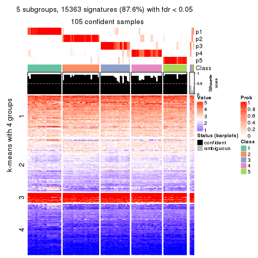
get_signatures(res, k = 6, scale_rows = FALSE)
Compare the overlap of signatures from different k:
compare_signatures(res)
get_signature() returns a data frame invisibly. TO get the list of signatures, the function
call should be assigned to a variable explicitly. In following code, if plot argument is set
to FALSE, no heatmap is plotted while only the differential analysis is performed.
# code only for demonstration
tb = get_signature(res, k = ..., plot = FALSE)
An example of the output of tb is:
#> which_row fdr mean_1 mean_2 scaled_mean_1 scaled_mean_2 km
#> 1 38 0.042760348 8.373488 9.131774 -0.5533452 0.5164555 1
#> 2 40 0.018707592 7.106213 8.469186 -0.6173731 0.5762149 1
#> 3 55 0.019134737 10.221463 11.207825 -0.6159697 0.5749050 1
#> 4 59 0.006059896 5.921854 7.869574 -0.6899429 0.6439467 1
#> 5 60 0.018055526 8.928898 10.211722 -0.6204761 0.5791110 1
#> 6 98 0.009384629 15.714769 14.887706 0.6635654 -0.6193277 2
...
The columns in tb are:
which_row: row indices corresponding to the input matrix.fdr: FDR for the differential test. mean_x: The mean value in group x.scaled_mean_x: The mean value in group x after rows are scaled.km: Row groups if k-means clustering is applied to rows.UMAP plot which shows how samples are separated.
dimension_reduction(res, k = 2, method = "UMAP")
dimension_reduction(res, k = 3, method = "UMAP")
dimension_reduction(res, k = 4, method = "UMAP")
dimension_reduction(res, k = 5, method = "UMAP")
dimension_reduction(res, k = 6, method = "UMAP")
Following heatmap shows how subgroups are split when increasing k:
collect_classes(res)
If matrix rows can be associated to genes, consider to use GO_Enrichment(res,
...) to perform function enrichment for the signature genes.
The object with results only for a single top-value method and a single partition method can be extracted as:
res = res_list["MAD", "pam"]
# you can also extract it by
# res = res_list["MAD:pam"]
A summary of res and all the functions that can be applied to it:
res
#> A 'ConsensusPartition' object with k = 2, 3, 4, 5, 6.
#> On a matrix with 17532 rows and 108 columns.
#> Top rows (1000, 2000, 3000, 4000, 5000) are extracted by 'MAD' method.
#> Subgroups are detected by 'pam' method.
#> Performed in total 1250 partitions by row resampling.
#> Best k for subgroups seems to be 2.
#>
#> Following methods can be applied to this 'ConsensusPartition' object:
#> [1] "cola_report" "collect_classes" "collect_plots"
#> [4] "collect_stats" "colnames" "compare_signatures"
#> [7] "consensus_heatmap" "dimension_reduction" "functional_enrichment"
#> [10] "get_anno_col" "get_anno" "get_classes"
#> [13] "get_consensus" "get_matrix" "get_membership"
#> [16] "get_param" "get_signatures" "get_stats"
#> [19] "is_best_k" "is_stable_k" "membership_heatmap"
#> [22] "ncol" "nrow" "plot_ecdf"
#> [25] "rownames" "select_partition_number" "show"
#> [28] "suggest_best_k" "test_to_known_factors"
collect_plots() function collects all the plots made from res for all k (number of partitions)
into one single page to provide an easy and fast comparison between different k.
collect_plots(res)
The plots are:
k and the heatmap of
predicted classes for each k.k.k.k.All the plots in panels can be made by individual functions and they are plotted later in this section.
select_partition_number() produces several plots showing different
statistics for choosing “optimized” k. There are following statistics:
k;k, the area increased is defined as \(A_k - A_{k-1}\).The detailed explanations of these statistics can be found in the cola vignette.
Generally speaking, lower PAC score, higher mean silhouette score or higher
concordance corresponds to better partition. Rand index and Jaccard index
measure how similar the current partition is compared to partition with k-1.
If they are too similar, we won't accept k is better than k-1.
select_partition_number(res)
The numeric values for all these statistics can be obtained by get_stats().
get_stats(res)
#> k 1-PAC mean_silhouette concordance area_increased Rand Jaccard
#> 2 2 1.000 0.982 0.991 0.3251 0.684 0.684
#> 3 3 0.833 0.889 0.951 0.9347 0.688 0.544
#> 4 4 0.881 0.851 0.939 0.1653 0.811 0.542
#> 5 5 0.823 0.842 0.921 0.0772 0.901 0.656
#> 6 6 0.756 0.570 0.805 0.0449 0.905 0.598
suggest_best_k() suggests the best \(k\) based on these statistics. The rules are as follows:
NA.suggest_best_k(res)
#> [1] 2
Following shows the table of the partitions (You need to click the show/hide
code output link to see it). The membership matrix (columns with name p*)
is inferred by
clue::cl_consensus()
function with the SE method. Basically the value in the membership matrix
represents the probability to belong to a certain group. The finall class
label for an item is determined with the group with highest probability it
belongs to.
In get_classes() function, the entropy is calculated from the membership
matrix and the silhouette score is calculated from the consensus matrix.
cbind(get_classes(res, k = 2), get_membership(res, k = 2))
#> class entropy silhouette p1 p2
#> SRR1389909 2 0.0000 0.989 0.000 1.000
#> SRR1454460 2 0.0000 0.989 0.000 1.000
#> SRR1404623 2 0.0000 0.989 0.000 1.000
#> SRR1092038 2 0.0938 0.986 0.012 0.988
#> SRR1319793 2 0.0000 0.989 0.000 1.000
#> SRR1396208 2 0.0000 0.989 0.000 1.000
#> SRR1435797 2 0.0938 0.986 0.012 0.988
#> SRR1078042 2 0.0938 0.986 0.012 0.988
#> SRR1339699 2 0.0938 0.986 0.012 0.988
#> SRR1446499 2 0.0000 0.989 0.000 1.000
#> SRR1359428 2 0.0000 0.989 0.000 1.000
#> SRR1071475 1 0.0000 0.998 1.000 0.000
#> SRR1436781 2 0.0000 0.989 0.000 1.000
#> SRR1101453 2 0.0938 0.986 0.012 0.988
#> SRR1350891 2 0.0000 0.989 0.000 1.000
#> SRR814293 1 0.0938 0.989 0.988 0.012
#> SRR1471456 2 0.0938 0.986 0.012 0.988
#> SRR1446874 2 0.0938 0.986 0.012 0.988
#> SRR1362731 2 0.0000 0.989 0.000 1.000
#> SRR1413705 2 0.0000 0.989 0.000 1.000
#> SRR1434586 2 0.0000 0.989 0.000 1.000
#> SRR1091164 2 0.0000 0.989 0.000 1.000
#> SRR1340598 2 0.0376 0.988 0.004 0.996
#> SRR1466469 1 0.0000 0.998 1.000 0.000
#> SRR1099310 2 0.0000 0.989 0.000 1.000
#> SRR814892 2 0.0000 0.989 0.000 1.000
#> SRR1090698 2 0.0000 0.989 0.000 1.000
#> SRR1089134 1 0.0000 0.998 1.000 0.000
#> SRR1120276 2 0.0938 0.986 0.012 0.988
#> SRR1430507 2 0.9522 0.423 0.372 0.628
#> SRR1356078 2 0.0938 0.986 0.012 0.988
#> SRR1447037 2 0.0938 0.986 0.012 0.988
#> SRR1443544 2 0.0938 0.986 0.012 0.988
#> SRR1081987 2 0.0000 0.989 0.000 1.000
#> SRR1316513 2 0.0000 0.989 0.000 1.000
#> SRR1478457 2 0.0938 0.986 0.012 0.988
#> SRR1342849 2 0.0938 0.986 0.012 0.988
#> SRR1073878 2 0.0000 0.989 0.000 1.000
#> SRR1078735 2 0.3114 0.945 0.056 0.944
#> SRR1093601 2 0.0000 0.989 0.000 1.000
#> SRR816629 2 0.0938 0.986 0.012 0.988
#> SRR1477754 2 0.0000 0.989 0.000 1.000
#> SRR1454589 2 0.6438 0.814 0.164 0.836
#> SRR1102780 1 0.1184 0.987 0.984 0.016
#> SRR1347518 2 0.0000 0.989 0.000 1.000
#> SRR1093747 1 0.0000 0.998 1.000 0.000
#> SRR809209 2 0.0938 0.986 0.012 0.988
#> SRR1082471 2 0.0000 0.989 0.000 1.000
#> SRR1390349 2 0.0938 0.986 0.012 0.988
#> SRR1410493 2 0.0000 0.989 0.000 1.000
#> SRR1086656 2 0.0000 0.989 0.000 1.000
#> SRR1469997 2 0.0000 0.989 0.000 1.000
#> SRR1355512 2 0.0000 0.989 0.000 1.000
#> SRR809897 2 0.0000 0.989 0.000 1.000
#> SRR1436146 2 0.0000 0.989 0.000 1.000
#> SRR1097148 1 0.0000 0.998 1.000 0.000
#> SRR1429979 2 0.0938 0.986 0.012 0.988
#> SRR1454607 1 0.0000 0.998 1.000 0.000
#> SRR1420687 1 0.0000 0.998 1.000 0.000
#> SRR1099669 1 0.0000 0.998 1.000 0.000
#> SRR1360172 2 0.0938 0.986 0.012 0.988
#> SRR1478131 2 0.0000 0.989 0.000 1.000
#> SRR1453235 2 0.0938 0.986 0.012 0.988
#> SRR1369107 2 0.0938 0.986 0.012 0.988
#> SRR1096458 2 0.0938 0.986 0.012 0.988
#> SRR1088856 2 0.0938 0.986 0.012 0.988
#> SRR1432934 2 0.0000 0.989 0.000 1.000
#> SRR821072 2 0.0000 0.989 0.000 1.000
#> SRR1480896 2 0.0938 0.986 0.012 0.988
#> SRR1403344 2 0.0000 0.989 0.000 1.000
#> SRR1360850 1 0.0000 0.998 1.000 0.000
#> SRR1451820 2 0.0000 0.989 0.000 1.000
#> SRR1075360 2 0.0938 0.986 0.012 0.988
#> SRR1413373 1 0.0000 0.998 1.000 0.000
#> SRR1090928 2 0.0000 0.989 0.000 1.000
#> SRR1097124 2 0.0000 0.989 0.000 1.000
#> SRR1458745 1 0.0000 0.998 1.000 0.000
#> SRR1078636 2 0.0000 0.989 0.000 1.000
#> SRR1473754 2 0.0938 0.986 0.012 0.988
#> SRR1085736 2 0.0000 0.989 0.000 1.000
#> SRR1098807 1 0.0000 0.998 1.000 0.000
#> SRR1341583 2 0.0000 0.989 0.000 1.000
#> SRR1380869 2 0.0000 0.989 0.000 1.000
#> SRR1430775 2 0.0000 0.989 0.000 1.000
#> SRR1479573 2 0.0938 0.986 0.012 0.988
#> SRR1082352 1 0.0000 0.998 1.000 0.000
#> SRR1102005 2 0.0000 0.989 0.000 1.000
#> SRR1408415 1 0.0000 0.998 1.000 0.000
#> SRR1353537 1 0.0000 0.998 1.000 0.000
#> SRR1458870 2 0.0000 0.989 0.000 1.000
#> SRR1315495 2 0.0000 0.989 0.000 1.000
#> SRR1481169 1 0.0938 0.989 0.988 0.012
#> SRR1470273 1 0.0000 0.998 1.000 0.000
#> SRR1312446 2 0.0000 0.989 0.000 1.000
#> SRR1101859 2 0.0000 0.989 0.000 1.000
#> SRR1384210 1 0.0000 0.998 1.000 0.000
#> SRR1336244 2 0.0000 0.989 0.000 1.000
#> SRR1374432 2 0.0000 0.989 0.000 1.000
#> SRR1430023 2 0.0938 0.986 0.012 0.988
#> SRR1487527 1 0.0000 0.998 1.000 0.000
#> SRR1073389 2 0.0938 0.986 0.012 0.988
#> SRR1433171 2 0.0000 0.989 0.000 1.000
#> SRR1085565 2 0.0938 0.986 0.012 0.988
#> SRR1355017 2 0.0000 0.989 0.000 1.000
#> SRR1351641 2 0.0000 0.989 0.000 1.000
#> SRR1398230 2 0.0000 0.989 0.000 1.000
#> SRR1086212 2 0.0000 0.989 0.000 1.000
#> SRR1431514 2 0.0000 0.989 0.000 1.000
cbind(get_classes(res, k = 3), get_membership(res, k = 3))
#> class entropy silhouette p1 p2 p3
#> SRR1389909 3 0.2878 0.878 0.000 0.096 0.904
#> SRR1454460 3 0.0424 0.939 0.000 0.008 0.992
#> SRR1404623 2 0.0000 0.922 0.000 1.000 0.000
#> SRR1092038 3 0.0892 0.934 0.000 0.020 0.980
#> SRR1319793 2 0.0000 0.922 0.000 1.000 0.000
#> SRR1396208 3 0.0000 0.941 0.000 0.000 1.000
#> SRR1435797 3 0.1411 0.924 0.000 0.036 0.964
#> SRR1078042 3 0.0000 0.941 0.000 0.000 1.000
#> SRR1339699 3 0.0000 0.941 0.000 0.000 1.000
#> SRR1446499 2 0.2537 0.855 0.000 0.920 0.080
#> SRR1359428 2 0.0747 0.912 0.000 0.984 0.016
#> SRR1071475 1 0.0000 0.984 1.000 0.000 0.000
#> SRR1436781 2 0.0000 0.922 0.000 1.000 0.000
#> SRR1101453 3 0.1031 0.932 0.000 0.024 0.976
#> SRR1350891 2 0.0000 0.922 0.000 1.000 0.000
#> SRR814293 1 0.2066 0.933 0.940 0.060 0.000
#> SRR1471456 3 0.1031 0.932 0.000 0.024 0.976
#> SRR1446874 3 0.0000 0.941 0.000 0.000 1.000
#> SRR1362731 2 0.0000 0.922 0.000 1.000 0.000
#> SRR1413705 2 0.0747 0.912 0.000 0.984 0.016
#> SRR1434586 3 0.1031 0.932 0.000 0.024 0.976
#> SRR1091164 2 0.0237 0.920 0.000 0.996 0.004
#> SRR1340598 3 0.0000 0.941 0.000 0.000 1.000
#> SRR1466469 1 0.0000 0.984 1.000 0.000 0.000
#> SRR1099310 2 0.6295 0.157 0.000 0.528 0.472
#> SRR814892 2 0.0000 0.922 0.000 1.000 0.000
#> SRR1090698 3 0.0237 0.940 0.000 0.004 0.996
#> SRR1089134 1 0.0000 0.984 1.000 0.000 0.000
#> SRR1120276 3 0.0000 0.941 0.000 0.000 1.000
#> SRR1430507 3 0.6295 0.148 0.472 0.000 0.528
#> SRR1356078 3 0.0000 0.941 0.000 0.000 1.000
#> SRR1447037 3 0.0000 0.941 0.000 0.000 1.000
#> SRR1443544 3 0.0000 0.941 0.000 0.000 1.000
#> SRR1081987 3 0.4452 0.777 0.000 0.192 0.808
#> SRR1316513 3 0.5678 0.563 0.000 0.316 0.684
#> SRR1478457 3 0.0000 0.941 0.000 0.000 1.000
#> SRR1342849 3 0.0000 0.941 0.000 0.000 1.000
#> SRR1073878 2 0.0000 0.922 0.000 1.000 0.000
#> SRR1078735 3 0.0747 0.935 0.016 0.000 0.984
#> SRR1093601 2 0.0000 0.922 0.000 1.000 0.000
#> SRR816629 3 0.1031 0.932 0.000 0.024 0.976
#> SRR1477754 2 0.3267 0.828 0.000 0.884 0.116
#> SRR1454589 3 0.3482 0.836 0.128 0.000 0.872
#> SRR1102780 1 0.2066 0.941 0.940 0.000 0.060
#> SRR1347518 3 0.0000 0.941 0.000 0.000 1.000
#> SRR1093747 1 0.1411 0.964 0.964 0.000 0.036
#> SRR809209 3 0.0000 0.941 0.000 0.000 1.000
#> SRR1082471 3 0.2878 0.878 0.000 0.096 0.904
#> SRR1390349 3 0.0000 0.941 0.000 0.000 1.000
#> SRR1410493 3 0.0237 0.940 0.000 0.004 0.996
#> SRR1086656 3 0.2959 0.882 0.000 0.100 0.900
#> SRR1469997 2 0.0000 0.922 0.000 1.000 0.000
#> SRR1355512 3 0.5678 0.514 0.000 0.316 0.684
#> SRR809897 3 0.0000 0.941 0.000 0.000 1.000
#> SRR1436146 2 0.0000 0.922 0.000 1.000 0.000
#> SRR1097148 1 0.0000 0.984 1.000 0.000 0.000
#> SRR1429979 3 0.0000 0.941 0.000 0.000 1.000
#> SRR1454607 1 0.0000 0.984 1.000 0.000 0.000
#> SRR1420687 1 0.1411 0.964 0.964 0.000 0.036
#> SRR1099669 1 0.1411 0.964 0.964 0.000 0.036
#> SRR1360172 3 0.0000 0.941 0.000 0.000 1.000
#> SRR1478131 3 0.5327 0.647 0.000 0.272 0.728
#> SRR1453235 3 0.0000 0.941 0.000 0.000 1.000
#> SRR1369107 3 0.0000 0.941 0.000 0.000 1.000
#> SRR1096458 3 0.2959 0.874 0.000 0.100 0.900
#> SRR1088856 3 0.1031 0.932 0.000 0.024 0.976
#> SRR1432934 2 0.0000 0.922 0.000 1.000 0.000
#> SRR821072 2 0.6267 0.180 0.000 0.548 0.452
#> SRR1480896 3 0.0000 0.941 0.000 0.000 1.000
#> SRR1403344 3 0.0000 0.941 0.000 0.000 1.000
#> SRR1360850 1 0.0000 0.984 1.000 0.000 0.000
#> SRR1451820 2 0.0000 0.922 0.000 1.000 0.000
#> SRR1075360 3 0.0000 0.941 0.000 0.000 1.000
#> SRR1413373 1 0.0000 0.984 1.000 0.000 0.000
#> SRR1090928 2 0.0000 0.922 0.000 1.000 0.000
#> SRR1097124 2 0.0000 0.922 0.000 1.000 0.000
#> SRR1458745 1 0.0000 0.984 1.000 0.000 0.000
#> SRR1078636 2 0.0000 0.922 0.000 1.000 0.000
#> SRR1473754 2 0.4702 0.732 0.000 0.788 0.212
#> SRR1085736 3 0.0000 0.941 0.000 0.000 1.000
#> SRR1098807 1 0.0000 0.984 1.000 0.000 0.000
#> SRR1341583 2 0.0892 0.909 0.000 0.980 0.020
#> SRR1380869 3 0.2448 0.894 0.000 0.076 0.924
#> SRR1430775 3 0.3499 0.885 0.028 0.072 0.900
#> SRR1479573 3 0.0000 0.941 0.000 0.000 1.000
#> SRR1082352 1 0.0000 0.984 1.000 0.000 0.000
#> SRR1102005 3 0.0000 0.941 0.000 0.000 1.000
#> SRR1408415 1 0.0747 0.976 0.984 0.000 0.016
#> SRR1353537 1 0.0000 0.984 1.000 0.000 0.000
#> SRR1458870 2 0.0000 0.922 0.000 1.000 0.000
#> SRR1315495 2 0.0000 0.922 0.000 1.000 0.000
#> SRR1481169 1 0.1411 0.964 0.964 0.000 0.036
#> SRR1470273 1 0.0000 0.984 1.000 0.000 0.000
#> SRR1312446 2 0.0000 0.922 0.000 1.000 0.000
#> SRR1101859 2 0.0000 0.922 0.000 1.000 0.000
#> SRR1384210 1 0.0000 0.984 1.000 0.000 0.000
#> SRR1336244 2 0.0000 0.922 0.000 1.000 0.000
#> SRR1374432 3 0.4399 0.788 0.000 0.188 0.812
#> SRR1430023 3 0.0592 0.937 0.000 0.012 0.988
#> SRR1487527 1 0.0000 0.984 1.000 0.000 0.000
#> SRR1073389 3 0.3482 0.848 0.128 0.000 0.872
#> SRR1433171 3 0.2959 0.877 0.000 0.100 0.900
#> SRR1085565 3 0.0000 0.941 0.000 0.000 1.000
#> SRR1355017 2 0.0000 0.922 0.000 1.000 0.000
#> SRR1351641 2 0.0000 0.922 0.000 1.000 0.000
#> SRR1398230 2 0.0000 0.922 0.000 1.000 0.000
#> SRR1086212 2 0.6062 0.389 0.000 0.616 0.384
#> SRR1431514 2 0.5706 0.535 0.000 0.680 0.320
cbind(get_classes(res, k = 4), get_membership(res, k = 4))
#> class entropy silhouette p1 p2 p3 p4
#> SRR1389909 4 0.0000 0.878 0.000 0.000 0.000 1.000
#> SRR1454460 3 0.0000 0.944 0.000 0.000 1.000 0.000
#> SRR1404623 2 0.0000 0.963 0.000 1.000 0.000 0.000
#> SRR1092038 3 0.0000 0.944 0.000 0.000 1.000 0.000
#> SRR1319793 2 0.0000 0.963 0.000 1.000 0.000 0.000
#> SRR1396208 3 0.0000 0.944 0.000 0.000 1.000 0.000
#> SRR1435797 3 0.0188 0.941 0.000 0.004 0.996 0.000
#> SRR1078042 3 0.0000 0.944 0.000 0.000 1.000 0.000
#> SRR1339699 3 0.0000 0.944 0.000 0.000 1.000 0.000
#> SRR1446499 2 0.0000 0.963 0.000 1.000 0.000 0.000
#> SRR1359428 2 0.0188 0.960 0.000 0.996 0.004 0.000
#> SRR1071475 1 0.0000 0.914 1.000 0.000 0.000 0.000
#> SRR1436781 4 0.3688 0.717 0.000 0.208 0.000 0.792
#> SRR1101453 3 0.0000 0.944 0.000 0.000 1.000 0.000
#> SRR1350891 2 0.0000 0.963 0.000 1.000 0.000 0.000
#> SRR814293 4 0.0592 0.869 0.016 0.000 0.000 0.984
#> SRR1471456 3 0.0000 0.944 0.000 0.000 1.000 0.000
#> SRR1446874 3 0.0000 0.944 0.000 0.000 1.000 0.000
#> SRR1362731 2 0.0000 0.963 0.000 1.000 0.000 0.000
#> SRR1413705 4 0.4898 0.243 0.000 0.416 0.000 0.584
#> SRR1434586 3 0.0000 0.944 0.000 0.000 1.000 0.000
#> SRR1091164 2 0.0000 0.963 0.000 1.000 0.000 0.000
#> SRR1340598 3 0.0000 0.944 0.000 0.000 1.000 0.000
#> SRR1466469 1 0.0000 0.914 1.000 0.000 0.000 0.000
#> SRR1099310 4 0.0000 0.878 0.000 0.000 0.000 1.000
#> SRR814892 4 0.4804 0.425 0.000 0.384 0.000 0.616
#> SRR1090698 3 0.0336 0.939 0.000 0.008 0.992 0.000
#> SRR1089134 1 0.0000 0.914 1.000 0.000 0.000 0.000
#> SRR1120276 3 0.0000 0.944 0.000 0.000 1.000 0.000
#> SRR1430507 1 0.6826 0.504 0.600 0.000 0.228 0.172
#> SRR1356078 3 0.0000 0.944 0.000 0.000 1.000 0.000
#> SRR1447037 4 0.5137 0.164 0.000 0.004 0.452 0.544
#> SRR1443544 3 0.0000 0.944 0.000 0.000 1.000 0.000
#> SRR1081987 4 0.0707 0.869 0.000 0.020 0.000 0.980
#> SRR1316513 4 0.0000 0.878 0.000 0.000 0.000 1.000
#> SRR1478457 3 0.0000 0.944 0.000 0.000 1.000 0.000
#> SRR1342849 3 0.0469 0.936 0.000 0.000 0.988 0.012
#> SRR1073878 2 0.0000 0.963 0.000 1.000 0.000 0.000
#> SRR1078735 3 0.0707 0.928 0.020 0.000 0.980 0.000
#> SRR1093601 4 0.0000 0.878 0.000 0.000 0.000 1.000
#> SRR816629 3 0.0000 0.944 0.000 0.000 1.000 0.000
#> SRR1477754 2 0.1022 0.932 0.000 0.968 0.032 0.000
#> SRR1454589 3 0.1388 0.914 0.012 0.000 0.960 0.028
#> SRR1102780 4 0.0000 0.878 0.000 0.000 0.000 1.000
#> SRR1347518 3 0.4996 0.038 0.000 0.000 0.516 0.484
#> SRR1093747 1 0.1637 0.882 0.940 0.000 0.060 0.000
#> SRR809209 3 0.0000 0.944 0.000 0.000 1.000 0.000
#> SRR1082471 3 0.3266 0.769 0.000 0.168 0.832 0.000
#> SRR1390349 3 0.0188 0.941 0.000 0.004 0.996 0.000
#> SRR1410493 3 0.0336 0.939 0.000 0.008 0.992 0.000
#> SRR1086656 3 0.5744 0.142 0.000 0.028 0.536 0.436
#> SRR1469997 2 0.3400 0.763 0.000 0.820 0.000 0.180
#> SRR1355512 3 0.1807 0.893 0.000 0.052 0.940 0.008
#> SRR809897 3 0.0000 0.944 0.000 0.000 1.000 0.000
#> SRR1436146 2 0.0000 0.963 0.000 1.000 0.000 0.000
#> SRR1097148 1 0.0000 0.914 1.000 0.000 0.000 0.000
#> SRR1429979 3 0.0000 0.944 0.000 0.000 1.000 0.000
#> SRR1454607 1 0.0000 0.914 1.000 0.000 0.000 0.000
#> SRR1420687 1 0.1637 0.882 0.940 0.000 0.060 0.000
#> SRR1099669 1 0.1888 0.886 0.940 0.000 0.044 0.016
#> SRR1360172 3 0.0000 0.944 0.000 0.000 1.000 0.000
#> SRR1478131 4 0.0000 0.878 0.000 0.000 0.000 1.000
#> SRR1453235 4 0.4585 0.477 0.000 0.000 0.332 0.668
#> SRR1369107 3 0.0000 0.944 0.000 0.000 1.000 0.000
#> SRR1096458 4 0.1557 0.837 0.000 0.000 0.056 0.944
#> SRR1088856 3 0.0000 0.944 0.000 0.000 1.000 0.000
#> SRR1432934 2 0.1867 0.901 0.000 0.928 0.000 0.072
#> SRR821072 4 0.0000 0.878 0.000 0.000 0.000 1.000
#> SRR1480896 3 0.0000 0.944 0.000 0.000 1.000 0.000
#> SRR1403344 3 0.0000 0.944 0.000 0.000 1.000 0.000
#> SRR1360850 1 0.0000 0.914 1.000 0.000 0.000 0.000
#> SRR1451820 4 0.0336 0.875 0.000 0.008 0.000 0.992
#> SRR1075360 3 0.0000 0.944 0.000 0.000 1.000 0.000
#> SRR1413373 1 0.0000 0.914 1.000 0.000 0.000 0.000
#> SRR1090928 2 0.0000 0.963 0.000 1.000 0.000 0.000
#> SRR1097124 2 0.0336 0.958 0.000 0.992 0.000 0.008
#> SRR1458745 1 0.0188 0.913 0.996 0.000 0.000 0.004
#> SRR1078636 2 0.0000 0.963 0.000 1.000 0.000 0.000
#> SRR1473754 4 0.0000 0.878 0.000 0.000 0.000 1.000
#> SRR1085736 3 0.5070 0.229 0.000 0.004 0.580 0.416
#> SRR1098807 1 0.0000 0.914 1.000 0.000 0.000 0.000
#> SRR1341583 2 0.0000 0.963 0.000 1.000 0.000 0.000
#> SRR1380869 4 0.0000 0.878 0.000 0.000 0.000 1.000
#> SRR1430775 4 0.0188 0.876 0.000 0.000 0.004 0.996
#> SRR1479573 3 0.0000 0.944 0.000 0.000 1.000 0.000
#> SRR1082352 1 0.1022 0.895 0.968 0.000 0.000 0.032
#> SRR1102005 3 0.0000 0.944 0.000 0.000 1.000 0.000
#> SRR1408415 1 0.1557 0.878 0.944 0.000 0.000 0.056
#> SRR1353537 1 0.0000 0.914 1.000 0.000 0.000 0.000
#> SRR1458870 2 0.0000 0.963 0.000 1.000 0.000 0.000
#> SRR1315495 2 0.0000 0.963 0.000 1.000 0.000 0.000
#> SRR1481169 4 0.0000 0.878 0.000 0.000 0.000 1.000
#> SRR1470273 1 0.0000 0.914 1.000 0.000 0.000 0.000
#> SRR1312446 2 0.0000 0.963 0.000 1.000 0.000 0.000
#> SRR1101859 4 0.3688 0.714 0.000 0.208 0.000 0.792
#> SRR1384210 1 0.4817 0.391 0.612 0.000 0.388 0.000
#> SRR1336244 2 0.0000 0.963 0.000 1.000 0.000 0.000
#> SRR1374432 2 0.4585 0.482 0.000 0.668 0.332 0.000
#> SRR1430023 3 0.4277 0.581 0.000 0.000 0.720 0.280
#> SRR1487527 1 0.0000 0.914 1.000 0.000 0.000 0.000
#> SRR1073389 1 0.5149 0.506 0.648 0.000 0.336 0.016
#> SRR1433171 4 0.6357 0.618 0.000 0.160 0.184 0.656
#> SRR1085565 3 0.0000 0.944 0.000 0.000 1.000 0.000
#> SRR1355017 2 0.1867 0.901 0.000 0.928 0.000 0.072
#> SRR1351641 2 0.0000 0.963 0.000 1.000 0.000 0.000
#> SRR1398230 2 0.0000 0.963 0.000 1.000 0.000 0.000
#> SRR1086212 4 0.0000 0.878 0.000 0.000 0.000 1.000
#> SRR1431514 4 0.0188 0.876 0.000 0.000 0.004 0.996
cbind(get_classes(res, k = 5), get_membership(res, k = 5))
#> class entropy silhouette p1 p2 p3 p4 p5
#> SRR1389909 4 0.0000 0.8810 0.000 0.000 0.000 1.000 0.000
#> SRR1454460 3 0.0000 0.8761 0.000 0.000 1.000 0.000 0.000
#> SRR1404623 2 0.0000 0.9720 0.000 1.000 0.000 0.000 0.000
#> SRR1092038 3 0.0000 0.8761 0.000 0.000 1.000 0.000 0.000
#> SRR1319793 2 0.0000 0.9720 0.000 1.000 0.000 0.000 0.000
#> SRR1396208 3 0.4318 0.8097 0.000 0.076 0.808 0.072 0.044
#> SRR1435797 3 0.3873 0.8176 0.000 0.088 0.820 0.008 0.084
#> SRR1078042 3 0.0000 0.8761 0.000 0.000 1.000 0.000 0.000
#> SRR1339699 3 0.1121 0.8714 0.000 0.000 0.956 0.000 0.044
#> SRR1446499 2 0.2074 0.8753 0.000 0.896 0.000 0.000 0.104
#> SRR1359428 2 0.0000 0.9720 0.000 1.000 0.000 0.000 0.000
#> SRR1071475 1 0.0000 0.9638 1.000 0.000 0.000 0.000 0.000
#> SRR1436781 4 0.3242 0.7396 0.000 0.216 0.000 0.784 0.000
#> SRR1101453 3 0.0000 0.8761 0.000 0.000 1.000 0.000 0.000
#> SRR1350891 2 0.0000 0.9720 0.000 1.000 0.000 0.000 0.000
#> SRR814293 4 0.2011 0.8337 0.004 0.000 0.000 0.908 0.088
#> SRR1471456 3 0.0000 0.8761 0.000 0.000 1.000 0.000 0.000
#> SRR1446874 3 0.2719 0.8295 0.000 0.000 0.852 0.004 0.144
#> SRR1362731 2 0.0000 0.9720 0.000 1.000 0.000 0.000 0.000
#> SRR1413705 4 0.4268 0.1878 0.000 0.444 0.000 0.556 0.000
#> SRR1434586 5 0.3752 0.6306 0.000 0.000 0.292 0.000 0.708
#> SRR1091164 2 0.0000 0.9720 0.000 1.000 0.000 0.000 0.000
#> SRR1340598 3 0.4142 0.8076 0.000 0.036 0.812 0.108 0.044
#> SRR1466469 1 0.0000 0.9638 1.000 0.000 0.000 0.000 0.000
#> SRR1099310 4 0.0000 0.8810 0.000 0.000 0.000 1.000 0.000
#> SRR814892 4 0.4045 0.5077 0.000 0.356 0.000 0.644 0.000
#> SRR1090698 3 0.5293 0.0528 0.000 0.048 0.492 0.000 0.460
#> SRR1089134 1 0.0000 0.9638 1.000 0.000 0.000 0.000 0.000
#> SRR1120276 3 0.0000 0.8761 0.000 0.000 1.000 0.000 0.000
#> SRR1430507 5 0.1205 0.8786 0.040 0.000 0.000 0.004 0.956
#> SRR1356078 5 0.0000 0.8889 0.000 0.000 0.000 0.000 1.000
#> SRR1447037 4 0.2438 0.8344 0.000 0.008 0.040 0.908 0.044
#> SRR1443544 3 0.0880 0.8739 0.000 0.000 0.968 0.000 0.032
#> SRR1081987 4 0.2153 0.8459 0.000 0.040 0.000 0.916 0.044
#> SRR1316513 4 0.0000 0.8810 0.000 0.000 0.000 1.000 0.000
#> SRR1478457 3 0.3282 0.7954 0.000 0.000 0.804 0.008 0.188
#> SRR1342849 3 0.3723 0.7858 0.000 0.000 0.804 0.152 0.044
#> SRR1073878 2 0.0000 0.9720 0.000 1.000 0.000 0.000 0.000
#> SRR1078735 3 0.0703 0.8750 0.000 0.000 0.976 0.000 0.024
#> SRR1093601 4 0.0000 0.8810 0.000 0.000 0.000 1.000 0.000
#> SRR816629 3 0.1043 0.8694 0.000 0.000 0.960 0.000 0.040
#> SRR1477754 2 0.1792 0.9043 0.000 0.916 0.000 0.000 0.084
#> SRR1454589 3 0.4489 0.4341 0.000 0.000 0.572 0.008 0.420
#> SRR1102780 4 0.1792 0.8404 0.000 0.000 0.000 0.916 0.084
#> SRR1347518 4 0.4210 0.2027 0.000 0.000 0.412 0.588 0.000
#> SRR1093747 5 0.1121 0.8775 0.044 0.000 0.000 0.000 0.956
#> SRR809209 3 0.3731 0.8341 0.000 0.040 0.844 0.068 0.048
#> SRR1082471 5 0.0000 0.8889 0.000 0.000 0.000 0.000 1.000
#> SRR1390349 3 0.4860 0.7773 0.000 0.088 0.756 0.024 0.132
#> SRR1410493 5 0.0000 0.8889 0.000 0.000 0.000 0.000 1.000
#> SRR1086656 3 0.4825 0.1884 0.000 0.024 0.568 0.408 0.000
#> SRR1469997 2 0.2648 0.8219 0.000 0.848 0.000 0.152 0.000
#> SRR1355512 5 0.2488 0.8015 0.000 0.004 0.124 0.000 0.872
#> SRR809897 3 0.3074 0.7916 0.000 0.000 0.804 0.000 0.196
#> SRR1436146 2 0.0000 0.9720 0.000 1.000 0.000 0.000 0.000
#> SRR1097148 1 0.0000 0.9638 1.000 0.000 0.000 0.000 0.000
#> SRR1429979 3 0.0000 0.8761 0.000 0.000 1.000 0.000 0.000
#> SRR1454607 1 0.0000 0.9638 1.000 0.000 0.000 0.000 0.000
#> SRR1420687 5 0.1410 0.8671 0.060 0.000 0.000 0.000 0.940
#> SRR1099669 5 0.1121 0.8775 0.044 0.000 0.000 0.000 0.956
#> SRR1360172 3 0.0000 0.8761 0.000 0.000 1.000 0.000 0.000
#> SRR1478131 4 0.0000 0.8810 0.000 0.000 0.000 1.000 0.000
#> SRR1453235 5 0.4597 0.2375 0.000 0.000 0.012 0.424 0.564
#> SRR1369107 3 0.0000 0.8761 0.000 0.000 1.000 0.000 0.000
#> SRR1096458 4 0.0000 0.8810 0.000 0.000 0.000 1.000 0.000
#> SRR1088856 3 0.0000 0.8761 0.000 0.000 1.000 0.000 0.000
#> SRR1432934 2 0.2074 0.8774 0.000 0.896 0.000 0.104 0.000
#> SRR821072 4 0.0000 0.8810 0.000 0.000 0.000 1.000 0.000
#> SRR1480896 5 0.0963 0.8757 0.000 0.000 0.036 0.000 0.964
#> SRR1403344 3 0.1399 0.8722 0.000 0.020 0.952 0.000 0.028
#> SRR1360850 1 0.0000 0.9638 1.000 0.000 0.000 0.000 0.000
#> SRR1451820 4 0.1043 0.8677 0.000 0.040 0.000 0.960 0.000
#> SRR1075360 5 0.0000 0.8889 0.000 0.000 0.000 0.000 1.000
#> SRR1413373 1 0.0290 0.9587 0.992 0.000 0.000 0.008 0.000
#> SRR1090928 2 0.0000 0.9720 0.000 1.000 0.000 0.000 0.000
#> SRR1097124 2 0.0000 0.9720 0.000 1.000 0.000 0.000 0.000
#> SRR1458745 1 0.4674 0.7635 0.772 0.000 0.036 0.136 0.056
#> SRR1078636 2 0.0000 0.9720 0.000 1.000 0.000 0.000 0.000
#> SRR1473754 4 0.0000 0.8810 0.000 0.000 0.000 1.000 0.000
#> SRR1085736 5 0.1043 0.8734 0.000 0.000 0.000 0.040 0.960
#> SRR1098807 1 0.0000 0.9638 1.000 0.000 0.000 0.000 0.000
#> SRR1341583 2 0.0000 0.9720 0.000 1.000 0.000 0.000 0.000
#> SRR1380869 4 0.0290 0.8783 0.000 0.000 0.000 0.992 0.008
#> SRR1430775 4 0.0000 0.8810 0.000 0.000 0.000 1.000 0.000
#> SRR1479573 3 0.3796 0.6625 0.000 0.000 0.700 0.000 0.300
#> SRR1082352 1 0.1792 0.8887 0.916 0.000 0.000 0.084 0.000
#> SRR1102005 5 0.2377 0.7961 0.000 0.000 0.128 0.000 0.872
#> SRR1408415 4 0.2377 0.7922 0.128 0.000 0.000 0.872 0.000
#> SRR1353537 1 0.0000 0.9638 1.000 0.000 0.000 0.000 0.000
#> SRR1458870 2 0.0000 0.9720 0.000 1.000 0.000 0.000 0.000
#> SRR1315495 2 0.0703 0.9539 0.000 0.976 0.024 0.000 0.000
#> SRR1481169 4 0.0000 0.8810 0.000 0.000 0.000 1.000 0.000
#> SRR1470273 1 0.0000 0.9638 1.000 0.000 0.000 0.000 0.000
#> SRR1312446 2 0.0000 0.9720 0.000 1.000 0.000 0.000 0.000
#> SRR1101859 4 0.3305 0.7229 0.000 0.224 0.000 0.776 0.000
#> SRR1384210 3 0.2074 0.8334 0.104 0.000 0.896 0.000 0.000
#> SRR1336244 2 0.0000 0.9720 0.000 1.000 0.000 0.000 0.000
#> SRR1374432 2 0.0404 0.9628 0.000 0.988 0.012 0.000 0.000
#> SRR1430023 3 0.1410 0.8634 0.000 0.000 0.940 0.000 0.060
#> SRR1487527 1 0.2020 0.8790 0.900 0.000 0.000 0.000 0.100
#> SRR1073389 5 0.0703 0.8862 0.024 0.000 0.000 0.000 0.976
#> SRR1433171 4 0.5068 0.6902 0.000 0.180 0.108 0.708 0.004
#> SRR1085565 3 0.0000 0.8761 0.000 0.000 1.000 0.000 0.000
#> SRR1355017 2 0.2074 0.8774 0.000 0.896 0.000 0.104 0.000
#> SRR1351641 2 0.0000 0.9720 0.000 1.000 0.000 0.000 0.000
#> SRR1398230 2 0.0000 0.9720 0.000 1.000 0.000 0.000 0.000
#> SRR1086212 4 0.0000 0.8810 0.000 0.000 0.000 1.000 0.000
#> SRR1431514 4 0.0880 0.8684 0.000 0.000 0.000 0.968 0.032
cbind(get_classes(res, k = 6), get_membership(res, k = 6))
#> class entropy silhouette p1 p2 p3 p4 p5 p6
#> SRR1389909 4 0.0000 0.63582 0.000 0.000 0.000 1.000 0.000 0.000
#> SRR1454460 3 0.0000 0.84997 0.000 0.000 1.000 0.000 0.000 0.000
#> SRR1404623 2 0.0000 0.90462 0.000 1.000 0.000 0.000 0.000 0.000
#> SRR1092038 3 0.0000 0.84997 0.000 0.000 1.000 0.000 0.000 0.000
#> SRR1319793 2 0.3756 0.29695 0.000 0.600 0.000 0.400 0.000 0.000
#> SRR1396208 6 0.5521 0.16839 0.000 0.000 0.132 0.400 0.000 0.468
#> SRR1435797 6 0.4903 -0.25868 0.000 0.000 0.468 0.000 0.060 0.472
#> SRR1078042 3 0.0000 0.84997 0.000 0.000 1.000 0.000 0.000 0.000
#> SRR1339699 3 0.3857 0.29673 0.000 0.000 0.532 0.000 0.000 0.468
#> SRR1446499 2 0.1863 0.80735 0.000 0.896 0.000 0.000 0.104 0.000
#> SRR1359428 2 0.0000 0.90462 0.000 1.000 0.000 0.000 0.000 0.000
#> SRR1071475 1 0.0260 0.96061 0.992 0.000 0.000 0.000 0.000 0.008
#> SRR1436781 4 0.3838 0.25923 0.000 0.448 0.000 0.552 0.000 0.000
#> SRR1101453 3 0.0000 0.84997 0.000 0.000 1.000 0.000 0.000 0.000
#> SRR1350891 2 0.0000 0.90462 0.000 1.000 0.000 0.000 0.000 0.000
#> SRR814293 6 0.4220 -0.15494 0.004 0.000 0.000 0.468 0.008 0.520
#> SRR1471456 3 0.0000 0.84997 0.000 0.000 1.000 0.000 0.000 0.000
#> SRR1446874 6 0.5624 0.08138 0.000 0.000 0.200 0.000 0.264 0.536
#> SRR1362731 2 0.0000 0.90462 0.000 1.000 0.000 0.000 0.000 0.000
#> SRR1413705 4 0.3860 0.23124 0.000 0.472 0.000 0.528 0.000 0.000
#> SRR1434586 5 0.3695 0.44439 0.000 0.000 0.376 0.000 0.624 0.000
#> SRR1091164 2 0.0000 0.90462 0.000 1.000 0.000 0.000 0.000 0.000
#> SRR1340598 6 0.5823 0.22656 0.000 0.000 0.200 0.332 0.000 0.468
#> SRR1466469 1 0.0260 0.96061 0.992 0.000 0.000 0.000 0.000 0.008
#> SRR1099310 4 0.0000 0.63582 0.000 0.000 0.000 1.000 0.000 0.000
#> SRR814892 4 0.3647 0.31443 0.000 0.360 0.000 0.640 0.000 0.000
#> SRR1090698 5 0.6257 0.06483 0.000 0.008 0.252 0.000 0.384 0.356
#> SRR1089134 1 0.0000 0.96114 1.000 0.000 0.000 0.000 0.000 0.000
#> SRR1120276 3 0.0146 0.84848 0.000 0.000 0.996 0.000 0.000 0.004
#> SRR1430507 5 0.0000 0.81598 0.000 0.000 0.000 0.000 1.000 0.000
#> SRR1356078 5 0.0000 0.81598 0.000 0.000 0.000 0.000 1.000 0.000
#> SRR1447037 4 0.4650 -0.09987 0.000 0.000 0.040 0.488 0.000 0.472
#> SRR1443544 3 0.3782 0.40727 0.000 0.000 0.588 0.000 0.000 0.412
#> SRR1081987 4 0.3578 0.24267 0.000 0.000 0.000 0.660 0.000 0.340
#> SRR1316513 4 0.0000 0.63582 0.000 0.000 0.000 1.000 0.000 0.000
#> SRR1478457 6 0.5823 -0.02577 0.000 0.000 0.200 0.000 0.332 0.468
#> SRR1342849 6 0.2378 0.23106 0.000 0.000 0.152 0.000 0.000 0.848
#> SRR1073878 2 0.0000 0.90462 0.000 1.000 0.000 0.000 0.000 0.000
#> SRR1078735 3 0.3244 0.61971 0.000 0.000 0.732 0.000 0.000 0.268
#> SRR1093601 4 0.0000 0.63582 0.000 0.000 0.000 1.000 0.000 0.000
#> SRR816629 3 0.1141 0.80075 0.000 0.000 0.948 0.000 0.052 0.000
#> SRR1477754 2 0.1910 0.81196 0.000 0.892 0.000 0.000 0.108 0.000
#> SRR1454589 6 0.5151 -0.17775 0.000 0.000 0.084 0.000 0.444 0.472
#> SRR1102780 4 0.3817 0.13859 0.000 0.000 0.000 0.568 0.432 0.000
#> SRR1347518 4 0.2300 0.51375 0.000 0.000 0.144 0.856 0.000 0.000
#> SRR1093747 5 0.0146 0.81467 0.000 0.000 0.000 0.000 0.996 0.004
#> SRR809209 6 0.5492 0.16702 0.000 0.000 0.128 0.400 0.000 0.472
#> SRR1082471 5 0.0000 0.81598 0.000 0.000 0.000 0.000 1.000 0.000
#> SRR1390349 6 0.5521 0.16839 0.000 0.000 0.132 0.400 0.000 0.468
#> SRR1410493 5 0.0000 0.81598 0.000 0.000 0.000 0.000 1.000 0.000
#> SRR1086656 3 0.1644 0.77012 0.000 0.004 0.920 0.076 0.000 0.000
#> SRR1469997 2 0.2697 0.66381 0.000 0.812 0.000 0.188 0.000 0.000
#> SRR1355512 5 0.1387 0.77946 0.000 0.000 0.068 0.000 0.932 0.000
#> SRR809897 5 0.5779 0.21330 0.000 0.000 0.200 0.000 0.488 0.312
#> SRR1436146 2 0.0000 0.90462 0.000 1.000 0.000 0.000 0.000 0.000
#> SRR1097148 1 0.0000 0.96114 1.000 0.000 0.000 0.000 0.000 0.000
#> SRR1429979 3 0.0000 0.84997 0.000 0.000 1.000 0.000 0.000 0.000
#> SRR1454607 1 0.0000 0.96114 1.000 0.000 0.000 0.000 0.000 0.000
#> SRR1420687 5 0.1007 0.78991 0.044 0.000 0.000 0.000 0.956 0.000
#> SRR1099669 5 0.0363 0.81088 0.012 0.000 0.000 0.000 0.988 0.000
#> SRR1360172 3 0.0000 0.84997 0.000 0.000 1.000 0.000 0.000 0.000
#> SRR1478131 4 0.0000 0.63582 0.000 0.000 0.000 1.000 0.000 0.000
#> SRR1453235 5 0.5368 0.14096 0.000 0.000 0.040 0.036 0.468 0.456
#> SRR1369107 3 0.0146 0.84848 0.000 0.000 0.996 0.000 0.000 0.004
#> SRR1096458 4 0.1686 0.59437 0.000 0.000 0.012 0.924 0.000 0.064
#> SRR1088856 3 0.0000 0.84997 0.000 0.000 1.000 0.000 0.000 0.000
#> SRR1432934 2 0.0632 0.88802 0.000 0.976 0.000 0.024 0.000 0.000
#> SRR821072 4 0.0000 0.63582 0.000 0.000 0.000 1.000 0.000 0.000
#> SRR1480896 6 0.5151 -0.19333 0.000 0.000 0.084 0.000 0.444 0.472
#> SRR1403344 3 0.3468 0.59072 0.000 0.000 0.712 0.000 0.004 0.284
#> SRR1360850 1 0.0260 0.96061 0.992 0.000 0.000 0.000 0.000 0.008
#> SRR1451820 4 0.3810 0.32704 0.000 0.428 0.000 0.572 0.000 0.000
#> SRR1075360 5 0.0000 0.81598 0.000 0.000 0.000 0.000 1.000 0.000
#> SRR1413373 6 0.3860 -0.32920 0.472 0.000 0.000 0.000 0.000 0.528
#> SRR1090928 2 0.0000 0.90462 0.000 1.000 0.000 0.000 0.000 0.000
#> SRR1097124 6 0.4177 -0.20867 0.000 0.468 0.000 0.012 0.000 0.520
#> SRR1458745 6 0.5607 -0.19630 0.372 0.000 0.060 0.032 0.004 0.532
#> SRR1078636 2 0.0000 0.90462 0.000 1.000 0.000 0.000 0.000 0.000
#> SRR1473754 4 0.2941 0.55300 0.000 0.220 0.000 0.780 0.000 0.000
#> SRR1085736 5 0.0000 0.81598 0.000 0.000 0.000 0.000 1.000 0.000
#> SRR1098807 1 0.0000 0.96114 1.000 0.000 0.000 0.000 0.000 0.000
#> SRR1341583 2 0.0547 0.89295 0.000 0.980 0.000 0.000 0.000 0.020
#> SRR1380869 4 0.1663 0.58372 0.000 0.000 0.000 0.912 0.000 0.088
#> SRR1430775 6 0.3864 -0.16741 0.000 0.000 0.000 0.480 0.000 0.520
#> SRR1479573 5 0.2482 0.70442 0.000 0.000 0.148 0.000 0.848 0.004
#> SRR1082352 1 0.2257 0.82834 0.876 0.000 0.000 0.116 0.000 0.008
#> SRR1102005 5 0.1643 0.77683 0.000 0.000 0.068 0.000 0.924 0.008
#> SRR1408415 6 0.4905 -0.09198 0.064 0.000 0.000 0.408 0.000 0.528
#> SRR1353537 1 0.0260 0.96061 0.992 0.000 0.000 0.000 0.000 0.008
#> SRR1458870 2 0.3409 0.50257 0.000 0.700 0.000 0.300 0.000 0.000
#> SRR1315495 2 0.0260 0.89976 0.000 0.992 0.008 0.000 0.000 0.000
#> SRR1481169 4 0.3756 0.25073 0.000 0.000 0.000 0.600 0.000 0.400
#> SRR1470273 1 0.0000 0.96114 1.000 0.000 0.000 0.000 0.000 0.000
#> SRR1312446 2 0.0000 0.90462 0.000 1.000 0.000 0.000 0.000 0.000
#> SRR1101859 4 0.3843 0.24673 0.000 0.452 0.000 0.548 0.000 0.000
#> SRR1384210 3 0.5402 0.46064 0.172 0.000 0.576 0.000 0.000 0.252
#> SRR1336244 2 0.0000 0.90462 0.000 1.000 0.000 0.000 0.000 0.000
#> SRR1374432 2 0.4576 0.22576 0.000 0.560 0.040 0.400 0.000 0.000
#> SRR1430023 6 0.4396 -0.10346 0.000 0.000 0.456 0.000 0.024 0.520
#> SRR1487527 1 0.3732 0.76796 0.780 0.000 0.000 0.000 0.076 0.144
#> SRR1073389 5 0.0000 0.81598 0.000 0.000 0.000 0.000 1.000 0.000
#> SRR1433171 6 0.6032 0.00113 0.000 0.260 0.016 0.204 0.000 0.520
#> SRR1085565 3 0.0146 0.84848 0.000 0.000 0.996 0.000 0.000 0.004
#> SRR1355017 2 0.0632 0.88802 0.000 0.976 0.000 0.024 0.000 0.000
#> SRR1351641 2 0.0000 0.90462 0.000 1.000 0.000 0.000 0.000 0.000
#> SRR1398230 2 0.0000 0.90462 0.000 1.000 0.000 0.000 0.000 0.000
#> SRR1086212 4 0.0000 0.63582 0.000 0.000 0.000 1.000 0.000 0.000
#> SRR1431514 4 0.4649 0.37517 0.000 0.380 0.000 0.572 0.048 0.000
Heatmaps for the consensus matrix. It visualizes the probability of two samples to be in a same group.
consensus_heatmap(res, k = 2)
consensus_heatmap(res, k = 3)
consensus_heatmap(res, k = 4)
consensus_heatmap(res, k = 5)
consensus_heatmap(res, k = 6)
Heatmaps for the membership of samples in all partitions to see how consistent they are:
membership_heatmap(res, k = 2)
membership_heatmap(res, k = 3)
membership_heatmap(res, k = 4)
membership_heatmap(res, k = 5)
membership_heatmap(res, k = 6)
As soon as we have had the classes for columns, we can look for signatures which are significantly different between classes which can be candidate marks for certain classes. Following are the heatmaps for signatures.
Signature heatmaps where rows are scaled:
get_signatures(res, k = 2)
get_signatures(res, k = 3)
get_signatures(res, k = 4)
get_signatures(res, k = 5)
get_signatures(res, k = 6)
Signature heatmaps where rows are not scaled:
get_signatures(res, k = 2, scale_rows = FALSE)
get_signatures(res, k = 3, scale_rows = FALSE)
get_signatures(res, k = 4, scale_rows = FALSE)
get_signatures(res, k = 5, scale_rows = FALSE)
get_signatures(res, k = 6, scale_rows = FALSE)
Compare the overlap of signatures from different k:
compare_signatures(res)
get_signature() returns a data frame invisibly. TO get the list of signatures, the function
call should be assigned to a variable explicitly. In following code, if plot argument is set
to FALSE, no heatmap is plotted while only the differential analysis is performed.
# code only for demonstration
tb = get_signature(res, k = ..., plot = FALSE)
An example of the output of tb is:
#> which_row fdr mean_1 mean_2 scaled_mean_1 scaled_mean_2 km
#> 1 38 0.042760348 8.373488 9.131774 -0.5533452 0.5164555 1
#> 2 40 0.018707592 7.106213 8.469186 -0.6173731 0.5762149 1
#> 3 55 0.019134737 10.221463 11.207825 -0.6159697 0.5749050 1
#> 4 59 0.006059896 5.921854 7.869574 -0.6899429 0.6439467 1
#> 5 60 0.018055526 8.928898 10.211722 -0.6204761 0.5791110 1
#> 6 98 0.009384629 15.714769 14.887706 0.6635654 -0.6193277 2
...
The columns in tb are:
which_row: row indices corresponding to the input matrix.fdr: FDR for the differential test. mean_x: The mean value in group x.scaled_mean_x: The mean value in group x after rows are scaled.km: Row groups if k-means clustering is applied to rows.UMAP plot which shows how samples are separated.
dimension_reduction(res, k = 2, method = "UMAP")
dimension_reduction(res, k = 3, method = "UMAP")
dimension_reduction(res, k = 4, method = "UMAP")

dimension_reduction(res, k = 5, method = "UMAP")
dimension_reduction(res, k = 6, method = "UMAP")
Following heatmap shows how subgroups are split when increasing k:
collect_classes(res)
If matrix rows can be associated to genes, consider to use GO_Enrichment(res,
...) to perform function enrichment for the signature genes.
The object with results only for a single top-value method and a single partition method can be extracted as:
res = res_list["MAD", "mclust"]
# you can also extract it by
# res = res_list["MAD:mclust"]
A summary of res and all the functions that can be applied to it:
res
#> A 'ConsensusPartition' object with k = 2, 3, 4, 5, 6.
#> On a matrix with 17532 rows and 108 columns.
#> Top rows (1000, 2000, 3000, 4000, 5000) are extracted by 'MAD' method.
#> Subgroups are detected by 'mclust' method.
#> Performed in total 1250 partitions by row resampling.
#> Best k for subgroups seems to be 4.
#>
#> Following methods can be applied to this 'ConsensusPartition' object:
#> [1] "cola_report" "collect_classes" "collect_plots"
#> [4] "collect_stats" "colnames" "compare_signatures"
#> [7] "consensus_heatmap" "dimension_reduction" "functional_enrichment"
#> [10] "get_anno_col" "get_anno" "get_classes"
#> [13] "get_consensus" "get_matrix" "get_membership"
#> [16] "get_param" "get_signatures" "get_stats"
#> [19] "is_best_k" "is_stable_k" "membership_heatmap"
#> [22] "ncol" "nrow" "plot_ecdf"
#> [25] "rownames" "select_partition_number" "show"
#> [28] "suggest_best_k" "test_to_known_factors"
collect_plots() function collects all the plots made from res for all k (number of partitions)
into one single page to provide an easy and fast comparison between different k.
collect_plots(res)

The plots are:
k and the heatmap of
predicted classes for each k.k.k.k.All the plots in panels can be made by individual functions and they are plotted later in this section.
select_partition_number() produces several plots showing different
statistics for choosing “optimized” k. There are following statistics:
k;k, the area increased is defined as \(A_k - A_{k-1}\).The detailed explanations of these statistics can be found in the cola vignette.
Generally speaking, lower PAC score, higher mean silhouette score or higher
concordance corresponds to better partition. Rand index and Jaccard index
measure how similar the current partition is compared to partition with k-1.
If they are too similar, we won't accept k is better than k-1.
select_partition_number(res)
The numeric values for all these statistics can be obtained by get_stats().
get_stats(res)
#> k 1-PAC mean_silhouette concordance area_increased Rand Jaccard
#> 2 2 0.634 0.742 0.905 0.3158 0.720 0.720
#> 3 3 0.423 0.672 0.756 0.4765 0.565 0.450
#> 4 4 0.514 0.753 0.853 0.4335 0.651 0.365
#> 5 5 0.642 0.703 0.837 0.1473 0.819 0.496
#> 6 6 0.676 0.510 0.756 0.0352 0.904 0.612
suggest_best_k() suggests the best \(k\) based on these statistics. The rules are as follows:
NA.suggest_best_k(res)
#> [1] 4
Following shows the table of the partitions (You need to click the show/hide
code output link to see it). The membership matrix (columns with name p*)
is inferred by
clue::cl_consensus()
function with the SE method. Basically the value in the membership matrix
represents the probability to belong to a certain group. The finall class
label for an item is determined with the group with highest probability it
belongs to.
In get_classes() function, the entropy is calculated from the membership
matrix and the silhouette score is calculated from the consensus matrix.
cbind(get_classes(res, k = 2), get_membership(res, k = 2))
#> class entropy silhouette p1 p2
#> SRR1389909 2 0.0000 0.89173 0.000 1.000
#> SRR1454460 2 0.0000 0.89173 0.000 1.000
#> SRR1404623 2 0.9896 0.10123 0.440 0.560
#> SRR1092038 2 0.0000 0.89173 0.000 1.000
#> SRR1319793 2 0.0000 0.89173 0.000 1.000
#> SRR1396208 2 0.0000 0.89173 0.000 1.000
#> SRR1435797 2 0.0000 0.89173 0.000 1.000
#> SRR1078042 2 0.0000 0.89173 0.000 1.000
#> SRR1339699 2 0.0000 0.89173 0.000 1.000
#> SRR1446499 2 0.2236 0.86905 0.036 0.964
#> SRR1359428 2 0.0000 0.89173 0.000 1.000
#> SRR1071475 1 0.1184 0.80466 0.984 0.016
#> SRR1436781 2 0.0000 0.89173 0.000 1.000
#> SRR1101453 2 0.0000 0.89173 0.000 1.000
#> SRR1350891 2 0.0000 0.89173 0.000 1.000
#> SRR814293 2 0.9970 -0.01792 0.468 0.532
#> SRR1471456 2 0.0000 0.89173 0.000 1.000
#> SRR1446874 2 0.0000 0.89173 0.000 1.000
#> SRR1362731 2 0.9815 0.17033 0.420 0.580
#> SRR1413705 2 0.2423 0.86282 0.040 0.960
#> SRR1434586 2 0.1843 0.87475 0.028 0.972
#> SRR1091164 2 0.0000 0.89173 0.000 1.000
#> SRR1340598 2 0.0000 0.89173 0.000 1.000
#> SRR1466469 1 0.0000 0.80381 1.000 0.000
#> SRR1099310 2 0.0000 0.89173 0.000 1.000
#> SRR814892 2 0.0000 0.89173 0.000 1.000
#> SRR1090698 2 0.0000 0.89173 0.000 1.000
#> SRR1089134 1 0.0000 0.80381 1.000 0.000
#> SRR1120276 2 0.0000 0.89173 0.000 1.000
#> SRR1430507 2 0.9988 -0.07388 0.480 0.520
#> SRR1356078 2 0.3584 0.84339 0.068 0.932
#> SRR1447037 2 0.0000 0.89173 0.000 1.000
#> SRR1443544 2 0.0000 0.89173 0.000 1.000
#> SRR1081987 2 0.0000 0.89173 0.000 1.000
#> SRR1316513 2 0.0000 0.89173 0.000 1.000
#> SRR1478457 2 0.0000 0.89173 0.000 1.000
#> SRR1342849 2 0.0000 0.89173 0.000 1.000
#> SRR1073878 2 0.1633 0.87746 0.024 0.976
#> SRR1078735 2 0.0000 0.89173 0.000 1.000
#> SRR1093601 2 0.0000 0.89173 0.000 1.000
#> SRR816629 2 0.2423 0.86597 0.040 0.960
#> SRR1477754 2 0.9963 0.00304 0.464 0.536
#> SRR1454589 2 0.0376 0.88956 0.004 0.996
#> SRR1102780 2 0.9881 0.11413 0.436 0.564
#> SRR1347518 2 0.0000 0.89173 0.000 1.000
#> SRR1093747 1 0.9460 0.52689 0.636 0.364
#> SRR809209 2 0.0000 0.89173 0.000 1.000
#> SRR1082471 2 0.5946 0.75841 0.144 0.856
#> SRR1390349 2 0.0000 0.89173 0.000 1.000
#> SRR1410493 2 0.9661 0.25565 0.392 0.608
#> SRR1086656 2 0.0000 0.89173 0.000 1.000
#> SRR1469997 2 0.0000 0.89173 0.000 1.000
#> SRR1355512 2 0.2778 0.86029 0.048 0.952
#> SRR809897 2 0.0000 0.89173 0.000 1.000
#> SRR1436146 2 0.9815 0.17033 0.420 0.580
#> SRR1097148 1 0.0000 0.80381 1.000 0.000
#> SRR1429979 2 0.0000 0.89173 0.000 1.000
#> SRR1454607 1 0.0000 0.80381 1.000 0.000
#> SRR1420687 1 0.9833 0.38075 0.576 0.424
#> SRR1099669 1 0.9460 0.52689 0.636 0.364
#> SRR1360172 2 0.0000 0.89173 0.000 1.000
#> SRR1478131 2 0.0000 0.89173 0.000 1.000
#> SRR1453235 2 0.9754 0.20773 0.408 0.592
#> SRR1369107 2 0.0000 0.89173 0.000 1.000
#> SRR1096458 2 0.0000 0.89173 0.000 1.000
#> SRR1088856 2 0.0000 0.89173 0.000 1.000
#> SRR1432934 2 0.0000 0.89173 0.000 1.000
#> SRR821072 2 0.0000 0.89173 0.000 1.000
#> SRR1480896 2 0.0938 0.88501 0.012 0.988
#> SRR1403344 2 0.0000 0.89173 0.000 1.000
#> SRR1360850 1 0.1184 0.80466 0.984 0.016
#> SRR1451820 2 0.0000 0.89173 0.000 1.000
#> SRR1075360 2 0.2423 0.86597 0.040 0.960
#> SRR1413373 1 0.5946 0.76983 0.856 0.144
#> SRR1090928 2 0.1184 0.88255 0.016 0.984
#> SRR1097124 2 0.9996 -0.10581 0.488 0.512
#> SRR1458745 1 0.9710 0.44826 0.600 0.400
#> SRR1078636 2 0.0000 0.89173 0.000 1.000
#> SRR1473754 2 0.0000 0.89173 0.000 1.000
#> SRR1085736 2 0.9881 0.11589 0.436 0.564
#> SRR1098807 1 0.0000 0.80381 1.000 0.000
#> SRR1341583 2 0.7376 0.65847 0.208 0.792
#> SRR1380869 2 0.0000 0.89173 0.000 1.000
#> SRR1430775 2 0.6343 0.72254 0.160 0.840
#> SRR1479573 2 0.2236 0.86905 0.036 0.964
#> SRR1082352 1 0.6712 0.75030 0.824 0.176
#> SRR1102005 2 0.2236 0.86905 0.036 0.964
#> SRR1408415 1 0.8909 0.60625 0.692 0.308
#> SRR1353537 1 0.0000 0.80381 1.000 0.000
#> SRR1458870 2 0.0000 0.89173 0.000 1.000
#> SRR1315495 2 0.0000 0.89173 0.000 1.000
#> SRR1481169 2 0.9922 0.06617 0.448 0.552
#> SRR1470273 1 0.0000 0.80381 1.000 0.000
#> SRR1312446 2 0.9815 0.17033 0.420 0.580
#> SRR1101859 2 0.0000 0.89173 0.000 1.000
#> SRR1384210 2 0.4022 0.81096 0.080 0.920
#> SRR1336244 2 0.0000 0.89173 0.000 1.000
#> SRR1374432 2 0.0000 0.89173 0.000 1.000
#> SRR1430023 2 0.2778 0.86007 0.048 0.952
#> SRR1487527 1 0.6048 0.76779 0.852 0.148
#> SRR1073389 1 0.9775 0.41585 0.588 0.412
#> SRR1433171 2 0.0000 0.89173 0.000 1.000
#> SRR1085565 2 0.0000 0.89173 0.000 1.000
#> SRR1355017 2 0.8909 0.45504 0.308 0.692
#> SRR1351641 2 0.0000 0.89173 0.000 1.000
#> SRR1398230 2 0.0000 0.89173 0.000 1.000
#> SRR1086212 2 0.0000 0.89173 0.000 1.000
#> SRR1431514 2 0.9866 0.12839 0.432 0.568
cbind(get_classes(res, k = 3), get_membership(res, k = 3))
#> class entropy silhouette p1 p2 p3
#> SRR1389909 2 0.6260 0.849 0.000 0.552 0.448
#> SRR1454460 3 0.1289 0.686 0.000 0.032 0.968
#> SRR1404623 2 0.7203 0.873 0.028 0.556 0.416
#> SRR1092038 3 0.5926 0.297 0.000 0.356 0.644
#> SRR1319793 2 0.6079 0.940 0.000 0.612 0.388
#> SRR1396208 3 0.4555 0.437 0.000 0.200 0.800
#> SRR1435797 3 0.0237 0.699 0.000 0.004 0.996
#> SRR1078042 3 0.5810 0.330 0.000 0.336 0.664
#> SRR1339699 3 0.4346 0.556 0.000 0.184 0.816
#> SRR1446499 2 0.6476 0.846 0.004 0.548 0.448
#> SRR1359428 2 0.6566 0.944 0.012 0.612 0.376
#> SRR1071475 1 0.8390 0.197 0.560 0.100 0.340
#> SRR1436781 2 0.6529 0.942 0.012 0.620 0.368
#> SRR1101453 3 0.5733 0.349 0.000 0.324 0.676
#> SRR1350891 2 0.6529 0.942 0.012 0.620 0.368
#> SRR814293 3 0.6948 -0.652 0.016 0.472 0.512
#> SRR1471456 3 0.5926 0.297 0.000 0.356 0.644
#> SRR1446874 3 0.0237 0.698 0.000 0.004 0.996
#> SRR1362731 2 0.6796 0.930 0.020 0.612 0.368
#> SRR1413705 2 0.6566 0.944 0.012 0.612 0.376
#> SRR1434586 3 0.2384 0.691 0.008 0.056 0.936
#> SRR1091164 2 0.6235 0.872 0.000 0.564 0.436
#> SRR1340598 3 0.0592 0.699 0.000 0.012 0.988
#> SRR1466469 1 0.0237 0.867 0.996 0.000 0.004
#> SRR1099310 2 0.6026 0.941 0.000 0.624 0.376
#> SRR814892 2 0.6045 0.939 0.000 0.620 0.380
#> SRR1090698 3 0.1163 0.696 0.000 0.028 0.972
#> SRR1089134 1 0.0237 0.867 0.996 0.000 0.004
#> SRR1120276 3 0.0892 0.700 0.000 0.020 0.980
#> SRR1430507 3 0.6381 -0.135 0.012 0.340 0.648
#> SRR1356078 3 0.2845 0.682 0.012 0.068 0.920
#> SRR1447037 3 0.4291 0.526 0.000 0.180 0.820
#> SRR1443544 3 0.0237 0.698 0.000 0.004 0.996
#> SRR1081987 2 0.6045 0.939 0.000 0.620 0.380
#> SRR1316513 2 0.6045 0.939 0.000 0.620 0.380
#> SRR1478457 3 0.0747 0.694 0.000 0.016 0.984
#> SRR1342849 3 0.0000 0.699 0.000 0.000 1.000
#> SRR1073878 2 0.5988 0.940 0.000 0.632 0.368
#> SRR1078735 3 0.0237 0.698 0.000 0.004 0.996
#> SRR1093601 2 0.6379 0.941 0.008 0.624 0.368
#> SRR816629 3 0.2550 0.690 0.012 0.056 0.932
#> SRR1477754 3 0.7232 -0.558 0.028 0.428 0.544
#> SRR1454589 3 0.2625 0.661 0.000 0.084 0.916
#> SRR1102780 3 0.7278 -0.637 0.028 0.456 0.516
#> SRR1347518 2 0.6280 0.867 0.000 0.540 0.460
#> SRR1093747 3 0.4324 0.627 0.028 0.112 0.860
#> SRR809209 3 0.2625 0.657 0.000 0.084 0.916
#> SRR1082471 3 0.3637 0.663 0.024 0.084 0.892
#> SRR1390349 3 0.2261 0.677 0.000 0.068 0.932
#> SRR1410493 3 0.4324 0.627 0.028 0.112 0.860
#> SRR1086656 2 0.6295 0.843 0.000 0.528 0.472
#> SRR1469997 2 0.6510 0.940 0.012 0.624 0.364
#> SRR1355512 2 0.7181 0.779 0.024 0.508 0.468
#> SRR809897 3 0.0747 0.699 0.000 0.016 0.984
#> SRR1436146 2 0.6814 0.934 0.020 0.608 0.372
#> SRR1097148 1 0.0237 0.867 0.996 0.000 0.004
#> SRR1429979 3 0.5905 0.304 0.000 0.352 0.648
#> SRR1454607 1 0.0237 0.867 0.996 0.000 0.004
#> SRR1420687 3 0.3370 0.675 0.024 0.072 0.904
#> SRR1099669 3 0.4196 0.626 0.024 0.112 0.864
#> SRR1360172 3 0.5926 0.297 0.000 0.356 0.644
#> SRR1478131 2 0.6548 0.944 0.012 0.616 0.372
#> SRR1453235 3 0.5348 0.506 0.028 0.176 0.796
#> SRR1369107 3 0.5926 0.297 0.000 0.356 0.644
#> SRR1096458 2 0.6225 0.891 0.000 0.568 0.432
#> SRR1088856 3 0.5926 0.297 0.000 0.356 0.644
#> SRR1432934 2 0.6510 0.940 0.012 0.624 0.364
#> SRR821072 2 0.6026 0.941 0.000 0.624 0.376
#> SRR1480896 3 0.0747 0.699 0.000 0.016 0.984
#> SRR1403344 3 0.0000 0.699 0.000 0.000 1.000
#> SRR1360850 1 0.8390 0.197 0.560 0.100 0.340
#> SRR1451820 2 0.6548 0.944 0.012 0.616 0.372
#> SRR1075360 3 0.2550 0.690 0.012 0.056 0.932
#> SRR1413373 3 0.8633 0.186 0.436 0.100 0.464
#> SRR1090928 2 0.6126 0.919 0.000 0.600 0.400
#> SRR1097124 2 0.6897 0.856 0.016 0.548 0.436
#> SRR1458745 3 0.4324 0.625 0.028 0.112 0.860
#> SRR1078636 2 0.6529 0.942 0.012 0.620 0.368
#> SRR1473754 2 0.6566 0.944 0.012 0.612 0.376
#> SRR1085736 2 0.7112 0.874 0.024 0.552 0.424
#> SRR1098807 1 0.0237 0.867 0.996 0.000 0.004
#> SRR1341583 2 0.6247 0.944 0.004 0.620 0.376
#> SRR1380869 2 0.6045 0.939 0.000 0.620 0.380
#> SRR1430775 3 0.5366 0.444 0.016 0.208 0.776
#> SRR1479573 3 0.2446 0.692 0.012 0.052 0.936
#> SRR1082352 3 0.8538 0.184 0.380 0.100 0.520
#> SRR1102005 3 0.2446 0.692 0.012 0.052 0.936
#> SRR1408415 3 0.8631 0.171 0.372 0.108 0.520
#> SRR1353537 1 0.0237 0.867 0.996 0.000 0.004
#> SRR1458870 2 0.6398 0.943 0.008 0.620 0.372
#> SRR1315495 2 0.6442 0.875 0.004 0.564 0.432
#> SRR1481169 3 0.7377 -0.638 0.032 0.452 0.516
#> SRR1470273 1 0.0237 0.867 0.996 0.000 0.004
#> SRR1312446 2 0.6379 0.938 0.008 0.624 0.368
#> SRR1101859 2 0.6566 0.944 0.012 0.612 0.376
#> SRR1384210 3 0.0237 0.698 0.000 0.004 0.996
#> SRR1336244 2 0.6529 0.942 0.012 0.620 0.368
#> SRR1374432 2 0.6045 0.939 0.000 0.620 0.380
#> SRR1430023 3 0.2845 0.682 0.012 0.068 0.920
#> SRR1487527 3 0.8553 0.229 0.336 0.112 0.552
#> SRR1073389 3 0.4324 0.627 0.028 0.112 0.860
#> SRR1433171 2 0.6244 0.879 0.000 0.560 0.440
#> SRR1085565 3 0.2066 0.668 0.000 0.060 0.940
#> SRR1355017 2 0.6026 0.942 0.000 0.624 0.376
#> SRR1351641 2 0.6566 0.944 0.012 0.612 0.376
#> SRR1398230 2 0.6529 0.942 0.012 0.620 0.368
#> SRR1086212 2 0.6026 0.941 0.000 0.624 0.376
#> SRR1431514 2 0.6952 0.937 0.024 0.600 0.376
cbind(get_classes(res, k = 4), get_membership(res, k = 4))
#> class entropy silhouette p1 p2 p3 p4
#> SRR1389909 4 0.0804 0.871 0.000 0.012 0.008 0.980
#> SRR1454460 3 0.0000 0.852 0.000 0.000 1.000 0.000
#> SRR1404623 2 0.2530 0.817 0.000 0.888 0.000 0.112
#> SRR1092038 3 0.0000 0.852 0.000 0.000 1.000 0.000
#> SRR1319793 4 0.0707 0.873 0.000 0.020 0.000 0.980
#> SRR1396208 3 0.5320 0.299 0.000 0.012 0.572 0.416
#> SRR1435797 3 0.3708 0.773 0.000 0.148 0.832 0.020
#> SRR1078042 3 0.0000 0.852 0.000 0.000 1.000 0.000
#> SRR1339699 3 0.0000 0.852 0.000 0.000 1.000 0.000
#> SRR1446499 2 0.2530 0.817 0.000 0.888 0.000 0.112
#> SRR1359428 2 0.4877 0.508 0.000 0.592 0.000 0.408
#> SRR1071475 2 0.4228 0.625 0.232 0.760 0.008 0.000
#> SRR1436781 4 0.1557 0.869 0.000 0.056 0.000 0.944
#> SRR1101453 3 0.0000 0.852 0.000 0.000 1.000 0.000
#> SRR1350891 2 0.4643 0.625 0.000 0.656 0.000 0.344
#> SRR814293 2 0.2859 0.817 0.000 0.880 0.008 0.112
#> SRR1471456 3 0.0000 0.852 0.000 0.000 1.000 0.000
#> SRR1446874 3 0.2011 0.822 0.000 0.080 0.920 0.000
#> SRR1362731 2 0.2530 0.817 0.000 0.888 0.000 0.112
#> SRR1413705 2 0.4933 0.453 0.000 0.568 0.000 0.432
#> SRR1434586 2 0.2814 0.768 0.000 0.868 0.132 0.000
#> SRR1091164 2 0.2530 0.817 0.000 0.888 0.000 0.112
#> SRR1340598 3 0.2921 0.791 0.000 0.000 0.860 0.140
#> SRR1466469 1 0.0000 1.000 1.000 0.000 0.000 0.000
#> SRR1099310 4 0.0000 0.864 0.000 0.000 0.000 1.000
#> SRR814892 4 0.0707 0.873 0.000 0.020 0.000 0.980
#> SRR1090698 3 0.3893 0.725 0.000 0.196 0.796 0.008
#> SRR1089134 1 0.0000 1.000 1.000 0.000 0.000 0.000
#> SRR1120276 3 0.4713 0.313 0.000 0.360 0.640 0.000
#> SRR1430507 2 0.2859 0.817 0.000 0.880 0.008 0.112
#> SRR1356078 2 0.2814 0.768 0.000 0.868 0.132 0.000
#> SRR1447037 4 0.3271 0.752 0.000 0.012 0.132 0.856
#> SRR1443544 3 0.0000 0.852 0.000 0.000 1.000 0.000
#> SRR1081987 4 0.0000 0.864 0.000 0.000 0.000 1.000
#> SRR1316513 4 0.0000 0.864 0.000 0.000 0.000 1.000
#> SRR1478457 3 0.3778 0.802 0.000 0.100 0.848 0.052
#> SRR1342849 3 0.3024 0.785 0.000 0.000 0.852 0.148
#> SRR1073878 2 0.3688 0.769 0.000 0.792 0.000 0.208
#> SRR1078735 3 0.0000 0.852 0.000 0.000 1.000 0.000
#> SRR1093601 4 0.1389 0.871 0.000 0.048 0.000 0.952
#> SRR816629 2 0.2814 0.768 0.000 0.868 0.132 0.000
#> SRR1477754 2 0.2530 0.817 0.000 0.888 0.000 0.112
#> SRR1454589 2 0.4661 0.512 0.000 0.652 0.348 0.000
#> SRR1102780 2 0.3725 0.791 0.000 0.812 0.008 0.180
#> SRR1347518 4 0.5268 0.203 0.000 0.012 0.396 0.592
#> SRR1093747 2 0.0336 0.781 0.000 0.992 0.008 0.000
#> SRR809209 3 0.3161 0.796 0.000 0.012 0.864 0.124
#> SRR1082471 2 0.2773 0.778 0.000 0.880 0.116 0.004
#> SRR1390349 3 0.3852 0.745 0.000 0.008 0.800 0.192
#> SRR1410493 2 0.2987 0.816 0.000 0.880 0.016 0.104
#> SRR1086656 3 0.5200 0.588 0.000 0.036 0.700 0.264
#> SRR1469997 4 0.3024 0.771 0.000 0.148 0.000 0.852
#> SRR1355512 2 0.2530 0.817 0.000 0.888 0.000 0.112
#> SRR809897 3 0.4431 0.581 0.000 0.304 0.696 0.000
#> SRR1436146 2 0.2530 0.817 0.000 0.888 0.000 0.112
#> SRR1097148 1 0.0000 1.000 1.000 0.000 0.000 0.000
#> SRR1429979 3 0.0000 0.852 0.000 0.000 1.000 0.000
#> SRR1454607 1 0.0000 1.000 1.000 0.000 0.000 0.000
#> SRR1420687 2 0.2704 0.773 0.000 0.876 0.124 0.000
#> SRR1099669 2 0.0336 0.781 0.000 0.992 0.008 0.000
#> SRR1360172 3 0.0000 0.852 0.000 0.000 1.000 0.000
#> SRR1478131 4 0.1557 0.869 0.000 0.056 0.000 0.944
#> SRR1453235 2 0.3450 0.804 0.000 0.836 0.008 0.156
#> SRR1369107 3 0.0000 0.852 0.000 0.000 1.000 0.000
#> SRR1096458 4 0.0000 0.864 0.000 0.000 0.000 1.000
#> SRR1088856 3 0.0000 0.852 0.000 0.000 1.000 0.000
#> SRR1432934 4 0.4843 0.137 0.000 0.396 0.000 0.604
#> SRR821072 4 0.0592 0.872 0.000 0.016 0.000 0.984
#> SRR1480896 3 0.3764 0.708 0.000 0.216 0.784 0.000
#> SRR1403344 3 0.3123 0.771 0.000 0.156 0.844 0.000
#> SRR1360850 2 0.4422 0.593 0.256 0.736 0.008 0.000
#> SRR1451820 4 0.1637 0.866 0.000 0.060 0.000 0.940
#> SRR1075360 2 0.2814 0.768 0.000 0.868 0.132 0.000
#> SRR1413373 2 0.4601 0.591 0.256 0.732 0.008 0.004
#> SRR1090928 2 0.2530 0.817 0.000 0.888 0.000 0.112
#> SRR1097124 2 0.2530 0.817 0.000 0.888 0.000 0.112
#> SRR1458745 2 0.1151 0.775 0.024 0.968 0.008 0.000
#> SRR1078636 4 0.4855 0.114 0.000 0.400 0.000 0.600
#> SRR1473754 4 0.1576 0.870 0.000 0.048 0.004 0.948
#> SRR1085736 2 0.2530 0.817 0.000 0.888 0.000 0.112
#> SRR1098807 1 0.0000 1.000 1.000 0.000 0.000 0.000
#> SRR1341583 2 0.3907 0.750 0.000 0.768 0.000 0.232
#> SRR1380869 4 0.0000 0.864 0.000 0.000 0.000 1.000
#> SRR1430775 2 0.5268 0.406 0.000 0.540 0.008 0.452
#> SRR1479573 2 0.2814 0.768 0.000 0.868 0.132 0.000
#> SRR1082352 2 0.4360 0.603 0.248 0.744 0.008 0.000
#> SRR1102005 2 0.3123 0.750 0.000 0.844 0.156 0.000
#> SRR1408415 2 0.6797 0.455 0.244 0.620 0.008 0.128
#> SRR1353537 1 0.0000 1.000 1.000 0.000 0.000 0.000
#> SRR1458870 2 0.4996 0.296 0.000 0.516 0.000 0.484
#> SRR1315495 2 0.2530 0.817 0.000 0.888 0.000 0.112
#> SRR1481169 2 0.5148 0.622 0.004 0.640 0.008 0.348
#> SRR1470273 1 0.0000 1.000 1.000 0.000 0.000 0.000
#> SRR1312446 2 0.2868 0.809 0.000 0.864 0.000 0.136
#> SRR1101859 2 0.4916 0.482 0.000 0.576 0.000 0.424
#> SRR1384210 3 0.0000 0.852 0.000 0.000 1.000 0.000
#> SRR1336244 4 0.3726 0.664 0.000 0.212 0.000 0.788
#> SRR1374432 4 0.0707 0.873 0.000 0.020 0.000 0.980
#> SRR1430023 2 0.2704 0.773 0.000 0.876 0.124 0.000
#> SRR1487527 2 0.4194 0.630 0.228 0.764 0.008 0.000
#> SRR1073389 2 0.2859 0.817 0.000 0.880 0.008 0.112
#> SRR1433171 2 0.2530 0.817 0.000 0.888 0.000 0.112
#> SRR1085565 3 0.0000 0.852 0.000 0.000 1.000 0.000
#> SRR1355017 2 0.4356 0.691 0.000 0.708 0.000 0.292
#> SRR1351641 4 0.1637 0.866 0.000 0.060 0.000 0.940
#> SRR1398230 2 0.4972 0.388 0.000 0.544 0.000 0.456
#> SRR1086212 4 0.0817 0.873 0.000 0.024 0.000 0.976
#> SRR1431514 2 0.4193 0.717 0.000 0.732 0.000 0.268
cbind(get_classes(res, k = 5), get_membership(res, k = 5))
#> class entropy silhouette p1 p2 p3 p4 p5
#> SRR1389909 4 0.0404 0.8653 0.000 0.012 0.000 0.988 0.000
#> SRR1454460 3 0.0000 0.9193 0.000 0.000 1.000 0.000 0.000
#> SRR1404623 5 0.3395 0.7080 0.000 0.236 0.000 0.000 0.764
#> SRR1092038 3 0.0000 0.9193 0.000 0.000 1.000 0.000 0.000
#> SRR1319793 4 0.0510 0.8642 0.000 0.016 0.000 0.984 0.000
#> SRR1396208 3 0.3814 0.6236 0.000 0.004 0.720 0.276 0.000
#> SRR1435797 3 0.2864 0.8459 0.000 0.112 0.864 0.000 0.024
#> SRR1078042 3 0.0000 0.9193 0.000 0.000 1.000 0.000 0.000
#> SRR1339699 3 0.0162 0.9189 0.000 0.000 0.996 0.000 0.004
#> SRR1446499 5 0.3424 0.7054 0.000 0.240 0.000 0.000 0.760
#> SRR1359428 2 0.2482 0.7253 0.000 0.892 0.000 0.024 0.084
#> SRR1071475 1 0.5037 0.7191 0.616 0.048 0.000 0.000 0.336
#> SRR1436781 2 0.4300 0.0899 0.000 0.524 0.000 0.476 0.000
#> SRR1101453 3 0.0000 0.9193 0.000 0.000 1.000 0.000 0.000
#> SRR1350891 2 0.1568 0.7282 0.000 0.944 0.000 0.020 0.036
#> SRR814293 5 0.4201 0.4332 0.000 0.408 0.000 0.000 0.592
#> SRR1471456 3 0.0000 0.9193 0.000 0.000 1.000 0.000 0.000
#> SRR1446874 3 0.0290 0.9182 0.000 0.000 0.992 0.000 0.008
#> SRR1362731 5 0.3534 0.6905 0.000 0.256 0.000 0.000 0.744
#> SRR1413705 2 0.2685 0.7236 0.000 0.880 0.000 0.028 0.092
#> SRR1434586 5 0.3398 0.7248 0.000 0.004 0.216 0.000 0.780
#> SRR1091164 2 0.4268 -0.0328 0.000 0.556 0.000 0.000 0.444
#> SRR1340598 3 0.2891 0.7808 0.000 0.000 0.824 0.176 0.000
#> SRR1466469 1 0.0000 0.8275 1.000 0.000 0.000 0.000 0.000
#> SRR1099310 4 0.0000 0.8658 0.000 0.000 0.000 1.000 0.000
#> SRR814892 4 0.0510 0.8642 0.000 0.016 0.000 0.984 0.000
#> SRR1090698 3 0.0510 0.9163 0.000 0.000 0.984 0.000 0.016
#> SRR1089134 1 0.0000 0.8275 1.000 0.000 0.000 0.000 0.000
#> SRR1120276 3 0.1608 0.8685 0.000 0.000 0.928 0.000 0.072
#> SRR1430507 5 0.2732 0.7277 0.000 0.160 0.000 0.000 0.840
#> SRR1356078 5 0.3039 0.7363 0.000 0.000 0.192 0.000 0.808
#> SRR1447037 4 0.1357 0.8246 0.000 0.000 0.048 0.948 0.004
#> SRR1443544 3 0.0000 0.9193 0.000 0.000 1.000 0.000 0.000
#> SRR1081987 4 0.0000 0.8658 0.000 0.000 0.000 1.000 0.000
#> SRR1316513 4 0.0000 0.8658 0.000 0.000 0.000 1.000 0.000
#> SRR1478457 3 0.1469 0.9037 0.000 0.036 0.948 0.000 0.016
#> SRR1342849 3 0.2813 0.7903 0.000 0.000 0.832 0.168 0.000
#> SRR1073878 2 0.2773 0.6840 0.000 0.836 0.000 0.000 0.164
#> SRR1078735 3 0.0794 0.9094 0.000 0.000 0.972 0.000 0.028
#> SRR1093601 4 0.4242 0.1346 0.000 0.428 0.000 0.572 0.000
#> SRR816629 5 0.3109 0.7329 0.000 0.000 0.200 0.000 0.800
#> SRR1477754 5 0.3395 0.7080 0.000 0.236 0.000 0.000 0.764
#> SRR1454589 3 0.4309 0.7163 0.000 0.084 0.768 0.000 0.148
#> SRR1102780 2 0.3730 0.6818 0.004 0.800 0.000 0.028 0.168
#> SRR1347518 4 0.4713 0.0945 0.000 0.016 0.440 0.544 0.000
#> SRR1093747 5 0.0880 0.6690 0.000 0.032 0.000 0.000 0.968
#> SRR809209 3 0.1041 0.9088 0.000 0.004 0.964 0.032 0.000
#> SRR1082471 5 0.2929 0.7403 0.000 0.000 0.180 0.000 0.820
#> SRR1390349 3 0.2984 0.8433 0.000 0.032 0.860 0.108 0.000
#> SRR1410493 5 0.3132 0.7437 0.000 0.008 0.172 0.000 0.820
#> SRR1086656 3 0.4468 0.6558 0.000 0.228 0.728 0.040 0.004
#> SRR1469997 2 0.4171 0.3198 0.000 0.604 0.000 0.396 0.000
#> SRR1355512 5 0.3395 0.7080 0.000 0.236 0.000 0.000 0.764
#> SRR809897 3 0.3835 0.6520 0.000 0.012 0.744 0.000 0.244
#> SRR1436146 5 0.4171 0.4747 0.000 0.396 0.000 0.000 0.604
#> SRR1097148 1 0.0000 0.8275 1.000 0.000 0.000 0.000 0.000
#> SRR1429979 3 0.0000 0.9193 0.000 0.000 1.000 0.000 0.000
#> SRR1454607 1 0.0000 0.8275 1.000 0.000 0.000 0.000 0.000
#> SRR1420687 5 0.2669 0.7278 0.000 0.020 0.104 0.000 0.876
#> SRR1099669 5 0.0880 0.6690 0.000 0.032 0.000 0.000 0.968
#> SRR1360172 3 0.0000 0.9193 0.000 0.000 1.000 0.000 0.000
#> SRR1478131 2 0.4562 0.0255 0.000 0.496 0.000 0.496 0.008
#> SRR1453235 2 0.5404 0.4832 0.000 0.636 0.100 0.000 0.264
#> SRR1369107 3 0.0000 0.9193 0.000 0.000 1.000 0.000 0.000
#> SRR1096458 4 0.0000 0.8658 0.000 0.000 0.000 1.000 0.000
#> SRR1088856 3 0.0000 0.9193 0.000 0.000 1.000 0.000 0.000
#> SRR1432934 2 0.4165 0.4574 0.000 0.672 0.000 0.320 0.008
#> SRR821072 4 0.0162 0.8661 0.000 0.004 0.000 0.996 0.000
#> SRR1480896 3 0.2005 0.8903 0.004 0.016 0.924 0.000 0.056
#> SRR1403344 3 0.1310 0.9070 0.000 0.020 0.956 0.000 0.024
#> SRR1360850 1 0.5037 0.7191 0.616 0.048 0.000 0.000 0.336
#> SRR1451820 2 0.4150 0.3303 0.000 0.612 0.000 0.388 0.000
#> SRR1075360 5 0.2929 0.7403 0.000 0.000 0.180 0.000 0.820
#> SRR1413373 1 0.5037 0.7191 0.616 0.048 0.000 0.000 0.336
#> SRR1090928 5 0.3452 0.7028 0.000 0.244 0.000 0.000 0.756
#> SRR1097124 5 0.4273 0.3484 0.000 0.448 0.000 0.000 0.552
#> SRR1458745 5 0.3991 0.5354 0.076 0.040 0.056 0.000 0.828
#> SRR1078636 2 0.1670 0.7250 0.000 0.936 0.000 0.052 0.012
#> SRR1473754 4 0.5003 0.0223 0.000 0.424 0.000 0.544 0.032
#> SRR1085736 5 0.3395 0.7080 0.000 0.236 0.000 0.000 0.764
#> SRR1098807 1 0.0000 0.8275 1.000 0.000 0.000 0.000 0.000
#> SRR1341583 2 0.2732 0.6868 0.000 0.840 0.000 0.000 0.160
#> SRR1380869 4 0.0000 0.8658 0.000 0.000 0.000 1.000 0.000
#> SRR1430775 2 0.5635 0.6392 0.000 0.688 0.056 0.060 0.196
#> SRR1479573 5 0.3274 0.7221 0.000 0.000 0.220 0.000 0.780
#> SRR1082352 1 0.5037 0.7191 0.616 0.048 0.000 0.000 0.336
#> SRR1102005 5 0.3274 0.7221 0.000 0.000 0.220 0.000 0.780
#> SRR1408415 1 0.6583 0.6616 0.536 0.048 0.000 0.088 0.328
#> SRR1353537 1 0.0000 0.8275 1.000 0.000 0.000 0.000 0.000
#> SRR1458870 2 0.1965 0.7294 0.000 0.924 0.000 0.052 0.024
#> SRR1315495 5 0.3424 0.7054 0.000 0.240 0.000 0.000 0.760
#> SRR1481169 2 0.6207 0.6156 0.072 0.656 0.000 0.100 0.172
#> SRR1470273 1 0.0000 0.8275 1.000 0.000 0.000 0.000 0.000
#> SRR1312446 2 0.2852 0.6784 0.000 0.828 0.000 0.000 0.172
#> SRR1101859 2 0.2740 0.6970 0.000 0.876 0.000 0.096 0.028
#> SRR1384210 3 0.1043 0.9028 0.000 0.000 0.960 0.000 0.040
#> SRR1336244 2 0.1571 0.7187 0.000 0.936 0.000 0.060 0.004
#> SRR1374432 4 0.0510 0.8642 0.000 0.016 0.000 0.984 0.000
#> SRR1430023 5 0.3048 0.7423 0.000 0.004 0.176 0.000 0.820
#> SRR1487527 5 0.5154 -0.2568 0.372 0.048 0.000 0.000 0.580
#> SRR1073389 5 0.2535 0.7406 0.000 0.076 0.032 0.000 0.892
#> SRR1433171 2 0.3980 0.4876 0.000 0.708 0.008 0.000 0.284
#> SRR1085565 3 0.0000 0.9193 0.000 0.000 1.000 0.000 0.000
#> SRR1355017 2 0.2763 0.6945 0.000 0.848 0.000 0.004 0.148
#> SRR1351641 2 0.4150 0.3296 0.000 0.612 0.000 0.388 0.000
#> SRR1398230 2 0.1626 0.7293 0.000 0.940 0.000 0.044 0.016
#> SRR1086212 4 0.0510 0.8642 0.000 0.016 0.000 0.984 0.000
#> SRR1431514 2 0.2773 0.6840 0.000 0.836 0.000 0.000 0.164
cbind(get_classes(res, k = 6), get_membership(res, k = 6))
#> class entropy silhouette p1 p2 p3 p4 p5 p6
#> SRR1389909 4 0.0865 0.8569 0.000 0.036 0.000 0.964 0.000 0.000
#> SRR1454460 3 0.0000 0.9112 0.000 0.000 1.000 0.000 0.000 0.000
#> SRR1404623 5 0.6004 -0.2202 0.000 0.236 0.000 0.000 0.392 0.372
#> SRR1092038 3 0.0000 0.9112 0.000 0.000 1.000 0.000 0.000 0.000
#> SRR1319793 4 0.1556 0.8408 0.000 0.080 0.000 0.920 0.000 0.000
#> SRR1396208 3 0.3910 0.5049 0.000 0.008 0.660 0.328 0.004 0.000
#> SRR1435797 3 0.1490 0.9009 0.000 0.016 0.948 0.024 0.004 0.008
#> SRR1078042 3 0.0146 0.9108 0.000 0.000 0.996 0.000 0.004 0.000
#> SRR1339699 3 0.0146 0.9109 0.000 0.000 0.996 0.000 0.004 0.000
#> SRR1446499 5 0.6222 -0.2368 0.000 0.284 0.004 0.000 0.360 0.352
#> SRR1359428 2 0.1858 0.5978 0.000 0.904 0.000 0.000 0.004 0.092
#> SRR1071475 6 0.5501 -0.0330 0.128 0.000 0.000 0.000 0.412 0.460
#> SRR1436781 2 0.2823 0.5113 0.000 0.796 0.000 0.204 0.000 0.000
#> SRR1101453 3 0.0000 0.9112 0.000 0.000 1.000 0.000 0.000 0.000
#> SRR1350891 2 0.0000 0.6404 0.000 1.000 0.000 0.000 0.000 0.000
#> SRR814293 6 0.2740 0.3266 0.000 0.076 0.000 0.000 0.060 0.864
#> SRR1471456 3 0.0146 0.9108 0.000 0.000 0.996 0.000 0.004 0.000
#> SRR1446874 3 0.0405 0.9099 0.000 0.000 0.988 0.000 0.004 0.008
#> SRR1362731 6 0.6087 0.1772 0.000 0.352 0.000 0.000 0.276 0.372
#> SRR1413705 2 0.3404 0.4451 0.000 0.744 0.000 0.004 0.004 0.248
#> SRR1434586 5 0.5641 0.1912 0.000 0.000 0.168 0.000 0.504 0.328
#> SRR1091164 2 0.4901 0.2557 0.000 0.608 0.004 0.000 0.072 0.316
#> SRR1340598 3 0.2482 0.8109 0.000 0.000 0.848 0.148 0.004 0.000
#> SRR1466469 1 0.0000 1.0000 1.000 0.000 0.000 0.000 0.000 0.000
#> SRR1099310 4 0.0000 0.8537 0.000 0.000 0.000 1.000 0.000 0.000
#> SRR814892 4 0.1387 0.8477 0.000 0.068 0.000 0.932 0.000 0.000
#> SRR1090698 3 0.1003 0.9008 0.000 0.020 0.964 0.000 0.016 0.000
#> SRR1089134 1 0.0000 1.0000 1.000 0.000 0.000 0.000 0.000 0.000
#> SRR1120276 3 0.2165 0.8108 0.000 0.000 0.884 0.000 0.008 0.108
#> SRR1430507 6 0.4433 0.1091 0.000 0.040 0.000 0.000 0.344 0.616
#> SRR1356078 5 0.4975 0.0961 0.000 0.000 0.068 0.000 0.504 0.428
#> SRR1447037 4 0.1714 0.7949 0.000 0.000 0.092 0.908 0.000 0.000
#> SRR1443544 3 0.0260 0.9102 0.000 0.000 0.992 0.000 0.000 0.008
#> SRR1081987 4 0.0000 0.8537 0.000 0.000 0.000 1.000 0.000 0.000
#> SRR1316513 4 0.0000 0.8537 0.000 0.000 0.000 1.000 0.000 0.000
#> SRR1478457 3 0.0767 0.9087 0.000 0.004 0.976 0.012 0.008 0.000
#> SRR1342849 3 0.2362 0.8230 0.000 0.000 0.860 0.136 0.004 0.000
#> SRR1073878 2 0.4547 0.3299 0.000 0.656 0.000 0.000 0.068 0.276
#> SRR1078735 3 0.0937 0.8964 0.000 0.000 0.960 0.000 0.000 0.040
#> SRR1093601 2 0.3706 0.1433 0.000 0.620 0.000 0.380 0.000 0.000
#> SRR816629 5 0.5556 0.1851 0.000 0.000 0.148 0.000 0.504 0.348
#> SRR1477754 6 0.5391 0.1177 0.000 0.116 0.000 0.000 0.392 0.492
#> SRR1454589 3 0.3961 0.3591 0.000 0.000 0.556 0.000 0.004 0.440
#> SRR1102780 6 0.2926 0.3363 0.000 0.124 0.000 0.028 0.004 0.844
#> SRR1347518 4 0.4835 0.2027 0.000 0.048 0.408 0.540 0.004 0.000
#> SRR1093747 6 0.3547 0.2450 0.000 0.000 0.000 0.000 0.332 0.668
#> SRR809209 3 0.0891 0.9053 0.000 0.000 0.968 0.024 0.008 0.000
#> SRR1082471 5 0.4748 0.0636 0.000 0.000 0.048 0.000 0.504 0.448
#> SRR1390349 3 0.2473 0.8243 0.000 0.000 0.856 0.136 0.008 0.000
#> SRR1410493 5 0.4500 -0.0180 0.000 0.012 0.012 0.000 0.492 0.484
#> SRR1086656 3 0.4143 0.6815 0.000 0.204 0.736 0.052 0.008 0.000
#> SRR1469997 2 0.3515 0.2953 0.000 0.676 0.000 0.324 0.000 0.000
#> SRR1355512 6 0.5917 0.1264 0.000 0.208 0.000 0.000 0.392 0.400
#> SRR809897 3 0.3243 0.7121 0.000 0.008 0.780 0.000 0.208 0.004
#> SRR1436146 6 0.6104 0.1730 0.000 0.336 0.000 0.000 0.292 0.372
#> SRR1097148 1 0.0000 1.0000 1.000 0.000 0.000 0.000 0.000 0.000
#> SRR1429979 3 0.0000 0.9112 0.000 0.000 1.000 0.000 0.000 0.000
#> SRR1454607 1 0.0000 1.0000 1.000 0.000 0.000 0.000 0.000 0.000
#> SRR1420687 6 0.3872 0.2004 0.000 0.000 0.004 0.000 0.392 0.604
#> SRR1099669 6 0.2969 0.2554 0.000 0.000 0.000 0.000 0.224 0.776
#> SRR1360172 3 0.0146 0.9108 0.000 0.000 0.996 0.000 0.004 0.000
#> SRR1478131 4 0.3833 0.3297 0.000 0.444 0.000 0.556 0.000 0.000
#> SRR1453235 6 0.2716 0.3224 0.000 0.096 0.028 0.000 0.008 0.868
#> SRR1369107 3 0.0000 0.9112 0.000 0.000 1.000 0.000 0.000 0.000
#> SRR1096458 4 0.0000 0.8537 0.000 0.000 0.000 1.000 0.000 0.000
#> SRR1088856 3 0.0000 0.9112 0.000 0.000 1.000 0.000 0.000 0.000
#> SRR1432934 2 0.3056 0.5439 0.000 0.804 0.000 0.184 0.004 0.008
#> SRR821072 4 0.0547 0.8572 0.000 0.020 0.000 0.980 0.000 0.000
#> SRR1480896 3 0.3109 0.7470 0.000 0.000 0.772 0.000 0.004 0.224
#> SRR1403344 3 0.0458 0.9085 0.000 0.000 0.984 0.000 0.016 0.000
#> SRR1360850 5 0.5697 -0.0982 0.168 0.000 0.000 0.000 0.476 0.356
#> SRR1451820 2 0.2793 0.5187 0.000 0.800 0.000 0.200 0.000 0.000
#> SRR1075360 5 0.5494 0.1766 0.000 0.000 0.136 0.000 0.504 0.360
#> SRR1413373 5 0.5851 -0.1538 0.220 0.000 0.000 0.000 0.476 0.304
#> SRR1090928 2 0.6048 -0.1698 0.000 0.416 0.004 0.000 0.212 0.368
#> SRR1097124 6 0.5694 0.1691 0.000 0.184 0.000 0.000 0.312 0.504
#> SRR1458745 6 0.2941 0.2562 0.000 0.000 0.000 0.000 0.220 0.780
#> SRR1078636 2 0.0508 0.6433 0.000 0.984 0.000 0.012 0.004 0.000
#> SRR1473754 4 0.4897 0.4471 0.000 0.292 0.000 0.616 0.000 0.092
#> SRR1085736 6 0.5423 0.1205 0.000 0.120 0.000 0.000 0.392 0.488
#> SRR1098807 1 0.0000 1.0000 1.000 0.000 0.000 0.000 0.000 0.000
#> SRR1341583 2 0.4703 0.2736 0.000 0.620 0.000 0.000 0.068 0.312
#> SRR1380869 4 0.0000 0.8537 0.000 0.000 0.000 1.000 0.000 0.000
#> SRR1430775 6 0.3749 0.3201 0.000 0.112 0.024 0.048 0.004 0.812
#> SRR1479573 5 0.5655 0.1906 0.000 0.000 0.172 0.000 0.504 0.324
#> SRR1082352 5 0.4903 -0.0511 0.060 0.000 0.000 0.000 0.476 0.464
#> SRR1102005 5 0.5775 0.1696 0.000 0.000 0.208 0.000 0.496 0.296
#> SRR1408415 5 0.5952 -0.0771 0.144 0.000 0.000 0.016 0.476 0.364
#> SRR1353537 1 0.0000 1.0000 1.000 0.000 0.000 0.000 0.000 0.000
#> SRR1458870 2 0.0508 0.6433 0.000 0.984 0.000 0.012 0.004 0.000
#> SRR1315495 6 0.6199 0.1380 0.000 0.268 0.004 0.000 0.360 0.368
#> SRR1481169 6 0.4750 0.2673 0.004 0.120 0.000 0.172 0.004 0.700
#> SRR1470273 1 0.0000 1.0000 1.000 0.000 0.000 0.000 0.000 0.000
#> SRR1312446 2 0.5528 0.0471 0.000 0.508 0.000 0.000 0.144 0.348
#> SRR1101859 2 0.2544 0.5498 0.000 0.852 0.000 0.140 0.004 0.004
#> SRR1384210 3 0.1387 0.8785 0.000 0.000 0.932 0.000 0.000 0.068
#> SRR1336244 2 0.0508 0.6433 0.000 0.984 0.000 0.012 0.004 0.000
#> SRR1374432 4 0.1556 0.8414 0.000 0.080 0.000 0.920 0.000 0.000
#> SRR1430023 6 0.4535 -0.1168 0.000 0.000 0.032 0.000 0.484 0.484
#> SRR1487527 6 0.3737 0.0981 0.000 0.000 0.000 0.000 0.392 0.608
#> SRR1073389 6 0.4638 0.1045 0.000 0.040 0.004 0.000 0.368 0.588
#> SRR1433171 2 0.5841 0.0826 0.000 0.520 0.016 0.000 0.140 0.324
#> SRR1085565 3 0.0000 0.9112 0.000 0.000 1.000 0.000 0.000 0.000
#> SRR1355017 2 0.4124 0.3309 0.000 0.644 0.000 0.000 0.024 0.332
#> SRR1351641 2 0.1610 0.6238 0.000 0.916 0.000 0.084 0.000 0.000
#> SRR1398230 2 0.0146 0.6417 0.000 0.996 0.000 0.004 0.000 0.000
#> SRR1086212 4 0.1267 0.8499 0.000 0.060 0.000 0.940 0.000 0.000
#> SRR1431514 6 0.4828 0.0220 0.000 0.452 0.000 0.004 0.044 0.500
Heatmaps for the consensus matrix. It visualizes the probability of two samples to be in a same group.
consensus_heatmap(res, k = 2)
consensus_heatmap(res, k = 3)
consensus_heatmap(res, k = 4)
consensus_heatmap(res, k = 5)
consensus_heatmap(res, k = 6)
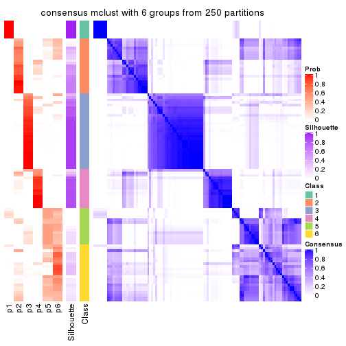
Heatmaps for the membership of samples in all partitions to see how consistent they are:
membership_heatmap(res, k = 2)
membership_heatmap(res, k = 3)
membership_heatmap(res, k = 4)
membership_heatmap(res, k = 5)
membership_heatmap(res, k = 6)
As soon as we have had the classes for columns, we can look for signatures which are significantly different between classes which can be candidate marks for certain classes. Following are the heatmaps for signatures.
Signature heatmaps where rows are scaled:
get_signatures(res, k = 2)
get_signatures(res, k = 3)
get_signatures(res, k = 4)
get_signatures(res, k = 5)
get_signatures(res, k = 6)
Signature heatmaps where rows are not scaled:
get_signatures(res, k = 2, scale_rows = FALSE)
get_signatures(res, k = 3, scale_rows = FALSE)
get_signatures(res, k = 4, scale_rows = FALSE)
get_signatures(res, k = 5, scale_rows = FALSE)
get_signatures(res, k = 6, scale_rows = FALSE)
Compare the overlap of signatures from different k:
compare_signatures(res)
get_signature() returns a data frame invisibly. TO get the list of signatures, the function
call should be assigned to a variable explicitly. In following code, if plot argument is set
to FALSE, no heatmap is plotted while only the differential analysis is performed.
# code only for demonstration
tb = get_signature(res, k = ..., plot = FALSE)
An example of the output of tb is:
#> which_row fdr mean_1 mean_2 scaled_mean_1 scaled_mean_2 km
#> 1 38 0.042760348 8.373488 9.131774 -0.5533452 0.5164555 1
#> 2 40 0.018707592 7.106213 8.469186 -0.6173731 0.5762149 1
#> 3 55 0.019134737 10.221463 11.207825 -0.6159697 0.5749050 1
#> 4 59 0.006059896 5.921854 7.869574 -0.6899429 0.6439467 1
#> 5 60 0.018055526 8.928898 10.211722 -0.6204761 0.5791110 1
#> 6 98 0.009384629 15.714769 14.887706 0.6635654 -0.6193277 2
...
The columns in tb are:
which_row: row indices corresponding to the input matrix.fdr: FDR for the differential test. mean_x: The mean value in group x.scaled_mean_x: The mean value in group x after rows are scaled.km: Row groups if k-means clustering is applied to rows.UMAP plot which shows how samples are separated.
dimension_reduction(res, k = 2, method = "UMAP")
dimension_reduction(res, k = 3, method = "UMAP")
dimension_reduction(res, k = 4, method = "UMAP")
dimension_reduction(res, k = 5, method = "UMAP")
dimension_reduction(res, k = 6, method = "UMAP")
Following heatmap shows how subgroups are split when increasing k:
collect_classes(res)
If matrix rows can be associated to genes, consider to use GO_Enrichment(res,
...) to perform function enrichment for the signature genes.
The object with results only for a single top-value method and a single partition method can be extracted as:
res = res_list["MAD", "NMF"]
# you can also extract it by
# res = res_list["MAD:NMF"]
A summary of res and all the functions that can be applied to it:
res
#> A 'ConsensusPartition' object with k = 2, 3, 4, 5, 6.
#> On a matrix with 17532 rows and 108 columns.
#> Top rows (1000, 2000, 3000, 4000, 5000) are extracted by 'MAD' method.
#> Subgroups are detected by 'NMF' method.
#> Performed in total 1250 partitions by row resampling.
#> Best k for subgroups seems to be 3.
#>
#> Following methods can be applied to this 'ConsensusPartition' object:
#> [1] "cola_report" "collect_classes" "collect_plots"
#> [4] "collect_stats" "colnames" "compare_signatures"
#> [7] "consensus_heatmap" "dimension_reduction" "functional_enrichment"
#> [10] "get_anno_col" "get_anno" "get_classes"
#> [13] "get_consensus" "get_matrix" "get_membership"
#> [16] "get_param" "get_signatures" "get_stats"
#> [19] "is_best_k" "is_stable_k" "membership_heatmap"
#> [22] "ncol" "nrow" "plot_ecdf"
#> [25] "rownames" "select_partition_number" "show"
#> [28] "suggest_best_k" "test_to_known_factors"
collect_plots() function collects all the plots made from res for all k (number of partitions)
into one single page to provide an easy and fast comparison between different k.
collect_plots(res)
The plots are:
k and the heatmap of
predicted classes for each k.k.k.k.All the plots in panels can be made by individual functions and they are plotted later in this section.
select_partition_number() produces several plots showing different
statistics for choosing “optimized” k. There are following statistics:
k;k, the area increased is defined as \(A_k - A_{k-1}\).The detailed explanations of these statistics can be found in the cola vignette.
Generally speaking, lower PAC score, higher mean silhouette score or higher
concordance corresponds to better partition. Rand index and Jaccard index
measure how similar the current partition is compared to partition with k-1.
If they are too similar, we won't accept k is better than k-1.
select_partition_number(res)
The numeric values for all these statistics can be obtained by get_stats().
get_stats(res)
#> k 1-PAC mean_silhouette concordance area_increased Rand Jaccard
#> 2 2 0.812 0.878 0.951 0.4132 0.595 0.595
#> 3 3 0.654 0.723 0.889 0.5630 0.635 0.446
#> 4 4 0.672 0.663 0.847 0.1600 0.821 0.543
#> 5 5 0.739 0.705 0.860 0.0685 0.792 0.363
#> 6 6 0.730 0.601 0.804 0.0380 0.922 0.652
suggest_best_k() suggests the best \(k\) based on these statistics. The rules are as follows:
NA.suggest_best_k(res)
#> [1] 3
Following shows the table of the partitions (You need to click the show/hide
code output link to see it). The membership matrix (columns with name p*)
is inferred by
clue::cl_consensus()
function with the SE method. Basically the value in the membership matrix
represents the probability to belong to a certain group. The finall class
label for an item is determined with the group with highest probability it
belongs to.
In get_classes() function, the entropy is calculated from the membership
matrix and the silhouette score is calculated from the consensus matrix.
cbind(get_classes(res, k = 2), get_membership(res, k = 2))
#> class entropy silhouette p1 p2
#> SRR1389909 2 0.0000 0.9529 0.000 1.000
#> SRR1454460 2 0.0000 0.9529 0.000 1.000
#> SRR1404623 2 0.0000 0.9529 0.000 1.000
#> SRR1092038 2 0.0000 0.9529 0.000 1.000
#> SRR1319793 2 0.0000 0.9529 0.000 1.000
#> SRR1396208 2 0.0000 0.9529 0.000 1.000
#> SRR1435797 2 0.6343 0.7849 0.160 0.840
#> SRR1078042 2 0.0000 0.9529 0.000 1.000
#> SRR1339699 2 0.0000 0.9529 0.000 1.000
#> SRR1446499 2 0.0000 0.9529 0.000 1.000
#> SRR1359428 2 0.0000 0.9529 0.000 1.000
#> SRR1071475 1 0.0000 0.9275 1.000 0.000
#> SRR1436781 2 0.0000 0.9529 0.000 1.000
#> SRR1101453 2 0.0000 0.9529 0.000 1.000
#> SRR1350891 2 0.0000 0.9529 0.000 1.000
#> SRR814293 2 0.9635 0.3530 0.388 0.612
#> SRR1471456 2 0.0000 0.9529 0.000 1.000
#> SRR1446874 1 0.2948 0.8950 0.948 0.052
#> SRR1362731 2 0.0000 0.9529 0.000 1.000
#> SRR1413705 2 0.0000 0.9529 0.000 1.000
#> SRR1434586 2 0.0000 0.9529 0.000 1.000
#> SRR1091164 2 0.0000 0.9529 0.000 1.000
#> SRR1340598 2 0.0000 0.9529 0.000 1.000
#> SRR1466469 1 0.0000 0.9275 1.000 0.000
#> SRR1099310 2 0.0376 0.9498 0.004 0.996
#> SRR814892 2 0.0000 0.9529 0.000 1.000
#> SRR1090698 2 0.0000 0.9529 0.000 1.000
#> SRR1089134 1 0.0000 0.9275 1.000 0.000
#> SRR1120276 1 0.9248 0.5276 0.660 0.340
#> SRR1430507 2 0.9795 0.2772 0.416 0.584
#> SRR1356078 2 0.0376 0.9498 0.004 0.996
#> SRR1447037 2 0.0376 0.9498 0.004 0.996
#> SRR1443544 1 0.0000 0.9275 1.000 0.000
#> SRR1081987 2 0.0000 0.9529 0.000 1.000
#> SRR1316513 2 0.0000 0.9529 0.000 1.000
#> SRR1478457 2 0.0000 0.9529 0.000 1.000
#> SRR1342849 1 0.7299 0.7507 0.796 0.204
#> SRR1073878 2 0.0000 0.9529 0.000 1.000
#> SRR1078735 1 0.0000 0.9275 1.000 0.000
#> SRR1093601 2 0.0000 0.9529 0.000 1.000
#> SRR816629 2 0.0000 0.9529 0.000 1.000
#> SRR1477754 2 0.0000 0.9529 0.000 1.000
#> SRR1454589 1 0.1633 0.9137 0.976 0.024
#> SRR1102780 2 0.9815 0.2655 0.420 0.580
#> SRR1347518 2 0.0000 0.9529 0.000 1.000
#> SRR1093747 1 0.0000 0.9275 1.000 0.000
#> SRR809209 2 0.0000 0.9529 0.000 1.000
#> SRR1082471 2 0.0000 0.9529 0.000 1.000
#> SRR1390349 2 0.0000 0.9529 0.000 1.000
#> SRR1410493 2 0.0376 0.9498 0.004 0.996
#> SRR1086656 2 0.0000 0.9529 0.000 1.000
#> SRR1469997 2 0.0000 0.9529 0.000 1.000
#> SRR1355512 2 0.0000 0.9529 0.000 1.000
#> SRR809897 2 0.0000 0.9529 0.000 1.000
#> SRR1436146 2 0.0000 0.9529 0.000 1.000
#> SRR1097148 1 0.0000 0.9275 1.000 0.000
#> SRR1429979 2 0.4161 0.8692 0.084 0.916
#> SRR1454607 1 0.0000 0.9275 1.000 0.000
#> SRR1420687 1 0.0000 0.9275 1.000 0.000
#> SRR1099669 1 0.0000 0.9275 1.000 0.000
#> SRR1360172 2 0.0000 0.9529 0.000 1.000
#> SRR1478131 2 0.0376 0.9498 0.004 0.996
#> SRR1453235 1 0.8661 0.6070 0.712 0.288
#> SRR1369107 1 0.9000 0.5599 0.684 0.316
#> SRR1096458 2 0.0000 0.9529 0.000 1.000
#> SRR1088856 2 0.0000 0.9529 0.000 1.000
#> SRR1432934 2 0.0000 0.9529 0.000 1.000
#> SRR821072 2 0.0000 0.9529 0.000 1.000
#> SRR1480896 1 0.0000 0.9275 1.000 0.000
#> SRR1403344 2 0.0000 0.9529 0.000 1.000
#> SRR1360850 1 0.0000 0.9275 1.000 0.000
#> SRR1451820 2 0.0000 0.9529 0.000 1.000
#> SRR1075360 1 0.9732 0.3520 0.596 0.404
#> SRR1413373 1 0.0000 0.9275 1.000 0.000
#> SRR1090928 2 0.0000 0.9529 0.000 1.000
#> SRR1097124 2 0.0000 0.9529 0.000 1.000
#> SRR1458745 1 0.0000 0.9275 1.000 0.000
#> SRR1078636 2 0.0000 0.9529 0.000 1.000
#> SRR1473754 2 0.7219 0.7255 0.200 0.800
#> SRR1085736 2 0.0000 0.9529 0.000 1.000
#> SRR1098807 1 0.0000 0.9275 1.000 0.000
#> SRR1341583 2 0.0000 0.9529 0.000 1.000
#> SRR1380869 2 0.0000 0.9529 0.000 1.000
#> SRR1430775 2 0.9850 0.2388 0.428 0.572
#> SRR1479573 2 0.0000 0.9529 0.000 1.000
#> SRR1082352 1 0.0000 0.9275 1.000 0.000
#> SRR1102005 2 0.0000 0.9529 0.000 1.000
#> SRR1408415 1 0.0000 0.9275 1.000 0.000
#> SRR1353537 1 0.0000 0.9275 1.000 0.000
#> SRR1458870 2 0.0000 0.9529 0.000 1.000
#> SRR1315495 2 0.0000 0.9529 0.000 1.000
#> SRR1481169 1 0.7815 0.7006 0.768 0.232
#> SRR1470273 1 0.0000 0.9275 1.000 0.000
#> SRR1312446 2 0.0000 0.9529 0.000 1.000
#> SRR1101859 2 0.0000 0.9529 0.000 1.000
#> SRR1384210 1 0.0000 0.9275 1.000 0.000
#> SRR1336244 2 0.0000 0.9529 0.000 1.000
#> SRR1374432 2 0.0000 0.9529 0.000 1.000
#> SRR1430023 2 0.9815 0.2631 0.420 0.580
#> SRR1487527 1 0.0000 0.9275 1.000 0.000
#> SRR1073389 2 1.0000 -0.0284 0.500 0.500
#> SRR1433171 2 0.0000 0.9529 0.000 1.000
#> SRR1085565 1 0.4939 0.8502 0.892 0.108
#> SRR1355017 2 0.0000 0.9529 0.000 1.000
#> SRR1351641 2 0.0000 0.9529 0.000 1.000
#> SRR1398230 2 0.0000 0.9529 0.000 1.000
#> SRR1086212 2 0.3584 0.8891 0.068 0.932
#> SRR1431514 2 0.6973 0.7430 0.188 0.812
cbind(get_classes(res, k = 3), get_membership(res, k = 3))
#> class entropy silhouette p1 p2 p3
#> SRR1389909 2 0.0592 0.8761 0.000 0.988 0.012
#> SRR1454460 3 0.0000 0.8186 0.000 0.000 1.000
#> SRR1404623 3 0.6299 -0.0468 0.000 0.476 0.524
#> SRR1092038 3 0.0000 0.8186 0.000 0.000 1.000
#> SRR1319793 2 0.0237 0.8808 0.000 0.996 0.004
#> SRR1396208 2 0.6215 0.1107 0.000 0.572 0.428
#> SRR1435797 3 0.4121 0.6996 0.168 0.000 0.832
#> SRR1078042 3 0.1964 0.7941 0.000 0.056 0.944
#> SRR1339699 3 0.0000 0.8186 0.000 0.000 1.000
#> SRR1446499 2 0.6309 0.0917 0.000 0.500 0.500
#> SRR1359428 2 0.0000 0.8826 0.000 1.000 0.000
#> SRR1071475 1 0.0000 0.9116 1.000 0.000 0.000
#> SRR1436781 2 0.0000 0.8826 0.000 1.000 0.000
#> SRR1101453 3 0.0000 0.8186 0.000 0.000 1.000
#> SRR1350891 2 0.0000 0.8826 0.000 1.000 0.000
#> SRR814293 2 0.6126 0.2965 0.400 0.600 0.000
#> SRR1471456 3 0.2878 0.7688 0.000 0.096 0.904
#> SRR1446874 3 0.2448 0.7780 0.076 0.000 0.924
#> SRR1362731 2 0.4796 0.6991 0.000 0.780 0.220
#> SRR1413705 2 0.0000 0.8826 0.000 1.000 0.000
#> SRR1434586 3 0.0000 0.8186 0.000 0.000 1.000
#> SRR1091164 2 0.1031 0.8713 0.000 0.976 0.024
#> SRR1340598 3 0.6140 0.3608 0.000 0.404 0.596
#> SRR1466469 1 0.0000 0.9116 1.000 0.000 0.000
#> SRR1099310 2 0.0000 0.8826 0.000 1.000 0.000
#> SRR814892 2 0.0237 0.8808 0.000 0.996 0.004
#> SRR1090698 3 0.0000 0.8186 0.000 0.000 1.000
#> SRR1089134 1 0.0000 0.9116 1.000 0.000 0.000
#> SRR1120276 3 0.0000 0.8186 0.000 0.000 1.000
#> SRR1430507 3 0.9299 -0.0457 0.160 0.408 0.432
#> SRR1356078 3 0.0424 0.8154 0.000 0.008 0.992
#> SRR1447037 2 0.9488 0.1903 0.248 0.496 0.256
#> SRR1443544 3 0.4887 0.6300 0.228 0.000 0.772
#> SRR1081987 2 0.0237 0.8808 0.000 0.996 0.004
#> SRR1316513 2 0.0000 0.8826 0.000 1.000 0.000
#> SRR1478457 3 0.4810 0.7151 0.140 0.028 0.832
#> SRR1342849 3 0.8085 0.3713 0.332 0.084 0.584
#> SRR1073878 2 0.0000 0.8826 0.000 1.000 0.000
#> SRR1078735 3 0.5098 0.6036 0.248 0.000 0.752
#> SRR1093601 2 0.0000 0.8826 0.000 1.000 0.000
#> SRR816629 3 0.0000 0.8186 0.000 0.000 1.000
#> SRR1477754 3 0.6260 0.0567 0.000 0.448 0.552
#> SRR1454589 1 0.6140 0.2153 0.596 0.000 0.404
#> SRR1102780 1 0.6299 0.0544 0.524 0.476 0.000
#> SRR1347518 2 0.2878 0.8015 0.000 0.904 0.096
#> SRR1093747 1 0.1860 0.8625 0.948 0.000 0.052
#> SRR809209 3 0.6264 0.4094 0.004 0.380 0.616
#> SRR1082471 3 0.0424 0.8154 0.000 0.008 0.992
#> SRR1390349 3 0.5929 0.5204 0.004 0.320 0.676
#> SRR1410493 3 0.2448 0.7717 0.000 0.076 0.924
#> SRR1086656 2 0.3879 0.7496 0.000 0.848 0.152
#> SRR1469997 2 0.0000 0.8826 0.000 1.000 0.000
#> SRR1355512 3 0.6180 0.1616 0.000 0.416 0.584
#> SRR809897 3 0.0000 0.8186 0.000 0.000 1.000
#> SRR1436146 2 0.4605 0.7175 0.000 0.796 0.204
#> SRR1097148 1 0.0000 0.9116 1.000 0.000 0.000
#> SRR1429979 3 0.0000 0.8186 0.000 0.000 1.000
#> SRR1454607 1 0.0000 0.9116 1.000 0.000 0.000
#> SRR1420687 3 0.3412 0.7504 0.124 0.000 0.876
#> SRR1099669 1 0.0000 0.9116 1.000 0.000 0.000
#> SRR1360172 3 0.0000 0.8186 0.000 0.000 1.000
#> SRR1478131 2 0.0000 0.8826 0.000 1.000 0.000
#> SRR1453235 1 0.0892 0.8966 0.980 0.020 0.000
#> SRR1369107 3 0.0000 0.8186 0.000 0.000 1.000
#> SRR1096458 2 0.0000 0.8826 0.000 1.000 0.000
#> SRR1088856 3 0.0000 0.8186 0.000 0.000 1.000
#> SRR1432934 2 0.0000 0.8826 0.000 1.000 0.000
#> SRR821072 2 0.0000 0.8826 0.000 1.000 0.000
#> SRR1480896 3 0.6045 0.3695 0.380 0.000 0.620
#> SRR1403344 3 0.0000 0.8186 0.000 0.000 1.000
#> SRR1360850 1 0.0000 0.9116 1.000 0.000 0.000
#> SRR1451820 2 0.0000 0.8826 0.000 1.000 0.000
#> SRR1075360 3 0.0000 0.8186 0.000 0.000 1.000
#> SRR1413373 1 0.0000 0.9116 1.000 0.000 0.000
#> SRR1090928 2 0.4796 0.6991 0.000 0.780 0.220
#> SRR1097124 2 0.4842 0.6942 0.000 0.776 0.224
#> SRR1458745 1 0.0000 0.9116 1.000 0.000 0.000
#> SRR1078636 2 0.0000 0.8826 0.000 1.000 0.000
#> SRR1473754 2 0.3686 0.7646 0.140 0.860 0.000
#> SRR1085736 2 0.6204 0.3182 0.000 0.576 0.424
#> SRR1098807 1 0.0000 0.9116 1.000 0.000 0.000
#> SRR1341583 2 0.0000 0.8826 0.000 1.000 0.000
#> SRR1380869 2 0.0000 0.8826 0.000 1.000 0.000
#> SRR1430775 1 0.5968 0.3880 0.636 0.364 0.000
#> SRR1479573 3 0.0000 0.8186 0.000 0.000 1.000
#> SRR1082352 1 0.0000 0.9116 1.000 0.000 0.000
#> SRR1102005 3 0.0000 0.8186 0.000 0.000 1.000
#> SRR1408415 1 0.0000 0.9116 1.000 0.000 0.000
#> SRR1353537 1 0.0000 0.9116 1.000 0.000 0.000
#> SRR1458870 2 0.0000 0.8826 0.000 1.000 0.000
#> SRR1315495 2 0.6286 0.2080 0.000 0.536 0.464
#> SRR1481169 1 0.3412 0.7978 0.876 0.124 0.000
#> SRR1470273 1 0.0000 0.9116 1.000 0.000 0.000
#> SRR1312446 2 0.1031 0.8713 0.000 0.976 0.024
#> SRR1101859 2 0.0000 0.8826 0.000 1.000 0.000
#> SRR1384210 3 0.6308 0.0630 0.492 0.000 0.508
#> SRR1336244 2 0.0000 0.8826 0.000 1.000 0.000
#> SRR1374432 2 0.0237 0.8808 0.000 0.996 0.004
#> SRR1430023 3 0.0237 0.8170 0.004 0.000 0.996
#> SRR1487527 1 0.0000 0.9116 1.000 0.000 0.000
#> SRR1073389 3 0.9100 0.3463 0.248 0.204 0.548
#> SRR1433171 2 0.5465 0.5990 0.000 0.712 0.288
#> SRR1085565 3 0.0000 0.8186 0.000 0.000 1.000
#> SRR1355017 2 0.0000 0.8826 0.000 1.000 0.000
#> SRR1351641 2 0.0000 0.8826 0.000 1.000 0.000
#> SRR1398230 2 0.0000 0.8826 0.000 1.000 0.000
#> SRR1086212 2 0.0000 0.8826 0.000 1.000 0.000
#> SRR1431514 2 0.4555 0.6909 0.200 0.800 0.000
cbind(get_classes(res, k = 4), get_membership(res, k = 4))
#> class entropy silhouette p1 p2 p3 p4
#> SRR1389909 4 0.1389 0.73492 0.000 0.000 0.048 0.952
#> SRR1454460 3 0.0000 0.87330 0.000 0.000 1.000 0.000
#> SRR1404623 2 0.0188 0.69924 0.000 0.996 0.000 0.004
#> SRR1092038 3 0.0336 0.87279 0.000 0.000 0.992 0.008
#> SRR1319793 4 0.0817 0.74824 0.000 0.000 0.024 0.976
#> SRR1396208 4 0.4866 0.10670 0.000 0.000 0.404 0.596
#> SRR1435797 3 0.1637 0.85820 0.000 0.000 0.940 0.060
#> SRR1078042 3 0.1867 0.85208 0.000 0.000 0.928 0.072
#> SRR1339699 3 0.0336 0.87218 0.000 0.008 0.992 0.000
#> SRR1446499 2 0.0188 0.69924 0.000 0.996 0.000 0.004
#> SRR1359428 4 0.4382 0.62039 0.000 0.296 0.000 0.704
#> SRR1071475 1 0.0000 0.92226 1.000 0.000 0.000 0.000
#> SRR1436781 4 0.2469 0.75151 0.000 0.108 0.000 0.892
#> SRR1101453 3 0.0817 0.86523 0.000 0.024 0.976 0.000
#> SRR1350891 4 0.4790 0.50370 0.000 0.380 0.000 0.620
#> SRR814293 2 0.5407 0.39309 0.296 0.668 0.000 0.036
#> SRR1471456 3 0.2345 0.83582 0.000 0.000 0.900 0.100
#> SRR1446874 3 0.0469 0.87085 0.000 0.012 0.988 0.000
#> SRR1362731 2 0.1118 0.68388 0.000 0.964 0.000 0.036
#> SRR1413705 4 0.4830 0.48215 0.000 0.392 0.000 0.608
#> SRR1434586 2 0.4898 0.36241 0.000 0.584 0.416 0.000
#> SRR1091164 2 0.4981 -0.18169 0.000 0.536 0.000 0.464
#> SRR1340598 3 0.4564 0.58863 0.000 0.000 0.672 0.328
#> SRR1466469 1 0.0000 0.92226 1.000 0.000 0.000 0.000
#> SRR1099310 4 0.0188 0.75418 0.000 0.000 0.004 0.996
#> SRR814892 4 0.0707 0.75003 0.000 0.000 0.020 0.980
#> SRR1090698 3 0.1940 0.82171 0.000 0.076 0.924 0.000
#> SRR1089134 1 0.0000 0.92226 1.000 0.000 0.000 0.000
#> SRR1120276 3 0.2149 0.80805 0.000 0.088 0.912 0.000
#> SRR1430507 2 0.1042 0.69995 0.020 0.972 0.008 0.000
#> SRR1356078 2 0.4277 0.55405 0.000 0.720 0.280 0.000
#> SRR1447037 4 0.4790 0.18496 0.000 0.000 0.380 0.620
#> SRR1443544 3 0.0188 0.87304 0.000 0.004 0.996 0.000
#> SRR1081987 4 0.1940 0.71700 0.000 0.000 0.076 0.924
#> SRR1316513 4 0.0921 0.74724 0.000 0.000 0.028 0.972
#> SRR1478457 3 0.2921 0.80669 0.000 0.000 0.860 0.140
#> SRR1342849 3 0.4356 0.64129 0.000 0.000 0.708 0.292
#> SRR1073878 2 0.5000 -0.28012 0.000 0.500 0.000 0.500
#> SRR1078735 3 0.0336 0.87217 0.008 0.000 0.992 0.000
#> SRR1093601 4 0.1389 0.75709 0.000 0.048 0.000 0.952
#> SRR816629 2 0.4972 0.27646 0.000 0.544 0.456 0.000
#> SRR1477754 2 0.0188 0.70065 0.000 0.996 0.004 0.000
#> SRR1454589 1 0.4252 0.64891 0.744 0.004 0.252 0.000
#> SRR1102780 1 0.5050 0.67026 0.756 0.176 0.000 0.068
#> SRR1347518 4 0.4948 -0.00568 0.000 0.000 0.440 0.560
#> SRR1093747 1 0.3881 0.75595 0.812 0.172 0.016 0.000
#> SRR809209 3 0.4817 0.46949 0.000 0.000 0.612 0.388
#> SRR1082471 2 0.4040 0.58907 0.000 0.752 0.248 0.000
#> SRR1390349 3 0.4661 0.55121 0.000 0.000 0.652 0.348
#> SRR1410493 2 0.2973 0.66927 0.000 0.856 0.144 0.000
#> SRR1086656 4 0.5000 -0.19389 0.000 0.000 0.496 0.504
#> SRR1469997 4 0.3688 0.70610 0.000 0.208 0.000 0.792
#> SRR1355512 2 0.0592 0.70163 0.000 0.984 0.016 0.000
#> SRR809897 3 0.1302 0.85116 0.000 0.044 0.956 0.000
#> SRR1436146 2 0.1022 0.68640 0.000 0.968 0.000 0.032
#> SRR1097148 1 0.0000 0.92226 1.000 0.000 0.000 0.000
#> SRR1429979 3 0.0592 0.86920 0.000 0.016 0.984 0.000
#> SRR1454607 1 0.0000 0.92226 1.000 0.000 0.000 0.000
#> SRR1420687 1 0.7676 0.15417 0.460 0.276 0.264 0.000
#> SRR1099669 1 0.1389 0.89208 0.952 0.048 0.000 0.000
#> SRR1360172 3 0.1474 0.86112 0.000 0.000 0.948 0.052
#> SRR1478131 4 0.2281 0.75362 0.000 0.096 0.000 0.904
#> SRR1453235 1 0.0000 0.92226 1.000 0.000 0.000 0.000
#> SRR1369107 3 0.0188 0.87324 0.000 0.000 0.996 0.004
#> SRR1096458 4 0.0336 0.75344 0.000 0.000 0.008 0.992
#> SRR1088856 3 0.0000 0.87330 0.000 0.000 1.000 0.000
#> SRR1432934 4 0.4008 0.67595 0.000 0.244 0.000 0.756
#> SRR821072 4 0.0336 0.75372 0.000 0.000 0.008 0.992
#> SRR1480896 3 0.4155 0.61956 0.240 0.004 0.756 0.000
#> SRR1403344 3 0.0707 0.86805 0.000 0.020 0.980 0.000
#> SRR1360850 1 0.0000 0.92226 1.000 0.000 0.000 0.000
#> SRR1451820 4 0.2921 0.74399 0.000 0.140 0.000 0.860
#> SRR1075360 2 0.4925 0.33811 0.000 0.572 0.428 0.000
#> SRR1413373 1 0.0000 0.92226 1.000 0.000 0.000 0.000
#> SRR1090928 2 0.1716 0.66076 0.000 0.936 0.000 0.064
#> SRR1097124 2 0.1004 0.69064 0.004 0.972 0.000 0.024
#> SRR1458745 1 0.0188 0.91995 0.996 0.004 0.000 0.000
#> SRR1078636 4 0.3219 0.73603 0.000 0.164 0.000 0.836
#> SRR1473754 4 0.5977 0.58945 0.216 0.104 0.000 0.680
#> SRR1085736 2 0.0000 0.69996 0.000 1.000 0.000 0.000
#> SRR1098807 1 0.0000 0.92226 1.000 0.000 0.000 0.000
#> SRR1341583 4 0.4843 0.47038 0.000 0.396 0.000 0.604
#> SRR1380869 4 0.0592 0.75164 0.000 0.000 0.016 0.984
#> SRR1430775 1 0.3958 0.76054 0.824 0.032 0.000 0.144
#> SRR1479573 2 0.4877 0.37592 0.000 0.592 0.408 0.000
#> SRR1082352 1 0.0000 0.92226 1.000 0.000 0.000 0.000
#> SRR1102005 2 0.4998 0.19535 0.000 0.512 0.488 0.000
#> SRR1408415 1 0.0000 0.92226 1.000 0.000 0.000 0.000
#> SRR1353537 1 0.0000 0.92226 1.000 0.000 0.000 0.000
#> SRR1458870 4 0.3074 0.74093 0.000 0.152 0.000 0.848
#> SRR1315495 2 0.0592 0.69476 0.000 0.984 0.000 0.016
#> SRR1481169 1 0.1716 0.87232 0.936 0.000 0.000 0.064
#> SRR1470273 1 0.0000 0.92226 1.000 0.000 0.000 0.000
#> SRR1312446 2 0.4500 0.26398 0.000 0.684 0.000 0.316
#> SRR1101859 4 0.3837 0.69783 0.000 0.224 0.000 0.776
#> SRR1384210 3 0.3444 0.74314 0.184 0.000 0.816 0.000
#> SRR1336244 4 0.3610 0.71526 0.000 0.200 0.000 0.800
#> SRR1374432 4 0.0592 0.75154 0.000 0.000 0.016 0.984
#> SRR1430023 2 0.3975 0.60071 0.000 0.760 0.240 0.000
#> SRR1487527 1 0.0000 0.92226 1.000 0.000 0.000 0.000
#> SRR1073389 2 0.3370 0.66874 0.080 0.872 0.048 0.000
#> SRR1433171 2 0.7857 -0.14810 0.000 0.380 0.272 0.348
#> SRR1085565 3 0.0817 0.86523 0.000 0.024 0.976 0.000
#> SRR1355017 4 0.4992 0.29428 0.000 0.476 0.000 0.524
#> SRR1351641 4 0.3266 0.73388 0.000 0.168 0.000 0.832
#> SRR1398230 4 0.4406 0.61894 0.000 0.300 0.000 0.700
#> SRR1086212 4 0.0336 0.75539 0.000 0.008 0.000 0.992
#> SRR1431514 2 0.7269 0.10923 0.180 0.524 0.000 0.296
cbind(get_classes(res, k = 5), get_membership(res, k = 5))
#> class entropy silhouette p1 p2 p3 p4 p5
#> SRR1389909 4 0.0000 0.7688 0.000 0.000 0.000 1.000 0.000
#> SRR1454460 3 0.0162 0.9033 0.000 0.000 0.996 0.004 0.000
#> SRR1404623 2 0.3561 0.5327 0.000 0.740 0.000 0.000 0.260
#> SRR1092038 3 0.0000 0.9030 0.000 0.000 1.000 0.000 0.000
#> SRR1319793 4 0.1043 0.7585 0.000 0.040 0.000 0.960 0.000
#> SRR1396208 4 0.0162 0.7689 0.000 0.000 0.004 0.996 0.000
#> SRR1435797 4 0.6406 0.2302 0.000 0.000 0.248 0.512 0.240
#> SRR1078042 3 0.3074 0.7739 0.000 0.000 0.804 0.196 0.000
#> SRR1339699 3 0.3620 0.8236 0.000 0.000 0.824 0.108 0.068
#> SRR1446499 5 0.1851 0.8493 0.000 0.088 0.000 0.000 0.912
#> SRR1359428 2 0.2583 0.7251 0.000 0.864 0.000 0.132 0.004
#> SRR1071475 1 0.0000 0.9313 1.000 0.000 0.000 0.000 0.000
#> SRR1436781 4 0.4291 -0.0802 0.000 0.464 0.000 0.536 0.000
#> SRR1101453 3 0.0162 0.9032 0.000 0.000 0.996 0.000 0.004
#> SRR1350891 2 0.2017 0.7542 0.000 0.912 0.000 0.080 0.008
#> SRR814293 2 0.3596 0.5843 0.212 0.776 0.000 0.000 0.012
#> SRR1471456 3 0.1341 0.8871 0.000 0.000 0.944 0.056 0.000
#> SRR1446874 3 0.0290 0.9030 0.000 0.000 0.992 0.000 0.008
#> SRR1362731 2 0.1121 0.7582 0.000 0.956 0.000 0.000 0.044
#> SRR1413705 2 0.1608 0.7571 0.000 0.928 0.000 0.072 0.000
#> SRR1434586 5 0.1251 0.8772 0.000 0.008 0.036 0.000 0.956
#> SRR1091164 2 0.1117 0.7629 0.000 0.964 0.000 0.016 0.020
#> SRR1340598 4 0.3003 0.6167 0.000 0.000 0.188 0.812 0.000
#> SRR1466469 1 0.0000 0.9313 1.000 0.000 0.000 0.000 0.000
#> SRR1099310 4 0.2179 0.6974 0.000 0.112 0.000 0.888 0.000
#> SRR814892 4 0.0162 0.7689 0.000 0.004 0.000 0.996 0.000
#> SRR1090698 5 0.1502 0.8614 0.000 0.000 0.056 0.004 0.940
#> SRR1089134 1 0.0000 0.9313 1.000 0.000 0.000 0.000 0.000
#> SRR1120276 3 0.0290 0.9022 0.000 0.000 0.992 0.000 0.008
#> SRR1430507 5 0.1331 0.8764 0.008 0.040 0.000 0.000 0.952
#> SRR1356078 5 0.0451 0.8826 0.000 0.004 0.008 0.000 0.988
#> SRR1447037 4 0.0324 0.7690 0.000 0.000 0.004 0.992 0.004
#> SRR1443544 3 0.6382 0.6095 0.116 0.000 0.616 0.220 0.048
#> SRR1081987 4 0.1026 0.7645 0.000 0.024 0.004 0.968 0.004
#> SRR1316513 4 0.1484 0.7578 0.000 0.048 0.000 0.944 0.008
#> SRR1478457 4 0.5414 0.4135 0.000 0.000 0.092 0.624 0.284
#> SRR1342849 4 0.4792 0.3505 0.000 0.020 0.312 0.656 0.012
#> SRR1073878 2 0.2054 0.7602 0.000 0.920 0.000 0.052 0.028
#> SRR1078735 3 0.3874 0.7462 0.200 0.000 0.776 0.016 0.008
#> SRR1093601 4 0.4297 -0.1146 0.000 0.472 0.000 0.528 0.000
#> SRR816629 3 0.2574 0.8356 0.000 0.012 0.876 0.000 0.112
#> SRR1477754 5 0.3508 0.6758 0.000 0.252 0.000 0.000 0.748
#> SRR1454589 1 0.3268 0.8220 0.856 0.000 0.060 0.004 0.080
#> SRR1102780 1 0.3844 0.6169 0.736 0.256 0.000 0.004 0.004
#> SRR1347518 4 0.1608 0.7436 0.000 0.000 0.072 0.928 0.000
#> SRR1093747 5 0.2516 0.8065 0.140 0.000 0.000 0.000 0.860
#> SRR809209 4 0.0865 0.7647 0.000 0.000 0.024 0.972 0.004
#> SRR1082471 5 0.0451 0.8826 0.000 0.004 0.008 0.000 0.988
#> SRR1390349 4 0.3772 0.6444 0.000 0.000 0.036 0.792 0.172
#> SRR1410493 5 0.0404 0.8816 0.000 0.012 0.000 0.000 0.988
#> SRR1086656 3 0.4336 0.7665 0.000 0.052 0.768 0.172 0.008
#> SRR1469997 2 0.2660 0.7253 0.000 0.864 0.000 0.128 0.008
#> SRR1355512 5 0.2966 0.7634 0.000 0.184 0.000 0.000 0.816
#> SRR809897 5 0.1341 0.8621 0.000 0.000 0.056 0.000 0.944
#> SRR1436146 2 0.1341 0.7555 0.000 0.944 0.000 0.000 0.056
#> SRR1097148 1 0.0000 0.9313 1.000 0.000 0.000 0.000 0.000
#> SRR1429979 3 0.0290 0.9028 0.000 0.000 0.992 0.000 0.008
#> SRR1454607 1 0.0000 0.9313 1.000 0.000 0.000 0.000 0.000
#> SRR1420687 5 0.3333 0.7336 0.208 0.000 0.004 0.000 0.788
#> SRR1099669 5 0.3895 0.5320 0.320 0.000 0.000 0.000 0.680
#> SRR1360172 3 0.0162 0.9027 0.000 0.000 0.996 0.004 0.000
#> SRR1478131 2 0.4449 0.1788 0.004 0.512 0.000 0.484 0.000
#> SRR1453235 1 0.4702 0.1845 0.552 0.016 0.000 0.000 0.432
#> SRR1369107 3 0.1121 0.8931 0.000 0.000 0.956 0.044 0.000
#> SRR1096458 4 0.0609 0.7650 0.000 0.020 0.000 0.980 0.000
#> SRR1088856 3 0.0000 0.9030 0.000 0.000 1.000 0.000 0.000
#> SRR1432934 2 0.2077 0.7493 0.000 0.908 0.000 0.084 0.008
#> SRR821072 4 0.1197 0.7525 0.000 0.048 0.000 0.952 0.000
#> SRR1480896 5 0.2573 0.8290 0.104 0.000 0.000 0.016 0.880
#> SRR1403344 5 0.6602 -0.0259 0.000 0.000 0.212 0.384 0.404
#> SRR1360850 1 0.0000 0.9313 1.000 0.000 0.000 0.000 0.000
#> SRR1451820 2 0.4235 0.3466 0.000 0.576 0.000 0.424 0.000
#> SRR1075360 5 0.0404 0.8823 0.000 0.000 0.012 0.000 0.988
#> SRR1413373 1 0.1251 0.9119 0.956 0.036 0.000 0.000 0.008
#> SRR1090928 2 0.1270 0.7566 0.000 0.948 0.000 0.000 0.052
#> SRR1097124 2 0.0404 0.7596 0.000 0.988 0.000 0.000 0.012
#> SRR1458745 1 0.2960 0.8569 0.876 0.080 0.036 0.000 0.008
#> SRR1078636 4 0.4307 -0.1522 0.000 0.496 0.000 0.504 0.000
#> SRR1473754 2 0.6425 0.4317 0.244 0.508 0.000 0.248 0.000
#> SRR1085736 5 0.1502 0.8719 0.000 0.056 0.000 0.004 0.940
#> SRR1098807 1 0.0000 0.9313 1.000 0.000 0.000 0.000 0.000
#> SRR1341583 2 0.0727 0.7589 0.000 0.980 0.004 0.004 0.012
#> SRR1380869 4 0.0162 0.7688 0.000 0.004 0.000 0.996 0.000
#> SRR1430775 2 0.5175 -0.0579 0.464 0.504 0.020 0.000 0.012
#> SRR1479573 5 0.0992 0.8810 0.000 0.008 0.024 0.000 0.968
#> SRR1082352 1 0.0000 0.9313 1.000 0.000 0.000 0.000 0.000
#> SRR1102005 5 0.0404 0.8823 0.000 0.000 0.012 0.000 0.988
#> SRR1408415 1 0.1525 0.9078 0.948 0.036 0.004 0.000 0.012
#> SRR1353537 1 0.0000 0.9313 1.000 0.000 0.000 0.000 0.000
#> SRR1458870 2 0.4291 0.2133 0.000 0.536 0.000 0.464 0.000
#> SRR1315495 2 0.2922 0.7229 0.000 0.872 0.072 0.000 0.056
#> SRR1481169 1 0.1357 0.9076 0.948 0.048 0.000 0.000 0.004
#> SRR1470273 1 0.0000 0.9313 1.000 0.000 0.000 0.000 0.000
#> SRR1312446 2 0.1205 0.7602 0.000 0.956 0.000 0.004 0.040
#> SRR1101859 4 0.6399 0.2215 0.000 0.176 0.000 0.464 0.360
#> SRR1384210 3 0.2773 0.7953 0.164 0.000 0.836 0.000 0.000
#> SRR1336244 2 0.4161 0.3963 0.000 0.608 0.000 0.392 0.000
#> SRR1374432 4 0.1341 0.7488 0.000 0.056 0.000 0.944 0.000
#> SRR1430023 3 0.3141 0.7834 0.000 0.152 0.832 0.000 0.016
#> SRR1487527 1 0.0000 0.9313 1.000 0.000 0.000 0.000 0.000
#> SRR1073389 5 0.0960 0.8813 0.008 0.016 0.000 0.004 0.972
#> SRR1433171 2 0.4632 0.1148 0.000 0.540 0.448 0.000 0.012
#> SRR1085565 3 0.0000 0.9030 0.000 0.000 1.000 0.000 0.000
#> SRR1355017 2 0.0404 0.7586 0.000 0.988 0.000 0.000 0.012
#> SRR1351641 2 0.4242 0.3304 0.000 0.572 0.000 0.428 0.000
#> SRR1398230 2 0.3452 0.6241 0.000 0.756 0.000 0.244 0.000
#> SRR1086212 4 0.3274 0.5527 0.000 0.220 0.000 0.780 0.000
#> SRR1431514 2 0.2882 0.7505 0.060 0.888 0.000 0.028 0.024
cbind(get_classes(res, k = 6), get_membership(res, k = 6))
#> class entropy silhouette p1 p2 p3 p4 p5 p6
#> SRR1389909 4 0.0858 0.69232 0.000 0.004 0.000 0.968 0.000 0.028
#> SRR1454460 3 0.0000 0.88925 0.000 0.000 1.000 0.000 0.000 0.000
#> SRR1404623 2 0.3229 0.57823 0.000 0.804 0.004 0.000 0.172 0.020
#> SRR1092038 3 0.0000 0.88925 0.000 0.000 1.000 0.000 0.000 0.000
#> SRR1319793 4 0.1531 0.70328 0.000 0.068 0.000 0.928 0.000 0.004
#> SRR1396208 4 0.0000 0.68759 0.000 0.000 0.000 1.000 0.000 0.000
#> SRR1435797 5 0.6588 0.21238 0.000 0.004 0.088 0.356 0.460 0.092
#> SRR1078042 3 0.1007 0.86915 0.000 0.000 0.956 0.044 0.000 0.000
#> SRR1339699 3 0.2632 0.81944 0.000 0.000 0.880 0.076 0.032 0.012
#> SRR1446499 5 0.3894 0.65610 0.000 0.220 0.000 0.004 0.740 0.036
#> SRR1359428 2 0.3966 0.20274 0.000 0.552 0.000 0.004 0.000 0.444
#> SRR1071475 1 0.0000 0.85456 1.000 0.000 0.000 0.000 0.000 0.000
#> SRR1436781 4 0.4612 0.52187 0.000 0.308 0.000 0.636 0.004 0.052
#> SRR1101453 3 0.0000 0.88925 0.000 0.000 1.000 0.000 0.000 0.000
#> SRR1350891 2 0.1075 0.69507 0.000 0.952 0.000 0.048 0.000 0.000
#> SRR814293 2 0.4467 0.34606 0.048 0.632 0.000 0.000 0.000 0.320
#> SRR1471456 3 0.0458 0.88470 0.000 0.000 0.984 0.016 0.000 0.000
#> SRR1446874 3 0.0146 0.88842 0.000 0.000 0.996 0.000 0.000 0.004
#> SRR1362731 2 0.0622 0.69854 0.000 0.980 0.000 0.000 0.008 0.012
#> SRR1413705 2 0.1327 0.68864 0.000 0.936 0.000 0.064 0.000 0.000
#> SRR1434586 5 0.1874 0.79490 0.000 0.016 0.028 0.000 0.928 0.028
#> SRR1091164 2 0.0862 0.70046 0.000 0.972 0.000 0.008 0.004 0.016
#> SRR1340598 4 0.1285 0.65464 0.000 0.000 0.052 0.944 0.000 0.004
#> SRR1466469 1 0.0000 0.85456 1.000 0.000 0.000 0.000 0.000 0.000
#> SRR1099310 4 0.2954 0.69225 0.000 0.048 0.000 0.852 0.004 0.096
#> SRR814892 4 0.0632 0.69734 0.000 0.024 0.000 0.976 0.000 0.000
#> SRR1090698 5 0.1585 0.79611 0.000 0.000 0.012 0.036 0.940 0.012
#> SRR1089134 1 0.0146 0.85283 0.996 0.000 0.000 0.000 0.000 0.004
#> SRR1120276 3 0.0260 0.88642 0.000 0.000 0.992 0.000 0.000 0.008
#> SRR1430507 5 0.2034 0.79392 0.004 0.060 0.000 0.000 0.912 0.024
#> SRR1356078 5 0.0508 0.79896 0.000 0.000 0.004 0.000 0.984 0.012
#> SRR1447037 4 0.2778 0.55198 0.000 0.000 0.000 0.824 0.008 0.168
#> SRR1443544 3 0.4900 0.26038 0.416 0.000 0.528 0.052 0.000 0.004
#> SRR1081987 6 0.3563 0.43840 0.000 0.000 0.000 0.336 0.000 0.664
#> SRR1316513 6 0.3534 0.50123 0.000 0.008 0.000 0.276 0.000 0.716
#> SRR1478457 4 0.5186 0.03595 0.000 0.004 0.008 0.512 0.420 0.056
#> SRR1342849 6 0.5331 0.47946 0.000 0.000 0.152 0.268 0.000 0.580
#> SRR1073878 2 0.0972 0.70042 0.000 0.964 0.000 0.028 0.008 0.000
#> SRR1078735 3 0.4013 0.62232 0.260 0.000 0.712 0.016 0.004 0.008
#> SRR1093601 4 0.4886 0.49339 0.000 0.312 0.000 0.612 0.004 0.072
#> SRR816629 3 0.3809 0.69789 0.000 0.016 0.788 0.000 0.148 0.048
#> SRR1477754 5 0.4410 0.34994 0.000 0.412 0.000 0.000 0.560 0.028
#> SRR1454589 1 0.6413 0.21788 0.472 0.000 0.016 0.012 0.316 0.184
#> SRR1102780 1 0.5832 0.45771 0.604 0.060 0.000 0.008 0.068 0.260
#> SRR1347518 4 0.2558 0.59063 0.000 0.000 0.028 0.868 0.000 0.104
#> SRR1093747 5 0.4166 0.65514 0.196 0.000 0.000 0.000 0.728 0.076
#> SRR809209 4 0.0146 0.68808 0.000 0.000 0.000 0.996 0.000 0.004
#> SRR1082471 5 0.2613 0.76215 0.000 0.012 0.000 0.000 0.848 0.140
#> SRR1390349 4 0.5978 -0.06082 0.000 0.004 0.000 0.448 0.348 0.200
#> SRR1410493 5 0.2020 0.78249 0.000 0.008 0.000 0.000 0.896 0.096
#> SRR1086656 6 0.6383 0.39379 0.000 0.092 0.304 0.092 0.000 0.512
#> SRR1469997 2 0.3766 0.47477 0.000 0.684 0.000 0.012 0.000 0.304
#> SRR1355512 5 0.4405 0.62001 0.000 0.240 0.000 0.000 0.688 0.072
#> SRR809897 5 0.1749 0.79637 0.000 0.004 0.012 0.016 0.936 0.032
#> SRR1436146 2 0.1856 0.68316 0.000 0.920 0.000 0.000 0.048 0.032
#> SRR1097148 1 0.0000 0.85456 1.000 0.000 0.000 0.000 0.000 0.000
#> SRR1429979 3 0.0000 0.88925 0.000 0.000 1.000 0.000 0.000 0.000
#> SRR1454607 1 0.0000 0.85456 1.000 0.000 0.000 0.000 0.000 0.000
#> SRR1420687 5 0.4554 0.42910 0.360 0.000 0.004 0.000 0.600 0.036
#> SRR1099669 5 0.4650 0.61197 0.104 0.000 0.000 0.000 0.676 0.220
#> SRR1360172 3 0.0000 0.88925 0.000 0.000 1.000 0.000 0.000 0.000
#> SRR1478131 4 0.5490 0.45162 0.004 0.320 0.000 0.564 0.008 0.104
#> SRR1453235 6 0.4913 0.15227 0.080 0.000 0.000 0.000 0.332 0.588
#> SRR1369107 3 0.1049 0.87330 0.000 0.000 0.960 0.032 0.000 0.008
#> SRR1096458 4 0.2333 0.70005 0.004 0.040 0.000 0.896 0.000 0.060
#> SRR1088856 3 0.0000 0.88925 0.000 0.000 1.000 0.000 0.000 0.000
#> SRR1432934 2 0.3107 0.65224 0.000 0.832 0.000 0.052 0.000 0.116
#> SRR821072 4 0.2870 0.69125 0.000 0.040 0.000 0.856 0.004 0.100
#> SRR1480896 5 0.3947 0.72668 0.040 0.004 0.000 0.024 0.788 0.144
#> SRR1403344 4 0.5961 0.18426 0.000 0.000 0.204 0.500 0.288 0.008
#> SRR1360850 1 0.0000 0.85456 1.000 0.000 0.000 0.000 0.000 0.000
#> SRR1451820 2 0.4401 -0.14311 0.000 0.512 0.000 0.464 0.000 0.024
#> SRR1075360 5 0.1296 0.79647 0.000 0.004 0.004 0.000 0.948 0.044
#> SRR1413373 1 0.3288 0.48007 0.724 0.000 0.000 0.000 0.000 0.276
#> SRR1090928 2 0.1313 0.69455 0.000 0.952 0.000 0.004 0.028 0.016
#> SRR1097124 2 0.3765 0.27352 0.000 0.596 0.000 0.000 0.000 0.404
#> SRR1458745 1 0.0806 0.83470 0.972 0.020 0.008 0.000 0.000 0.000
#> SRR1078636 4 0.3838 0.31595 0.000 0.448 0.000 0.552 0.000 0.000
#> SRR1473754 1 0.7239 0.02598 0.408 0.284 0.000 0.220 0.008 0.080
#> SRR1085736 5 0.2145 0.79001 0.000 0.072 0.000 0.000 0.900 0.028
#> SRR1098807 1 0.0000 0.85456 1.000 0.000 0.000 0.000 0.000 0.000
#> SRR1341583 6 0.3309 0.35069 0.000 0.280 0.000 0.000 0.000 0.720
#> SRR1380869 4 0.0806 0.69539 0.000 0.008 0.000 0.972 0.000 0.020
#> SRR1430775 6 0.4926 0.27321 0.080 0.336 0.000 0.000 0.000 0.584
#> SRR1479573 5 0.3063 0.76142 0.000 0.016 0.076 0.000 0.856 0.052
#> SRR1082352 1 0.0146 0.85283 0.996 0.000 0.000 0.000 0.000 0.004
#> SRR1102005 5 0.2036 0.79018 0.000 0.016 0.008 0.000 0.912 0.064
#> SRR1408415 6 0.3531 0.38641 0.328 0.000 0.000 0.000 0.000 0.672
#> SRR1353537 1 0.0000 0.85456 1.000 0.000 0.000 0.000 0.000 0.000
#> SRR1458870 4 0.4161 0.30468 0.000 0.448 0.000 0.540 0.000 0.012
#> SRR1315495 2 0.3726 0.60796 0.000 0.812 0.072 0.000 0.092 0.024
#> SRR1481169 6 0.5161 -0.00426 0.452 0.072 0.000 0.000 0.004 0.472
#> SRR1470273 1 0.0000 0.85456 1.000 0.000 0.000 0.000 0.000 0.000
#> SRR1312446 2 0.0291 0.69921 0.000 0.992 0.000 0.004 0.004 0.000
#> SRR1101859 4 0.6072 0.53746 0.000 0.236 0.000 0.584 0.084 0.096
#> SRR1384210 3 0.2340 0.78028 0.148 0.000 0.852 0.000 0.000 0.000
#> SRR1336244 2 0.3999 -0.23969 0.000 0.500 0.000 0.496 0.000 0.004
#> SRR1374432 4 0.1701 0.70260 0.000 0.072 0.000 0.920 0.000 0.008
#> SRR1430023 3 0.4122 0.58905 0.000 0.064 0.724 0.000 0.000 0.212
#> SRR1487527 1 0.0458 0.84624 0.984 0.000 0.000 0.000 0.000 0.016
#> SRR1073389 5 0.1265 0.80011 0.000 0.008 0.000 0.000 0.948 0.044
#> SRR1433171 2 0.4649 0.07006 0.000 0.492 0.468 0.000 0.000 0.040
#> SRR1085565 3 0.0000 0.88925 0.000 0.000 1.000 0.000 0.000 0.000
#> SRR1355017 2 0.2912 0.57615 0.000 0.784 0.000 0.000 0.000 0.216
#> SRR1351641 4 0.3998 0.17922 0.000 0.492 0.000 0.504 0.000 0.004
#> SRR1398230 2 0.3052 0.52935 0.000 0.780 0.000 0.216 0.000 0.004
#> SRR1086212 4 0.4071 0.66732 0.000 0.096 0.000 0.768 0.008 0.128
#> SRR1431514 2 0.4175 0.54679 0.016 0.716 0.000 0.000 0.028 0.240
Heatmaps for the consensus matrix. It visualizes the probability of two samples to be in a same group.
consensus_heatmap(res, k = 2)
consensus_heatmap(res, k = 3)
consensus_heatmap(res, k = 4)
consensus_heatmap(res, k = 5)
consensus_heatmap(res, k = 6)

Heatmaps for the membership of samples in all partitions to see how consistent they are:
membership_heatmap(res, k = 2)
membership_heatmap(res, k = 3)
membership_heatmap(res, k = 4)
membership_heatmap(res, k = 5)
membership_heatmap(res, k = 6)
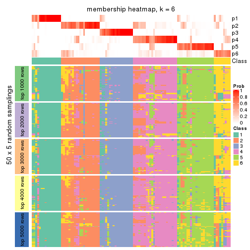
As soon as we have had the classes for columns, we can look for signatures which are significantly different between classes which can be candidate marks for certain classes. Following are the heatmaps for signatures.
Signature heatmaps where rows are scaled:
get_signatures(res, k = 2)
get_signatures(res, k = 3)
get_signatures(res, k = 4)
get_signatures(res, k = 5)
get_signatures(res, k = 6)
Signature heatmaps where rows are not scaled:
get_signatures(res, k = 2, scale_rows = FALSE)
get_signatures(res, k = 3, scale_rows = FALSE)
get_signatures(res, k = 4, scale_rows = FALSE)
get_signatures(res, k = 5, scale_rows = FALSE)
get_signatures(res, k = 6, scale_rows = FALSE)
Compare the overlap of signatures from different k:
compare_signatures(res)
get_signature() returns a data frame invisibly. TO get the list of signatures, the function
call should be assigned to a variable explicitly. In following code, if plot argument is set
to FALSE, no heatmap is plotted while only the differential analysis is performed.
# code only for demonstration
tb = get_signature(res, k = ..., plot = FALSE)
An example of the output of tb is:
#> which_row fdr mean_1 mean_2 scaled_mean_1 scaled_mean_2 km
#> 1 38 0.042760348 8.373488 9.131774 -0.5533452 0.5164555 1
#> 2 40 0.018707592 7.106213 8.469186 -0.6173731 0.5762149 1
#> 3 55 0.019134737 10.221463 11.207825 -0.6159697 0.5749050 1
#> 4 59 0.006059896 5.921854 7.869574 -0.6899429 0.6439467 1
#> 5 60 0.018055526 8.928898 10.211722 -0.6204761 0.5791110 1
#> 6 98 0.009384629 15.714769 14.887706 0.6635654 -0.6193277 2
...
The columns in tb are:
which_row: row indices corresponding to the input matrix.fdr: FDR for the differential test. mean_x: The mean value in group x.scaled_mean_x: The mean value in group x after rows are scaled.km: Row groups if k-means clustering is applied to rows.UMAP plot which shows how samples are separated.
dimension_reduction(res, k = 2, method = "UMAP")

dimension_reduction(res, k = 3, method = "UMAP")
dimension_reduction(res, k = 4, method = "UMAP")
dimension_reduction(res, k = 5, method = "UMAP")
dimension_reduction(res, k = 6, method = "UMAP")

Following heatmap shows how subgroups are split when increasing k:
collect_classes(res)
If matrix rows can be associated to genes, consider to use GO_Enrichment(res,
...) to perform function enrichment for the signature genes.
The object with results only for a single top-value method and a single partition method can be extracted as:
res = res_list["ATC", "hclust"]
# you can also extract it by
# res = res_list["ATC:hclust"]
A summary of res and all the functions that can be applied to it:
res
#> A 'ConsensusPartition' object with k = 2, 3, 4, 5, 6.
#> On a matrix with 17532 rows and 108 columns.
#> Top rows (1000, 2000, 3000, 4000, 5000) are extracted by 'ATC' method.
#> Subgroups are detected by 'hclust' method.
#> Performed in total 1250 partitions by row resampling.
#> Best k for subgroups seems to be 3.
#>
#> Following methods can be applied to this 'ConsensusPartition' object:
#> [1] "cola_report" "collect_classes" "collect_plots"
#> [4] "collect_stats" "colnames" "compare_signatures"
#> [7] "consensus_heatmap" "dimension_reduction" "functional_enrichment"
#> [10] "get_anno_col" "get_anno" "get_classes"
#> [13] "get_consensus" "get_matrix" "get_membership"
#> [16] "get_param" "get_signatures" "get_stats"
#> [19] "is_best_k" "is_stable_k" "membership_heatmap"
#> [22] "ncol" "nrow" "plot_ecdf"
#> [25] "rownames" "select_partition_number" "show"
#> [28] "suggest_best_k" "test_to_known_factors"
collect_plots() function collects all the plots made from res for all k (number of partitions)
into one single page to provide an easy and fast comparison between different k.
collect_plots(res)
The plots are:
k and the heatmap of
predicted classes for each k.k.k.k.All the plots in panels can be made by individual functions and they are plotted later in this section.
select_partition_number() produces several plots showing different
statistics for choosing “optimized” k. There are following statistics:
k;k, the area increased is defined as \(A_k - A_{k-1}\).The detailed explanations of these statistics can be found in the cola vignette.
Generally speaking, lower PAC score, higher mean silhouette score or higher
concordance corresponds to better partition. Rand index and Jaccard index
measure how similar the current partition is compared to partition with k-1.
If they are too similar, we won't accept k is better than k-1.
select_partition_number(res)
The numeric values for all these statistics can be obtained by get_stats().
get_stats(res)
#> k 1-PAC mean_silhouette concordance area_increased Rand Jaccard
#> 2 2 0.346 0.628 0.848 0.3927 0.551 0.551
#> 3 3 0.567 0.771 0.891 0.4317 0.752 0.598
#> 4 4 0.632 0.705 0.842 0.1641 0.852 0.678
#> 5 5 0.625 0.672 0.828 0.0546 0.984 0.952
#> 6 6 0.626 0.505 0.755 0.0820 0.906 0.725
suggest_best_k() suggests the best \(k\) based on these statistics. The rules are as follows:
NA.suggest_best_k(res)
#> [1] 3
Following shows the table of the partitions (You need to click the show/hide
code output link to see it). The membership matrix (columns with name p*)
is inferred by
clue::cl_consensus()
function with the SE method. Basically the value in the membership matrix
represents the probability to belong to a certain group. The finall class
label for an item is determined with the group with highest probability it
belongs to.
In get_classes() function, the entropy is calculated from the membership
matrix and the silhouette score is calculated from the consensus matrix.
cbind(get_classes(res, k = 2), get_membership(res, k = 2))
#> class entropy silhouette p1 p2
#> SRR1389909 2 0.6531 0.679 0.168 0.832
#> SRR1454460 2 0.5946 0.709 0.144 0.856
#> SRR1404623 2 0.0000 0.835 0.000 1.000
#> SRR1092038 1 0.9686 0.583 0.604 0.396
#> SRR1319793 2 0.0000 0.835 0.000 1.000
#> SRR1396208 2 0.4562 0.762 0.096 0.904
#> SRR1435797 1 0.9000 0.680 0.684 0.316
#> SRR1078042 1 0.9996 0.342 0.512 0.488
#> SRR1339699 2 0.9993 -0.267 0.484 0.516
#> SRR1446499 2 0.0000 0.835 0.000 1.000
#> SRR1359428 2 0.0000 0.835 0.000 1.000
#> SRR1071475 1 0.5178 0.728 0.884 0.116
#> SRR1436781 2 0.0000 0.835 0.000 1.000
#> SRR1101453 1 0.9710 0.571 0.600 0.400
#> SRR1350891 2 0.0000 0.835 0.000 1.000
#> SRR814293 2 0.0376 0.833 0.004 0.996
#> SRR1471456 2 0.8081 0.540 0.248 0.752
#> SRR1446874 1 1.0000 0.297 0.500 0.500
#> SRR1362731 2 0.0000 0.835 0.000 1.000
#> SRR1413705 2 0.0000 0.835 0.000 1.000
#> SRR1434586 2 0.4939 0.750 0.108 0.892
#> SRR1091164 2 0.0000 0.835 0.000 1.000
#> SRR1340598 2 0.9983 -0.237 0.476 0.524
#> SRR1466469 1 0.0000 0.681 1.000 0.000
#> SRR1099310 2 0.0000 0.835 0.000 1.000
#> SRR814892 2 0.0000 0.835 0.000 1.000
#> SRR1090698 2 0.6343 0.690 0.160 0.840
#> SRR1089134 1 0.0000 0.681 1.000 0.000
#> SRR1120276 1 0.9710 0.571 0.600 0.400
#> SRR1430507 2 0.0000 0.835 0.000 1.000
#> SRR1356078 2 0.8861 0.408 0.304 0.696
#> SRR1447037 2 0.9491 0.207 0.368 0.632
#> SRR1443544 1 0.6973 0.729 0.812 0.188
#> SRR1081987 2 0.2423 0.809 0.040 0.960
#> SRR1316513 2 0.0000 0.835 0.000 1.000
#> SRR1478457 2 0.9993 -0.267 0.484 0.516
#> SRR1342849 1 0.9000 0.680 0.684 0.316
#> SRR1073878 2 0.0000 0.835 0.000 1.000
#> SRR1078735 1 0.6801 0.730 0.820 0.180
#> SRR1093601 2 0.0000 0.835 0.000 1.000
#> SRR816629 1 0.9909 0.473 0.556 0.444
#> SRR1477754 2 0.0000 0.835 0.000 1.000
#> SRR1454589 2 1.0000 -0.326 0.500 0.500
#> SRR1102780 2 0.0000 0.835 0.000 1.000
#> SRR1347518 2 0.0938 0.828 0.012 0.988
#> SRR1093747 1 0.9000 0.680 0.684 0.316
#> SRR809209 2 0.8763 0.427 0.296 0.704
#> SRR1082471 2 0.9993 -0.264 0.484 0.516
#> SRR1390349 2 0.9909 -0.107 0.444 0.556
#> SRR1410493 2 0.9661 0.119 0.392 0.608
#> SRR1086656 2 0.0000 0.835 0.000 1.000
#> SRR1469997 2 0.0000 0.835 0.000 1.000
#> SRR1355512 2 0.0000 0.835 0.000 1.000
#> SRR809897 2 0.9933 -0.145 0.452 0.548
#> SRR1436146 2 0.0000 0.835 0.000 1.000
#> SRR1097148 1 0.0000 0.681 1.000 0.000
#> SRR1429979 1 0.9000 0.680 0.684 0.316
#> SRR1454607 1 0.0000 0.681 1.000 0.000
#> SRR1420687 1 0.6801 0.730 0.820 0.180
#> SRR1099669 1 0.9000 0.680 0.684 0.316
#> SRR1360172 1 0.9608 0.597 0.616 0.384
#> SRR1478131 2 0.0000 0.835 0.000 1.000
#> SRR1453235 2 0.9993 -0.264 0.484 0.516
#> SRR1369107 1 0.9000 0.680 0.684 0.316
#> SRR1096458 2 0.6887 0.650 0.184 0.816
#> SRR1088856 1 0.9491 0.620 0.632 0.368
#> SRR1432934 2 0.0000 0.835 0.000 1.000
#> SRR821072 2 0.0000 0.835 0.000 1.000
#> SRR1480896 1 0.9850 0.509 0.572 0.428
#> SRR1403344 2 0.6973 0.650 0.188 0.812
#> SRR1360850 1 0.5178 0.728 0.884 0.116
#> SRR1451820 2 0.0000 0.835 0.000 1.000
#> SRR1075360 1 0.9996 0.341 0.512 0.488
#> SRR1413373 1 0.5842 0.732 0.860 0.140
#> SRR1090928 2 0.0000 0.835 0.000 1.000
#> SRR1097124 2 0.0376 0.833 0.004 0.996
#> SRR1458745 1 0.5946 0.732 0.856 0.144
#> SRR1078636 2 0.0000 0.835 0.000 1.000
#> SRR1473754 2 0.0000 0.835 0.000 1.000
#> SRR1085736 2 0.0000 0.835 0.000 1.000
#> SRR1098807 1 0.0000 0.681 1.000 0.000
#> SRR1341583 2 0.0000 0.835 0.000 1.000
#> SRR1380869 2 0.0000 0.835 0.000 1.000
#> SRR1430775 2 0.7674 0.578 0.224 0.776
#> SRR1479573 2 0.9993 -0.266 0.484 0.516
#> SRR1082352 1 0.0000 0.681 1.000 0.000
#> SRR1102005 2 0.9993 -0.266 0.484 0.516
#> SRR1408415 1 0.5842 0.732 0.860 0.140
#> SRR1353537 1 0.0000 0.681 1.000 0.000
#> SRR1458870 2 0.0000 0.835 0.000 1.000
#> SRR1315495 2 0.0000 0.835 0.000 1.000
#> SRR1481169 2 0.0000 0.835 0.000 1.000
#> SRR1470273 1 0.0000 0.681 1.000 0.000
#> SRR1312446 2 0.0000 0.835 0.000 1.000
#> SRR1101859 2 0.3274 0.793 0.060 0.940
#> SRR1384210 1 0.0938 0.686 0.988 0.012
#> SRR1336244 2 0.0000 0.835 0.000 1.000
#> SRR1374432 2 0.2043 0.814 0.032 0.968
#> SRR1430023 1 0.9850 0.516 0.572 0.428
#> SRR1487527 1 0.5178 0.728 0.884 0.116
#> SRR1073389 2 0.7602 0.583 0.220 0.780
#> SRR1433171 2 0.0000 0.835 0.000 1.000
#> SRR1085565 1 0.9996 0.342 0.512 0.488
#> SRR1355017 2 0.0000 0.835 0.000 1.000
#> SRR1351641 2 0.0000 0.835 0.000 1.000
#> SRR1398230 2 0.0000 0.835 0.000 1.000
#> SRR1086212 2 0.0000 0.835 0.000 1.000
#> SRR1431514 2 0.0000 0.835 0.000 1.000
cbind(get_classes(res, k = 3), get_membership(res, k = 3))
#> class entropy silhouette p1 p2 p3
#> SRR1389909 2 0.5760 0.5074 0.000 0.672 0.328
#> SRR1454460 2 0.5810 0.4891 0.000 0.664 0.336
#> SRR1404623 2 0.0000 0.9067 0.000 1.000 0.000
#> SRR1092038 3 0.1289 0.7814 0.000 0.032 0.968
#> SRR1319793 2 0.0747 0.9031 0.000 0.984 0.016
#> SRR1396208 2 0.4555 0.7299 0.000 0.800 0.200
#> SRR1435797 3 0.1860 0.7510 0.052 0.000 0.948
#> SRR1078042 3 0.3619 0.7933 0.000 0.136 0.864
#> SRR1339699 3 0.3879 0.7855 0.000 0.152 0.848
#> SRR1446499 2 0.0747 0.9031 0.000 0.984 0.016
#> SRR1359428 2 0.0000 0.9067 0.000 1.000 0.000
#> SRR1071475 3 0.5678 0.5174 0.316 0.000 0.684
#> SRR1436781 2 0.0000 0.9067 0.000 1.000 0.000
#> SRR1101453 3 0.1964 0.7897 0.000 0.056 0.944
#> SRR1350891 2 0.0000 0.9067 0.000 1.000 0.000
#> SRR814293 2 0.3879 0.7985 0.000 0.848 0.152
#> SRR1471456 3 0.6244 0.2357 0.000 0.440 0.560
#> SRR1446874 3 0.3619 0.7917 0.000 0.136 0.864
#> SRR1362731 2 0.0000 0.9067 0.000 1.000 0.000
#> SRR1413705 2 0.0000 0.9067 0.000 1.000 0.000
#> SRR1434586 2 0.5650 0.5438 0.000 0.688 0.312
#> SRR1091164 2 0.0424 0.9051 0.000 0.992 0.008
#> SRR1340598 3 0.4002 0.7802 0.000 0.160 0.840
#> SRR1466469 1 0.0000 0.9491 1.000 0.000 0.000
#> SRR1099310 2 0.0000 0.9067 0.000 1.000 0.000
#> SRR814892 2 0.0747 0.9031 0.000 0.984 0.016
#> SRR1090698 2 0.6026 0.3905 0.000 0.624 0.376
#> SRR1089134 1 0.0000 0.9491 1.000 0.000 0.000
#> SRR1120276 3 0.1964 0.7897 0.000 0.056 0.944
#> SRR1430507 2 0.2066 0.8775 0.000 0.940 0.060
#> SRR1356078 3 0.6168 0.3541 0.000 0.412 0.588
#> SRR1447037 3 0.5621 0.6026 0.000 0.308 0.692
#> SRR1443544 3 0.4555 0.6489 0.200 0.000 0.800
#> SRR1081987 2 0.1753 0.8797 0.000 0.952 0.048
#> SRR1316513 2 0.0237 0.9059 0.000 0.996 0.004
#> SRR1478457 3 0.3879 0.7855 0.000 0.152 0.848
#> SRR1342849 3 0.1860 0.7510 0.052 0.000 0.948
#> SRR1073878 2 0.0000 0.9067 0.000 1.000 0.000
#> SRR1078735 3 0.4654 0.6412 0.208 0.000 0.792
#> SRR1093601 2 0.0000 0.9067 0.000 1.000 0.000
#> SRR816629 3 0.2959 0.7964 0.000 0.100 0.900
#> SRR1477754 2 0.2066 0.8775 0.000 0.940 0.060
#> SRR1454589 3 0.3619 0.7917 0.000 0.136 0.864
#> SRR1102780 2 0.0000 0.9067 0.000 1.000 0.000
#> SRR1347518 2 0.1529 0.8913 0.000 0.960 0.040
#> SRR1093747 3 0.1964 0.7508 0.056 0.000 0.944
#> SRR809209 2 0.6307 -0.0521 0.000 0.512 0.488
#> SRR1082471 3 0.3879 0.7792 0.000 0.152 0.848
#> SRR1390349 3 0.4605 0.7401 0.000 0.204 0.796
#> SRR1410493 3 0.5621 0.6046 0.000 0.308 0.692
#> SRR1086656 2 0.0747 0.9031 0.000 0.984 0.016
#> SRR1469997 2 0.0000 0.9067 0.000 1.000 0.000
#> SRR1355512 2 0.0892 0.9009 0.000 0.980 0.020
#> SRR809897 3 0.4504 0.7514 0.000 0.196 0.804
#> SRR1436146 2 0.0000 0.9067 0.000 1.000 0.000
#> SRR1097148 1 0.0000 0.9491 1.000 0.000 0.000
#> SRR1429979 3 0.1860 0.7510 0.052 0.000 0.948
#> SRR1454607 1 0.0000 0.9491 1.000 0.000 0.000
#> SRR1420687 3 0.4654 0.6412 0.208 0.000 0.792
#> SRR1099669 3 0.1964 0.7508 0.056 0.000 0.944
#> SRR1360172 3 0.0747 0.7751 0.000 0.016 0.984
#> SRR1478131 2 0.0000 0.9067 0.000 1.000 0.000
#> SRR1453235 3 0.3879 0.7792 0.000 0.152 0.848
#> SRR1369107 3 0.1860 0.7510 0.052 0.000 0.948
#> SRR1096458 2 0.6192 0.2644 0.000 0.580 0.420
#> SRR1088856 3 0.0000 0.7654 0.000 0.000 1.000
#> SRR1432934 2 0.0000 0.9067 0.000 1.000 0.000
#> SRR821072 2 0.0000 0.9067 0.000 1.000 0.000
#> SRR1480896 3 0.2496 0.7927 0.004 0.068 0.928
#> SRR1403344 2 0.6154 0.3091 0.000 0.592 0.408
#> SRR1360850 3 0.5678 0.5174 0.316 0.000 0.684
#> SRR1451820 2 0.0000 0.9067 0.000 1.000 0.000
#> SRR1075360 3 0.3619 0.7934 0.000 0.136 0.864
#> SRR1413373 3 0.5431 0.5648 0.284 0.000 0.716
#> SRR1090928 2 0.0000 0.9067 0.000 1.000 0.000
#> SRR1097124 2 0.3879 0.7985 0.000 0.848 0.152
#> SRR1458745 3 0.5656 0.5649 0.284 0.004 0.712
#> SRR1078636 2 0.0747 0.9031 0.000 0.984 0.016
#> SRR1473754 2 0.0000 0.9067 0.000 1.000 0.000
#> SRR1085736 2 0.2066 0.8775 0.000 0.940 0.060
#> SRR1098807 1 0.0000 0.9491 1.000 0.000 0.000
#> SRR1341583 2 0.0237 0.9059 0.000 0.996 0.004
#> SRR1380869 2 0.0424 0.9053 0.000 0.992 0.008
#> SRR1430775 2 0.6260 0.1400 0.000 0.552 0.448
#> SRR1479573 3 0.3879 0.7857 0.000 0.152 0.848
#> SRR1082352 1 0.0000 0.9491 1.000 0.000 0.000
#> SRR1102005 3 0.3879 0.7857 0.000 0.152 0.848
#> SRR1408415 3 0.5431 0.5648 0.284 0.000 0.716
#> SRR1353537 1 0.0000 0.9491 1.000 0.000 0.000
#> SRR1458870 2 0.0424 0.9051 0.000 0.992 0.008
#> SRR1315495 2 0.0000 0.9067 0.000 1.000 0.000
#> SRR1481169 2 0.0000 0.9067 0.000 1.000 0.000
#> SRR1470273 1 0.0000 0.9491 1.000 0.000 0.000
#> SRR1312446 2 0.0000 0.9067 0.000 1.000 0.000
#> SRR1101859 2 0.3752 0.7998 0.000 0.856 0.144
#> SRR1384210 1 0.6045 0.3713 0.620 0.000 0.380
#> SRR1336244 2 0.0000 0.9067 0.000 1.000 0.000
#> SRR1374432 2 0.2356 0.8678 0.000 0.928 0.072
#> SRR1430023 3 0.2537 0.7886 0.000 0.080 0.920
#> SRR1487527 3 0.5678 0.5174 0.316 0.000 0.684
#> SRR1073389 2 0.6111 0.2987 0.000 0.604 0.396
#> SRR1433171 2 0.0747 0.9031 0.000 0.984 0.016
#> SRR1085565 3 0.3619 0.7933 0.000 0.136 0.864
#> SRR1355017 2 0.0000 0.9067 0.000 1.000 0.000
#> SRR1351641 2 0.0000 0.9067 0.000 1.000 0.000
#> SRR1398230 2 0.0000 0.9067 0.000 1.000 0.000
#> SRR1086212 2 0.0000 0.9067 0.000 1.000 0.000
#> SRR1431514 2 0.0000 0.9067 0.000 1.000 0.000
cbind(get_classes(res, k = 4), get_membership(res, k = 4))
#> class entropy silhouette p1 p2 p3 p4
#> SRR1389909 2 0.5435 0.2549 0.016 0.564 0.420 0.000
#> SRR1454460 2 0.5151 0.1411 0.004 0.532 0.464 0.000
#> SRR1404623 2 0.0592 0.9021 0.016 0.984 0.000 0.000
#> SRR1092038 3 0.4420 0.4401 0.240 0.012 0.748 0.000
#> SRR1319793 2 0.1635 0.8894 0.008 0.948 0.044 0.000
#> SRR1396208 2 0.4744 0.6089 0.012 0.704 0.284 0.000
#> SRR1435797 1 0.4500 0.6813 0.684 0.000 0.316 0.000
#> SRR1078042 3 0.2060 0.6614 0.052 0.016 0.932 0.000
#> SRR1339699 3 0.1256 0.6660 0.028 0.008 0.964 0.000
#> SRR1446499 2 0.1635 0.8894 0.008 0.948 0.044 0.000
#> SRR1359428 2 0.0592 0.9021 0.016 0.984 0.000 0.000
#> SRR1071475 1 0.5355 0.6845 0.736 0.000 0.084 0.180
#> SRR1436781 2 0.0592 0.9021 0.016 0.984 0.000 0.000
#> SRR1101453 3 0.3942 0.4694 0.236 0.000 0.764 0.000
#> SRR1350891 2 0.0592 0.9021 0.016 0.984 0.000 0.000
#> SRR814293 2 0.5407 0.5719 0.036 0.668 0.296 0.000
#> SRR1471456 3 0.4744 0.5102 0.012 0.284 0.704 0.000
#> SRR1446874 3 0.1398 0.6599 0.040 0.004 0.956 0.000
#> SRR1362731 2 0.0592 0.9021 0.016 0.984 0.000 0.000
#> SRR1413705 2 0.0592 0.9021 0.016 0.984 0.000 0.000
#> SRR1434586 2 0.5383 0.1605 0.012 0.536 0.452 0.000
#> SRR1091164 2 0.1356 0.8941 0.008 0.960 0.032 0.000
#> SRR1340598 3 0.1284 0.6675 0.024 0.012 0.964 0.000
#> SRR1466469 4 0.0000 0.9288 0.000 0.000 0.000 1.000
#> SRR1099310 2 0.0524 0.9024 0.008 0.988 0.004 0.000
#> SRR814892 2 0.1635 0.8894 0.008 0.948 0.044 0.000
#> SRR1090698 3 0.5406 0.0287 0.012 0.480 0.508 0.000
#> SRR1089134 4 0.0000 0.9288 0.000 0.000 0.000 1.000
#> SRR1120276 3 0.3907 0.4773 0.232 0.000 0.768 0.000
#> SRR1430507 2 0.4599 0.7126 0.028 0.760 0.212 0.000
#> SRR1356078 3 0.4567 0.5498 0.016 0.244 0.740 0.000
#> SRR1447037 3 0.3217 0.6257 0.012 0.128 0.860 0.000
#> SRR1443544 1 0.5599 0.7596 0.700 0.000 0.228 0.072
#> SRR1081987 2 0.2101 0.8745 0.012 0.928 0.060 0.000
#> SRR1316513 2 0.0672 0.9021 0.008 0.984 0.008 0.000
#> SRR1478457 3 0.1256 0.6660 0.028 0.008 0.964 0.000
#> SRR1342849 1 0.4500 0.6813 0.684 0.000 0.316 0.000
#> SRR1073878 2 0.0592 0.9021 0.016 0.984 0.000 0.000
#> SRR1078735 1 0.5160 0.7686 0.748 0.000 0.180 0.072
#> SRR1093601 2 0.0592 0.9021 0.016 0.984 0.000 0.000
#> SRR816629 3 0.3448 0.5683 0.168 0.004 0.828 0.000
#> SRR1477754 2 0.4692 0.7101 0.032 0.756 0.212 0.000
#> SRR1454589 3 0.1398 0.6599 0.040 0.004 0.956 0.000
#> SRR1102780 2 0.0524 0.9024 0.008 0.988 0.004 0.000
#> SRR1347518 2 0.2546 0.8585 0.008 0.900 0.092 0.000
#> SRR1093747 1 0.4855 0.6570 0.644 0.000 0.352 0.004
#> SRR809209 3 0.5339 0.3575 0.016 0.384 0.600 0.000
#> SRR1082471 3 0.3450 0.5796 0.156 0.008 0.836 0.000
#> SRR1390349 3 0.2224 0.6593 0.032 0.040 0.928 0.000
#> SRR1410493 3 0.3392 0.6261 0.020 0.124 0.856 0.000
#> SRR1086656 2 0.1635 0.8894 0.008 0.948 0.044 0.000
#> SRR1469997 2 0.0592 0.9021 0.016 0.984 0.000 0.000
#> SRR1355512 2 0.1807 0.8845 0.008 0.940 0.052 0.000
#> SRR809897 3 0.2197 0.6661 0.024 0.048 0.928 0.000
#> SRR1436146 2 0.0592 0.9021 0.016 0.984 0.000 0.000
#> SRR1097148 4 0.0000 0.9288 0.000 0.000 0.000 1.000
#> SRR1429979 1 0.4477 0.6856 0.688 0.000 0.312 0.000
#> SRR1454607 4 0.0000 0.9288 0.000 0.000 0.000 1.000
#> SRR1420687 1 0.4756 0.7600 0.784 0.000 0.144 0.072
#> SRR1099669 1 0.4837 0.6627 0.648 0.000 0.348 0.004
#> SRR1360172 3 0.4643 0.2005 0.344 0.000 0.656 0.000
#> SRR1478131 2 0.0524 0.9024 0.008 0.988 0.004 0.000
#> SRR1453235 3 0.3351 0.5873 0.148 0.008 0.844 0.000
#> SRR1369107 1 0.4477 0.6856 0.688 0.000 0.312 0.000
#> SRR1096458 3 0.5193 0.2646 0.008 0.412 0.580 0.000
#> SRR1088856 3 0.4916 -0.0289 0.424 0.000 0.576 0.000
#> SRR1432934 2 0.0592 0.9021 0.016 0.984 0.000 0.000
#> SRR821072 2 0.0524 0.9024 0.008 0.988 0.004 0.000
#> SRR1480896 3 0.4730 0.1641 0.364 0.000 0.636 0.000
#> SRR1403344 3 0.5236 0.1778 0.008 0.432 0.560 0.000
#> SRR1360850 1 0.5355 0.6845 0.736 0.000 0.084 0.180
#> SRR1451820 2 0.0592 0.9021 0.016 0.984 0.000 0.000
#> SRR1075360 3 0.2142 0.6594 0.056 0.016 0.928 0.000
#> SRR1413373 1 0.4667 0.7044 0.796 0.000 0.096 0.108
#> SRR1090928 2 0.0592 0.9021 0.016 0.984 0.000 0.000
#> SRR1097124 2 0.5407 0.5719 0.036 0.668 0.296 0.000
#> SRR1458745 1 0.4844 0.6996 0.784 0.000 0.108 0.108
#> SRR1078636 2 0.1635 0.8894 0.008 0.948 0.044 0.000
#> SRR1473754 2 0.0524 0.9024 0.008 0.988 0.004 0.000
#> SRR1085736 2 0.4692 0.7101 0.032 0.756 0.212 0.000
#> SRR1098807 4 0.0000 0.9288 0.000 0.000 0.000 1.000
#> SRR1341583 2 0.0672 0.9021 0.008 0.984 0.008 0.000
#> SRR1380869 2 0.1151 0.8995 0.008 0.968 0.024 0.000
#> SRR1430775 3 0.6302 0.3557 0.068 0.368 0.564 0.000
#> SRR1479573 3 0.1256 0.6661 0.028 0.008 0.964 0.000
#> SRR1082352 4 0.0000 0.9288 0.000 0.000 0.000 1.000
#> SRR1102005 3 0.1256 0.6661 0.028 0.008 0.964 0.000
#> SRR1408415 1 0.4667 0.7044 0.796 0.000 0.096 0.108
#> SRR1353537 4 0.0000 0.9288 0.000 0.000 0.000 1.000
#> SRR1458870 2 0.1452 0.8923 0.008 0.956 0.036 0.000
#> SRR1315495 2 0.0592 0.9021 0.016 0.984 0.000 0.000
#> SRR1481169 2 0.0524 0.9024 0.008 0.988 0.004 0.000
#> SRR1470273 4 0.0000 0.9288 0.000 0.000 0.000 1.000
#> SRR1312446 2 0.0592 0.9021 0.016 0.984 0.000 0.000
#> SRR1101859 2 0.4453 0.6871 0.012 0.744 0.244 0.000
#> SRR1384210 4 0.5938 -0.1236 0.480 0.000 0.036 0.484
#> SRR1336244 2 0.0592 0.9021 0.016 0.984 0.000 0.000
#> SRR1374432 2 0.3672 0.7912 0.012 0.824 0.164 0.000
#> SRR1430023 3 0.4391 0.4492 0.252 0.008 0.740 0.000
#> SRR1487527 1 0.5355 0.6845 0.736 0.000 0.084 0.180
#> SRR1073389 3 0.5775 0.2672 0.032 0.408 0.560 0.000
#> SRR1433171 2 0.1635 0.8894 0.008 0.948 0.044 0.000
#> SRR1085565 3 0.2222 0.6585 0.060 0.016 0.924 0.000
#> SRR1355017 2 0.0592 0.9021 0.016 0.984 0.000 0.000
#> SRR1351641 2 0.0592 0.9021 0.016 0.984 0.000 0.000
#> SRR1398230 2 0.0592 0.9021 0.016 0.984 0.000 0.000
#> SRR1086212 2 0.0524 0.9024 0.008 0.988 0.004 0.000
#> SRR1431514 2 0.1059 0.8991 0.016 0.972 0.012 0.000
cbind(get_classes(res, k = 5), get_membership(res, k = 5))
#> class entropy silhouette p1 p2 p3 p4 p5
#> SRR1389909 2 0.5320 0.1662 0.000 0.524 0.052 0.000 0.424
#> SRR1454460 2 0.4883 0.0761 0.000 0.516 0.016 0.004 0.464
#> SRR1404623 2 0.1697 0.8632 0.000 0.932 0.060 0.008 0.000
#> SRR1092038 5 0.4470 0.5056 0.000 0.012 0.208 0.036 0.744
#> SRR1319793 2 0.1725 0.8567 0.000 0.936 0.020 0.000 0.044
#> SRR1396208 2 0.4687 0.5607 0.000 0.672 0.040 0.000 0.288
#> SRR1435797 3 0.3182 0.6815 0.000 0.000 0.844 0.032 0.124
#> SRR1078042 5 0.1493 0.6801 0.000 0.000 0.028 0.024 0.948
#> SRR1339699 5 0.0960 0.6876 0.000 0.004 0.016 0.008 0.972
#> SRR1446499 2 0.1818 0.8559 0.000 0.932 0.024 0.000 0.044
#> SRR1359428 2 0.1484 0.8680 0.000 0.944 0.048 0.008 0.000
#> SRR1071475 4 0.5737 0.7021 0.116 0.000 0.180 0.676 0.028
#> SRR1436781 2 0.1697 0.8632 0.000 0.932 0.060 0.008 0.000
#> SRR1101453 5 0.4272 0.5297 0.000 0.000 0.196 0.052 0.752
#> SRR1350891 2 0.1697 0.8632 0.000 0.932 0.060 0.008 0.000
#> SRR814293 2 0.5758 0.5241 0.000 0.636 0.064 0.032 0.268
#> SRR1471456 5 0.4444 0.5262 0.000 0.264 0.012 0.016 0.708
#> SRR1446874 5 0.1117 0.6831 0.000 0.000 0.016 0.020 0.964
#> SRR1362731 2 0.1697 0.8632 0.000 0.932 0.060 0.008 0.000
#> SRR1413705 2 0.1697 0.8632 0.000 0.932 0.060 0.008 0.000
#> SRR1434586 2 0.5364 0.0498 0.000 0.496 0.036 0.008 0.460
#> SRR1091164 2 0.1828 0.8658 0.000 0.936 0.032 0.004 0.028
#> SRR1340598 5 0.0932 0.6879 0.000 0.004 0.020 0.004 0.972
#> SRR1466469 1 0.0000 0.9175 1.000 0.000 0.000 0.000 0.000
#> SRR1099310 2 0.0865 0.8687 0.000 0.972 0.024 0.000 0.004
#> SRR814892 2 0.1725 0.8567 0.000 0.936 0.020 0.000 0.044
#> SRR1090698 5 0.5286 0.1346 0.000 0.444 0.032 0.008 0.516
#> SRR1089134 1 0.0000 0.9175 1.000 0.000 0.000 0.000 0.000
#> SRR1120276 5 0.4238 0.5357 0.000 0.000 0.192 0.052 0.756
#> SRR1430507 2 0.5067 0.6474 0.000 0.712 0.060 0.020 0.208
#> SRR1356078 5 0.4436 0.5782 0.000 0.208 0.040 0.008 0.744
#> SRR1447037 5 0.3266 0.6501 0.000 0.076 0.056 0.008 0.860
#> SRR1443544 3 0.6248 0.2850 0.012 0.000 0.532 0.340 0.116
#> SRR1081987 2 0.2438 0.8429 0.000 0.900 0.040 0.000 0.060
#> SRR1316513 2 0.1168 0.8675 0.000 0.960 0.032 0.000 0.008
#> SRR1478457 5 0.0960 0.6876 0.000 0.004 0.016 0.008 0.972
#> SRR1342849 3 0.3182 0.6815 0.000 0.000 0.844 0.032 0.124
#> SRR1073878 2 0.1697 0.8632 0.000 0.932 0.060 0.008 0.000
#> SRR1078735 3 0.5640 0.2638 0.012 0.000 0.588 0.336 0.064
#> SRR1093601 2 0.1697 0.8632 0.000 0.932 0.060 0.008 0.000
#> SRR816629 5 0.3400 0.6078 0.000 0.000 0.136 0.036 0.828
#> SRR1477754 2 0.5128 0.6445 0.000 0.708 0.064 0.020 0.208
#> SRR1454589 5 0.1117 0.6831 0.000 0.000 0.016 0.020 0.964
#> SRR1102780 2 0.0865 0.8687 0.000 0.972 0.024 0.000 0.004
#> SRR1347518 2 0.2824 0.8226 0.000 0.872 0.032 0.000 0.096
#> SRR1093747 3 0.5895 0.4735 0.000 0.000 0.588 0.260 0.152
#> SRR809209 5 0.5030 0.4072 0.000 0.352 0.044 0.000 0.604
#> SRR1082471 5 0.4230 0.4447 0.000 0.008 0.280 0.008 0.704
#> SRR1390349 5 0.2069 0.6735 0.000 0.012 0.076 0.000 0.912
#> SRR1410493 5 0.3496 0.6486 0.000 0.092 0.056 0.008 0.844
#> SRR1086656 2 0.2074 0.8595 0.000 0.920 0.036 0.000 0.044
#> SRR1469997 2 0.1484 0.8680 0.000 0.944 0.048 0.008 0.000
#> SRR1355512 2 0.2221 0.8583 0.000 0.912 0.036 0.000 0.052
#> SRR809897 5 0.1483 0.6848 0.000 0.012 0.028 0.008 0.952
#> SRR1436146 2 0.1697 0.8632 0.000 0.932 0.060 0.008 0.000
#> SRR1097148 1 0.0000 0.9175 1.000 0.000 0.000 0.000 0.000
#> SRR1429979 3 0.3291 0.6810 0.000 0.000 0.840 0.040 0.120
#> SRR1454607 1 0.0000 0.9175 1.000 0.000 0.000 0.000 0.000
#> SRR1420687 4 0.5887 0.0390 0.012 0.000 0.424 0.496 0.068
#> SRR1099669 3 0.5882 0.4679 0.000 0.000 0.588 0.264 0.148
#> SRR1360172 5 0.4921 0.2531 0.000 0.000 0.340 0.040 0.620
#> SRR1478131 2 0.0865 0.8687 0.000 0.972 0.024 0.000 0.004
#> SRR1453235 5 0.4083 0.4840 0.000 0.008 0.256 0.008 0.728
#> SRR1369107 3 0.3291 0.6810 0.000 0.000 0.840 0.040 0.120
#> SRR1096458 5 0.5319 0.3624 0.000 0.360 0.044 0.008 0.588
#> SRR1088856 3 0.4957 0.1650 0.000 0.000 0.528 0.028 0.444
#> SRR1432934 2 0.1697 0.8632 0.000 0.932 0.060 0.008 0.000
#> SRR821072 2 0.0865 0.8687 0.000 0.972 0.024 0.000 0.004
#> SRR1480896 5 0.6212 -0.1398 0.000 0.000 0.324 0.160 0.516
#> SRR1403344 5 0.5122 0.2468 0.000 0.408 0.032 0.004 0.556
#> SRR1360850 4 0.5737 0.7021 0.116 0.000 0.180 0.676 0.028
#> SRR1451820 2 0.1697 0.8632 0.000 0.932 0.060 0.008 0.000
#> SRR1075360 5 0.1579 0.6782 0.000 0.000 0.032 0.024 0.944
#> SRR1413373 4 0.1018 0.7041 0.016 0.000 0.000 0.968 0.016
#> SRR1090928 2 0.1697 0.8632 0.000 0.932 0.060 0.008 0.000
#> SRR1097124 2 0.5758 0.5241 0.000 0.636 0.064 0.032 0.268
#> SRR1458745 4 0.1547 0.6920 0.016 0.000 0.004 0.948 0.032
#> SRR1078636 2 0.1725 0.8567 0.000 0.936 0.020 0.000 0.044
#> SRR1473754 2 0.0865 0.8687 0.000 0.972 0.024 0.000 0.004
#> SRR1085736 2 0.5128 0.6445 0.000 0.708 0.064 0.020 0.208
#> SRR1098807 1 0.0000 0.9175 1.000 0.000 0.000 0.000 0.000
#> SRR1341583 2 0.1168 0.8675 0.000 0.960 0.032 0.000 0.008
#> SRR1380869 2 0.1403 0.8664 0.000 0.952 0.024 0.000 0.024
#> SRR1430775 5 0.6642 0.3961 0.000 0.336 0.072 0.064 0.528
#> SRR1479573 5 0.0693 0.6866 0.000 0.000 0.008 0.012 0.980
#> SRR1082352 1 0.0000 0.9175 1.000 0.000 0.000 0.000 0.000
#> SRR1102005 5 0.0693 0.6866 0.000 0.000 0.008 0.012 0.980
#> SRR1408415 4 0.1018 0.7041 0.016 0.000 0.000 0.968 0.016
#> SRR1353537 1 0.0000 0.9175 1.000 0.000 0.000 0.000 0.000
#> SRR1458870 2 0.1918 0.8626 0.000 0.928 0.036 0.000 0.036
#> SRR1315495 2 0.1697 0.8632 0.000 0.932 0.060 0.008 0.000
#> SRR1481169 2 0.0865 0.8687 0.000 0.972 0.024 0.000 0.004
#> SRR1470273 1 0.0000 0.9175 1.000 0.000 0.000 0.000 0.000
#> SRR1312446 2 0.1697 0.8632 0.000 0.932 0.060 0.008 0.000
#> SRR1101859 2 0.4378 0.6440 0.000 0.716 0.036 0.000 0.248
#> SRR1384210 1 0.7255 -0.1661 0.424 0.000 0.348 0.192 0.036
#> SRR1336244 2 0.1697 0.8632 0.000 0.932 0.060 0.008 0.000
#> SRR1374432 2 0.3656 0.7524 0.000 0.800 0.032 0.000 0.168
#> SRR1430023 5 0.5143 0.5001 0.000 0.008 0.212 0.084 0.696
#> SRR1487527 4 0.5737 0.7021 0.116 0.000 0.180 0.676 0.028
#> SRR1073389 5 0.5945 0.3637 0.000 0.360 0.068 0.020 0.552
#> SRR1433171 2 0.2074 0.8595 0.000 0.920 0.036 0.000 0.044
#> SRR1085565 5 0.1668 0.6786 0.000 0.000 0.032 0.028 0.940
#> SRR1355017 2 0.1697 0.8632 0.000 0.932 0.060 0.008 0.000
#> SRR1351641 2 0.1697 0.8632 0.000 0.932 0.060 0.008 0.000
#> SRR1398230 2 0.1697 0.8632 0.000 0.932 0.060 0.008 0.000
#> SRR1086212 2 0.0865 0.8687 0.000 0.972 0.024 0.000 0.004
#> SRR1431514 2 0.1205 0.8669 0.000 0.956 0.040 0.000 0.004
cbind(get_classes(res, k = 6), get_membership(res, k = 6))
#> class entropy silhouette p1 p2 p3 p4 p5 p6
#> SRR1389909 5 0.6198 -0.4105 0.000 0.268 0.004 0.000 0.372 0.356
#> SRR1454460 5 0.5993 -0.3452 0.000 0.288 0.000 0.000 0.440 0.272
#> SRR1404623 2 0.0000 0.6599 0.000 1.000 0.000 0.000 0.000 0.000
#> SRR1092038 5 0.3898 0.5165 0.000 0.004 0.192 0.004 0.760 0.040
#> SRR1319793 2 0.4178 0.4432 0.000 0.608 0.000 0.000 0.020 0.372
#> SRR1396208 6 0.6005 0.2619 0.000 0.376 0.000 0.000 0.236 0.388
#> SRR1435797 3 0.1327 0.6535 0.000 0.000 0.936 0.000 0.064 0.000
#> SRR1078042 5 0.1245 0.6638 0.000 0.000 0.016 0.000 0.952 0.032
#> SRR1339699 5 0.0603 0.6708 0.000 0.000 0.004 0.000 0.980 0.016
#> SRR1446499 2 0.4199 0.4344 0.000 0.600 0.000 0.000 0.020 0.380
#> SRR1359428 2 0.2613 0.6390 0.000 0.848 0.012 0.000 0.000 0.140
#> SRR1071475 4 0.4762 0.5909 0.104 0.000 0.200 0.688 0.008 0.000
#> SRR1436781 2 0.0000 0.6599 0.000 1.000 0.000 0.000 0.000 0.000
#> SRR1101453 5 0.4085 0.5224 0.000 0.000 0.168 0.004 0.752 0.076
#> SRR1350891 2 0.0000 0.6599 0.000 1.000 0.000 0.000 0.000 0.000
#> SRR814293 6 0.5825 0.6366 0.000 0.208 0.024 0.008 0.152 0.608
#> SRR1471456 5 0.4556 0.3578 0.000 0.116 0.000 0.000 0.696 0.188
#> SRR1446874 5 0.0291 0.6674 0.000 0.000 0.004 0.000 0.992 0.004
#> SRR1362731 2 0.0000 0.6599 0.000 1.000 0.000 0.000 0.000 0.000
#> SRR1413705 2 0.0000 0.6599 0.000 1.000 0.000 0.000 0.000 0.000
#> SRR1434586 5 0.5992 -0.3714 0.000 0.232 0.000 0.000 0.396 0.372
#> SRR1091164 2 0.3558 0.5236 0.000 0.736 0.000 0.000 0.016 0.248
#> SRR1340598 5 0.0777 0.6716 0.000 0.000 0.004 0.000 0.972 0.024
#> SRR1466469 1 0.0000 0.9149 1.000 0.000 0.000 0.000 0.000 0.000
#> SRR1099310 2 0.3998 0.5838 0.000 0.644 0.016 0.000 0.000 0.340
#> SRR814892 2 0.4178 0.4432 0.000 0.608 0.000 0.000 0.020 0.372
#> SRR1090698 5 0.5896 -0.2042 0.000 0.220 0.000 0.000 0.456 0.324
#> SRR1089134 1 0.0000 0.9149 1.000 0.000 0.000 0.000 0.000 0.000
#> SRR1120276 5 0.4051 0.5282 0.000 0.000 0.164 0.004 0.756 0.076
#> SRR1430507 6 0.5235 0.5833 0.000 0.284 0.012 0.000 0.096 0.608
#> SRR1356078 5 0.4454 0.4440 0.000 0.084 0.000 0.000 0.692 0.224
#> SRR1447037 5 0.2968 0.5965 0.000 0.000 0.016 0.000 0.816 0.168
#> SRR1443544 3 0.5243 0.4295 0.000 0.000 0.596 0.308 0.080 0.016
#> SRR1081987 2 0.4856 0.4946 0.000 0.592 0.008 0.000 0.052 0.348
#> SRR1316513 2 0.4174 0.5686 0.000 0.628 0.016 0.000 0.004 0.352
#> SRR1478457 5 0.0603 0.6708 0.000 0.000 0.004 0.000 0.980 0.016
#> SRR1342849 3 0.1327 0.6535 0.000 0.000 0.936 0.000 0.064 0.000
#> SRR1073878 2 0.0000 0.6599 0.000 1.000 0.000 0.000 0.000 0.000
#> SRR1078735 3 0.4436 0.4209 0.000 0.000 0.652 0.308 0.028 0.012
#> SRR1093601 2 0.0000 0.6599 0.000 1.000 0.000 0.000 0.000 0.000
#> SRR816629 5 0.3078 0.5960 0.000 0.000 0.108 0.000 0.836 0.056
#> SRR1477754 6 0.5361 0.5892 0.000 0.348 0.008 0.000 0.096 0.548
#> SRR1454589 5 0.0291 0.6674 0.000 0.000 0.004 0.000 0.992 0.004
#> SRR1102780 2 0.3998 0.5838 0.000 0.644 0.016 0.000 0.000 0.340
#> SRR1347518 2 0.4831 0.2939 0.000 0.548 0.000 0.000 0.060 0.392
#> SRR1093747 3 0.5788 0.4823 0.000 0.000 0.604 0.244 0.092 0.060
#> SRR809209 5 0.5743 0.0844 0.000 0.212 0.008 0.000 0.556 0.224
#> SRR1082471 5 0.4832 0.4312 0.000 0.000 0.244 0.000 0.648 0.108
#> SRR1390349 5 0.2488 0.6598 0.000 0.000 0.044 0.000 0.880 0.076
#> SRR1410493 5 0.3603 0.6003 0.000 0.040 0.016 0.000 0.804 0.140
#> SRR1086656 2 0.4105 0.4615 0.000 0.632 0.000 0.000 0.020 0.348
#> SRR1469997 2 0.2613 0.6390 0.000 0.848 0.012 0.000 0.000 0.140
#> SRR1355512 2 0.3897 0.4726 0.000 0.696 0.000 0.000 0.024 0.280
#> SRR809897 5 0.1411 0.6678 0.000 0.000 0.004 0.000 0.936 0.060
#> SRR1436146 2 0.0000 0.6599 0.000 1.000 0.000 0.000 0.000 0.000
#> SRR1097148 1 0.0000 0.9149 1.000 0.000 0.000 0.000 0.000 0.000
#> SRR1429979 3 0.1584 0.6526 0.000 0.000 0.928 0.000 0.064 0.008
#> SRR1454607 1 0.0000 0.9149 1.000 0.000 0.000 0.000 0.000 0.000
#> SRR1420687 3 0.4821 0.0907 0.000 0.000 0.484 0.472 0.036 0.008
#> SRR1099669 3 0.5765 0.4785 0.000 0.000 0.604 0.248 0.088 0.060
#> SRR1360172 5 0.4498 0.3011 0.000 0.000 0.324 0.004 0.632 0.040
#> SRR1478131 2 0.3998 0.5838 0.000 0.644 0.016 0.000 0.000 0.340
#> SRR1453235 5 0.4691 0.4682 0.000 0.000 0.220 0.000 0.672 0.108
#> SRR1369107 3 0.1584 0.6526 0.000 0.000 0.928 0.000 0.064 0.008
#> SRR1096458 5 0.5758 0.0454 0.000 0.124 0.020 0.000 0.544 0.312
#> SRR1088856 3 0.4517 0.0936 0.000 0.000 0.524 0.000 0.444 0.032
#> SRR1432934 2 0.1411 0.5868 0.000 0.936 0.004 0.000 0.000 0.060
#> SRR821072 2 0.3998 0.5838 0.000 0.644 0.016 0.000 0.000 0.340
#> SRR1480896 5 0.5801 -0.0994 0.000 0.000 0.360 0.124 0.500 0.016
#> SRR1403344 5 0.5793 -0.1067 0.000 0.196 0.004 0.000 0.520 0.280
#> SRR1360850 4 0.4762 0.5909 0.104 0.000 0.200 0.688 0.008 0.000
#> SRR1451820 2 0.0000 0.6599 0.000 1.000 0.000 0.000 0.000 0.000
#> SRR1075360 5 0.1245 0.6627 0.000 0.000 0.016 0.000 0.952 0.032
#> SRR1413373 4 0.2491 0.6726 0.000 0.000 0.000 0.836 0.000 0.164
#> SRR1090928 2 0.0000 0.6599 0.000 1.000 0.000 0.000 0.000 0.000
#> SRR1097124 6 0.6138 0.6223 0.000 0.272 0.024 0.008 0.152 0.544
#> SRR1458745 4 0.2848 0.6607 0.000 0.000 0.000 0.816 0.008 0.176
#> SRR1078636 2 0.4178 0.4432 0.000 0.608 0.000 0.000 0.020 0.372
#> SRR1473754 2 0.3998 0.5838 0.000 0.644 0.016 0.000 0.000 0.340
#> SRR1085736 6 0.5361 0.5892 0.000 0.348 0.008 0.000 0.096 0.548
#> SRR1098807 1 0.0000 0.9149 1.000 0.000 0.000 0.000 0.000 0.000
#> SRR1341583 2 0.4174 0.5686 0.000 0.628 0.016 0.000 0.004 0.352
#> SRR1380869 2 0.4099 0.5462 0.000 0.612 0.016 0.000 0.000 0.372
#> SRR1430775 6 0.5684 -0.0891 0.000 0.052 0.028 0.012 0.404 0.504
#> SRR1479573 5 0.0363 0.6712 0.000 0.000 0.000 0.000 0.988 0.012
#> SRR1082352 1 0.0000 0.9149 1.000 0.000 0.000 0.000 0.000 0.000
#> SRR1102005 5 0.0363 0.6712 0.000 0.000 0.000 0.000 0.988 0.012
#> SRR1408415 4 0.2491 0.6726 0.000 0.000 0.000 0.836 0.000 0.164
#> SRR1353537 1 0.0000 0.9149 1.000 0.000 0.000 0.000 0.000 0.000
#> SRR1458870 2 0.3953 0.4786 0.000 0.656 0.000 0.000 0.016 0.328
#> SRR1315495 2 0.0000 0.6599 0.000 1.000 0.000 0.000 0.000 0.000
#> SRR1481169 2 0.3998 0.5838 0.000 0.644 0.016 0.000 0.000 0.340
#> SRR1470273 1 0.0000 0.9149 1.000 0.000 0.000 0.000 0.000 0.000
#> SRR1312446 2 0.0000 0.6599 0.000 1.000 0.000 0.000 0.000 0.000
#> SRR1101859 2 0.6013 -0.2768 0.000 0.428 0.004 0.000 0.204 0.364
#> SRR1384210 1 0.5986 -0.1321 0.412 0.000 0.408 0.172 0.008 0.000
#> SRR1336244 2 0.0000 0.6599 0.000 1.000 0.000 0.000 0.000 0.000
#> SRR1374432 2 0.5573 0.0140 0.000 0.488 0.004 0.000 0.124 0.384
#> SRR1430023 5 0.4951 0.4840 0.000 0.000 0.180 0.012 0.680 0.128
#> SRR1487527 4 0.4762 0.5909 0.104 0.000 0.200 0.688 0.008 0.000
#> SRR1073389 5 0.5701 -0.1202 0.000 0.112 0.012 0.000 0.440 0.436
#> SRR1433171 2 0.4092 0.4650 0.000 0.636 0.000 0.000 0.020 0.344
#> SRR1085565 5 0.1480 0.6618 0.000 0.000 0.020 0.000 0.940 0.040
#> SRR1355017 2 0.0000 0.6599 0.000 1.000 0.000 0.000 0.000 0.000
#> SRR1351641 2 0.0000 0.6599 0.000 1.000 0.000 0.000 0.000 0.000
#> SRR1398230 2 0.0000 0.6599 0.000 1.000 0.000 0.000 0.000 0.000
#> SRR1086212 2 0.3998 0.5838 0.000 0.644 0.016 0.000 0.000 0.340
#> SRR1431514 2 0.4026 0.5724 0.000 0.636 0.016 0.000 0.000 0.348
Heatmaps for the consensus matrix. It visualizes the probability of two samples to be in a same group.
consensus_heatmap(res, k = 2)
consensus_heatmap(res, k = 3)
consensus_heatmap(res, k = 4)
consensus_heatmap(res, k = 5)
consensus_heatmap(res, k = 6)
Heatmaps for the membership of samples in all partitions to see how consistent they are:
membership_heatmap(res, k = 2)

membership_heatmap(res, k = 3)
membership_heatmap(res, k = 4)
membership_heatmap(res, k = 5)
membership_heatmap(res, k = 6)
As soon as we have had the classes for columns, we can look for signatures which are significantly different between classes which can be candidate marks for certain classes. Following are the heatmaps for signatures.
Signature heatmaps where rows are scaled:
get_signatures(res, k = 2)
get_signatures(res, k = 3)
get_signatures(res, k = 4)
get_signatures(res, k = 5)
get_signatures(res, k = 6)
Signature heatmaps where rows are not scaled:
get_signatures(res, k = 2, scale_rows = FALSE)
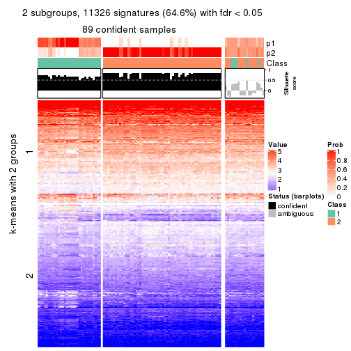
get_signatures(res, k = 3, scale_rows = FALSE)
get_signatures(res, k = 4, scale_rows = FALSE)
get_signatures(res, k = 5, scale_rows = FALSE)
get_signatures(res, k = 6, scale_rows = FALSE)
Compare the overlap of signatures from different k:
compare_signatures(res)
get_signature() returns a data frame invisibly. TO get the list of signatures, the function
call should be assigned to a variable explicitly. In following code, if plot argument is set
to FALSE, no heatmap is plotted while only the differential analysis is performed.
# code only for demonstration
tb = get_signature(res, k = ..., plot = FALSE)
An example of the output of tb is:
#> which_row fdr mean_1 mean_2 scaled_mean_1 scaled_mean_2 km
#> 1 38 0.042760348 8.373488 9.131774 -0.5533452 0.5164555 1
#> 2 40 0.018707592 7.106213 8.469186 -0.6173731 0.5762149 1
#> 3 55 0.019134737 10.221463 11.207825 -0.6159697 0.5749050 1
#> 4 59 0.006059896 5.921854 7.869574 -0.6899429 0.6439467 1
#> 5 60 0.018055526 8.928898 10.211722 -0.6204761 0.5791110 1
#> 6 98 0.009384629 15.714769 14.887706 0.6635654 -0.6193277 2
...
The columns in tb are:
which_row: row indices corresponding to the input matrix.fdr: FDR for the differential test. mean_x: The mean value in group x.scaled_mean_x: The mean value in group x after rows are scaled.km: Row groups if k-means clustering is applied to rows.UMAP plot which shows how samples are separated.
dimension_reduction(res, k = 2, method = "UMAP")

dimension_reduction(res, k = 3, method = "UMAP")
dimension_reduction(res, k = 4, method = "UMAP")
dimension_reduction(res, k = 5, method = "UMAP")
dimension_reduction(res, k = 6, method = "UMAP")
Following heatmap shows how subgroups are split when increasing k:
collect_classes(res)
If matrix rows can be associated to genes, consider to use GO_Enrichment(res,
...) to perform function enrichment for the signature genes.
The object with results only for a single top-value method and a single partition method can be extracted as:
res = res_list["ATC", "kmeans"]
# you can also extract it by
# res = res_list["ATC:kmeans"]
A summary of res and all the functions that can be applied to it:
res
#> A 'ConsensusPartition' object with k = 2, 3, 4, 5, 6.
#> On a matrix with 17532 rows and 108 columns.
#> Top rows (1000, 2000, 3000, 4000, 5000) are extracted by 'ATC' method.
#> Subgroups are detected by 'kmeans' method.
#> Performed in total 1250 partitions by row resampling.
#> Best k for subgroups seems to be 3.
#>
#> Following methods can be applied to this 'ConsensusPartition' object:
#> [1] "cola_report" "collect_classes" "collect_plots"
#> [4] "collect_stats" "colnames" "compare_signatures"
#> [7] "consensus_heatmap" "dimension_reduction" "functional_enrichment"
#> [10] "get_anno_col" "get_anno" "get_classes"
#> [13] "get_consensus" "get_matrix" "get_membership"
#> [16] "get_param" "get_signatures" "get_stats"
#> [19] "is_best_k" "is_stable_k" "membership_heatmap"
#> [22] "ncol" "nrow" "plot_ecdf"
#> [25] "rownames" "select_partition_number" "show"
#> [28] "suggest_best_k" "test_to_known_factors"
collect_plots() function collects all the plots made from res for all k (number of partitions)
into one single page to provide an easy and fast comparison between different k.
collect_plots(res)
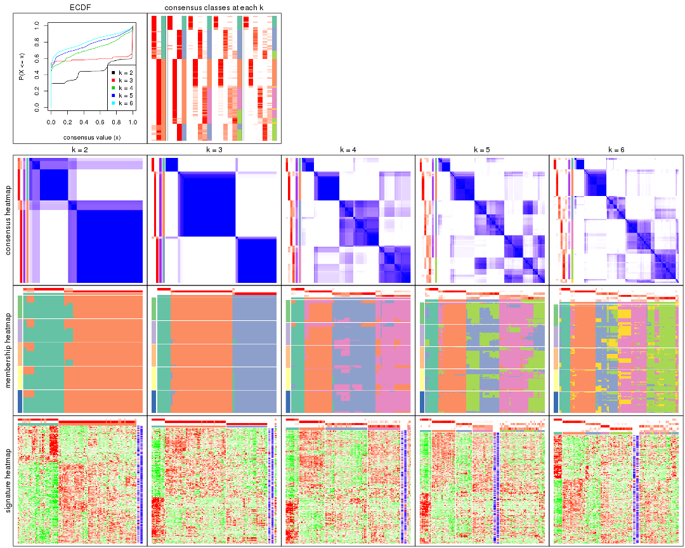
The plots are:
k and the heatmap of
predicted classes for each k.k.k.k.All the plots in panels can be made by individual functions and they are plotted later in this section.
select_partition_number() produces several plots showing different
statistics for choosing “optimized” k. There are following statistics:
k;k, the area increased is defined as \(A_k - A_{k-1}\).The detailed explanations of these statistics can be found in the cola vignette.
Generally speaking, lower PAC score, higher mean silhouette score or higher
concordance corresponds to better partition. Rand index and Jaccard index
measure how similar the current partition is compared to partition with k-1.
If they are too similar, we won't accept k is better than k-1.
select_partition_number(res)
The numeric values for all these statistics can be obtained by get_stats().
get_stats(res)
#> k 1-PAC mean_silhouette concordance area_increased Rand Jaccard
#> 2 2 0.782 0.889 0.952 0.4446 0.545 0.545
#> 3 3 1.000 0.964 0.986 0.3339 0.738 0.570
#> 4 4 0.657 0.789 0.865 0.2068 0.854 0.650
#> 5 5 0.729 0.494 0.698 0.0820 0.890 0.631
#> 6 6 0.765 0.567 0.787 0.0488 0.865 0.502
suggest_best_k() suggests the best \(k\) based on these statistics. The rules are as follows:
NA.suggest_best_k(res)
#> [1] 3
Following shows the table of the partitions (You need to click the show/hide
code output link to see it). The membership matrix (columns with name p*)
is inferred by
clue::cl_consensus()
function with the SE method. Basically the value in the membership matrix
represents the probability to belong to a certain group. The finall class
label for an item is determined with the group with highest probability it
belongs to.
In get_classes() function, the entropy is calculated from the membership
matrix and the silhouette score is calculated from the consensus matrix.
cbind(get_classes(res, k = 2), get_membership(res, k = 2))
#> class entropy silhouette p1 p2
#> SRR1389909 2 0.000 0.961 0.000 1.000
#> SRR1454460 2 0.000 0.961 0.000 1.000
#> SRR1404623 2 0.000 0.961 0.000 1.000
#> SRR1092038 2 0.000 0.961 0.000 1.000
#> SRR1319793 2 0.000 0.961 0.000 1.000
#> SRR1396208 2 0.000 0.961 0.000 1.000
#> SRR1435797 1 0.000 0.913 1.000 0.000
#> SRR1078042 2 0.850 0.595 0.276 0.724
#> SRR1339699 1 0.929 0.552 0.656 0.344
#> SRR1446499 2 0.000 0.961 0.000 1.000
#> SRR1359428 2 0.000 0.961 0.000 1.000
#> SRR1071475 1 0.000 0.913 1.000 0.000
#> SRR1436781 2 0.000 0.961 0.000 1.000
#> SRR1101453 1 0.913 0.584 0.672 0.328
#> SRR1350891 2 0.000 0.961 0.000 1.000
#> SRR814293 2 0.000 0.961 0.000 1.000
#> SRR1471456 2 0.000 0.961 0.000 1.000
#> SRR1446874 1 0.653 0.789 0.832 0.168
#> SRR1362731 2 0.000 0.961 0.000 1.000
#> SRR1413705 2 0.000 0.961 0.000 1.000
#> SRR1434586 2 0.000 0.961 0.000 1.000
#> SRR1091164 2 0.000 0.961 0.000 1.000
#> SRR1340598 2 0.767 0.685 0.224 0.776
#> SRR1466469 1 0.000 0.913 1.000 0.000
#> SRR1099310 2 0.000 0.961 0.000 1.000
#> SRR814892 2 0.000 0.961 0.000 1.000
#> SRR1090698 2 0.000 0.961 0.000 1.000
#> SRR1089134 1 0.000 0.913 1.000 0.000
#> SRR1120276 1 0.000 0.913 1.000 0.000
#> SRR1430507 2 0.000 0.961 0.000 1.000
#> SRR1356078 2 0.000 0.961 0.000 1.000
#> SRR1447037 2 0.855 0.588 0.280 0.720
#> SRR1443544 1 0.000 0.913 1.000 0.000
#> SRR1081987 2 0.000 0.961 0.000 1.000
#> SRR1316513 2 0.000 0.961 0.000 1.000
#> SRR1478457 2 0.895 0.522 0.312 0.688
#> SRR1342849 1 0.000 0.913 1.000 0.000
#> SRR1073878 2 0.000 0.961 0.000 1.000
#> SRR1078735 1 0.000 0.913 1.000 0.000
#> SRR1093601 2 0.000 0.961 0.000 1.000
#> SRR816629 1 0.925 0.561 0.660 0.340
#> SRR1477754 2 0.000 0.961 0.000 1.000
#> SRR1454589 1 0.913 0.584 0.672 0.328
#> SRR1102780 2 0.000 0.961 0.000 1.000
#> SRR1347518 2 0.000 0.961 0.000 1.000
#> SRR1093747 1 0.000 0.913 1.000 0.000
#> SRR809209 2 0.000 0.961 0.000 1.000
#> SRR1082471 2 0.895 0.522 0.312 0.688
#> SRR1390349 2 0.895 0.522 0.312 0.688
#> SRR1410493 2 0.000 0.961 0.000 1.000
#> SRR1086656 2 0.000 0.961 0.000 1.000
#> SRR1469997 2 0.000 0.961 0.000 1.000
#> SRR1355512 2 0.000 0.961 0.000 1.000
#> SRR809897 2 0.118 0.946 0.016 0.984
#> SRR1436146 2 0.000 0.961 0.000 1.000
#> SRR1097148 1 0.000 0.913 1.000 0.000
#> SRR1429979 1 0.000 0.913 1.000 0.000
#> SRR1454607 1 0.000 0.913 1.000 0.000
#> SRR1420687 1 0.000 0.913 1.000 0.000
#> SRR1099669 1 0.000 0.913 1.000 0.000
#> SRR1360172 1 0.913 0.584 0.672 0.328
#> SRR1478131 2 0.000 0.961 0.000 1.000
#> SRR1453235 2 0.891 0.531 0.308 0.692
#> SRR1369107 1 0.000 0.913 1.000 0.000
#> SRR1096458 2 0.000 0.961 0.000 1.000
#> SRR1088856 1 0.000 0.913 1.000 0.000
#> SRR1432934 2 0.000 0.961 0.000 1.000
#> SRR821072 2 0.000 0.961 0.000 1.000
#> SRR1480896 1 0.000 0.913 1.000 0.000
#> SRR1403344 2 0.000 0.961 0.000 1.000
#> SRR1360850 1 0.000 0.913 1.000 0.000
#> SRR1451820 2 0.000 0.961 0.000 1.000
#> SRR1075360 1 0.680 0.778 0.820 0.180
#> SRR1413373 1 0.000 0.913 1.000 0.000
#> SRR1090928 2 0.000 0.961 0.000 1.000
#> SRR1097124 2 0.000 0.961 0.000 1.000
#> SRR1458745 1 0.000 0.913 1.000 0.000
#> SRR1078636 2 0.000 0.961 0.000 1.000
#> SRR1473754 2 0.000 0.961 0.000 1.000
#> SRR1085736 2 0.000 0.961 0.000 1.000
#> SRR1098807 1 0.000 0.913 1.000 0.000
#> SRR1341583 2 0.000 0.961 0.000 1.000
#> SRR1380869 2 0.000 0.961 0.000 1.000
#> SRR1430775 1 0.917 0.577 0.668 0.332
#> SRR1479573 2 0.000 0.961 0.000 1.000
#> SRR1082352 1 0.000 0.913 1.000 0.000
#> SRR1102005 2 0.895 0.522 0.312 0.688
#> SRR1408415 1 0.000 0.913 1.000 0.000
#> SRR1353537 1 0.000 0.913 1.000 0.000
#> SRR1458870 2 0.000 0.961 0.000 1.000
#> SRR1315495 2 0.000 0.961 0.000 1.000
#> SRR1481169 2 0.000 0.961 0.000 1.000
#> SRR1470273 1 0.000 0.913 1.000 0.000
#> SRR1312446 2 0.000 0.961 0.000 1.000
#> SRR1101859 2 0.000 0.961 0.000 1.000
#> SRR1384210 1 0.000 0.913 1.000 0.000
#> SRR1336244 2 0.000 0.961 0.000 1.000
#> SRR1374432 2 0.000 0.961 0.000 1.000
#> SRR1430023 1 0.917 0.577 0.668 0.332
#> SRR1487527 1 0.000 0.913 1.000 0.000
#> SRR1073389 2 0.000 0.961 0.000 1.000
#> SRR1433171 2 0.000 0.961 0.000 1.000
#> SRR1085565 1 0.706 0.766 0.808 0.192
#> SRR1355017 2 0.000 0.961 0.000 1.000
#> SRR1351641 2 0.000 0.961 0.000 1.000
#> SRR1398230 2 0.000 0.961 0.000 1.000
#> SRR1086212 2 0.000 0.961 0.000 1.000
#> SRR1431514 2 0.000 0.961 0.000 1.000
cbind(get_classes(res, k = 3), get_membership(res, k = 3))
#> class entropy silhouette p1 p2 p3
#> SRR1389909 2 0.1163 0.959 0.000 0.972 0.028
#> SRR1454460 2 0.0424 0.979 0.000 0.992 0.008
#> SRR1404623 2 0.0000 0.987 0.000 1.000 0.000
#> SRR1092038 3 0.0000 0.977 0.000 0.000 1.000
#> SRR1319793 2 0.0000 0.987 0.000 1.000 0.000
#> SRR1396208 2 0.0000 0.987 0.000 1.000 0.000
#> SRR1435797 3 0.0000 0.977 0.000 0.000 1.000
#> SRR1078042 3 0.0000 0.977 0.000 0.000 1.000
#> SRR1339699 3 0.0000 0.977 0.000 0.000 1.000
#> SRR1446499 2 0.0000 0.987 0.000 1.000 0.000
#> SRR1359428 2 0.0000 0.987 0.000 1.000 0.000
#> SRR1071475 1 0.0000 1.000 1.000 0.000 0.000
#> SRR1436781 2 0.0000 0.987 0.000 1.000 0.000
#> SRR1101453 3 0.0000 0.977 0.000 0.000 1.000
#> SRR1350891 2 0.0000 0.987 0.000 1.000 0.000
#> SRR814293 2 0.0000 0.987 0.000 1.000 0.000
#> SRR1471456 2 0.5058 0.671 0.000 0.756 0.244
#> SRR1446874 3 0.0000 0.977 0.000 0.000 1.000
#> SRR1362731 2 0.0000 0.987 0.000 1.000 0.000
#> SRR1413705 2 0.0000 0.987 0.000 1.000 0.000
#> SRR1434586 2 0.1289 0.954 0.000 0.968 0.032
#> SRR1091164 2 0.0000 0.987 0.000 1.000 0.000
#> SRR1340598 3 0.0000 0.977 0.000 0.000 1.000
#> SRR1466469 1 0.0000 1.000 1.000 0.000 0.000
#> SRR1099310 2 0.0000 0.987 0.000 1.000 0.000
#> SRR814892 2 0.0000 0.987 0.000 1.000 0.000
#> SRR1090698 2 0.2261 0.913 0.000 0.932 0.068
#> SRR1089134 1 0.0000 1.000 1.000 0.000 0.000
#> SRR1120276 3 0.0000 0.977 0.000 0.000 1.000
#> SRR1430507 2 0.0000 0.987 0.000 1.000 0.000
#> SRR1356078 3 0.0000 0.977 0.000 0.000 1.000
#> SRR1447037 3 0.0000 0.977 0.000 0.000 1.000
#> SRR1443544 3 0.0000 0.977 0.000 0.000 1.000
#> SRR1081987 2 0.0000 0.987 0.000 1.000 0.000
#> SRR1316513 2 0.0000 0.987 0.000 1.000 0.000
#> SRR1478457 3 0.0000 0.977 0.000 0.000 1.000
#> SRR1342849 3 0.0000 0.977 0.000 0.000 1.000
#> SRR1073878 2 0.0000 0.987 0.000 1.000 0.000
#> SRR1078735 3 0.1643 0.934 0.044 0.000 0.956
#> SRR1093601 2 0.0000 0.987 0.000 1.000 0.000
#> SRR816629 3 0.0000 0.977 0.000 0.000 1.000
#> SRR1477754 2 0.0000 0.987 0.000 1.000 0.000
#> SRR1454589 3 0.0000 0.977 0.000 0.000 1.000
#> SRR1102780 2 0.0000 0.987 0.000 1.000 0.000
#> SRR1347518 2 0.0000 0.987 0.000 1.000 0.000
#> SRR1093747 3 0.0000 0.977 0.000 0.000 1.000
#> SRR809209 3 0.0000 0.977 0.000 0.000 1.000
#> SRR1082471 3 0.0000 0.977 0.000 0.000 1.000
#> SRR1390349 3 0.0000 0.977 0.000 0.000 1.000
#> SRR1410493 3 0.0000 0.977 0.000 0.000 1.000
#> SRR1086656 2 0.0000 0.987 0.000 1.000 0.000
#> SRR1469997 2 0.0000 0.987 0.000 1.000 0.000
#> SRR1355512 2 0.0000 0.987 0.000 1.000 0.000
#> SRR809897 3 0.0000 0.977 0.000 0.000 1.000
#> SRR1436146 2 0.0000 0.987 0.000 1.000 0.000
#> SRR1097148 1 0.0000 1.000 1.000 0.000 0.000
#> SRR1429979 3 0.0000 0.977 0.000 0.000 1.000
#> SRR1454607 1 0.0000 1.000 1.000 0.000 0.000
#> SRR1420687 3 0.0000 0.977 0.000 0.000 1.000
#> SRR1099669 3 0.0000 0.977 0.000 0.000 1.000
#> SRR1360172 3 0.0000 0.977 0.000 0.000 1.000
#> SRR1478131 2 0.0000 0.987 0.000 1.000 0.000
#> SRR1453235 3 0.0000 0.977 0.000 0.000 1.000
#> SRR1369107 3 0.0000 0.977 0.000 0.000 1.000
#> SRR1096458 2 0.0000 0.987 0.000 1.000 0.000
#> SRR1088856 3 0.0000 0.977 0.000 0.000 1.000
#> SRR1432934 2 0.0000 0.987 0.000 1.000 0.000
#> SRR821072 2 0.0000 0.987 0.000 1.000 0.000
#> SRR1480896 3 0.0000 0.977 0.000 0.000 1.000
#> SRR1403344 2 0.5058 0.671 0.000 0.756 0.244
#> SRR1360850 1 0.0000 1.000 1.000 0.000 0.000
#> SRR1451820 2 0.0000 0.987 0.000 1.000 0.000
#> SRR1075360 3 0.0000 0.977 0.000 0.000 1.000
#> SRR1413373 3 0.6244 0.235 0.440 0.000 0.560
#> SRR1090928 2 0.0000 0.987 0.000 1.000 0.000
#> SRR1097124 2 0.0000 0.987 0.000 1.000 0.000
#> SRR1458745 3 0.0000 0.977 0.000 0.000 1.000
#> SRR1078636 2 0.0000 0.987 0.000 1.000 0.000
#> SRR1473754 2 0.0000 0.987 0.000 1.000 0.000
#> SRR1085736 2 0.0000 0.987 0.000 1.000 0.000
#> SRR1098807 1 0.0000 1.000 1.000 0.000 0.000
#> SRR1341583 2 0.0000 0.987 0.000 1.000 0.000
#> SRR1380869 2 0.0000 0.987 0.000 1.000 0.000
#> SRR1430775 3 0.0000 0.977 0.000 0.000 1.000
#> SRR1479573 3 0.0000 0.977 0.000 0.000 1.000
#> SRR1082352 1 0.0000 1.000 1.000 0.000 0.000
#> SRR1102005 3 0.0000 0.977 0.000 0.000 1.000
#> SRR1408415 3 0.6154 0.325 0.408 0.000 0.592
#> SRR1353537 1 0.0000 1.000 1.000 0.000 0.000
#> SRR1458870 2 0.0000 0.987 0.000 1.000 0.000
#> SRR1315495 2 0.0000 0.987 0.000 1.000 0.000
#> SRR1481169 2 0.0000 0.987 0.000 1.000 0.000
#> SRR1470273 1 0.0000 1.000 1.000 0.000 0.000
#> SRR1312446 2 0.0000 0.987 0.000 1.000 0.000
#> SRR1101859 2 0.0000 0.987 0.000 1.000 0.000
#> SRR1384210 1 0.0000 1.000 1.000 0.000 0.000
#> SRR1336244 2 0.0000 0.987 0.000 1.000 0.000
#> SRR1374432 2 0.0000 0.987 0.000 1.000 0.000
#> SRR1430023 3 0.0000 0.977 0.000 0.000 1.000
#> SRR1487527 1 0.0000 1.000 1.000 0.000 0.000
#> SRR1073389 3 0.0000 0.977 0.000 0.000 1.000
#> SRR1433171 2 0.0000 0.987 0.000 1.000 0.000
#> SRR1085565 3 0.0000 0.977 0.000 0.000 1.000
#> SRR1355017 2 0.0000 0.987 0.000 1.000 0.000
#> SRR1351641 2 0.0000 0.987 0.000 1.000 0.000
#> SRR1398230 2 0.0000 0.987 0.000 1.000 0.000
#> SRR1086212 2 0.0000 0.987 0.000 1.000 0.000
#> SRR1431514 2 0.0000 0.987 0.000 1.000 0.000
cbind(get_classes(res, k = 4), get_membership(res, k = 4))
#> class entropy silhouette p1 p2 p3 p4
#> SRR1389909 4 0.0592 0.7771 0.000 0.016 0.000 0.984
#> SRR1454460 4 0.0592 0.7771 0.000 0.016 0.000 0.984
#> SRR1404623 2 0.0000 0.9364 0.000 1.000 0.000 0.000
#> SRR1092038 3 0.4134 0.7925 0.000 0.000 0.740 0.260
#> SRR1319793 4 0.4761 0.5995 0.000 0.372 0.000 0.628
#> SRR1396208 4 0.0592 0.7771 0.000 0.016 0.000 0.984
#> SRR1435797 3 0.0000 0.7944 0.000 0.000 1.000 0.000
#> SRR1078042 3 0.4304 0.7800 0.000 0.000 0.716 0.284
#> SRR1339699 3 0.3172 0.8193 0.000 0.000 0.840 0.160
#> SRR1446499 4 0.3726 0.8022 0.000 0.212 0.000 0.788
#> SRR1359428 2 0.0000 0.9364 0.000 1.000 0.000 0.000
#> SRR1071475 1 0.2647 0.9136 0.880 0.000 0.120 0.000
#> SRR1436781 2 0.0000 0.9364 0.000 1.000 0.000 0.000
#> SRR1101453 3 0.2589 0.8202 0.000 0.000 0.884 0.116
#> SRR1350891 2 0.0000 0.9364 0.000 1.000 0.000 0.000
#> SRR814293 2 0.4382 0.5173 0.000 0.704 0.000 0.296
#> SRR1471456 4 0.0672 0.7684 0.000 0.008 0.008 0.984
#> SRR1446874 3 0.3123 0.8197 0.000 0.000 0.844 0.156
#> SRR1362731 2 0.0000 0.9364 0.000 1.000 0.000 0.000
#> SRR1413705 2 0.0000 0.9364 0.000 1.000 0.000 0.000
#> SRR1434586 4 0.0672 0.7684 0.000 0.008 0.008 0.984
#> SRR1091164 2 0.0592 0.9221 0.000 0.984 0.000 0.016
#> SRR1340598 3 0.4933 0.6318 0.000 0.000 0.568 0.432
#> SRR1466469 1 0.0000 0.9558 1.000 0.000 0.000 0.000
#> SRR1099310 4 0.3311 0.8241 0.000 0.172 0.000 0.828
#> SRR814892 4 0.4356 0.7247 0.000 0.292 0.000 0.708
#> SRR1090698 4 0.0672 0.7684 0.000 0.008 0.008 0.984
#> SRR1089134 1 0.0000 0.9558 1.000 0.000 0.000 0.000
#> SRR1120276 3 0.0000 0.7944 0.000 0.000 1.000 0.000
#> SRR1430507 4 0.3311 0.8241 0.000 0.172 0.000 0.828
#> SRR1356078 3 0.4985 0.5778 0.000 0.000 0.532 0.468
#> SRR1447037 4 0.4624 -0.0811 0.000 0.000 0.340 0.660
#> SRR1443544 3 0.0000 0.7944 0.000 0.000 1.000 0.000
#> SRR1081987 4 0.0921 0.7860 0.000 0.028 0.000 0.972
#> SRR1316513 4 0.2469 0.8135 0.000 0.108 0.000 0.892
#> SRR1478457 3 0.4304 0.7800 0.000 0.000 0.716 0.284
#> SRR1342849 3 0.0000 0.7944 0.000 0.000 1.000 0.000
#> SRR1073878 2 0.0000 0.9364 0.000 1.000 0.000 0.000
#> SRR1078735 3 0.0188 0.7921 0.004 0.000 0.996 0.000
#> SRR1093601 2 0.0000 0.9364 0.000 1.000 0.000 0.000
#> SRR816629 3 0.3172 0.8193 0.000 0.000 0.840 0.160
#> SRR1477754 2 0.0188 0.9332 0.000 0.996 0.000 0.004
#> SRR1454589 3 0.3172 0.8193 0.000 0.000 0.840 0.160
#> SRR1102780 4 0.3311 0.8241 0.000 0.172 0.000 0.828
#> SRR1347518 4 0.3219 0.8243 0.000 0.164 0.000 0.836
#> SRR1093747 3 0.0000 0.7944 0.000 0.000 1.000 0.000
#> SRR809209 3 0.4981 0.5848 0.000 0.000 0.536 0.464
#> SRR1082471 3 0.4103 0.7933 0.000 0.000 0.744 0.256
#> SRR1390349 3 0.4941 0.6265 0.000 0.000 0.564 0.436
#> SRR1410493 3 0.4985 0.5778 0.000 0.000 0.532 0.468
#> SRR1086656 4 0.3356 0.8224 0.000 0.176 0.000 0.824
#> SRR1469997 2 0.0000 0.9364 0.000 1.000 0.000 0.000
#> SRR1355512 2 0.4134 0.5613 0.000 0.740 0.000 0.260
#> SRR809897 3 0.4948 0.6209 0.000 0.000 0.560 0.440
#> SRR1436146 2 0.0000 0.9364 0.000 1.000 0.000 0.000
#> SRR1097148 1 0.0000 0.9558 1.000 0.000 0.000 0.000
#> SRR1429979 3 0.0000 0.7944 0.000 0.000 1.000 0.000
#> SRR1454607 1 0.0000 0.9558 1.000 0.000 0.000 0.000
#> SRR1420687 3 0.0000 0.7944 0.000 0.000 1.000 0.000
#> SRR1099669 3 0.0000 0.7944 0.000 0.000 1.000 0.000
#> SRR1360172 3 0.2589 0.8202 0.000 0.000 0.884 0.116
#> SRR1478131 4 0.4164 0.7568 0.000 0.264 0.000 0.736
#> SRR1453235 3 0.4277 0.7821 0.000 0.000 0.720 0.280
#> SRR1369107 3 0.0000 0.7944 0.000 0.000 1.000 0.000
#> SRR1096458 4 0.1389 0.7952 0.000 0.048 0.000 0.952
#> SRR1088856 3 0.1118 0.8060 0.000 0.000 0.964 0.036
#> SRR1432934 2 0.0000 0.9364 0.000 1.000 0.000 0.000
#> SRR821072 4 0.3356 0.8227 0.000 0.176 0.000 0.824
#> SRR1480896 3 0.1867 0.8137 0.000 0.000 0.928 0.072
#> SRR1403344 4 0.0672 0.7684 0.000 0.008 0.008 0.984
#> SRR1360850 1 0.2589 0.9155 0.884 0.000 0.116 0.000
#> SRR1451820 2 0.0000 0.9364 0.000 1.000 0.000 0.000
#> SRR1075360 3 0.3074 0.8200 0.000 0.000 0.848 0.152
#> SRR1413373 3 0.3969 0.5779 0.180 0.000 0.804 0.016
#> SRR1090928 2 0.0000 0.9364 0.000 1.000 0.000 0.000
#> SRR1097124 2 0.3942 0.6441 0.000 0.764 0.000 0.236
#> SRR1458745 3 0.0592 0.7858 0.000 0.000 0.984 0.016
#> SRR1078636 4 0.4994 0.3155 0.000 0.480 0.000 0.520
#> SRR1473754 4 0.3837 0.7930 0.000 0.224 0.000 0.776
#> SRR1085736 2 0.4877 0.1278 0.000 0.592 0.000 0.408
#> SRR1098807 1 0.0000 0.9558 1.000 0.000 0.000 0.000
#> SRR1341583 4 0.4746 0.5982 0.000 0.368 0.000 0.632
#> SRR1380869 4 0.3311 0.8241 0.000 0.172 0.000 0.828
#> SRR1430775 3 0.2149 0.8126 0.000 0.000 0.912 0.088
#> SRR1479573 3 0.4967 0.6046 0.000 0.000 0.548 0.452
#> SRR1082352 1 0.0000 0.9558 1.000 0.000 0.000 0.000
#> SRR1102005 3 0.4040 0.7963 0.000 0.000 0.752 0.248
#> SRR1408415 3 0.3743 0.6101 0.160 0.000 0.824 0.016
#> SRR1353537 1 0.0000 0.9558 1.000 0.000 0.000 0.000
#> SRR1458870 4 0.4730 0.6137 0.000 0.364 0.000 0.636
#> SRR1315495 2 0.0000 0.9364 0.000 1.000 0.000 0.000
#> SRR1481169 4 0.3219 0.8243 0.000 0.164 0.000 0.836
#> SRR1470273 1 0.0000 0.9558 1.000 0.000 0.000 0.000
#> SRR1312446 2 0.0000 0.9364 0.000 1.000 0.000 0.000
#> SRR1101859 4 0.3311 0.8241 0.000 0.172 0.000 0.828
#> SRR1384210 1 0.3610 0.8439 0.800 0.000 0.200 0.000
#> SRR1336244 2 0.0000 0.9364 0.000 1.000 0.000 0.000
#> SRR1374432 4 0.1474 0.7966 0.000 0.052 0.000 0.948
#> SRR1430023 3 0.2345 0.8148 0.000 0.000 0.900 0.100
#> SRR1487527 1 0.2814 0.9058 0.868 0.000 0.132 0.000
#> SRR1073389 3 0.4981 0.5851 0.000 0.000 0.536 0.464
#> SRR1433171 4 0.4804 0.5668 0.000 0.384 0.000 0.616
#> SRR1085565 3 0.3172 0.8193 0.000 0.000 0.840 0.160
#> SRR1355017 2 0.0000 0.9364 0.000 1.000 0.000 0.000
#> SRR1351641 2 0.0000 0.9364 0.000 1.000 0.000 0.000
#> SRR1398230 2 0.0000 0.9364 0.000 1.000 0.000 0.000
#> SRR1086212 4 0.4040 0.7741 0.000 0.248 0.000 0.752
#> SRR1431514 4 0.3942 0.7832 0.000 0.236 0.000 0.764
cbind(get_classes(res, k = 5), get_membership(res, k = 5))
#> class entropy silhouette p1 p2 p3 p4 p5
#> SRR1389909 5 0.4192 -0.64600 0.000 0.000 0.000 0.404 0.596
#> SRR1454460 5 0.2179 0.08358 0.000 0.000 0.000 0.112 0.888
#> SRR1404623 2 0.0609 0.89640 0.000 0.980 0.000 0.020 0.000
#> SRR1092038 3 0.4302 0.23369 0.000 0.000 0.520 0.000 0.480
#> SRR1319793 5 0.6219 -0.76349 0.000 0.140 0.000 0.424 0.436
#> SRR1396208 5 0.4126 -0.61585 0.000 0.000 0.000 0.380 0.620
#> SRR1435797 3 0.1831 0.62360 0.000 0.000 0.920 0.076 0.004
#> SRR1078042 3 0.4302 0.23319 0.000 0.000 0.520 0.000 0.480
#> SRR1339699 3 0.4287 0.27015 0.000 0.000 0.540 0.000 0.460
#> SRR1446499 4 0.5818 0.79378 0.000 0.092 0.000 0.460 0.448
#> SRR1359428 2 0.0404 0.89412 0.000 0.988 0.000 0.012 0.000
#> SRR1071475 1 0.4428 0.75086 0.700 0.000 0.032 0.268 0.000
#> SRR1436781 2 0.0794 0.89585 0.000 0.972 0.000 0.028 0.000
#> SRR1101453 3 0.1197 0.61806 0.000 0.000 0.952 0.000 0.048
#> SRR1350891 2 0.0609 0.89640 0.000 0.980 0.000 0.020 0.000
#> SRR814293 2 0.6610 0.09693 0.000 0.436 0.000 0.340 0.224
#> SRR1471456 5 0.1732 0.15860 0.000 0.000 0.000 0.080 0.920
#> SRR1446874 3 0.4015 0.41450 0.000 0.000 0.652 0.000 0.348
#> SRR1362731 2 0.0000 0.89577 0.000 1.000 0.000 0.000 0.000
#> SRR1413705 2 0.0162 0.89564 0.000 0.996 0.000 0.004 0.000
#> SRR1434586 5 0.0794 0.22232 0.000 0.000 0.000 0.028 0.972
#> SRR1091164 2 0.2616 0.83791 0.000 0.888 0.000 0.036 0.076
#> SRR1340598 5 0.4552 -0.16417 0.000 0.000 0.468 0.008 0.524
#> SRR1466469 1 0.0000 0.87798 1.000 0.000 0.000 0.000 0.000
#> SRR1099310 4 0.4987 0.87409 0.000 0.044 0.000 0.616 0.340
#> SRR814892 4 0.5508 0.82365 0.000 0.064 0.000 0.476 0.460
#> SRR1090698 5 0.0290 0.22999 0.000 0.000 0.000 0.008 0.992
#> SRR1089134 1 0.0000 0.87798 1.000 0.000 0.000 0.000 0.000
#> SRR1120276 3 0.0000 0.62760 0.000 0.000 1.000 0.000 0.000
#> SRR1430507 4 0.5261 0.73666 0.000 0.048 0.000 0.528 0.424
#> SRR1356078 5 0.4590 -0.11494 0.000 0.000 0.420 0.012 0.568
#> SRR1447037 5 0.4886 0.00422 0.000 0.000 0.372 0.032 0.596
#> SRR1443544 3 0.3123 0.57151 0.000 0.000 0.812 0.184 0.004
#> SRR1081987 5 0.4307 -0.79554 0.000 0.000 0.000 0.496 0.504
#> SRR1316513 4 0.4829 0.80857 0.000 0.020 0.000 0.496 0.484
#> SRR1478457 3 0.4306 0.21265 0.000 0.000 0.508 0.000 0.492
#> SRR1342849 3 0.1041 0.62927 0.000 0.000 0.964 0.032 0.004
#> SRR1073878 2 0.0000 0.89577 0.000 1.000 0.000 0.000 0.000
#> SRR1078735 3 0.3521 0.53188 0.000 0.000 0.764 0.232 0.004
#> SRR1093601 2 0.0794 0.89585 0.000 0.972 0.000 0.028 0.000
#> SRR816629 3 0.4249 0.31364 0.000 0.000 0.568 0.000 0.432
#> SRR1477754 2 0.2079 0.85056 0.000 0.916 0.000 0.020 0.064
#> SRR1454589 3 0.4437 0.26274 0.000 0.000 0.532 0.004 0.464
#> SRR1102780 4 0.4987 0.87409 0.000 0.044 0.000 0.616 0.340
#> SRR1347518 4 0.5238 0.82695 0.000 0.044 0.000 0.484 0.472
#> SRR1093747 3 0.3550 0.53078 0.000 0.000 0.760 0.236 0.004
#> SRR809209 5 0.4546 -0.15924 0.000 0.000 0.460 0.008 0.532
#> SRR1082471 5 0.4658 -0.24050 0.000 0.000 0.484 0.012 0.504
#> SRR1390349 5 0.4555 -0.18048 0.000 0.000 0.472 0.008 0.520
#> SRR1410493 5 0.4590 -0.11494 0.000 0.000 0.420 0.012 0.568
#> SRR1086656 4 0.5296 0.82670 0.000 0.048 0.000 0.480 0.472
#> SRR1469997 2 0.0290 0.89488 0.000 0.992 0.000 0.008 0.000
#> SRR1355512 2 0.5822 0.27700 0.000 0.548 0.000 0.108 0.344
#> SRR809897 5 0.4310 -0.03848 0.000 0.000 0.392 0.004 0.604
#> SRR1436146 2 0.0162 0.89564 0.000 0.996 0.000 0.004 0.000
#> SRR1097148 1 0.0000 0.87798 1.000 0.000 0.000 0.000 0.000
#> SRR1429979 3 0.1041 0.62927 0.000 0.000 0.964 0.032 0.004
#> SRR1454607 1 0.0000 0.87798 1.000 0.000 0.000 0.000 0.000
#> SRR1420687 3 0.3861 0.52137 0.000 0.000 0.728 0.264 0.008
#> SRR1099669 3 0.3550 0.53078 0.000 0.000 0.760 0.236 0.004
#> SRR1360172 3 0.1197 0.61806 0.000 0.000 0.952 0.000 0.048
#> SRR1478131 4 0.5006 0.87130 0.000 0.048 0.000 0.624 0.328
#> SRR1453235 3 0.4746 0.22090 0.000 0.000 0.504 0.016 0.480
#> SRR1369107 3 0.3160 0.56586 0.000 0.000 0.808 0.188 0.004
#> SRR1096458 4 0.4138 0.81896 0.000 0.000 0.000 0.616 0.384
#> SRR1088856 3 0.0510 0.62525 0.000 0.000 0.984 0.000 0.016
#> SRR1432934 2 0.0290 0.89414 0.000 0.992 0.000 0.008 0.000
#> SRR821072 4 0.4987 0.87409 0.000 0.044 0.000 0.616 0.340
#> SRR1480896 3 0.5699 0.47943 0.000 0.000 0.584 0.108 0.308
#> SRR1403344 5 0.1608 0.17273 0.000 0.000 0.000 0.072 0.928
#> SRR1360850 1 0.4479 0.75019 0.700 0.000 0.036 0.264 0.000
#> SRR1451820 2 0.0794 0.89585 0.000 0.972 0.000 0.028 0.000
#> SRR1075360 3 0.4299 0.36781 0.000 0.000 0.608 0.004 0.388
#> SRR1413373 3 0.5107 0.39212 0.044 0.000 0.620 0.332 0.004
#> SRR1090928 2 0.0609 0.89640 0.000 0.980 0.000 0.020 0.000
#> SRR1097124 2 0.5554 0.53538 0.000 0.628 0.000 0.120 0.252
#> SRR1458745 3 0.4101 0.46793 0.000 0.000 0.664 0.332 0.004
#> SRR1078636 5 0.6554 -0.69463 0.000 0.200 0.000 0.396 0.404
#> SRR1473754 4 0.5022 0.87311 0.000 0.048 0.000 0.620 0.332
#> SRR1085736 2 0.6572 0.02492 0.000 0.452 0.000 0.220 0.328
#> SRR1098807 1 0.0000 0.87798 1.000 0.000 0.000 0.000 0.000
#> SRR1341583 4 0.5933 0.78235 0.000 0.104 0.000 0.452 0.444
#> SRR1380869 4 0.4987 0.87409 0.000 0.044 0.000 0.616 0.340
#> SRR1430775 3 0.2889 0.61013 0.000 0.000 0.872 0.084 0.044
#> SRR1479573 5 0.4304 -0.20980 0.000 0.000 0.484 0.000 0.516
#> SRR1082352 1 0.0000 0.87798 1.000 0.000 0.000 0.000 0.000
#> SRR1102005 3 0.4304 0.22405 0.000 0.000 0.516 0.000 0.484
#> SRR1408415 3 0.4731 0.41448 0.032 0.000 0.640 0.328 0.000
#> SRR1353537 1 0.0000 0.87798 1.000 0.000 0.000 0.000 0.000
#> SRR1458870 4 0.5895 0.78931 0.000 0.100 0.000 0.460 0.440
#> SRR1315495 2 0.0609 0.89640 0.000 0.980 0.000 0.020 0.000
#> SRR1481169 4 0.4866 0.86814 0.000 0.036 0.000 0.620 0.344
#> SRR1470273 1 0.0000 0.87798 1.000 0.000 0.000 0.000 0.000
#> SRR1312446 2 0.0162 0.89564 0.000 0.996 0.000 0.004 0.000
#> SRR1101859 5 0.5223 -0.80457 0.000 0.044 0.000 0.444 0.512
#> SRR1384210 1 0.6680 0.36716 0.412 0.000 0.348 0.240 0.000
#> SRR1336244 2 0.0703 0.89555 0.000 0.976 0.000 0.024 0.000
#> SRR1374432 5 0.4341 -0.66932 0.000 0.004 0.000 0.404 0.592
#> SRR1430023 3 0.2729 0.61121 0.000 0.000 0.884 0.060 0.056
#> SRR1487527 1 0.5660 0.67007 0.612 0.000 0.124 0.264 0.000
#> SRR1073389 5 0.5360 -0.08400 0.000 0.000 0.384 0.060 0.556
#> SRR1433171 4 0.6130 0.76211 0.000 0.128 0.000 0.448 0.424
#> SRR1085565 3 0.4060 0.40241 0.000 0.000 0.640 0.000 0.360
#> SRR1355017 2 0.0162 0.89506 0.000 0.996 0.000 0.004 0.000
#> SRR1351641 2 0.0794 0.89585 0.000 0.972 0.000 0.028 0.000
#> SRR1398230 2 0.0794 0.89585 0.000 0.972 0.000 0.028 0.000
#> SRR1086212 4 0.5022 0.87311 0.000 0.048 0.000 0.620 0.332
#> SRR1431514 4 0.5069 0.85109 0.000 0.052 0.000 0.620 0.328
cbind(get_classes(res, k = 6), get_membership(res, k = 6))
#> class entropy silhouette p1 p2 p3 p4 p5 p6
#> SRR1389909 4 0.5164 0.3305 0.000 0.000 0.000 0.584 0.116 0.300
#> SRR1454460 6 0.6061 0.0586 0.000 0.000 0.000 0.260 0.368 0.372
#> SRR1404623 2 0.0547 0.9046 0.000 0.980 0.000 0.000 0.000 0.020
#> SRR1092038 5 0.2135 0.7177 0.000 0.000 0.128 0.000 0.872 0.000
#> SRR1319793 4 0.5836 0.2750 0.000 0.096 0.000 0.512 0.032 0.360
#> SRR1396208 4 0.5487 0.2412 0.000 0.000 0.000 0.532 0.148 0.320
#> SRR1435797 3 0.2912 0.6365 0.000 0.000 0.784 0.000 0.216 0.000
#> SRR1078042 5 0.0713 0.7777 0.000 0.000 0.028 0.000 0.972 0.000
#> SRR1339699 5 0.2219 0.7114 0.000 0.000 0.136 0.000 0.864 0.000
#> SRR1446499 4 0.5063 0.3797 0.000 0.028 0.000 0.572 0.036 0.364
#> SRR1359428 2 0.1477 0.8736 0.000 0.940 0.004 0.008 0.000 0.048
#> SRR1071475 1 0.6047 0.2357 0.416 0.000 0.284 0.000 0.000 0.300
#> SRR1436781 2 0.0547 0.9046 0.000 0.980 0.000 0.000 0.000 0.020
#> SRR1101453 3 0.3737 0.4557 0.000 0.000 0.608 0.000 0.392 0.000
#> SRR1350891 2 0.0547 0.9046 0.000 0.980 0.000 0.000 0.000 0.020
#> SRR814293 4 0.6704 -0.2897 0.000 0.304 0.032 0.364 0.000 0.300
#> SRR1471456 5 0.5694 -0.1578 0.000 0.000 0.000 0.188 0.508 0.304
#> SRR1446874 5 0.2664 0.6479 0.000 0.000 0.184 0.000 0.816 0.000
#> SRR1362731 2 0.0260 0.9013 0.000 0.992 0.000 0.000 0.000 0.008
#> SRR1413705 2 0.0260 0.9013 0.000 0.992 0.000 0.000 0.000 0.008
#> SRR1434586 5 0.5304 -0.0973 0.000 0.000 0.004 0.088 0.488 0.420
#> SRR1091164 2 0.3620 0.6191 0.000 0.736 0.008 0.008 0.000 0.248
#> SRR1340598 5 0.1332 0.7850 0.000 0.000 0.012 0.008 0.952 0.028
#> SRR1466469 1 0.0000 0.8711 1.000 0.000 0.000 0.000 0.000 0.000
#> SRR1099310 4 0.0260 0.5127 0.000 0.008 0.000 0.992 0.000 0.000
#> SRR814892 4 0.4383 0.4190 0.000 0.016 0.000 0.616 0.012 0.356
#> SRR1090698 5 0.5077 0.1078 0.000 0.000 0.000 0.092 0.564 0.344
#> SRR1089134 1 0.0000 0.8711 1.000 0.000 0.000 0.000 0.000 0.000
#> SRR1120276 3 0.3482 0.5557 0.000 0.000 0.684 0.000 0.316 0.000
#> SRR1430507 4 0.4490 0.1543 0.000 0.008 0.008 0.708 0.048 0.228
#> SRR1356078 5 0.2512 0.7599 0.000 0.000 0.008 0.008 0.868 0.116
#> SRR1447037 5 0.2106 0.7665 0.000 0.000 0.000 0.064 0.904 0.032
#> SRR1443544 3 0.3644 0.6537 0.000 0.000 0.792 0.000 0.120 0.088
#> SRR1081987 4 0.3819 0.4432 0.000 0.000 0.000 0.672 0.012 0.316
#> SRR1316513 4 0.3819 0.4432 0.000 0.000 0.000 0.672 0.012 0.316
#> SRR1478457 5 0.0508 0.7828 0.000 0.000 0.012 0.004 0.984 0.000
#> SRR1342849 3 0.3151 0.6154 0.000 0.000 0.748 0.000 0.252 0.000
#> SRR1073878 2 0.0260 0.9013 0.000 0.992 0.000 0.000 0.000 0.008
#> SRR1078735 3 0.3163 0.6127 0.000 0.000 0.820 0.000 0.040 0.140
#> SRR1093601 2 0.0547 0.9046 0.000 0.980 0.000 0.000 0.000 0.020
#> SRR816629 5 0.2234 0.7180 0.000 0.000 0.124 0.000 0.872 0.004
#> SRR1477754 2 0.3596 0.6762 0.000 0.748 0.016 0.004 0.000 0.232
#> SRR1454589 5 0.1219 0.7655 0.000 0.000 0.048 0.000 0.948 0.004
#> SRR1102780 4 0.0622 0.5074 0.000 0.008 0.000 0.980 0.000 0.012
#> SRR1347518 4 0.4464 0.4200 0.000 0.008 0.000 0.624 0.028 0.340
#> SRR1093747 3 0.3315 0.6111 0.000 0.000 0.804 0.000 0.040 0.156
#> SRR809209 5 0.1003 0.7858 0.000 0.000 0.000 0.016 0.964 0.020
#> SRR1082471 5 0.1897 0.7718 0.000 0.000 0.004 0.004 0.908 0.084
#> SRR1390349 5 0.1245 0.7842 0.000 0.000 0.000 0.016 0.952 0.032
#> SRR1410493 5 0.2600 0.7553 0.000 0.000 0.008 0.008 0.860 0.124
#> SRR1086656 4 0.4705 0.3575 0.000 0.012 0.000 0.564 0.028 0.396
#> SRR1469997 2 0.1049 0.8858 0.000 0.960 0.000 0.008 0.000 0.032
#> SRR1355512 2 0.6396 -0.1936 0.000 0.468 0.008 0.180 0.020 0.324
#> SRR809897 5 0.1462 0.7782 0.000 0.000 0.000 0.008 0.936 0.056
#> SRR1436146 2 0.0146 0.9022 0.000 0.996 0.000 0.000 0.000 0.004
#> SRR1097148 1 0.0000 0.8711 1.000 0.000 0.000 0.000 0.000 0.000
#> SRR1429979 3 0.3151 0.6154 0.000 0.000 0.748 0.000 0.252 0.000
#> SRR1454607 1 0.0000 0.8711 1.000 0.000 0.000 0.000 0.000 0.000
#> SRR1420687 3 0.4265 0.5596 0.000 0.000 0.660 0.000 0.040 0.300
#> SRR1099669 3 0.3315 0.6111 0.000 0.000 0.804 0.000 0.040 0.156
#> SRR1360172 3 0.3756 0.4434 0.000 0.000 0.600 0.000 0.400 0.000
#> SRR1478131 4 0.0260 0.5127 0.000 0.008 0.000 0.992 0.000 0.000
#> SRR1453235 5 0.1901 0.7736 0.000 0.000 0.004 0.008 0.912 0.076
#> SRR1369107 3 0.1814 0.6506 0.000 0.000 0.900 0.000 0.100 0.000
#> SRR1096458 4 0.0520 0.5100 0.000 0.000 0.000 0.984 0.008 0.008
#> SRR1088856 3 0.3499 0.5491 0.000 0.000 0.680 0.000 0.320 0.000
#> SRR1432934 2 0.0603 0.8969 0.000 0.980 0.000 0.004 0.000 0.016
#> SRR821072 4 0.0520 0.5090 0.000 0.008 0.000 0.984 0.000 0.008
#> SRR1480896 5 0.4550 0.4179 0.000 0.000 0.240 0.000 0.676 0.084
#> SRR1403344 5 0.5549 -0.0726 0.000 0.000 0.000 0.168 0.536 0.296
#> SRR1360850 1 0.6048 0.2337 0.416 0.000 0.288 0.000 0.000 0.296
#> SRR1451820 2 0.0547 0.9046 0.000 0.980 0.000 0.000 0.000 0.020
#> SRR1075360 5 0.2581 0.7073 0.000 0.000 0.128 0.000 0.856 0.016
#> SRR1413373 3 0.4234 0.5088 0.000 0.000 0.608 0.004 0.016 0.372
#> SRR1090928 2 0.0547 0.9046 0.000 0.980 0.000 0.000 0.000 0.020
#> SRR1097124 2 0.5802 -0.0182 0.000 0.456 0.032 0.084 0.000 0.428
#> SRR1458745 3 0.4397 0.5114 0.000 0.000 0.596 0.004 0.024 0.376
#> SRR1078636 4 0.6012 0.1819 0.000 0.144 0.000 0.480 0.020 0.356
#> SRR1473754 4 0.0520 0.5090 0.000 0.008 0.000 0.984 0.000 0.008
#> SRR1085736 6 0.6791 0.1181 0.000 0.316 0.016 0.268 0.016 0.384
#> SRR1098807 1 0.0000 0.8711 1.000 0.000 0.000 0.000 0.000 0.000
#> SRR1341583 6 0.4731 -0.2434 0.000 0.032 0.008 0.428 0.000 0.532
#> SRR1380869 4 0.0520 0.5133 0.000 0.008 0.000 0.984 0.000 0.008
#> SRR1430775 3 0.5917 0.3634 0.000 0.000 0.440 0.008 0.392 0.160
#> SRR1479573 5 0.1116 0.7865 0.000 0.000 0.008 0.004 0.960 0.028
#> SRR1082352 1 0.0000 0.8711 1.000 0.000 0.000 0.000 0.000 0.000
#> SRR1102005 5 0.0363 0.7826 0.000 0.000 0.012 0.000 0.988 0.000
#> SRR1408415 3 0.4223 0.5098 0.000 0.000 0.612 0.004 0.016 0.368
#> SRR1353537 1 0.0000 0.8711 1.000 0.000 0.000 0.000 0.000 0.000
#> SRR1458870 4 0.4983 0.3862 0.000 0.036 0.000 0.580 0.024 0.360
#> SRR1315495 2 0.0547 0.9046 0.000 0.980 0.000 0.000 0.000 0.020
#> SRR1481169 4 0.0858 0.4943 0.000 0.004 0.000 0.968 0.000 0.028
#> SRR1470273 1 0.0000 0.8711 1.000 0.000 0.000 0.000 0.000 0.000
#> SRR1312446 2 0.0146 0.9022 0.000 0.996 0.000 0.000 0.000 0.004
#> SRR1101859 4 0.4983 0.3765 0.000 0.008 0.000 0.576 0.060 0.356
#> SRR1384210 3 0.4566 0.4348 0.160 0.000 0.700 0.000 0.000 0.140
#> SRR1336244 2 0.0547 0.9046 0.000 0.980 0.000 0.000 0.000 0.020
#> SRR1374432 4 0.5195 0.3042 0.000 0.000 0.000 0.540 0.100 0.360
#> SRR1430023 3 0.5272 0.3208 0.000 0.000 0.484 0.004 0.428 0.084
#> SRR1487527 3 0.6113 -0.1706 0.348 0.000 0.356 0.000 0.000 0.296
#> SRR1073389 5 0.3637 0.7002 0.000 0.000 0.008 0.040 0.788 0.164
#> SRR1433171 4 0.5500 0.2644 0.000 0.064 0.004 0.512 0.020 0.400
#> SRR1085565 5 0.2668 0.6683 0.000 0.000 0.168 0.000 0.828 0.004
#> SRR1355017 2 0.0363 0.8998 0.000 0.988 0.000 0.000 0.000 0.012
#> SRR1351641 2 0.0547 0.9046 0.000 0.980 0.000 0.000 0.000 0.020
#> SRR1398230 2 0.0547 0.9046 0.000 0.980 0.000 0.000 0.000 0.020
#> SRR1086212 4 0.0260 0.5127 0.000 0.008 0.000 0.992 0.000 0.000
#> SRR1431514 4 0.2400 0.3838 0.000 0.008 0.000 0.872 0.004 0.116
Heatmaps for the consensus matrix. It visualizes the probability of two samples to be in a same group.
consensus_heatmap(res, k = 2)
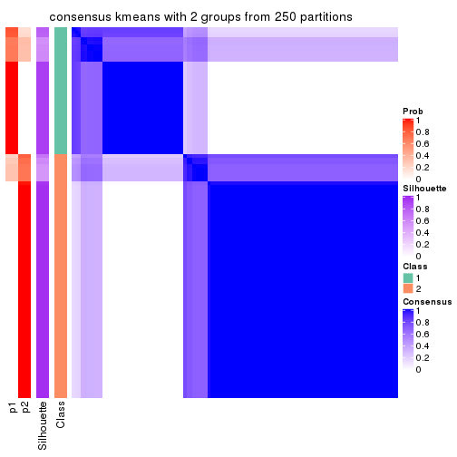
consensus_heatmap(res, k = 3)
consensus_heatmap(res, k = 4)
consensus_heatmap(res, k = 5)
consensus_heatmap(res, k = 6)

Heatmaps for the membership of samples in all partitions to see how consistent they are:
membership_heatmap(res, k = 2)
membership_heatmap(res, k = 3)
membership_heatmap(res, k = 4)
membership_heatmap(res, k = 5)
membership_heatmap(res, k = 6)
As soon as we have had the classes for columns, we can look for signatures which are significantly different between classes which can be candidate marks for certain classes. Following are the heatmaps for signatures.
Signature heatmaps where rows are scaled:
get_signatures(res, k = 2)
get_signatures(res, k = 3)
get_signatures(res, k = 4)
get_signatures(res, k = 5)
get_signatures(res, k = 6)
Signature heatmaps where rows are not scaled:
get_signatures(res, k = 2, scale_rows = FALSE)
get_signatures(res, k = 3, scale_rows = FALSE)
get_signatures(res, k = 4, scale_rows = FALSE)
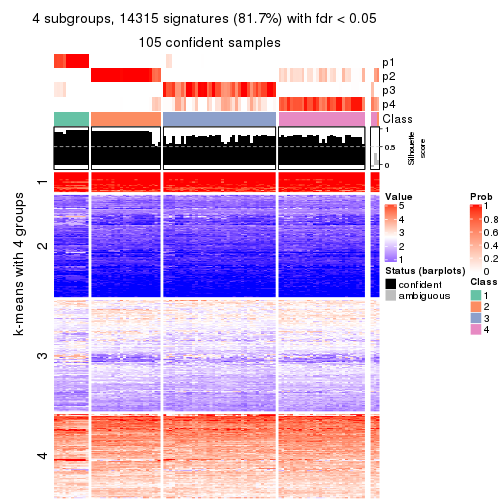
get_signatures(res, k = 5, scale_rows = FALSE)
get_signatures(res, k = 6, scale_rows = FALSE)
Compare the overlap of signatures from different k:
compare_signatures(res)
get_signature() returns a data frame invisibly. TO get the list of signatures, the function
call should be assigned to a variable explicitly. In following code, if plot argument is set
to FALSE, no heatmap is plotted while only the differential analysis is performed.
# code only for demonstration
tb = get_signature(res, k = ..., plot = FALSE)
An example of the output of tb is:
#> which_row fdr mean_1 mean_2 scaled_mean_1 scaled_mean_2 km
#> 1 38 0.042760348 8.373488 9.131774 -0.5533452 0.5164555 1
#> 2 40 0.018707592 7.106213 8.469186 -0.6173731 0.5762149 1
#> 3 55 0.019134737 10.221463 11.207825 -0.6159697 0.5749050 1
#> 4 59 0.006059896 5.921854 7.869574 -0.6899429 0.6439467 1
#> 5 60 0.018055526 8.928898 10.211722 -0.6204761 0.5791110 1
#> 6 98 0.009384629 15.714769 14.887706 0.6635654 -0.6193277 2
...
The columns in tb are:
which_row: row indices corresponding to the input matrix.fdr: FDR for the differential test. mean_x: The mean value in group x.scaled_mean_x: The mean value in group x after rows are scaled.km: Row groups if k-means clustering is applied to rows.UMAP plot which shows how samples are separated.
dimension_reduction(res, k = 2, method = "UMAP")
dimension_reduction(res, k = 3, method = "UMAP")
dimension_reduction(res, k = 4, method = "UMAP")
dimension_reduction(res, k = 5, method = "UMAP")
dimension_reduction(res, k = 6, method = "UMAP")
Following heatmap shows how subgroups are split when increasing k:
collect_classes(res)
If matrix rows can be associated to genes, consider to use GO_Enrichment(res,
...) to perform function enrichment for the signature genes.
The object with results only for a single top-value method and a single partition method can be extracted as:
res = res_list["ATC", "skmeans"]
# you can also extract it by
# res = res_list["ATC:skmeans"]
A summary of res and all the functions that can be applied to it:
res
#> A 'ConsensusPartition' object with k = 2, 3, 4, 5, 6.
#> On a matrix with 17532 rows and 108 columns.
#> Top rows (1000, 2000, 3000, 4000, 5000) are extracted by 'ATC' method.
#> Subgroups are detected by 'skmeans' method.
#> Performed in total 1250 partitions by row resampling.
#> Best k for subgroups seems to be 2.
#>
#> Following methods can be applied to this 'ConsensusPartition' object:
#> [1] "cola_report" "collect_classes" "collect_plots"
#> [4] "collect_stats" "colnames" "compare_signatures"
#> [7] "consensus_heatmap" "dimension_reduction" "functional_enrichment"
#> [10] "get_anno_col" "get_anno" "get_classes"
#> [13] "get_consensus" "get_matrix" "get_membership"
#> [16] "get_param" "get_signatures" "get_stats"
#> [19] "is_best_k" "is_stable_k" "membership_heatmap"
#> [22] "ncol" "nrow" "plot_ecdf"
#> [25] "rownames" "select_partition_number" "show"
#> [28] "suggest_best_k" "test_to_known_factors"
collect_plots() function collects all the plots made from res for all k (number of partitions)
into one single page to provide an easy and fast comparison between different k.
collect_plots(res)
The plots are:
k and the heatmap of
predicted classes for each k.k.k.k.All the plots in panels can be made by individual functions and they are plotted later in this section.
select_partition_number() produces several plots showing different
statistics for choosing “optimized” k. There are following statistics:
k;k, the area increased is defined as \(A_k - A_{k-1}\).The detailed explanations of these statistics can be found in the cola vignette.
Generally speaking, lower PAC score, higher mean silhouette score or higher
concordance corresponds to better partition. Rand index and Jaccard index
measure how similar the current partition is compared to partition with k-1.
If they are too similar, we won't accept k is better than k-1.
select_partition_number(res)
The numeric values for all these statistics can be obtained by get_stats().
get_stats(res)
#> k 1-PAC mean_silhouette concordance area_increased Rand Jaccard
#> 2 2 1.000 0.998 0.999 0.5044 0.496 0.496
#> 3 3 0.868 0.913 0.854 0.2427 0.883 0.764
#> 4 4 0.805 0.859 0.915 0.1735 0.871 0.662
#> 5 5 0.824 0.791 0.899 0.0599 0.933 0.755
#> 6 6 0.887 0.807 0.902 0.0431 0.924 0.684
suggest_best_k() suggests the best \(k\) based on these statistics. The rules are as follows:
NA.suggest_best_k(res)
#> [1] 2
Following shows the table of the partitions (You need to click the show/hide
code output link to see it). The membership matrix (columns with name p*)
is inferred by
clue::cl_consensus()
function with the SE method. Basically the value in the membership matrix
represents the probability to belong to a certain group. The finall class
label for an item is determined with the group with highest probability it
belongs to.
In get_classes() function, the entropy is calculated from the membership
matrix and the silhouette score is calculated from the consensus matrix.
cbind(get_classes(res, k = 2), get_membership(res, k = 2))
#> class entropy silhouette p1 p2
#> SRR1389909 2 0.000 1.000 0.000 1.000
#> SRR1454460 2 0.000 1.000 0.000 1.000
#> SRR1404623 2 0.000 1.000 0.000 1.000
#> SRR1092038 1 0.506 0.874 0.888 0.112
#> SRR1319793 2 0.000 1.000 0.000 1.000
#> SRR1396208 2 0.000 1.000 0.000 1.000
#> SRR1435797 1 0.000 0.998 1.000 0.000
#> SRR1078042 1 0.000 0.998 1.000 0.000
#> SRR1339699 1 0.000 0.998 1.000 0.000
#> SRR1446499 2 0.000 1.000 0.000 1.000
#> SRR1359428 2 0.000 1.000 0.000 1.000
#> SRR1071475 1 0.000 0.998 1.000 0.000
#> SRR1436781 2 0.000 1.000 0.000 1.000
#> SRR1101453 1 0.000 0.998 1.000 0.000
#> SRR1350891 2 0.000 1.000 0.000 1.000
#> SRR814293 2 0.000 1.000 0.000 1.000
#> SRR1471456 2 0.000 1.000 0.000 1.000
#> SRR1446874 1 0.000 0.998 1.000 0.000
#> SRR1362731 2 0.000 1.000 0.000 1.000
#> SRR1413705 2 0.000 1.000 0.000 1.000
#> SRR1434586 2 0.000 1.000 0.000 1.000
#> SRR1091164 2 0.000 1.000 0.000 1.000
#> SRR1340598 1 0.000 0.998 1.000 0.000
#> SRR1466469 1 0.000 0.998 1.000 0.000
#> SRR1099310 2 0.000 1.000 0.000 1.000
#> SRR814892 2 0.000 1.000 0.000 1.000
#> SRR1090698 2 0.000 1.000 0.000 1.000
#> SRR1089134 1 0.000 0.998 1.000 0.000
#> SRR1120276 1 0.000 0.998 1.000 0.000
#> SRR1430507 2 0.000 1.000 0.000 1.000
#> SRR1356078 1 0.000 0.998 1.000 0.000
#> SRR1447037 1 0.000 0.998 1.000 0.000
#> SRR1443544 1 0.000 0.998 1.000 0.000
#> SRR1081987 2 0.000 1.000 0.000 1.000
#> SRR1316513 2 0.000 1.000 0.000 1.000
#> SRR1478457 1 0.000 0.998 1.000 0.000
#> SRR1342849 1 0.000 0.998 1.000 0.000
#> SRR1073878 2 0.000 1.000 0.000 1.000
#> SRR1078735 1 0.000 0.998 1.000 0.000
#> SRR1093601 2 0.000 1.000 0.000 1.000
#> SRR816629 1 0.000 0.998 1.000 0.000
#> SRR1477754 2 0.000 1.000 0.000 1.000
#> SRR1454589 1 0.000 0.998 1.000 0.000
#> SRR1102780 2 0.000 1.000 0.000 1.000
#> SRR1347518 2 0.000 1.000 0.000 1.000
#> SRR1093747 1 0.000 0.998 1.000 0.000
#> SRR809209 1 0.000 0.998 1.000 0.000
#> SRR1082471 1 0.000 0.998 1.000 0.000
#> SRR1390349 1 0.000 0.998 1.000 0.000
#> SRR1410493 1 0.000 0.998 1.000 0.000
#> SRR1086656 2 0.000 1.000 0.000 1.000
#> SRR1469997 2 0.000 1.000 0.000 1.000
#> SRR1355512 2 0.000 1.000 0.000 1.000
#> SRR809897 1 0.000 0.998 1.000 0.000
#> SRR1436146 2 0.000 1.000 0.000 1.000
#> SRR1097148 1 0.000 0.998 1.000 0.000
#> SRR1429979 1 0.000 0.998 1.000 0.000
#> SRR1454607 1 0.000 0.998 1.000 0.000
#> SRR1420687 1 0.000 0.998 1.000 0.000
#> SRR1099669 1 0.000 0.998 1.000 0.000
#> SRR1360172 1 0.000 0.998 1.000 0.000
#> SRR1478131 2 0.000 1.000 0.000 1.000
#> SRR1453235 1 0.000 0.998 1.000 0.000
#> SRR1369107 1 0.000 0.998 1.000 0.000
#> SRR1096458 2 0.000 1.000 0.000 1.000
#> SRR1088856 1 0.000 0.998 1.000 0.000
#> SRR1432934 2 0.000 1.000 0.000 1.000
#> SRR821072 2 0.000 1.000 0.000 1.000
#> SRR1480896 1 0.000 0.998 1.000 0.000
#> SRR1403344 2 0.000 1.000 0.000 1.000
#> SRR1360850 1 0.000 0.998 1.000 0.000
#> SRR1451820 2 0.000 1.000 0.000 1.000
#> SRR1075360 1 0.000 0.998 1.000 0.000
#> SRR1413373 1 0.000 0.998 1.000 0.000
#> SRR1090928 2 0.000 1.000 0.000 1.000
#> SRR1097124 2 0.000 1.000 0.000 1.000
#> SRR1458745 1 0.000 0.998 1.000 0.000
#> SRR1078636 2 0.000 1.000 0.000 1.000
#> SRR1473754 2 0.000 1.000 0.000 1.000
#> SRR1085736 2 0.000 1.000 0.000 1.000
#> SRR1098807 1 0.000 0.998 1.000 0.000
#> SRR1341583 2 0.000 1.000 0.000 1.000
#> SRR1380869 2 0.000 1.000 0.000 1.000
#> SRR1430775 1 0.000 0.998 1.000 0.000
#> SRR1479573 1 0.000 0.998 1.000 0.000
#> SRR1082352 1 0.000 0.998 1.000 0.000
#> SRR1102005 1 0.000 0.998 1.000 0.000
#> SRR1408415 1 0.000 0.998 1.000 0.000
#> SRR1353537 1 0.000 0.998 1.000 0.000
#> SRR1458870 2 0.000 1.000 0.000 1.000
#> SRR1315495 2 0.000 1.000 0.000 1.000
#> SRR1481169 2 0.000 1.000 0.000 1.000
#> SRR1470273 1 0.000 0.998 1.000 0.000
#> SRR1312446 2 0.000 1.000 0.000 1.000
#> SRR1101859 2 0.000 1.000 0.000 1.000
#> SRR1384210 1 0.000 0.998 1.000 0.000
#> SRR1336244 2 0.000 1.000 0.000 1.000
#> SRR1374432 2 0.000 1.000 0.000 1.000
#> SRR1430023 1 0.000 0.998 1.000 0.000
#> SRR1487527 1 0.000 0.998 1.000 0.000
#> SRR1073389 1 0.000 0.998 1.000 0.000
#> SRR1433171 2 0.000 1.000 0.000 1.000
#> SRR1085565 1 0.000 0.998 1.000 0.000
#> SRR1355017 2 0.000 1.000 0.000 1.000
#> SRR1351641 2 0.000 1.000 0.000 1.000
#> SRR1398230 2 0.000 1.000 0.000 1.000
#> SRR1086212 2 0.000 1.000 0.000 1.000
#> SRR1431514 2 0.000 1.000 0.000 1.000
cbind(get_classes(res, k = 3), get_membership(res, k = 3))
#> class entropy silhouette p1 p2 p3
#> SRR1389909 2 0.5098 0.743 0.000 0.752 0.248
#> SRR1454460 2 0.5178 0.733 0.000 0.744 0.256
#> SRR1404623 2 0.0000 0.963 0.000 1.000 0.000
#> SRR1092038 3 0.5325 0.806 0.248 0.004 0.748
#> SRR1319793 2 0.0000 0.963 0.000 1.000 0.000
#> SRR1396208 2 0.5254 0.724 0.000 0.736 0.264
#> SRR1435797 3 0.5291 0.797 0.268 0.000 0.732
#> SRR1078042 3 0.0000 0.840 0.000 0.000 1.000
#> SRR1339699 3 0.0000 0.840 0.000 0.000 1.000
#> SRR1446499 2 0.0000 0.963 0.000 1.000 0.000
#> SRR1359428 2 0.0000 0.963 0.000 1.000 0.000
#> SRR1071475 1 0.0000 0.982 1.000 0.000 0.000
#> SRR1436781 2 0.0000 0.963 0.000 1.000 0.000
#> SRR1101453 3 0.5291 0.797 0.268 0.000 0.732
#> SRR1350891 2 0.0000 0.963 0.000 1.000 0.000
#> SRR814293 2 0.0000 0.963 0.000 1.000 0.000
#> SRR1471456 2 0.5254 0.724 0.000 0.736 0.264
#> SRR1446874 3 0.5254 0.799 0.264 0.000 0.736
#> SRR1362731 2 0.0000 0.963 0.000 1.000 0.000
#> SRR1413705 2 0.0000 0.963 0.000 1.000 0.000
#> SRR1434586 2 0.5254 0.724 0.000 0.736 0.264
#> SRR1091164 2 0.0000 0.963 0.000 1.000 0.000
#> SRR1340598 3 0.0000 0.840 0.000 0.000 1.000
#> SRR1466469 1 0.0000 0.982 1.000 0.000 0.000
#> SRR1099310 2 0.0000 0.963 0.000 1.000 0.000
#> SRR814892 2 0.0000 0.963 0.000 1.000 0.000
#> SRR1090698 2 0.5254 0.724 0.000 0.736 0.264
#> SRR1089134 1 0.0000 0.982 1.000 0.000 0.000
#> SRR1120276 3 0.5291 0.797 0.268 0.000 0.732
#> SRR1430507 2 0.0000 0.963 0.000 1.000 0.000
#> SRR1356078 3 0.0000 0.840 0.000 0.000 1.000
#> SRR1447037 1 0.5291 0.605 0.732 0.000 0.268
#> SRR1443544 1 0.0000 0.982 1.000 0.000 0.000
#> SRR1081987 2 0.0000 0.963 0.000 1.000 0.000
#> SRR1316513 2 0.0000 0.963 0.000 1.000 0.000
#> SRR1478457 3 0.0000 0.840 0.000 0.000 1.000
#> SRR1342849 3 0.5291 0.797 0.268 0.000 0.732
#> SRR1073878 2 0.0000 0.963 0.000 1.000 0.000
#> SRR1078735 1 0.0000 0.982 1.000 0.000 0.000
#> SRR1093601 2 0.0000 0.963 0.000 1.000 0.000
#> SRR816629 3 0.4235 0.826 0.176 0.000 0.824
#> SRR1477754 2 0.0000 0.963 0.000 1.000 0.000
#> SRR1454589 1 0.0237 0.978 0.996 0.000 0.004
#> SRR1102780 2 0.0000 0.963 0.000 1.000 0.000
#> SRR1347518 2 0.0000 0.963 0.000 1.000 0.000
#> SRR1093747 1 0.0000 0.982 1.000 0.000 0.000
#> SRR809209 3 0.0000 0.840 0.000 0.000 1.000
#> SRR1082471 3 0.1031 0.839 0.024 0.000 0.976
#> SRR1390349 3 0.0000 0.840 0.000 0.000 1.000
#> SRR1410493 3 0.0000 0.840 0.000 0.000 1.000
#> SRR1086656 2 0.0000 0.963 0.000 1.000 0.000
#> SRR1469997 2 0.0000 0.963 0.000 1.000 0.000
#> SRR1355512 2 0.0000 0.963 0.000 1.000 0.000
#> SRR809897 3 0.0000 0.840 0.000 0.000 1.000
#> SRR1436146 2 0.0000 0.963 0.000 1.000 0.000
#> SRR1097148 1 0.0000 0.982 1.000 0.000 0.000
#> SRR1429979 3 0.5291 0.797 0.268 0.000 0.732
#> SRR1454607 1 0.0000 0.982 1.000 0.000 0.000
#> SRR1420687 1 0.0000 0.982 1.000 0.000 0.000
#> SRR1099669 1 0.0000 0.982 1.000 0.000 0.000
#> SRR1360172 3 0.5098 0.807 0.248 0.000 0.752
#> SRR1478131 2 0.0000 0.963 0.000 1.000 0.000
#> SRR1453235 1 0.0000 0.982 1.000 0.000 0.000
#> SRR1369107 3 0.5291 0.797 0.268 0.000 0.732
#> SRR1096458 2 0.2711 0.897 0.000 0.912 0.088
#> SRR1088856 3 0.5291 0.797 0.268 0.000 0.732
#> SRR1432934 2 0.0000 0.963 0.000 1.000 0.000
#> SRR821072 2 0.0000 0.963 0.000 1.000 0.000
#> SRR1480896 1 0.0000 0.982 1.000 0.000 0.000
#> SRR1403344 2 0.5254 0.724 0.000 0.736 0.264
#> SRR1360850 1 0.0000 0.982 1.000 0.000 0.000
#> SRR1451820 2 0.0000 0.963 0.000 1.000 0.000
#> SRR1075360 3 0.4235 0.826 0.176 0.000 0.824
#> SRR1413373 1 0.0000 0.982 1.000 0.000 0.000
#> SRR1090928 2 0.0000 0.963 0.000 1.000 0.000
#> SRR1097124 2 0.0000 0.963 0.000 1.000 0.000
#> SRR1458745 1 0.0000 0.982 1.000 0.000 0.000
#> SRR1078636 2 0.0000 0.963 0.000 1.000 0.000
#> SRR1473754 2 0.0000 0.963 0.000 1.000 0.000
#> SRR1085736 2 0.0000 0.963 0.000 1.000 0.000
#> SRR1098807 1 0.0000 0.982 1.000 0.000 0.000
#> SRR1341583 2 0.0000 0.963 0.000 1.000 0.000
#> SRR1380869 2 0.0000 0.963 0.000 1.000 0.000
#> SRR1430775 1 0.0000 0.982 1.000 0.000 0.000
#> SRR1479573 3 0.0000 0.840 0.000 0.000 1.000
#> SRR1082352 1 0.0000 0.982 1.000 0.000 0.000
#> SRR1102005 3 0.0000 0.840 0.000 0.000 1.000
#> SRR1408415 1 0.0000 0.982 1.000 0.000 0.000
#> SRR1353537 1 0.0000 0.982 1.000 0.000 0.000
#> SRR1458870 2 0.0000 0.963 0.000 1.000 0.000
#> SRR1315495 2 0.0000 0.963 0.000 1.000 0.000
#> SRR1481169 2 0.0000 0.963 0.000 1.000 0.000
#> SRR1470273 1 0.0000 0.982 1.000 0.000 0.000
#> SRR1312446 2 0.0000 0.963 0.000 1.000 0.000
#> SRR1101859 2 0.0000 0.963 0.000 1.000 0.000
#> SRR1384210 1 0.0000 0.982 1.000 0.000 0.000
#> SRR1336244 2 0.0000 0.963 0.000 1.000 0.000
#> SRR1374432 2 0.4062 0.830 0.000 0.836 0.164
#> SRR1430023 3 0.5291 0.797 0.268 0.000 0.732
#> SRR1487527 1 0.0000 0.982 1.000 0.000 0.000
#> SRR1073389 1 0.2796 0.868 0.908 0.000 0.092
#> SRR1433171 2 0.0000 0.963 0.000 1.000 0.000
#> SRR1085565 1 0.0000 0.982 1.000 0.000 0.000
#> SRR1355017 2 0.0000 0.963 0.000 1.000 0.000
#> SRR1351641 2 0.0000 0.963 0.000 1.000 0.000
#> SRR1398230 2 0.0000 0.963 0.000 1.000 0.000
#> SRR1086212 2 0.0000 0.963 0.000 1.000 0.000
#> SRR1431514 2 0.0000 0.963 0.000 1.000 0.000
cbind(get_classes(res, k = 4), get_membership(res, k = 4))
#> class entropy silhouette p1 p2 p3 p4
#> SRR1389909 4 0.1209 0.7659 0.000 0.032 0.004 0.964
#> SRR1454460 2 0.4516 0.6522 0.000 0.736 0.012 0.252
#> SRR1404623 2 0.0000 0.9087 0.000 1.000 0.000 0.000
#> SRR1092038 3 0.2179 0.9100 0.064 0.012 0.924 0.000
#> SRR1319793 2 0.4008 0.6724 0.000 0.756 0.000 0.244
#> SRR1396208 4 0.1743 0.7736 0.000 0.056 0.004 0.940
#> SRR1435797 3 0.2281 0.9046 0.096 0.000 0.904 0.000
#> SRR1078042 3 0.0000 0.9130 0.000 0.000 1.000 0.000
#> SRR1339699 3 0.0000 0.9130 0.000 0.000 1.000 0.000
#> SRR1446499 2 0.3975 0.6782 0.000 0.760 0.000 0.240
#> SRR1359428 2 0.0000 0.9087 0.000 1.000 0.000 0.000
#> SRR1071475 1 0.0000 0.9920 1.000 0.000 0.000 0.000
#> SRR1436781 2 0.0000 0.9087 0.000 1.000 0.000 0.000
#> SRR1101453 3 0.1940 0.9104 0.076 0.000 0.924 0.000
#> SRR1350891 2 0.0000 0.9087 0.000 1.000 0.000 0.000
#> SRR814293 2 0.0000 0.9087 0.000 1.000 0.000 0.000
#> SRR1471456 4 0.2973 0.7671 0.000 0.096 0.020 0.884
#> SRR1446874 3 0.2704 0.8853 0.124 0.000 0.876 0.000
#> SRR1362731 2 0.0000 0.9087 0.000 1.000 0.000 0.000
#> SRR1413705 2 0.0000 0.9087 0.000 1.000 0.000 0.000
#> SRR1434586 2 0.5744 0.5705 0.000 0.676 0.068 0.256
#> SRR1091164 2 0.0000 0.9087 0.000 1.000 0.000 0.000
#> SRR1340598 3 0.1716 0.9054 0.000 0.000 0.936 0.064
#> SRR1466469 1 0.0000 0.9920 1.000 0.000 0.000 0.000
#> SRR1099310 4 0.4250 0.7728 0.000 0.276 0.000 0.724
#> SRR814892 4 0.4996 0.1544 0.000 0.484 0.000 0.516
#> SRR1090698 2 0.6607 0.4378 0.000 0.592 0.112 0.296
#> SRR1089134 1 0.0000 0.9920 1.000 0.000 0.000 0.000
#> SRR1120276 3 0.2760 0.8816 0.128 0.000 0.872 0.000
#> SRR1430507 2 0.4746 0.0939 0.000 0.632 0.000 0.368
#> SRR1356078 3 0.2530 0.8899 0.000 0.000 0.888 0.112
#> SRR1447037 4 0.4214 0.5899 0.204 0.000 0.016 0.780
#> SRR1443544 1 0.0000 0.9920 1.000 0.000 0.000 0.000
#> SRR1081987 4 0.2469 0.7983 0.000 0.108 0.000 0.892
#> SRR1316513 4 0.2469 0.7983 0.000 0.108 0.000 0.892
#> SRR1478457 3 0.2081 0.9006 0.000 0.000 0.916 0.084
#> SRR1342849 3 0.2281 0.9046 0.096 0.000 0.904 0.000
#> SRR1073878 2 0.0000 0.9087 0.000 1.000 0.000 0.000
#> SRR1078735 1 0.0000 0.9920 1.000 0.000 0.000 0.000
#> SRR1093601 2 0.0000 0.9087 0.000 1.000 0.000 0.000
#> SRR816629 3 0.0188 0.9137 0.004 0.000 0.996 0.000
#> SRR1477754 2 0.0188 0.9059 0.000 0.996 0.000 0.004
#> SRR1454589 1 0.0188 0.9885 0.996 0.000 0.004 0.000
#> SRR1102780 4 0.4304 0.7684 0.000 0.284 0.000 0.716
#> SRR1347518 4 0.2814 0.7925 0.000 0.132 0.000 0.868
#> SRR1093747 1 0.0000 0.9920 1.000 0.000 0.000 0.000
#> SRR809209 3 0.2530 0.8894 0.000 0.000 0.888 0.112
#> SRR1082471 3 0.2593 0.8933 0.004 0.000 0.892 0.104
#> SRR1390349 3 0.2589 0.8871 0.000 0.000 0.884 0.116
#> SRR1410493 3 0.2831 0.8838 0.004 0.000 0.876 0.120
#> SRR1086656 2 0.3688 0.7160 0.000 0.792 0.000 0.208
#> SRR1469997 2 0.0000 0.9087 0.000 1.000 0.000 0.000
#> SRR1355512 2 0.0000 0.9087 0.000 1.000 0.000 0.000
#> SRR809897 3 0.2589 0.8871 0.000 0.000 0.884 0.116
#> SRR1436146 2 0.0000 0.9087 0.000 1.000 0.000 0.000
#> SRR1097148 1 0.0000 0.9920 1.000 0.000 0.000 0.000
#> SRR1429979 3 0.2216 0.9064 0.092 0.000 0.908 0.000
#> SRR1454607 1 0.0000 0.9920 1.000 0.000 0.000 0.000
#> SRR1420687 1 0.0000 0.9920 1.000 0.000 0.000 0.000
#> SRR1099669 1 0.0000 0.9920 1.000 0.000 0.000 0.000
#> SRR1360172 3 0.2216 0.9064 0.092 0.000 0.908 0.000
#> SRR1478131 4 0.4356 0.7618 0.000 0.292 0.000 0.708
#> SRR1453235 1 0.0000 0.9920 1.000 0.000 0.000 0.000
#> SRR1369107 3 0.2281 0.9046 0.096 0.000 0.904 0.000
#> SRR1096458 4 0.2281 0.7971 0.000 0.096 0.000 0.904
#> SRR1088856 3 0.2216 0.9064 0.092 0.000 0.908 0.000
#> SRR1432934 2 0.0000 0.9087 0.000 1.000 0.000 0.000
#> SRR821072 4 0.4304 0.7684 0.000 0.284 0.000 0.716
#> SRR1480896 1 0.0000 0.9920 1.000 0.000 0.000 0.000
#> SRR1403344 4 0.2596 0.7054 0.000 0.024 0.068 0.908
#> SRR1360850 1 0.0000 0.9920 1.000 0.000 0.000 0.000
#> SRR1451820 2 0.0000 0.9087 0.000 1.000 0.000 0.000
#> SRR1075360 3 0.0188 0.9137 0.004 0.000 0.996 0.000
#> SRR1413373 1 0.0000 0.9920 1.000 0.000 0.000 0.000
#> SRR1090928 2 0.0000 0.9087 0.000 1.000 0.000 0.000
#> SRR1097124 2 0.0188 0.9059 0.000 0.996 0.000 0.004
#> SRR1458745 1 0.0000 0.9920 1.000 0.000 0.000 0.000
#> SRR1078636 2 0.2589 0.8128 0.000 0.884 0.000 0.116
#> SRR1473754 4 0.4382 0.7581 0.000 0.296 0.000 0.704
#> SRR1085736 2 0.0188 0.9059 0.000 0.996 0.000 0.004
#> SRR1098807 1 0.0000 0.9920 1.000 0.000 0.000 0.000
#> SRR1341583 2 0.0336 0.9038 0.000 0.992 0.000 0.008
#> SRR1380869 4 0.2589 0.7992 0.000 0.116 0.000 0.884
#> SRR1430775 1 0.1118 0.9609 0.964 0.000 0.036 0.000
#> SRR1479573 3 0.2011 0.9014 0.000 0.000 0.920 0.080
#> SRR1082352 1 0.0000 0.9920 1.000 0.000 0.000 0.000
#> SRR1102005 3 0.0707 0.9121 0.000 0.000 0.980 0.020
#> SRR1408415 1 0.0000 0.9920 1.000 0.000 0.000 0.000
#> SRR1353537 1 0.0000 0.9920 1.000 0.000 0.000 0.000
#> SRR1458870 2 0.3907 0.6887 0.000 0.768 0.000 0.232
#> SRR1315495 2 0.0000 0.9087 0.000 1.000 0.000 0.000
#> SRR1481169 4 0.4382 0.7581 0.000 0.296 0.000 0.704
#> SRR1470273 1 0.0000 0.9920 1.000 0.000 0.000 0.000
#> SRR1312446 2 0.0000 0.9087 0.000 1.000 0.000 0.000
#> SRR1101859 2 0.2868 0.7973 0.000 0.864 0.000 0.136
#> SRR1384210 1 0.0000 0.9920 1.000 0.000 0.000 0.000
#> SRR1336244 2 0.0000 0.9087 0.000 1.000 0.000 0.000
#> SRR1374432 4 0.5097 0.1833 0.000 0.428 0.004 0.568
#> SRR1430023 3 0.2589 0.8912 0.116 0.000 0.884 0.000
#> SRR1487527 1 0.0000 0.9920 1.000 0.000 0.000 0.000
#> SRR1073389 1 0.3243 0.8625 0.876 0.000 0.088 0.036
#> SRR1433171 2 0.0336 0.9038 0.000 0.992 0.000 0.008
#> SRR1085565 1 0.1022 0.9649 0.968 0.000 0.032 0.000
#> SRR1355017 2 0.0000 0.9087 0.000 1.000 0.000 0.000
#> SRR1351641 2 0.0000 0.9087 0.000 1.000 0.000 0.000
#> SRR1398230 2 0.0000 0.9087 0.000 1.000 0.000 0.000
#> SRR1086212 4 0.4250 0.7728 0.000 0.276 0.000 0.724
#> SRR1431514 4 0.4624 0.7029 0.000 0.340 0.000 0.660
cbind(get_classes(res, k = 5), get_membership(res, k = 5))
#> class entropy silhouette p1 p2 p3 p4 p5
#> SRR1389909 4 0.2127 0.6497 0.000 0.000 0.000 0.892 0.108
#> SRR1454460 2 0.5857 0.5013 0.000 0.620 0.020 0.272 0.088
#> SRR1404623 2 0.0000 0.9072 0.000 1.000 0.000 0.000 0.000
#> SRR1092038 3 0.0324 0.8723 0.004 0.000 0.992 0.000 0.004
#> SRR1319793 2 0.4983 0.5624 0.000 0.664 0.000 0.272 0.064
#> SRR1396208 4 0.4558 0.3267 0.000 0.024 0.000 0.652 0.324
#> SRR1435797 3 0.0290 0.8728 0.008 0.000 0.992 0.000 0.000
#> SRR1078042 3 0.0000 0.8718 0.000 0.000 1.000 0.000 0.000
#> SRR1339699 3 0.0000 0.8718 0.000 0.000 1.000 0.000 0.000
#> SRR1446499 2 0.5062 0.5509 0.000 0.656 0.000 0.276 0.068
#> SRR1359428 2 0.0000 0.9072 0.000 1.000 0.000 0.000 0.000
#> SRR1071475 1 0.0000 0.9728 1.000 0.000 0.000 0.000 0.000
#> SRR1436781 2 0.0000 0.9072 0.000 1.000 0.000 0.000 0.000
#> SRR1101453 3 0.0162 0.8735 0.004 0.000 0.996 0.000 0.000
#> SRR1350891 2 0.0000 0.9072 0.000 1.000 0.000 0.000 0.000
#> SRR814293 2 0.0000 0.9072 0.000 1.000 0.000 0.000 0.000
#> SRR1471456 4 0.4384 0.4925 0.000 0.044 0.000 0.728 0.228
#> SRR1446874 3 0.0609 0.8635 0.020 0.000 0.980 0.000 0.000
#> SRR1362731 2 0.0000 0.9072 0.000 1.000 0.000 0.000 0.000
#> SRR1413705 2 0.0000 0.9072 0.000 1.000 0.000 0.000 0.000
#> SRR1434586 5 0.5301 0.5148 0.000 0.148 0.000 0.176 0.676
#> SRR1091164 2 0.0000 0.9072 0.000 1.000 0.000 0.000 0.000
#> SRR1340598 3 0.3835 0.6141 0.000 0.000 0.732 0.008 0.260
#> SRR1466469 1 0.0000 0.9728 1.000 0.000 0.000 0.000 0.000
#> SRR1099310 4 0.2852 0.7591 0.000 0.172 0.000 0.828 0.000
#> SRR814892 4 0.5401 0.0434 0.000 0.452 0.000 0.492 0.056
#> SRR1090698 5 0.2806 0.7023 0.000 0.004 0.000 0.152 0.844
#> SRR1089134 1 0.0000 0.9728 1.000 0.000 0.000 0.000 0.000
#> SRR1120276 3 0.0404 0.8701 0.012 0.000 0.988 0.000 0.000
#> SRR1430507 4 0.6301 0.4500 0.000 0.308 0.000 0.512 0.180
#> SRR1356078 5 0.1478 0.7972 0.000 0.000 0.064 0.000 0.936
#> SRR1447037 5 0.4916 0.5334 0.044 0.000 0.008 0.268 0.680
#> SRR1443544 1 0.0000 0.9728 1.000 0.000 0.000 0.000 0.000
#> SRR1081987 4 0.1571 0.6835 0.000 0.004 0.000 0.936 0.060
#> SRR1316513 4 0.1571 0.6835 0.000 0.004 0.000 0.936 0.060
#> SRR1478457 3 0.4452 0.1189 0.000 0.000 0.500 0.004 0.496
#> SRR1342849 3 0.0290 0.8728 0.008 0.000 0.992 0.000 0.000
#> SRR1073878 2 0.0000 0.9072 0.000 1.000 0.000 0.000 0.000
#> SRR1078735 1 0.0000 0.9728 1.000 0.000 0.000 0.000 0.000
#> SRR1093601 2 0.0000 0.9072 0.000 1.000 0.000 0.000 0.000
#> SRR816629 3 0.0000 0.8718 0.000 0.000 1.000 0.000 0.000
#> SRR1477754 2 0.0162 0.9048 0.000 0.996 0.000 0.000 0.004
#> SRR1454589 1 0.0510 0.9588 0.984 0.000 0.016 0.000 0.000
#> SRR1102780 4 0.2929 0.7591 0.000 0.180 0.000 0.820 0.000
#> SRR1347518 4 0.2992 0.6725 0.000 0.068 0.000 0.868 0.064
#> SRR1093747 1 0.0000 0.9728 1.000 0.000 0.000 0.000 0.000
#> SRR809209 5 0.2304 0.7759 0.000 0.000 0.100 0.008 0.892
#> SRR1082471 5 0.1478 0.7972 0.000 0.000 0.064 0.000 0.936
#> SRR1390349 5 0.1768 0.7954 0.000 0.000 0.072 0.004 0.924
#> SRR1410493 5 0.1410 0.7979 0.000 0.000 0.060 0.000 0.940
#> SRR1086656 2 0.4865 0.5895 0.000 0.684 0.000 0.252 0.064
#> SRR1469997 2 0.0000 0.9072 0.000 1.000 0.000 0.000 0.000
#> SRR1355512 2 0.0000 0.9072 0.000 1.000 0.000 0.000 0.000
#> SRR809897 5 0.2193 0.7831 0.000 0.000 0.092 0.008 0.900
#> SRR1436146 2 0.0000 0.9072 0.000 1.000 0.000 0.000 0.000
#> SRR1097148 1 0.0000 0.9728 1.000 0.000 0.000 0.000 0.000
#> SRR1429979 3 0.0162 0.8735 0.004 0.000 0.996 0.000 0.000
#> SRR1454607 1 0.0000 0.9728 1.000 0.000 0.000 0.000 0.000
#> SRR1420687 1 0.0000 0.9728 1.000 0.000 0.000 0.000 0.000
#> SRR1099669 1 0.0000 0.9728 1.000 0.000 0.000 0.000 0.000
#> SRR1360172 3 0.0162 0.8735 0.004 0.000 0.996 0.000 0.000
#> SRR1478131 4 0.2966 0.7572 0.000 0.184 0.000 0.816 0.000
#> SRR1453235 1 0.1671 0.9024 0.924 0.000 0.000 0.000 0.076
#> SRR1369107 3 0.0290 0.8728 0.008 0.000 0.992 0.000 0.000
#> SRR1096458 4 0.0703 0.7142 0.000 0.024 0.000 0.976 0.000
#> SRR1088856 3 0.0162 0.8735 0.004 0.000 0.996 0.000 0.000
#> SRR1432934 2 0.0000 0.9072 0.000 1.000 0.000 0.000 0.000
#> SRR821072 4 0.2929 0.7591 0.000 0.180 0.000 0.820 0.000
#> SRR1480896 1 0.0162 0.9689 0.996 0.000 0.004 0.000 0.000
#> SRR1403344 5 0.3906 0.5484 0.000 0.004 0.000 0.292 0.704
#> SRR1360850 1 0.0000 0.9728 1.000 0.000 0.000 0.000 0.000
#> SRR1451820 2 0.0000 0.9072 0.000 1.000 0.000 0.000 0.000
#> SRR1075360 3 0.4088 0.4378 0.000 0.000 0.632 0.000 0.368
#> SRR1413373 1 0.0000 0.9728 1.000 0.000 0.000 0.000 0.000
#> SRR1090928 2 0.0000 0.9072 0.000 1.000 0.000 0.000 0.000
#> SRR1097124 2 0.0162 0.9048 0.000 0.996 0.000 0.000 0.004
#> SRR1458745 1 0.0000 0.9728 1.000 0.000 0.000 0.000 0.000
#> SRR1078636 2 0.2969 0.7813 0.000 0.852 0.000 0.128 0.020
#> SRR1473754 4 0.2966 0.7572 0.000 0.184 0.000 0.816 0.000
#> SRR1085736 2 0.1197 0.8686 0.000 0.952 0.000 0.000 0.048
#> SRR1098807 1 0.0000 0.9728 1.000 0.000 0.000 0.000 0.000
#> SRR1341583 2 0.0404 0.9004 0.000 0.988 0.000 0.012 0.000
#> SRR1380869 4 0.1043 0.7229 0.000 0.040 0.000 0.960 0.000
#> SRR1430775 1 0.3661 0.6304 0.724 0.000 0.276 0.000 0.000
#> SRR1479573 3 0.4448 0.1398 0.000 0.000 0.516 0.004 0.480
#> SRR1082352 1 0.0000 0.9728 1.000 0.000 0.000 0.000 0.000
#> SRR1102005 3 0.3949 0.5130 0.000 0.000 0.668 0.000 0.332
#> SRR1408415 1 0.0000 0.9728 1.000 0.000 0.000 0.000 0.000
#> SRR1353537 1 0.0000 0.9728 1.000 0.000 0.000 0.000 0.000
#> SRR1458870 2 0.4967 0.5537 0.000 0.660 0.000 0.280 0.060
#> SRR1315495 2 0.0000 0.9072 0.000 1.000 0.000 0.000 0.000
#> SRR1481169 4 0.2966 0.7572 0.000 0.184 0.000 0.816 0.000
#> SRR1470273 1 0.0000 0.9728 1.000 0.000 0.000 0.000 0.000
#> SRR1312446 2 0.0000 0.9072 0.000 1.000 0.000 0.000 0.000
#> SRR1101859 2 0.3141 0.7645 0.000 0.832 0.000 0.152 0.016
#> SRR1384210 1 0.0000 0.9728 1.000 0.000 0.000 0.000 0.000
#> SRR1336244 2 0.0290 0.9029 0.000 0.992 0.000 0.008 0.000
#> SRR1374432 2 0.6395 -0.0130 0.000 0.424 0.000 0.408 0.168
#> SRR1430023 3 0.0404 0.8701 0.012 0.000 0.988 0.000 0.000
#> SRR1487527 1 0.0000 0.9728 1.000 0.000 0.000 0.000 0.000
#> SRR1073389 5 0.4208 0.5858 0.248 0.000 0.004 0.020 0.728
#> SRR1433171 2 0.0404 0.9005 0.000 0.988 0.000 0.012 0.000
#> SRR1085565 1 0.3210 0.7310 0.788 0.000 0.212 0.000 0.000
#> SRR1355017 2 0.0000 0.9072 0.000 1.000 0.000 0.000 0.000
#> SRR1351641 2 0.0000 0.9072 0.000 1.000 0.000 0.000 0.000
#> SRR1398230 2 0.0000 0.9072 0.000 1.000 0.000 0.000 0.000
#> SRR1086212 4 0.2929 0.7591 0.000 0.180 0.000 0.820 0.000
#> SRR1431514 4 0.3586 0.6757 0.000 0.264 0.000 0.736 0.000
cbind(get_classes(res, k = 6), get_membership(res, k = 6))
#> class entropy silhouette p1 p2 p3 p4 p5 p6
#> SRR1389909 6 0.3175 0.573 0.000 0.000 0.000 0.256 0.000 0.744
#> SRR1454460 6 0.1901 0.641 0.000 0.076 0.000 0.004 0.008 0.912
#> SRR1404623 2 0.0000 0.969 0.000 1.000 0.000 0.000 0.000 0.000
#> SRR1092038 3 0.0291 0.907 0.000 0.000 0.992 0.004 0.000 0.004
#> SRR1319793 6 0.3555 0.617 0.000 0.280 0.000 0.008 0.000 0.712
#> SRR1396208 6 0.1838 0.620 0.000 0.012 0.000 0.040 0.020 0.928
#> SRR1435797 3 0.0146 0.909 0.000 0.000 0.996 0.000 0.000 0.004
#> SRR1078042 3 0.0865 0.887 0.000 0.000 0.964 0.000 0.000 0.036
#> SRR1339699 3 0.0922 0.895 0.000 0.000 0.968 0.004 0.004 0.024
#> SRR1446499 6 0.3634 0.609 0.000 0.296 0.000 0.008 0.000 0.696
#> SRR1359428 2 0.0000 0.969 0.000 1.000 0.000 0.000 0.000 0.000
#> SRR1071475 1 0.0000 0.956 1.000 0.000 0.000 0.000 0.000 0.000
#> SRR1436781 2 0.0000 0.969 0.000 1.000 0.000 0.000 0.000 0.000
#> SRR1101453 3 0.0000 0.909 0.000 0.000 1.000 0.000 0.000 0.000
#> SRR1350891 2 0.0000 0.969 0.000 1.000 0.000 0.000 0.000 0.000
#> SRR814293 2 0.1080 0.943 0.000 0.960 0.000 0.004 0.004 0.032
#> SRR1471456 6 0.1844 0.625 0.000 0.024 0.004 0.028 0.012 0.932
#> SRR1446874 3 0.1138 0.884 0.024 0.000 0.960 0.004 0.000 0.012
#> SRR1362731 2 0.0000 0.969 0.000 1.000 0.000 0.000 0.000 0.000
#> SRR1413705 2 0.0000 0.969 0.000 1.000 0.000 0.000 0.000 0.000
#> SRR1434586 6 0.4351 0.448 0.000 0.044 0.000 0.004 0.276 0.676
#> SRR1091164 2 0.0000 0.969 0.000 1.000 0.000 0.000 0.000 0.000
#> SRR1340598 6 0.6173 -0.316 0.000 0.000 0.392 0.012 0.196 0.400
#> SRR1466469 1 0.0000 0.956 1.000 0.000 0.000 0.000 0.000 0.000
#> SRR1099310 4 0.0632 0.961 0.000 0.024 0.000 0.976 0.000 0.000
#> SRR814892 6 0.5080 0.590 0.000 0.288 0.000 0.112 0.000 0.600
#> SRR1090698 6 0.4488 -0.134 0.000 0.016 0.000 0.008 0.468 0.508
#> SRR1089134 1 0.0000 0.956 1.000 0.000 0.000 0.000 0.000 0.000
#> SRR1120276 3 0.0000 0.909 0.000 0.000 1.000 0.000 0.000 0.000
#> SRR1430507 4 0.4911 0.612 0.000 0.096 0.000 0.688 0.196 0.020
#> SRR1356078 5 0.0146 0.744 0.000 0.000 0.004 0.000 0.996 0.000
#> SRR1447037 5 0.6169 0.523 0.040 0.000 0.000 0.200 0.552 0.208
#> SRR1443544 1 0.0000 0.956 1.000 0.000 0.000 0.000 0.000 0.000
#> SRR1081987 6 0.3737 0.409 0.000 0.000 0.000 0.392 0.000 0.608
#> SRR1316513 6 0.3782 0.372 0.000 0.000 0.000 0.412 0.000 0.588
#> SRR1478457 5 0.6201 0.478 0.000 0.000 0.268 0.012 0.464 0.256
#> SRR1342849 3 0.0146 0.909 0.000 0.000 0.996 0.000 0.000 0.004
#> SRR1073878 2 0.0000 0.969 0.000 1.000 0.000 0.000 0.000 0.000
#> SRR1078735 1 0.0000 0.956 1.000 0.000 0.000 0.000 0.000 0.000
#> SRR1093601 2 0.0000 0.969 0.000 1.000 0.000 0.000 0.000 0.000
#> SRR816629 3 0.0508 0.903 0.000 0.000 0.984 0.000 0.012 0.004
#> SRR1477754 2 0.1826 0.906 0.000 0.924 0.000 0.004 0.052 0.020
#> SRR1454589 1 0.0982 0.933 0.968 0.000 0.004 0.004 0.004 0.020
#> SRR1102780 4 0.0632 0.961 0.000 0.024 0.000 0.976 0.000 0.000
#> SRR1347518 6 0.4061 0.595 0.000 0.044 0.000 0.248 0.000 0.708
#> SRR1093747 1 0.0000 0.956 1.000 0.000 0.000 0.000 0.000 0.000
#> SRR809209 5 0.3992 0.700 0.000 0.000 0.016 0.012 0.708 0.264
#> SRR1082471 5 0.0291 0.744 0.000 0.000 0.004 0.000 0.992 0.004
#> SRR1390349 5 0.3507 0.711 0.000 0.000 0.004 0.012 0.752 0.232
#> SRR1410493 5 0.0146 0.744 0.000 0.000 0.004 0.000 0.996 0.000
#> SRR1086656 6 0.3499 0.593 0.000 0.320 0.000 0.000 0.000 0.680
#> SRR1469997 2 0.0000 0.969 0.000 1.000 0.000 0.000 0.000 0.000
#> SRR1355512 2 0.0547 0.956 0.000 0.980 0.000 0.000 0.000 0.020
#> SRR809897 5 0.4663 0.691 0.000 0.000 0.064 0.012 0.680 0.244
#> SRR1436146 2 0.0000 0.969 0.000 1.000 0.000 0.000 0.000 0.000
#> SRR1097148 1 0.0000 0.956 1.000 0.000 0.000 0.000 0.000 0.000
#> SRR1429979 3 0.0000 0.909 0.000 0.000 1.000 0.000 0.000 0.000
#> SRR1454607 1 0.0000 0.956 1.000 0.000 0.000 0.000 0.000 0.000
#> SRR1420687 1 0.0000 0.956 1.000 0.000 0.000 0.000 0.000 0.000
#> SRR1099669 1 0.0146 0.954 0.996 0.000 0.000 0.000 0.004 0.000
#> SRR1360172 3 0.0000 0.909 0.000 0.000 1.000 0.000 0.000 0.000
#> SRR1478131 4 0.0632 0.961 0.000 0.024 0.000 0.976 0.000 0.000
#> SRR1453235 1 0.3652 0.548 0.672 0.000 0.000 0.000 0.324 0.004
#> SRR1369107 3 0.0000 0.909 0.000 0.000 1.000 0.000 0.000 0.000
#> SRR1096458 4 0.0603 0.938 0.000 0.004 0.000 0.980 0.000 0.016
#> SRR1088856 3 0.0000 0.909 0.000 0.000 1.000 0.000 0.000 0.000
#> SRR1432934 2 0.0000 0.969 0.000 1.000 0.000 0.000 0.000 0.000
#> SRR821072 4 0.0632 0.961 0.000 0.024 0.000 0.976 0.000 0.000
#> SRR1480896 1 0.1082 0.922 0.956 0.000 0.000 0.000 0.040 0.004
#> SRR1403344 6 0.1644 0.602 0.000 0.000 0.000 0.028 0.040 0.932
#> SRR1360850 1 0.0000 0.956 1.000 0.000 0.000 0.000 0.000 0.000
#> SRR1451820 2 0.0000 0.969 0.000 1.000 0.000 0.000 0.000 0.000
#> SRR1075360 5 0.4045 0.216 0.000 0.000 0.428 0.000 0.564 0.008
#> SRR1413373 1 0.0363 0.950 0.988 0.000 0.000 0.000 0.000 0.012
#> SRR1090928 2 0.0000 0.969 0.000 1.000 0.000 0.000 0.000 0.000
#> SRR1097124 2 0.1194 0.940 0.000 0.956 0.000 0.004 0.008 0.032
#> SRR1458745 1 0.0363 0.950 0.988 0.000 0.000 0.000 0.000 0.012
#> SRR1078636 2 0.2632 0.771 0.000 0.832 0.000 0.004 0.000 0.164
#> SRR1473754 4 0.0632 0.961 0.000 0.024 0.000 0.976 0.000 0.000
#> SRR1085736 2 0.3086 0.781 0.000 0.820 0.000 0.004 0.156 0.020
#> SRR1098807 1 0.0000 0.956 1.000 0.000 0.000 0.000 0.000 0.000
#> SRR1341583 2 0.0363 0.962 0.000 0.988 0.000 0.000 0.000 0.012
#> SRR1380869 4 0.0622 0.943 0.000 0.008 0.000 0.980 0.000 0.012
#> SRR1430775 1 0.4019 0.501 0.652 0.000 0.332 0.000 0.004 0.012
#> SRR1479573 3 0.6290 -0.296 0.000 0.000 0.392 0.012 0.364 0.232
#> SRR1082352 1 0.0000 0.956 1.000 0.000 0.000 0.000 0.000 0.000
#> SRR1102005 3 0.5196 0.163 0.000 0.000 0.564 0.008 0.348 0.080
#> SRR1408415 1 0.0363 0.950 0.988 0.000 0.000 0.000 0.000 0.012
#> SRR1353537 1 0.0000 0.956 1.000 0.000 0.000 0.000 0.000 0.000
#> SRR1458870 6 0.3819 0.596 0.000 0.316 0.000 0.012 0.000 0.672
#> SRR1315495 2 0.0000 0.969 0.000 1.000 0.000 0.000 0.000 0.000
#> SRR1481169 4 0.0632 0.961 0.000 0.024 0.000 0.976 0.000 0.000
#> SRR1470273 1 0.0000 0.956 1.000 0.000 0.000 0.000 0.000 0.000
#> SRR1312446 2 0.0000 0.969 0.000 1.000 0.000 0.000 0.000 0.000
#> SRR1101859 2 0.2790 0.793 0.000 0.840 0.000 0.020 0.000 0.140
#> SRR1384210 1 0.0000 0.956 1.000 0.000 0.000 0.000 0.000 0.000
#> SRR1336244 2 0.0458 0.959 0.000 0.984 0.000 0.000 0.000 0.016
#> SRR1374432 6 0.2176 0.650 0.000 0.080 0.000 0.024 0.000 0.896
#> SRR1430023 3 0.0508 0.901 0.000 0.000 0.984 0.000 0.004 0.012
#> SRR1487527 1 0.0000 0.956 1.000 0.000 0.000 0.000 0.000 0.000
#> SRR1073389 5 0.1666 0.712 0.036 0.000 0.000 0.008 0.936 0.020
#> SRR1433171 2 0.0865 0.944 0.000 0.964 0.000 0.000 0.000 0.036
#> SRR1085565 1 0.2823 0.733 0.796 0.000 0.204 0.000 0.000 0.000
#> SRR1355017 2 0.0000 0.969 0.000 1.000 0.000 0.000 0.000 0.000
#> SRR1351641 2 0.0000 0.969 0.000 1.000 0.000 0.000 0.000 0.000
#> SRR1398230 2 0.0000 0.969 0.000 1.000 0.000 0.000 0.000 0.000
#> SRR1086212 4 0.0632 0.961 0.000 0.024 0.000 0.976 0.000 0.000
#> SRR1431514 4 0.0790 0.952 0.000 0.032 0.000 0.968 0.000 0.000
Heatmaps for the consensus matrix. It visualizes the probability of two samples to be in a same group.
consensus_heatmap(res, k = 2)
consensus_heatmap(res, k = 3)
consensus_heatmap(res, k = 4)
consensus_heatmap(res, k = 5)
consensus_heatmap(res, k = 6)
Heatmaps for the membership of samples in all partitions to see how consistent they are:
membership_heatmap(res, k = 2)
membership_heatmap(res, k = 3)
membership_heatmap(res, k = 4)
membership_heatmap(res, k = 5)
membership_heatmap(res, k = 6)
As soon as we have had the classes for columns, we can look for signatures which are significantly different between classes which can be candidate marks for certain classes. Following are the heatmaps for signatures.
Signature heatmaps where rows are scaled:
get_signatures(res, k = 2)
get_signatures(res, k = 3)
get_signatures(res, k = 4)
get_signatures(res, k = 5)
get_signatures(res, k = 6)
Signature heatmaps where rows are not scaled:
get_signatures(res, k = 2, scale_rows = FALSE)
get_signatures(res, k = 3, scale_rows = FALSE)
get_signatures(res, k = 4, scale_rows = FALSE)
get_signatures(res, k = 5, scale_rows = FALSE)
get_signatures(res, k = 6, scale_rows = FALSE)
Compare the overlap of signatures from different k:
compare_signatures(res)
get_signature() returns a data frame invisibly. TO get the list of signatures, the function
call should be assigned to a variable explicitly. In following code, if plot argument is set
to FALSE, no heatmap is plotted while only the differential analysis is performed.
# code only for demonstration
tb = get_signature(res, k = ..., plot = FALSE)
An example of the output of tb is:
#> which_row fdr mean_1 mean_2 scaled_mean_1 scaled_mean_2 km
#> 1 38 0.042760348 8.373488 9.131774 -0.5533452 0.5164555 1
#> 2 40 0.018707592 7.106213 8.469186 -0.6173731 0.5762149 1
#> 3 55 0.019134737 10.221463 11.207825 -0.6159697 0.5749050 1
#> 4 59 0.006059896 5.921854 7.869574 -0.6899429 0.6439467 1
#> 5 60 0.018055526 8.928898 10.211722 -0.6204761 0.5791110 1
#> 6 98 0.009384629 15.714769 14.887706 0.6635654 -0.6193277 2
...
The columns in tb are:
which_row: row indices corresponding to the input matrix.fdr: FDR for the differential test. mean_x: The mean value in group x.scaled_mean_x: The mean value in group x after rows are scaled.km: Row groups if k-means clustering is applied to rows.UMAP plot which shows how samples are separated.
dimension_reduction(res, k = 2, method = "UMAP")
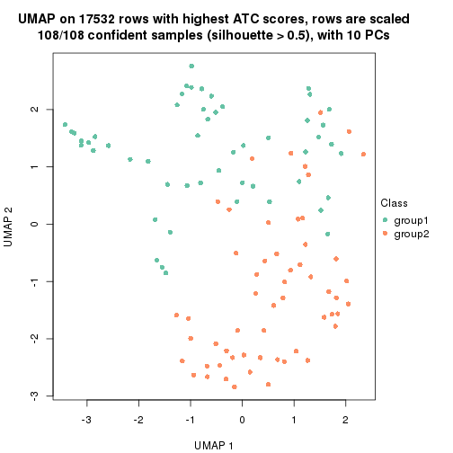
dimension_reduction(res, k = 3, method = "UMAP")
dimension_reduction(res, k = 4, method = "UMAP")
dimension_reduction(res, k = 5, method = "UMAP")
dimension_reduction(res, k = 6, method = "UMAP")
Following heatmap shows how subgroups are split when increasing k:
collect_classes(res)
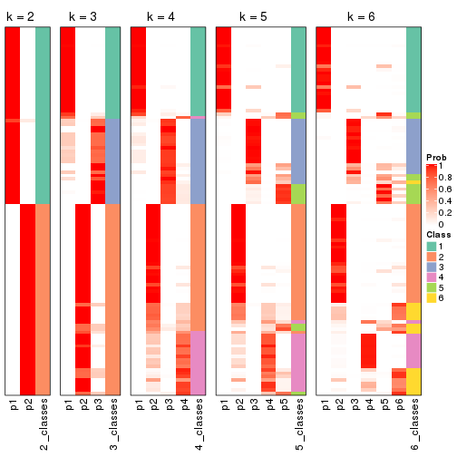
If matrix rows can be associated to genes, consider to use GO_Enrichment(res,
...) to perform function enrichment for the signature genes.
The object with results only for a single top-value method and a single partition method can be extracted as:
res = res_list["ATC", "pam"]
# you can also extract it by
# res = res_list["ATC:pam"]
A summary of res and all the functions that can be applied to it:
res
#> A 'ConsensusPartition' object with k = 2, 3, 4, 5, 6.
#> On a matrix with 17532 rows and 108 columns.
#> Top rows (1000, 2000, 3000, 4000, 5000) are extracted by 'ATC' method.
#> Subgroups are detected by 'pam' method.
#> Performed in total 1250 partitions by row resampling.
#> Best k for subgroups seems to be 2.
#>
#> Following methods can be applied to this 'ConsensusPartition' object:
#> [1] "cola_report" "collect_classes" "collect_plots"
#> [4] "collect_stats" "colnames" "compare_signatures"
#> [7] "consensus_heatmap" "dimension_reduction" "functional_enrichment"
#> [10] "get_anno_col" "get_anno" "get_classes"
#> [13] "get_consensus" "get_matrix" "get_membership"
#> [16] "get_param" "get_signatures" "get_stats"
#> [19] "is_best_k" "is_stable_k" "membership_heatmap"
#> [22] "ncol" "nrow" "plot_ecdf"
#> [25] "rownames" "select_partition_number" "show"
#> [28] "suggest_best_k" "test_to_known_factors"
collect_plots() function collects all the plots made from res for all k (number of partitions)
into one single page to provide an easy and fast comparison between different k.
collect_plots(res)
The plots are:
k and the heatmap of
predicted classes for each k.k.k.k.All the plots in panels can be made by individual functions and they are plotted later in this section.
select_partition_number() produces several plots showing different
statistics for choosing “optimized” k. There are following statistics:
k;k, the area increased is defined as \(A_k - A_{k-1}\).The detailed explanations of these statistics can be found in the cola vignette.
Generally speaking, lower PAC score, higher mean silhouette score or higher
concordance corresponds to better partition. Rand index and Jaccard index
measure how similar the current partition is compared to partition with k-1.
If they are too similar, we won't accept k is better than k-1.
select_partition_number(res)
The numeric values for all these statistics can be obtained by get_stats().
get_stats(res)
#> k 1-PAC mean_silhouette concordance area_increased Rand Jaccard
#> 2 2 1.000 0.965 0.986 0.5010 0.500 0.500
#> 3 3 0.688 0.831 0.919 0.2084 0.659 0.454
#> 4 4 0.890 0.888 0.953 0.1772 0.722 0.432
#> 5 5 0.752 0.697 0.816 0.1005 0.869 0.586
#> 6 6 0.770 0.481 0.725 0.0456 0.846 0.443
suggest_best_k() suggests the best \(k\) based on these statistics. The rules are as follows:
NA.suggest_best_k(res)
#> [1] 2
Following shows the table of the partitions (You need to click the show/hide
code output link to see it). The membership matrix (columns with name p*)
is inferred by
clue::cl_consensus()
function with the SE method. Basically the value in the membership matrix
represents the probability to belong to a certain group. The finall class
label for an item is determined with the group with highest probability it
belongs to.
In get_classes() function, the entropy is calculated from the membership
matrix and the silhouette score is calculated from the consensus matrix.
cbind(get_classes(res, k = 2), get_membership(res, k = 2))
#> class entropy silhouette p1 p2
#> SRR1389909 2 0.000 0.983 0.000 1.000
#> SRR1454460 2 0.000 0.983 0.000 1.000
#> SRR1404623 2 0.000 0.983 0.000 1.000
#> SRR1092038 1 0.000 0.988 1.000 0.000
#> SRR1319793 2 0.000 0.983 0.000 1.000
#> SRR1396208 2 0.000 0.983 0.000 1.000
#> SRR1435797 1 0.000 0.988 1.000 0.000
#> SRR1078042 1 0.000 0.988 1.000 0.000
#> SRR1339699 1 0.000 0.988 1.000 0.000
#> SRR1446499 2 0.000 0.983 0.000 1.000
#> SRR1359428 2 0.000 0.983 0.000 1.000
#> SRR1071475 1 0.000 0.988 1.000 0.000
#> SRR1436781 2 0.000 0.983 0.000 1.000
#> SRR1101453 1 0.000 0.988 1.000 0.000
#> SRR1350891 2 0.000 0.983 0.000 1.000
#> SRR814293 2 0.000 0.983 0.000 1.000
#> SRR1471456 2 0.000 0.983 0.000 1.000
#> SRR1446874 1 0.000 0.988 1.000 0.000
#> SRR1362731 2 0.000 0.983 0.000 1.000
#> SRR1413705 2 0.000 0.983 0.000 1.000
#> SRR1434586 2 0.000 0.983 0.000 1.000
#> SRR1091164 2 0.000 0.983 0.000 1.000
#> SRR1340598 2 0.971 0.335 0.400 0.600
#> SRR1466469 1 0.000 0.988 1.000 0.000
#> SRR1099310 2 0.000 0.983 0.000 1.000
#> SRR814892 2 0.000 0.983 0.000 1.000
#> SRR1090698 2 0.000 0.983 0.000 1.000
#> SRR1089134 1 0.000 0.988 1.000 0.000
#> SRR1120276 1 0.000 0.988 1.000 0.000
#> SRR1430507 2 0.000 0.983 0.000 1.000
#> SRR1356078 1 0.184 0.961 0.972 0.028
#> SRR1447037 1 0.697 0.762 0.812 0.188
#> SRR1443544 1 0.000 0.988 1.000 0.000
#> SRR1081987 2 0.000 0.983 0.000 1.000
#> SRR1316513 2 0.000 0.983 0.000 1.000
#> SRR1478457 1 0.000 0.988 1.000 0.000
#> SRR1342849 1 0.000 0.988 1.000 0.000
#> SRR1073878 2 0.000 0.983 0.000 1.000
#> SRR1078735 1 0.000 0.988 1.000 0.000
#> SRR1093601 2 0.000 0.983 0.000 1.000
#> SRR816629 1 0.000 0.988 1.000 0.000
#> SRR1477754 2 0.000 0.983 0.000 1.000
#> SRR1454589 1 0.000 0.988 1.000 0.000
#> SRR1102780 2 0.000 0.983 0.000 1.000
#> SRR1347518 2 0.000 0.983 0.000 1.000
#> SRR1093747 1 0.000 0.988 1.000 0.000
#> SRR809209 1 0.000 0.988 1.000 0.000
#> SRR1082471 1 0.000 0.988 1.000 0.000
#> SRR1390349 1 0.909 0.511 0.676 0.324
#> SRR1410493 2 0.949 0.419 0.368 0.632
#> SRR1086656 2 0.000 0.983 0.000 1.000
#> SRR1469997 2 0.000 0.983 0.000 1.000
#> SRR1355512 2 0.000 0.983 0.000 1.000
#> SRR809897 2 0.722 0.743 0.200 0.800
#> SRR1436146 2 0.000 0.983 0.000 1.000
#> SRR1097148 1 0.000 0.988 1.000 0.000
#> SRR1429979 1 0.000 0.988 1.000 0.000
#> SRR1454607 1 0.000 0.988 1.000 0.000
#> SRR1420687 1 0.000 0.988 1.000 0.000
#> SRR1099669 1 0.000 0.988 1.000 0.000
#> SRR1360172 1 0.000 0.988 1.000 0.000
#> SRR1478131 2 0.000 0.983 0.000 1.000
#> SRR1453235 1 0.000 0.988 1.000 0.000
#> SRR1369107 1 0.000 0.988 1.000 0.000
#> SRR1096458 2 0.000 0.983 0.000 1.000
#> SRR1088856 1 0.000 0.988 1.000 0.000
#> SRR1432934 2 0.000 0.983 0.000 1.000
#> SRR821072 2 0.000 0.983 0.000 1.000
#> SRR1480896 1 0.000 0.988 1.000 0.000
#> SRR1403344 2 0.000 0.983 0.000 1.000
#> SRR1360850 1 0.000 0.988 1.000 0.000
#> SRR1451820 2 0.000 0.983 0.000 1.000
#> SRR1075360 1 0.000 0.988 1.000 0.000
#> SRR1413373 1 0.000 0.988 1.000 0.000
#> SRR1090928 2 0.000 0.983 0.000 1.000
#> SRR1097124 2 0.000 0.983 0.000 1.000
#> SRR1458745 1 0.000 0.988 1.000 0.000
#> SRR1078636 2 0.000 0.983 0.000 1.000
#> SRR1473754 2 0.000 0.983 0.000 1.000
#> SRR1085736 2 0.000 0.983 0.000 1.000
#> SRR1098807 1 0.000 0.988 1.000 0.000
#> SRR1341583 2 0.000 0.983 0.000 1.000
#> SRR1380869 2 0.000 0.983 0.000 1.000
#> SRR1430775 1 0.000 0.988 1.000 0.000
#> SRR1479573 1 0.000 0.988 1.000 0.000
#> SRR1082352 1 0.000 0.988 1.000 0.000
#> SRR1102005 1 0.000 0.988 1.000 0.000
#> SRR1408415 1 0.000 0.988 1.000 0.000
#> SRR1353537 1 0.000 0.988 1.000 0.000
#> SRR1458870 2 0.000 0.983 0.000 1.000
#> SRR1315495 2 0.000 0.983 0.000 1.000
#> SRR1481169 2 0.000 0.983 0.000 1.000
#> SRR1470273 1 0.000 0.988 1.000 0.000
#> SRR1312446 2 0.000 0.983 0.000 1.000
#> SRR1101859 2 0.000 0.983 0.000 1.000
#> SRR1384210 1 0.000 0.988 1.000 0.000
#> SRR1336244 2 0.000 0.983 0.000 1.000
#> SRR1374432 2 0.000 0.983 0.000 1.000
#> SRR1430023 1 0.000 0.988 1.000 0.000
#> SRR1487527 1 0.000 0.988 1.000 0.000
#> SRR1073389 1 0.000 0.988 1.000 0.000
#> SRR1433171 2 0.000 0.983 0.000 1.000
#> SRR1085565 1 0.000 0.988 1.000 0.000
#> SRR1355017 2 0.000 0.983 0.000 1.000
#> SRR1351641 2 0.000 0.983 0.000 1.000
#> SRR1398230 2 0.000 0.983 0.000 1.000
#> SRR1086212 2 0.000 0.983 0.000 1.000
#> SRR1431514 2 0.000 0.983 0.000 1.000
cbind(get_classes(res, k = 3), get_membership(res, k = 3))
#> class entropy silhouette p1 p2 p3
#> SRR1389909 3 0.2878 0.8313 0.000 0.096 0.904
#> SRR1454460 3 0.0424 0.8704 0.000 0.008 0.992
#> SRR1404623 2 0.0000 0.9073 0.000 1.000 0.000
#> SRR1092038 3 0.0000 0.8726 0.000 0.000 1.000
#> SRR1319793 2 0.0000 0.9073 0.000 1.000 0.000
#> SRR1396208 3 0.2959 0.8287 0.000 0.100 0.900
#> SRR1435797 3 0.4931 0.7202 0.232 0.000 0.768
#> SRR1078042 3 0.0000 0.8726 0.000 0.000 1.000
#> SRR1339699 3 0.0000 0.8726 0.000 0.000 1.000
#> SRR1446499 2 0.4346 0.7817 0.000 0.816 0.184
#> SRR1359428 2 0.0000 0.9073 0.000 1.000 0.000
#> SRR1071475 1 0.0424 0.9904 0.992 0.000 0.008
#> SRR1436781 2 0.0000 0.9073 0.000 1.000 0.000
#> SRR1101453 3 0.1163 0.8622 0.028 0.000 0.972
#> SRR1350891 2 0.0000 0.9073 0.000 1.000 0.000
#> SRR814293 2 0.1411 0.8899 0.000 0.964 0.036
#> SRR1471456 3 0.1753 0.8560 0.000 0.048 0.952
#> SRR1446874 3 0.0000 0.8726 0.000 0.000 1.000
#> SRR1362731 2 0.0000 0.9073 0.000 1.000 0.000
#> SRR1413705 2 0.0000 0.9073 0.000 1.000 0.000
#> SRR1434586 3 0.2165 0.8488 0.000 0.064 0.936
#> SRR1091164 2 0.0000 0.9073 0.000 1.000 0.000
#> SRR1340598 3 0.0000 0.8726 0.000 0.000 1.000
#> SRR1466469 1 0.0000 0.9954 1.000 0.000 0.000
#> SRR1099310 3 0.3752 0.7921 0.000 0.144 0.856
#> SRR814892 2 0.2625 0.8662 0.000 0.916 0.084
#> SRR1090698 3 0.2878 0.8313 0.000 0.096 0.904
#> SRR1089134 1 0.0000 0.9954 1.000 0.000 0.000
#> SRR1120276 3 0.4931 0.7202 0.232 0.000 0.768
#> SRR1430507 3 0.3752 0.7920 0.000 0.144 0.856
#> SRR1356078 3 0.0000 0.8726 0.000 0.000 1.000
#> SRR1447037 3 0.0000 0.8726 0.000 0.000 1.000
#> SRR1443544 3 0.4931 0.7202 0.232 0.000 0.768
#> SRR1081987 3 0.3686 0.7966 0.000 0.140 0.860
#> SRR1316513 2 0.6225 0.3325 0.000 0.568 0.432
#> SRR1478457 3 0.0000 0.8726 0.000 0.000 1.000
#> SRR1342849 3 0.4931 0.7202 0.232 0.000 0.768
#> SRR1073878 2 0.0000 0.9073 0.000 1.000 0.000
#> SRR1078735 3 0.5905 0.5427 0.352 0.000 0.648
#> SRR1093601 2 0.0000 0.9073 0.000 1.000 0.000
#> SRR816629 3 0.0000 0.8726 0.000 0.000 1.000
#> SRR1477754 2 0.0000 0.9073 0.000 1.000 0.000
#> SRR1454589 3 0.0000 0.8726 0.000 0.000 1.000
#> SRR1102780 3 0.3340 0.8144 0.000 0.120 0.880
#> SRR1347518 3 0.3192 0.8207 0.000 0.112 0.888
#> SRR1093747 3 0.4931 0.7202 0.232 0.000 0.768
#> SRR809209 3 0.0000 0.8726 0.000 0.000 1.000
#> SRR1082471 3 0.0000 0.8726 0.000 0.000 1.000
#> SRR1390349 3 0.0000 0.8726 0.000 0.000 1.000
#> SRR1410493 3 0.0000 0.8726 0.000 0.000 1.000
#> SRR1086656 2 0.4931 0.7306 0.000 0.768 0.232
#> SRR1469997 2 0.0000 0.9073 0.000 1.000 0.000
#> SRR1355512 2 0.2796 0.8617 0.000 0.908 0.092
#> SRR809897 3 0.0000 0.8726 0.000 0.000 1.000
#> SRR1436146 2 0.0000 0.9073 0.000 1.000 0.000
#> SRR1097148 1 0.0000 0.9954 1.000 0.000 0.000
#> SRR1429979 3 0.4931 0.7202 0.232 0.000 0.768
#> SRR1454607 1 0.0000 0.9954 1.000 0.000 0.000
#> SRR1420687 3 0.4931 0.7202 0.232 0.000 0.768
#> SRR1099669 3 0.4931 0.7202 0.232 0.000 0.768
#> SRR1360172 3 0.0000 0.8726 0.000 0.000 1.000
#> SRR1478131 2 0.2796 0.8607 0.000 0.908 0.092
#> SRR1453235 3 0.0000 0.8726 0.000 0.000 1.000
#> SRR1369107 3 0.4931 0.7202 0.232 0.000 0.768
#> SRR1096458 3 0.3340 0.8144 0.000 0.120 0.880
#> SRR1088856 3 0.4931 0.7202 0.232 0.000 0.768
#> SRR1432934 2 0.0000 0.9073 0.000 1.000 0.000
#> SRR821072 3 0.4002 0.7839 0.000 0.160 0.840
#> SRR1480896 3 0.4931 0.7202 0.232 0.000 0.768
#> SRR1403344 3 0.2448 0.8426 0.000 0.076 0.924
#> SRR1360850 1 0.0000 0.9954 1.000 0.000 0.000
#> SRR1451820 2 0.0000 0.9073 0.000 1.000 0.000
#> SRR1075360 3 0.1643 0.8545 0.044 0.000 0.956
#> SRR1413373 1 0.1411 0.9630 0.964 0.000 0.036
#> SRR1090928 2 0.0000 0.9073 0.000 1.000 0.000
#> SRR1097124 2 0.0424 0.9045 0.000 0.992 0.008
#> SRR1458745 3 0.5016 0.7119 0.240 0.000 0.760
#> SRR1078636 2 0.0000 0.9073 0.000 1.000 0.000
#> SRR1473754 2 0.6192 0.3538 0.000 0.580 0.420
#> SRR1085736 2 0.6062 0.3920 0.000 0.616 0.384
#> SRR1098807 1 0.0000 0.9954 1.000 0.000 0.000
#> SRR1341583 2 0.1964 0.8807 0.000 0.944 0.056
#> SRR1380869 3 0.5810 0.4486 0.000 0.336 0.664
#> SRR1430775 3 0.0747 0.8672 0.016 0.000 0.984
#> SRR1479573 3 0.0000 0.8726 0.000 0.000 1.000
#> SRR1082352 1 0.0000 0.9954 1.000 0.000 0.000
#> SRR1102005 3 0.0000 0.8726 0.000 0.000 1.000
#> SRR1408415 3 0.5706 0.5970 0.320 0.000 0.680
#> SRR1353537 1 0.0000 0.9954 1.000 0.000 0.000
#> SRR1458870 2 0.1643 0.8892 0.000 0.956 0.044
#> SRR1315495 2 0.0000 0.9073 0.000 1.000 0.000
#> SRR1481169 3 0.3752 0.7925 0.000 0.144 0.856
#> SRR1470273 1 0.0000 0.9954 1.000 0.000 0.000
#> SRR1312446 2 0.0000 0.9073 0.000 1.000 0.000
#> SRR1101859 3 0.6260 0.0796 0.000 0.448 0.552
#> SRR1384210 1 0.0000 0.9954 1.000 0.000 0.000
#> SRR1336244 2 0.0000 0.9073 0.000 1.000 0.000
#> SRR1374432 2 0.6215 0.3421 0.000 0.572 0.428
#> SRR1430023 3 0.0000 0.8726 0.000 0.000 1.000
#> SRR1487527 1 0.0424 0.9904 0.992 0.000 0.008
#> SRR1073389 3 0.0000 0.8726 0.000 0.000 1.000
#> SRR1433171 2 0.2959 0.8480 0.000 0.900 0.100
#> SRR1085565 3 0.0000 0.8726 0.000 0.000 1.000
#> SRR1355017 2 0.0000 0.9073 0.000 1.000 0.000
#> SRR1351641 2 0.0000 0.9073 0.000 1.000 0.000
#> SRR1398230 2 0.0000 0.9073 0.000 1.000 0.000
#> SRR1086212 2 0.2711 0.8635 0.000 0.912 0.088
#> SRR1431514 2 0.3941 0.8090 0.000 0.844 0.156
cbind(get_classes(res, k = 4), get_membership(res, k = 4))
#> class entropy silhouette p1 p2 p3 p4
#> SRR1389909 4 0.0000 0.928 0.000 0.000 0.000 1.000
#> SRR1454460 4 0.0000 0.928 0.000 0.000 0.000 1.000
#> SRR1404623 2 0.0000 0.993 0.000 1.000 0.000 0.000
#> SRR1092038 3 0.4955 0.246 0.000 0.000 0.556 0.444
#> SRR1319793 2 0.0000 0.993 0.000 1.000 0.000 0.000
#> SRR1396208 4 0.0000 0.928 0.000 0.000 0.000 1.000
#> SRR1435797 3 0.0000 0.903 0.000 0.000 1.000 0.000
#> SRR1078042 3 0.4866 0.344 0.000 0.000 0.596 0.404
#> SRR1339699 3 0.0000 0.903 0.000 0.000 1.000 0.000
#> SRR1446499 4 0.3266 0.793 0.000 0.168 0.000 0.832
#> SRR1359428 2 0.0000 0.993 0.000 1.000 0.000 0.000
#> SRR1071475 3 0.3219 0.763 0.164 0.000 0.836 0.000
#> SRR1436781 2 0.0000 0.993 0.000 1.000 0.000 0.000
#> SRR1101453 3 0.0000 0.903 0.000 0.000 1.000 0.000
#> SRR1350891 2 0.0000 0.993 0.000 1.000 0.000 0.000
#> SRR814293 2 0.0188 0.989 0.000 0.996 0.000 0.004
#> SRR1471456 4 0.0000 0.928 0.000 0.000 0.000 1.000
#> SRR1446874 3 0.2921 0.755 0.000 0.000 0.860 0.140
#> SRR1362731 2 0.0000 0.993 0.000 1.000 0.000 0.000
#> SRR1413705 2 0.0000 0.993 0.000 1.000 0.000 0.000
#> SRR1434586 4 0.0000 0.928 0.000 0.000 0.000 1.000
#> SRR1091164 2 0.0000 0.993 0.000 1.000 0.000 0.000
#> SRR1340598 4 0.0000 0.928 0.000 0.000 0.000 1.000
#> SRR1466469 1 0.0000 0.991 1.000 0.000 0.000 0.000
#> SRR1099310 4 0.0000 0.928 0.000 0.000 0.000 1.000
#> SRR814892 4 0.4679 0.543 0.000 0.352 0.000 0.648
#> SRR1090698 4 0.0000 0.928 0.000 0.000 0.000 1.000
#> SRR1089134 1 0.0000 0.991 1.000 0.000 0.000 0.000
#> SRR1120276 3 0.0000 0.903 0.000 0.000 1.000 0.000
#> SRR1430507 4 0.0000 0.928 0.000 0.000 0.000 1.000
#> SRR1356078 4 0.0000 0.928 0.000 0.000 0.000 1.000
#> SRR1447037 4 0.0000 0.928 0.000 0.000 0.000 1.000
#> SRR1443544 3 0.0000 0.903 0.000 0.000 1.000 0.000
#> SRR1081987 4 0.0000 0.928 0.000 0.000 0.000 1.000
#> SRR1316513 4 0.0000 0.928 0.000 0.000 0.000 1.000
#> SRR1478457 4 0.0000 0.928 0.000 0.000 0.000 1.000
#> SRR1342849 3 0.0000 0.903 0.000 0.000 1.000 0.000
#> SRR1073878 2 0.0000 0.993 0.000 1.000 0.000 0.000
#> SRR1078735 3 0.0000 0.903 0.000 0.000 1.000 0.000
#> SRR1093601 2 0.0000 0.993 0.000 1.000 0.000 0.000
#> SRR816629 3 0.0000 0.903 0.000 0.000 1.000 0.000
#> SRR1477754 2 0.0000 0.993 0.000 1.000 0.000 0.000
#> SRR1454589 3 0.0000 0.903 0.000 0.000 1.000 0.000
#> SRR1102780 4 0.0000 0.928 0.000 0.000 0.000 1.000
#> SRR1347518 4 0.0000 0.928 0.000 0.000 0.000 1.000
#> SRR1093747 3 0.0000 0.903 0.000 0.000 1.000 0.000
#> SRR809209 4 0.0000 0.928 0.000 0.000 0.000 1.000
#> SRR1082471 4 0.4250 0.602 0.000 0.000 0.276 0.724
#> SRR1390349 4 0.0000 0.928 0.000 0.000 0.000 1.000
#> SRR1410493 4 0.0000 0.928 0.000 0.000 0.000 1.000
#> SRR1086656 4 0.0000 0.928 0.000 0.000 0.000 1.000
#> SRR1469997 2 0.0000 0.993 0.000 1.000 0.000 0.000
#> SRR1355512 4 0.4585 0.580 0.000 0.332 0.000 0.668
#> SRR809897 4 0.0000 0.928 0.000 0.000 0.000 1.000
#> SRR1436146 2 0.0000 0.993 0.000 1.000 0.000 0.000
#> SRR1097148 1 0.0000 0.991 1.000 0.000 0.000 0.000
#> SRR1429979 3 0.0000 0.903 0.000 0.000 1.000 0.000
#> SRR1454607 1 0.0000 0.991 1.000 0.000 0.000 0.000
#> SRR1420687 3 0.0000 0.903 0.000 0.000 1.000 0.000
#> SRR1099669 3 0.0000 0.903 0.000 0.000 1.000 0.000
#> SRR1360172 3 0.0000 0.903 0.000 0.000 1.000 0.000
#> SRR1478131 4 0.3569 0.769 0.000 0.196 0.000 0.804
#> SRR1453235 4 0.2081 0.858 0.000 0.000 0.084 0.916
#> SRR1369107 3 0.0000 0.903 0.000 0.000 1.000 0.000
#> SRR1096458 4 0.0000 0.928 0.000 0.000 0.000 1.000
#> SRR1088856 3 0.0000 0.903 0.000 0.000 1.000 0.000
#> SRR1432934 2 0.0000 0.993 0.000 1.000 0.000 0.000
#> SRR821072 4 0.0817 0.913 0.000 0.024 0.000 0.976
#> SRR1480896 3 0.4948 0.194 0.000 0.000 0.560 0.440
#> SRR1403344 4 0.0000 0.928 0.000 0.000 0.000 1.000
#> SRR1360850 1 0.1716 0.925 0.936 0.000 0.064 0.000
#> SRR1451820 2 0.0000 0.993 0.000 1.000 0.000 0.000
#> SRR1075360 3 0.0000 0.903 0.000 0.000 1.000 0.000
#> SRR1413373 3 0.1792 0.853 0.068 0.000 0.932 0.000
#> SRR1090928 2 0.0000 0.993 0.000 1.000 0.000 0.000
#> SRR1097124 2 0.0188 0.989 0.000 0.996 0.000 0.004
#> SRR1458745 3 0.0000 0.903 0.000 0.000 1.000 0.000
#> SRR1078636 2 0.0000 0.993 0.000 1.000 0.000 0.000
#> SRR1473754 4 0.0469 0.921 0.000 0.012 0.000 0.988
#> SRR1085736 4 0.4193 0.674 0.000 0.268 0.000 0.732
#> SRR1098807 1 0.0000 0.991 1.000 0.000 0.000 0.000
#> SRR1341583 2 0.1022 0.955 0.000 0.968 0.000 0.032
#> SRR1380869 4 0.0000 0.928 0.000 0.000 0.000 1.000
#> SRR1430775 3 0.0000 0.903 0.000 0.000 1.000 0.000
#> SRR1479573 4 0.0000 0.928 0.000 0.000 0.000 1.000
#> SRR1082352 1 0.0000 0.991 1.000 0.000 0.000 0.000
#> SRR1102005 4 0.4277 0.609 0.000 0.000 0.280 0.720
#> SRR1408415 3 0.0000 0.903 0.000 0.000 1.000 0.000
#> SRR1353537 1 0.0000 0.991 1.000 0.000 0.000 0.000
#> SRR1458870 4 0.4454 0.618 0.000 0.308 0.000 0.692
#> SRR1315495 2 0.0000 0.993 0.000 1.000 0.000 0.000
#> SRR1481169 4 0.0000 0.928 0.000 0.000 0.000 1.000
#> SRR1470273 1 0.0000 0.991 1.000 0.000 0.000 0.000
#> SRR1312446 2 0.0000 0.993 0.000 1.000 0.000 0.000
#> SRR1101859 4 0.0188 0.926 0.000 0.004 0.000 0.996
#> SRR1384210 3 0.4907 0.244 0.420 0.000 0.580 0.000
#> SRR1336244 2 0.0000 0.993 0.000 1.000 0.000 0.000
#> SRR1374432 4 0.0000 0.928 0.000 0.000 0.000 1.000
#> SRR1430023 3 0.0000 0.903 0.000 0.000 1.000 0.000
#> SRR1487527 3 0.3219 0.763 0.164 0.000 0.836 0.000
#> SRR1073389 4 0.0000 0.928 0.000 0.000 0.000 1.000
#> SRR1433171 2 0.2149 0.877 0.000 0.912 0.000 0.088
#> SRR1085565 3 0.0000 0.903 0.000 0.000 1.000 0.000
#> SRR1355017 2 0.0000 0.993 0.000 1.000 0.000 0.000
#> SRR1351641 2 0.0000 0.993 0.000 1.000 0.000 0.000
#> SRR1398230 2 0.0000 0.993 0.000 1.000 0.000 0.000
#> SRR1086212 4 0.3610 0.765 0.000 0.200 0.000 0.800
#> SRR1431514 4 0.2216 0.862 0.000 0.092 0.000 0.908
cbind(get_classes(res, k = 5), get_membership(res, k = 5))
#> class entropy silhouette p1 p2 p3 p4 p5
#> SRR1389909 4 0.2891 0.6595 0.000 0.000 0.000 0.824 0.176
#> SRR1454460 4 0.3336 0.5929 0.000 0.000 0.000 0.772 0.228
#> SRR1404623 2 0.0000 0.8717 0.000 1.000 0.000 0.000 0.000
#> SRR1092038 5 0.3983 0.5940 0.000 0.000 0.340 0.000 0.660
#> SRR1319793 2 0.3177 0.6587 0.000 0.792 0.000 0.208 0.000
#> SRR1396208 5 0.4242 0.4039 0.000 0.000 0.000 0.428 0.572
#> SRR1435797 3 0.0000 0.8361 0.000 0.000 1.000 0.000 0.000
#> SRR1078042 3 0.4256 -0.0608 0.000 0.000 0.564 0.000 0.436
#> SRR1339699 3 0.2966 0.6213 0.000 0.000 0.816 0.000 0.184
#> SRR1446499 2 0.6097 -0.1274 0.000 0.456 0.000 0.420 0.124
#> SRR1359428 2 0.0880 0.8538 0.000 0.968 0.000 0.032 0.000
#> SRR1071475 3 0.5766 0.6505 0.164 0.000 0.616 0.000 0.220
#> SRR1436781 2 0.0000 0.8717 0.000 1.000 0.000 0.000 0.000
#> SRR1101453 3 0.0000 0.8361 0.000 0.000 1.000 0.000 0.000
#> SRR1350891 2 0.0000 0.8717 0.000 1.000 0.000 0.000 0.000
#> SRR814293 2 0.5049 0.0467 0.000 0.488 0.000 0.480 0.032
#> SRR1471456 5 0.4210 0.4452 0.000 0.000 0.000 0.412 0.588
#> SRR1446874 3 0.1043 0.8114 0.000 0.000 0.960 0.000 0.040
#> SRR1362731 2 0.0000 0.8717 0.000 1.000 0.000 0.000 0.000
#> SRR1413705 2 0.0000 0.8717 0.000 1.000 0.000 0.000 0.000
#> SRR1434586 5 0.3274 0.7596 0.000 0.000 0.000 0.220 0.780
#> SRR1091164 2 0.0880 0.8538 0.000 0.968 0.000 0.032 0.000
#> SRR1340598 5 0.5177 0.6616 0.000 0.000 0.220 0.104 0.676
#> SRR1466469 1 0.0000 0.9681 1.000 0.000 0.000 0.000 0.000
#> SRR1099310 4 0.0000 0.7474 0.000 0.000 0.000 1.000 0.000
#> SRR814892 4 0.2690 0.6689 0.000 0.156 0.000 0.844 0.000
#> SRR1090698 5 0.3305 0.7578 0.000 0.000 0.000 0.224 0.776
#> SRR1089134 1 0.0000 0.9681 1.000 0.000 0.000 0.000 0.000
#> SRR1120276 3 0.0000 0.8361 0.000 0.000 1.000 0.000 0.000
#> SRR1430507 4 0.4015 0.1775 0.000 0.000 0.000 0.652 0.348
#> SRR1356078 5 0.3841 0.7648 0.000 0.000 0.032 0.188 0.780
#> SRR1447037 5 0.3305 0.7578 0.000 0.000 0.000 0.224 0.776
#> SRR1443544 3 0.3274 0.7948 0.000 0.000 0.780 0.000 0.220
#> SRR1081987 4 0.3586 0.5286 0.000 0.000 0.000 0.736 0.264
#> SRR1316513 4 0.2891 0.6595 0.000 0.000 0.000 0.824 0.176
#> SRR1478457 5 0.3274 0.7040 0.000 0.000 0.220 0.000 0.780
#> SRR1342849 3 0.0000 0.8361 0.000 0.000 1.000 0.000 0.000
#> SRR1073878 2 0.0000 0.8717 0.000 1.000 0.000 0.000 0.000
#> SRR1078735 3 0.3274 0.7948 0.000 0.000 0.780 0.000 0.220
#> SRR1093601 2 0.4235 0.2647 0.000 0.576 0.000 0.424 0.000
#> SRR816629 3 0.0000 0.8361 0.000 0.000 1.000 0.000 0.000
#> SRR1477754 2 0.0000 0.8717 0.000 1.000 0.000 0.000 0.000
#> SRR1454589 5 0.4171 0.4974 0.000 0.000 0.396 0.000 0.604
#> SRR1102780 4 0.0000 0.7474 0.000 0.000 0.000 1.000 0.000
#> SRR1347518 4 0.0000 0.7474 0.000 0.000 0.000 1.000 0.000
#> SRR1093747 3 0.3274 0.7948 0.000 0.000 0.780 0.000 0.220
#> SRR809209 5 0.3305 0.7578 0.000 0.000 0.000 0.224 0.776
#> SRR1082471 5 0.4268 0.7607 0.000 0.000 0.084 0.144 0.772
#> SRR1390349 5 0.3519 0.7621 0.000 0.000 0.008 0.216 0.776
#> SRR1410493 5 0.3274 0.7596 0.000 0.000 0.000 0.220 0.780
#> SRR1086656 4 0.2852 0.6628 0.000 0.000 0.000 0.828 0.172
#> SRR1469997 2 0.4307 0.0472 0.000 0.504 0.000 0.496 0.000
#> SRR1355512 2 0.6685 -0.1650 0.000 0.384 0.000 0.380 0.236
#> SRR809897 5 0.3274 0.7040 0.000 0.000 0.220 0.000 0.780
#> SRR1436146 2 0.0000 0.8717 0.000 1.000 0.000 0.000 0.000
#> SRR1097148 1 0.0000 0.9681 1.000 0.000 0.000 0.000 0.000
#> SRR1429979 3 0.0000 0.8361 0.000 0.000 1.000 0.000 0.000
#> SRR1454607 1 0.0000 0.9681 1.000 0.000 0.000 0.000 0.000
#> SRR1420687 3 0.3274 0.7948 0.000 0.000 0.780 0.000 0.220
#> SRR1099669 3 0.3274 0.7948 0.000 0.000 0.780 0.000 0.220
#> SRR1360172 3 0.0000 0.8361 0.000 0.000 1.000 0.000 0.000
#> SRR1478131 4 0.2280 0.6973 0.000 0.120 0.000 0.880 0.000
#> SRR1453235 5 0.3366 0.7625 0.000 0.000 0.004 0.212 0.784
#> SRR1369107 3 0.0404 0.8366 0.000 0.000 0.988 0.000 0.012
#> SRR1096458 4 0.2891 0.6595 0.000 0.000 0.000 0.824 0.176
#> SRR1088856 3 0.0290 0.8365 0.000 0.000 0.992 0.000 0.008
#> SRR1432934 2 0.0000 0.8717 0.000 1.000 0.000 0.000 0.000
#> SRR821072 4 0.0290 0.7463 0.000 0.008 0.000 0.992 0.000
#> SRR1480896 5 0.1792 0.5990 0.000 0.000 0.084 0.000 0.916
#> SRR1403344 5 0.3305 0.7578 0.000 0.000 0.000 0.224 0.776
#> SRR1360850 1 0.4588 0.6883 0.720 0.000 0.060 0.000 0.220
#> SRR1451820 2 0.0000 0.8717 0.000 1.000 0.000 0.000 0.000
#> SRR1075360 5 0.4182 0.4904 0.000 0.000 0.400 0.000 0.600
#> SRR1413373 3 0.4708 0.7500 0.068 0.000 0.712 0.000 0.220
#> SRR1090928 2 0.0000 0.8717 0.000 1.000 0.000 0.000 0.000
#> SRR1097124 2 0.1281 0.8455 0.000 0.956 0.000 0.012 0.032
#> SRR1458745 3 0.3274 0.7948 0.000 0.000 0.780 0.000 0.220
#> SRR1078636 2 0.1851 0.8084 0.000 0.912 0.000 0.088 0.000
#> SRR1473754 4 0.0000 0.7474 0.000 0.000 0.000 1.000 0.000
#> SRR1085736 5 0.5128 0.5315 0.000 0.052 0.000 0.344 0.604
#> SRR1098807 1 0.0000 0.9681 1.000 0.000 0.000 0.000 0.000
#> SRR1341583 2 0.2067 0.8202 0.000 0.920 0.000 0.048 0.032
#> SRR1380869 4 0.0000 0.7474 0.000 0.000 0.000 1.000 0.000
#> SRR1430775 3 0.0000 0.8361 0.000 0.000 1.000 0.000 0.000
#> SRR1479573 5 0.4203 0.7586 0.000 0.000 0.092 0.128 0.780
#> SRR1082352 1 0.0000 0.9681 1.000 0.000 0.000 0.000 0.000
#> SRR1102005 5 0.3816 0.6425 0.000 0.000 0.304 0.000 0.696
#> SRR1408415 3 0.3274 0.7948 0.000 0.000 0.780 0.000 0.220
#> SRR1353537 1 0.0000 0.9681 1.000 0.000 0.000 0.000 0.000
#> SRR1458870 4 0.4304 -0.0252 0.000 0.484 0.000 0.516 0.000
#> SRR1315495 2 0.0000 0.8717 0.000 1.000 0.000 0.000 0.000
#> SRR1481169 4 0.0000 0.7474 0.000 0.000 0.000 1.000 0.000
#> SRR1470273 1 0.0000 0.9681 1.000 0.000 0.000 0.000 0.000
#> SRR1312446 2 0.0000 0.8717 0.000 1.000 0.000 0.000 0.000
#> SRR1101859 4 0.4161 -0.0678 0.000 0.000 0.000 0.608 0.392
#> SRR1384210 3 0.6375 0.3952 0.316 0.000 0.496 0.000 0.188
#> SRR1336244 2 0.0000 0.8717 0.000 1.000 0.000 0.000 0.000
#> SRR1374432 4 0.6434 0.2058 0.000 0.392 0.000 0.432 0.176
#> SRR1430023 3 0.0000 0.8361 0.000 0.000 1.000 0.000 0.000
#> SRR1487527 3 0.5766 0.6505 0.164 0.000 0.616 0.000 0.220
#> SRR1073389 5 0.3242 0.7606 0.000 0.000 0.000 0.216 0.784
#> SRR1433171 4 0.4088 0.2435 0.000 0.368 0.000 0.632 0.000
#> SRR1085565 3 0.1671 0.8295 0.000 0.000 0.924 0.000 0.076
#> SRR1355017 2 0.0000 0.8717 0.000 1.000 0.000 0.000 0.000
#> SRR1351641 2 0.0000 0.8717 0.000 1.000 0.000 0.000 0.000
#> SRR1398230 2 0.0000 0.8717 0.000 1.000 0.000 0.000 0.000
#> SRR1086212 4 0.2280 0.6973 0.000 0.120 0.000 0.880 0.000
#> SRR1431514 4 0.1121 0.7357 0.000 0.044 0.000 0.956 0.000
cbind(get_classes(res, k = 6), get_membership(res, k = 6))
#> class entropy silhouette p1 p2 p3 p4 p5 p6
#> SRR1389909 4 0.0260 0.45094 0.000 0.000 0.008 0.992 0.000 0.000
#> SRR1454460 4 0.2001 0.45541 0.000 0.000 0.048 0.912 0.040 0.000
#> SRR1404623 2 0.0000 0.94219 0.000 1.000 0.000 0.000 0.000 0.000
#> SRR1092038 5 0.3833 -0.00361 0.000 0.000 0.444 0.000 0.556 0.000
#> SRR1319793 2 0.1075 0.90932 0.000 0.952 0.000 0.048 0.000 0.000
#> SRR1396208 4 0.3547 0.38268 0.000 0.000 0.000 0.668 0.332 0.000
#> SRR1435797 3 0.0260 0.73625 0.000 0.000 0.992 0.000 0.000 0.008
#> SRR1078042 3 0.5684 0.23770 0.000 0.000 0.528 0.228 0.244 0.000
#> SRR1339699 3 0.2416 0.59853 0.000 0.000 0.844 0.000 0.156 0.000
#> SRR1446499 4 0.4264 -0.05224 0.000 0.488 0.000 0.496 0.016 0.000
#> SRR1359428 2 0.0790 0.92227 0.000 0.968 0.000 0.032 0.000 0.000
#> SRR1071475 6 0.3912 0.69163 0.164 0.000 0.076 0.000 0.000 0.760
#> SRR1436781 2 0.0000 0.94219 0.000 1.000 0.000 0.000 0.000 0.000
#> SRR1101453 3 0.0000 0.73800 0.000 0.000 1.000 0.000 0.000 0.000
#> SRR1350891 2 0.0000 0.94219 0.000 1.000 0.000 0.000 0.000 0.000
#> SRR814293 5 0.6749 0.03004 0.000 0.272 0.000 0.292 0.396 0.040
#> SRR1471456 4 0.4386 0.37356 0.000 0.000 0.048 0.652 0.300 0.000
#> SRR1446874 3 0.3978 0.51526 0.000 0.000 0.744 0.192 0.000 0.064
#> SRR1362731 2 0.0000 0.94219 0.000 1.000 0.000 0.000 0.000 0.000
#> SRR1413705 2 0.0000 0.94219 0.000 1.000 0.000 0.000 0.000 0.000
#> SRR1434586 4 0.3706 0.35319 0.000 0.000 0.000 0.620 0.380 0.000
#> SRR1091164 2 0.0790 0.92227 0.000 0.968 0.000 0.032 0.000 0.000
#> SRR1340598 3 0.6067 -0.01169 0.000 0.000 0.400 0.276 0.324 0.000
#> SRR1466469 1 0.0000 1.00000 1.000 0.000 0.000 0.000 0.000 0.000
#> SRR1099310 5 0.6015 0.16284 0.000 0.000 0.000 0.376 0.384 0.240
#> SRR814892 4 0.6850 -0.15270 0.000 0.060 0.000 0.428 0.280 0.232
#> SRR1090698 5 0.3737 -0.06222 0.000 0.000 0.000 0.392 0.608 0.000
#> SRR1089134 1 0.0000 1.00000 1.000 0.000 0.000 0.000 0.000 0.000
#> SRR1120276 3 0.0000 0.73800 0.000 0.000 1.000 0.000 0.000 0.000
#> SRR1430507 5 0.3290 0.13531 0.000 0.000 0.000 0.208 0.776 0.016
#> SRR1356078 5 0.5048 0.04833 0.000 0.000 0.120 0.264 0.616 0.000
#> SRR1447037 4 0.3911 0.35909 0.000 0.000 0.008 0.624 0.368 0.000
#> SRR1443544 3 0.3797 -0.21263 0.000 0.000 0.580 0.000 0.000 0.420
#> SRR1081987 4 0.1387 0.45986 0.000 0.000 0.000 0.932 0.068 0.000
#> SRR1316513 4 0.0692 0.44014 0.000 0.000 0.000 0.976 0.020 0.004
#> SRR1478457 5 0.4500 0.08118 0.000 0.000 0.392 0.036 0.572 0.000
#> SRR1342849 3 0.0260 0.73625 0.000 0.000 0.992 0.000 0.000 0.008
#> SRR1073878 2 0.0000 0.94219 0.000 1.000 0.000 0.000 0.000 0.000
#> SRR1078735 6 0.3659 0.59318 0.000 0.000 0.364 0.000 0.000 0.636
#> SRR1093601 2 0.6781 0.23593 0.000 0.516 0.000 0.168 0.120 0.196
#> SRR816629 3 0.0000 0.73800 0.000 0.000 1.000 0.000 0.000 0.000
#> SRR1477754 2 0.0000 0.94219 0.000 1.000 0.000 0.000 0.000 0.000
#> SRR1454589 5 0.3782 0.04732 0.000 0.000 0.412 0.000 0.588 0.000
#> SRR1102780 5 0.6015 0.16284 0.000 0.000 0.000 0.376 0.384 0.240
#> SRR1347518 4 0.5859 -0.14247 0.000 0.000 0.000 0.480 0.288 0.232
#> SRR1093747 3 0.3756 -0.15917 0.000 0.000 0.600 0.000 0.000 0.400
#> SRR809209 5 0.3955 -0.05437 0.000 0.000 0.008 0.384 0.608 0.000
#> SRR1082471 5 0.3841 -0.05020 0.000 0.000 0.004 0.380 0.616 0.000
#> SRR1390349 4 0.3872 0.33715 0.000 0.000 0.004 0.604 0.392 0.000
#> SRR1410493 5 0.3717 -0.05324 0.000 0.000 0.000 0.384 0.616 0.000
#> SRR1086656 4 0.1757 0.39027 0.000 0.000 0.000 0.916 0.076 0.008
#> SRR1469997 4 0.7637 -0.09837 0.000 0.236 0.000 0.328 0.196 0.240
#> SRR1355512 5 0.6007 -0.00810 0.000 0.308 0.000 0.224 0.464 0.004
#> SRR809897 5 0.6075 -0.08165 0.000 0.000 0.280 0.324 0.396 0.000
#> SRR1436146 2 0.0000 0.94219 0.000 1.000 0.000 0.000 0.000 0.000
#> SRR1097148 1 0.0000 1.00000 1.000 0.000 0.000 0.000 0.000 0.000
#> SRR1429979 3 0.0260 0.73625 0.000 0.000 0.992 0.000 0.000 0.008
#> SRR1454607 1 0.0000 1.00000 1.000 0.000 0.000 0.000 0.000 0.000
#> SRR1420687 6 0.3076 0.70106 0.000 0.000 0.240 0.000 0.000 0.760
#> SRR1099669 3 0.3854 -0.32157 0.000 0.000 0.536 0.000 0.000 0.464
#> SRR1360172 3 0.0000 0.73800 0.000 0.000 1.000 0.000 0.000 0.000
#> SRR1478131 5 0.6015 0.16284 0.000 0.000 0.000 0.376 0.384 0.240
#> SRR1453235 5 0.3717 -0.05324 0.000 0.000 0.000 0.384 0.616 0.000
#> SRR1369107 3 0.1327 0.69965 0.000 0.000 0.936 0.000 0.000 0.064
#> SRR1096458 4 0.0891 0.43613 0.000 0.000 0.000 0.968 0.024 0.008
#> SRR1088856 3 0.0937 0.71381 0.000 0.000 0.960 0.000 0.000 0.040
#> SRR1432934 2 0.0000 0.94219 0.000 1.000 0.000 0.000 0.000 0.000
#> SRR821072 5 0.6015 0.16284 0.000 0.000 0.000 0.376 0.384 0.240
#> SRR1480896 6 0.5607 0.29936 0.000 0.000 0.000 0.240 0.216 0.544
#> SRR1403344 4 0.3695 0.35590 0.000 0.000 0.000 0.624 0.376 0.000
#> SRR1360850 6 0.3076 0.56849 0.240 0.000 0.000 0.000 0.000 0.760
#> SRR1451820 2 0.0000 0.94219 0.000 1.000 0.000 0.000 0.000 0.000
#> SRR1075360 5 0.3727 0.07871 0.000 0.000 0.388 0.000 0.612 0.000
#> SRR1413373 6 0.4032 0.72496 0.068 0.000 0.192 0.000 0.000 0.740
#> SRR1090928 2 0.0000 0.94219 0.000 1.000 0.000 0.000 0.000 0.000
#> SRR1097124 2 0.1644 0.89131 0.000 0.932 0.000 0.028 0.040 0.000
#> SRR1458745 6 0.3765 0.54288 0.000 0.000 0.404 0.000 0.000 0.596
#> SRR1078636 2 0.0865 0.91933 0.000 0.964 0.000 0.036 0.000 0.000
#> SRR1473754 5 0.6015 0.16284 0.000 0.000 0.000 0.376 0.384 0.240
#> SRR1085736 5 0.0000 0.16052 0.000 0.000 0.000 0.000 1.000 0.000
#> SRR1098807 1 0.0000 1.00000 1.000 0.000 0.000 0.000 0.000 0.000
#> SRR1341583 2 0.2135 0.82333 0.000 0.872 0.000 0.128 0.000 0.000
#> SRR1380869 5 0.6015 0.16284 0.000 0.000 0.000 0.376 0.384 0.240
#> SRR1430775 3 0.0000 0.73800 0.000 0.000 1.000 0.000 0.000 0.000
#> SRR1479573 5 0.5186 0.11923 0.000 0.000 0.216 0.168 0.616 0.000
#> SRR1082352 1 0.0000 1.00000 1.000 0.000 0.000 0.000 0.000 0.000
#> SRR1102005 5 0.4184 0.05735 0.000 0.000 0.408 0.016 0.576 0.000
#> SRR1408415 6 0.3862 0.39537 0.000 0.000 0.476 0.000 0.000 0.524
#> SRR1353537 1 0.0000 1.00000 1.000 0.000 0.000 0.000 0.000 0.000
#> SRR1458870 2 0.5628 0.38148 0.000 0.576 0.000 0.192 0.224 0.008
#> SRR1315495 2 0.0000 0.94219 0.000 1.000 0.000 0.000 0.000 0.000
#> SRR1481169 5 0.6015 0.16284 0.000 0.000 0.000 0.376 0.384 0.240
#> SRR1470273 1 0.0000 1.00000 1.000 0.000 0.000 0.000 0.000 0.000
#> SRR1312446 2 0.0000 0.94219 0.000 1.000 0.000 0.000 0.000 0.000
#> SRR1101859 5 0.2260 0.10482 0.000 0.000 0.000 0.140 0.860 0.000
#> SRR1384210 6 0.4321 0.71651 0.084 0.000 0.204 0.000 0.000 0.712
#> SRR1336244 2 0.0000 0.94219 0.000 1.000 0.000 0.000 0.000 0.000
#> SRR1374432 4 0.3531 0.33348 0.000 0.328 0.000 0.672 0.000 0.000
#> SRR1430023 3 0.0000 0.73800 0.000 0.000 1.000 0.000 0.000 0.000
#> SRR1487527 6 0.3912 0.69163 0.164 0.000 0.076 0.000 0.000 0.760
#> SRR1073389 5 0.3717 -0.05324 0.000 0.000 0.000 0.384 0.616 0.000
#> SRR1433171 5 0.6385 0.15615 0.000 0.016 0.000 0.360 0.384 0.240
#> SRR1085565 3 0.2706 0.58032 0.000 0.000 0.852 0.024 0.000 0.124
#> SRR1355017 2 0.0000 0.94219 0.000 1.000 0.000 0.000 0.000 0.000
#> SRR1351641 2 0.0000 0.94219 0.000 1.000 0.000 0.000 0.000 0.000
#> SRR1398230 2 0.0000 0.94219 0.000 1.000 0.000 0.000 0.000 0.000
#> SRR1086212 5 0.6015 0.16284 0.000 0.000 0.000 0.376 0.384 0.240
#> SRR1431514 5 0.6015 0.16284 0.000 0.000 0.000 0.376 0.384 0.240
Heatmaps for the consensus matrix. It visualizes the probability of two samples to be in a same group.
consensus_heatmap(res, k = 2)
consensus_heatmap(res, k = 3)
consensus_heatmap(res, k = 4)
consensus_heatmap(res, k = 5)
consensus_heatmap(res, k = 6)
Heatmaps for the membership of samples in all partitions to see how consistent they are:
membership_heatmap(res, k = 2)
membership_heatmap(res, k = 3)
membership_heatmap(res, k = 4)
membership_heatmap(res, k = 5)
membership_heatmap(res, k = 6)
As soon as we have had the classes for columns, we can look for signatures which are significantly different between classes which can be candidate marks for certain classes. Following are the heatmaps for signatures.
Signature heatmaps where rows are scaled:
get_signatures(res, k = 2)
get_signatures(res, k = 3)
get_signatures(res, k = 4)
get_signatures(res, k = 5)

get_signatures(res, k = 6)
Signature heatmaps where rows are not scaled:
get_signatures(res, k = 2, scale_rows = FALSE)
get_signatures(res, k = 3, scale_rows = FALSE)
get_signatures(res, k = 4, scale_rows = FALSE)
get_signatures(res, k = 5, scale_rows = FALSE)
get_signatures(res, k = 6, scale_rows = FALSE)
Compare the overlap of signatures from different k:
compare_signatures(res)
get_signature() returns a data frame invisibly. TO get the list of signatures, the function
call should be assigned to a variable explicitly. In following code, if plot argument is set
to FALSE, no heatmap is plotted while only the differential analysis is performed.
# code only for demonstration
tb = get_signature(res, k = ..., plot = FALSE)
An example of the output of tb is:
#> which_row fdr mean_1 mean_2 scaled_mean_1 scaled_mean_2 km
#> 1 38 0.042760348 8.373488 9.131774 -0.5533452 0.5164555 1
#> 2 40 0.018707592 7.106213 8.469186 -0.6173731 0.5762149 1
#> 3 55 0.019134737 10.221463 11.207825 -0.6159697 0.5749050 1
#> 4 59 0.006059896 5.921854 7.869574 -0.6899429 0.6439467 1
#> 5 60 0.018055526 8.928898 10.211722 -0.6204761 0.5791110 1
#> 6 98 0.009384629 15.714769 14.887706 0.6635654 -0.6193277 2
...
The columns in tb are:
which_row: row indices corresponding to the input matrix.fdr: FDR for the differential test. mean_x: The mean value in group x.scaled_mean_x: The mean value in group x after rows are scaled.km: Row groups if k-means clustering is applied to rows.UMAP plot which shows how samples are separated.
dimension_reduction(res, k = 2, method = "UMAP")

dimension_reduction(res, k = 3, method = "UMAP")
dimension_reduction(res, k = 4, method = "UMAP")
dimension_reduction(res, k = 5, method = "UMAP")
dimension_reduction(res, k = 6, method = "UMAP")
Following heatmap shows how subgroups are split when increasing k:
collect_classes(res)
If matrix rows can be associated to genes, consider to use GO_Enrichment(res,
...) to perform function enrichment for the signature genes.
The object with results only for a single top-value method and a single partition method can be extracted as:
res = res_list["ATC", "mclust"]
# you can also extract it by
# res = res_list["ATC:mclust"]
A summary of res and all the functions that can be applied to it:
res
#> A 'ConsensusPartition' object with k = 2, 3, 4, 5, 6.
#> On a matrix with 17532 rows and 108 columns.
#> Top rows (1000, 2000, 3000, 4000, 5000) are extracted by 'ATC' method.
#> Subgroups are detected by 'mclust' method.
#> Performed in total 1250 partitions by row resampling.
#> Best k for subgroups seems to be 3.
#>
#> Following methods can be applied to this 'ConsensusPartition' object:
#> [1] "cola_report" "collect_classes" "collect_plots"
#> [4] "collect_stats" "colnames" "compare_signatures"
#> [7] "consensus_heatmap" "dimension_reduction" "functional_enrichment"
#> [10] "get_anno_col" "get_anno" "get_classes"
#> [13] "get_consensus" "get_matrix" "get_membership"
#> [16] "get_param" "get_signatures" "get_stats"
#> [19] "is_best_k" "is_stable_k" "membership_heatmap"
#> [22] "ncol" "nrow" "plot_ecdf"
#> [25] "rownames" "select_partition_number" "show"
#> [28] "suggest_best_k" "test_to_known_factors"
collect_plots() function collects all the plots made from res for all k (number of partitions)
into one single page to provide an easy and fast comparison between different k.
collect_plots(res)

The plots are:
k and the heatmap of
predicted classes for each k.k.k.k.All the plots in panels can be made by individual functions and they are plotted later in this section.
select_partition_number() produces several plots showing different
statistics for choosing “optimized” k. There are following statistics:
k;k, the area increased is defined as \(A_k - A_{k-1}\).The detailed explanations of these statistics can be found in the cola vignette.
Generally speaking, lower PAC score, higher mean silhouette score or higher
concordance corresponds to better partition. Rand index and Jaccard index
measure how similar the current partition is compared to partition with k-1.
If they are too similar, we won't accept k is better than k-1.
select_partition_number(res)
The numeric values for all these statistics can be obtained by get_stats().
get_stats(res)
#> k 1-PAC mean_silhouette concordance area_increased Rand Jaccard
#> 2 2 0.831 0.882 0.951 0.3315 0.684 0.684
#> 3 3 0.476 0.654 0.837 0.7758 0.601 0.464
#> 4 4 0.548 0.641 0.824 0.1752 0.729 0.447
#> 5 5 0.795 0.558 0.748 0.0946 0.857 0.570
#> 6 6 0.841 0.867 0.909 0.0466 0.840 0.455
suggest_best_k() suggests the best \(k\) based on these statistics. The rules are as follows:
NA.suggest_best_k(res)
#> [1] 3
Following shows the table of the partitions (You need to click the show/hide
code output link to see it). The membership matrix (columns with name p*)
is inferred by
clue::cl_consensus()
function with the SE method. Basically the value in the membership matrix
represents the probability to belong to a certain group. The finall class
label for an item is determined with the group with highest probability it
belongs to.
In get_classes() function, the entropy is calculated from the membership
matrix and the silhouette score is calculated from the consensus matrix.
cbind(get_classes(res, k = 2), get_membership(res, k = 2))
#> class entropy silhouette p1 p2
#> SRR1389909 2 0.0000 0.9532 0.000 1.000
#> SRR1454460 2 0.0000 0.9532 0.000 1.000
#> SRR1404623 2 0.0000 0.9532 0.000 1.000
#> SRR1092038 2 0.0000 0.9532 0.000 1.000
#> SRR1319793 2 0.0000 0.9532 0.000 1.000
#> SRR1396208 2 0.0000 0.9532 0.000 1.000
#> SRR1435797 2 0.9686 0.2967 0.396 0.604
#> SRR1078042 2 0.0000 0.9532 0.000 1.000
#> SRR1339699 2 0.0000 0.9532 0.000 1.000
#> SRR1446499 2 0.0000 0.9532 0.000 1.000
#> SRR1359428 2 0.0376 0.9502 0.004 0.996
#> SRR1071475 1 0.3114 0.9233 0.944 0.056
#> SRR1436781 2 0.0000 0.9532 0.000 1.000
#> SRR1101453 2 0.9710 0.2850 0.400 0.600
#> SRR1350891 2 0.0000 0.9532 0.000 1.000
#> SRR814293 2 0.8955 0.5145 0.312 0.688
#> SRR1471456 2 0.0000 0.9532 0.000 1.000
#> SRR1446874 2 0.0000 0.9532 0.000 1.000
#> SRR1362731 2 0.0376 0.9502 0.004 0.996
#> SRR1413705 2 0.0376 0.9502 0.004 0.996
#> SRR1434586 2 0.0000 0.9532 0.000 1.000
#> SRR1091164 2 0.0000 0.9532 0.000 1.000
#> SRR1340598 2 0.0000 0.9532 0.000 1.000
#> SRR1466469 1 0.0000 0.9075 1.000 0.000
#> SRR1099310 2 0.0000 0.9532 0.000 1.000
#> SRR814892 2 0.0000 0.9532 0.000 1.000
#> SRR1090698 2 0.0000 0.9532 0.000 1.000
#> SRR1089134 1 0.0000 0.9075 1.000 0.000
#> SRR1120276 2 0.9710 0.2850 0.400 0.600
#> SRR1430507 2 0.0376 0.9502 0.004 0.996
#> SRR1356078 2 0.0000 0.9532 0.000 1.000
#> SRR1447037 2 0.0000 0.9532 0.000 1.000
#> SRR1443544 2 0.7883 0.6546 0.236 0.764
#> SRR1081987 2 0.0000 0.9532 0.000 1.000
#> SRR1316513 2 0.0000 0.9532 0.000 1.000
#> SRR1478457 2 0.0000 0.9532 0.000 1.000
#> SRR1342849 2 0.6343 0.7727 0.160 0.840
#> SRR1073878 2 0.0000 0.9532 0.000 1.000
#> SRR1078735 1 0.6623 0.8281 0.828 0.172
#> SRR1093601 2 0.0000 0.9532 0.000 1.000
#> SRR816629 2 0.0000 0.9532 0.000 1.000
#> SRR1477754 2 0.0376 0.9502 0.004 0.996
#> SRR1454589 2 0.0000 0.9532 0.000 1.000
#> SRR1102780 2 0.0000 0.9532 0.000 1.000
#> SRR1347518 2 0.0000 0.9532 0.000 1.000
#> SRR1093747 1 0.3114 0.9233 0.944 0.056
#> SRR809209 2 0.0000 0.9532 0.000 1.000
#> SRR1082471 2 0.0000 0.9532 0.000 1.000
#> SRR1390349 2 0.0000 0.9532 0.000 1.000
#> SRR1410493 2 0.0000 0.9532 0.000 1.000
#> SRR1086656 2 0.0000 0.9532 0.000 1.000
#> SRR1469997 2 0.0376 0.9502 0.004 0.996
#> SRR1355512 2 0.0000 0.9532 0.000 1.000
#> SRR809897 2 0.0000 0.9532 0.000 1.000
#> SRR1436146 2 0.0000 0.9532 0.000 1.000
#> SRR1097148 1 0.0000 0.9075 1.000 0.000
#> SRR1429979 2 0.9710 0.2850 0.400 0.600
#> SRR1454607 1 0.0000 0.9075 1.000 0.000
#> SRR1420687 1 0.6531 0.8327 0.832 0.168
#> SRR1099669 1 0.3114 0.9233 0.944 0.056
#> SRR1360172 2 0.0000 0.9532 0.000 1.000
#> SRR1478131 2 0.0000 0.9532 0.000 1.000
#> SRR1453235 2 0.0000 0.9532 0.000 1.000
#> SRR1369107 2 0.9710 0.2850 0.400 0.600
#> SRR1096458 2 0.0000 0.9532 0.000 1.000
#> SRR1088856 2 0.9710 0.2850 0.400 0.600
#> SRR1432934 2 0.1414 0.9353 0.020 0.980
#> SRR821072 2 0.0000 0.9532 0.000 1.000
#> SRR1480896 2 0.0000 0.9532 0.000 1.000
#> SRR1403344 2 0.0000 0.9532 0.000 1.000
#> SRR1360850 1 0.3114 0.9233 0.944 0.056
#> SRR1451820 2 0.0000 0.9532 0.000 1.000
#> SRR1075360 2 0.1184 0.9390 0.016 0.984
#> SRR1413373 1 0.3114 0.9233 0.944 0.056
#> SRR1090928 2 0.0000 0.9532 0.000 1.000
#> SRR1097124 2 0.9661 0.3172 0.392 0.608
#> SRR1458745 1 0.3114 0.9233 0.944 0.056
#> SRR1078636 2 0.0000 0.9532 0.000 1.000
#> SRR1473754 2 0.0000 0.9532 0.000 1.000
#> SRR1085736 2 0.0000 0.9532 0.000 1.000
#> SRR1098807 1 0.0000 0.9075 1.000 0.000
#> SRR1341583 2 0.0000 0.9532 0.000 1.000
#> SRR1380869 2 0.0000 0.9532 0.000 1.000
#> SRR1430775 1 0.7528 0.7596 0.784 0.216
#> SRR1479573 2 0.0000 0.9532 0.000 1.000
#> SRR1082352 1 0.3114 0.9233 0.944 0.056
#> SRR1102005 2 0.0000 0.9532 0.000 1.000
#> SRR1408415 1 0.3114 0.9233 0.944 0.056
#> SRR1353537 1 0.0000 0.9075 1.000 0.000
#> SRR1458870 2 0.0000 0.9532 0.000 1.000
#> SRR1315495 2 0.0000 0.9532 0.000 1.000
#> SRR1481169 2 0.0376 0.9502 0.004 0.996
#> SRR1470273 1 0.0000 0.9075 1.000 0.000
#> SRR1312446 2 0.0000 0.9532 0.000 1.000
#> SRR1101859 2 0.0000 0.9532 0.000 1.000
#> SRR1384210 1 0.6343 0.8412 0.840 0.160
#> SRR1336244 2 0.0000 0.9532 0.000 1.000
#> SRR1374432 2 0.0000 0.9532 0.000 1.000
#> SRR1430023 1 1.0000 0.0543 0.504 0.496
#> SRR1487527 1 0.3114 0.9233 0.944 0.056
#> SRR1073389 2 0.0000 0.9532 0.000 1.000
#> SRR1433171 2 0.0000 0.9532 0.000 1.000
#> SRR1085565 2 0.0000 0.9532 0.000 1.000
#> SRR1355017 2 0.0376 0.9502 0.004 0.996
#> SRR1351641 2 0.0000 0.9532 0.000 1.000
#> SRR1398230 2 0.0000 0.9532 0.000 1.000
#> SRR1086212 2 0.0000 0.9532 0.000 1.000
#> SRR1431514 2 0.0000 0.9532 0.000 1.000
cbind(get_classes(res, k = 3), get_membership(res, k = 3))
#> class entropy silhouette p1 p2 p3
#> SRR1389909 3 0.6302 0.3036 0.000 0.480 0.520
#> SRR1454460 3 0.4555 0.7010 0.000 0.200 0.800
#> SRR1404623 2 0.0000 0.8959 0.000 1.000 0.000
#> SRR1092038 3 0.0892 0.6795 0.000 0.020 0.980
#> SRR1319793 3 0.6308 0.2759 0.000 0.492 0.508
#> SRR1396208 3 0.6302 0.3036 0.000 0.480 0.520
#> SRR1435797 3 0.0892 0.6795 0.000 0.020 0.980
#> SRR1078042 3 0.4002 0.7212 0.000 0.160 0.840
#> SRR1339699 3 0.3551 0.7219 0.000 0.132 0.868
#> SRR1446499 3 0.6308 0.2759 0.000 0.492 0.508
#> SRR1359428 2 0.0000 0.8959 0.000 1.000 0.000
#> SRR1071475 1 0.2860 0.9275 0.912 0.084 0.004
#> SRR1436781 2 0.0747 0.8885 0.000 0.984 0.016
#> SRR1101453 3 0.0892 0.6795 0.000 0.020 0.980
#> SRR1350891 2 0.0237 0.8942 0.000 0.996 0.004
#> SRR814293 2 0.5180 0.6713 0.032 0.812 0.156
#> SRR1471456 3 0.4750 0.6863 0.000 0.216 0.784
#> SRR1446874 3 0.3816 0.7221 0.000 0.148 0.852
#> SRR1362731 2 0.0000 0.8959 0.000 1.000 0.000
#> SRR1413705 2 0.0000 0.8959 0.000 1.000 0.000
#> SRR1434586 3 0.5058 0.6663 0.000 0.244 0.756
#> SRR1091164 2 0.2959 0.8007 0.000 0.900 0.100
#> SRR1340598 3 0.3941 0.7210 0.000 0.156 0.844
#> SRR1466469 1 0.0000 0.9336 1.000 0.000 0.000
#> SRR1099310 2 0.3038 0.8058 0.000 0.896 0.104
#> SRR814892 3 0.6308 0.2759 0.000 0.492 0.508
#> SRR1090698 3 0.4235 0.7150 0.000 0.176 0.824
#> SRR1089134 1 0.0000 0.9336 1.000 0.000 0.000
#> SRR1120276 3 0.0892 0.6795 0.000 0.020 0.980
#> SRR1430507 2 0.0000 0.8959 0.000 1.000 0.000
#> SRR1356078 3 0.4062 0.7201 0.000 0.164 0.836
#> SRR1447037 3 0.4235 0.7179 0.000 0.176 0.824
#> SRR1443544 3 0.2297 0.6500 0.036 0.020 0.944
#> SRR1081987 3 0.6308 0.2814 0.000 0.492 0.508
#> SRR1316513 3 0.6309 0.2804 0.000 0.496 0.504
#> SRR1478457 3 0.3941 0.7210 0.000 0.156 0.844
#> SRR1342849 3 0.0892 0.6795 0.000 0.020 0.980
#> SRR1073878 2 0.0000 0.8959 0.000 1.000 0.000
#> SRR1078735 3 0.4551 0.5283 0.140 0.020 0.840
#> SRR1093601 2 0.0000 0.8959 0.000 1.000 0.000
#> SRR816629 3 0.0892 0.6795 0.000 0.020 0.980
#> SRR1477754 2 0.0000 0.8959 0.000 1.000 0.000
#> SRR1454589 3 0.3816 0.7205 0.000 0.148 0.852
#> SRR1102780 2 0.2796 0.8205 0.000 0.908 0.092
#> SRR1347518 3 0.6307 0.2856 0.000 0.488 0.512
#> SRR1093747 3 0.8943 -0.2440 0.392 0.128 0.480
#> SRR809209 3 0.3941 0.7210 0.000 0.156 0.844
#> SRR1082471 3 0.3752 0.7214 0.000 0.144 0.856
#> SRR1390349 3 0.3941 0.7210 0.000 0.156 0.844
#> SRR1410493 3 0.4235 0.7185 0.000 0.176 0.824
#> SRR1086656 3 0.6309 0.2739 0.000 0.496 0.504
#> SRR1469997 2 0.0000 0.8959 0.000 1.000 0.000
#> SRR1355512 2 0.6140 0.0152 0.000 0.596 0.404
#> SRR809897 3 0.3941 0.7210 0.000 0.156 0.844
#> SRR1436146 2 0.0000 0.8959 0.000 1.000 0.000
#> SRR1097148 1 0.0000 0.9336 1.000 0.000 0.000
#> SRR1429979 3 0.0892 0.6795 0.000 0.020 0.980
#> SRR1454607 1 0.0000 0.9336 1.000 0.000 0.000
#> SRR1420687 3 0.8745 -0.1395 0.356 0.120 0.524
#> SRR1099669 3 0.8943 -0.2440 0.392 0.128 0.480
#> SRR1360172 3 0.0892 0.6795 0.000 0.020 0.980
#> SRR1478131 2 0.2796 0.8205 0.000 0.908 0.092
#> SRR1453235 3 0.5138 0.6664 0.000 0.252 0.748
#> SRR1369107 3 0.0892 0.6795 0.000 0.020 0.980
#> SRR1096458 3 0.6309 0.2847 0.000 0.496 0.504
#> SRR1088856 3 0.0892 0.6795 0.000 0.020 0.980
#> SRR1432934 2 0.0000 0.8959 0.000 1.000 0.000
#> SRR821072 2 0.2165 0.8473 0.000 0.936 0.064
#> SRR1480896 3 0.4178 0.7189 0.000 0.172 0.828
#> SRR1403344 3 0.5529 0.6070 0.000 0.296 0.704
#> SRR1360850 1 0.2860 0.9275 0.912 0.084 0.004
#> SRR1451820 2 0.0000 0.8959 0.000 1.000 0.000
#> SRR1075360 3 0.0892 0.6795 0.000 0.020 0.980
#> SRR1413373 1 0.3359 0.9219 0.900 0.084 0.016
#> SRR1090928 2 0.0237 0.8942 0.000 0.996 0.004
#> SRR1097124 2 0.5514 0.6556 0.044 0.800 0.156
#> SRR1458745 1 0.5639 0.7665 0.752 0.232 0.016
#> SRR1078636 3 0.6308 0.2759 0.000 0.492 0.508
#> SRR1473754 2 0.0000 0.8959 0.000 1.000 0.000
#> SRR1085736 2 0.0000 0.8959 0.000 1.000 0.000
#> SRR1098807 1 0.0000 0.9336 1.000 0.000 0.000
#> SRR1341583 2 0.0000 0.8959 0.000 1.000 0.000
#> SRR1380869 2 0.6299 -0.2360 0.000 0.524 0.476
#> SRR1430775 3 0.9224 -0.2223 0.360 0.160 0.480
#> SRR1479573 3 0.4002 0.7212 0.000 0.160 0.840
#> SRR1082352 1 0.2860 0.9275 0.912 0.084 0.004
#> SRR1102005 3 0.4002 0.7212 0.000 0.160 0.840
#> SRR1408415 1 0.4921 0.8770 0.844 0.084 0.072
#> SRR1353537 1 0.0237 0.9337 0.996 0.004 0.000
#> SRR1458870 3 0.6308 0.2759 0.000 0.492 0.508
#> SRR1315495 2 0.0592 0.8894 0.000 0.988 0.012
#> SRR1481169 2 0.0000 0.8959 0.000 1.000 0.000
#> SRR1470273 1 0.0000 0.9336 1.000 0.000 0.000
#> SRR1312446 2 0.0000 0.8959 0.000 1.000 0.000
#> SRR1101859 3 0.6308 0.2759 0.000 0.492 0.508
#> SRR1384210 3 0.6161 0.3013 0.272 0.020 0.708
#> SRR1336244 2 0.6280 -0.1826 0.000 0.540 0.460
#> SRR1374432 3 0.6111 0.4645 0.000 0.396 0.604
#> SRR1430023 3 0.8936 -0.2340 0.388 0.128 0.484
#> SRR1487527 1 0.2860 0.9275 0.912 0.084 0.004
#> SRR1073389 2 0.2261 0.8342 0.000 0.932 0.068
#> SRR1433171 2 0.5098 0.5307 0.000 0.752 0.248
#> SRR1085565 3 0.2796 0.7107 0.000 0.092 0.908
#> SRR1355017 2 0.0000 0.8959 0.000 1.000 0.000
#> SRR1351641 2 0.1643 0.8641 0.000 0.956 0.044
#> SRR1398230 2 0.0000 0.8959 0.000 1.000 0.000
#> SRR1086212 2 0.2959 0.8110 0.000 0.900 0.100
#> SRR1431514 2 0.0000 0.8959 0.000 1.000 0.000
cbind(get_classes(res, k = 4), get_membership(res, k = 4))
#> class entropy silhouette p1 p2 p3 p4
#> SRR1389909 4 0.0000 0.6759 0.000 0.000 0.000 1.000
#> SRR1454460 4 0.0000 0.6759 0.000 0.000 0.000 1.000
#> SRR1404623 2 0.0000 0.9250 0.000 1.000 0.000 0.000
#> SRR1092038 3 0.6081 0.3559 0.000 0.044 0.484 0.472
#> SRR1319793 4 0.3123 0.6586 0.000 0.156 0.000 0.844
#> SRR1396208 4 0.0000 0.6759 0.000 0.000 0.000 1.000
#> SRR1435797 3 0.4564 0.5472 0.000 0.000 0.672 0.328
#> SRR1078042 4 0.1302 0.6510 0.000 0.000 0.044 0.956
#> SRR1339699 4 0.4776 0.0138 0.000 0.000 0.376 0.624
#> SRR1446499 4 0.3074 0.6600 0.000 0.152 0.000 0.848
#> SRR1359428 2 0.0000 0.9250 0.000 1.000 0.000 0.000
#> SRR1071475 3 0.5599 0.3920 0.288 0.048 0.664 0.000
#> SRR1436781 2 0.3266 0.7478 0.000 0.832 0.000 0.168
#> SRR1101453 3 0.5018 0.5473 0.000 0.012 0.656 0.332
#> SRR1350891 2 0.0000 0.9250 0.000 1.000 0.000 0.000
#> SRR814293 2 0.3528 0.7321 0.000 0.808 0.192 0.000
#> SRR1471456 4 0.0000 0.6759 0.000 0.000 0.000 1.000
#> SRR1446874 4 0.3219 0.5101 0.000 0.000 0.164 0.836
#> SRR1362731 2 0.0000 0.9250 0.000 1.000 0.000 0.000
#> SRR1413705 2 0.0000 0.9250 0.000 1.000 0.000 0.000
#> SRR1434586 4 0.1211 0.6540 0.000 0.000 0.040 0.960
#> SRR1091164 2 0.0000 0.9250 0.000 1.000 0.000 0.000
#> SRR1340598 4 0.0000 0.6759 0.000 0.000 0.000 1.000
#> SRR1466469 1 0.0000 1.0000 1.000 0.000 0.000 0.000
#> SRR1099310 4 0.7696 0.3711 0.000 0.232 0.332 0.436
#> SRR814892 4 0.3688 0.6300 0.000 0.208 0.000 0.792
#> SRR1090698 4 0.0000 0.6759 0.000 0.000 0.000 1.000
#> SRR1089134 1 0.0000 1.0000 1.000 0.000 0.000 0.000
#> SRR1120276 3 0.5018 0.5473 0.000 0.012 0.656 0.332
#> SRR1430507 2 0.7345 0.1476 0.000 0.484 0.348 0.168
#> SRR1356078 4 0.1474 0.6440 0.000 0.000 0.052 0.948
#> SRR1447037 4 0.4903 0.5024 0.000 0.028 0.248 0.724
#> SRR1443544 3 0.1489 0.6545 0.000 0.044 0.952 0.004
#> SRR1081987 4 0.3172 0.6586 0.000 0.160 0.000 0.840
#> SRR1316513 4 0.7058 0.4841 0.000 0.200 0.228 0.572
#> SRR1478457 4 0.0336 0.6731 0.000 0.000 0.008 0.992
#> SRR1342849 3 0.4585 0.5427 0.000 0.000 0.668 0.332
#> SRR1073878 2 0.0000 0.9250 0.000 1.000 0.000 0.000
#> SRR1078735 3 0.0657 0.6479 0.000 0.012 0.984 0.004
#> SRR1093601 2 0.0000 0.9250 0.000 1.000 0.000 0.000
#> SRR816629 3 0.5000 0.3037 0.000 0.000 0.500 0.500
#> SRR1477754 2 0.0000 0.9250 0.000 1.000 0.000 0.000
#> SRR1454589 4 0.5992 0.0800 0.000 0.040 0.444 0.516
#> SRR1102780 4 0.7728 0.3586 0.000 0.236 0.340 0.424
#> SRR1347518 4 0.2973 0.6623 0.000 0.144 0.000 0.856
#> SRR1093747 3 0.1389 0.6535 0.000 0.048 0.952 0.000
#> SRR809209 4 0.0000 0.6759 0.000 0.000 0.000 1.000
#> SRR1082471 4 0.4193 0.3000 0.000 0.000 0.268 0.732
#> SRR1390349 4 0.0336 0.6757 0.000 0.000 0.008 0.992
#> SRR1410493 4 0.1661 0.6444 0.000 0.004 0.052 0.944
#> SRR1086656 4 0.3266 0.6534 0.000 0.168 0.000 0.832
#> SRR1469997 2 0.0000 0.9250 0.000 1.000 0.000 0.000
#> SRR1355512 2 0.0188 0.9207 0.000 0.996 0.000 0.004
#> SRR809897 4 0.0817 0.6676 0.000 0.000 0.024 0.976
#> SRR1436146 2 0.0000 0.9250 0.000 1.000 0.000 0.000
#> SRR1097148 1 0.0000 1.0000 1.000 0.000 0.000 0.000
#> SRR1429979 3 0.4564 0.5472 0.000 0.000 0.672 0.328
#> SRR1454607 1 0.0000 1.0000 1.000 0.000 0.000 0.000
#> SRR1420687 3 0.1389 0.6535 0.000 0.048 0.952 0.000
#> SRR1099669 3 0.1389 0.6535 0.000 0.048 0.952 0.000
#> SRR1360172 3 0.4624 0.5326 0.000 0.000 0.660 0.340
#> SRR1478131 4 0.7706 0.3719 0.000 0.236 0.328 0.436
#> SRR1453235 4 0.6147 0.1381 0.000 0.048 0.464 0.488
#> SRR1369107 3 0.4564 0.5472 0.000 0.000 0.672 0.328
#> SRR1096458 4 0.7605 0.3775 0.000 0.212 0.336 0.452
#> SRR1088856 3 0.4564 0.5472 0.000 0.000 0.672 0.328
#> SRR1432934 2 0.0000 0.9250 0.000 1.000 0.000 0.000
#> SRR821072 4 0.7728 0.3586 0.000 0.236 0.340 0.424
#> SRR1480896 3 0.5322 0.2377 0.000 0.028 0.660 0.312
#> SRR1403344 4 0.0000 0.6759 0.000 0.000 0.000 1.000
#> SRR1360850 3 0.5599 0.3920 0.288 0.048 0.664 0.000
#> SRR1451820 2 0.0000 0.9250 0.000 1.000 0.000 0.000
#> SRR1075360 3 0.4837 0.5308 0.000 0.004 0.648 0.348
#> SRR1413373 3 0.1576 0.6522 0.004 0.048 0.948 0.000
#> SRR1090928 2 0.0000 0.9250 0.000 1.000 0.000 0.000
#> SRR1097124 2 0.2408 0.8200 0.000 0.896 0.104 0.000
#> SRR1458745 3 0.1474 0.6522 0.000 0.052 0.948 0.000
#> SRR1078636 4 0.3486 0.6429 0.000 0.188 0.000 0.812
#> SRR1473754 4 0.7728 0.3586 0.000 0.236 0.340 0.424
#> SRR1085736 2 0.0000 0.9250 0.000 1.000 0.000 0.000
#> SRR1098807 1 0.0000 1.0000 1.000 0.000 0.000 0.000
#> SRR1341583 2 0.0469 0.9151 0.000 0.988 0.000 0.012
#> SRR1380869 4 0.7563 0.4057 0.000 0.220 0.304 0.476
#> SRR1430775 3 0.2973 0.6138 0.000 0.144 0.856 0.000
#> SRR1479573 4 0.0336 0.6731 0.000 0.000 0.008 0.992
#> SRR1082352 3 0.5599 0.3920 0.288 0.048 0.664 0.000
#> SRR1102005 4 0.2760 0.5570 0.000 0.000 0.128 0.872
#> SRR1408415 3 0.1389 0.6535 0.000 0.048 0.952 0.000
#> SRR1353537 1 0.0000 1.0000 1.000 0.000 0.000 0.000
#> SRR1458870 4 0.3311 0.6515 0.000 0.172 0.000 0.828
#> SRR1315495 2 0.0000 0.9250 0.000 1.000 0.000 0.000
#> SRR1481169 4 0.7728 0.3586 0.000 0.236 0.340 0.424
#> SRR1470273 1 0.0000 1.0000 1.000 0.000 0.000 0.000
#> SRR1312446 2 0.0000 0.9250 0.000 1.000 0.000 0.000
#> SRR1101859 4 0.2973 0.6623 0.000 0.144 0.000 0.856
#> SRR1384210 3 0.0657 0.6479 0.000 0.012 0.984 0.004
#> SRR1336244 2 0.4040 0.6198 0.000 0.752 0.000 0.248
#> SRR1374432 4 0.1474 0.6775 0.000 0.052 0.000 0.948
#> SRR1430023 3 0.5511 0.4424 0.000 0.332 0.636 0.032
#> SRR1487527 3 0.4046 0.5757 0.124 0.048 0.828 0.000
#> SRR1073389 3 0.6840 0.1946 0.000 0.220 0.600 0.180
#> SRR1433171 2 0.4713 0.3509 0.000 0.640 0.000 0.360
#> SRR1085565 3 0.5636 0.4363 0.000 0.044 0.648 0.308
#> SRR1355017 2 0.0000 0.9250 0.000 1.000 0.000 0.000
#> SRR1351641 2 0.0000 0.9250 0.000 1.000 0.000 0.000
#> SRR1398230 2 0.0000 0.9250 0.000 1.000 0.000 0.000
#> SRR1086212 4 0.7728 0.3586 0.000 0.236 0.340 0.424
#> SRR1431514 4 0.7909 0.2796 0.000 0.304 0.340 0.356
cbind(get_classes(res, k = 5), get_membership(res, k = 5))
#> class entropy silhouette p1 p2 p3 p4 p5
#> SRR1389909 4 0.4307 0.7611 0.000 0.000 0.496 0.504 0.000
#> SRR1454460 4 0.4307 0.7611 0.000 0.000 0.496 0.504 0.000
#> SRR1404623 2 0.0000 0.9157 0.000 1.000 0.000 0.000 0.000
#> SRR1092038 3 0.4300 0.1059 0.000 0.000 0.524 0.000 0.476
#> SRR1319793 4 0.4307 0.7611 0.000 0.000 0.496 0.504 0.000
#> SRR1396208 4 0.4307 0.7611 0.000 0.000 0.496 0.504 0.000
#> SRR1435797 5 0.4287 0.0171 0.000 0.000 0.460 0.000 0.540
#> SRR1078042 3 0.0693 0.3966 0.000 0.000 0.980 0.008 0.012
#> SRR1339699 3 0.4300 0.1097 0.000 0.000 0.524 0.000 0.476
#> SRR1446499 4 0.4307 0.7611 0.000 0.000 0.496 0.504 0.000
#> SRR1359428 2 0.0000 0.9157 0.000 1.000 0.000 0.000 0.000
#> SRR1071475 5 0.0290 0.6830 0.000 0.000 0.000 0.008 0.992
#> SRR1436781 2 0.0000 0.9157 0.000 1.000 0.000 0.000 0.000
#> SRR1101453 3 0.4306 0.0773 0.000 0.000 0.508 0.000 0.492
#> SRR1350891 2 0.0000 0.9157 0.000 1.000 0.000 0.000 0.000
#> SRR814293 2 0.5156 0.3996 0.000 0.620 0.000 0.060 0.320
#> SRR1471456 4 0.4307 0.7611 0.000 0.000 0.496 0.504 0.000
#> SRR1446874 3 0.4291 0.1201 0.000 0.000 0.536 0.000 0.464
#> SRR1362731 2 0.0000 0.9157 0.000 1.000 0.000 0.000 0.000
#> SRR1413705 2 0.0000 0.9157 0.000 1.000 0.000 0.000 0.000
#> SRR1434586 4 0.5044 0.7332 0.000 0.000 0.464 0.504 0.032
#> SRR1091164 2 0.1965 0.8676 0.000 0.924 0.000 0.052 0.024
#> SRR1340598 3 0.0290 0.3808 0.000 0.000 0.992 0.008 0.000
#> SRR1466469 1 0.0000 1.0000 1.000 0.000 0.000 0.000 0.000
#> SRR1099310 4 0.0000 0.5821 0.000 0.000 0.000 1.000 0.000
#> SRR814892 4 0.4307 0.7611 0.000 0.000 0.496 0.504 0.000
#> SRR1090698 4 0.4307 0.7611 0.000 0.000 0.496 0.504 0.000
#> SRR1089134 1 0.0000 1.0000 1.000 0.000 0.000 0.000 0.000
#> SRR1120276 3 0.4561 0.0580 0.000 0.000 0.504 0.008 0.488
#> SRR1430507 4 0.4206 0.4467 0.000 0.272 0.000 0.708 0.020
#> SRR1356078 3 0.3953 0.1778 0.000 0.000 0.792 0.148 0.060
#> SRR1447037 3 0.4718 -0.6857 0.000 0.000 0.540 0.444 0.016
#> SRR1443544 5 0.4557 -0.0353 0.000 0.000 0.476 0.008 0.516
#> SRR1081987 4 0.4307 0.7611 0.000 0.000 0.496 0.504 0.000
#> SRR1316513 4 0.4138 0.7324 0.000 0.000 0.384 0.616 0.000
#> SRR1478457 3 0.0290 0.3808 0.000 0.000 0.992 0.008 0.000
#> SRR1342849 5 0.4287 0.0171 0.000 0.000 0.460 0.000 0.540
#> SRR1073878 2 0.0000 0.9157 0.000 1.000 0.000 0.000 0.000
#> SRR1078735 5 0.0579 0.6832 0.000 0.000 0.008 0.008 0.984
#> SRR1093601 2 0.0000 0.9157 0.000 1.000 0.000 0.000 0.000
#> SRR816629 3 0.4297 0.1123 0.000 0.000 0.528 0.000 0.472
#> SRR1477754 2 0.1197 0.8836 0.000 0.952 0.000 0.048 0.000
#> SRR1454589 3 0.4656 0.0842 0.000 0.000 0.508 0.012 0.480
#> SRR1102780 4 0.0000 0.5821 0.000 0.000 0.000 1.000 0.000
#> SRR1347518 4 0.4307 0.7611 0.000 0.000 0.496 0.504 0.000
#> SRR1093747 5 0.0451 0.6833 0.000 0.000 0.004 0.008 0.988
#> SRR809209 3 0.2891 -0.0594 0.000 0.000 0.824 0.176 0.000
#> SRR1082471 3 0.3857 0.2776 0.000 0.000 0.688 0.000 0.312
#> SRR1390349 3 0.1341 0.2910 0.000 0.000 0.944 0.056 0.000
#> SRR1410493 3 0.5393 -0.3244 0.000 0.000 0.608 0.312 0.080
#> SRR1086656 4 0.4307 0.7611 0.000 0.000 0.496 0.504 0.000
#> SRR1469997 2 0.0000 0.9157 0.000 1.000 0.000 0.000 0.000
#> SRR1355512 2 0.1341 0.8772 0.000 0.944 0.000 0.056 0.000
#> SRR809897 3 0.0579 0.3921 0.000 0.000 0.984 0.008 0.008
#> SRR1436146 2 0.0000 0.9157 0.000 1.000 0.000 0.000 0.000
#> SRR1097148 1 0.0000 1.0000 1.000 0.000 0.000 0.000 0.000
#> SRR1429979 5 0.4287 0.0171 0.000 0.000 0.460 0.000 0.540
#> SRR1454607 1 0.0000 1.0000 1.000 0.000 0.000 0.000 0.000
#> SRR1420687 5 0.0579 0.6832 0.000 0.000 0.008 0.008 0.984
#> SRR1099669 5 0.0579 0.6832 0.000 0.000 0.008 0.008 0.984
#> SRR1360172 3 0.4305 0.0876 0.000 0.000 0.512 0.000 0.488
#> SRR1478131 4 0.0000 0.5821 0.000 0.000 0.000 1.000 0.000
#> SRR1453235 3 0.4747 0.0792 0.000 0.000 0.500 0.016 0.484
#> SRR1369107 5 0.4273 0.0482 0.000 0.000 0.448 0.000 0.552
#> SRR1096458 4 0.0693 0.5883 0.000 0.000 0.012 0.980 0.008
#> SRR1088856 5 0.4306 -0.1055 0.000 0.000 0.492 0.000 0.508
#> SRR1432934 2 0.0000 0.9157 0.000 1.000 0.000 0.000 0.000
#> SRR821072 4 0.0000 0.5821 0.000 0.000 0.000 1.000 0.000
#> SRR1480896 5 0.4723 0.0255 0.000 0.000 0.448 0.016 0.536
#> SRR1403344 4 0.4307 0.7611 0.000 0.000 0.496 0.504 0.000
#> SRR1360850 5 0.0290 0.6830 0.000 0.000 0.000 0.008 0.992
#> SRR1451820 2 0.0000 0.9157 0.000 1.000 0.000 0.000 0.000
#> SRR1075360 3 0.4305 0.0849 0.000 0.000 0.512 0.000 0.488
#> SRR1413373 5 0.0290 0.6830 0.000 0.000 0.000 0.008 0.992
#> SRR1090928 2 0.0000 0.9157 0.000 1.000 0.000 0.000 0.000
#> SRR1097124 2 0.5406 -0.0717 0.000 0.480 0.000 0.056 0.464
#> SRR1458745 5 0.0290 0.6830 0.000 0.000 0.000 0.008 0.992
#> SRR1078636 4 0.4451 0.7594 0.000 0.004 0.492 0.504 0.000
#> SRR1473754 4 0.0000 0.5821 0.000 0.000 0.000 1.000 0.000
#> SRR1085736 2 0.1410 0.8738 0.000 0.940 0.000 0.060 0.000
#> SRR1098807 1 0.0000 1.0000 1.000 0.000 0.000 0.000 0.000
#> SRR1341583 2 0.1732 0.8541 0.000 0.920 0.000 0.080 0.000
#> SRR1380869 4 0.0451 0.5868 0.000 0.000 0.008 0.988 0.004
#> SRR1430775 3 0.4561 0.0580 0.000 0.000 0.504 0.008 0.488
#> SRR1479573 3 0.0579 0.3921 0.000 0.000 0.984 0.008 0.008
#> SRR1082352 5 0.1251 0.6658 0.036 0.000 0.000 0.008 0.956
#> SRR1102005 3 0.3074 0.3632 0.000 0.000 0.804 0.000 0.196
#> SRR1408415 5 0.0290 0.6830 0.000 0.000 0.000 0.008 0.992
#> SRR1353537 1 0.0000 1.0000 1.000 0.000 0.000 0.000 0.000
#> SRR1458870 4 0.4307 0.7611 0.000 0.000 0.496 0.504 0.000
#> SRR1315495 2 0.0000 0.9157 0.000 1.000 0.000 0.000 0.000
#> SRR1481169 4 0.0579 0.5803 0.000 0.008 0.000 0.984 0.008
#> SRR1470273 1 0.0000 1.0000 1.000 0.000 0.000 0.000 0.000
#> SRR1312446 2 0.0000 0.9157 0.000 1.000 0.000 0.000 0.000
#> SRR1101859 4 0.4307 0.7611 0.000 0.000 0.496 0.504 0.000
#> SRR1384210 5 0.0579 0.6832 0.000 0.000 0.008 0.008 0.984
#> SRR1336244 2 0.0865 0.8949 0.000 0.972 0.024 0.004 0.000
#> SRR1374432 4 0.4307 0.7611 0.000 0.000 0.496 0.504 0.000
#> SRR1430023 3 0.4561 0.0644 0.000 0.008 0.504 0.000 0.488
#> SRR1487527 5 0.0290 0.6830 0.000 0.000 0.000 0.008 0.992
#> SRR1073389 5 0.5505 0.0508 0.000 0.000 0.064 0.452 0.484
#> SRR1433171 2 0.4886 0.0184 0.000 0.528 0.024 0.448 0.000
#> SRR1085565 3 0.4560 0.0696 0.000 0.000 0.508 0.008 0.484
#> SRR1355017 2 0.0000 0.9157 0.000 1.000 0.000 0.000 0.000
#> SRR1351641 2 0.0000 0.9157 0.000 1.000 0.000 0.000 0.000
#> SRR1398230 2 0.0000 0.9157 0.000 1.000 0.000 0.000 0.000
#> SRR1086212 4 0.0000 0.5821 0.000 0.000 0.000 1.000 0.000
#> SRR1431514 4 0.2411 0.5401 0.000 0.108 0.000 0.884 0.008
cbind(get_classes(res, k = 6), get_membership(res, k = 6))
#> class entropy silhouette p1 p2 p3 p4 p5 p6
#> SRR1389909 5 0.2563 0.864 0.000 0.000 0.040 0.076 0.880 0.004
#> SRR1454460 5 0.2039 0.855 0.000 0.000 0.000 0.076 0.904 0.020
#> SRR1404623 2 0.0000 0.965 0.000 1.000 0.000 0.000 0.000 0.000
#> SRR1092038 3 0.2282 0.881 0.000 0.000 0.888 0.000 0.088 0.024
#> SRR1319793 5 0.1858 0.851 0.000 0.000 0.000 0.076 0.912 0.012
#> SRR1396208 5 0.2532 0.863 0.000 0.000 0.032 0.076 0.884 0.008
#> SRR1435797 3 0.1267 0.888 0.000 0.000 0.940 0.000 0.000 0.060
#> SRR1078042 5 0.2609 0.858 0.000 0.000 0.096 0.000 0.868 0.036
#> SRR1339699 3 0.2006 0.850 0.000 0.000 0.892 0.000 0.104 0.004
#> SRR1446499 5 0.1858 0.851 0.000 0.000 0.000 0.076 0.912 0.012
#> SRR1359428 2 0.0000 0.965 0.000 1.000 0.000 0.000 0.000 0.000
#> SRR1071475 6 0.1219 0.908 0.004 0.000 0.048 0.000 0.000 0.948
#> SRR1436781 4 0.3515 0.512 0.000 0.324 0.000 0.676 0.000 0.000
#> SRR1101453 3 0.2856 0.910 0.000 0.000 0.856 0.000 0.076 0.068
#> SRR1350891 2 0.0000 0.965 0.000 1.000 0.000 0.000 0.000 0.000
#> SRR814293 2 0.3372 0.846 0.000 0.848 0.036 0.060 0.004 0.052
#> SRR1471456 5 0.2563 0.865 0.000 0.000 0.040 0.076 0.880 0.004
#> SRR1446874 5 0.2743 0.828 0.000 0.000 0.164 0.000 0.828 0.008
#> SRR1362731 2 0.0000 0.965 0.000 1.000 0.000 0.000 0.000 0.000
#> SRR1413705 2 0.0000 0.965 0.000 1.000 0.000 0.000 0.000 0.000
#> SRR1434586 5 0.2896 0.860 0.000 0.000 0.028 0.076 0.868 0.028
#> SRR1091164 2 0.1554 0.930 0.000 0.940 0.008 0.044 0.004 0.004
#> SRR1340598 5 0.1908 0.863 0.000 0.000 0.096 0.000 0.900 0.004
#> SRR1466469 1 0.0000 1.000 1.000 0.000 0.000 0.000 0.000 0.000
#> SRR1099310 4 0.0000 0.881 0.000 0.000 0.000 1.000 0.000 0.000
#> SRR814892 5 0.1858 0.851 0.000 0.000 0.000 0.076 0.912 0.012
#> SRR1090698 5 0.2294 0.857 0.000 0.000 0.008 0.076 0.896 0.020
#> SRR1089134 1 0.0000 1.000 1.000 0.000 0.000 0.000 0.000 0.000
#> SRR1120276 3 0.2856 0.910 0.000 0.000 0.856 0.000 0.076 0.068
#> SRR1430507 4 0.2489 0.762 0.000 0.128 0.000 0.860 0.000 0.012
#> SRR1356078 5 0.2658 0.857 0.000 0.000 0.100 0.000 0.864 0.036
#> SRR1447037 5 0.1958 0.864 0.000 0.000 0.100 0.000 0.896 0.004
#> SRR1443544 3 0.3123 0.903 0.000 0.000 0.836 0.000 0.076 0.088
#> SRR1081987 5 0.2658 0.862 0.000 0.000 0.036 0.080 0.876 0.008
#> SRR1316513 4 0.4465 -0.125 0.000 0.000 0.020 0.504 0.472 0.004
#> SRR1478457 5 0.1958 0.863 0.000 0.000 0.100 0.000 0.896 0.004
#> SRR1342849 3 0.1267 0.888 0.000 0.000 0.940 0.000 0.000 0.060
#> SRR1073878 2 0.0000 0.965 0.000 1.000 0.000 0.000 0.000 0.000
#> SRR1078735 3 0.2378 0.809 0.000 0.000 0.848 0.000 0.000 0.152
#> SRR1093601 2 0.0146 0.963 0.000 0.996 0.000 0.004 0.000 0.000
#> SRR816629 3 0.1908 0.862 0.000 0.000 0.900 0.000 0.096 0.004
#> SRR1477754 2 0.0146 0.963 0.000 0.996 0.000 0.000 0.004 0.000
#> SRR1454589 5 0.2981 0.825 0.000 0.000 0.160 0.000 0.820 0.020
#> SRR1102780 4 0.0000 0.881 0.000 0.000 0.000 1.000 0.000 0.000
#> SRR1347518 5 0.1858 0.851 0.000 0.000 0.000 0.076 0.912 0.012
#> SRR1093747 6 0.1556 0.894 0.000 0.000 0.080 0.000 0.000 0.920
#> SRR809209 5 0.1908 0.863 0.000 0.000 0.096 0.000 0.900 0.004
#> SRR1082471 5 0.4066 0.676 0.000 0.000 0.272 0.000 0.692 0.036
#> SRR1390349 5 0.1908 0.863 0.000 0.000 0.096 0.000 0.900 0.004
#> SRR1410493 5 0.2658 0.857 0.000 0.000 0.100 0.000 0.864 0.036
#> SRR1086656 5 0.1858 0.851 0.000 0.000 0.000 0.076 0.912 0.012
#> SRR1469997 2 0.0000 0.965 0.000 1.000 0.000 0.000 0.000 0.000
#> SRR1355512 2 0.1285 0.928 0.000 0.944 0.000 0.052 0.004 0.000
#> SRR809897 5 0.2053 0.861 0.000 0.000 0.108 0.000 0.888 0.004
#> SRR1436146 2 0.0000 0.965 0.000 1.000 0.000 0.000 0.000 0.000
#> SRR1097148 1 0.0000 1.000 1.000 0.000 0.000 0.000 0.000 0.000
#> SRR1429979 3 0.1267 0.888 0.000 0.000 0.940 0.000 0.000 0.060
#> SRR1454607 1 0.0000 1.000 1.000 0.000 0.000 0.000 0.000 0.000
#> SRR1420687 6 0.1285 0.907 0.000 0.000 0.052 0.000 0.004 0.944
#> SRR1099669 6 0.2631 0.802 0.000 0.000 0.180 0.000 0.000 0.820
#> SRR1360172 3 0.2488 0.908 0.000 0.000 0.880 0.000 0.076 0.044
#> SRR1478131 4 0.0000 0.881 0.000 0.000 0.000 1.000 0.000 0.000
#> SRR1453235 5 0.3139 0.811 0.000 0.000 0.160 0.000 0.812 0.028
#> SRR1369107 3 0.1267 0.888 0.000 0.000 0.940 0.000 0.000 0.060
#> SRR1096458 4 0.0260 0.877 0.000 0.000 0.000 0.992 0.008 0.000
#> SRR1088856 3 0.2629 0.911 0.000 0.000 0.872 0.000 0.068 0.060
#> SRR1432934 2 0.0000 0.965 0.000 1.000 0.000 0.000 0.000 0.000
#> SRR821072 4 0.0000 0.881 0.000 0.000 0.000 1.000 0.000 0.000
#> SRR1480896 5 0.3558 0.766 0.000 0.000 0.088 0.000 0.800 0.112
#> SRR1403344 5 0.2563 0.864 0.000 0.000 0.040 0.076 0.880 0.004
#> SRR1360850 6 0.2762 0.853 0.092 0.000 0.048 0.000 0.000 0.860
#> SRR1451820 2 0.0000 0.965 0.000 1.000 0.000 0.000 0.000 0.000
#> SRR1075360 3 0.2039 0.886 0.000 0.000 0.904 0.000 0.076 0.020
#> SRR1413373 6 0.1075 0.908 0.000 0.000 0.048 0.000 0.000 0.952
#> SRR1090928 2 0.0000 0.965 0.000 1.000 0.000 0.000 0.000 0.000
#> SRR1097124 2 0.2895 0.876 0.000 0.876 0.044 0.052 0.004 0.024
#> SRR1458745 6 0.1075 0.908 0.000 0.000 0.048 0.000 0.000 0.952
#> SRR1078636 5 0.2649 0.835 0.000 0.036 0.000 0.072 0.880 0.012
#> SRR1473754 4 0.0000 0.881 0.000 0.000 0.000 1.000 0.000 0.000
#> SRR1085736 2 0.1285 0.928 0.000 0.944 0.000 0.052 0.004 0.000
#> SRR1098807 1 0.0000 1.000 1.000 0.000 0.000 0.000 0.000 0.000
#> SRR1341583 2 0.1588 0.909 0.000 0.924 0.000 0.072 0.004 0.000
#> SRR1380869 4 0.0146 0.879 0.000 0.000 0.000 0.996 0.004 0.000
#> SRR1430775 6 0.3575 0.749 0.000 0.000 0.128 0.000 0.076 0.796
#> SRR1479573 5 0.2609 0.858 0.000 0.000 0.096 0.000 0.868 0.036
#> SRR1082352 6 0.4694 0.448 0.376 0.000 0.052 0.000 0.000 0.572
#> SRR1102005 5 0.3210 0.826 0.000 0.000 0.152 0.000 0.812 0.036
#> SRR1408415 6 0.1075 0.908 0.000 0.000 0.048 0.000 0.000 0.952
#> SRR1353537 1 0.0000 1.000 1.000 0.000 0.000 0.000 0.000 0.000
#> SRR1458870 5 0.2114 0.849 0.000 0.008 0.000 0.076 0.904 0.012
#> SRR1315495 2 0.0000 0.965 0.000 1.000 0.000 0.000 0.000 0.000
#> SRR1481169 4 0.0725 0.871 0.000 0.012 0.000 0.976 0.000 0.012
#> SRR1470273 1 0.0000 1.000 1.000 0.000 0.000 0.000 0.000 0.000
#> SRR1312446 2 0.0000 0.965 0.000 1.000 0.000 0.000 0.000 0.000
#> SRR1101859 5 0.1858 0.851 0.000 0.000 0.000 0.076 0.912 0.012
#> SRR1384210 3 0.2378 0.809 0.000 0.000 0.848 0.000 0.000 0.152
#> SRR1336244 2 0.1814 0.863 0.000 0.900 0.000 0.000 0.100 0.000
#> SRR1374432 5 0.1858 0.851 0.000 0.000 0.000 0.076 0.912 0.012
#> SRR1430023 3 0.2966 0.908 0.000 0.000 0.848 0.000 0.076 0.076
#> SRR1487527 6 0.1219 0.908 0.004 0.000 0.048 0.000 0.000 0.948
#> SRR1073389 5 0.6520 0.283 0.000 0.124 0.088 0.000 0.516 0.272
#> SRR1433171 2 0.2554 0.861 0.000 0.876 0.000 0.076 0.048 0.000
#> SRR1085565 5 0.3558 0.760 0.000 0.000 0.212 0.000 0.760 0.028
#> SRR1355017 2 0.0000 0.965 0.000 1.000 0.000 0.000 0.000 0.000
#> SRR1351641 2 0.0000 0.965 0.000 1.000 0.000 0.000 0.000 0.000
#> SRR1398230 2 0.0000 0.965 0.000 1.000 0.000 0.000 0.000 0.000
#> SRR1086212 4 0.0000 0.881 0.000 0.000 0.000 1.000 0.000 0.000
#> SRR1431514 4 0.0993 0.863 0.000 0.024 0.000 0.964 0.000 0.012
Heatmaps for the consensus matrix. It visualizes the probability of two samples to be in a same group.
consensus_heatmap(res, k = 2)
consensus_heatmap(res, k = 3)
consensus_heatmap(res, k = 4)
consensus_heatmap(res, k = 5)
consensus_heatmap(res, k = 6)
Heatmaps for the membership of samples in all partitions to see how consistent they are:
membership_heatmap(res, k = 2)
membership_heatmap(res, k = 3)
membership_heatmap(res, k = 4)
membership_heatmap(res, k = 5)
membership_heatmap(res, k = 6)
As soon as we have had the classes for columns, we can look for signatures which are significantly different between classes which can be candidate marks for certain classes. Following are the heatmaps for signatures.
Signature heatmaps where rows are scaled:
get_signatures(res, k = 2)
get_signatures(res, k = 3)
get_signatures(res, k = 4)
get_signatures(res, k = 5)
get_signatures(res, k = 6)
Signature heatmaps where rows are not scaled:
get_signatures(res, k = 2, scale_rows = FALSE)

get_signatures(res, k = 3, scale_rows = FALSE)
get_signatures(res, k = 4, scale_rows = FALSE)
get_signatures(res, k = 5, scale_rows = FALSE)
get_signatures(res, k = 6, scale_rows = FALSE)
Compare the overlap of signatures from different k:
compare_signatures(res)
get_signature() returns a data frame invisibly. TO get the list of signatures, the function
call should be assigned to a variable explicitly. In following code, if plot argument is set
to FALSE, no heatmap is plotted while only the differential analysis is performed.
# code only for demonstration
tb = get_signature(res, k = ..., plot = FALSE)
An example of the output of tb is:
#> which_row fdr mean_1 mean_2 scaled_mean_1 scaled_mean_2 km
#> 1 38 0.042760348 8.373488 9.131774 -0.5533452 0.5164555 1
#> 2 40 0.018707592 7.106213 8.469186 -0.6173731 0.5762149 1
#> 3 55 0.019134737 10.221463 11.207825 -0.6159697 0.5749050 1
#> 4 59 0.006059896 5.921854 7.869574 -0.6899429 0.6439467 1
#> 5 60 0.018055526 8.928898 10.211722 -0.6204761 0.5791110 1
#> 6 98 0.009384629 15.714769 14.887706 0.6635654 -0.6193277 2
...
The columns in tb are:
which_row: row indices corresponding to the input matrix.fdr: FDR for the differential test. mean_x: The mean value in group x.scaled_mean_x: The mean value in group x after rows are scaled.km: Row groups if k-means clustering is applied to rows.UMAP plot which shows how samples are separated.
dimension_reduction(res, k = 2, method = "UMAP")
dimension_reduction(res, k = 3, method = "UMAP")
dimension_reduction(res, k = 4, method = "UMAP")
dimension_reduction(res, k = 5, method = "UMAP")
dimension_reduction(res, k = 6, method = "UMAP")
Following heatmap shows how subgroups are split when increasing k:
collect_classes(res)
If matrix rows can be associated to genes, consider to use GO_Enrichment(res,
...) to perform function enrichment for the signature genes.
The object with results only for a single top-value method and a single partition method can be extracted as:
res = res_list["ATC", "NMF"]
# you can also extract it by
# res = res_list["ATC:NMF"]
A summary of res and all the functions that can be applied to it:
res
#> A 'ConsensusPartition' object with k = 2, 3, 4, 5, 6.
#> On a matrix with 17532 rows and 108 columns.
#> Top rows (1000, 2000, 3000, 4000, 5000) are extracted by 'ATC' method.
#> Subgroups are detected by 'NMF' method.
#> Performed in total 1250 partitions by row resampling.
#> Best k for subgroups seems to be 2.
#>
#> Following methods can be applied to this 'ConsensusPartition' object:
#> [1] "cola_report" "collect_classes" "collect_plots"
#> [4] "collect_stats" "colnames" "compare_signatures"
#> [7] "consensus_heatmap" "dimension_reduction" "functional_enrichment"
#> [10] "get_anno_col" "get_anno" "get_classes"
#> [13] "get_consensus" "get_matrix" "get_membership"
#> [16] "get_param" "get_signatures" "get_stats"
#> [19] "is_best_k" "is_stable_k" "membership_heatmap"
#> [22] "ncol" "nrow" "plot_ecdf"
#> [25] "rownames" "select_partition_number" "show"
#> [28] "suggest_best_k" "test_to_known_factors"
collect_plots() function collects all the plots made from res for all k (number of partitions)
into one single page to provide an easy and fast comparison between different k.
collect_plots(res)

The plots are:
k and the heatmap of
predicted classes for each k.k.k.k.All the plots in panels can be made by individual functions and they are plotted later in this section.
select_partition_number() produces several plots showing different
statistics for choosing “optimized” k. There are following statistics:
k;k, the area increased is defined as \(A_k - A_{k-1}\).The detailed explanations of these statistics can be found in the cola vignette.
Generally speaking, lower PAC score, higher mean silhouette score or higher
concordance corresponds to better partition. Rand index and Jaccard index
measure how similar the current partition is compared to partition with k-1.
If they are too similar, we won't accept k is better than k-1.
select_partition_number(res)
The numeric values for all these statistics can be obtained by get_stats().
get_stats(res)
#> k 1-PAC mean_silhouette concordance area_increased Rand Jaccard
#> 2 2 1.000 0.980 0.992 0.3184 0.673 0.673
#> 3 3 0.868 0.859 0.946 0.8552 0.693 0.556
#> 4 4 0.701 0.800 0.895 0.2287 0.768 0.483
#> 5 5 0.697 0.732 0.858 0.0765 0.855 0.534
#> 6 6 0.622 0.479 0.720 0.0481 0.898 0.609
suggest_best_k() suggests the best \(k\) based on these statistics. The rules are as follows:
NA.suggest_best_k(res)
#> [1] 2
Following shows the table of the partitions (You need to click the show/hide
code output link to see it). The membership matrix (columns with name p*)
is inferred by
clue::cl_consensus()
function with the SE method. Basically the value in the membership matrix
represents the probability to belong to a certain group. The finall class
label for an item is determined with the group with highest probability it
belongs to.
In get_classes() function, the entropy is calculated from the membership
matrix and the silhouette score is calculated from the consensus matrix.
cbind(get_classes(res, k = 2), get_membership(res, k = 2))
#> class entropy silhouette p1 p2
#> SRR1389909 2 0.0000 1.000 0.000 1.000
#> SRR1454460 2 0.0000 1.000 0.000 1.000
#> SRR1404623 2 0.0000 1.000 0.000 1.000
#> SRR1092038 2 0.0000 1.000 0.000 1.000
#> SRR1319793 2 0.0000 1.000 0.000 1.000
#> SRR1396208 2 0.0000 1.000 0.000 1.000
#> SRR1435797 2 0.0672 0.992 0.008 0.992
#> SRR1078042 2 0.0000 1.000 0.000 1.000
#> SRR1339699 2 0.0000 1.000 0.000 1.000
#> SRR1446499 2 0.0000 1.000 0.000 1.000
#> SRR1359428 2 0.0000 1.000 0.000 1.000
#> SRR1071475 1 0.0000 0.959 1.000 0.000
#> SRR1436781 2 0.0000 1.000 0.000 1.000
#> SRR1101453 2 0.0000 1.000 0.000 1.000
#> SRR1350891 2 0.0000 1.000 0.000 1.000
#> SRR814293 2 0.0000 1.000 0.000 1.000
#> SRR1471456 2 0.0000 1.000 0.000 1.000
#> SRR1446874 2 0.0000 1.000 0.000 1.000
#> SRR1362731 2 0.0000 1.000 0.000 1.000
#> SRR1413705 2 0.0000 1.000 0.000 1.000
#> SRR1434586 2 0.0000 1.000 0.000 1.000
#> SRR1091164 2 0.0000 1.000 0.000 1.000
#> SRR1340598 2 0.0000 1.000 0.000 1.000
#> SRR1466469 1 0.0000 0.959 1.000 0.000
#> SRR1099310 2 0.0000 1.000 0.000 1.000
#> SRR814892 2 0.0000 1.000 0.000 1.000
#> SRR1090698 2 0.0000 1.000 0.000 1.000
#> SRR1089134 1 0.0000 0.959 1.000 0.000
#> SRR1120276 2 0.0000 1.000 0.000 1.000
#> SRR1430507 2 0.0000 1.000 0.000 1.000
#> SRR1356078 2 0.0000 1.000 0.000 1.000
#> SRR1447037 2 0.0000 1.000 0.000 1.000
#> SRR1443544 1 0.9909 0.242 0.556 0.444
#> SRR1081987 2 0.0000 1.000 0.000 1.000
#> SRR1316513 2 0.0000 1.000 0.000 1.000
#> SRR1478457 2 0.0000 1.000 0.000 1.000
#> SRR1342849 2 0.0000 1.000 0.000 1.000
#> SRR1073878 2 0.0000 1.000 0.000 1.000
#> SRR1078735 1 0.0000 0.959 1.000 0.000
#> SRR1093601 2 0.0000 1.000 0.000 1.000
#> SRR816629 2 0.0000 1.000 0.000 1.000
#> SRR1477754 2 0.0000 1.000 0.000 1.000
#> SRR1454589 2 0.0000 1.000 0.000 1.000
#> SRR1102780 2 0.0000 1.000 0.000 1.000
#> SRR1347518 2 0.0000 1.000 0.000 1.000
#> SRR1093747 1 0.0000 0.959 1.000 0.000
#> SRR809209 2 0.0000 1.000 0.000 1.000
#> SRR1082471 2 0.0000 1.000 0.000 1.000
#> SRR1390349 2 0.0000 1.000 0.000 1.000
#> SRR1410493 2 0.0000 1.000 0.000 1.000
#> SRR1086656 2 0.0000 1.000 0.000 1.000
#> SRR1469997 2 0.0000 1.000 0.000 1.000
#> SRR1355512 2 0.0000 1.000 0.000 1.000
#> SRR809897 2 0.0000 1.000 0.000 1.000
#> SRR1436146 2 0.0000 1.000 0.000 1.000
#> SRR1097148 1 0.0000 0.959 1.000 0.000
#> SRR1429979 2 0.0376 0.996 0.004 0.996
#> SRR1454607 1 0.0000 0.959 1.000 0.000
#> SRR1420687 1 0.0000 0.959 1.000 0.000
#> SRR1099669 1 0.0000 0.959 1.000 0.000
#> SRR1360172 2 0.0000 1.000 0.000 1.000
#> SRR1478131 2 0.0000 1.000 0.000 1.000
#> SRR1453235 2 0.0000 1.000 0.000 1.000
#> SRR1369107 1 0.0000 0.959 1.000 0.000
#> SRR1096458 2 0.0000 1.000 0.000 1.000
#> SRR1088856 2 0.0000 1.000 0.000 1.000
#> SRR1432934 2 0.0000 1.000 0.000 1.000
#> SRR821072 2 0.0000 1.000 0.000 1.000
#> SRR1480896 1 0.5059 0.857 0.888 0.112
#> SRR1403344 2 0.0000 1.000 0.000 1.000
#> SRR1360850 1 0.0000 0.959 1.000 0.000
#> SRR1451820 2 0.0000 1.000 0.000 1.000
#> SRR1075360 2 0.0000 1.000 0.000 1.000
#> SRR1413373 1 0.0000 0.959 1.000 0.000
#> SRR1090928 2 0.0000 1.000 0.000 1.000
#> SRR1097124 2 0.0000 1.000 0.000 1.000
#> SRR1458745 1 0.8909 0.575 0.692 0.308
#> SRR1078636 2 0.0000 1.000 0.000 1.000
#> SRR1473754 2 0.0000 1.000 0.000 1.000
#> SRR1085736 2 0.0000 1.000 0.000 1.000
#> SRR1098807 1 0.0000 0.959 1.000 0.000
#> SRR1341583 2 0.0000 1.000 0.000 1.000
#> SRR1380869 2 0.0000 1.000 0.000 1.000
#> SRR1430775 2 0.0000 1.000 0.000 1.000
#> SRR1479573 2 0.0000 1.000 0.000 1.000
#> SRR1082352 1 0.0000 0.959 1.000 0.000
#> SRR1102005 2 0.0000 1.000 0.000 1.000
#> SRR1408415 1 0.0000 0.959 1.000 0.000
#> SRR1353537 1 0.0000 0.959 1.000 0.000
#> SRR1458870 2 0.0000 1.000 0.000 1.000
#> SRR1315495 2 0.0000 1.000 0.000 1.000
#> SRR1481169 2 0.0000 1.000 0.000 1.000
#> SRR1470273 1 0.0000 0.959 1.000 0.000
#> SRR1312446 2 0.0000 1.000 0.000 1.000
#> SRR1101859 2 0.0000 1.000 0.000 1.000
#> SRR1384210 1 0.0000 0.959 1.000 0.000
#> SRR1336244 2 0.0000 1.000 0.000 1.000
#> SRR1374432 2 0.0000 1.000 0.000 1.000
#> SRR1430023 2 0.0000 1.000 0.000 1.000
#> SRR1487527 1 0.0000 0.959 1.000 0.000
#> SRR1073389 2 0.0000 1.000 0.000 1.000
#> SRR1433171 2 0.0000 1.000 0.000 1.000
#> SRR1085565 2 0.0000 1.000 0.000 1.000
#> SRR1355017 2 0.0000 1.000 0.000 1.000
#> SRR1351641 2 0.0000 1.000 0.000 1.000
#> SRR1398230 2 0.0000 1.000 0.000 1.000
#> SRR1086212 2 0.0000 1.000 0.000 1.000
#> SRR1431514 2 0.0000 1.000 0.000 1.000
cbind(get_classes(res, k = 3), get_membership(res, k = 3))
#> class entropy silhouette p1 p2 p3
#> SRR1389909 3 0.6079 0.4053 0.000 0.388 0.612
#> SRR1454460 2 0.6252 0.1386 0.000 0.556 0.444
#> SRR1404623 2 0.0000 0.9459 0.000 1.000 0.000
#> SRR1092038 2 0.5882 0.4340 0.000 0.652 0.348
#> SRR1319793 2 0.0747 0.9368 0.000 0.984 0.016
#> SRR1396208 2 0.6111 0.3015 0.000 0.604 0.396
#> SRR1435797 3 0.0000 0.8750 0.000 0.000 1.000
#> SRR1078042 3 0.0000 0.8750 0.000 0.000 1.000
#> SRR1339699 3 0.0000 0.8750 0.000 0.000 1.000
#> SRR1446499 2 0.0747 0.9368 0.000 0.984 0.016
#> SRR1359428 2 0.0000 0.9459 0.000 1.000 0.000
#> SRR1071475 1 0.0000 0.9751 1.000 0.000 0.000
#> SRR1436781 2 0.0000 0.9459 0.000 1.000 0.000
#> SRR1101453 3 0.0000 0.8750 0.000 0.000 1.000
#> SRR1350891 2 0.0000 0.9459 0.000 1.000 0.000
#> SRR814293 2 0.0000 0.9459 0.000 1.000 0.000
#> SRR1471456 3 0.5327 0.6320 0.000 0.272 0.728
#> SRR1446874 3 0.0000 0.8750 0.000 0.000 1.000
#> SRR1362731 2 0.0000 0.9459 0.000 1.000 0.000
#> SRR1413705 2 0.0000 0.9459 0.000 1.000 0.000
#> SRR1434586 2 0.5733 0.4917 0.000 0.676 0.324
#> SRR1091164 2 0.0000 0.9459 0.000 1.000 0.000
#> SRR1340598 3 0.0000 0.8750 0.000 0.000 1.000
#> SRR1466469 1 0.0000 0.9751 1.000 0.000 0.000
#> SRR1099310 2 0.0000 0.9459 0.000 1.000 0.000
#> SRR814892 2 0.0592 0.9395 0.000 0.988 0.012
#> SRR1090698 3 0.4931 0.6846 0.000 0.232 0.768
#> SRR1089134 1 0.0000 0.9751 1.000 0.000 0.000
#> SRR1120276 3 0.0000 0.8750 0.000 0.000 1.000
#> SRR1430507 2 0.0000 0.9459 0.000 1.000 0.000
#> SRR1356078 3 0.6180 0.3321 0.000 0.416 0.584
#> SRR1447037 3 0.2537 0.8147 0.000 0.080 0.920
#> SRR1443544 3 0.0424 0.8689 0.008 0.000 0.992
#> SRR1081987 2 0.1289 0.9232 0.000 0.968 0.032
#> SRR1316513 2 0.0592 0.9395 0.000 0.988 0.012
#> SRR1478457 3 0.0000 0.8750 0.000 0.000 1.000
#> SRR1342849 3 0.0000 0.8750 0.000 0.000 1.000
#> SRR1073878 2 0.0000 0.9459 0.000 1.000 0.000
#> SRR1078735 3 0.0000 0.8750 0.000 0.000 1.000
#> SRR1093601 2 0.0000 0.9459 0.000 1.000 0.000
#> SRR816629 3 0.0000 0.8750 0.000 0.000 1.000
#> SRR1477754 2 0.0000 0.9459 0.000 1.000 0.000
#> SRR1454589 2 0.5529 0.5509 0.000 0.704 0.296
#> SRR1102780 2 0.0000 0.9459 0.000 1.000 0.000
#> SRR1347518 2 0.2878 0.8565 0.000 0.904 0.096
#> SRR1093747 1 0.0892 0.9598 0.980 0.000 0.020
#> SRR809209 2 0.5859 0.4447 0.000 0.656 0.344
#> SRR1082471 3 0.0000 0.8750 0.000 0.000 1.000
#> SRR1390349 3 0.0424 0.8705 0.000 0.008 0.992
#> SRR1410493 3 0.6307 0.0935 0.000 0.488 0.512
#> SRR1086656 2 0.0747 0.9368 0.000 0.984 0.016
#> SRR1469997 2 0.0000 0.9459 0.000 1.000 0.000
#> SRR1355512 2 0.0000 0.9459 0.000 1.000 0.000
#> SRR809897 3 0.0000 0.8750 0.000 0.000 1.000
#> SRR1436146 2 0.0000 0.9459 0.000 1.000 0.000
#> SRR1097148 1 0.0000 0.9751 1.000 0.000 0.000
#> SRR1429979 3 0.0000 0.8750 0.000 0.000 1.000
#> SRR1454607 1 0.0000 0.9751 1.000 0.000 0.000
#> SRR1420687 1 0.0000 0.9751 1.000 0.000 0.000
#> SRR1099669 1 0.0000 0.9751 1.000 0.000 0.000
#> SRR1360172 3 0.0000 0.8750 0.000 0.000 1.000
#> SRR1478131 2 0.0000 0.9459 0.000 1.000 0.000
#> SRR1453235 2 0.0000 0.9459 0.000 1.000 0.000
#> SRR1369107 3 0.0000 0.8750 0.000 0.000 1.000
#> SRR1096458 2 0.0892 0.9336 0.000 0.980 0.020
#> SRR1088856 3 0.0000 0.8750 0.000 0.000 1.000
#> SRR1432934 2 0.0000 0.9459 0.000 1.000 0.000
#> SRR821072 2 0.0000 0.9459 0.000 1.000 0.000
#> SRR1480896 3 0.0000 0.8750 0.000 0.000 1.000
#> SRR1403344 3 0.6295 0.1551 0.000 0.472 0.528
#> SRR1360850 1 0.0000 0.9751 1.000 0.000 0.000
#> SRR1451820 2 0.0000 0.9459 0.000 1.000 0.000
#> SRR1075360 3 0.0000 0.8750 0.000 0.000 1.000
#> SRR1413373 1 0.0000 0.9751 1.000 0.000 0.000
#> SRR1090928 2 0.0000 0.9459 0.000 1.000 0.000
#> SRR1097124 2 0.0000 0.9459 0.000 1.000 0.000
#> SRR1458745 1 0.2537 0.8756 0.920 0.080 0.000
#> SRR1078636 2 0.0424 0.9418 0.000 0.992 0.008
#> SRR1473754 2 0.0000 0.9459 0.000 1.000 0.000
#> SRR1085736 2 0.0000 0.9459 0.000 1.000 0.000
#> SRR1098807 1 0.0000 0.9751 1.000 0.000 0.000
#> SRR1341583 2 0.0000 0.9459 0.000 1.000 0.000
#> SRR1380869 2 0.0747 0.9368 0.000 0.984 0.016
#> SRR1430775 2 0.0000 0.9459 0.000 1.000 0.000
#> SRR1479573 3 0.5465 0.6071 0.000 0.288 0.712
#> SRR1082352 1 0.0000 0.9751 1.000 0.000 0.000
#> SRR1102005 3 0.0000 0.8750 0.000 0.000 1.000
#> SRR1408415 1 0.0000 0.9751 1.000 0.000 0.000
#> SRR1353537 1 0.0000 0.9751 1.000 0.000 0.000
#> SRR1458870 2 0.0424 0.9418 0.000 0.992 0.008
#> SRR1315495 2 0.0000 0.9459 0.000 1.000 0.000
#> SRR1481169 2 0.0000 0.9459 0.000 1.000 0.000
#> SRR1470273 1 0.0000 0.9751 1.000 0.000 0.000
#> SRR1312446 2 0.0000 0.9459 0.000 1.000 0.000
#> SRR1101859 2 0.0592 0.9395 0.000 0.988 0.012
#> SRR1384210 1 0.5529 0.6012 0.704 0.000 0.296
#> SRR1336244 2 0.0000 0.9459 0.000 1.000 0.000
#> SRR1374432 2 0.5760 0.4828 0.000 0.672 0.328
#> SRR1430023 2 0.0237 0.9433 0.000 0.996 0.004
#> SRR1487527 1 0.0000 0.9751 1.000 0.000 0.000
#> SRR1073389 2 0.0000 0.9459 0.000 1.000 0.000
#> SRR1433171 2 0.0000 0.9459 0.000 1.000 0.000
#> SRR1085565 3 0.0592 0.8678 0.000 0.012 0.988
#> SRR1355017 2 0.0000 0.9459 0.000 1.000 0.000
#> SRR1351641 2 0.0000 0.9459 0.000 1.000 0.000
#> SRR1398230 2 0.0000 0.9459 0.000 1.000 0.000
#> SRR1086212 2 0.0000 0.9459 0.000 1.000 0.000
#> SRR1431514 2 0.0000 0.9459 0.000 1.000 0.000
cbind(get_classes(res, k = 4), get_membership(res, k = 4))
#> class entropy silhouette p1 p2 p3 p4
#> SRR1389909 4 0.1022 0.847 0.000 0.000 0.032 0.968
#> SRR1454460 4 0.4224 0.775 0.000 0.044 0.144 0.812
#> SRR1404623 2 0.2345 0.874 0.000 0.900 0.000 0.100
#> SRR1092038 2 0.5040 0.377 0.000 0.628 0.364 0.008
#> SRR1319793 4 0.0336 0.862 0.000 0.008 0.000 0.992
#> SRR1396208 4 0.0592 0.855 0.000 0.000 0.016 0.984
#> SRR1435797 3 0.0188 0.895 0.000 0.000 0.996 0.004
#> SRR1078042 3 0.0469 0.894 0.000 0.000 0.988 0.012
#> SRR1339699 3 0.0336 0.895 0.000 0.000 0.992 0.008
#> SRR1446499 4 0.0188 0.861 0.000 0.004 0.000 0.996
#> SRR1359428 2 0.2921 0.855 0.000 0.860 0.000 0.140
#> SRR1071475 1 0.0000 0.941 1.000 0.000 0.000 0.000
#> SRR1436781 4 0.1867 0.840 0.000 0.072 0.000 0.928
#> SRR1101453 3 0.1867 0.870 0.000 0.072 0.928 0.000
#> SRR1350891 2 0.4382 0.634 0.000 0.704 0.000 0.296
#> SRR814293 2 0.0817 0.862 0.000 0.976 0.000 0.024
#> SRR1471456 4 0.3751 0.724 0.000 0.004 0.196 0.800
#> SRR1446874 3 0.2281 0.862 0.000 0.000 0.904 0.096
#> SRR1362731 2 0.1716 0.877 0.000 0.936 0.000 0.064
#> SRR1413705 2 0.3123 0.843 0.000 0.844 0.000 0.156
#> SRR1434586 3 0.6310 0.604 0.000 0.152 0.660 0.188
#> SRR1091164 2 0.1474 0.875 0.000 0.948 0.000 0.052
#> SRR1340598 3 0.4967 0.276 0.000 0.000 0.548 0.452
#> SRR1466469 1 0.0000 0.941 1.000 0.000 0.000 0.000
#> SRR1099310 4 0.0921 0.859 0.000 0.028 0.000 0.972
#> SRR814892 4 0.0336 0.862 0.000 0.008 0.000 0.992
#> SRR1090698 4 0.4406 0.549 0.000 0.000 0.300 0.700
#> SRR1089134 1 0.0000 0.941 1.000 0.000 0.000 0.000
#> SRR1120276 3 0.2281 0.856 0.000 0.096 0.904 0.000
#> SRR1430507 2 0.1109 0.864 0.000 0.968 0.004 0.028
#> SRR1356078 3 0.3082 0.860 0.000 0.032 0.884 0.084
#> SRR1447037 4 0.1474 0.834 0.000 0.000 0.052 0.948
#> SRR1443544 3 0.0376 0.894 0.000 0.004 0.992 0.004
#> SRR1081987 4 0.0000 0.860 0.000 0.000 0.000 1.000
#> SRR1316513 4 0.0188 0.861 0.000 0.004 0.000 0.996
#> SRR1478457 3 0.3764 0.759 0.000 0.000 0.784 0.216
#> SRR1342849 3 0.0469 0.894 0.000 0.000 0.988 0.012
#> SRR1073878 2 0.3123 0.844 0.000 0.844 0.000 0.156
#> SRR1078735 3 0.0336 0.893 0.008 0.000 0.992 0.000
#> SRR1093601 4 0.4331 0.607 0.000 0.288 0.000 0.712
#> SRR816629 3 0.0921 0.887 0.000 0.028 0.972 0.000
#> SRR1477754 2 0.0376 0.848 0.000 0.992 0.004 0.004
#> SRR1454589 4 0.5300 0.620 0.024 0.016 0.240 0.720
#> SRR1102780 4 0.1118 0.856 0.000 0.036 0.000 0.964
#> SRR1347518 4 0.0524 0.860 0.000 0.004 0.008 0.988
#> SRR1093747 1 0.6755 0.260 0.460 0.448 0.092 0.000
#> SRR809209 4 0.0817 0.853 0.000 0.000 0.024 0.976
#> SRR1082471 3 0.1798 0.883 0.000 0.040 0.944 0.016
#> SRR1390349 4 0.2345 0.793 0.000 0.000 0.100 0.900
#> SRR1410493 3 0.3333 0.853 0.000 0.040 0.872 0.088
#> SRR1086656 4 0.0921 0.860 0.000 0.028 0.000 0.972
#> SRR1469997 2 0.2281 0.875 0.000 0.904 0.000 0.096
#> SRR1355512 2 0.3486 0.810 0.000 0.812 0.000 0.188
#> SRR809897 3 0.3356 0.801 0.000 0.000 0.824 0.176
#> SRR1436146 2 0.3219 0.836 0.000 0.836 0.000 0.164
#> SRR1097148 1 0.0000 0.941 1.000 0.000 0.000 0.000
#> SRR1429979 3 0.0000 0.894 0.000 0.000 1.000 0.000
#> SRR1454607 1 0.0000 0.941 1.000 0.000 0.000 0.000
#> SRR1420687 1 0.0000 0.941 1.000 0.000 0.000 0.000
#> SRR1099669 1 0.4855 0.694 0.712 0.268 0.020 0.000
#> SRR1360172 3 0.0469 0.894 0.000 0.000 0.988 0.012
#> SRR1478131 4 0.1716 0.845 0.000 0.064 0.000 0.936
#> SRR1453235 4 0.6233 0.284 0.060 0.388 0.000 0.552
#> SRR1369107 3 0.0188 0.894 0.000 0.000 0.996 0.004
#> SRR1096458 4 0.0000 0.860 0.000 0.000 0.000 1.000
#> SRR1088856 3 0.0376 0.894 0.000 0.004 0.992 0.004
#> SRR1432934 2 0.1716 0.877 0.000 0.936 0.000 0.064
#> SRR821072 4 0.1867 0.840 0.000 0.072 0.000 0.928
#> SRR1480896 3 0.2868 0.833 0.000 0.000 0.864 0.136
#> SRR1403344 4 0.1022 0.848 0.000 0.000 0.032 0.968
#> SRR1360850 1 0.0000 0.941 1.000 0.000 0.000 0.000
#> SRR1451820 4 0.4898 0.305 0.000 0.416 0.000 0.584
#> SRR1075360 3 0.1389 0.880 0.000 0.048 0.952 0.000
#> SRR1413373 1 0.0336 0.937 0.992 0.008 0.000 0.000
#> SRR1090928 2 0.3266 0.833 0.000 0.832 0.000 0.168
#> SRR1097124 2 0.0336 0.853 0.000 0.992 0.000 0.008
#> SRR1458745 2 0.3569 0.664 0.196 0.804 0.000 0.000
#> SRR1078636 4 0.1474 0.851 0.000 0.052 0.000 0.948
#> SRR1473754 4 0.3688 0.719 0.000 0.208 0.000 0.792
#> SRR1085736 2 0.0524 0.850 0.000 0.988 0.004 0.008
#> SRR1098807 1 0.0000 0.941 1.000 0.000 0.000 0.000
#> SRR1341583 2 0.1867 0.878 0.000 0.928 0.000 0.072
#> SRR1380869 4 0.0188 0.861 0.000 0.004 0.000 0.996
#> SRR1430775 2 0.1118 0.869 0.000 0.964 0.000 0.036
#> SRR1479573 3 0.4428 0.625 0.000 0.004 0.720 0.276
#> SRR1082352 1 0.0000 0.941 1.000 0.000 0.000 0.000
#> SRR1102005 3 0.0336 0.895 0.000 0.000 0.992 0.008
#> SRR1408415 1 0.2921 0.834 0.860 0.140 0.000 0.000
#> SRR1353537 1 0.0000 0.941 1.000 0.000 0.000 0.000
#> SRR1458870 4 0.0592 0.861 0.000 0.016 0.000 0.984
#> SRR1315495 2 0.3688 0.784 0.000 0.792 0.000 0.208
#> SRR1481169 4 0.4382 0.593 0.000 0.296 0.000 0.704
#> SRR1470273 1 0.0000 0.941 1.000 0.000 0.000 0.000
#> SRR1312446 2 0.2530 0.869 0.000 0.888 0.000 0.112
#> SRR1101859 4 0.0336 0.862 0.000 0.008 0.000 0.992
#> SRR1384210 3 0.3764 0.715 0.216 0.000 0.784 0.000
#> SRR1336244 4 0.3266 0.764 0.000 0.168 0.000 0.832
#> SRR1374432 4 0.0336 0.858 0.000 0.000 0.008 0.992
#> SRR1430023 2 0.1004 0.833 0.000 0.972 0.024 0.004
#> SRR1487527 1 0.0000 0.941 1.000 0.000 0.000 0.000
#> SRR1073389 2 0.0672 0.848 0.000 0.984 0.008 0.008
#> SRR1433171 4 0.4925 0.264 0.000 0.428 0.000 0.572
#> SRR1085565 3 0.0817 0.888 0.000 0.024 0.976 0.000
#> SRR1355017 2 0.1557 0.876 0.000 0.944 0.000 0.056
#> SRR1351641 4 0.4304 0.614 0.000 0.284 0.000 0.716
#> SRR1398230 2 0.4977 0.151 0.000 0.540 0.000 0.460
#> SRR1086212 4 0.0592 0.861 0.000 0.016 0.000 0.984
#> SRR1431514 4 0.4585 0.523 0.000 0.332 0.000 0.668
cbind(get_classes(res, k = 5), get_membership(res, k = 5))
#> class entropy silhouette p1 p2 p3 p4 p5
#> SRR1389909 4 0.1195 0.9059 0.000 0.000 0.028 0.960 0.012
#> SRR1454460 3 0.7019 0.1786 0.000 0.256 0.420 0.312 0.012
#> SRR1404623 2 0.0404 0.7778 0.000 0.988 0.000 0.012 0.000
#> SRR1092038 2 0.4747 -0.0728 0.000 0.500 0.484 0.000 0.016
#> SRR1319793 4 0.1843 0.8988 0.000 0.052 0.008 0.932 0.008
#> SRR1396208 4 0.0671 0.9109 0.000 0.000 0.016 0.980 0.004
#> SRR1435797 3 0.0955 0.7723 0.000 0.000 0.968 0.004 0.028
#> SRR1078042 3 0.0324 0.7738 0.000 0.004 0.992 0.004 0.000
#> SRR1339699 3 0.0290 0.7741 0.000 0.000 0.992 0.008 0.000
#> SRR1446499 4 0.0451 0.9129 0.000 0.000 0.004 0.988 0.008
#> SRR1359428 2 0.5233 0.5763 0.000 0.636 0.000 0.076 0.288
#> SRR1071475 1 0.0000 0.9794 1.000 0.000 0.000 0.000 0.000
#> SRR1436781 4 0.3427 0.7393 0.000 0.192 0.000 0.796 0.012
#> SRR1101453 3 0.2248 0.7367 0.000 0.012 0.900 0.000 0.088
#> SRR1350891 2 0.2488 0.7754 0.000 0.872 0.000 0.124 0.004
#> SRR814293 2 0.2377 0.7277 0.000 0.872 0.000 0.000 0.128
#> SRR1471456 3 0.5139 0.3563 0.000 0.036 0.576 0.384 0.004
#> SRR1446874 3 0.3622 0.6918 0.000 0.016 0.804 0.172 0.008
#> SRR1362731 2 0.1942 0.7663 0.000 0.920 0.000 0.012 0.068
#> SRR1413705 2 0.2654 0.7809 0.000 0.888 0.000 0.048 0.064
#> SRR1434586 3 0.6052 0.1529 0.000 0.036 0.540 0.052 0.372
#> SRR1091164 2 0.0771 0.7689 0.000 0.976 0.004 0.000 0.020
#> SRR1340598 3 0.3884 0.5918 0.000 0.000 0.708 0.288 0.004
#> SRR1466469 1 0.0000 0.9794 1.000 0.000 0.000 0.000 0.000
#> SRR1099310 4 0.0992 0.9111 0.000 0.024 0.000 0.968 0.008
#> SRR814892 4 0.0451 0.9122 0.000 0.008 0.000 0.988 0.004
#> SRR1090698 4 0.6463 0.1003 0.000 0.000 0.228 0.496 0.276
#> SRR1089134 1 0.0000 0.9794 1.000 0.000 0.000 0.000 0.000
#> SRR1120276 3 0.2067 0.7555 0.000 0.048 0.920 0.000 0.032
#> SRR1430507 5 0.2077 0.7568 0.000 0.084 0.000 0.008 0.908
#> SRR1356078 5 0.4456 0.4938 0.000 0.020 0.320 0.000 0.660
#> SRR1447037 4 0.1117 0.9060 0.000 0.000 0.020 0.964 0.016
#> SRR1443544 3 0.1074 0.7705 0.012 0.004 0.968 0.000 0.016
#> SRR1081987 4 0.0324 0.9127 0.000 0.004 0.000 0.992 0.004
#> SRR1316513 4 0.0290 0.9125 0.000 0.000 0.000 0.992 0.008
#> SRR1478457 3 0.3519 0.6706 0.000 0.000 0.776 0.216 0.008
#> SRR1342849 3 0.0324 0.7740 0.000 0.000 0.992 0.004 0.004
#> SRR1073878 2 0.2927 0.7800 0.000 0.872 0.000 0.060 0.068
#> SRR1078735 3 0.1300 0.7686 0.016 0.000 0.956 0.000 0.028
#> SRR1093601 2 0.5037 0.5507 0.000 0.616 0.000 0.336 0.048
#> SRR816629 3 0.1704 0.7567 0.000 0.004 0.928 0.000 0.068
#> SRR1477754 5 0.3636 0.5845 0.000 0.272 0.000 0.000 0.728
#> SRR1454589 3 0.7741 0.1448 0.128 0.068 0.404 0.384 0.016
#> SRR1102780 4 0.2130 0.8770 0.000 0.080 0.000 0.908 0.012
#> SRR1347518 4 0.1074 0.9133 0.000 0.016 0.012 0.968 0.004
#> SRR1093747 5 0.3699 0.7197 0.036 0.012 0.128 0.000 0.824
#> SRR809209 4 0.0451 0.9129 0.000 0.000 0.004 0.988 0.008
#> SRR1082471 5 0.3809 0.5990 0.000 0.000 0.256 0.008 0.736
#> SRR1390349 4 0.3064 0.8021 0.000 0.000 0.108 0.856 0.036
#> SRR1410493 5 0.3812 0.6694 0.000 0.020 0.196 0.004 0.780
#> SRR1086656 4 0.2179 0.8510 0.000 0.112 0.000 0.888 0.000
#> SRR1469997 2 0.1992 0.7828 0.000 0.924 0.000 0.032 0.044
#> SRR1355512 2 0.3141 0.7781 0.000 0.852 0.000 0.108 0.040
#> SRR809897 3 0.4170 0.6942 0.000 0.000 0.780 0.140 0.080
#> SRR1436146 2 0.4754 0.6155 0.000 0.684 0.000 0.052 0.264
#> SRR1097148 1 0.0000 0.9794 1.000 0.000 0.000 0.000 0.000
#> SRR1429979 3 0.0609 0.7714 0.000 0.000 0.980 0.000 0.020
#> SRR1454607 1 0.0000 0.9794 1.000 0.000 0.000 0.000 0.000
#> SRR1420687 1 0.0290 0.9744 0.992 0.000 0.000 0.000 0.008
#> SRR1099669 5 0.2359 0.7512 0.044 0.008 0.036 0.000 0.912
#> SRR1360172 3 0.2568 0.7512 0.000 0.048 0.904 0.016 0.032
#> SRR1478131 4 0.3388 0.7269 0.000 0.200 0.000 0.792 0.008
#> SRR1453235 5 0.4673 0.7095 0.036 0.036 0.016 0.124 0.788
#> SRR1369107 3 0.0290 0.7731 0.000 0.000 0.992 0.000 0.008
#> SRR1096458 4 0.0162 0.9118 0.000 0.000 0.000 0.996 0.004
#> SRR1088856 3 0.0566 0.7728 0.000 0.004 0.984 0.000 0.012
#> SRR1432934 2 0.0794 0.7689 0.000 0.972 0.000 0.000 0.028
#> SRR821072 4 0.2915 0.8128 0.000 0.024 0.000 0.860 0.116
#> SRR1480896 3 0.3753 0.7188 0.020 0.000 0.828 0.116 0.036
#> SRR1403344 4 0.0609 0.9111 0.000 0.000 0.020 0.980 0.000
#> SRR1360850 1 0.0000 0.9794 1.000 0.000 0.000 0.000 0.000
#> SRR1451820 2 0.3727 0.7198 0.000 0.768 0.000 0.216 0.016
#> SRR1075360 3 0.4302 -0.0236 0.000 0.000 0.520 0.000 0.480
#> SRR1413373 1 0.2928 0.8708 0.872 0.092 0.004 0.000 0.032
#> SRR1090928 2 0.1410 0.7882 0.000 0.940 0.000 0.060 0.000
#> SRR1097124 2 0.2230 0.7288 0.000 0.884 0.000 0.000 0.116
#> SRR1458745 2 0.4718 0.2098 0.404 0.580 0.008 0.000 0.008
#> SRR1078636 4 0.2411 0.8555 0.000 0.108 0.000 0.884 0.008
#> SRR1473754 2 0.4313 0.5440 0.000 0.636 0.000 0.356 0.008
#> SRR1085736 5 0.1892 0.7609 0.000 0.080 0.000 0.004 0.916
#> SRR1098807 1 0.0000 0.9794 1.000 0.000 0.000 0.000 0.000
#> SRR1341583 5 0.4989 0.3814 0.000 0.296 0.000 0.056 0.648
#> SRR1380869 4 0.0613 0.9141 0.000 0.008 0.004 0.984 0.004
#> SRR1430775 2 0.1281 0.7627 0.000 0.956 0.012 0.000 0.032
#> SRR1479573 3 0.4290 0.6676 0.000 0.032 0.768 0.184 0.016
#> SRR1082352 1 0.0000 0.9794 1.000 0.000 0.000 0.000 0.000
#> SRR1102005 3 0.1012 0.7740 0.000 0.000 0.968 0.012 0.020
#> SRR1408415 1 0.3052 0.8697 0.868 0.092 0.008 0.000 0.032
#> SRR1353537 1 0.0000 0.9794 1.000 0.000 0.000 0.000 0.000
#> SRR1458870 4 0.1331 0.9049 0.000 0.040 0.000 0.952 0.008
#> SRR1315495 2 0.1410 0.7881 0.000 0.940 0.000 0.060 0.000
#> SRR1481169 2 0.5885 0.6140 0.040 0.616 0.000 0.288 0.056
#> SRR1470273 1 0.0000 0.9794 1.000 0.000 0.000 0.000 0.000
#> SRR1312446 2 0.3321 0.7465 0.000 0.832 0.000 0.032 0.136
#> SRR1101859 4 0.1568 0.8918 0.000 0.020 0.000 0.944 0.036
#> SRR1384210 3 0.4235 0.2765 0.424 0.000 0.576 0.000 0.000
#> SRR1336244 2 0.4380 0.4980 0.000 0.616 0.000 0.376 0.008
#> SRR1374432 4 0.0798 0.9108 0.000 0.000 0.016 0.976 0.008
#> SRR1430023 2 0.1750 0.7560 0.000 0.936 0.028 0.000 0.036
#> SRR1487527 1 0.0000 0.9794 1.000 0.000 0.000 0.000 0.000
#> SRR1073389 5 0.1502 0.7647 0.000 0.056 0.000 0.004 0.940
#> SRR1433171 2 0.3695 0.7554 0.000 0.800 0.000 0.164 0.036
#> SRR1085565 3 0.1704 0.7558 0.000 0.004 0.928 0.000 0.068
#> SRR1355017 2 0.0963 0.7662 0.000 0.964 0.000 0.000 0.036
#> SRR1351641 2 0.3967 0.6815 0.000 0.724 0.000 0.264 0.012
#> SRR1398230 2 0.3527 0.7381 0.000 0.792 0.000 0.192 0.016
#> SRR1086212 4 0.1012 0.9086 0.000 0.012 0.000 0.968 0.020
#> SRR1431514 5 0.5583 0.1656 0.000 0.072 0.000 0.424 0.504
cbind(get_classes(res, k = 6), get_membership(res, k = 6))
#> class entropy silhouette p1 p2 p3 p4 p5 p6
#> SRR1389909 4 0.2108 0.55943 0.000 0.016 0.016 0.912 0.000 0.056
#> SRR1454460 4 0.7139 0.21580 0.000 0.112 0.284 0.440 0.004 0.160
#> SRR1404623 2 0.2317 0.55856 0.000 0.900 0.000 0.016 0.020 0.064
#> SRR1092038 3 0.4172 0.55886 0.000 0.224 0.720 0.000 0.004 0.052
#> SRR1319793 4 0.5298 0.34265 0.000 0.348 0.000 0.548 0.004 0.100
#> SRR1396208 4 0.2786 0.56877 0.000 0.084 0.000 0.860 0.000 0.056
#> SRR1435797 3 0.3519 0.71848 0.000 0.036 0.844 0.012 0.060 0.048
#> SRR1078042 3 0.0405 0.76749 0.000 0.000 0.988 0.004 0.000 0.008
#> SRR1339699 3 0.1363 0.76210 0.000 0.004 0.952 0.028 0.004 0.012
#> SRR1446499 4 0.3978 0.52774 0.000 0.192 0.000 0.744 0.000 0.064
#> SRR1359428 2 0.6423 -0.40534 0.000 0.424 0.000 0.056 0.124 0.396
#> SRR1071475 1 0.0146 0.87449 0.996 0.000 0.000 0.000 0.000 0.004
#> SRR1436781 2 0.5840 -0.04209 0.000 0.444 0.000 0.388 0.004 0.164
#> SRR1101453 3 0.1176 0.75870 0.000 0.000 0.956 0.000 0.024 0.020
#> SRR1350891 2 0.1933 0.56249 0.000 0.920 0.000 0.032 0.004 0.044
#> SRR814293 2 0.4750 0.06318 0.000 0.596 0.000 0.000 0.064 0.340
#> SRR1471456 3 0.5131 0.04956 0.000 0.028 0.488 0.452 0.000 0.032
#> SRR1446874 3 0.5668 0.33011 0.000 0.032 0.556 0.324 0.000 0.088
#> SRR1362731 2 0.1926 0.54625 0.000 0.912 0.000 0.000 0.068 0.020
#> SRR1413705 2 0.2645 0.55574 0.000 0.880 0.000 0.008 0.056 0.056
#> SRR1434586 5 0.7654 0.39661 0.000 0.036 0.164 0.160 0.464 0.176
#> SRR1091164 2 0.1858 0.53323 0.000 0.904 0.004 0.000 0.000 0.092
#> SRR1340598 4 0.5866 0.18308 0.000 0.036 0.352 0.532 0.008 0.072
#> SRR1466469 1 0.0000 0.87668 1.000 0.000 0.000 0.000 0.000 0.000
#> SRR1099310 4 0.3978 0.51714 0.000 0.084 0.000 0.756 0.000 0.160
#> SRR814892 4 0.5429 0.35933 0.000 0.188 0.000 0.576 0.000 0.236
#> SRR1090698 4 0.7442 -0.00716 0.000 0.020 0.240 0.368 0.304 0.068
#> SRR1089134 1 0.0000 0.87668 1.000 0.000 0.000 0.000 0.000 0.000
#> SRR1120276 3 0.1353 0.76351 0.000 0.012 0.952 0.000 0.012 0.024
#> SRR1430507 5 0.2875 0.61528 0.000 0.052 0.000 0.000 0.852 0.096
#> SRR1356078 5 0.3764 0.65271 0.000 0.000 0.148 0.020 0.792 0.040
#> SRR1447037 4 0.4377 0.43943 0.000 0.000 0.048 0.716 0.016 0.220
#> SRR1443544 3 0.3303 0.62009 0.212 0.004 0.776 0.000 0.004 0.004
#> SRR1081987 4 0.4580 0.33753 0.000 0.040 0.000 0.608 0.004 0.348
#> SRR1316513 4 0.3993 0.40060 0.000 0.024 0.000 0.676 0.000 0.300
#> SRR1478457 4 0.5707 0.04918 0.000 0.012 0.400 0.496 0.012 0.080
#> SRR1342849 3 0.0291 0.76701 0.000 0.000 0.992 0.004 0.000 0.004
#> SRR1073878 2 0.3601 0.52729 0.000 0.816 0.000 0.016 0.068 0.100
#> SRR1078735 3 0.2071 0.74664 0.044 0.000 0.916 0.000 0.028 0.012
#> SRR1093601 2 0.4981 0.37983 0.000 0.696 0.000 0.108 0.028 0.168
#> SRR816629 3 0.5808 0.31088 0.000 0.000 0.556 0.016 0.264 0.164
#> SRR1477754 5 0.4539 0.36972 0.000 0.216 0.000 0.000 0.688 0.096
#> SRR1454589 4 0.7842 0.29977 0.032 0.096 0.084 0.468 0.052 0.268
#> SRR1102780 4 0.4433 0.49569 0.000 0.048 0.000 0.744 0.040 0.168
#> SRR1347518 4 0.3272 0.53334 0.000 0.048 0.004 0.824 0.000 0.124
#> SRR1093747 5 0.2230 0.66592 0.016 0.000 0.064 0.000 0.904 0.016
#> SRR809209 4 0.4792 0.49650 0.000 0.232 0.000 0.672 0.008 0.088
#> SRR1082471 5 0.5083 0.57535 0.000 0.000 0.236 0.016 0.652 0.096
#> SRR1390349 4 0.5132 0.43288 0.000 0.000 0.188 0.684 0.044 0.084
#> SRR1410493 5 0.4116 0.64798 0.000 0.000 0.164 0.024 0.764 0.048
#> SRR1086656 4 0.4790 0.41804 0.000 0.120 0.000 0.680 0.004 0.196
#> SRR1469997 2 0.3702 0.44740 0.000 0.784 0.000 0.008 0.044 0.164
#> SRR1355512 2 0.7185 0.04058 0.000 0.412 0.000 0.244 0.104 0.240
#> SRR809897 4 0.6178 0.14634 0.000 0.000 0.320 0.520 0.068 0.092
#> SRR1436146 2 0.4950 0.36766 0.000 0.664 0.000 0.016 0.236 0.084
#> SRR1097148 1 0.0000 0.87668 1.000 0.000 0.000 0.000 0.000 0.000
#> SRR1429979 3 0.0363 0.76580 0.000 0.000 0.988 0.000 0.000 0.012
#> SRR1454607 1 0.0000 0.87668 1.000 0.000 0.000 0.000 0.000 0.000
#> SRR1420687 1 0.3323 0.74310 0.824 0.000 0.000 0.012 0.036 0.128
#> SRR1099669 5 0.2867 0.64905 0.024 0.000 0.040 0.000 0.872 0.064
#> SRR1360172 3 0.2614 0.73962 0.000 0.052 0.884 0.004 0.004 0.056
#> SRR1478131 4 0.4735 0.37841 0.000 0.328 0.000 0.616 0.008 0.048
#> SRR1453235 5 0.7672 0.01960 0.016 0.108 0.052 0.068 0.416 0.340
#> SRR1369107 3 0.0260 0.76607 0.000 0.000 0.992 0.000 0.000 0.008
#> SRR1096458 4 0.3076 0.55150 0.000 0.044 0.000 0.840 0.004 0.112
#> SRR1088856 3 0.0777 0.76603 0.000 0.000 0.972 0.000 0.004 0.024
#> SRR1432934 2 0.2877 0.44436 0.000 0.820 0.000 0.000 0.012 0.168
#> SRR821072 4 0.6802 0.07733 0.000 0.148 0.000 0.436 0.084 0.332
#> SRR1480896 3 0.6060 0.36989 0.040 0.000 0.560 0.312 0.060 0.028
#> SRR1403344 4 0.2015 0.56594 0.000 0.016 0.012 0.916 0.000 0.056
#> SRR1360850 1 0.0000 0.87668 1.000 0.000 0.000 0.000 0.000 0.000
#> SRR1451820 2 0.3766 0.50112 0.000 0.804 0.000 0.064 0.020 0.112
#> SRR1075360 5 0.4443 0.54655 0.000 0.000 0.260 0.004 0.680 0.056
#> SRR1413373 1 0.4035 0.57366 0.680 0.020 0.000 0.000 0.004 0.296
#> SRR1090928 2 0.1313 0.56828 0.000 0.952 0.000 0.028 0.004 0.016
#> SRR1097124 2 0.4950 0.03630 0.000 0.576 0.000 0.000 0.080 0.344
#> SRR1458745 1 0.4525 0.43177 0.664 0.276 0.000 0.000 0.004 0.056
#> SRR1078636 2 0.5662 0.02854 0.000 0.476 0.000 0.364 0.000 0.160
#> SRR1473754 2 0.4648 0.32142 0.000 0.680 0.000 0.240 0.008 0.072
#> SRR1085736 5 0.2201 0.62222 0.000 0.048 0.000 0.000 0.900 0.052
#> SRR1098807 1 0.0000 0.87668 1.000 0.000 0.000 0.000 0.000 0.000
#> SRR1341583 6 0.6344 0.68208 0.000 0.216 0.000 0.072 0.156 0.556
#> SRR1380869 4 0.2277 0.57496 0.000 0.076 0.000 0.892 0.000 0.032
#> SRR1430775 2 0.4459 0.01537 0.000 0.588 0.016 0.000 0.012 0.384
#> SRR1479573 4 0.7659 0.08867 0.000 0.176 0.332 0.344 0.016 0.132
#> SRR1082352 1 0.0146 0.87485 0.996 0.000 0.000 0.000 0.000 0.004
#> SRR1102005 3 0.6256 0.37924 0.000 0.008 0.552 0.276 0.052 0.112
#> SRR1408415 1 0.4857 0.49620 0.628 0.044 0.008 0.000 0.008 0.312
#> SRR1353537 1 0.0000 0.87668 1.000 0.000 0.000 0.000 0.000 0.000
#> SRR1458870 4 0.3585 0.53724 0.000 0.156 0.000 0.792 0.004 0.048
#> SRR1315495 2 0.1906 0.56406 0.000 0.924 0.000 0.036 0.008 0.032
#> SRR1481169 6 0.6585 0.63923 0.032 0.312 0.000 0.144 0.020 0.492
#> SRR1470273 1 0.0000 0.87668 1.000 0.000 0.000 0.000 0.000 0.000
#> SRR1312446 2 0.3111 0.52955 0.000 0.836 0.000 0.008 0.124 0.032
#> SRR1101859 4 0.5774 0.37514 0.000 0.316 0.000 0.544 0.024 0.116
#> SRR1384210 1 0.3789 0.21972 0.584 0.000 0.416 0.000 0.000 0.000
#> SRR1336244 2 0.4540 0.40098 0.000 0.708 0.000 0.184 0.004 0.104
#> SRR1374432 4 0.4731 0.50330 0.000 0.160 0.004 0.704 0.004 0.128
#> SRR1430023 2 0.5621 -0.16516 0.000 0.472 0.072 0.000 0.028 0.428
#> SRR1487527 1 0.0000 0.87668 1.000 0.000 0.000 0.000 0.000 0.000
#> SRR1073389 5 0.2462 0.63823 0.000 0.028 0.000 0.000 0.876 0.096
#> SRR1433171 2 0.4877 0.32587 0.000 0.660 0.000 0.108 0.004 0.228
#> SRR1085565 3 0.4492 0.58335 0.000 0.000 0.700 0.004 0.080 0.216
#> SRR1355017 2 0.2542 0.51798 0.000 0.876 0.000 0.000 0.044 0.080
#> SRR1351641 2 0.3514 0.50292 0.000 0.804 0.000 0.088 0.000 0.108
#> SRR1398230 2 0.3459 0.51564 0.000 0.824 0.000 0.052 0.016 0.108
#> SRR1086212 4 0.5144 0.35049 0.000 0.080 0.000 0.604 0.012 0.304
#> SRR1431514 5 0.7030 -0.21375 0.000 0.076 0.000 0.212 0.368 0.344
Heatmaps for the consensus matrix. It visualizes the probability of two samples to be in a same group.
consensus_heatmap(res, k = 2)
consensus_heatmap(res, k = 3)
consensus_heatmap(res, k = 4)
consensus_heatmap(res, k = 5)

consensus_heatmap(res, k = 6)
Heatmaps for the membership of samples in all partitions to see how consistent they are:
membership_heatmap(res, k = 2)
membership_heatmap(res, k = 3)
membership_heatmap(res, k = 4)
membership_heatmap(res, k = 5)
membership_heatmap(res, k = 6)
As soon as we have had the classes for columns, we can look for signatures which are significantly different between classes which can be candidate marks for certain classes. Following are the heatmaps for signatures.
Signature heatmaps where rows are scaled:
get_signatures(res, k = 2)
get_signatures(res, k = 3)
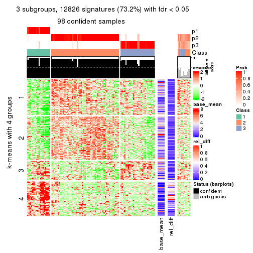
get_signatures(res, k = 4)
get_signatures(res, k = 5)
get_signatures(res, k = 6)
Signature heatmaps where rows are not scaled:
get_signatures(res, k = 2, scale_rows = FALSE)
get_signatures(res, k = 3, scale_rows = FALSE)
get_signatures(res, k = 4, scale_rows = FALSE)
get_signatures(res, k = 5, scale_rows = FALSE)
get_signatures(res, k = 6, scale_rows = FALSE)
Compare the overlap of signatures from different k:
compare_signatures(res)
get_signature() returns a data frame invisibly. TO get the list of signatures, the function
call should be assigned to a variable explicitly. In following code, if plot argument is set
to FALSE, no heatmap is plotted while only the differential analysis is performed.
# code only for demonstration
tb = get_signature(res, k = ..., plot = FALSE)
An example of the output of tb is:
#> which_row fdr mean_1 mean_2 scaled_mean_1 scaled_mean_2 km
#> 1 38 0.042760348 8.373488 9.131774 -0.5533452 0.5164555 1
#> 2 40 0.018707592 7.106213 8.469186 -0.6173731 0.5762149 1
#> 3 55 0.019134737 10.221463 11.207825 -0.6159697 0.5749050 1
#> 4 59 0.006059896 5.921854 7.869574 -0.6899429 0.6439467 1
#> 5 60 0.018055526 8.928898 10.211722 -0.6204761 0.5791110 1
#> 6 98 0.009384629 15.714769 14.887706 0.6635654 -0.6193277 2
...
The columns in tb are:
which_row: row indices corresponding to the input matrix.fdr: FDR for the differential test. mean_x: The mean value in group x.scaled_mean_x: The mean value in group x after rows are scaled.km: Row groups if k-means clustering is applied to rows.UMAP plot which shows how samples are separated.
dimension_reduction(res, k = 2, method = "UMAP")
dimension_reduction(res, k = 3, method = "UMAP")
dimension_reduction(res, k = 4, method = "UMAP")
dimension_reduction(res, k = 5, method = "UMAP")
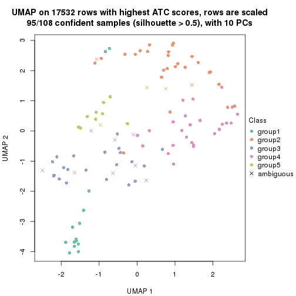
dimension_reduction(res, k = 6, method = "UMAP")
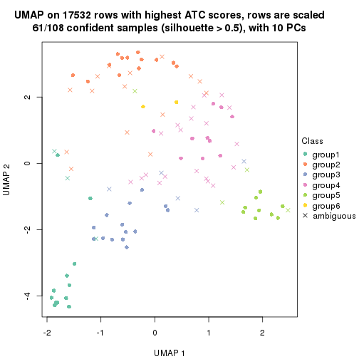
Following heatmap shows how subgroups are split when increasing k:
collect_classes(res)
If matrix rows can be associated to genes, consider to use GO_Enrichment(res,
...) to perform function enrichment for the signature genes.
sessionInfo()
#> R version 3.6.0 (2019-04-26)
#> Platform: x86_64-pc-linux-gnu (64-bit)
#> Running under: CentOS Linux 7 (Core)
#>
#> Matrix products: default
#> BLAS: /usr/lib64/libblas.so.3.4.2
#> LAPACK: /usr/lib64/liblapack.so.3.4.2
#>
#> locale:
#> [1] LC_CTYPE=en_US.UTF-8 LC_NUMERIC=C LC_TIME=en_US.UTF-8
#> [4] LC_COLLATE=en_US.UTF-8 LC_MONETARY=en_US.UTF-8 LC_MESSAGES=en_US.UTF-8
#> [7] LC_PAPER=en_US.UTF-8 LC_NAME=C LC_ADDRESS=C
#> [10] LC_TELEPHONE=C LC_MEASUREMENT=en_US.UTF-8 LC_IDENTIFICATION=C
#>
#> attached base packages:
#> [1] grid parallel stats4 stats graphics grDevices utils datasets methods
#> [10] base
#>
#> other attached packages:
#> [1] genefilter_1.66.0 ComplexHeatmap_2.1.1 markdown_1.1
#> [4] knitr_1.26 cola_1.3.2 SummarizedExperiment_1.14.1
#> [7] DelayedArray_0.10.0 BiocParallel_1.18.1 matrixStats_0.55.0
#> [10] Biobase_2.44.0 GenomicRanges_1.36.1 GenomeInfoDb_1.20.0
#> [13] IRanges_2.18.3 S4Vectors_0.22.1 BiocGenerics_0.30.0
#> [16] GetoptLong_0.1.7
#>
#> loaded via a namespace (and not attached):
#> [1] bitops_1.0-6 bit64_0.9-7 doParallel_1.0.15 RColorBrewer_1.1-2
#> [5] httr_1.4.1 backports_1.1.5 tools_3.6.0 R6_2.4.1
#> [9] DBI_1.0.0 lazyeval_0.2.2 colorspace_1.4-1 withr_2.1.2
#> [13] tidyselect_0.2.5 gridExtra_2.3 bit_1.1-14 compiler_3.6.0
#> [17] xml2_1.2.2 microbenchmark_1.4-7 pkgmaker_0.28 slam_0.1-46
#> [21] scales_1.1.0 NMF_0.23.6 stringr_1.4.0 digest_0.6.23
#> [25] XVector_0.24.0 pkgconfig_2.0.3 bibtex_0.4.2 highr_0.8
#> [29] rlang_0.4.2 GlobalOptions_0.1.1 RSQLite_2.1.2 impute_1.58.0
#> [33] shape_1.4.4 mclust_5.4.5 dendextend_1.12.0 dplyr_0.8.3
#> [37] RCurl_1.95-4.12 magrittr_1.5 GenomeInfoDbData_1.2.1 Matrix_1.2-17
#> [41] Rcpp_1.0.3 munsell_0.5.0 viridis_0.5.1 lifecycle_0.1.0
#> [45] stringi_1.4.3 zlibbioc_1.30.0 plyr_1.8.4 blob_1.2.0
#> [49] crayon_1.3.4 lattice_0.20-38 splines_3.6.0 annotate_1.62.0
#> [53] circlize_0.4.9 zeallot_0.1.0 pillar_1.4.2 rjson_0.2.20
#> [57] rngtools_1.4 reshape2_1.4.3 codetools_0.2-16 XML_3.98-1.20
#> [61] glue_1.3.1 evaluate_0.14 vctrs_0.2.0 png_0.1-7
#> [65] foreach_1.4.7 polyclip_1.10-0 gtable_0.3.0 purrr_0.3.3
#> [69] clue_0.3-57 assertthat_0.2.1 ggplot2_3.2.1 xfun_0.11
#> [73] gridBase_0.4-7 eulerr_6.0.0 xtable_1.8-4 skmeans_0.2-11
#> [77] survival_2.44-1.1 viridisLite_0.3.0 tibble_2.1.3 iterators_1.0.12
#> [81] memoise_1.1.0 AnnotationDbi_1.46.1 registry_0.5-1 GTF_0.0.1
#> [85] cluster_2.1.0 brew_1.0-6